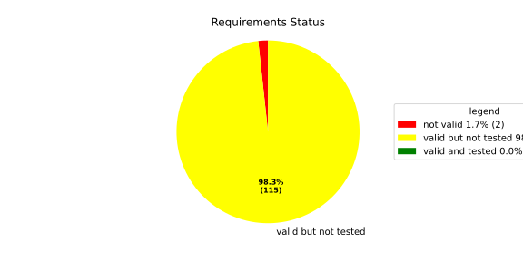
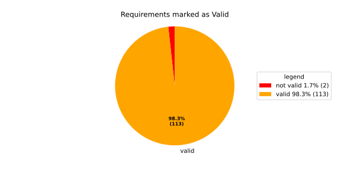
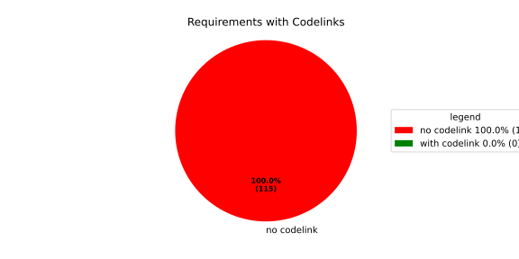

Verification Statistics#
Overview#

In Detail#


No needs passed the filters
Failed Tests
Hint: This table should be empty. Before a PR can be merged all tests have to be successful.
No needs passed the filters
Skipped / Disabled Tests
No needs passed the filters
All passed Tests#
No needs passed the filters
Details About Testcases#
No needs passed the filters
No needs passed the filters
Test Log Files#
tests-report/tests/integration/process_simple_rep_failure/process_simple_rep_failure/test.log
exec ${PAGER:-/usr/bin/less} "$0" || exit 1
Executing tests from //tests/integration/process_simple_rep_failure:process_simple_rep_failure
-----------------------------------------------------------------------------
============================= test session starts ==============================
platform linux -- Python 3.12.12, pytest-9.0.3, pluggy-1.5.0
rootdir: /home/runner/.bazel/sandbox/processwrapper-sandbox/944/execroot/_main/bazel-out/k8-fastbuild/bin/tests/integration/process_simple_rep_failure/process_simple_rep_failure.runfiles/score_itf+
configfile: pytest.ini
collected 1 item
../score_itf+::test_recovery_action_simple_rep_failure
-------------------------------- live log setup --------------------------------
[2026-06-18 12:10:02.876] [INFO] [score.itf.plugins.docker] Executing custom image bootstrap command: tests/utils/environments/x86_64-linux/x86_64-linux.sh
[2026-06-18 12:10:03.074] [DEBUG] [docker.utils.config] Trying paths: ['/home/runner/.docker/config.json', '/home/runner/.dockercfg']
[2026-06-18 12:10:03.074] [DEBUG] [docker.utils.config] Found file at path: /home/runner/.docker/config.json
[2026-06-18 12:10:03.074] [DEBUG] [docker.auth] Found 'auths' section
[2026-06-18 12:10:03.074] [DEBUG] [docker.auth] Found entry (registry='https://index.docker.io/v1/', username='githubactions')
[2026-06-18 12:10:03.082] [DEBUG] [urllib3.connectionpool] http://localhost:None "GET /version HTTP/1.1" 200 823
[2026-06-18 12:10:03.098] [DEBUG] [urllib3.connectionpool] http://localhost:None "POST /v1.48/containers/create HTTP/1.1" 201 88
[2026-06-18 12:10:03.100] [DEBUG] [urllib3.connectionpool] http://localhost:None "GET /v1.48/containers/dc648eeee62e191962437975f7bb874f517e847b0a650a9f175fbcad21311849/json HTTP/1.1" 200 None
[2026-06-18 12:10:03.276] [DEBUG] [urllib3.connectionpool] http://localhost:None "POST /v1.48/containers/dc648eeee62e191962437975f7bb874f517e847b0a650a9f175fbcad21311849/start HTTP/1.1" 204 0
[2026-06-18 12:10:03.276] [DEBUG] [docker.utils.config] Trying paths: ['/home/runner/.docker/config.json', '/home/runner/.dockercfg']
[2026-06-18 12:10:03.276] [DEBUG] [docker.utils.config] Found file at path: /home/runner/.docker/config.json
[2026-06-18 12:10:03.277] [DEBUG] [docker.auth] Found 'auths' section
[2026-06-18 12:10:03.278] [DEBUG] [docker.auth] Found entry (registry='https://index.docker.io/v1/', username='githubactions')
[2026-06-18 12:10:03.285] [DEBUG] [urllib3.connectionpool] http://localhost:None "GET /version HTTP/1.1" 200 823
[2026-06-18 12:10:03.473] [INFO] [tests.utils.testing_utils.setup_test] Test case setup finished
-------------------------------- live log call ---------------------------------
[2026-06-18 12:10:03.598] [INFO] [launch_manager] 2026/06/18 12:10:03.4603592 1671448 000 ECU1 LM LM log debug verbose 1 Launch Manager Started !!!!
[2026-06-18 12:10:03.598] [INFO] [launch_manager] 2026/06/18 12:10:03.4603594 1671451 000 ECU1 LM LM log debug verbose 1 Loading LCM Configurations...
[2026-06-18 12:10:03.598] [INFO] [launch_manager] 2026/06/18 12:10:03.4603594 1671452 000 ECU1 LM LM log debug verbose 1 ECUCFG_ENV_VAR_ROOTFOLDER set successfully
[2026-06-18 12:10:03.598] [INFO] [launch_manager] 2026/06/18 12:10:03.4603594 1671452 000 ECU1 LM LM log debug verbose 5 FlatBufferParser::getModeGroupPgName: MainPG ( IdentifierHash: 18079021346025578134 )
[2026-06-18 12:10:03.598] [INFO] [launch_manager] 2026/06/18 12:10:03.4603594 1671453 000 ECU1 LM LM log debug verbose 5 FlatBufferParser::getModeGroupPgStateName: MainPG/Startup ( IdentifierHash: 10504605499600661529 )
[2026-06-18 12:10:03.598] [INFO] [launch_manager] 2026/06/18 12:10:03.4603594 1671453 000 ECU1 LM LM log debug verbose 5 FlatBufferParser::getModeGroupPgStateName: MainPG/run_target_app_does_report_krunning_in_time ( IdentifierHash: 11934981641920773349 )
[2026-06-18 12:10:03.599] [INFO] [launch_manager] 2026/06/18 12:10:03.4603594 1671453 000 ECU1 LM LM log debug verbose 5 FlatBufferParser::getModeGroupPgStateName: MainPG/run_target_app_does_not_report_krunning_in_time ( IdentifierHash: 7672161913816744053 )
[2026-06-18 12:10:03.599] [INFO] [launch_manager] 2026/06/18 12:10:03.4603594 1671453 000 ECU1 LM LM log debug verbose 5 FlatBufferParser::getModeGroupPgStateName: MainPG/Off ( IdentifierHash: 15281793077830264047 )
[2026-06-18 12:10:03.599] [INFO] [launch_manager] 2026/06/18 12:10:03.4603594 1671453 000 ECU1 LM LM log debug verbose 5 FlatBufferParser::getModeGroupPgStateName: MainPG/fallback_run_target ( IdentifierHash: 4059409696722237352 )
[2026-06-18 12:10:03.599] [INFO] [launch_manager] 2026/06/18 12:10:03.4603594 1671454 000 ECU1 LM LM log debug verbose 4 parseProcessConfigurations: Process index: 0 executable_path_: /tmp/tests/process_simple_rep_failure/control_client_mock
[2026-06-18 12:10:03.599] [INFO] [launch_manager] 2026/06/18 12:10:03.4603594 1671454 000 ECU1 LM LM log debug verbose 3 Process control_client_mock is Reporting execution state
[2026-06-18 12:10:03.599] [INFO] [launch_manager] 2026/06/18 12:10:03.4603594 1671454 000 ECU1 LM LM log debug verbose 1 Process is STATE_MANAGEMENT function Cluster Affiliation
[2026-06-18 12:10:03.599] [INFO] [launch_manager] 2026/06/18 12:10:03.4603594 1671454 000 ECU1 LM LM log debug verbose 3 Process control_client_mock is Self terminating
[2026-06-18 12:10:03.599] [INFO] [launch_manager] 2026/06/18 12:10:03.4603594 1671455 000 ECU1 LM LM log debug verbose 4 ParseProcessProcessGroup: id:::pg_name_: MainPG , pg_state_name_: MainPG/Startup
[2026-06-18 12:10:03.599] [INFO] [launch_manager] 2026/06/18 12:10:03.4603594 1671455 000 ECU1 LM LM log debug verbose 4 ParseProcessProcessGroup: id:::pg_name_: MainPG , pg_state_name_: MainPG/run_target_app_does_report_krunning_in_time
[2026-06-18 12:10:03.599] [INFO] [launch_manager] 2026/06/18 12:10:03.4603594 1671455 000 ECU1 LM LM log debug verbose 4 ParseProcessProcessGroup: id:::pg_name_: MainPG , pg_state_name_: MainPG/run_target_app_does_not_report_krunning_in_time
[2026-06-18 12:10:03.599] [INFO] [launch_manager] 2026/06/18 12:10:03.4603594 1671455 000 ECU1 LM LM log debug verbose 4 ParseProcessProcessGroup: id:::pg_name_: MainPG , pg_state_name_: MainPG/fallback_run_target
[2026-06-18 12:10:03.602] [INFO] [launch_manager] 2026/06/18 12:10:03.4603594 1671455 000 ECU1 LM LM log debug verbose 4 parseProcessConfigurations: Process index: 1 executable_path_: /tmp/tests/process_simple_rep_failure/process_simple_reporting
[2026-06-18 12:10:03.602] [INFO] [launch_manager] 2026/06/18 12:10:03.4603594 1671456 000 ECU1 LM LM log debug verbose 3 Process component_does_report_krunning_in_time is Reporting execution state
[2026-06-18 12:10:03.602] [INFO] [launch_manager] 2026/06/18 12:10:03.4603594 1671456 000 ECU1 LM LM log debug verbose 1 Process is NOT associated with any function Cluster Affiliation
[2026-06-18 12:10:03.602] [INFO] [launch_manager] 2026/06/18 12:10:03.4603594 1671456 000 ECU1 LM LM log debug verbose 3 Process component_does_report_krunning_in_time is Self terminating
[2026-06-18 12:10:03.602] [INFO] [launch_manager] 2026/06/18 12:10:03.4603594 1671456 000 ECU1 LM LM log debug verbose 4 ParseProcessProcessGroup: id:::pg_name_: MainPG , pg_state_name_: MainPG/run_target_app_does_report_krunning_in_time
[2026-06-18 12:10:03.602] [INFO] [launch_manager] 2026/06/18 12:10:03.4603594 1671456 000 ECU1 LM LM log debug verbose 4 parseProcessConfigurations: Process index: 2 executable_path_: /tmp/tests/process_simple_rep_failure/process_simple_reporting
[2026-06-18 12:10:03.602] [INFO] [launch_manager] 2026/06/18 12:10:03.4603594 1671456 000 ECU1 LM LM log debug verbose 3 Process component_does_not_report_krunning_in_time is Reporting execution state
[2026-06-18 12:10:03.602] [INFO] [launch_manager] 2026/06/18 12:10:03.4603594 1671456 000 ECU1 LM LM log debug verbose 1 Process is NOT associated with any function Cluster Affiliation
[2026-06-18 12:10:03.602] [INFO] [launch_manager] 2026/06/18 12:10:03.4603594 1671457 000 ECU1 LM LM log debug verbose 3 Process component_does_not_report_krunning_in_time is Self terminating
[2026-06-18 12:10:03.602] [INFO] [launch_manager] 2026/06/18 12:10:03.4603594 1671457 000 ECU1 LM LM log debug verbose 4 ParseProcessProcessGroup: id:::pg_name_: MainPG , pg_state_name_: MainPG/run_target_app_does_not_report_krunning_in_time
[2026-06-18 12:10:03.602] [INFO] [launch_manager] 2026/06/18 12:10:03.4603594 1671457 000 ECU1 LM LM log debug verbose 4 parseProcessConfigurations: Process index: 3 executable_path_: /tmp/tests/process_simple_rep_failure/verification_process
[2026-06-18 12:10:03.602] [INFO] [launch_manager] 2026/06/18 12:10:03.4603594 1671457 000 ECU1 LM LM log debug verbose 3 Process verification_component is NOT Reporting execution state
[2026-06-18 12:10:03.602] [INFO] [launch_manager] 2026/06/18 12:10:03.4603594 1671457 000 ECU1 LM LM log debug verbose 1 Process is NOT associated with any function Cluster Affiliation
[2026-06-18 12:10:03.602] [INFO] [launch_manager] 2026/06/18 12:10:03.4603594 1671457 000 ECU1 LM LM log debug verbose 3 Process verification_component is Self terminating
[2026-06-18 12:10:03.602] [INFO] [launch_manager] 2026/06/18 12:10:03.4603594 1671458 000 ECU1 LM LM log debug verbose 4 ParseProcessProcessGroup: id:::pg_name_: MainPG , pg_state_name_: MainPG/fallback_run_target
[2026-06-18 12:10:03.603] [INFO] [launch_manager] 2026/06/18 12:10:03.4603594 1671458 000 ECU1 LM LM log debug verbose 3 Loading SWCL Nr. 0 Succeeded
[2026-06-18 12:10:03.603] [INFO] [launch_manager] 2026/06/18 12:10:03.4603594 1671458 000 ECU1 LM LM log debug verbose 2 1 process group(s)
[2026-06-18 12:10:03.603] [INFO] [launch_manager] 2026/06/18 12:10:03.4603594 1671458 000 ECU1 LM LM log debug verbose 3 Creating graph with 4 nodes
[2026-06-18 12:10:03.609] [INFO] [launch_manager] 2026/06/18 12:10:03.4603594 1671458 000 ECU1 LM LM log debug verbose 1 Process groups initialized successfully
[2026-06-18 12:10:03.610] [INFO] [launch_manager] 2026/06/18 12:10:03.4603594 1671458 000 ECU1 LM LM log debug verbose 1 Process Group initialization done
[2026-06-18 12:10:03.610] [INFO] [launch_manager] 2026/06/18 12:10:03.4603594 1671458 000 ECU1 LM LM log debug verbose 3 Creating Safe Process Map with 4 entries
[2026-06-18 12:10:03.610] [INFO] [launch_manager] 2026/06/18 12:10:03.4603594 1671458 000 ECU1 LM LM log debug verbose 2 Creating job queue with capacity 1024
[2026-06-18 12:10:03.610] [INFO] [launch_manager] 2026/06/18 12:10:03.4603594 1671459 000 ECU1 LM LM log debug verbose 1 Creating worker threads...
[2026-06-18 12:10:03.610] [INFO] [launch_manager] 2026/06/18 12:10:03.4603595 1671469 000 ECU1 LM LM log debug verbose 7 Process group index 0 (with name MainPG ) has 4 processes
[2026-06-18 12:10:03.610] [INFO] [launch_manager] 2026/06/18 12:10:03.4603595 1671469 000 ECU1 LM LM log debug verbose 2 Creating process node with id: 0
[2026-06-18 12:10:03.610] [INFO] [launch_manager] 2026/06/18 12:10:03.4603595 1671469 000 ECU1 LM LM log debug verbose 5 Process 0 has 0 start dependencies
[2026-06-18 12:10:03.610] [INFO] [launch_manager] 2026/06/18 12:10:03.4603595 1671469 000 ECU1 LM LM log debug verbose 2 Creating process node with id: 1
[2026-06-18 12:10:03.610] [INFO] [launch_manager] 2026/06/18 12:10:03.4603595 1671469 000 ECU1 LM LM log debug verbose 5 Process 1 has 0 start dependencies
[2026-06-18 12:10:03.610] [INFO] [launch_manager] 2026/06/18 12:10:03.4603595 1671469 000 ECU1 LM LM log debug verbose 2 Creating process node with id: 2
[2026-06-18 12:10:03.610] [INFO] [launch_manager] 2026/06/18 12:10:03.4603595 1671470 000 ECU1 LM LM log debug verbose 5 Process 2 has 0 start dependencies
[2026-06-18 12:10:03.610] [INFO] [launch_manager] 2026/06/18 12:10:03.4603595 1671470 000 ECU1 LM LM log debug verbose 2 Creating process node with id: 3
[2026-06-18 12:10:03.610] [INFO] [launch_manager] 2026/06/18 12:10:03.4603596 1671470 000 ECU1 LM LM log debug verbose 5 Process 3 has 0 start dependencies
[2026-06-18 12:10:03.610] [INFO] [launch_manager] 2026/06/18 12:10:03.4603596 1671470 000 ECU1 LM LM log debug verbose 3 Created 4 process nodes
[2026-06-18 12:10:03.610] [INFO] [launch_manager] 2026/06/18 12:10:03.4603596 1671470 000 ECU1 LM LM log debug verbose 2 Creating successor lists for process group MainPG
[2026-06-18 12:10:03.610] [INFO] [launch_manager] 2026/06/18 12:10:03.4603596 1671471 000 ECU1 LM LM log debug verbose 1 Graphs initialized
[2026-06-18 12:10:03.610] [INFO] [launch_manager] 2026/06/18 12:10:03.4603596 1671472 000 ECU1 LM Fcty log info verbose 2 Factory for FlatCfg MachineConfig: Loading of HM Machine Configuration succeeded.
[2026-06-18 12:10:03.610] [INFO] [launch_manager] 2026/06/18 12:10:03.4603596 1671472 000 ECU1 LM Fcty log debug verbose 3 Factory for FlatCfg MachineConfig: Alive Supervision buffer size: 100
[2026-06-18 12:10:03.610] [INFO] [launch_manager] 2026/06/18 12:10:03.4603596 1671472 000 ECU1 LM Fcty log debug verbose 3 Factory for FlatCfg MachineConfig: Monitor buffer size: 512
[2026-06-18 12:10:03.610] [INFO] [launch_manager] 2026/06/18 12:10:03.4603596 1671473 000 ECU1 LM Fcty log debug verbose 4 Factory for FlatCfg MachineConfig: Periodicity: 50000000 ns
[2026-06-18 12:10:03.611] [INFO] [launch_manager] 2026/06/18 12:10:03.4603596 1671473 000 ECU1 LM Fcty log debug verbose 3 Factory for FlatCfg MachineConfig: Configured watchdogs: 0
[2026-06-18 12:10:03.611] [INFO] [launch_manager] 2026/06/18 12:10:03.4603596 1671473 000 ECU1 LM Fcty log warn verbose 2 Factory for FlatCfg MachineConfig: No watchdog configured
[2026-06-18 12:10:03.611] [INFO] [launch_manager] 2026/06/18 12:10:03.4603596 1671473 000 ECU1 LM Fcty log debug verbose 2 Software Cluster Handler starts constructing workers: MainCluster
[2026-06-18 12:10:03.611] [INFO] [launch_manager] 2026/06/18 12:10:03.4603596 1671473 000 ECU1 LM Fcty log debug verbose 3 Factory for FlatCfg AR24-11: Successfully created Process States: control_client_mock
[2026-06-18 12:10:03.611] [INFO] [launch_manager] 2026/06/18 12:10:03.4603596 1671474 000 ECU1 LM Fcty log debug verbose 3 Factory for FlatCfg AR24-11: Number of constructed Process States: 1
[2026-06-18 12:10:03.611] [INFO] [launch_manager] 2026/06/18 12:10:03.4603596 1671474 000 ECU1 LM Fcty log debug verbose 3 Factory for FlatCfg AR24-11: Successfully created Monitor interface IPC with path: lifecycle_health_control_client_mock
[2026-06-18 12:10:03.611] [INFO] [launch_manager] 2026/06/18 12:10:03.4603596 1671474 000 ECU1 LM Fcty log debug verbose 3 Factory for FlatCfg AR24-11: Number of constructed Monitor interface IPCs: 1
[2026-06-18 12:10:03.611] [INFO] [launch_manager] 2026/06/18 12:10:03.4603596 1671475 000 ECU1 LM Fcty log debug verbose 3 Factory for FlatCfg AR24-11: Successfully created MonitorInterface: /lifecycle_health_control_client_mock
[2026-06-18 12:10:03.611] [INFO] [launch_manager] 2026/06/18 12:10:03.4603596 1671475 000 ECU1 LM Fcty log debug verbose 3 Factory for FlatCfg AR24-11: Number of constructed Monitor interfaces: 1
[2026-06-18 12:10:03.611] [INFO] [launch_manager] 2026/06/18 12:10:03.4603596 1671475 000 ECU1 LM Fcty log debug verbose 3 Factory for FlatCfg AR24-11: Successfully created supervision checkpoint: control_client_mock_checkpoint
[2026-06-18 12:10:03.611] [INFO] [launch_manager] 2026/06/18 12:10:03.4603596 1671475 000 ECU1 LM Fcty log debug verbose 3 Factory for FlatCfg AR24-11: Number of constructed supervision checkpoints: 1
[2026-06-18 12:10:03.611] [INFO] [launch_manager] 2026/06/18 12:10:03.4603596 1671475 000 ECU1 LM Fcty log debug verbose 3 Factory for FlatCfg AR24-11: Successfully created alive supervision worker object: control_client_mock_alive_supervision
[2026-06-18 12:10:03.611] [INFO] [launch_manager] 2026/06/18 12:10:03.4603596 1671476 000 ECU1 LM Fcty log debug verbose 3 Factory for FlatCfg AR24-11: Number of constructed alive supervisions: 1
[2026-06-18 12:10:03.611] [INFO] [launch_manager] 2026/06/18 12:10:03.4603596 1671476 000 ECU1 LM Fcty log info verbose 2 Phm Daemon: The (configured) periodicity in [ns] is set to: 50000000
[2026-06-18 12:10:03.611] [INFO] [launch_manager] 2026/06/18 12:10:03.4603596 1671476 000 ECU1 LM Fcty log debug verbose 2 Phm Daemon: The accuracy of the monotonic system clock in [ns] is: 1
[2026-06-18 12:10:03.611] [INFO] [launch_manager] 2026/06/18 12:10:03.4603596 1671476 000 ECU1 LM Fcty log debug verbose 3 HealthMonitor: Initialization took 0 ms
[2026-06-18 12:10:03.611] [INFO] [launch_manager] 2026/06/18 12:10:03.4603596 1671476 000 ECU1 LM LM log info verbose 1 LCM started successfully
[2026-06-18 12:10:03.611] [INFO] [launch_manager] 2026/06/18 12:10:03.4603596 1671477 000 ECU1 LM LM log debug verbose 3 clock() at run(): 30.600000 ms
[2026-06-18 12:10:03.612] [INFO] [launch_manager] 2026/06/18 12:10:03.4603596 1671477 000 ECU1 LM LM log debug verbose 1 =============STARTING MAINPG STARTUP STATE============
[2026-06-18 12:10:03.612] [INFO] [launch_manager] 2026/06/18 12:10:03.4603596 1671477 000 ECU1 LM LM log debug verbose 9 Graph::setState changes from kSuccess to kInTransition for PG 0 ( MainPG )
[2026-06-18 12:10:03.612] [INFO] [launch_manager] 2026/06/18 12:10:03.4603596 1671478 000 ECU1 LM LM log debug verbose 2 Stop Dependencies: 0
[2026-06-18 12:10:03.614] [INFO] [launch_manager] 2026/06/18 12:10:03.4603596 1671478 000 ECU1 LM LM log debug verbose 2 Stop Dependencies: 0
[2026-06-18 12:10:03.614] [INFO] [launch_manager] 2026/06/18 12:10:03.4603596 1671478 000 ECU1 LM LM log debug verbose 2 Stop Dependencies: 0
[2026-06-18 12:10:03.614] [INFO] [launch_manager] 2026/06/18 12:10:03.4603596 1671478 000 ECU1 LM LM log debug verbose 2 Stop Dependencies: 0
[2026-06-18 12:10:03.614] [INFO] [launch_manager] 2026/06/18 12:10:03.4603596 1671478 000 ECU1 LM LM log debug verbose 2 Start Dependencies: 0
[2026-06-18 12:10:03.614] [INFO] [launch_manager] 2026/06/18 12:10:03.4603596 1671478 000 ECU1 LM LM log debug verbose 2 Start Dependencies: 0
[2026-06-18 12:10:03.614] [INFO] [launch_manager] 2026/06/18 12:10:03.4603596 1671478 000 ECU1 LM LM log debug verbose 2 Start Dependencies: 0
[2026-06-18 12:10:03.614] [INFO] [launch_manager] 2026/06/18 12:10:03.4603596 1671479 000 ECU1 LM LM log debug verbose 2 Start Dependencies: 0
[2026-06-18 12:10:03.614] [INFO] [launch_manager] 2026/06/18 12:10:03.4603596 1671479 000 ECU1 LM LM log debug verbose 6 Starting process 0 ( control_client_mock ) from executable /tmp/tests/process_simple_rep_failure/control_client_mock
[2026-06-18 12:10:03.614] [INFO] [launch_manager] 2026/06/18 12:10:03.4603596 1671480 000 ECU1 LM LM log debug verbose 3 Initialize the control client for control_client_mock process
[2026-06-18 12:10:03.614] [INFO] [launch_manager] 2026/06/18 12:10:03.4603596 1671480 000 ECU1 LM LM log debug verbose 1 ControlClientChannel initialized
[2026-06-18 12:10:03.614] [INFO] [launch_manager] 2026/06/18 12:10:03.4603597 1671484 000 ECU1 LM LM log debug verbose 4 startProcess pid 69 received for process: control_client_mock
[2026-06-18 12:10:03.614] [INFO] [launch_manager] 2026/06/18 12:10:03.4603597 1671484 000 ECU1 LM LM log debug verbose 1 ControlClientChannel obtained from sync.
[2026-06-18 12:10:03.614] [INFO] [launch_manager] [==========] Running 1 test from 1 test suite.
[2026-06-18 12:10:03.614] [INFO] [launch_manager] [----------] Global test environment set-up.
[2026-06-18 12:10:03.614] [INFO] [launch_manager] [----------] 1 test from RecoveryActionSimpleRepFailure
[2026-06-18 12:10:03.614] [INFO] [launch_manager] [ RUN ] RecoveryActionSimpleRepFailure.ControlClientMock
[2026-06-18 12:10:03.615] [INFO] [launch_manager] [ STEP ] Report running from ControlClientMock
[2026-06-18 12:10:03.615] [INFO] [launch_manager] [ END STEP ] Report running from ControlClientMock
[2026-06-18 12:10:03.615] [INFO] [launch_manager] [ STEP ] Activate RunTarget run_target_app_does_report_krunning_in_time
[2026-06-18 12:10:03.616] [INFO] [launch_manager] 2026/06/18 12:10:03.4603601 1671526 000 ECU1 LM LM log debug verbose 8 Got kRunning for pid 69 ( control_client_mock ) process 0 of group MainPG
[2026-06-18 12:10:03.616] [INFO] [launch_manager] 2026/06/18 12:10:03.4603601 1671526 000 ECU1 LM LM log debug verbose 7 startProcess for MainPG process 0 ( control_client_mock ) done
[2026-06-18 12:10:03.616] [INFO] [launch_manager] 2026/06/18 12:10:03.4603601 1671527 000 ECU1 LM LM log debug verbose 1 Control Client handler nudged
[2026-06-18 12:10:03.616] [INFO] [launch_manager] 2026/06/18 12:10:03.4603601 1671527 000 ECU1 LM LM log debug verbose 3 clock() at successful initial state transition: 31.580000 ms
[2026-06-18 12:10:03.616] [INFO] [launch_manager] 2026/06/18 12:10:03.4603601 1671527 000 ECU1 LM LM log debug verbose 1 Request sent. Waiting for acknowledgment...
[2026-06-18 12:10:03.616] [INFO] [launch_manager] 2026/06/18 12:10:03.4603601 1671534 000 ECU1 LM LM log debug verbose 9
[2026-06-18 12:10:03.616] [INFO] [launch_manager] Graph::setState changes from kInTransition to kSuccess for PG 0 ( MainPG )
[2026-06-18 12:10:03.616] [INFO] [launch_manager] 2026/06/18 12:10:03.4603603 1671546 000 ECU1 LM LM log info verbose 7
[2026-06-18 12:10:03.616] [INFO] [launch_manager] Completed the request for PG MainPG to State MainPG/Startup in 6 ms
[2026-06-18 12:10:03.616] [INFO] [launch_manager] 2026/06/18 12:10:03.4603604 1671551 000 ECU1 LM LM log debug verbose 8
[2026-06-18 12:10:03.616] [INFO] [launch_manager] ProcessGroupManager::ControlClientHandler: got request kSetStateRequest ( 16 ) re state MainPG/run_target_app_does_report_krunning_in_time of PG MainPG
[2026-06-18 12:10:03.616] [INFO] [launch_manager] 2026/06/18 12:10:03.4603605 1671560 000 ECU1 LM LM log debug verbose 1
[2026-06-18 12:10:03.616] [INFO] [launch_manager] Control Client handler nudged
[2026-06-18 12:10:03.616] [INFO] [launch_manager] 2026/06/18 12:10:03.4603605 1671561 000 ECU1 LM LM log debug verbose 6
[2026-06-18 12:10:03.616] [INFO] [launch_manager] Pending state for process group MainPG changed from to MainPG/run_target_app_does_report_krunning_in_time
[2026-06-18 12:10:03.616] [INFO] [launch_manager] 2026/06/18 12:10:03.4603605 1671562 000 ECU1 LM LM log debug verbose 1 Request acknowledged.
[2026-06-18 12:10:03.616] [INFO] [launch_manager] 2026/06/18 12:10:03.4603605 1671563 000 ECU1 LM LM log debug verbose 6 2026/06/18 12:10:03.4603605 1671563 000 ECU1 LM LM log debug verbose 1
[2026-06-18 12:10:03.617] [INFO] [launch_manager] Request acknowledged.
[2026-06-18 12:10:03.617] [INFO] [launch_manager] Pending state for process group MainPG changed from MainPG/run_target_app_does_report_krunning_in_time to
[2026-06-18 12:10:03.617] [INFO] [launch_manager] 2026/06/18 12:10:03.4603605 1671564 000 ECU1 LM LM log debug verbose 4
[2026-06-18 12:10:03.617] [INFO] [launch_manager] Start transition to MainPG/run_target_app_does_report_krunning_in_time for PG MainPG
[2026-06-18 12:10:03.617] [INFO] [launch_manager] 2026/06/18 12:10:03.4603605 1671568 000 ECU1 LM LM log debug verbose 9
[2026-06-18 12:10:03.617] [INFO] [launch_manager] Graph::setState changes from kSuccess to kInTransition for PG 0 ( MainPG )
[2026-06-18 12:10:03.617] [INFO] [launch_manager] 2026/06/18 12:10:03.4603605 1671569 000 ECU1 LM LM log debug verbose 2
[2026-06-18 12:10:03.617] [INFO] [launch_manager] Stop Dependencies: 0
[2026-06-18 12:10:03.617] [INFO] [launch_manager] 2026/06/18 12:10:03.4603606 1671571 000 ECU1 LM LM log debug verbose 2 Stop Dependencies: 0
[2026-06-18 12:10:03.617] [INFO] [launch_manager] 2026/06/18 12:10:03.4603606 1671573 000 ECU1 LM LM log debug verbose 2 Stop Dependencies: 0
[2026-06-18 12:10:03.618] [INFO] [launch_manager] 2026/06/18 12:10:03.4603606 1671574 000 ECU1 LM LM log debug verbose 2
[2026-06-18 12:10:03.618] [INFO] [launch_manager] Stop Dependencies: 0
[2026-06-18 12:10:03.618] [INFO] [launch_manager] 2026/06/18 12:10:03.4603606 1671579 000 ECU1 LM LM log debug verbose 2
[2026-06-18 12:10:03.618] [INFO] [launch_manager] Start Dependencies: 0
[2026-06-18 12:10:03.618] [INFO] [launch_manager] 2026/06/18 12:10:03.4603609 1671601 000 ECU1 LM LM log debug verbose 2 Start Dependencies: 0
[2026-06-18 12:10:03.618] [INFO] [launch_manager] 2026/06/18 12:10:03.4603609 1671601 000 ECU1 LM LM log debug verbose 2 Start Dependencies: 0
[2026-06-18 12:10:03.618] [INFO] [launch_manager] 2026/06/18 12:10:03.4603609 1671602 000 ECU1 LM LM log debug verbose 2
[2026-06-18 12:10:03.618] [INFO] [launch_manager] Start Dependencies: 0
[2026-06-18 12:10:03.618] [INFO] [launch_manager] 2026/06/18 12:10:03.4603609 1671603 000 ECU1 LM LM log debug verbose 6 Starting process 1 ( component_does_report_krunning_in_time ) from executable /tmp/tests/process_simple_rep_failure/process_simple_reporting
[2026-06-18 12:10:03.619] [INFO] [launch_manager] 2026/06/18 12:10:03.4603609 1671608 000 ECU1 LM LM log debug verbose 4 startProcess pid 71 received for process: component_does_report_krunning_in_time
[2026-06-18 12:10:03.619] [INFO] [launch_manager] [==========] Running 1 test from 1 test suite.
[2026-06-18 12:10:03.619] [INFO] [launch_manager] [----------] Global test environment set-up.
[2026-06-18 12:10:03.619] [INFO] [launch_manager] [----------] 1 test from ProcessSimpleRepFailure
[2026-06-18 12:10:03.619] [INFO] [launch_manager] [ RUN ] ProcessSimpleRepFailure.ProcessSimpleReporting
[2026-06-18 12:10:03.619] [INFO] [launch_manager] [ STEP ] Check args
[2026-06-18 12:10:03.619] [INFO] [launch_manager] [ END STEP ] Check args
[2026-06-18 12:10:03.619] [INFO] [launch_manager] [ STEP ] Report running from ProcessSimpleReporting
[2026-06-18 12:10:03.647] [INFO] [launch_manager] 2026/06/18 12:10:03.4603646 1671979 000 ECU1 LM Sprv log debug verbose 6 Process with Id control_client_mock changed state PG MainPG/Startup PS 1
[2026-06-18 12:10:03.647] [INFO] [launch_manager] 2026/06/18 12:10:03.4603646 1671980 000 ECU1 LM Sprv log debug verbose 6
[2026-06-18 12:10:03.648] [INFO] [launch_manager] Process with Id control_client_mock changed state PG MainPG/Startup PS 2
[2026-06-18 12:10:03.649] [INFO] [launch_manager] 2026/06/18 12:10:03.4603647 1671981 000 ECU1 LM Sprv log debug verbose 6 Process with Id component_does_report_krunning_in_time changed state PG MainPG/run_target_app_does_report_krunning_in_time PS 1
[2026-06-18 12:10:03.649] [INFO] [launch_manager] 2026/06/18 12:10:03.4603647 1671981 000 ECU1 LM Sprv log info verbose 3
[2026-06-18 12:10:03.649] [INFO] [launch_manager] Alive Supervision ( control_client_mock_alive_supervision ) switched to OK.
[2026-06-18 12:10:03.662] [DEBUG] [tests.utils.testing_utils.run_until_file_deployed] Waiting for /tmp/tests/test_end
[2026-06-18 12:10:04.114] [INFO] [launch_manager] [ END STEP ] Report running from ProcessSimpleReporting
[2026-06-18 12:10:04.114] [INFO] [launch_manager] [ OK ] ProcessSimpleRepFailure.ProcessSimpleReporting (502 ms)
[2026-06-18 12:10:04.114] [INFO] [launch_manager] [----------] 1 test from ProcessSimpleRepFailure (502 ms total)
[2026-06-18 12:10:04.114] [INFO] [launch_manager] [----------] Global test environment tear-down
[2026-06-18 12:10:04.114] [INFO] [launch_manager] [==========] 1 test from 1 test suite ran. (502 ms total)
[2026-06-18 12:10:04.114] [INFO] [launch_manager] [ PASSED ] 1 test.
[2026-06-18 12:10:04.114] [INFO] [launch_manager] 2026/06/18 12:10:04.4604114 1676655 000 ECU1 LM LM log debug verbose 8 Got kRunning for pid 71 ( component_does_report_krunning_in_time ) process 1 of group MainPG
[2026-06-18 12:10:04.114] [INFO] [launch_manager] 2026/06/18 12:10:04.4604114 1676656 000 ECU1 LM LM log debug verbose 7 startProcess for MainPG process 1 ( component_does_report_krunning_in_time ) done
[2026-06-18 12:10:04.114] [INFO] [launch_manager] 2026/06/18 12:10:04.4604114 1676658 000 ECU1 LM LM log debug verbose 12
[2026-06-18 12:10:04.114] [INFO] [launch_manager] Child process 1 of MainPG pid 71 ( component_does_report_krunning_in_time ) for node True terminated with status 0
[2026-06-18 12:10:04.118] [INFO] [launch_manager] 2026/06/18 12:10:04.4604114 1676660 000 ECU1 LM LM log debug verbose 9
[2026-06-18 12:10:04.118] [INFO] [launch_manager] Graph::setState changes from kInTransition to kSuccess for PG 0 ( MainPG )
[2026-06-18 12:10:04.118] [INFO] [launch_manager] 2026/06/18 12:10:04.4604115 1676661 000 ECU1 LM LM log info verbose 7
[2026-06-18 12:10:04.118] [INFO] [launch_manager] Completed the request for PG MainPG to State MainPG/run_target_app_does_report_krunning_in_time in 509 ms
[2026-06-18 12:10:04.118] [INFO] [launch_manager] 2026/06/18 12:10:04.4604115 1676662 000 ECU1 LM LM log debug verbose 1
[2026-06-18 12:10:04.118] [INFO] [launch_manager] Control Client handler nudged
[2026-06-18 12:10:04.118] [INFO] [launch_manager] 2026/06/18 12:10:04.4604117 1676681 000 ECU1 LM LM log debug verbose 8 ProcessGroupManager::ControlClientHandler: Sending kSetStateSuccess ( 20 ) re state MainPG/run_target_app_does_report_krunning_in_time of PG MainPG
[2026-06-18 12:10:04.118] [INFO] [launch_manager] 2026/06/18 12:10:04.4604117 1676681 000 ECU1 LM LM log debug verbose 1 Response sent.
[2026-06-18 12:10:04.147] [INFO] [launch_manager] 2026/06/18 12:10:04.4604146 1676979 000 ECU1 LM Sprv log debug verbose 6 Process with Id component_does_report_krunning_in_time changed state PG MainPG/run_target_app_does_report_krunning_in_time PS 2
[2026-06-18 12:10:04.147] [INFO] [launch_manager] 2026/06/18 12:10:04.4604146 1676980 000 ECU1 LM Sprv log debug verbose 6 Process with Id component_does_report_krunning_in_time changed state PG MainPG/run_target_app_does_report_krunning_in_time PS 4
[2026-06-18 12:10:04.199] [INFO] [launch_manager] 2026/06/18 12:10:04.4604199 1677508 000 ECU1 LM LM log debug verbose 1
[2026-06-18 12:10:04.200] [INFO] [launch_manager] Response retrieved.
[2026-06-18 12:10:04.200] [INFO] [launch_manager] [ END STEP ] Activate RunTarget run_target_app_does_report_krunning_in_time
[2026-06-18 12:10:04.213] [DEBUG] [tests.utils.testing_utils.run_until_file_deployed] Waiting for /tmp/tests/test_end
[2026-06-18 12:10:04.831] [DEBUG] [tests.utils.testing_utils.run_until_file_deployed] Waiting for /tmp/tests/test_end
[2026-06-18 12:10:05.200] [INFO] [launch_manager] [ STEP ] Verify fallback run target has not been activated
[2026-06-18 12:10:05.200] [INFO] [launch_manager] [ END STEP ] Verify fallback run target has not been activated
[2026-06-18 12:10:05.200] [INFO] [launch_manager] [ STEP ] Activate RunTarget run_target_app_does_not_report_krunning_in_time
[2026-06-18 12:10:05.200] [INFO] [launch_manager] 2026/06/18 12:10:05.4605200 1687518 000 ECU1 LM LM log debug verbose 1 Request sent. Waiting for acknowledgment...
[2026-06-18 12:10:05.202] [INFO] [launch_manager] 2026/06/18 12:10:05.4605201 1687529 000 ECU1 LM LM log debug verbose 8 ProcessGroupManager::ControlClientHandler: got request kSetStateRequest ( 16 ) re state MainPG/run_target_app_does_not_report_krunning_in_time of PG MainPG
[2026-06-18 12:10:05.202] [INFO] [launch_manager] 2026/06/18 12:10:05.4605201 1687530 000 ECU1 LM LM log debug verbose 6 Pending state for process group MainPG changed from to MainPG/run_target_app_does_not_report_krunning_in_time
[2026-06-18 12:10:05.202] [INFO] [launch_manager] 2026/06/18 12:10:05.4605202 1687531 000 ECU1 LM LM log debug verbose 1 Request acknowledged.
[2026-06-18 12:10:05.202] [INFO] [launch_manager] 2026/06/18 12:10:05.4605202 1687531 000 ECU1 LM LM log debug verbose 6 Pending state for process group MainPG changed from MainPG/run_target_app_does_not_report_krunning_in_time to
[2026-06-18 12:10:05.202] [INFO] [launch_manager] 2026/06/18 12:10:05.4605202 1687532 000 ECU1 LM LM log debug verbose 4 Start transition to MainPG/run_target_app_does_not_report_krunning_in_time for PG MainPG
[2026-06-18 12:10:05.202] [INFO] [launch_manager] 2026/06/18 12:10:05.4605202 1687536 000 ECU1 LM LM log debug verbose 9
[2026-06-18 12:10:05.205] [INFO] [launch_manager] 2026/06/18 12:10:05.4605202 1687540 000 ECU1 LM LM log debug verbose 1 Request acknowledged.
[2026-06-18 12:10:05.205] [INFO] [launch_manager] Graph::setState changes from kSuccess to kInTransition for PG 0 ( MainPG )
[2026-06-18 12:10:05.208] [INFO] [launch_manager] 2026/06/18 12:10:05.4605203 1687542 000 ECU1 LM LM log debug verbose 2
[2026-06-18 12:10:05.208] [INFO] [launch_manager] Stop Dependencies: 0
[2026-06-18 12:10:05.208] [INFO] [launch_manager] 2026/06/18 12:10:05.4605203 1687544 000 ECU1 LM LM log debug verbose 2
[2026-06-18 12:10:05.208] [INFO] [launch_manager] Stop Dependencies: 0
[2026-06-18 12:10:05.208] [INFO] [launch_manager] 2026/06/18 12:10:05.4605203 1687545 000 ECU1 LM LM log debug verbose 2
[2026-06-18 12:10:05.208] [INFO] [launch_manager] Stop Dependencies: 0
[2026-06-18 12:10:05.208] [INFO] [launch_manager] 2026/06/18 12:10:05.4605203 1687547 000 ECU1 LM LM log debug verbose 2
[2026-06-18 12:10:05.208] [INFO] [launch_manager] Stop Dependencies: 0
[2026-06-18 12:10:05.208] [INFO] [launch_manager] 2026/06/18 12:10:05.4605203 1687548 000 ECU1 LM LM log debug verbose 2
[2026-06-18 12:10:05.208] [INFO] [launch_manager] Start Dependencies: 0
[2026-06-18 12:10:05.209] [INFO] [launch_manager] 2026/06/18 12:10:05.4605203 1687549 000 ECU1 LM LM log debug verbose 2
[2026-06-18 12:10:05.209] [INFO] [launch_manager] Start Dependencies: 0
[2026-06-18 12:10:05.209] [INFO] [launch_manager] 2026/06/18 12:10:05.4605205 1687568 000 ECU1 LM LM log debug verbose 2
[2026-06-18 12:10:05.209] [INFO] [launch_manager] Start Dependencies: 0
[2026-06-18 12:10:05.209] [INFO] [launch_manager] 2026/06/18 12:10:05.4605205 1687569 000 ECU1 LM LM log debug verbose 2
[2026-06-18 12:10:05.209] [INFO] [launch_manager] Start Dependencies: 0
[2026-06-18 12:10:05.209] [INFO] [launch_manager] 2026/06/18 12:10:05.4605207 1687583 000 ECU1 LM LM log debug verbose 6
[2026-06-18 12:10:05.209] [INFO] [launch_manager] Starting process 2 ( component_does_not_report_krunning_in_time ) from executable /tmp/tests/process_simple_rep_failure/process_simple_reporting
[2026-06-18 12:10:05.209] [INFO] [launch_manager] 2026/06/18 12:10:05.4605207 1687589 000 ECU1 LM LM log debug verbose 4
[2026-06-18 12:10:05.209] [INFO] [launch_manager] startProcess pid 91 received for process: component_does_not_report_krunning_in_time
[2026-06-18 12:10:05.213] [INFO] [launch_manager] [==========] Running 1 test from 1 test suite.
[2026-06-18 12:10:05.213] [INFO] [launch_manager] [----------] Global test environment set-up.
[2026-06-18 12:10:05.213] [INFO] [launch_manager] [----------] 1 test from ProcessSimpleRepFailure
[2026-06-18 12:10:05.213] [INFO] [launch_manager] [ RUN ] ProcessSimpleRepFailure.ProcessSimpleReporting
[2026-06-18 12:10:05.213] [INFO] [launch_manager] [ STEP ] Check args
[2026-06-18 12:10:05.213] [INFO] [launch_manager] [ END STEP ] Check args
[2026-06-18 12:10:05.213] [INFO] [launch_manager] [ STEP ] Report running from ProcessSimpleReporting
[2026-06-18 12:10:05.255] [INFO] [launch_manager] 2026/06/18 12:10:05.4605250 1688011 000 ECU1 LM Sprv log debug verbose 6 Process with Id component_does_not_report_krunning_in_time changed state PG MainPG/run_target_app_does_not_report_krunning_in_time PS 1
[2026-06-18 12:10:05.390] [DEBUG] [tests.utils.testing_utils.run_until_file_deployed] Waiting for /tmp/tests/test_end
[2026-06-18 12:10:05.933] [DEBUG] [tests.utils.testing_utils.run_until_file_deployed] Waiting for /tmp/tests/test_end
[2026-06-18 12:10:06.256] [INFO] [launch_manager] 2026/06/18 12:10:06.4606256 1698077 000 ECU1 LM LM log error verbose 1 Semaphore timedWait or post failed: Unable to wait or post on semaphores within the specified timeout.
[2026-06-18 12:10:06.257] [INFO] [launch_manager] 2026/06/18 12:10:06.4606256 1698078 000 ECU1 LM LM log warn verbose 5 Got kRunning timeout for process 2 ( component_does_not_report_krunning_in_time )
[2026-06-18 12:10:06.257] [INFO] [launch_manager] 2026/06/18 12:10:06.4606256 1698078 000 ECU1 LM LM log debug verbose 5 terminating process 2 ( component_does_not_report_krunning_in_time )
[2026-06-18 12:10:06.257] [INFO] [launch_manager] 2026/06/18 12:10:06.4606256 1698078 000 ECU1 LM LM log debug verbose 9 Requesting termination of process 2 of MainPG pid 91 ( component_does_not_report_krunning_in_time )
[2026-06-18 12:10:06.257] [INFO] [launch_manager] 2026/06/18 12:10:06.4606256 1698078 000 ECU1 LM LM log debug verbose 2 Request termination received for 91
[2026-06-18 12:10:06.296] [INFO] [launch_manager] 2026/06/18 12:10:06.4606296 1698477 000 ECU1 LM Sprv log debug verbose 6 Process with Id component_does_not_report_krunning_in_time changed state PG MainPG/run_target_app_does_not_report_krunning_in_time PS 3
[2026-06-18 12:10:06.466] [DEBUG] [tests.utils.testing_utils.run_until_file_deployed] Waiting for /tmp/tests/test_end
[2026-06-18 12:10:07.026] [DEBUG] [tests.utils.testing_utils.run_until_file_deployed] Waiting for /tmp/tests/test_end
[2026-06-18 12:10:07.294] [INFO] [launch_manager] 2026/06/18 12:10:07.4607294 1708452 000 ECU1 LM LM log warn verbose 5 Process 2 ( component_does_not_report_krunning_in_time ) did not respond to SIGTERM, sending SIGKILL
[2026-06-18 12:10:07.294] [INFO] [launch_manager] 2026/06/18 12:10:07.4607294 1708452 000 ECU1 LM LM log debug verbose 2 Forced termination received for pid 91
[2026-06-18 12:10:07.296] [INFO] [launch_manager] 2026/06/18 12:10:07.4607294 1708459 000 ECU1 LM LM log debug verbose 12 Child process 2 of MainPG pid 91 ( component_does_not_report_krunning_in_time ) for node True terminated with status 9
[2026-06-18 12:10:07.296] [INFO] [launch_manager] 2026/06/18 12:10:07.4607294 1708459 000 ECU1 LM LM log warn verbose 7 unexpected termination of process 2 pid 91 ( component_does_not_report_krunning_in_time )
[2026-06-18 12:10:07.296] [INFO] [launch_manager] 2026/06/18 12:10:07.4607294 1708460 000 ECU1 LM LM log debug verbose 9 Graph::setState changes from kInTransition to kAborting for PG 0 ( MainPG )
[2026-06-18 12:10:07.297] [INFO] [launch_manager] 2026/06/18 12:10:07.4607296 1708473 000 ECU1 LM LM log debug verbose 7 terminateProcess for MainPG process 2 ( component_does_not_report_krunning_in_time ) done
[2026-06-18 12:10:07.297] [INFO] [launch_manager] 2026/06/18 12:10:07.4607296 1708474 000 ECU1 LM LM log debug verbose 7 startProcess for MainPG process 2 ( component_does_not_report_krunning_in_time ) done
[2026-06-18 12:10:07.297] [INFO] [launch_manager] 2026/06/18 12:10:07.4607296 1708474 000 ECU1 LM LM log debug verbose 9 Graph::setState changes from kAborting to kUndefinedState for PG 0 ( MainPG )
[2026-06-18 12:10:07.297] [INFO] [launch_manager] 2026/06/18 12:10:07.4607296 1708474 000 ECU1 LM LM log debug verbose 1 Control Client handler nudged
[2026-06-18 12:10:07.298] [INFO] [launch_manager] 2026/06/18 12:10:07.4607296 1708477 000 ECU1 LM Sprv log debug verbose 6 Process with Id component_does_not_report_krunning_in_time changed state PG MainPG/run_target_app_does_not_report_krunning_in_time PS 4
[2026-06-18 12:10:07.298] [INFO] [launch_manager] 2026/06/18 12:10:07.4607297 1708484 000 ECU1 LM LM log debug verbose 8 ProcessGroupManager::ControlClientHandler: Sending kFailedUnexpectedTerminationOnEnter ( 23 ) re state MainPG/run_target_app_does_not_report_krunning_in_time of PG MainPG
[2026-06-18 12:10:07.298] [INFO] [launch_manager] 2026/06/18 12:10:07.4607297 1708484 000 ECU1 LM LM log debug verbose 1 Response sent.
[2026-06-18 12:10:07.298] [INFO] [launch_manager] 2026/06/18 12:10:07.4607297 1708485 000 ECU1 LM LM log warn verbose 3 Problem discovered in PG MainPG Activating Recovery state.
[2026-06-18 12:10:07.298] [INFO] [launch_manager] 2026/06/18 12:10:07.4607297 1708485 000 ECU1 LM LM log debug verbose 9 Graph::setState changes from kUndefinedState to kInTransition for PG 0 ( MainPG )
[2026-06-18 12:10:07.299] [INFO] [launch_manager] 2026/06/18 12:10:07.4607297 1708485 000 ECU1 LM LM log debug verbose 2 Stop Dependencies: 0
[2026-06-18 12:10:07.301] [INFO] [launch_manager] 2026/06/18 12:10:07.4607297 1708485 000 ECU1 LM LM log debug verbose 2 Stop Dependencies: 0
[2026-06-18 12:10:07.301] [INFO] [launch_manager] 2026/06/18 12:10:07.4607297 1708485 000 ECU1 LM LM log debug verbose 2 Stop Dependencies: 0
[2026-06-18 12:10:07.301] [INFO] [launch_manager] 2026/06/18 12:10:07.4607297 1708485 000 ECU1 LM LM log debug verbose 2 Stop Dependencies: 0
[2026-06-18 12:10:07.301] [INFO] [launch_manager] 2026/06/18 12:10:07.4607297 1708486 000 ECU1 LM LM log debug verbose 2 Start Dependencies: 0
[2026-06-18 12:10:07.301] [INFO] [launch_manager] 2026/06/18 12:10:07.4607297 1708486 000 ECU1 LM LM log debug verbose 2 Start Dependencies: 0
[2026-06-18 12:10:07.301] [INFO] [launch_manager] 2026/06/18 12:10:07.4607297 1708486 000 ECU1 LM LM log debug verbose 2 Start Dependencies: 0
[2026-06-18 12:10:07.301] [INFO] [launch_manager] 2026/06/18 12:10:07.4607297 1708486 000 ECU1 LM LM log debug verbose 2 Start Dependencies: 0
[2026-06-18 12:10:07.301] [INFO] [launch_manager] 2026/06/18 12:10:07.4607297 1708487 000 ECU1 LM LM log debug verbose 6 Starting process 3 ( verification_component ) from executable /tmp/tests/process_simple_rep_failure/verification_process
[2026-06-18 12:10:07.301] [INFO] [launch_manager] 2026/06/18 12:10:07.4607298 1708491 000 ECU1 LM LM log debug verbose 4 startProcess pid 115 received for process: verification_component
[2026-06-18 12:10:07.301] [INFO] [launch_manager] 2026/06/18 12:10:07.4607298 1708492 000 ECU1 LM LM log debug verbose 8 Considered kRunning for Non Reporting Process pid 115 ( verification_component ) process 3 of group MainPG
[2026-06-18 12:10:07.301] [INFO] [launch_manager] 2026/06/18 12:10:07.4607298 1708492 000 ECU1 LM LM log debug verbose 7 startProcess for MainPG process 3 ( verification_component ) done
[2026-06-18 12:10:07.301] [INFO] [launch_manager] 2026/06/18 12:10:07.4607298 1708492 000 ECU1 LM LM log debug verbose 9 Graph::setState changes from kInTransition to kSuccess for PG 0 ( MainPG )
[2026-06-18 12:10:07.301] [INFO] [launch_manager] 2026/06/18 12:10:07.4607298 1708492 000 ECU1 LM LM log info verbose 7 Completed the request for PG MainPG to State MainPG/fallback_run_target in 0 ms
[2026-06-18 12:10:07.301] [INFO] [launch_manager] 2026/06/18 12:10:07.4607298 1708492 000 ECU1 LM LM log debug verbose 1 Control Client handler nudged
[2026-06-18 12:10:07.302] [INFO] [launch_manager] 2026/06/18 12:10:07.4607299 1708507 000 ECU1 LM LM log debug verbose 8 ProcessGroupManager::ControlClientHandler: Sending kSetStateSuccess ( 20 ) re state MainPG/fallback_run_target of PG MainPG
[2026-06-18 12:10:07.302] [INFO] [launch_manager] 2026/06/18 12:10:07.4607299 1708508 000 ECU1 LM LM log debug verbose 1 Failed to send response: response is not empty.
[2026-06-18 12:10:07.302] [INFO] [launch_manager] 2026/06/18 12:10:07.4607299 1708508 000 ECU1 LM LM log debug verbose 1 Control Client handler nudged
[2026-06-18 12:10:07.302] [INFO] [launch_manager] 2026/06/18 12:10:07.4607299 1708508 000 ECU1 LM LM log debug verbose 8 ProcessGroupManager::ControlClientHandler: Sending kSetStateSuccess ( 20 ) re state MainPG/fallback_run_target of PG MainPG
[2026-06-18 12:10:07.302] [INFO] [launch_manager] 2026/06/18 12:10:07.4607299 1708508 000 ECU1 LM LM log debug verbose 1 Failed to send response: response is not empty.
[2026-06-18 12:10:07.302] [INFO] [launch_manager] 2026/06/18 12:10:07.4607299 1708508 000 ECU1 LM LM log debug verbose 1 Control Client handler nudged
[2026-06-18 12:10:07.302] [INFO] [launch_manager] 2026/06/18 12:10:07.4607299 1708509 000 ECU1 LM LM log debug verbose 8 ProcessGroupManager::ControlClientHandler: Sending kSetStateSuccess ( 20 ) re state MainPG/fallback_run_target of PG MainPG
[2026-06-18 12:10:07.302] [INFO] [launch_manager] 2026/06/18 12:10:07.4607299 1708509 000 ECU1 LM LM log debug verbose 1 Failed to send response: response is not empty.
[2026-06-18 12:10:07.302] [INFO] [launch_manager] 2026/06/18 12:10:07.4607299 1708509 000 ECU1 LM LM log debug verbose 1 Control Client handler nudged
[2026-06-18 12:10:07.302] [INFO] [launch_manager] 2026/06/18 12:10:07.4607299 1708509 000 ECU1 LM LM log debug verbose 8 ProcessGroupManager::ControlClientHandler: Sending kSetStateSuccess ( 20 ) re state MainPG/fallback_run_target of PG MainPG
[2026-06-18 12:10:07.302] [INFO] [launch_manager] 2026/06/18 12:10:07.4607299 1708509 000 ECU1 LM LM log debug verbose 1 Failed to send response: response is not empty.
[2026-06-18 12:10:07.302] [INFO] [launch_manager] 2026/06/18 12:10:07.4607299 1708509 000 ECU1 LM LM log debug verbose 1 Control Client handler nudged
[2026-06-18 12:10:07.302] [INFO] [launch_manager] 2026/06/18 12:10:07.4607299 1708509 000 ECU1 LM LM log debug verbose 8 ProcessGroupManager::ControlClientHandler: Sending kSetStateSuccess ( 20 ) re state MainPG/fallback_run_target of PG MainPG
[2026-06-18 12:10:07.302] [INFO] [launch_manager] 2026/06/18 12:10:07.4607299 1708510 000 ECU1 LM LM log debug verbose 1 Failed to send response: response is not empty.
[2026-06-18 12:10:07.302] [INFO] [launch_manager] 2026/06/18 12:10:07.4607299 1708510 000 ECU1 LM LM log debug verbose 1 Control Client handler nudged
[2026-06-18 12:10:07.302] [INFO] [launch_manager] 2026/06/18 12:10:07.4607299 1708510 000 ECU1 LM LM log debug verbose 8 ProcessGroupManager::ControlClientHandler: Sending kSetStateSuccess ( 20 ) re state MainPG/fallback_run_target of PG MainPG
[2026-06-18 12:10:07.302] [INFO] [launch_manager] 2026/06/18 12:10:07.4607300 1708510 000 ECU1 LM LM log debug verbose 1 Failed to send response: response is not empty.
[2026-06-18 12:10:07.302] [INFO] [launch_manager] 2026/06/18 12:10:07.4607300 1708511 000 ECU1 LM LM log debug verbose 1 Control Client handler nudged
[2026-06-18 12:10:07.302] [INFO] [launch_manager] 2026/06/18 12:10:07.4607300 1708511 000 ECU1 LM LM log debug verbose 8 ProcessGroupManager::ControlClientHandler: Sending kSetStateSuccess ( 20 ) re state MainPG/fallback_run_target of PG MainPG
[2026-06-18 12:10:07.302] [INFO] [launch_manager] 2026/06/18 12:10:07.4607300 1708511 000 ECU1 LM LM log debug verbose 1 Failed to send response: response is not empty.
[2026-06-18 12:10:07.302] [INFO] [launch_manager] 2026/06/18 12:10:07.4607300 1708511 000 ECU1 LM LM log debug verbose 1 Control Client handler nudged
[2026-06-18 12:10:07.302] [INFO] [launch_manager] 2026/06/18 12:10:07.4607300 1708511 000 ECU1 LM LM log debug verbose 8 ProcessGroupManager::ControlClientHandler: Sending kSetStateSuccess ( 20 ) re state MainPG/fallback_run_target of PG MainPG
[2026-06-18 12:10:07.302] [INFO] [launch_manager] 2026/06/18 12:10:07.4607300 1708511 000 ECU1 LM LM log debug verbose 1 Failed to send response: response is not empty.
[2026-06-18 12:10:07.305] [INFO] [launch_manager] 2026/06/18 12:10:07.4607300 1708512 000 ECU1 LM LM log debug verbose 1 Control Client handler nudged
[2026-06-18 12:10:07.305] [INFO] [launch_manager] 2026/06/18 12:10:07.4607300 1708512 000 ECU1 LM LM log debug verbose 8 ProcessGroupManager::ControlClientHandler: Sending kSetStateSuccess ( 20 ) re state MainPG/fallback_run_target of PG MainPG
[2026-06-18 12:10:07.305] [INFO] [launch_manager] 2026/06/18 12:10:07.4607300 1708512 000 ECU1 LM LM log debug verbose 1 Failed to send response: response is not empty.
[2026-06-18 12:10:07.305] [INFO] [launch_manager] 2026/06/18 12:10:07.4607300 1708512 000 ECU1 LM LM log debug verbose 1 Control Client handler nudged
[2026-06-18 12:10:07.305] [INFO] [launch_manager] 2026/06/18 12:10:07.4607300 1708512 000 ECU1 LM LM log debug verbose 8 ProcessGroupManager::ControlClientHandler: Sending kSetStateSuccess ( 20 ) re state MainPG/fallback_run_target of PG MainPG
[2026-06-18 12:10:07.305] [INFO] [launch_manager] 2026/06/18 12:10:07.4607300 1708512 000 ECU1 LM LM log debug verbose 1 Failed to send response: response is not empty.
[2026-06-18 12:10:07.305] [INFO] [launch_manager] 2026/06/18 12:10:07.4607300 1708512 000 ECU1 LM LM log debug verbose 1 Control Client handler nudged
[2026-06-18 12:10:07.305] [INFO] [launch_manager] 2026/06/18 12:10:07.4607300 1708513 000 ECU1 LM LM log debug verbose 8 ProcessGroupManager::ControlClientHandler: Sending kSetStateSuccess ( 20 ) re state MainPG/fallback_run_target of PG MainPG
[2026-06-18 12:10:07.305] [INFO] [launch_manager] 2026/06/18 12:10:07.4607300 1708513 000 ECU1 LM LM log debug verbose 1 Failed to send response: response is not empty.
[2026-06-18 12:10:07.305] [INFO] [launch_manager] 2026/06/18 12:10:07.4607300 1708513 000 ECU1 LM LM log debug verbose 1 Control Client handler nudged
[2026-06-18 12:10:07.305] [INFO] [launch_manager] 2026/06/18 12:10:07.4607300 1708513 000 ECU1 LM LM log debug verbose 8 ProcessGroupManager::ControlClientHandler: Sending kSetStateSuccess ( 20 ) re state MainPG/fallback_run_target of PG MainPG
[2026-06-18 12:10:07.305] [INFO] [launch_manager] 2026/06/18 12:10:07.4607300 1708513 000 ECU1 LM LM log debug verbose 1 Failed to send response: response is not empty.
[2026-06-18 12:10:07.306] [INFO] [launch_manager] 2026/06/18 12:10:07.4607300 1708513 000 ECU1 LM LM log debug verbose 1 Control Client handler nudged
[2026-06-18 12:10:07.306] [INFO] [launch_manager] 2026/06/18 12:10:07.4607300 1708513 000 ECU1 LM LM log debug verbose 8 ProcessGroupManager::ControlClientHandler: Sending kSetStateSuccess ( 20 ) re state MainPG/fallback_run_target of PG MainPG
[2026-06-18 12:10:07.306] [INFO] [launch_manager] 2026/06/18 12:10:07.4607300 1708514 000 ECU1 LM LM log debug verbose 1 Failed to send response: response is not empty.
[2026-06-18 12:10:07.306] [INFO] [launch_manager] 2026/06/18 12:10:07.4607300 1708514 000 ECU1 LM LM log debug verbose 1 Control Client handler nudged
[2026-06-18 12:10:07.306] [INFO] [launch_manager] 2026/06/18 12:10:07.4607300 1708514 000 ECU1 LM LM log debug verbose 8 ProcessGroupManager::ControlClientHandler: Sending kSetStateSuccess ( 20 ) re state MainPG/fallback_run_target of PG MainPG
[2026-06-18 12:10:07.306] [INFO] [launch_manager] 2026/06/18 12:10:07.4607300 1708514 000 ECU1 LM LM log debug verbose 1 Failed to send response: response is not empty.
[2026-06-18 12:10:07.306] [INFO] [launch_manager] 2026/06/18 12:10:07.4607300 1708514 000 ECU1 LM LM log debug verbose 1 Control Client handler nudged
[2026-06-18 12:10:07.306] [INFO] [launch_manager] 2026/06/18 12:10:07.4607300 1708514 000 ECU1 LM LM log debug verbose 8 ProcessGroupManager::ControlClientHandler: Sending kSetStateSuccess ( 20 ) re state MainPG/fallback_run_target of PG MainPG
[2026-06-18 12:10:07.306] [INFO] [launch_manager] 2026/06/18 12:10:07.4607300 1708514 000 ECU1 LM LM log debug verbose 1 Failed to send response: response is not empty.
[2026-06-18 12:10:07.306] [INFO] [launch_manager] 2026/06/18 12:10:07.4607300 1708515 000 ECU1 LM LM log debug verbose 1 Control Client handler nudged
[2026-06-18 12:10:07.306] [INFO] [launch_manager] 2026/06/18 12:10:07.4607300 1708515 000 ECU1 LM LM log debug verbose 8 ProcessGroupManager::ControlClientHandler: Sending kSetStateSuccess ( 20 ) re state MainPG/fallback_run_target of PG MainPG
[2026-06-18 12:10:07.307] [INFO] [launch_manager] 2026/06/18 12:10:07.4607300 1708515 000 ECU1 LM LM log debug verbose 1 Failed to send response: response is not empty.
[2026-06-18 12:10:07.307] [INFO] [launch_manager] 2026/06/18 12:10:07.4607300 1708515 000 ECU1 LM LM log debug verbose 1 Control Client handler nudged
[2026-06-18 12:10:07.307] [INFO] [launch_manager] 2026/06/18 12:10:07.4607300 1708515 000 ECU1 LM LM log debug verbose 8 ProcessGroupManager::ControlClientHandler: Sending kSetStateSuccess ( 20 ) re state MainPG/fallback_run_target of PG MainPG
[2026-06-18 12:10:07.307] [INFO] [launch_manager] 2026/06/18 12:10:07.4607300 1708515 000 ECU1 LM LM log debug verbose 1 Failed to send response: response is not empty.
[2026-06-18 12:10:07.307] [INFO] [launch_manager] 2026/06/18 12:10:07.4607300 1708515 000 ECU1 LM LM log debug verbose 1 Control Client handler nudged
[2026-06-18 12:10:07.307] [INFO] [launch_manager] 2026/06/18 12:10:07.4607300 1708516 000 ECU1 LM LM log debug verbose 8 ProcessGroupManager::ControlClientHandler: Sending kSetStateSuccess ( 20 ) re state MainPG/fallback_run_target of PG MainPG
[2026-06-18 12:10:07.307] [INFO] [launch_manager] 2026/06/18 12:10:07.4607300 1708516 000 ECU1 LM LM log debug verbose 1 Failed to send response: response is not empty.
[2026-06-18 12:10:07.307] [INFO] [launch_manager] 2026/06/18 12:10:07.4607300 1708516 000 ECU1 LM LM log debug verbose 1 Control Client handler nudged
[2026-06-18 12:10:07.307] [INFO] [launch_manager] 2026/06/18 12:10:07.4607300 1708516 000 ECU1 LM LM log debug verbose 8 ProcessGroupManager::ControlClientHandler: Sending kSetStateSuccess ( 20 ) re state MainPG/fallback_run_target of PG MainPG
[2026-06-18 12:10:07.307] [INFO] [launch_manager] 2026/06/18 12:10:07.4607300 1708516 000 ECU1 LM LM log debug verbose 1 Failed to send response: response is not empty.
[2026-06-18 12:10:07.307] [INFO] [launch_manager] 2026/06/18 12:10:07.4607300 1708516 000 ECU1 LM LM log debug verbose 1 Control Client handler nudged
[2026-06-18 12:10:07.307] [INFO] [launch_manager] 2026/06/18 12:10:07.4607300 1708517 000 ECU1 LM LM log debug verbose 8 ProcessGroupManager::ControlClientHandler: Sending kSetStateSuccess ( 20 ) re state MainPG/fallback_run_target of PG MainPG
[2026-06-18 12:10:07.307] [INFO] [launch_manager] 2026/06/18 12:10:07.4607300 1708517 000 ECU1 LM LM log debug verbose 1 Failed to send response: response is not empty.
[2026-06-18 12:10:07.307] [INFO] [launch_manager] 2026/06/18 12:10:07.4607300 1708517 000 ECU1 LM LM log debug verbose 1 Control Client handler nudged
[2026-06-18 12:10:07.307] [INFO] [launch_manager] 2026/06/18 12:10:07.4607300 1708517 000 ECU1 LM LM log debug verbose 8 ProcessGroupManager::ControlClientHandler: Sending kSetStateSuccess ( 20 ) re state MainPG/fallback_run_target of PG MainPG
[2026-06-18 12:10:07.308] [INFO] [launch_manager] 2026/06/18 12:10:07.4607300 1708517 000 ECU1 LM LM log debug verbose 1 Failed to send response: response is not empty.
[2026-06-18 12:10:07.308] [INFO] [launch_manager] 2026/06/18 12:10:07.4607300 1708517 000 ECU1 LM LM log debug verbose 1 Control Client handler nudged
[2026-06-18 12:10:07.308] [INFO] [launch_manager] 2026/06/18 12:10:07.4607300 1708518 000 ECU1 LM LM log debug verbose 8 ProcessGroupManager::ControlClientHandler: Sending kSetStateSuccess ( 20 ) re state MainPG/fallback_run_target of PG MainPG
[2026-06-18 12:10:07.308] [INFO] [launch_manager] 2026/06/18 12:10:07.4607300 1708518 000 ECU1 LM LM log debug verbose 1 Failed to send response: response is not empty.
[2026-06-18 12:10:07.308] [INFO] [launch_manager] 2026/06/18 12:10:07.4607300 1708518 000 ECU1 LM LM log debug verbose 1 Control Client handler nudged
[2026-06-18 12:10:07.308] [INFO] [launch_manager] 2026/06/18 12:10:07.4607300 1708518 000 ECU1 LM LM log debug verbose 8 ProcessGroupManager::ControlClientHandler: Sending kSetStateSuccess ( 20 ) re state MainPG/fallback_run_target of PG MainPG
[2026-06-18 12:10:07.308] [INFO] [launch_manager] 2026/06/18 12:10:07.4607300 1708518 000 ECU1 LM LM log debug verbose 1 Failed to send response: response is not empty.
[2026-06-18 12:10:07.310] [INFO] [launch_manager] 2026/06/18 12:10:07.4607300 1708518 000 ECU1 LM LM log debug verbose 1 Control Client handler nudged
[2026-06-18 12:10:07.312] [INFO] [launch_manager] 2026/06/18 12:10:07.4607300 1708519 000 ECU1 LM LM log debug verbose 8 ProcessGroupManager::ControlClientHandler: Sending kSetStateSuccess ( 20 ) re state MainPG/fallback_run_target of PG MainPG
[2026-06-18 12:10:07.312] [INFO] [launch_manager] 2026/06/18 12:10:07.4607300 1708519 000 ECU1 LM LM log debug verbose 1 Failed to send response: response is not empty.
[2026-06-18 12:10:07.312] [INFO] [launch_manager] 2026/06/18 12:10:07.4607300 1708519 000 ECU1 LM LM log debug verbose 1 Control Client handler nudged
[2026-06-18 12:10:07.312] [INFO] [launch_manager] 2026/06/18 12:10:07.4607300 1708519 000 ECU1 LM LM log debug verbose 8 ProcessGroupManager::ControlClientHandler: Sending kSetStateSuccess ( 20 ) re state MainPG/fallback_run_target of PG MainPG
[2026-06-18 12:10:07.312] [INFO] [launch_manager] 2026/06/18 12:10:07.4607300 1708519 000 ECU1 LM LM log debug verbose 1 Failed to send response: response is not empty.
[2026-06-18 12:10:07.312] [INFO] [launch_manager] 2026/06/18 12:10:07.4607300 1708519 000 ECU1 LM LM log debug verbose 1 Control Client handler nudged
[2026-06-18 12:10:07.312] [INFO] [launch_manager] 2026/06/18 12:10:07.4607301 1708521 000 ECU1 LM LM log debug verbose 12 Child process 3 of MainPG pid 115 ( verification_component ) for node True terminated with status 0
[2026-06-18 12:10:07.312] [INFO] [launch_manager] 2026/06/18 12:10:07.4607302 1708535 000 ECU1 LM LM log debug verbose 8 ProcessGroupManager::ControlClientHandler: Sending kSetStateSuccess ( 20 ) re state MainPG/fallback_run_target of PG MainPG
[2026-06-18 12:10:07.312] [INFO] [launch_manager] 2026/06/18 12:10:07.4607302 1708535 000 ECU1 LM LM log debug verbose 1 Failed to send response: response is not empty.
[2026-06-18 12:10:07.312] [INFO] [launch_manager] 2026/06/18 12:10:07.4607302 1708536 000 ECU1 LM LM log debug verbose 1 Control Client handler nudged
[2026-06-18 12:10:07.312] [INFO] [launch_manager] 2026/06/18 12:10:07.4607302 1708536 000 ECU1 LM LM log debug verbose 8 ProcessGroupManager::ControlClientHandler: Sending kSetStateSuccess ( 20 ) re state MainPG/fallback_run_target of PG MainPG
[2026-06-18 12:10:07.312] [INFO] [launch_manager] 2026/06/18 12:10:07.4607302 1708536 000 ECU1 LM LM log debug verbose 1 Failed to send response: response is not empty.
[2026-06-18 12:10:07.312] [INFO] [launch_manager] 2026/06/18 12:10:07.4607302 1708536 000 ECU1 LM LM log debug verbose 1 Control Client handler nudged
[2026-06-18 12:10:07.312] [INFO] [launch_manager] 2026/06/18 12:10:07.4607302 1708536 000 ECU1 LM LM log debug verbose 8 ProcessGroupManager::ControlClientHandler: Sending kSetStateSuccess ( 20 ) re state MainPG/fallback_run_target of PG MainPG
[2026-06-18 12:10:07.312] [INFO] [launch_manager] 2026/06/18 12:10:07.4607302 1708536 000 ECU1 LM LM log debug verbose 1 Failed to send response: response is not empty.
[2026-06-18 12:10:07.312] [INFO] [launch_manager] 2026/06/18 12:10:07.4607302 1708537 000 ECU1 LM LM log debug verbose 1 Control Client handler nudged
[2026-06-18 12:10:07.312] [INFO] [launch_manager] 2026/06/18 12:10:07.4607302 1708537 000 ECU1 LM LM log debug verbose 8 ProcessGroupManager::ControlClientHandler: Sending kSetStateSuccess ( 20 ) re state MainPG/fallback_run_target of PG MainPG
[2026-06-18 12:10:07.312] [INFO] [launch_manager] 2026/06/18 12:10:07.4607302 1708537 000 ECU1 LM LM log debug verbose 1 Failed to send response: response is not empty.
[2026-06-18 12:10:07.312] [INFO] [launch_manager] 2026/06/18 12:10:07.4607302 1708537 000 ECU1 LM LM log debug verbose 1 Control Client handler nudged
[2026-06-18 12:10:07.312] [INFO] [launch_manager] 2026/06/18 12:10:07.4607302 1708537 000 ECU1 LM LM log debug verbose 8 ProcessGroupManager::ControlClientHandler: Sending kSetStateSuccess ( 20 ) re state MainPG/fallback_run_target of PG MainPG
[2026-06-18 12:10:07.312] [INFO] [launch_manager] 2026/06/18 12:10:07.4607302 1708537 000 ECU1 LM LM log debug verbose 1 Failed to send response: response is not empty.
[2026-06-18 12:10:07.312] [INFO] [launch_manager] 2026/06/18 12:10:07.4607302 1708537 000 ECU1 LM LM log debug verbose 1 Control Client handler nudged
[2026-06-18 12:10:07.312] [INFO] [launch_manager] 2026/06/18 12:10:07.4607302 1708538 000 ECU1 LM LM log debug verbose 8 ProcessGroupManager::ControlClientHandler: Sending kSetStateSuccess ( 20 ) re state MainPG/fallback_run_target of PG MainPG
[2026-06-18 12:10:07.318] [INFO] [launch_manager] 2026/06/18 12:10:07.4607302 1708538 000 ECU1 LM LM log debug verbose 1 Failed to send response: response is not empty.
[2026-06-18 12:10:07.318] [INFO] [launch_manager] 2026/06/18 12:10:07.4607302 1708538 000 ECU1 LM LM log debug verbose 1 Control Client handler nudged
[2026-06-18 12:10:07.318] [INFO] [launch_manager] 2026/06/18 12:10:07.4607302 1708538 000 ECU1 LM LM log debug verbose 8 ProcessGroupManager::ControlClientHandler: Sending kSetStateSuccess ( 20 ) re state MainPG/fallback_run_target of PG MainPG
[2026-06-18 12:10:07.318] [INFO] [launch_manager] 2026/06/18 12:10:07.4607302 1708538 000 ECU1 LM LM log debug verbose 1 Failed to send response: response is not empty.
[2026-06-18 12:10:07.318] [INFO] [launch_manager] 2026/06/18 12:10:07.4607302 1708538 000 ECU1 LM LM log debug verbose 1 Control Client handler nudged
[2026-06-18 12:10:07.318] [INFO] [launch_manager] 2026/06/18 12:10:07.4607302 1708538 000 ECU1 LM LM log debug verbose 8 ProcessGroupManager::ControlClientHandler: Sending kSetStateSuccess ( 20 ) re state MainPG/fallback_run_target of PG MainPG
[2026-06-18 12:10:07.318] [INFO] [launch_manager] 2026/06/18 12:10:07.4607302 1708539 000 ECU1 LM LM log debug verbose 1 Failed to send response: response is not empty.
[2026-06-18 12:10:07.318] [INFO] [launch_manager] 2026/06/18 12:10:07.4607302 1708539 000 ECU1 LM LM log debug verbose 1 Control Client handler nudged
[2026-06-18 12:10:07.318] [INFO] [launch_manager] 2026/06/18 12:10:07.4607302 1708539 000 ECU1 LM LM log debug verbose 8 ProcessGroupManager::ControlClientHandler: Sending kSetStateSuccess ( 20 ) re state MainPG/fallback_run_target of PG MainPG
[2026-06-18 12:10:07.318] [INFO] [launch_manager] 2026/06/18 12:10:07.4607302 1708539 000 ECU1 LM LM log debug verbose 1 Failed to send response: response is not empty.
[2026-06-18 12:10:07.318] [INFO] [launch_manager] 2026/06/18 12:10:07.4607302 1708539 000 ECU1 LM LM log debug verbose 1 Control Client handler nudged
[2026-06-18 12:10:07.318] [INFO] [launch_manager] 2026/06/18 12:10:07.4607302 1708539 000 ECU1 LM LM log debug verbose 8 ProcessGroupManager::ControlClientHandler: Sending kSetStateSuccess ( 20 ) re state MainPG/fallback_run_target of PG MainPG
[2026-06-18 12:10:07.318] [INFO] [launch_manager] 2026/06/18 12:10:07.4607302 1708539 000 ECU1 LM LM log debug verbose 1 Failed to send response: response is not empty.
[2026-06-18 12:10:07.318] [INFO] [launch_manager] 2026/06/18 12:10:07.4607302 1708540 000 ECU1 LM LM log debug verbose 1 Control Client handler nudged
[2026-06-18 12:10:07.318] [INFO] [launch_manager] 2026/06/18 12:10:07.4607302 1708540 000 ECU1 LM LM log debug verbose 8 ProcessGroupManager::ControlClientHandler: Sending kSetStateSuccess ( 20 ) re state MainPG/fallback_run_target of PG MainPG
[2026-06-18 12:10:07.318] [INFO] [launch_manager] 2026/06/18 12:10:07.4607302 1708540 000 ECU1 LM LM log debug verbose 1 Failed to send response: response is not empty.
[2026-06-18 12:10:07.319] [INFO] [launch_manager] 2026/06/18 12:10:07.4607302 1708540 000 ECU1 LM LM log debug verbose 1 Control Client handler nudged
[2026-06-18 12:10:07.320] [INFO] [launch_manager] 2026/06/18 12:10:07.4607303 1708540 000 ECU1 LM LM log debug verbose 8 ProcessGroupManager::ControlClientHandler: Sending kSetStateSuccess ( 20 ) re state MainPG/fallback_run_target of PG MainPG
[2026-06-18 12:10:07.321] [INFO] [launch_manager] 2026/06/18 12:10:07.4607303 1708541 000 ECU1 LM LM log debug verbose 1 Failed to send response: response is not empty.
[2026-06-18 12:10:07.321] [INFO] [launch_manager] 2026/06/18 12:10:07.4607303 1708541 000 ECU1 LM LM log debug verbose 1 Control Client handler nudged
[2026-06-18 12:10:07.322] [INFO] [launch_manager] 2026/06/18 12:10:07.4607303 1708541 000 ECU1 LM LM log debug verbose 8 ProcessGroupManager::ControlClientHandler: Sending kSetStateSuccess ( 20 ) re state MainPG/fallback_run_target of PG MainPG
[2026-06-18 12:10:07.322] [INFO] [launch_manager] 2026/06/18 12:10:07.4607303 1708541 000 ECU1 LM LM log debug verbose 1 Failed to send response: response is not empty.
[2026-06-18 12:10:07.322] [INFO] [launch_manager] 2026/06/18 12:10:07.4607303 1708541 000 ECU1 LM LM log debug verbose 1 Control Client handler nudged
[2026-06-18 12:10:07.323] [INFO] [launch_manager] 2026/06/18 12:10:07.4607303 1708541 000 ECU1 LM LM log debug verbose 8 ProcessGroupManager::ControlClientHandler: Sending kSetStateSuccess ( 20 ) re state MainPG/fallback_run_target of PG MainPG
[2026-06-18 12:10:07.324] [INFO] [launch_manager] 2026/06/18 12:10:07.4607303 1708541 000 ECU1 LM LM log debug verbose 1 Failed to send response: response is not empty.
[2026-06-18 12:10:07.324] [INFO] [launch_manager] 2026/06/18 12:10:07.4607303 1708541 000 ECU1 LM LM log debug verbose 1 Control Client handler nudged
[2026-06-18 12:10:07.325] [INFO] [launch_manager] 2026/06/18 12:10:07.4607303 1708542 000 ECU1 LM LM log debug verbose 8 ProcessGroupManager::ControlClientHandler: Sending kSetStateSuccess ( 20 ) re state MainPG/fallback_run_target of PG MainPG
[2026-06-18 12:10:07.325] [INFO] [launch_manager] 2026/06/18 12:10:07.4607303 1708542 000 ECU1 LM LM log debug verbose 1 Response sent.
[2026-06-18 12:10:07.326] [INFO] [launch_manager] 2026/06/18 12:10:07.4607303 1708542 000 ECU1 LM LM log debug verbose 1 Response retrieved.
[2026-06-18 12:10:07.327] [INFO] [launch_manager] [ END STEP ] Activate RunTarget run_target_app_does_not_report_krunning_in_time
[2026-06-18 12:10:07.403] [INFO] [launch_manager] 2026/06/18 12:10:07.4607403 1709544 000 ECU1 LM LM log debug verbose 1 Response retrieved.
[2026-06-18 12:10:07.581] [DEBUG] [tests.utils.testing_utils.run_until_file_deployed] Waiting for /tmp/tests/test_end
[2026-06-18 12:10:08.119] [DEBUG] [tests.utils.testing_utils.run_until_file_deployed] Waiting for /tmp/tests/test_end
[2026-06-18 12:10:08.303] [INFO] [launch_manager] [ STEP ] Verify fallback run target was activated
[2026-06-18 12:10:08.303] [INFO] [launch_manager] [ END STEP ] Verify fallback run target was activated
[2026-06-18 12:10:08.303] [INFO] [launch_manager] [ STEP ] Activate RunTarget Off
[2026-06-18 12:10:08.303] [INFO] [launch_manager] 2026/06/18 12:10:08.4608303 1718545 000 ECU1 LM LM log debug verbose 1 Request sent. Waiting for acknowledgment...
[2026-06-18 12:10:08.304] [INFO] [launch_manager] 2026/06/18 12:10:08.4608303 1718550 000 ECU1 LM LM log debug verbose 8 ProcessGroupManager::ControlClientHandler: got request kSetStateRequest ( 16 ) re state MainPG/Off of PG MainPG
[2026-06-18 12:10:08.304] [INFO] [launch_manager] 2026/06/18 12:10:08.4608303 1718550 000 ECU1 LM LM log debug verbose 6 Pending state for process group MainPG changed from to MainPG/Off
[2026-06-18 12:10:08.304] [INFO] [launch_manager] 2026/06/18 12:10:08.4608304 1718550 000 ECU1 LM LM log debug verbose 1 Request acknowledged.
[2026-06-18 12:10:08.304] [INFO] [launch_manager] 2026/06/18 12:10:08.4608304 1718551 000 ECU1 LM LM log debug verbose 6 Pending state for process group MainPG changed from MainPG/Off to
[2026-06-18 12:10:08.304] [INFO] [launch_manager] 2026/06/18 12:10:08.4608304 1718551 000 ECU1 LM LM log debug verbose 4 Start transition to MainPG/Off for PG MainPG
[2026-06-18 12:10:08.304] [INFO] [launch_manager] 2026/06/18 12:10:08.4608304 1718551 000 ECU1 LM LM log debug verbose 9 Graph::setState changes from kSuccess to kInTransition for PG 0 ( MainPG )
[2026-06-18 12:10:08.304] [INFO] [launch_manager] 2026/06/18 12:10:08.4608304 1718551 000 ECU1 LM LM log debug verbose 2 Stop Dependencies: 0
[2026-06-18 12:10:08.304] [INFO] [launch_manager] 2026/06/18 12:10:08.4608304 1718551 000 ECU1 LM LM log debug verbose 2 Stop Dependencies: 0
[2026-06-18 12:10:08.304] [INFO] [launch_manager] 2026/06/18 12:10:08.4608304 1718552 000 ECU1 LM LM log debug verbose 2 Stop Dependencies: 0
[2026-06-18 12:10:08.304] [INFO] [launch_manager] 2026/06/18 12:10:08.4608304 1718552 000 ECU1 LM LM log debug verbose 2 Stop Dependencies: 0
[2026-06-18 12:10:08.304] [INFO] [launch_manager] 2026/06/18 12:10:08.4608304 1718552 000 ECU1 LM LM log debug verbose 5 terminating process 0 ( control_client_mock )
[2026-06-18 12:10:08.304] [INFO] [launch_manager] 2026/06/18 12:10:08.4608304 1718553 000 ECU1 LM LM log debug verbose 9 Requesting termination of process 0 of MainPG pid 69 ( control_client_mock )
[2026-06-18 12:10:08.304] [INFO] [launch_manager] 2026/06/18 12:10:08.4608304 1718553 000 ECU1 LM LM log debug verbose 2 Request termination received for 69
[2026-06-18 12:10:08.304] [INFO] [launch_manager] 2026/06/18 12:10:08.4608304 1718557 000 ECU1 LM LM log debug verbose 1 Request acknowledged.
[2026-06-18 12:10:08.304] [INFO] [launch_manager] [ END STEP ] Activate RunTarget Off
[2026-06-18 12:10:08.347] [INFO] [launch_manager] 2026/06/18 12:10:08.4608346 1718978 000 ECU1 LM Sprv log debug verbose 6 Process with Id control_client_mock changed state PG MainPG/Off PS 3
[2026-06-18 12:10:08.347] [INFO] [launch_manager] 2026/06/18 12:10:08.4608346 1718978 000 ECU1 LM Sprv log debug verbose 3 Alive Supervision ( control_client_mock_alive_supervision ) switched to DEACTIVATED.
[2026-06-18 12:10:08.405] [INFO] [launch_manager] [ OK ] RecoveryActionSimpleRepFailure.ControlClientMock (4806 ms)
[2026-06-18 12:10:08.405] [INFO] [launch_manager] [----------] 1 test from RecoveryActionSimpleRepFailure (4806 ms total)
[2026-06-18 12:10:08.405] [INFO] [launch_manager] [----------] Global test environment tear-down
[2026-06-18 12:10:08.405] [INFO] [launch_manager] [==========] 1 test from 1 test suite ran. (4806 ms total)
[2026-06-18 12:10:08.405] [INFO] [launch_manager] [ PASSED ] 1 test.
[2026-06-18 12:10:08.405] [INFO] [launch_manager] 2026/06/18 12:10:08.4608405 1719567 000 ECU1 LM LM log debug verbose 12 Child process 0 of MainPG pid 69 ( control_client_mock ) for node True terminated with status 0
[2026-06-18 12:10:08.406] [INFO] [launch_manager] 2026/06/18 12:10:08.4608406 1719571 000 ECU1 LM LM log debug verbose 5 Queuing jobs after regular termination of process wait 0 ( control_client_mock )
[2026-06-18 12:10:08.406] [INFO] [launch_manager] 2026/06/18 12:10:08.4608406 1719571 000 ECU1 LM LM log debug verbose 7 terminateProcess for MainPG process 0 ( control_client_mock ) done
[2026-06-18 12:10:08.406] [INFO] [launch_manager] 2026/06/18 12:10:08.4608406 1719571 000 ECU1 LM LM log debug verbose 2 Start Dependencies: 0
[2026-06-18 12:10:08.406] [INFO] [launch_manager] 2026/06/18 12:10:08.4608406 1719572 000 ECU1 LM LM log debug verbose 2 Start Dependencies: 0
[2026-06-18 12:10:08.406] [INFO] [launch_manager] 2026/06/18 12:10:08.4608406 1719572 000 ECU1 LM LM log debug verbose 2 Start Dependencies: 0
[2026-06-18 12:10:08.406] [INFO] [launch_manager] 2026/06/18 12:10:08.4608406 1719572 000 ECU1 LM LM log debug verbose 2
[2026-06-18 12:10:08.406] [INFO] [launch_manager] Start Dependencies: 0
[2026-06-18 12:10:08.406] [INFO] [launch_manager] 2026/06/18 12:10:08.4608406 1719573 000 ECU1 LM LM log debug verbose 9 Graph::setState changes from kInTransition to kSuccess for PG 0 ( MainPG )
[2026-06-18 12:10:08.406] [INFO] [launch_manager] 2026/06/18 12:10:08.4608406 1719573 000 ECU1 LM LM log info verbose 7 Completed the request for PG MainPG to State MainPG/Off in 102 ms
[2026-06-18 12:10:08.406] [INFO] [launch_manager] 2026/06/18 12:10:08.4608406 1719573 000 ECU1 LM LM log debug verbose 1 Control Client handler nudged
[2026-06-18 12:10:08.447] [INFO] [launch_manager] 2026/06/18 12:10:08.4608446 1719978 000 ECU1 LM Sprv log debug verbose 6 Process with Id control_client_mock changed state PG MainPG/Off PS 4
[2026-06-18 12:10:08.717] [INFO] [launch_manager] 2026/06/18 12:10:08.4608717 1722684 000 ECU1 LM LM log debug verbose 1 Cancel all process group transitions
[2026-06-18 12:10:08.717] [INFO] [launch_manager] 2026/06/18 12:10:08.4608717 1722685 000 ECU1 LM LM log debug verbose 9 Graph::setState changes from kSuccess to kUndefinedState for PG 0 ( MainPG )
[2026-06-18 12:10:08.717] [INFO] [launch_manager] 2026/06/18 12:10:08.4608717 1722685 000 ECU1 LM LM log debug verbose 1 Wait for process group cancellations
[2026-06-18 12:10:08.717] [INFO] [launch_manager] 2026/06/18 12:10:08.4608717 1722685 000 ECU1 LM LM log debug verbose 1 Start transitioning process groups to Off state
[2026-06-18 12:10:08.717] [INFO] [launch_manager] 2026/06/18 12:10:08.4608717 1722685 000 ECU1 LM LM log debug verbose 9 Graph::setState changes from kUndefinedState to kInTransition for PG 0 ( MainPG )
[2026-06-18 12:10:08.718] [INFO] [launch_manager] 2026/06/18 12:10:08.4608717 1722686 000 ECU1 LM LM log debug verbose 2 Stop Dependencies: 0
[2026-06-18 12:10:08.718] [INFO] [launch_manager] 2026/06/18 12:10:08.4608717 1722686 000 ECU1 LM LM log debug verbose 2 Stop Dependencies: 0
[2026-06-18 12:10:08.718] [INFO] [launch_manager] 2026/06/18 12:10:08.4608717 1722686 000 ECU1 LM LM log debug verbose 2 Stop Dependencies: 0
[2026-06-18 12:10:08.718] [INFO] [launch_manager] 2026/06/18 12:10:08.4608717 1722686 000 ECU1 LM LM log debug verbose 2 Stop Dependencies: 0
[2026-06-18 12:10:08.718] [INFO] [launch_manager] 2026/06/18 12:10:08.4608717 1722686 000 ECU1 LM LM log debug verbose 2 Start Dependencies: 0
[2026-06-18 12:10:08.718] [INFO] [launch_manager] 2026/06/18 12:10:08.4608717 1722686 000 ECU1 LM LM log debug verbose 2 Start Dependencies: 0
[2026-06-18 12:10:08.718] [INFO] [launch_manager] 2026/06/18 12:10:08.4608717 1722686 000 ECU1 LM LM log debug verbose 2 Start Dependencies: 0
[2026-06-18 12:10:08.718] [INFO] [launch_manager] 2026/06/18 12:10:08.4608717 1722687 000 ECU1 LM LM log debug verbose 2 Start Dependencies: 0
[2026-06-18 12:10:08.718] [INFO] [launch_manager] 2026/06/18 12:10:08.4608717 1722687 000 ECU1 LM LM log debug verbose 9 Graph::setState changes from kInTransition to kSuccess for PG 0 ( MainPG )
[2026-06-18 12:10:08.718] [INFO] [launch_manager] 2026/06/18 12:10:08.4608717 1722687 000 ECU1 LM LM log info verbose 7 Completed the request for PG MainPG to State MainPG/Off in 0 ms
[2026-06-18 12:10:08.718] [INFO] [launch_manager] 2026/06/18 12:10:08.4608717 1722687 000 ECU1 LM LM log debug verbose 1 Control Client handler nudged
[2026-06-18 12:10:08.718] [INFO] [launch_manager] 2026/06/18 12:10:08.4608717 1722687 000 ECU1 LM LM log debug verbose 1 Wait for all process groups to complete the transition
[2026-06-18 12:10:08.806] [INFO] [launch_manager] 2026/06/18 12:10:08.4608806 1723571 000 ECU1 LM LM log debug verbose 1 LCM run successfully
[2026-06-18 12:10:08.846] [INFO] [launch_manager] 2026/06/18 12:10:08.4608846 1723977 000 ECU1 LM Fcty log info verbose 1 Phm Daemon: Received termination request - shutting down
[2026-06-18 12:10:08.847] [INFO] [launch_manager] 2026/06/18 12:10:08.4608847 1723986 000 ECU1 LM LM log debug verbose 1 Graph destroyed
[2026-06-18 12:10:08.847] [INFO] [launch_manager] 2026/06/18 12:10:08.4608847 1723986 000 ECU1 LM LM log info verbose 2 Launch Manager completed with exit code value: 0
PASSED [100%]
- generated xml file: /home/runner/.bazel/sandbox/processwrapper-sandbox/944/execroot/_main/bazel-out/k8-fastbuild/testlogs/tests/integration/process_simple_rep_failure/process_simple_rep_failure/test.xml -
============================== 1 passed in 6.78s ===============================
tests-report/tests/integration/process_complex_rep_failure/process_complex_rep_failure/test.log
exec ${PAGER:-/usr/bin/less} "$0" || exit 1
Executing tests from //tests/integration/process_complex_rep_failure:process_complex_rep_failure
-----------------------------------------------------------------------------
============================= test session starts ==============================
platform linux -- Python 3.12.12, pytest-9.0.3, pluggy-1.5.0
rootdir: /home/runner/.bazel/sandbox/processwrapper-sandbox/945/execroot/_main/bazel-out/k8-fastbuild/bin/tests/integration/process_complex_rep_failure/process_complex_rep_failure.runfiles/score_itf+
configfile: pytest.ini
collected 1 item
../score_itf+::test_recovery_action_complex_rep_failure
-------------------------------- live log setup --------------------------------
[2026-06-18 12:10:04.295] [INFO] [score.itf.plugins.docker] Executing custom image bootstrap command: tests/utils/environments/x86_64-linux/x86_64-linux.sh
[2026-06-18 12:10:04.414] [DEBUG] [docker.utils.config] Trying paths: ['/home/runner/.docker/config.json', '/home/runner/.dockercfg']
[2026-06-18 12:10:04.415] [DEBUG] [docker.utils.config] Found file at path: /home/runner/.docker/config.json
[2026-06-18 12:10:04.415] [DEBUG] [docker.auth] Found 'auths' section
[2026-06-18 12:10:04.415] [DEBUG] [docker.auth] Found entry (registry='https://index.docker.io/v1/', username='githubactions')
[2026-06-18 12:10:04.421] [DEBUG] [urllib3.connectionpool] http://localhost:None "GET /version HTTP/1.1" 200 823
[2026-06-18 12:10:05.191] [DEBUG] [urllib3.connectionpool] http://localhost:None "POST /v1.48/containers/create HTTP/1.1" 201 88
[2026-06-18 12:10:05.193] [DEBUG] [urllib3.connectionpool] http://localhost:None "GET /v1.48/containers/a87b547efed55eb3cee991f989853a535d8323f961424676b6d59af98f039b82/json HTTP/1.1" 200 None
[2026-06-18 12:10:05.307] [DEBUG] [urllib3.connectionpool] http://localhost:None "POST /v1.48/containers/a87b547efed55eb3cee991f989853a535d8323f961424676b6d59af98f039b82/start HTTP/1.1" 204 0
[2026-06-18 12:10:05.308] [DEBUG] [docker.utils.config] Trying paths: ['/home/runner/.docker/config.json', '/home/runner/.dockercfg']
[2026-06-18 12:10:05.308] [DEBUG] [docker.utils.config] Found file at path: /home/runner/.docker/config.json
[2026-06-18 12:10:05.308] [DEBUG] [docker.auth] Found 'auths' section
[2026-06-18 12:10:05.308] [DEBUG] [docker.auth] Found entry (registry='https://index.docker.io/v1/', username='githubactions')
[2026-06-18 12:10:05.315] [DEBUG] [urllib3.connectionpool] http://localhost:None "GET /version HTTP/1.1" 200 823
[2026-06-18 12:10:05.472] [INFO] [tests.utils.testing_utils.setup_test] Test case setup finished
-------------------------------- live log call ---------------------------------
[2026-06-18 12:10:05.568] [INFO] [launch_manager] 2026/06/18 12:10:05.4605563 1691146 000 ECU1 LM LM log debug verbose 1 Launch Manager Started !!!!
[2026-06-18 12:10:05.579] [INFO] [launch_manager] 2026/06/18 12:10:05.4605563 1691148 000 ECU1 LM LM log debug verbose 1 Loading LCM Configurations...
[2026-06-18 12:10:05.579] [INFO] [launch_manager] 2026/06/18 12:10:05.4605563 1691149 000 ECU1 LM LM log debug verbose 1 ECUCFG_ENV_VAR_ROOTFOLDER set successfully
[2026-06-18 12:10:05.579] [INFO] [launch_manager] 2026/06/18 12:10:05.4605563 1691150 000 ECU1 LM LM log debug verbose 5 FlatBufferParser::getModeGroupPgName: MainPG ( IdentifierHash: 18079021346025578134 )
[2026-06-18 12:10:05.579] [INFO] [launch_manager] 2026/06/18 12:10:05.4605564 1691151 000 ECU1 LM LM log debug verbose 5 FlatBufferParser::getModeGroupPgStateName: MainPG/Startup ( IdentifierHash: 10504605499600661529 )
[2026-06-18 12:10:05.579] [INFO] [launch_manager] 2026/06/18 12:10:05.4605564 1691151 000 ECU1 LM LM log debug verbose 5 FlatBufferParser::getModeGroupPgStateName: MainPG/run_target_app_does_report_krunning_in_time ( IdentifierHash: 11934981641920773349 )
[2026-06-18 12:10:05.579] [INFO] [launch_manager] 2026/06/18 12:10:05.4605564 1691152 000 ECU1 LM LM log debug verbose 5
[2026-06-18 12:10:05.579] [INFO] [launch_manager] FlatBufferParser::getModeGroupPgStateName: MainPG/run_target_app_does_not_report_krunning_in_time ( IdentifierHash: 7672161913816744053 )
[2026-06-18 12:10:05.579] [INFO] [launch_manager] 2026/06/18 12:10:05.4605564 1691152 000 ECU1 LM LM log debug verbose 5
[2026-06-18 12:10:05.579] [INFO] [launch_manager] FlatBufferParser::getModeGroupPgStateName: MainPG/Off ( IdentifierHash: 15281793077830264047 )
[2026-06-18 12:10:05.579] [INFO] [launch_manager] 2026/06/18 12:10:05.4605564 1691153 000 ECU1 LM LM log debug verbose 5
[2026-06-18 12:10:05.579] [INFO] [launch_manager] FlatBufferParser::getModeGroupPgStateName: MainPG/fallback_run_target ( IdentifierHash: 4059409696722237352 )
[2026-06-18 12:10:05.580] [INFO] [launch_manager] 2026/06/18 12:10:05.4605564 1691154 000 ECU1 LM LM log debug verbose 4 parseProcessConfigurations: Process index: 0 executable_path_: /tmp/tests/process_complex_rep_failure/control_client_mock
[2026-06-18 12:10:05.580] [INFO] [launch_manager] 2026/06/18 12:10:05.4605564 1691154 000 ECU1 LM LM log debug verbose 3
[2026-06-18 12:10:05.581] [INFO] [launch_manager] Process control_client_mock is Reporting execution state
[2026-06-18 12:10:05.581] [INFO] [launch_manager] 2026/06/18 12:10:05.4605564 1691155 000 ECU1 LM LM log debug verbose 1 Process is STATE_MANAGEMENT function Cluster Affiliation
[2026-06-18 12:10:05.581] [INFO] [launch_manager] 2026/06/18 12:10:05.4605564 1691155 000 ECU1 LM LM log debug verbose 3 Process control_client_mock is Self terminating
[2026-06-18 12:10:05.581] [INFO] [launch_manager] 2026/06/18 12:10:05.4605564 1691156 000 ECU1 LM LM log debug verbose 4 ParseProcessProcessGroup: id:::pg_name_: MainPG , pg_state_name_: MainPG/Startup
[2026-06-18 12:10:05.581] [INFO] [launch_manager] 2026/06/18 12:10:05.4605564 1691156 000 ECU1 LM LM log debug verbose 4 ParseProcessProcessGroup: id:::pg_name_: MainPG , pg_state_name_: MainPG/run_target_app_does_report_krunning_in_time
[2026-06-18 12:10:05.581] [INFO] [launch_manager] 2026/06/18 12:10:05.4605564 1691157 000 ECU1 LM LM log debug verbose 4 ParseProcessProcessGroup: id:::pg_name_: MainPG , pg_state_name_: MainPG/run_target_app_does_not_report_krunning_in_time
[2026-06-18 12:10:05.581] [INFO] [launch_manager] 2026/06/18 12:10:05.4605564 1691157 000 ECU1 LM LM log debug verbose 4 ParseProcessProcessGroup: id:::pg_name_: MainPG , pg_state_name_: MainPG/fallback_run_target
[2026-06-18 12:10:05.581] [INFO] [launch_manager] 2026/06/18 12:10:05.4605564 1691158 000 ECU1 LM LM log debug verbose 4 parseProcessConfigurations: Process index: 1 executable_path_: /tmp/tests/process_complex_rep_failure/complex_reporting_process
[2026-06-18 12:10:05.581] [INFO] [launch_manager] 2026/06/18 12:10:05.4605564 1691158 000 ECU1 LM LM log debug verbose 3 Process component_does_report_krunning_in_time is Reporting execution state
[2026-06-18 12:10:05.581] [INFO] [launch_manager] 2026/06/18 12:10:05.4605564 1691159 000 ECU1 LM LM log debug verbose 1
[2026-06-18 12:10:05.581] [INFO] [launch_manager] Process is NOT associated with any function Cluster Affiliation
[2026-06-18 12:10:05.581] [INFO] [launch_manager] 2026/06/18 12:10:05.4605564 1691159 000 ECU1 LM LM log debug verbose 3
[2026-06-18 12:10:05.582] [INFO] [launch_manager] Process component_does_report_krunning_in_time is Self terminating
[2026-06-18 12:10:05.582] [INFO] [launch_manager] 2026/06/18 12:10:05.4605564 1691160 000 ECU1 LM LM log debug verbose 4
[2026-06-18 12:10:05.582] [INFO] [launch_manager] ParseProcessProcessGroup: id:::pg_name_: MainPG , pg_state_name_: MainPG/run_target_app_does_report_krunning_in_time
[2026-06-18 12:10:05.582] [INFO] [launch_manager] 2026/06/18 12:10:05.4605565 1691161 000 ECU1 LM LM log debug verbose 4 parseProcessConfigurations: Process index: 2 executable_path_: /tmp/tests/process_complex_rep_failure/complex_reporting_process
[2026-06-18 12:10:05.582] [INFO] [launch_manager] 2026/06/18 12:10:05.4605565 1691161 000 ECU1 LM LM log debug verbose 3
[2026-06-18 12:10:05.582] [INFO] [launch_manager] Process component_does_not_report_krunning_in_time is Reporting execution state
[2026-06-18 12:10:05.582] [INFO] [launch_manager] 2026/06/18 12:10:05.4605565 1691161 000 ECU1 LM LM log debug verbose 1
[2026-06-18 12:10:05.583] [INFO] [launch_manager] Process is NOT associated with any function Cluster Affiliation
[2026-06-18 12:10:05.583] [INFO] [launch_manager] 2026/06/18 12:10:05.4605565 1691162 000 ECU1 LM LM log debug verbose 3 Process component_does_not_report_krunning_in_time is Self terminating
[2026-06-18 12:10:05.583] [INFO] [launch_manager] 2026/06/18 12:10:05.4605565 1691162 000 ECU1 LM LM log debug verbose 4 ParseProcessProcessGroup: id:::pg_name_: MainPG , pg_state_name_: MainPG/run_target_app_does_not_report_krunning_in_time
[2026-06-18 12:10:05.583] [INFO] [launch_manager] 2026/06/18 12:10:05.4605565 1691163 000 ECU1 LM LM log debug verbose 4 parseProcessConfigurations: Process index: 3 executable_path_: /tmp/tests/process_complex_rep_failure/verification_process
[2026-06-18 12:10:05.583] [INFO] [launch_manager] 2026/06/18 12:10:05.4605565 1691164 000 ECU1 LM LM log debug verbose 3
[2026-06-18 12:10:05.583] [INFO] [launch_manager] Process verification_component is NOT Reporting execution state
[2026-06-18 12:10:05.583] [INFO] [launch_manager] 2026/06/18 12:10:05.4605565 1691164 000 ECU1 LM LM log debug verbose 1 Process is NOT associated with any function Cluster Affiliation
[2026-06-18 12:10:05.583] [INFO] [launch_manager] 2026/06/18 12:10:05.4605565 1691165 000 ECU1 LM LM log debug verbose 3
[2026-06-18 12:10:05.584] [INFO] [launch_manager] Process verification_component is Self terminating
[2026-06-18 12:10:05.584] [INFO] [launch_manager] 2026/06/18 12:10:05.4605565 1691165 000 ECU1 LM LM log debug verbose 4 ParseProcessProcessGroup: id:::pg_name_: MainPG , pg_state_name_: MainPG/fallback_run_target
[2026-06-18 12:10:05.584] [INFO] [launch_manager] 2026/06/18 12:10:05.4605565 1691166 000 ECU1 LM LM log debug verbose 3
[2026-06-18 12:10:05.584] [INFO] [launch_manager] Loading SWCL Nr. 0 Succeeded
[2026-06-18 12:10:05.584] [INFO] [launch_manager] 2026/06/18 12:10:05.4605565 1691166 000 ECU1 LM LM log debug verbose 2 1 process group(s)
[2026-06-18 12:10:05.584] [INFO] [launch_manager] 2026/06/18 12:10:05.4605565 1691167 000 ECU1 LM LM log debug verbose 3
[2026-06-18 12:10:05.584] [INFO] [launch_manager] Creating graph with 4 nodes
[2026-06-18 12:10:05.584] [INFO] [launch_manager] 2026/06/18 12:10:05.4605565 1691167 000 ECU1 LM LM log debug verbose 1 Process groups initialized successfully
[2026-06-18 12:10:05.584] [INFO] [launch_manager] 2026/06/18 12:10:05.4605565 1691168 000 ECU1 LM LM log debug verbose 1 Process Group initialization done
[2026-06-18 12:10:05.584] [INFO] [launch_manager] 2026/06/18 12:10:05.4605565 1691168 000 ECU1 LM LM log debug verbose 3 Creating Safe Process Map with 4 entries
[2026-06-18 12:10:05.584] [INFO] [launch_manager] 2026/06/18 12:10:05.4605565 1691169 000 ECU1 LM LM log debug verbose 2
[2026-06-18 12:10:05.584] [INFO] [launch_manager] Creating job queue with capacity 1024
[2026-06-18 12:10:05.585] [INFO] [launch_manager] 2026/06/18 12:10:05.4605565 1691169 000 ECU1 LM LM log debug verbose 1 Creating worker threads...
[2026-06-18 12:10:05.585] [INFO] [launch_manager] 2026/06/18 12:10:05.4605566 1691180 000 ECU1 LM LM log debug verbose 7
[2026-06-18 12:10:05.585] [INFO] [launch_manager] Process group index 0 (with name MainPG ) has 4 processes
[2026-06-18 12:10:05.585] [INFO] [launch_manager] 2026/06/18 12:10:05.4605567 1691183 000 ECU1 LM LM log debug verbose 2
[2026-06-18 12:10:05.585] [INFO] [launch_manager] Creating process node with id: 0
[2026-06-18 12:10:05.585] [INFO] [launch_manager] 2026/06/18 12:10:05.4605567 1691184 000 ECU1 LM LM log debug verbose 5
[2026-06-18 12:10:05.585] [INFO] [launch_manager] Process 0 has 0 start dependencies
[2026-06-18 12:10:05.585] [INFO] [launch_manager] 2026/06/18 12:10:05.4605567 1691185 000 ECU1 LM LM log debug verbose 2
[2026-06-18 12:10:05.585] [INFO] [launch_manager] Creating process node with id: 1
[2026-06-18 12:10:05.585] [INFO] [launch_manager] 2026/06/18 12:10:05.4605567 1691186 000 ECU1 LM LM log debug verbose 5
[2026-06-18 12:10:05.585] [INFO] [launch_manager] Process 1 has 0 start dependencies
[2026-06-18 12:10:05.585] [INFO] [launch_manager] 2026/06/18 12:10:05.4605567 1691187 000 ECU1 LM LM log debug verbose 2
[2026-06-18 12:10:05.585] [INFO] [launch_manager] Creating process node with id: 2
[2026-06-18 12:10:05.585] [INFO] [launch_manager] 2026/06/18 12:10:05.4605567 1691189 000 ECU1 LM LM log debug verbose 5
[2026-06-18 12:10:05.585] [INFO] [launch_manager] Process 2 has 0 start dependencies
[2026-06-18 12:10:05.585] [INFO] [launch_manager] 2026/06/18 12:10:05.4605567 1691190 000 ECU1 LM LM log debug verbose 2
[2026-06-18 12:10:05.585] [INFO] [launch_manager] Creating process node with id: 3
[2026-06-18 12:10:05.586] [INFO] [launch_manager] 2026/06/18 12:10:05.4605568 1691191 000 ECU1 LM LM log debug verbose 5
[2026-06-18 12:10:05.586] [INFO] [launch_manager] Process 3 has 0 start dependencies
[2026-06-18 12:10:05.586] [INFO] [launch_manager] 2026/06/18 12:10:05.4605568 1691192 000 ECU1 LM LM log debug verbose 3
[2026-06-18 12:10:05.586] [INFO] [launch_manager] Created 4 process nodes
[2026-06-18 12:10:05.586] [INFO] [launch_manager] 2026/06/18 12:10:05.4605568 1691193 000 ECU1 LM LM log debug verbose 2
[2026-06-18 12:10:05.586] [INFO] [launch_manager] Creating successor lists for process group MainPG
[2026-06-18 12:10:05.586] [INFO] [launch_manager] 2026/06/18 12:10:05.4605568 1691194 000 ECU1 LM LM log debug verbose 1
[2026-06-18 12:10:05.586] [INFO] [launch_manager] Graphs initialized
[2026-06-18 12:10:05.586] [INFO] [launch_manager] 2026/06/18 12:10:05.4605568 1691196 000 ECU1 LM Fcty log info verbose 2
[2026-06-18 12:10:05.586] [INFO] [launch_manager] Factory for FlatCfg MachineConfig: Loading of HM Machine Configuration succeeded.
[2026-06-18 12:10:05.586] [INFO] [launch_manager] 2026/06/18 12:10:05.4605568 1691197 000 ECU1 LM Fcty log debug verbose 3
[2026-06-18 12:10:05.586] [INFO] [launch_manager] Factory for FlatCfg MachineConfig: Alive Supervision buffer size: 100
[2026-06-18 12:10:05.586] [INFO] [launch_manager] 2026/06/18 12:10:05.4605568 1691198 000 ECU1 LM Fcty log debug verbose 3
[2026-06-18 12:10:05.586] [INFO] [launch_manager] Factory for FlatCfg MachineConfig: Monitor buffer size: 512
[2026-06-18 12:10:05.586] [INFO] [launch_manager] 2026/06/18 12:10:05.4605568 1691198 000 ECU1 LM Fcty log debug verbose 4
[2026-06-18 12:10:05.586] [INFO] [launch_manager] Factory for FlatCfg MachineConfig: Periodicity: 50000000 ns
[2026-06-18 12:10:05.586] [INFO] [launch_manager] 2026/06/18 12:10:05.4605568 1691199 000 ECU1 LM Fcty log debug verbose 3
[2026-06-18 12:10:05.586] [INFO] [launch_manager] Factory for FlatCfg MachineConfig: Configured watchdogs: 0
[2026-06-18 12:10:05.586] [INFO] [launch_manager] 2026/06/18 12:10:05.4605568 1691200 000 ECU1 LM Fcty log warn verbose 2
[2026-06-18 12:10:05.586] [INFO] [launch_manager] Factory for FlatCfg MachineConfig: No watchdog configured
[2026-06-18 12:10:05.587] [INFO] [launch_manager] 2026/06/18 12:10:05.4605569 1691201 000 ECU1 LM Fcty log debug verbose 2
[2026-06-18 12:10:05.587] [INFO] [launch_manager] Software Cluster Handler starts constructing workers: MainCluster
[2026-06-18 12:10:05.587] [INFO] [launch_manager] 2026/06/18 12:10:05.4605569 1691202 000 ECU1 LM Fcty log debug verbose 3
[2026-06-18 12:10:05.587] [INFO] [launch_manager] Factory for FlatCfg AR24-11: Successfully created Process States: control_client_mock
[2026-06-18 12:10:05.587] [INFO] [launch_manager] 2026/06/18 12:10:05.4605569 1691203 000 ECU1 LM Fcty log debug verbose 3
[2026-06-18 12:10:05.587] [INFO] [launch_manager] Factory for FlatCfg AR24-11: Number of constructed Process States: 1
[2026-06-18 12:10:05.587] [INFO] [launch_manager] 2026/06/18 12:10:05.4605569 1691205 000 ECU1 LM Fcty log debug verbose 3
[2026-06-18 12:10:05.587] [INFO] [launch_manager] Factory for FlatCfg AR24-11: Successfully created Monitor interface IPC with path: lifecycle_health_control_client_mock
[2026-06-18 12:10:05.587] [INFO] [launch_manager] 2026/06/18 12:10:05.4605569 1691205 000 ECU1 LM Fcty log debug verbose 3
[2026-06-18 12:10:05.587] [INFO] [launch_manager] Factory for FlatCfg AR24-11: Number of constructed Monitor interface IPCs: 1
[2026-06-18 12:10:05.587] [INFO] [launch_manager] 2026/06/18 12:10:05.4605569 1691206 000 ECU1 LM Fcty log debug verbose 3
[2026-06-18 12:10:05.587] [INFO] [launch_manager] Factory for FlatCfg AR24-11: Successfully created MonitorInterface: /lifecycle_health_control_client_mock
[2026-06-18 12:10:05.587] [INFO] [launch_manager] 2026/06/18 12:10:05.4605569 1691207 000 ECU1 LM Fcty log debug verbose 3
[2026-06-18 12:10:05.587] [INFO] [launch_manager] Factory for FlatCfg AR24-11: Number of constructed Monitor interfaces: 1
[2026-06-18 12:10:05.587] [INFO] [launch_manager] 2026/06/18 12:10:05.4605569 1691208 000 ECU1 LM Fcty log debug verbose 3
[2026-06-18 12:10:05.587] [INFO] [launch_manager] Factory for FlatCfg AR24-11: Successfully created supervision checkpoint: control_client_mock_checkpoint
[2026-06-18 12:10:05.587] [INFO] [launch_manager] 2026/06/18 12:10:05.4605569 1691209 000 ECU1 LM Fcty log debug verbose 3
[2026-06-18 12:10:05.588] [INFO] [launch_manager] Factory for FlatCfg AR24-11: Number of constructed supervision checkpoints: 1
[2026-06-18 12:10:05.588] [INFO] [launch_manager] 2026/06/18 12:10:05.4605569 1691209 000 ECU1 LM Fcty log debug verbose 3
[2026-06-18 12:10:05.588] [INFO] [launch_manager] Factory for FlatCfg AR24-11: Successfully created alive supervision worker object: control_client_mock_alive_supervision
[2026-06-18 12:10:05.588] [INFO] [launch_manager] 2026/06/18 12:10:05.4605570 1691211 000 ECU1 LM Fcty log debug verbose 3
[2026-06-18 12:10:05.588] [INFO] [launch_manager] Factory for FlatCfg AR24-11: Number of constructed alive supervisions: 1
[2026-06-18 12:10:05.588] [INFO] [launch_manager] 2026/06/18 12:10:05.4605570 1691211 000 ECU1 LM Fcty log info verbose 2
[2026-06-18 12:10:05.588] [INFO] [launch_manager] Phm Daemon: The (configured) periodicity in [ns] is set to: 50000000
[2026-06-18 12:10:05.588] [INFO] [launch_manager] 2026/06/18 12:10:05.4605570 1691212 000 ECU1 LM Fcty log debug verbose 2
[2026-06-18 12:10:05.588] [INFO] [launch_manager] Phm Daemon: The accuracy of the monotonic system clock in [ns] is: 1
[2026-06-18 12:10:05.588] [INFO] [launch_manager] 2026/06/18 12:10:05.4605570 1691213 000 ECU1 LM Fcty log debug verbose 3 HealthMonitor: Initialization took 1 ms
[2026-06-18 12:10:05.588] [INFO] [launch_manager] 2026/06/18 12:10:05.4605570 1691213 000 ECU1 LM LM log info verbose 1
[2026-06-18 12:10:05.588] [INFO] [launch_manager] LCM started successfully
[2026-06-18 12:10:05.588] [INFO] [launch_manager] 2026/06/18 12:10:05.4605570 1691214 000 ECU1 LM LM log debug verbose 3 clock() at run(): 27.799000 ms
[2026-06-18 12:10:05.588] [INFO] [launch_manager] 2026/06/18 12:10:05.4605570 1691215 000 ECU1 LM LM log debug verbose 1 =============STARTING MAINPG STARTUP STATE============
[2026-06-18 12:10:05.588] [INFO] [launch_manager] 2026/06/18 12:10:05.4605570 1691216 000 ECU1 LM LM log debug verbose 9
[2026-06-18 12:10:05.588] [INFO] [launch_manager] Graph::setState changes from kSuccess to kInTransition for PG 0 ( MainPG )
[2026-06-18 12:10:05.589] [INFO] [launch_manager] 2026/06/18 12:10:05.4605570 1691217 000 ECU1 LM LM log debug verbose 2 Stop Dependencies: 0
[2026-06-18 12:10:05.589] [INFO] [launch_manager] 2026/06/18 12:10:05.4605570 1691217 000 ECU1 LM LM log debug verbose 2 Stop Dependencies: 0
[2026-06-18 12:10:05.589] [INFO] [launch_manager] 2026/06/18 12:10:05.4605570 1691218 000 ECU1 LM LM log debug verbose 2
[2026-06-18 12:10:05.589] [INFO] [launch_manager] Stop Dependencies: 0
[2026-06-18 12:10:05.589] [INFO] [launch_manager] 2026/06/18 12:10:05.4605570 1691219 000 ECU1 LM LM log debug verbose 2
[2026-06-18 12:10:05.589] [INFO] [launch_manager] Stop Dependencies: 0
[2026-06-18 12:10:05.589] [INFO] [launch_manager] 2026/06/18 12:10:05.4605570 1691219 000 ECU1 LM LM log debug verbose 2 Start Dependencies: 0
[2026-06-18 12:10:05.589] [INFO] [launch_manager] 2026/06/18 12:10:05.4605570 1691220 000 ECU1 LM LM log debug verbose 2
[2026-06-18 12:10:05.589] [INFO] [launch_manager] Start Dependencies: 0
[2026-06-18 12:10:05.589] [INFO] [launch_manager] 2026/06/18 12:10:05.4605571 1691220 000 ECU1 LM LM log debug verbose 2
[2026-06-18 12:10:05.589] [INFO] [launch_manager] Start Dependencies: 0
[2026-06-18 12:10:05.589] [INFO] [launch_manager] 2026/06/18 12:10:05.4605571 1691221 000 ECU1 LM LM log debug verbose 2
[2026-06-18 12:10:05.590] [INFO] [launch_manager] Start Dependencies: 0
[2026-06-18 12:10:05.590] [INFO] [launch_manager] 2026/06/18 12:10:05.4605571 1691223 000 ECU1 LM LM log debug verbose 6 Starting process 0 ( control_client_mock ) from executable /tmp/tests/process_complex_rep_failure/control_client_mock
[2026-06-18 12:10:05.590] [INFO] [launch_manager] 2026/06/18 12:10:05.4605571 1691224 000 ECU1 LM LM log debug verbose 3
[2026-06-18 12:10:05.590] [INFO] [launch_manager] Initialize the control client for control_client_mock process
[2026-06-18 12:10:05.590] [INFO] [launch_manager] 2026/06/18 12:10:05.4605573 1691250 000 ECU1 LM LM log debug verbose 1 ControlClientChannel initialized
[2026-06-18 12:10:05.590] [INFO] [launch_manager] 2026/06/18 12:10:05.4605574 1691254 000 ECU1 LM LM log debug verbose 4 startProcess pid 69 received for process: control_client_mock
[2026-06-18 12:10:05.590] [INFO] [launch_manager] 2026/06/18 12:10:05.4605574 1691254 000 ECU1 LM LM log debug verbose 1 ControlClientChannel obtained from sync.
[2026-06-18 12:10:05.590] [INFO] [launch_manager] [==========] Running 1 test from 1 test suite.
[2026-06-18 12:10:05.590] [INFO] [launch_manager] [----------] Global test environment set-up.
[2026-06-18 12:10:05.590] [INFO] [launch_manager] [----------] 1 test from RecoveryActionComplexRepFailure
[2026-06-18 12:10:05.590] [INFO] [launch_manager] [ RUN ] RecoveryActionComplexRepFailure.ControlClientMock
[2026-06-18 12:10:05.590] [INFO] [launch_manager] [ STEP ] Report running from ControlClientMock
[2026-06-18 12:10:05.590] [INFO] [launch_manager] [ END STEP ] Report running from ControlClientMock
[2026-06-18 12:10:05.590] [INFO] [launch_manager] [ STEP ] Activate RunTarget run_target_app_does_report_krunning_in_time
[2026-06-18 12:10:05.590] [INFO] [launch_manager] 2026/06/18 12:10:05.4605580 1691311 000 ECU1 LM LM log debug verbose 1 Request sent. Waiting for acknowledgment...
[2026-06-18 12:10:05.591] [INFO] [launch_manager] 2026/06/18 12:10:05.4605581 1691324 000 ECU1 LM LM log debug verbose 8 Got kRunning for pid 69 ( control_client_mock ) process 0 of group MainPG
[2026-06-18 12:10:05.591] [INFO] [launch_manager] 2026/06/18 12:10:05.4605581 1691325 000 ECU1 LM LM log debug verbose 7
[2026-06-18 12:10:05.591] [INFO] [launch_manager] startProcess for MainPG process 0 ( control_client_mock ) done
[2026-06-18 12:10:05.591] [INFO] [launch_manager] 2026/06/18 12:10:05.4605581 1691326 000 ECU1 LM LM log debug verbose 1
[2026-06-18 12:10:05.591] [INFO] [launch_manager] Control Client handler nudged
[2026-06-18 12:10:05.591] [INFO] [launch_manager] 2026/06/18 12:10:05.4605581 1691327 000 ECU1 LM LM log debug verbose 8 ProcessGroupManager::ControlClientHandler: got request kSetStateRequest ( 16 ) re state MainPG/run_target_app_does_report_krunning_in_time of PG MainPG
[2026-06-18 12:10:05.591] [INFO] [launch_manager] 2026/06/18 12:10:05.4605581 1691328 000 ECU1 LM LM log debug verbose 3
[2026-06-18 12:10:05.591] [INFO] [launch_manager] clock() at successful initial state transition: 29.012000 ms
[2026-06-18 12:10:05.591] [INFO] [launch_manager] 2026/06/18 12:10:05.4605581 1691329 000 ECU1 LM LM log debug verbose 9
[2026-06-18 12:10:05.591] [INFO] [launch_manager] Graph::setState changes from kInTransition to kSuccess for PG 0 ( MainPG )
[2026-06-18 12:10:05.591] [INFO] [launch_manager] 2026/06/18 12:10:05.4605582 1691331 000 ECU1 LM LM log info verbose 7
[2026-06-18 12:10:05.591] [INFO] [launch_manager] Completed the request for PG MainPG to State MainPG/Startup in 11 ms
[2026-06-18 12:10:05.591] [INFO] [launch_manager] 2026/06/18 12:10:05.4605582 1691332 000 ECU1 LM LM log debug verbose 1
[2026-06-18 12:10:05.591] [INFO] [launch_manager] Control Client handler nudged
[2026-06-18 12:10:05.592] [INFO] [launch_manager] 2026/06/18 12:10:05.4605582 1691334 000 ECU1 LM LM log debug verbose 6
[2026-06-18 12:10:05.592] [INFO] [launch_manager] Pending state for process group MainPG changed from to MainPG/run_target_app_does_report_krunning_in_time
[2026-06-18 12:10:05.592] [INFO] [launch_manager] 2026/06/18 12:10:05.4605582 1691336 000 ECU1 LM LM log debug verbose 9
[2026-06-18 12:10:05.592] [INFO] [launch_manager] Graph::setState changes from kSuccess to kUndefinedState for PG 0 ( MainPG )
[2026-06-18 12:10:05.592] [INFO] [launch_manager] 2026/06/18 12:10:05.4605582 1691338 000 ECU1 LM LM log debug verbose 1 Request acknowledged.
[2026-06-18 12:10:05.592] [INFO] [launch_manager] 2026/06/18 12:10:05.4605582 1691338 000 ECU1 LM LM log debug verbose 6 Pending state for process group MainPG changed from MainPG/run_target_app_does_report_krunning_in_time to
[2026-06-18 12:10:05.592] [INFO] [launch_manager] 2026/06/18 12:10:05.4605582 1691338 000 ECU1 LM LM log debug verbose 4 Start transition to MainPG/run_target_app_does_report_krunning_in_time for PG MainPG
[2026-06-18 12:10:05.592] [INFO] [launch_manager] 2026/06/18 12:10:05.4605582 1691338 000 ECU1 LM LM log debug verbose 9 Graph::setState changes from kUndefinedState to kInTransition for PG 0 ( MainPG )
[2026-06-18 12:10:05.592] [INFO] [launch_manager] 2026/06/18 12:10:05.4605582 1691338 000 ECU1 LM LM log debug verbose 2 Stop Dependencies: 0
[2026-06-18 12:10:05.593] [INFO] [launch_manager] 2026/06/18 12:10:05.4605582 1691339 000 ECU1 LM LM log debug verbose 2 Stop Dependencies: 0
[2026-06-18 12:10:05.593] [INFO] [launch_manager] 2026/06/18 12:10:05.4605582 1691339 000 ECU1 LM LM log debug verbose 2 Stop Dependencies: 0
[2026-06-18 12:10:05.593] [INFO] [launch_manager] 2026/06/18 12:10:05.4605582 1691339 000 ECU1 LM LM log debug verbose 2 Stop Dependencies: 0
[2026-06-18 12:10:05.593] [INFO] [launch_manager] 2026/06/18 12:10:05.4605582 1691339 000 ECU1 LM LM log debug verbose 2 Start Dependencies: 0
[2026-06-18 12:10:05.593] [INFO] [launch_manager] 2026/06/18 12:10:05.4605582 1691339 000 ECU1 LM LM log debug verbose 2 Start Dependencies: 0
[2026-06-18 12:10:05.593] [INFO] [launch_manager] 2026/06/18 12:10:05.4605582 1691339 000 ECU1 LM LM log debug verbose 2 Start Dependencies: 0
[2026-06-18 12:10:05.593] [INFO] [launch_manager] 2026/06/18 12:10:05.4605582 1691339 000 ECU1 LM LM log debug verbose 2 Start Dependencies: 0
[2026-06-18 12:10:05.593] [INFO] [launch_manager] 2026/06/18 12:10:05.4605582 1691340 000 ECU1 LM LM log debug verbose 6 Starting process 1 ( component_does_report_krunning_in_time ) from executable /tmp/tests/process_complex_rep_failure/complex_reporting_process
[2026-06-18 12:10:05.593] [INFO] [launch_manager] 2026/06/18 12:10:05.4605582 1691341 000 ECU1 LM LM log debug verbose 1
[2026-06-18 12:10:05.593] [INFO] [launch_manager] Request acknowledged.
[2026-06-18 12:10:05.593] [INFO] [launch_manager] 2026/06/18 12:10:05.4605583 1691345 000 ECU1 LM LM log debug verbose 4 startProcess pid 71 received for process: component_does_report_krunning_in_time
[2026-06-18 12:10:05.593] [INFO] [launch_manager] [==========] Running 1 test from 1 test suite.
[2026-06-18 12:10:05.593] [INFO] [launch_manager] [----------] Global test environment set-up.
[2026-06-18 12:10:05.593] [INFO] [launch_manager] [----------] 1 test from ComplexReportingProcess
[2026-06-18 12:10:05.593] [INFO] [launch_manager] [ RUN ] ComplexReportingProcess.ReportsRunning
[2026-06-18 12:10:05.593] [INFO] [launch_manager] [ STEP ] Check args
[2026-06-18 12:10:05.594] [INFO] [launch_manager] [ END STEP ] Check args
[2026-06-18 12:10:05.594] [INFO] [launch_manager] [ STEP ] Report running from ProcessComplexReporting
[2026-06-18 12:10:05.616] [DEBUG] [tests.utils.testing_utils.run_until_file_deployed] Waiting for /tmp/tests/test_end
[2026-06-18 12:10:05.620] [INFO] [launch_manager] 2026/06/18 12:10:05.4605620 1691715 000 ECU1 LM Sprv log debug verbose 6
[2026-06-18 12:10:05.620] [INFO] [launch_manager] Process with Id control_client_mock changed state PG MainPG/Startup PS 1
[2026-06-18 12:10:05.620] [INFO] [launch_manager] 2026/06/18 12:10:05.4605620 1691715 000 ECU1 LM Sprv log debug verbose 6 Process with Id control_client_mock changed state PG MainPG/Startup PS 2
[2026-06-18 12:10:05.620] [INFO] [launch_manager] 2026/06/18 12:10:05.4605620 1691716 000 ECU1 LM Sprv log debug verbose 6 Process with Id component_does_report_krunning_in_time changed state PG MainPG/run_target_app_does_report_krunning_in_time PS 1
[2026-06-18 12:10:05.620] [INFO] [launch_manager] 2026/06/18 12:10:05.4605620 1691716 000 ECU1 LM Sprv log info verbose 3 Alive Supervision ( control_client_mock_alive_supervision ) switched to OK.
[2026-06-18 12:10:06.086] [INFO] [launch_manager] 2026/06/18 12:10:06.4606086 1696372 000 ECU1 LM DFLT log info verbose 1 Initializing LifeCycleManager
[2026-06-18 12:10:06.086] [INFO] [launch_manager] 2026/06/18 12:10:06.4606086 1696373 000 ECU1 LM DFLT log info verbose 1 LifeCycleManager started
[2026-06-18 12:10:06.086] [INFO] [launch_manager] 2026/06/18 12:10:06.4606086 1696374 000 ECU1 LM DFLT log info verbose 1 Running Application
[2026-06-18 12:10:06.086] [INFO] [launch_manager] 2026/06/18 12:10:06.4606086 1696374 000 ECU1 LM DFLT log info verbose 1 Reporting kRunning to Launch Manager
[2026-06-18 12:10:06.086] [INFO] [launch_manager] 2026/06/18 12:10:06.4606086 1696374 000 ECU1 LM DFLT log info verbose 1 Signal handler started
[2026-06-18 12:10:06.088] [INFO] [launch_manager] 2026/06/18 12:10:06.4606088 1696395 000 ECU1 LM DFLT log info verbose 1 Shutting down Application
[2026-06-18 12:10:06.089] [INFO] [launch_manager] 2026/06/18 12:10:06.4606088 1696395 000 ECU1 LM DFLT log info verbose 4 Application /tmp/tests/process_complex_rep_failure/complex_reporting_process run finished with 0
[2026-06-18 12:10:06.089] [INFO] [launch_manager] 2026/06/18 12:10:06.4606088 1696396 000 ECU1 LM LM log debug verbose 8 Got kRunning for pid 71 ( component_does_report_krunning_in_time ) process 1 of group MainPG
[2026-06-18 12:10:06.089] [INFO] [launch_manager] 2026/06/18 12:10:06.4606088 1696396 000 ECU1 LM DFLT log info verbose 1 Signal SIGTERM received, requesting to stop the app
[2026-06-18 12:10:06.089] [INFO] [launch_manager] 2026/06/18 12:10:06.4606088 1696396 000 ECU1 LM LM log debug verbose 7 startProcess for MainPG process 1 ( component_does_report_krunning_in_time ) done
[2026-06-18 12:10:06.089] [INFO] [launch_manager] 2026/06/18 12:10:06.4606088 1696397 000 ECU1 LM LM log debug verbose 9 Graph::setState changes from kInTransition to kSuccess for PG 0 ( MainPG )
[2026-06-18 12:10:06.089] [INFO] [launch_manager] 2026/06/18 12:10:06.4606088 1696397 000 ECU1 LM LM log info verbose 7 Completed the request for PG MainPG to State MainPG/run_target_app_does_report_krunning_in_time in 506 ms
[2026-06-18 12:10:06.089] [INFO] [launch_manager] [ END STEP ] Report running from ProcessComplexReporting
[2026-06-18 12:10:06.089] [INFO] [launch_manager] 2026/06/18 12:10:06.4606088 1696397 000 ECU1 LM LM log debug verbose 1 Control Client handler nudged
[2026-06-18 12:10:06.089] [INFO] [launch_manager] [ OK ] ComplexReportingProcess.ReportsRunning (503 ms)
[2026-06-18 12:10:06.089] [INFO] [launch_manager] [----------] 1 test from ComplexReportingProcess (503 ms total)
[2026-06-18 12:10:06.089] [INFO] [launch_manager] [----------] Global test environment tear-down
[2026-06-18 12:10:06.089] [INFO] [launch_manager] [==========] 1 test from 1 test suite ran. (503 ms total)
[2026-06-18 12:10:06.089] [INFO] [launch_manager] [ PASSED ] 1 test.
[2026-06-18 12:10:06.089] [INFO] [launch_manager] 2026/06/18 12:10:06.4606089 1696402 000 ECU1 LM LM log debug verbose 8 ProcessGroupManager::ControlClientHandler: Sending kSetStateSuccess ( 20 ) re state MainPG/run_target_app_does_report_krunning_in_time of PG MainPG
[2026-06-18 12:10:06.089] [INFO] [launch_manager] 2026/06/18 12:10:06.4606089 1696402 000 ECU1 LM LM log debug verbose 1 Response sent.
[2026-06-18 12:10:06.089] [INFO] [launch_manager] 2026/06/18 12:10:06.4606089 1696404 000 ECU1 LM LM log debug verbose 12 Child process 1 of MainPG pid 71 ( component_does_report_krunning_in_time ) for node True terminated with status 0
[2026-06-18 12:10:06.121] [INFO] [launch_manager] 2026/06/18 12:10:06.4606120 1696715 000 ECU1 LM Sprv log debug verbose 6 Process with Id component_does_report_krunning_in_time changed state PG MainPG/run_target_app_does_report_krunning_in_time PS 2
[2026-06-18 12:10:06.121] [INFO] [launch_manager] 2026/06/18 12:10:06.4606120 1696715 000 ECU1 LM Sprv log debug verbose 6 Process with Id component_does_report_krunning_in_time changed state PG MainPG/run_target_app_does_report_krunning_in_time PS 4
[2026-06-18 12:10:06.154] [DEBUG] [tests.utils.testing_utils.run_until_file_deployed] Waiting for /tmp/tests/test_end
[2026-06-18 12:10:06.177] [INFO] [launch_manager] 2026/06/18 12:10:06.4606177 1697285 000 ECU1 LM LM log debug verbose 1 Response retrieved.
[2026-06-18 12:10:06.177] [INFO] [launch_manager] [ END STEP ] Activate RunTarget run_target_app_does_report_krunning_in_time
[2026-06-18 12:10:06.809] [DEBUG] [tests.utils.testing_utils.run_until_file_deployed] Waiting for /tmp/tests/test_end
[2026-06-18 12:10:07.177] [INFO] [launch_manager] [ STEP ] Verify fallback run target has not been activated
[2026-06-18 12:10:07.178] [INFO] [launch_manager] [ END STEP ] Verify fallback run target has not been activated
[2026-06-18 12:10:07.178] [INFO] [launch_manager] [ STEP ] Activate RunTarget run_target_app_does_not_report_krunning_in_time
[2026-06-18 12:10:07.178] [INFO] [launch_manager] 2026/06/18 12:10:07.4607177 1707287 000 ECU1 LM LM log debug verbose 1 Request sent. Waiting for acknowledgment...
[2026-06-18 12:10:07.179] [INFO] [launch_manager] 2026/06/18 12:10:07.4607179 1707301 000 ECU1 LM LM log debug verbose 8 ProcessGroupManager::ControlClientHandler: got request kSetStateRequest ( 16 ) re state MainPG/run_target_app_does_not_report_krunning_in_time of PG MainPG
[2026-06-18 12:10:07.179] [INFO] [launch_manager] 2026/06/18 12:10:07.4607179 1707301 000 ECU1 LM LM log debug verbose 6 Pending state for process group MainPG changed from to MainPG/run_target_app_does_not_report_krunning_in_time
[2026-06-18 12:10:07.179] [INFO] [launch_manager] 2026/06/18 12:10:07.4607179 1707301 000 ECU1 LM LM log debug verbose 1 Request acknowledged.
[2026-06-18 12:10:07.179] [INFO] [launch_manager] 2026/06/18 12:10:07.4607179 1707301 000 ECU1 LM LM log debug verbose 6 Pending state for process group MainPG changed from MainPG/run_target_app_does_not_report_krunning_in_time to
[2026-06-18 12:10:07.179] [INFO] [launch_manager] 2026/06/18 12:10:07.4607179 1707302 000 ECU1 LM LM log debug verbose 4 Start transition to MainPG/run_target_app_does_not_report_krunning_in_time for PG MainPG
[2026-06-18 12:10:07.179] [INFO] [launch_manager] 2026/06/18 12:10:07.4607179 1707302 000 ECU1 LM LM log debug verbose 9 Graph::setState changes from kSuccess to kInTransition for PG 0 ( MainPG )
[2026-06-18 12:10:07.179] [INFO] [launch_manager] 2026/06/18 12:10:07.4607179 1707302 000 ECU1 LM LM log debug verbose 2 Stop Dependencies: 0
[2026-06-18 12:10:07.179] [INFO] [launch_manager] 2026/06/18 12:10:07.4607179 1707302 000 ECU1 LM LM log debug verbose 2 Stop Dependencies: 0
[2026-06-18 12:10:07.179] [INFO] [launch_manager] 2026/06/18 12:10:07.4607179 1707302 000 ECU1 LM LM log debug verbose 2 Stop Dependencies: 0
[2026-06-18 12:10:07.179] [INFO] [launch_manager] 2026/06/18 12:10:07.4607179 1707302 000 ECU1 LM LM log debug verbose 2 Stop Dependencies: 0
[2026-06-18 12:10:07.179] [INFO] [launch_manager] 2026/06/18 12:10:07.4607179 1707303 000 ECU1 LM LM log debug verbose 2 Start Dependencies: 0
[2026-06-18 12:10:07.179] [INFO] [launch_manager] 2026/06/18 12:10:07.4607179 1707303 000 ECU1 LM LM log debug verbose 2 Start Dependencies: 0
[2026-06-18 12:10:07.179] [INFO] [launch_manager] 2026/06/18 12:10:07.4607179 1707303 000 ECU1 LM LM log debug verbose 2 Start Dependencies: 0
[2026-06-18 12:10:07.179] [INFO] [launch_manager] 2026/06/18 12:10:07.4607179 1707303 000 ECU1 LM LM log debug verbose 2 Start Dependencies: 0
[2026-06-18 12:10:07.179] [INFO] [launch_manager] 2026/06/18 12:10:07.4607179 1707304 000 ECU1 LM LM log debug verbose 6 Starting process 2 ( component_does_not_report_krunning_in_time ) from executable /tmp/tests/process_complex_rep_failure/complex_reporting_process
[2026-06-18 12:10:07.179] [INFO] [launch_manager] 2026/06/18 12:10:07.4607179 1707309 000 ECU1 LM LM log debug verbose 4
[2026-06-18 12:10:07.180] [INFO] [launch_manager] startProcess pid 91 received for process: component_does_not_report_krunning_in_time
[2026-06-18 12:10:07.180] [INFO] [launch_manager] 2026/06/18 12:10:07.4607179 1707310 000 ECU1 LM LM log debug verbose 1 Request acknowledged.
[2026-06-18 12:10:07.181] [INFO] [launch_manager] [==========] Running 1 test from 1 test suite.
[2026-06-18 12:10:07.181] [INFO] [launch_manager] [----------] Global test environment set-up.
[2026-06-18 12:10:07.181] [INFO] [launch_manager] [----------] 1 test from ComplexReportingProcess
[2026-06-18 12:10:07.181] [INFO] [launch_manager] [ RUN ] ComplexReportingProcess.ReportsRunning
[2026-06-18 12:10:07.181] [INFO] [launch_manager] [ STEP ] Check args
[2026-06-18 12:10:07.181] [INFO] [launch_manager] [ END STEP ] Check args
[2026-06-18 12:10:07.181] [INFO] [launch_manager] [ STEP ] Report running from ProcessComplexReporting
[2026-06-18 12:10:07.221] [INFO] [launch_manager] 2026/06/18 12:10:07.4607221 1707727 000 ECU1 LM Sprv log debug verbose 6 Process with Id component_does_not_report_krunning_in_time changed state PG MainPG/run_target_app_does_not_report_krunning_in_time PS 1
[2026-06-18 12:10:07.362] [DEBUG] [tests.utils.testing_utils.run_until_file_deployed] Waiting for /tmp/tests/test_end
[2026-06-18 12:10:07.912] [DEBUG] [tests.utils.testing_utils.run_until_file_deployed] Waiting for /tmp/tests/test_end
[2026-06-18 12:10:08.228] [INFO] [launch_manager] 2026/06/18 12:10:08.4608228 1717797 000 ECU1 LM LM log error verbose 1 Semaphore timedWait or post failed: Unable to wait or post on semaphores within the specified timeout.
[2026-06-18 12:10:08.229] [INFO] [launch_manager] 2026/06/18 12:10:08.4608228 1717797 000 ECU1 LM LM log warn verbose 5 Got kRunning timeout for process 2 ( component_does_not_report_krunning_in_time )
[2026-06-18 12:10:08.229] [INFO] [launch_manager] 2026/06/18 12:10:08.4608228 1717797 000 ECU1 LM LM log debug verbose 5 terminating process 2 ( component_does_not_report_krunning_in_time )
[2026-06-18 12:10:08.229] [INFO] [launch_manager] 2026/06/18 12:10:08.4608228 1717798 000 ECU1 LM LM log debug verbose 9 Requesting termination of process 2 of MainPG pid 91 ( component_does_not_report_krunning_in_time )
[2026-06-18 12:10:08.229] [INFO] [launch_manager] 2026/06/18 12:10:08.4608228 1717798 000 ECU1 LM LM log debug verbose 2 Request termination received for 91
[2026-06-18 12:10:08.272] [INFO] [launch_manager] 2026/06/18 12:10:08.4608270 1718215 000 ECU1 LM Sprv log debug verbose 6 Process with Id component_does_not_report_krunning_in_time changed state PG MainPG/run_target_app_does_not_report_krunning_in_time PS 3
[2026-06-18 12:10:08.449] [DEBUG] [tests.utils.testing_utils.run_until_file_deployed] Waiting for /tmp/tests/test_end
[2026-06-18 12:10:08.681] [INFO] [launch_manager] 2026/06/18 12:10:08.4608681 1722328 000 ECU1 LM DFLT log info verbose 1 Initializing LifeCycleManager
[2026-06-18 12:10:08.682] [INFO] [launch_manager] 2026/06/18 12:10:08.4608681 1722329 000 ECU1 LM DFLT log info verbose 1
[2026-06-18 12:10:08.682] [INFO] [launch_manager] LifeCycleManager started
[2026-06-18 12:10:08.682] [INFO] [launch_manager] 2026/06/18 12:10:08.4608681 1722330 000 ECU1 LM DFLT log info verbose 1
[2026-06-18 12:10:08.682] [INFO] [launch_manager] Signal handler started
[2026-06-18 12:10:08.682] [INFO] [launch_manager] 2026/06/18 12:10:08.4608682 1722331 000 ECU1 LM DFLT log info verbose 1
[2026-06-18 12:10:08.682] [INFO] [launch_manager] Running Application
[2026-06-18 12:10:08.682] [INFO] [launch_manager] 2026/06/18 12:10:08.4608682 1722331 000 ECU1 LM DFLT log info verbose 1 Reporting kRunning to Launch Manager
[2026-06-18 12:10:08.981] [DEBUG] [tests.utils.testing_utils.run_until_file_deployed] Waiting for /tmp/tests/test_end
[2026-06-18 12:10:09.262] [INFO] [launch_manager] 2026/06/18 12:10:09.4609262 1728137 000 ECU1 LM LM log warn verbose 5 Process 2 ( component_does_not_report_krunning_in_time ) did not respond to SIGTERM, sending SIGKILL
[2026-06-18 12:10:09.263] [INFO] [launch_manager] 2026/06/18 12:10:09.4609262 1728137 000 ECU1 LM LM log debug verbose 2 Forced termination received for pid 91
[2026-06-18 12:10:09.263] [INFO] [launch_manager] 2026/06/18 12:10:09.4609263 1728141 000 ECU1 LM LM log debug verbose 12 Child process 2 of MainPG pid 91 ( component_does_not_report_krunning_in_time ) for node True terminated with status 9
[2026-06-18 12:10:09.263] [INFO] [launch_manager] 2026/06/18 12:10:09.4609263 1728141 000 ECU1 LM LM log warn verbose 7 unexpected termination of process 2 pid 91 ( component_does_not_report_krunning_in_time )
[2026-06-18 12:10:09.263] [INFO] [launch_manager] 2026/06/18 12:10:09.4609263 1728141 000 ECU1 LM LM log debug verbose 9 Graph::setState changes from kInTransition to kAborting for PG 0 ( MainPG )
[2026-06-18 12:10:09.264] [INFO] [launch_manager] 2026/06/18 12:10:09.4609264 1728158 000 ECU1 LM LM log debug verbose 7 terminateProcess for MainPG process 2 ( component_does_not_report_krunning_in_time ) done
[2026-06-18 12:10:09.265] [INFO] [launch_manager] 2026/06/18 12:10:09.4609264 1728158 000 ECU1 LM LM log debug verbose 7 startProcess for MainPG process 2 ( component_does_not_report_krunning_in_time ) done
[2026-06-18 12:10:09.265] [INFO] [launch_manager] 2026/06/18 12:10:09.4609264 1728159 000 ECU1 LM LM log debug verbose 9 Graph::setState changes from kAborting to kUndefinedState for PG 0 ( MainPG )
[2026-06-18 12:10:09.265] [INFO] [launch_manager] 2026/06/18 12:10:09.4609264 1728159 000 ECU1 LM LM log debug verbose 1 Control Client handler nudged
[2026-06-18 12:10:09.266] [INFO] [launch_manager] 2026/06/18 12:10:09.4609265 1728168 000 ECU1 LM LM log debug verbose 8 ProcessGroupManager::ControlClientHandler: Sending kFailedUnexpectedTerminationOnEnter ( 23 ) re state MainPG/run_target_app_does_not_report_krunning_in_time of PG MainPG
[2026-06-18 12:10:09.266] [INFO] [launch_manager] 2026/06/18 12:10:09.4609265 1728168 000 ECU1 LM LM log debug verbose 1 Response sent.
[2026-06-18 12:10:09.266] [INFO] [launch_manager] 2026/06/18 12:10:09.4609265 1728168 000 ECU1 LM LM log warn verbose 3 Problem discovered in PG MainPG Activating Recovery state.
[2026-06-18 12:10:09.266] [INFO] [launch_manager] 2026/06/18 12:10:09.4609265 1728169 000 ECU1 LM LM log debug verbose 9 Graph::setState changes from kUndefinedState to kInTransition for PG 0 ( MainPG )
[2026-06-18 12:10:09.266] [INFO] [launch_manager] 2026/06/18 12:10:09.4609265 1728169 000 ECU1 LM LM log debug verbose 2 Stop Dependencies: 0
[2026-06-18 12:10:09.266] [INFO] [launch_manager] 2026/06/18 12:10:09.4609265 1728169 000 ECU1 LM LM log debug verbose 2 Stop Dependencies: 0
[2026-06-18 12:10:09.266] [INFO] [launch_manager] 2026/06/18 12:10:09.4609265 1728169 000 ECU1 LM LM log debug verbose 2 Stop Dependencies: 0
[2026-06-18 12:10:09.266] [INFO] [launch_manager] 2026/06/18 12:10:09.4609265 1728170 000 ECU1 LM LM log debug verbose 2 Stop Dependencies: 0
[2026-06-18 12:10:09.266] [INFO] [launch_manager] 2026/06/18 12:10:09.4609265 1728170 000 ECU1 LM LM log debug verbose 2 Start Dependencies: 0
[2026-06-18 12:10:09.266] [INFO] [launch_manager] 2026/06/18 12:10:09.4609265 1728170 000 ECU1 LM LM log debug verbose 2 Start Dependencies: 0
[2026-06-18 12:10:09.266] [INFO] [launch_manager] 2026/06/18 12:10:09.4609266 1728170 000 ECU1 LM LM log debug verbose 2 Start Dependencies: 0
[2026-06-18 12:10:09.266] [INFO] [launch_manager] 2026/06/18 12:10:09.4609266 1728171 000 ECU1 LM LM log debug verbose 2 Start Dependencies: 0
[2026-06-18 12:10:09.266] [INFO] [launch_manager] 2026/06/18 12:10:09.4609266 1728172 000 ECU1 LM LM log debug verbose 6 Starting process 3 ( verification_component ) from executable /tmp/tests/process_complex_rep_failure/verification_process
[2026-06-18 12:10:09.266] [INFO] [launch_manager] 2026/06/18 12:10:09.4609266 1728178 000 ECU1 LM LM log debug verbose 4
[2026-06-18 12:10:09.267] [INFO] [launch_manager] startProcess pid 117 received for process: verification_component
[2026-06-18 12:10:09.267] [INFO] [launch_manager] 2026/06/18 12:10:09.4609266 1728178 000 ECU1 LM LM log debug verbose 8
[2026-06-18 12:10:09.267] [INFO] [launch_manager] Considered kRunning for Non Reporting Process pid 117 ( verification_component ) process 3 of group MainPG
[2026-06-18 12:10:09.267] [INFO] [launch_manager] 2026/06/18 12:10:09.4609266 1728179 000 ECU1 LM LM log debug verbose 7 startProcess for MainPG process 3 ( verification_component ) done
[2026-06-18 12:10:09.267] [INFO] [launch_manager] 2026/06/18 12:10:09.4609266 1728179 000 ECU1 LM LM log debug verbose 9 Graph::setState changes from kInTransition to kSuccess for PG 0 ( MainPG )
[2026-06-18 12:10:09.267] [INFO] [launch_manager] 2026/06/18 12:10:09.4609266 1728180 000 ECU1 LM LM log info verbose 7
[2026-06-18 12:10:09.267] [INFO] [launch_manager] Completed the request for PG MainPG to State MainPG/fallback_run_target in 1 ms
[2026-06-18 12:10:09.267] [INFO] [launch_manager] 2026/06/18 12:10:09.4609267 1728181 000 ECU1 LM LM log debug verbose 1 Control Client handler nudged
[2026-06-18 12:10:09.270] [INFO] [launch_manager] 2026/06/18 12:10:09.4609268 1728197 000 ECU1 LM LM log debug verbose 8 ProcessGroupManager::ControlClientHandler: Sending kSetStateSuccess ( 20 ) re state MainPG/fallback_run_target of PG MainPG
[2026-06-18 12:10:09.270] [INFO] [launch_manager] 2026/06/18 12:10:09.4609268 1728197 000 ECU1 LM LM log debug verbose 1 Failed to send response: response is not empty.
[2026-06-18 12:10:09.270] [INFO] [launch_manager] 2026/06/18 12:10:09.4609268 1728197 000 ECU1 LM LM log debug verbose 1 Control Client handler nudged
[2026-06-18 12:10:09.270] [INFO] [launch_manager] 2026/06/18 12:10:09.4609268 1728198 000 ECU1 LM LM log debug verbose 8 ProcessGroupManager::ControlClientHandler: Sending kSetStateSuccess ( 20 ) re state MainPG/fallback_run_target of PG MainPG
[2026-06-18 12:10:09.270] [INFO] [launch_manager] 2026/06/18 12:10:09.4609268 1728198 000 ECU1 LM LM log debug verbose 1 Failed to send response: response is not empty.
[2026-06-18 12:10:09.270] [INFO] [launch_manager] 2026/06/18 12:10:09.4609268 1728198 000 ECU1 LM LM log debug verbose 1 Control Client handler nudged
[2026-06-18 12:10:09.270] [INFO] [launch_manager] 2026/06/18 12:10:09.4609268 1728198 000 ECU1 LM LM log debug verbose 8 ProcessGroupManager::ControlClientHandler: Sending kSetStateSuccess ( 20 ) re state MainPG/fallback_run_target of PG MainPG
[2026-06-18 12:10:09.270] [INFO] [launch_manager] 2026/06/18 12:10:09.4609268 1728198 000 ECU1 LM LM log debug verbose 1 Failed to send response: response is not empty.
[2026-06-18 12:10:09.270] [INFO] [launch_manager] 2026/06/18 12:10:09.4609268 1728198 000 ECU1 LM LM log debug verbose 1 Control Client handler nudged
[2026-06-18 12:10:09.270] [INFO] [launch_manager] 2026/06/18 12:10:09.4609268 1728198 000 ECU1 LM LM log debug verbose 8 ProcessGroupManager::ControlClientHandler: Sending kSetStateSuccess ( 20 ) re state MainPG/fallback_run_target of PG MainPG
[2026-06-18 12:10:09.270] [INFO] [launch_manager] 2026/06/18 12:10:09.4609268 1728199 000 ECU1 LM LM log debug verbose 1 Failed to send response: response is not empty.
[2026-06-18 12:10:09.270] [INFO] [launch_manager] 2026/06/18 12:10:09.4609268 1728199 000 ECU1 LM LM log debug verbose 1 Control Client handler nudged
[2026-06-18 12:10:09.270] [INFO] [launch_manager] 2026/06/18 12:10:09.4609268 1728199 000 ECU1 LM LM log debug verbose 12 Child process 3 of MainPG pid 117 ( verification_component ) for node True terminated with status 0
[2026-06-18 12:10:09.270] [INFO] [launch_manager] 2026/06/18 12:10:09.4609268 1728199 000 ECU1 LM LM log debug verbose 8 ProcessGroupManager::ControlClientHandler: Sending kSetStateSuccess ( 20 ) re state MainPG/fallback_run_target of PG MainPG
[2026-06-18 12:10:09.270] [INFO] [launch_manager] 2026/06/18 12:10:09.4609268 1728199 000 ECU1 LM LM log debug verbose 1 Failed to send response: response is not empty.
[2026-06-18 12:10:09.271] [INFO] [launch_manager] 2026/06/18 12:10:09.4609268 1728200 000 ECU1 LM LM log debug verbose 1 Control Client handler nudged
[2026-06-18 12:10:09.271] [INFO] [launch_manager] 2026/06/18 12:10:09.4609268 1728200 000 ECU1 LM LM log debug verbose 8 ProcessGroupManager::ControlClientHandler: Sending kSetStateSuccess ( 20 ) re state MainPG/fallback_run_target of PG MainPG
[2026-06-18 12:10:09.271] [INFO] [launch_manager] 2026/06/18 12:10:09.4609268 1728200 000 ECU1 LM LM log debug verbose 1 Failed to send response: response is not empty.
[2026-06-18 12:10:09.271] [INFO] [launch_manager] 2026/06/18 12:10:09.4609268 1728200 000 ECU1 LM LM log debug verbose 1 Control Client handler nudged
[2026-06-18 12:10:09.271] [INFO] [launch_manager] 2026/06/18 12:10:09.4609269 1728200 000 ECU1 LM LM log debug verbose 8 ProcessGroupManager::ControlClientHandler: Sending kSetStateSuccess ( 20 ) re state MainPG/fallback_run_target of PG MainPG
[2026-06-18 12:10:09.271] [INFO] [launch_manager] 2026/06/18 12:10:09.4609269 1728201 000 ECU1 LM LM log debug verbose 1 Failed to send response: response is not empty.
[2026-06-18 12:10:09.271] [INFO] [launch_manager] 2026/06/18 12:10:09.4609269 1728201 000 ECU1 LM LM log debug verbose 1 Control Client handler nudged
[2026-06-18 12:10:09.271] [INFO] [launch_manager] 2026/06/18 12:10:09.4609269 1728201 000 ECU1 LM LM log debug verbose 8 ProcessGroupManager::ControlClientHandler: Sending kSetStateSuccess ( 20 ) re state MainPG/fallback_run_target of PG MainPG
[2026-06-18 12:10:09.271] [INFO] [launch_manager] 2026/06/18 12:10:09.4609269 1728201 000 ECU1 LM LM log debug verbose 1 Failed to send response: response is not empty.
[2026-06-18 12:10:09.271] [INFO] [launch_manager] 2026/06/18 12:10:09.4609269 1728201 000 ECU1 LM LM log debug verbose 1 Control Client handler nudged
[2026-06-18 12:10:09.271] [INFO] [launch_manager] 2026/06/18 12:10:09.4609269 1728201 000 ECU1 LM LM log debug verbose 8 ProcessGroupManager::ControlClientHandler: Sending kSetStateSuccess ( 20 ) re state MainPG/fallback_run_target of PG MainPG
[2026-06-18 12:10:09.271] [INFO] [launch_manager] 2026/06/18 12:10:09.4609269 1728202 000 ECU1 LM LM log debug verbose 1 Failed to send response: response is not empty.
[2026-06-18 12:10:09.271] [INFO] [launch_manager] 2026/06/18 12:10:09.4609269 1728202 000 ECU1 LM LM log debug verbose 1 Control Client handler nudged
[2026-06-18 12:10:09.271] [INFO] [launch_manager] 2026/06/18 12:10:09.4609269 1728202 000 ECU1 LM LM log debug verbose 8 ProcessGroupManager::ControlClientHandler: Sending kSetStateSuccess ( 20 ) re state MainPG/fallback_run_target of PG MainPG
[2026-06-18 12:10:09.271] [INFO] [launch_manager] 2026/06/18 12:10:09.4609269 1728202 000 ECU1 LM LM log debug verbose 1 Failed to send response: response is not empty.
[2026-06-18 12:10:09.271] [INFO] [launch_manager] 2026/06/18 12:10:09.4609269 1728202 000 ECU1 LM LM log debug verbose 1 Control Client handler nudged
[2026-06-18 12:10:09.271] [INFO] [launch_manager] 2026/06/18 12:10:09.4609269 1728202 000 ECU1 LM LM log debug verbose 8 ProcessGroupManager::ControlClientHandler: Sending kSetStateSuccess ( 20 ) re state MainPG/fallback_run_target of PG MainPG
[2026-06-18 12:10:09.271] [INFO] [launch_manager] 2026/06/18 12:10:09.4609269 1728203 000 ECU1 LM LM log debug verbose 1 Failed to send response: response is not empty.
[2026-06-18 12:10:09.271] [INFO] [launch_manager] 2026/06/18 12:10:09.4609269 1728203 000 ECU1 LM LM log debug verbose 1 Control Client handler nudged
[2026-06-18 12:10:09.271] [INFO] [launch_manager] 2026/06/18 12:10:09.4609269 1728203 000 ECU1 LM LM log debug verbose 8 ProcessGroupManager::ControlClientHandler: Sending kSetStateSuccess ( 20 ) re state MainPG/fallback_run_target of PG MainPG
[2026-06-18 12:10:09.272] [INFO] [launch_manager] 2026/06/18 12:10:09.4609269 1728203 000 ECU1 LM LM log debug verbose 1 Failed to send response: response is not empty.
[2026-06-18 12:10:09.272] [INFO] [launch_manager] 2026/06/18 12:10:09.4609269 1728203 000 ECU1 LM LM log debug verbose 1 Control Client handler nudged
[2026-06-18 12:10:09.272] [INFO] [launch_manager] 2026/06/18 12:10:09.4609269 1728203 000 ECU1 LM LM log debug verbose 8 ProcessGroupManager::ControlClientHandler: Sending kSetStateSuccess ( 20 ) re state MainPG/fallback_run_target of PG MainPG
[2026-06-18 12:10:09.272] [INFO] [launch_manager] 2026/06/18 12:10:09.4609269 1728204 000 ECU1 LM LM log debug verbose 1 Failed to send response: response is not empty.
[2026-06-18 12:10:09.272] [INFO] [launch_manager] 2026/06/18 12:10:09.4609269 1728204 000 ECU1 LM LM log debug verbose 1 Control Client handler nudged
[2026-06-18 12:10:09.272] [INFO] [launch_manager] 2026/06/18 12:10:09.4609269 1728204 000 ECU1 LM LM log debug verbose 8 ProcessGroupManager::ControlClientHandler: Sending kSetStateSuccess ( 20 ) re state MainPG/fallback_run_target of PG MainPG
[2026-06-18 12:10:09.272] [INFO] [launch_manager] 2026/06/18 12:10:09.4609269 1728204 000 ECU1 LM LM log debug verbose 1 Failed to send response: response is not empty.
[2026-06-18 12:10:09.272] [INFO] [launch_manager] 2026/06/18 12:10:09.4609269 1728204 000 ECU1 LM LM log debug verbose 1 Control Client handler nudged
[2026-06-18 12:10:09.272] [INFO] [launch_manager] 2026/06/18 12:10:09.4609269 1728204 000 ECU1 LM LM log debug verbose 8 ProcessGroupManager::ControlClientHandler: Sending kSetStateSuccess ( 20 ) re state MainPG/fallback_run_target of PG MainPG
[2026-06-18 12:10:09.272] [INFO] [launch_manager] 2026/06/18 12:10:09.4609269 1728205 000 ECU1 LM LM log debug verbose 1 Failed to send response: response is not empty.
[2026-06-18 12:10:09.272] [INFO] [launch_manager] 2026/06/18 12:10:09.4609269 1728205 000 ECU1 LM LM log debug verbose 1 Control Client handler nudged
[2026-06-18 12:10:09.272] [INFO] [launch_manager] 2026/06/18 12:10:09.4609269 1728205 000 ECU1 LM LM log debug verbose 8 ProcessGroupManager::ControlClientHandler: Sending kSetStateSuccess ( 20 ) re state MainPG/fallback_run_target of PG MainPG
[2026-06-18 12:10:09.272] [INFO] [launch_manager] 2026/06/18 12:10:09.4609269 1728205 000 ECU1 LM LM log debug verbose 1 Failed to send response: response is not empty.
[2026-06-18 12:10:09.272] [INFO] [launch_manager] 2026/06/18 12:10:09.4609269 1728205 000 ECU1 LM LM log debug verbose 1 Control Client handler nudged
[2026-06-18 12:10:09.272] [INFO] [launch_manager] 2026/06/18 12:10:09.4609269 1728205 000 ECU1 LM LM log debug verbose 8 ProcessGroupManager::ControlClientHandler: Sending kSetStateSuccess ( 20 ) re state MainPG/fallback_run_target of PG MainPG
[2026-06-18 12:10:09.272] [INFO] [launch_manager] 2026/06/18 12:10:09.4609269 1728206 000 ECU1 LM LM log debug verbose 1 Failed to send response: response is not empty.
[2026-06-18 12:10:09.272] [INFO] [launch_manager] 2026/06/18 12:10:09.4609269 1728206 000 ECU1 LM LM log debug verbose 1 Control Client handler nudged
[2026-06-18 12:10:09.272] [INFO] [launch_manager] 2026/06/18 12:10:09.4609269 1728206 000 ECU1 LM LM log debug verbose 8 ProcessGroupManager::ControlClientHandler: Sending kSetStateSuccess ( 20 ) re state MainPG/fallback_run_target of PG MainPG
[2026-06-18 12:10:09.273] [INFO] [launch_manager] 2026/06/18 12:10:09.4609269 1728206 000 ECU1 LM LM log debug verbose 1 Failed to send response: response is not empty.
[2026-06-18 12:10:09.273] [INFO] [launch_manager] 2026/06/18 12:10:09.4609269 1728206 000 ECU1 LM LM log debug verbose 1 Control Client handler nudged
[2026-06-18 12:10:09.273] [INFO] [launch_manager] 2026/06/18 12:10:09.4609269 1728206 000 ECU1 LM LM log debug verbose 8 ProcessGroupManager::ControlClientHandler: Sending kSetStateSuccess ( 20 ) re state MainPG/fallback_run_target of PG MainPG
[2026-06-18 12:10:09.273] [INFO] [launch_manager] 2026/06/18 12:10:09.4609269 1728207 000 ECU1 LM LM log debug verbose 1 Failed to send response: response is not empty.
[2026-06-18 12:10:09.273] [INFO] [launch_manager] 2026/06/18 12:10:09.4609269 1728207 000 ECU1 LM LM log debug verbose 1 Control Client handler nudged
[2026-06-18 12:10:09.273] [INFO] [launch_manager] 2026/06/18 12:10:09.4609269 1728207 000 ECU1 LM LM log debug verbose 8 ProcessGroupManager::ControlClientHandler: Sending kSetStateSuccess ( 20 ) re state MainPG/fallback_run_target of PG MainPG
[2026-06-18 12:10:09.273] [INFO] [launch_manager] 2026/06/18 12:10:09.4609269 1728207 000 ECU1 LM LM log debug verbose 1 Failed to send response: response is not empty.
[2026-06-18 12:10:09.273] [INFO] [launch_manager] 2026/06/18 12:10:09.4609269 1728207 000 ECU1 LM LM log debug verbose 1 Control Client handler nudged
[2026-06-18 12:10:09.273] [INFO] [launch_manager] 2026/06/18 12:10:09.4609269 1728207 000 ECU1 LM LM log debug verbose 8 ProcessGroupManager::ControlClientHandler: Sending kSetStateSuccess ( 20 ) re state MainPG/fallback_run_target of PG MainPG
[2026-06-18 12:10:09.273] [INFO] [launch_manager] 2026/06/18 12:10:09.4609269 1728208 000 ECU1 LM LM log debug verbose 1 Failed to send response: response is not empty.
[2026-06-18 12:10:09.273] [INFO] [launch_manager] 2026/06/18 12:10:09.4609269 1728208 000 ECU1 LM LM log debug verbose 1 Control Client handler nudged
[2026-06-18 12:10:09.273] [INFO] [launch_manager] 2026/06/18 12:10:09.4609269 1728208 000 ECU1 LM LM log debug verbose 8 ProcessGroupManager::ControlClientHandler: Sending kSetStateSuccess ( 20 ) re state MainPG/fallback_run_target of PG MainPG
[2026-06-18 12:10:09.273] [INFO] [launch_manager] 2026/06/18 12:10:09.4609269 1728208 000 ECU1 LM LM log debug verbose 1 Failed to send response: response is not empty.
[2026-06-18 12:10:09.273] [INFO] [launch_manager] 2026/06/18 12:10:09.4609269 1728208 000 ECU1 LM LM log debug verbose 1 Control Client handler nudged
[2026-06-18 12:10:09.273] [INFO] [launch_manager] 2026/06/18 12:10:09.4609269 1728208 000 ECU1 LM LM log debug verbose 8 ProcessGroupManager::ControlClientHandler: Sending kSetStateSuccess ( 20 ) re state MainPG/fallback_run_target of PG MainPG
[2026-06-18 12:10:09.273] [INFO] [launch_manager] 2026/06/18 12:10:09.4609269 1728209 000 ECU1 LM LM log debug verbose 1 Failed to send response: response is not empty.
[2026-06-18 12:10:09.273] [INFO] [launch_manager] 2026/06/18 12:10:09.4609269 1728209 000 ECU1 LM LM log debug verbose 1 Control Client handler nudged
[2026-06-18 12:10:09.273] [INFO] [launch_manager] 2026/06/18 12:10:09.4609269 1728209 000 ECU1 LM LM log debug verbose 8 ProcessGroupManager::ControlClientHandler: Sending kSetStateSuccess ( 20 ) re state MainPG/fallback_run_target of PG MainPG
[2026-06-18 12:10:09.273] [INFO] [launch_manager] 2026/06/18 12:10:09.4609269 1728209 000 ECU1 LM LM log debug verbose 1 Failed to send response: response is not empty.
[2026-06-18 12:10:09.273] [INFO] [launch_manager] 2026/06/18 12:10:09.4609269 1728209 000 ECU1 LM LM log debug verbose 1 Control Client handler nudged
[2026-06-18 12:10:09.273] [INFO] [launch_manager] 2026/06/18 12:10:09.4609269 1728209 000 ECU1 LM LM log debug verbose 8 ProcessGroupManager::ControlClientHandler: Sending kSetStateSuccess ( 20 ) re state MainPG/fallback_run_target of PG MainPG
[2026-06-18 12:10:09.273] [INFO] [launch_manager] 2026/06/18 12:10:09.4609269 1728210 000 ECU1 LM LM log debug verbose 1 Failed to send response: response is not empty.
[2026-06-18 12:10:09.274] [INFO] [launch_manager] 2026/06/18 12:10:09.4609269 1728210 000 ECU1 LM LM log debug verbose 1 Control Client handler nudged
[2026-06-18 12:10:09.274] [INFO] [launch_manager] 2026/06/18 12:10:09.4609270 1728210 000 ECU1 LM LM log debug verbose 8 ProcessGroupManager::ControlClientHandler: Sending kSetStateSuccess ( 20 ) re state MainPG/fallback_run_target of PG MainPG
[2026-06-18 12:10:09.274] [INFO] [launch_manager] 2026/06/18 12:10:09.4609270 1728210 000 ECU1 LM LM log debug verbose 1 Failed to send response: response is not empty.
[2026-06-18 12:10:09.274] [INFO] [launch_manager] 2026/06/18 12:10:09.4609270 1728211 000 ECU1 LM LM log debug verbose 1 Control Client handler nudged
[2026-06-18 12:10:09.274] [INFO] [launch_manager] 2026/06/18 12:10:09.4609270 1728211 000 ECU1 LM LM log debug verbose 8 ProcessGroupManager::ControlClientHandler: Sending kSetStateSuccess ( 20 ) re state MainPG/fallback_run_target of PG MainPG
[2026-06-18 12:10:09.274] [INFO] [launch_manager] 2026/06/18 12:10:09.4609270 1728211 000 ECU1 LM LM log debug verbose 1 Failed to send response: response is not empty.
[2026-06-18 12:10:09.274] [INFO] [launch_manager] 2026/06/18 12:10:09.4609270 1728211 000 ECU1 LM LM log debug verbose 1 Control Client handler nudged
[2026-06-18 12:10:09.274] [INFO] [launch_manager] 2026/06/18 12:10:09.4609270 1728211 000 ECU1 LM LM log debug verbose 8
[2026-06-18 12:10:09.274] [INFO] [launch_manager] ProcessGroupManager::ControlClientHandler: Sending kSetStateSuccess ( 20 ) re state MainPG/fallback_run_target of PG MainPG
[2026-06-18 12:10:09.274] [INFO] [launch_manager] 2026/06/18 12:10:09.4609270 1728212 000 ECU1 LM LM log debug verbose 1 Failed to send response: response is not empty.
[2026-06-18 12:10:09.274] [INFO] [launch_manager] 2026/06/18 12:10:09.4609270 1728212 000 ECU1 LM LM log debug verbose 1 Control Client handler nudged
[2026-06-18 12:10:09.274] [INFO] [launch_manager] 2026/06/18 12:10:09.4609270 1728212 000 ECU1 LM LM log debug verbose 8 ProcessGroupManager::ControlClientHandler: Sending kSetStateSuccess ( 20 ) re state MainPG/fallback_run_target of PG MainPG
[2026-06-18 12:10:09.274] [INFO] [launch_manager] 2026/06/18 12:10:09.4609270 1728212 000 ECU1 LM LM log debug verbose 1 Failed to send response: response is not empty.
[2026-06-18 12:10:09.274] [INFO] [launch_manager] 2026/06/18 12:10:09.4609270 1728212 000 ECU1 LM LM log debug verbose 1 Control Client handler nudged
[2026-06-18 12:10:09.274] [INFO] [launch_manager] 2026/06/18 12:10:09.4609270 1728212 000 ECU1 LM LM log debug verbose 8 ProcessGroupManager::ControlClientHandler: Sending kSetStateSuccess ( 20 ) re state MainPG/fallback_run_target of PG MainPG
[2026-06-18 12:10:09.274] [INFO] [launch_manager] 2026/06/18 12:10:09.4609270 1728212 000 ECU1 LM LM log debug verbose 1 Failed to send response: response is not empty.
[2026-06-18 12:10:09.274] [INFO] [launch_manager] 2026/06/18 12:10:09.4609270 1728213 000 ECU1 LM LM log debug verbose 1 Control Client handler nudged
[2026-06-18 12:10:09.274] [INFO] [launch_manager] 2026/06/18 12:10:09.4609270 1728213 000 ECU1 LM LM log debug verbose 8 ProcessGroupManager::ControlClientHandler: Sending kSetStateSuccess ( 20 ) re state MainPG/fallback_run_target of PG MainPG
[2026-06-18 12:10:09.274] [INFO] [launch_manager] 2026/06/18 12:10:09.4609270 1728213 000 ECU1 LM LM log debug verbose 1 Failed to send response: response is not empty.
[2026-06-18 12:10:09.274] [INFO] [launch_manager] 2026/06/18 12:10:09.4609270 1728213 000 ECU1 LM LM log debug verbose 1 Control Client handler nudged
[2026-06-18 12:10:09.275] [INFO] [launch_manager] 2026/06/18 12:10:09.4609270 1728213 000 ECU1 LM LM log debug verbose 8 ProcessGroupManager::ControlClientHandler: Sending kSetStateSuccess ( 20 ) re state MainPG/fallback_run_target of PG MainPG
[2026-06-18 12:10:09.275] [INFO] [launch_manager] 2026/06/18 12:10:09.4609270 1728213 000 ECU1 LM LM log debug verbose 1 Failed to send response: response is not empty.
[2026-06-18 12:10:09.275] [INFO] [launch_manager] 2026/06/18 12:10:09.4609270 1728214 000 ECU1 LM LM log debug verbose 1 Control Client handler nudged
[2026-06-18 12:10:09.275] [INFO] [launch_manager] 2026/06/18 12:10:09.4609270 1728214 000 ECU1 LM LM log debug verbose 8 ProcessGroupManager::ControlClientHandler: Sending kSetStateSuccess ( 20 ) re state MainPG/fallback_run_target of PG MainPG
[2026-06-18 12:10:09.275] [INFO] [launch_manager] 2026/06/18 12:10:09.4609270 1728214 000 ECU1 LM LM log debug verbose 1 Failed to send response: response is not empty.
[2026-06-18 12:10:09.275] [INFO] [launch_manager] 2026/06/18 12:10:09.4609270 1728214 000 ECU1 LM LM log debug verbose 1 Control Client handler nudged
[2026-06-18 12:10:09.275] [INFO] [launch_manager] 2026/06/18 12:10:09.4609270 1728214 000 ECU1 LM LM log debug verbose 8 ProcessGroupManager::ControlClientHandler: Sending kSetStateSuccess ( 20 ) re state MainPG/fallback_run_target of PG MainPG
[2026-06-18 12:10:09.275] [INFO] [launch_manager] 2026/06/18 12:10:09.4609270 1728214 000 ECU1 LM LM log debug verbose 1 Failed to send response: response is not empty.
[2026-06-18 12:10:09.275] [INFO] [launch_manager] 2026/06/18 12:10:09.4609270 1728215 000 ECU1 LM LM log debug verbose 1 Control Client handler nudged
[2026-06-18 12:10:09.275] [INFO] [launch_manager] 2026/06/18 12:10:09.4609270 1728215 000 ECU1 LM LM log debug verbose 8 ProcessGroupManager::ControlClientHandler: Sending kSetStateSuccess ( 20 ) re state MainPG/fallback_run_target of PG MainPG
[2026-06-18 12:10:09.275] [INFO] [launch_manager] 2026/06/18 12:10:09.4609270 1728215 000 ECU1 LM LM log debug verbose 1 Failed to send response: response is not empty.
[2026-06-18 12:10:09.275] [INFO] [launch_manager] 2026/06/18 12:10:09.4609270 1728215 000 ECU1 LM LM log debug verbose 1 Control Client handler nudged
[2026-06-18 12:10:09.275] [INFO] [launch_manager] 2026/06/18 12:10:09.4609270 1728215 000 ECU1 LM LM log debug verbose 8 ProcessGroupManager::ControlClientHandler: Sending kSetStateSuccess ( 20 ) re state MainPG/fallback_run_target of PG MainPG
[2026-06-18 12:10:09.275] [INFO] [launch_manager] 2026/06/18 12:10:09.4609270 1728215 000 ECU1 LM LM log debug verbose 1 Failed to send response: response is not empty.
[2026-06-18 12:10:09.275] [INFO] [launch_manager] 2026/06/18 12:10:09.4609270 1728216 000 ECU1 LM LM log debug verbose 1 Control Client handler nudged
[2026-06-18 12:10:09.275] [INFO] [launch_manager] 2026/06/18 12:10:09.4609270 1728216 000 ECU1 LM LM log debug verbose 8 ProcessGroupManager::ControlClientHandler: Sending kSetStateSuccess ( 20 ) re state MainPG/fallback_run_target of PG MainPG
[2026-06-18 12:10:09.275] [INFO] [launch_manager] 2026/06/18 12:10:09.4609270 1728216 000 ECU1 LM LM log debug verbose 1 Failed to send response: response is not empty.
[2026-06-18 12:10:09.275] [INFO] [launch_manager] 2026/06/18 12:10:09.4609270 1728216 000 ECU1 LM LM log debug verbose 1 Control Client handler nudged
[2026-06-18 12:10:09.275] [INFO] [launch_manager] 2026/06/18 12:10:09.4609270 1728216 000 ECU1 LM LM log debug verbose 8 ProcessGroupManager::ControlClientHandler: Sending kSetStateSuccess ( 20 ) re state MainPG/fallback_run_target of PG MainPG
[2026-06-18 12:10:09.275] [INFO] [launch_manager] 2026/06/18 12:10:09.4609270 1728216 000 ECU1 LM LM log debug verbose 1 Failed to send response: response is not empty.
[2026-06-18 12:10:09.275] [INFO] [launch_manager] 2026/06/18 12:10:09.4609270 1728216 000 ECU1 LM LM log debug verbose 1
[2026-06-18 12:10:09.276] [INFO] [launch_manager] Control Client handler nudged
[2026-06-18 12:10:09.276] [INFO] [launch_manager] 2026/06/18 12:10:09.4609270 1728217 000 ECU1 LM LM log debug verbose 8 ProcessGroupManager::ControlClientHandler: Sending kSetStateSuccess ( 20 ) re state MainPG/fallback_run_target of PG MainPG
[2026-06-18 12:10:09.276] [INFO] [launch_manager] 2026/06/18 12:10:09.4609270 1728217 000 ECU1 LM LM log debug verbose 1 Failed to send response: response is not empty.
[2026-06-18 12:10:09.276] [INFO] [launch_manager] 2026/06/18 12:10:09.4609270 1728217 000 ECU1 LM LM log debug verbose 1
[2026-06-18 12:10:09.276] [INFO] [launch_manager] Control Client handler nudged
[2026-06-18 12:10:09.276] [INFO] [launch_manager] 2026/06/18 12:10:09.4609270 1728217 000 ECU1 LM LM log debug verbose 8 ProcessGroupManager::ControlClientHandler: Sending kSetStateSuccess ( 20 ) re state MainPG/fallback_run_target of PG MainPG
[2026-06-18 12:10:09.276] [INFO] [launch_manager] 2026/06/18 12:10:09.4609270 1728217 000 ECU1 LM LM log debug verbose 1 Failed to send response: response is not empty.
[2026-06-18 12:10:09.276] [INFO] [launch_manager] 2026/06/18 12:10:09.4609270 1728217 000 ECU1 LM LM log debug verbose 1 Control Client handler nudged
[2026-06-18 12:10:09.276] [INFO] [launch_manager] 2026/06/18 12:10:09.4609270 1728218 000 ECU1 LM LM log debug verbose 8 ProcessGroupManager::ControlClientHandler: Sending kSetStateSuccess ( 20 ) re state MainPG/fallback_run_target of PG MainPG
[2026-06-18 12:10:09.276] [INFO] [launch_manager] 2026/06/18 12:10:09.4609270 1728218 000 ECU1 LM LM log debug verbose 1 Failed to send response: response is not empty.
[2026-06-18 12:10:09.276] [INFO] [launch_manager] 2026/06/18 12:10:09.4609270 1728218 000 ECU1 LM LM log debug verbose 1 Control Client handler nudged
[2026-06-18 12:10:09.276] [INFO] [launch_manager] 2026/06/18 12:10:09.4609270 1728218 000 ECU1 LM LM log debug verbose 8 ProcessGroupManager::ControlClientHandler: Sending kSetStateSuccess ( 20 ) re state MainPG/fallback_run_target of PG MainPG
[2026-06-18 12:10:09.276] [INFO] [launch_manager] 2026/06/18 12:10:09.4609270 1728218 000 ECU1 LM LM log debug verbose 1 Failed to send response: response is not empty.
[2026-06-18 12:10:09.276] [INFO] [launch_manager] 2026/06/18 12:10:09.4609270 1728218 000 ECU1 LM LM log debug verbose 1 Control Client handler nudged
[2026-06-18 12:10:09.276] [INFO] [launch_manager] 2026/06/18 12:10:09.4609270 1728219 000 ECU1 LM LM log debug verbose 8 ProcessGroupManager::ControlClientHandler: Sending kSetStateSuccess ( 20 ) re state MainPG/fallback_run_target of PG MainPG
[2026-06-18 12:10:09.276] [INFO] [launch_manager] 2026/06/18 12:10:09.4609270 1728219 000 ECU1 LM LM log debug verbose 1 Failed to send response: response is not empty.
[2026-06-18 12:10:09.276] [INFO] [launch_manager] 2026/06/18 12:10:09.4609270 1728219 000 ECU1 LM LM log debug verbose 1 Control Client handler nudged
[2026-06-18 12:10:09.277] [INFO] [launch_manager] 2026/06/18 12:10:09.4609270 1728219 000 ECU1 LM LM log debug verbose 8 ProcessGroupManager::ControlClientHandler: Sending kSetStateSuccess ( 20 ) re state MainPG/fallback_run_target of PG MainPG
[2026-06-18 12:10:09.277] [INFO] [launch_manager] 2026/06/18 12:10:09.4609270 1728219 000 ECU1 LM LM log debug verbose 1 Failed to send response: response is not empty.
[2026-06-18 12:10:09.277] [INFO] [launch_manager] 2026/06/18 12:10:09.4609270 1728219 000 ECU1 LM LM log debug verbose 1 Control Client handler nudged
[2026-06-18 12:10:09.277] [INFO] [launch_manager] 2026/06/18 12:10:09.4609270 1728219 000 ECU1 LM LM log debug verbose 8 ProcessGroupManager::ControlClientHandler: Sending kSetStateSuccess ( 20 ) re state MainPG/fallback_run_target of PG MainPG
[2026-06-18 12:10:09.277] [INFO] [launch_manager] 2026/06/18 12:10:09.4609270 1728220 000 ECU1 LM LM log debug verbose 1 Failed to send response: response is not empty.
[2026-06-18 12:10:09.277] [INFO] [launch_manager] 2026/06/18 12:10:09.4609270 1728220 000 ECU1 LM LM log debug verbose 1 Control Client handler nudged
[2026-06-18 12:10:09.277] [INFO] [launch_manager] 2026/06/18 12:10:09.4609270 1728220 000 ECU1 LM LM log debug verbose 8 ProcessGroupManager::ControlClientHandler: Sending kSetStateSuccess ( 20 ) re state MainPG/fallback_run_target of PG MainPG
[2026-06-18 12:10:09.277] [INFO] [launch_manager] 2026/06/18 12:10:09.4609271 1728220 000 ECU1 LM LM log debug verbose 1 Failed to send response: response is not empty.
[2026-06-18 12:10:09.277] [INFO] [launch_manager] 2026/06/18 12:10:09.4609271 1728220 000 ECU1 LM LM log debug verbose 1 Control Client handler nudged
[2026-06-18 12:10:09.277] [INFO] [launch_manager] 2026/06/18 12:10:09.4609271 1728221 000 ECU1 LM LM log debug verbose 8 ProcessGroupManager::ControlClientHandler: Sending kSetStateSuccess ( 20 ) re state MainPG/fallback_run_target of PG MainPG
[2026-06-18 12:10:09.277] [INFO] [launch_manager] 2026/06/18 12:10:09.4609271 1728221 000 ECU1 LM LM log debug verbose 1 Failed to send response: response is not empty.
[2026-06-18 12:10:09.277] [INFO] [launch_manager] 2026/06/18 12:10:09.4609271 1728221 000 ECU1 LM LM log debug verbose 1 Control Client handler nudged
[2026-06-18 12:10:09.277] [INFO] [launch_manager] 2026/06/18 12:10:09.4609271 1728221 000 ECU1 LM LM log debug verbose 8 ProcessGroupManager::ControlClientHandler: Sending kSetStateSuccess ( 20 ) re state MainPG/fallback_run_target of PG MainPG
[2026-06-18 12:10:09.277] [INFO] [launch_manager] 2026/06/18 12:10:09.4609271 1728221 000 ECU1 LM LM log debug verbose 1 Failed to send response: response is not empty.
[2026-06-18 12:10:09.277] [INFO] [launch_manager] 2026/06/18 12:10:09.4609271 1728221 000 ECU1 LM LM log debug verbose 1 Control Client handler nudged
[2026-06-18 12:10:09.277] [INFO] [launch_manager] 2026/06/18 12:10:09.4609271 1728222 000 ECU1 LM LM log debug verbose 8 ProcessGroupManager::ControlClientHandler: Sending kSetStateSuccess ( 20 ) re state MainPG/fallback_run_target of PG MainPG
[2026-06-18 12:10:09.277] [INFO] [launch_manager] 2026/06/18 12:10:09.4609271 1728222 000 ECU1 LM LM log debug verbose 1 Failed to send response: response is not empty.
[2026-06-18 12:10:09.277] [INFO] [launch_manager] 2026/06/18 12:10:09.4609271 1728222 000 ECU1 LM LM log debug verbose 1 Control Client handler nudged
[2026-06-18 12:10:09.278] [INFO] [launch_manager] 2026/06/18 12:10:09.4609271 1728222 000 ECU1 LM LM log debug verbose 8 ProcessGroupManager::ControlClientHandler: Sending kSetStateSuccess ( 20 ) re state MainPG/fallback_run_target of PG MainPG
[2026-06-18 12:10:09.278] [INFO] [launch_manager] 2026/06/18 12:10:09.4609271 1728222 000 ECU1 LM LM log debug verbose 1 Failed to send response: response is not empty.
[2026-06-18 12:10:09.278] [INFO] [launch_manager] 2026/06/18 12:10:09.4609271 1728222 000 ECU1 LM LM log debug verbose 1 Control Client handler nudged
[2026-06-18 12:10:09.278] [INFO] [launch_manager] 2026/06/18 12:10:09.4609271 1728222 000 ECU1 LM LM log debug verbose 8 ProcessGroupManager::ControlClientHandler: Sending kSetStateSuccess ( 20 ) re state MainPG/fallback_run_target of PG MainPG
[2026-06-18 12:10:09.278] [INFO] [launch_manager] 2026/06/18 12:10:09.4609271 1728223 000 ECU1 LM LM log debug verbose 1 Failed to send response: response is not empty.
[2026-06-18 12:10:09.278] [INFO] [launch_manager] 2026/06/18 12:10:09.4609271 1728223 000 ECU1 LM LM log debug verbose 1 Control Client handler nudged
[2026-06-18 12:10:09.278] [INFO] [launch_manager] 2026/06/18 12:10:09.4609271 1728223 000 ECU1 LM LM log debug verbose 8 ProcessGroupManager::ControlClientHandler: Sending kSetStateSuccess ( 20 ) re state MainPG/fallback_run_target of PG MainPG
[2026-06-18 12:10:09.278] [INFO] [launch_manager] 2026/06/18 12:10:09.4609271 1728223 000 ECU1 LM LM log debug verbose 1 Failed to send response: response is not empty.
[2026-06-18 12:10:09.278] [INFO] [launch_manager] 2026/06/18 12:10:09.4609271 1728223 000 ECU1 LM LM log debug verbose 1 Control Client handler nudged
[2026-06-18 12:10:09.278] [INFO] [launch_manager] 2026/06/18 12:10:09.4609271 1728223 000 ECU1 LM LM log debug verbose 8 ProcessGroupManager::ControlClientHandler: Sending kSetStateSuccess ( 20 ) re state MainPG/fallback_run_target of PG MainPG
[2026-06-18 12:10:09.278] [INFO] [launch_manager] 2026/06/18 12:10:09.4609271 1728223 000 ECU1 LM LM log debug verbose 1 Failed to send response: response is not empty.
[2026-06-18 12:10:09.278] [INFO] [launch_manager] 2026/06/18 12:10:09.4609271 1728224 000 ECU1 LM LM log debug verbose 1 Control Client handler nudged
[2026-06-18 12:10:09.278] [INFO] [launch_manager] 2026/06/18 12:10:09.4609271 1728224 000 ECU1 LM LM log debug verbose 8 ProcessGroupManager::ControlClientHandler: Sending kSetStateSuccess ( 20 ) re state MainPG/fallback_run_target of PG MainPG
[2026-06-18 12:10:09.278] [INFO] [launch_manager] 2026/06/18 12:10:09.4609271 1728224 000 ECU1 LM LM log debug verbose 1 Failed to send response: response is not empty.
[2026-06-18 12:10:09.278] [INFO] [launch_manager] 2026/06/18 12:10:09.4609271 1728224 000 ECU1 LM LM log debug verbose 1 Control Client handler nudged
[2026-06-18 12:10:09.278] [INFO] [launch_manager] 2026/06/18 12:10:09.4609271 1728224 000 ECU1 LM LM log debug verbose 8 ProcessGroupManager::ControlClientHandler: Sending kSetStateSuccess ( 20 ) re state MainPG/fallback_run_target of PG MainPG
[2026-06-18 12:10:09.278] [INFO] [launch_manager] 2026/06/18 12:10:09.4609271 1728224 000 ECU1 LM LM log debug verbose 1
[2026-06-18 12:10:09.279] [INFO] [launch_manager] Failed to send response: response is not empty.
[2026-06-18 12:10:09.279] [INFO] [launch_manager] 2026/06/18 12:10:09.4609271 1728225 000 ECU1 LM LM log debug verbose 1 Control Client handler nudged
[2026-06-18 12:10:09.279] [INFO] [launch_manager] 2026/06/18 12:10:09.4609271 1728225 000 ECU1 LM LM log debug verbose 8 ProcessGroupManager::ControlClientHandler: Sending kSetStateSuccess ( 20 ) re state MainPG/fallback_run_target of PG MainPG
[2026-06-18 12:10:09.279] [INFO] [launch_manager] 2026/06/18 12:10:09.4609271 1728225 000 ECU1 LM LM log debug verbose 1 Failed to send response: response is not empty.
[2026-06-18 12:10:09.279] [INFO] [launch_manager] 2026/06/18 12:10:09.4609271 1728225 000 ECU1 LM LM log debug verbose 1
[2026-06-18 12:10:09.279] [INFO] [launch_manager] Control Client handler nudged
[2026-06-18 12:10:09.279] [INFO] [launch_manager] 2026/06/18 12:10:09.4609271 1728225 000 ECU1 LM LM log debug verbose 8 ProcessGroupManager::ControlClientHandler: Sending kSetStateSuccess ( 20 ) re state MainPG/fallback_run_target of PG MainPG
[2026-06-18 12:10:09.279] [INFO] [launch_manager] 2026/06/18 12:10:09.4609271 1728225 000 ECU1 LM LM log debug verbose 1
[2026-06-18 12:10:09.279] [INFO] [launch_manager] Failed to send response: response is not empty.
[2026-06-18 12:10:09.279] [INFO] [launch_manager] 2026/06/18 12:10:09.4609271 1728225 000 ECU1 LM LM log debug verbose 1 Control Client handler nudged
[2026-06-18 12:10:09.279] [INFO] [launch_manager] 2026/06/18 12:10:09.4609271 1728226 000 ECU1 LM LM log debug verbose 8 ProcessGroupManager::ControlClientHandler: Sending kSetStateSuccess ( 20 ) re state MainPG/fallback_run_target of PG MainPG
[2026-06-18 12:10:09.279] [INFO] [launch_manager] 2026/06/18 12:10:09.4609271 1728226 000 ECU1 LM LM log debug verbose 1
[2026-06-18 12:10:09.279] [INFO] [launch_manager] Failed to send response: response is not empty.
[2026-06-18 12:10:09.279] [INFO] [launch_manager] 2026/06/18 12:10:09.4609271 1728226 000 ECU1 LM LM log debug verbose 1 Control Client handler nudged
[2026-06-18 12:10:09.279] [INFO] [launch_manager] 2026/06/18 12:10:09.4609271 1728226 000 ECU1 LM LM log debug verbose 8 ProcessGroupManager::ControlClientHandler: Sending kSetStateSuccess ( 20 ) re state MainPG/fallback_run_target of PG MainPG
[2026-06-18 12:10:09.279] [INFO] [launch_manager] 2026/06/18 12:10:09.4609271 1728226 000 ECU1 LM LM log debug verbose 1 Failed to send response: response is not empty.
[2026-06-18 12:10:09.279] [INFO] [launch_manager] 2026/06/18 12:10:09.4609271 1728226 000 ECU1 LM LM log debug verbose 1 Control Client handler nudged
[2026-06-18 12:10:09.279] [INFO] [launch_manager] 2026/06/18 12:10:09.4609271 1728227 000 ECU1 LM LM log debug verbose 8 ProcessGroupManager::ControlClientHandler: Sending kSetStateSuccess ( 20 ) re state MainPG/fallback_run_target of PG MainPG
[2026-06-18 12:10:09.280] [INFO] [launch_manager] 2026/06/18 12:10:09.4609271 1728227 000 ECU1 LM LM log debug verbose 1 Failed to send response: response is not empty.
[2026-06-18 12:10:09.280] [INFO] [launch_manager] 2026/06/18 12:10:09.4609271 1728227 000 ECU1 LM LM log debug verbose 1 Control Client handler nudged
[2026-06-18 12:10:09.280] [INFO] [launch_manager] 2026/06/18 12:10:09.4609271 1728227 000 ECU1 LM LM log debug verbose 8 ProcessGroupManager::ControlClientHandler: Sending kSetStateSuccess ( 20 ) re state MainPG/fallback_run_target of PG MainPG
[2026-06-18 12:10:09.280] [INFO] [launch_manager] 2026/06/18 12:10:09.4609271 1728227 000 ECU1 LM LM log debug verbose 1 Failed to send response: response is not empty.
[2026-06-18 12:10:09.280] [INFO] [launch_manager] 2026/06/18 12:10:09.4609271 1728227 000 ECU1 LM LM log debug verbose 1 Control Client handler nudged
[2026-06-18 12:10:09.280] [INFO] [launch_manager] 2026/06/18 12:10:09.4609271 1728227 000 ECU1 LM LM log debug verbose 8 ProcessGroupManager::ControlClientHandler: Sending kSetStateSuccess ( 20 ) re state MainPG/fallback_run_target of PG MainPG
[2026-06-18 12:10:09.280] [INFO] [launch_manager] 2026/06/18 12:10:09.4609271 1728228 000 ECU1 LM LM log debug verbose 1 Failed to send response: response is not empty.
[2026-06-18 12:10:09.280] [INFO] [launch_manager] 2026/06/18 12:10:09.4609271 1728228 000 ECU1 LM LM log debug verbose 1 Control Client handler nudged
[2026-06-18 12:10:09.280] [INFO] [launch_manager] 2026/06/18 12:10:09.4609271 1728228 000 ECU1 LM LM log debug verbose 8 ProcessGroupManager::ControlClientHandler: Sending kSetStateSuccess ( 20 ) re state MainPG/fallback_run_target of PG MainPG
[2026-06-18 12:10:09.280] [INFO] [launch_manager] 2026/06/18 12:10:09.4609271 1728228 000 ECU1 LM LM log debug verbose 1 Failed to send response: response is not empty.
[2026-06-18 12:10:09.280] [INFO] [launch_manager] 2026/06/18 12:10:09.4609271 1728228 000 ECU1 LM LM log debug verbose 1 Control Client handler nudged
[2026-06-18 12:10:09.280] [INFO] [launch_manager] 2026/06/18 12:10:09.4609271 1728228 000 ECU1 LM LM log debug verbose 8 ProcessGroupManager::ControlClientHandler: Sending kSetStateSuccess ( 20 ) re state MainPG/fallback_run_target of PG MainPG
[2026-06-18 12:10:09.280] [INFO] [launch_manager] 2026/06/18 12:10:09.4609271 1728229 000 ECU1 LM LM log debug verbose 1 Failed to send response: response is not empty.
[2026-06-18 12:10:09.280] [INFO] [launch_manager] 2026/06/18 12:10:09.4609271 1728229 000 ECU1 LM LM log debug verbose 1 Control Client handler nudged
[2026-06-18 12:10:09.280] [INFO] [launch_manager] 2026/06/18 12:10:09.4609271 1728229 000 ECU1 LM LM log debug verbose 8 ProcessGroupManager::ControlClientHandler: Sending kSetStateSuccess ( 20 ) re state MainPG/fallback_run_target of PG MainPG
[2026-06-18 12:10:09.280] [INFO] [launch_manager] 2026/06/18 12:10:09.4609271 1728229 000 ECU1 LM LM log debug verbose 1 Failed to send response: response is not empty.
[2026-06-18 12:10:09.280] [INFO] [launch_manager] 2026/06/18 12:10:09.4609271 1728229 000 ECU1 LM LM log debug verbose 1 Control Client handler nudged
[2026-06-18 12:10:09.280] [INFO] [launch_manager] 2026/06/18 12:10:09.4609271 1728229 000 ECU1 LM LM log debug verbose 8 ProcessGroupManager::ControlClientHandler: Sending kSetStateSuccess ( 20 ) re state MainPG/fallback_run_target of PG MainPG
[2026-06-18 12:10:09.280] [INFO] [launch_manager] 2026/06/18 12:10:09.4609271 1728229 000 ECU1 LM LM log debug verbose 1 Failed to send response: response is not empty.
[2026-06-18 12:10:09.280] [INFO] [launch_manager] 2026/06/18 12:10:09.4609271 1728230 000 ECU1 LM Sprv log debug verbose 6 Process with Id component_does_not_report_krunning_in_time changed state PG MainPG/run_target_app_does_not_report_krunning_in_time PS 4
[2026-06-18 12:10:09.281] [INFO] [launch_manager] 2026/06/18 12:10:09.4609271 1728230 000 ECU1 LM LM log debug verbose 1 Control Client handler nudged
[2026-06-18 12:10:09.281] [INFO] [launch_manager] 2026/06/18 12:10:09.4609272 1728230 000 ECU1 LM LM log debug verbose 8 ProcessGroupManager::ControlClientHandler: Sending kSetStateSuccess ( 20 ) re state MainPG/fallback_run_target of PG MainPG
[2026-06-18 12:10:09.281] [INFO] [launch_manager] 2026/06/18 12:10:09.4609272 1728231 000 ECU1 LM LM log debug verbose 1 Failed to send response: response is not empty.
[2026-06-18 12:10:09.281] [INFO] [launch_manager] 2026/06/18 12:10:09.4609272 1728231 000 ECU1 LM LM log debug verbose 1 Control Client handler nudged
[2026-06-18 12:10:09.281] [INFO] [launch_manager] 2026/06/18 12:10:09.4609272 1728231 000 ECU1 LM LM log debug verbose 8 ProcessGroupManager::ControlClientHandler: Sending kSetStateSuccess ( 20 ) re state MainPG/fallback_run_target of PG MainPG
[2026-06-18 12:10:09.281] [INFO] [launch_manager] 2026/06/18 12:10:09.4609272 1728231 000 ECU1 LM LM log debug verbose 1 Failed to send response: response is not empty.
[2026-06-18 12:10:09.281] [INFO] [launch_manager] 2026/06/18 12:10:09.4609272 1728231 000 ECU1 LM LM log debug verbose 1 Control Client handler nudged
[2026-06-18 12:10:09.281] [INFO] [launch_manager] 2026/06/18 12:10:09.4609272 1728231 000 ECU1 LM LM log debug verbose 8
[2026-06-18 12:10:09.281] [INFO] [launch_manager] ProcessGroupManager::ControlClientHandler: Sending kSetStateSuccess ( 20 ) re state MainPG/fallback_run_target of PG MainPG
[2026-06-18 12:10:09.281] [INFO] [launch_manager] 2026/06/18 12:10:09.4609272 1728231 000 ECU1 LM LM log debug verbose 1 Failed to send response: response is not empty.
[2026-06-18 12:10:09.281] [INFO] [launch_manager] 2026/06/18 12:10:09.4609272 1728232 000 ECU1 LM LM log debug verbose 1 Control Client handler nudged
[2026-06-18 12:10:09.281] [INFO] [launch_manager] 2026/06/18 12:10:09.4609272 1728232 000 ECU1 LM LM log debug verbose 8 ProcessGroupManager::ControlClientHandler: Sending kSetStateSuccess ( 20 ) re state MainPG/fallback_run_target of PG MainPG
[2026-06-18 12:10:09.281] [INFO] [launch_manager] 2026/06/18 12:10:09.4609272 1728232 000 ECU1 LM LM log debug verbose 1 Failed to send response: response is not empty.
[2026-06-18 12:10:09.281] [INFO] [launch_manager] 2026/06/18 12:10:09.4609272 1728232 000 ECU1 LM LM log debug verbose 1 Control Client handler nudged
[2026-06-18 12:10:09.281] [INFO] [launch_manager] 2026/06/18 12:10:09.4609272 1728232 000 ECU1 LM LM log debug verbose 8 ProcessGroupManager::ControlClientHandler: Sending kSetStateSuccess ( 20 ) re state MainPG/fallback_run_target of PG MainPG
[2026-06-18 12:10:09.281] [INFO] [launch_manager] 2026/06/18 12:10:09.4609272 1728232 000 ECU1 LM LM log debug verbose 1 Failed to send response: response is not empty.
[2026-06-18 12:10:09.281] [INFO] [launch_manager] 2026/06/18 12:10:09.4609272 1728232 000 ECU1 LM LM log debug verbose 1 Control Client handler nudged
[2026-06-18 12:10:09.281] [INFO] [launch_manager] 2026/06/18 12:10:09.4609272 1728233 000 ECU1 LM LM log debug verbose 8 ProcessGroupManager::ControlClientHandler: Sending kSetStateSuccess ( 20 ) re state MainPG/fallback_run_target of PG MainPG
[2026-06-18 12:10:09.281] [INFO] [launch_manager] 2026/06/18 12:10:09.4609272 1728233 000 ECU1 LM LM log debug verbose 1 Failed to send response: response is not empty.
[2026-06-18 12:10:09.281] [INFO] [launch_manager] 2026/06/18 12:10:09.4609272 1728233 000 ECU1 LM LM log debug verbose 1 Control Client handler nudged
[2026-06-18 12:10:09.281] [INFO] [launch_manager] 2026/06/18 12:10:09.4609272 1728233 000 ECU1 LM LM log debug verbose 8 ProcessGroupManager::ControlClientHandler: Sending kSetStateSuccess ( 20 ) re state MainPG/fallback_run_target of PG MainPG
[2026-06-18 12:10:09.281] [INFO] [launch_manager] 2026/06/18 12:10:09.4609272 1728233 000 ECU1 LM LM log debug verbose 1 Failed to send response: response is not empty.
[2026-06-18 12:10:09.282] [INFO] [launch_manager] 2026/06/18 12:10:09.4609272 1728233 000 ECU1 LM LM log debug verbose 1 Control Client handler nudged
[2026-06-18 12:10:09.282] [INFO] [launch_manager] 2026/06/18 12:10:09.4609272 1728234 000 ECU1 LM LM log debug verbose 8
[2026-06-18 12:10:09.282] [INFO] [launch_manager] ProcessGroupManager::ControlClientHandler: Sending kSetStateSuccess ( 20 ) re state MainPG/fallback_run_target of PG MainPG
[2026-06-18 12:10:09.282] [INFO] [launch_manager] 2026/06/18 12:10:09.4609272 1728234 000 ECU1 LM LM log debug verbose 1 Failed to send response: response is not empty.
[2026-06-18 12:10:09.282] [INFO] [launch_manager] 2026/06/18 12:10:09.4609272 1728234 000 ECU1 LM LM log debug verbose 1 Control Client handler nudged
[2026-06-18 12:10:09.282] [INFO] [launch_manager] 2026/06/18 12:10:09.4609272 1728234 000 ECU1 LM LM log debug verbose 8 ProcessGroupManager::ControlClientHandler: Sending kSetStateSuccess ( 20 ) re state MainPG/fallback_run_target of PG MainPG
[2026-06-18 12:10:09.282] [INFO] [launch_manager] 2026/06/18 12:10:09.4609272 1728234 000 ECU1 LM LM log debug verbose 1 Failed to send response: response is not empty.
[2026-06-18 12:10:09.282] [INFO] [launch_manager] 2026/06/18 12:10:09.4609272 1728234 000 ECU1 LM LM log debug verbose 1 Control Client handler nudged
[2026-06-18 12:10:09.282] [INFO] [launch_manager] 2026/06/18 12:10:09.4609272 1728235 000 ECU1 LM LM log debug verbose 8 ProcessGroupManager::ControlClientHandler: Sending kSetStateSuccess ( 20 ) re state MainPG/fallback_run_target of PG MainPG
[2026-06-18 12:10:09.282] [INFO] [launch_manager] 2026/06/18 12:10:09.4609272 1728235 000 ECU1 LM LM log debug verbose 1 Failed to send response: response is not empty.
[2026-06-18 12:10:09.282] [INFO] [launch_manager] 2026/06/18 12:10:09.4609272 1728235 000 ECU1 LM LM log debug verbose 1 Control Client handler nudged
[2026-06-18 12:10:09.282] [INFO] [launch_manager] 2026/06/18 12:10:09.4609272 1728235 000 ECU1 LM LM log debug verbose 8 ProcessGroupManager::ControlClientHandler: Sending kSetStateSuccess ( 20 ) re state MainPG/fallback_run_target of PG MainPG
[2026-06-18 12:10:09.282] [INFO] [launch_manager] 2026/06/18 12:10:09.4609272 1728235 000 ECU1 LM LM log debug verbose 1 Failed to send response: response is not empty.
[2026-06-18 12:10:09.282] [INFO] [launch_manager] 2026/06/18 12:10:09.4609272 1728235 000 ECU1 LM LM log debug verbose 1 Control Client handler nudged
[2026-06-18 12:10:09.282] [INFO] [launch_manager] 2026/06/18 12:10:09.4609272 1728235 000 ECU1 LM LM log debug verbose 8 ProcessGroupManager::ControlClientHandler: Sending kSetStateSuccess ( 20 ) re state MainPG/fallback_run_target of PG MainPG
[2026-06-18 12:10:09.282] [INFO] [launch_manager] 2026/06/18 12:10:09.4609272 1728236 000 ECU1 LM LM log debug verbose 1 Failed to send response: response is not empty.
[2026-06-18 12:10:09.282] [INFO] [launch_manager] 2026/06/18 12:10:09.4609272 1728236 000 ECU1 LM LM log debug verbose 1 Control Client handler nudged
[2026-06-18 12:10:09.282] [INFO] [launch_manager] 2026/06/18 12:10:09.4609272 1728236 000 ECU1 LM LM log debug verbose 8 ProcessGroupManager::ControlClientHandler: Sending kSetStateSuccess ( 20 ) re state MainPG/fallback_run_target of PG MainPG
[2026-06-18 12:10:09.282] [INFO] [launch_manager] 2026/06/18 12:10:09.4609272 1728236 000 ECU1 LM LM log debug verbose 1 Failed to send response: response is not empty.
[2026-06-18 12:10:09.282] [INFO] [launch_manager] 2026/06/18 12:10:09.4609272 1728236 000 ECU1 LM LM log debug verbose 1 Control Client handler nudged
[2026-06-18 12:10:09.282] [INFO] [launch_manager] 2026/06/18 12:10:09.4609272 1728236 000 ECU1 LM LM log debug verbose 8 ProcessGroupManager::ControlClientHandler: Sending kSetStateSuccess ( 20 ) re state MainPG/fallback_run_target of PG MainPG
[2026-06-18 12:10:09.282] [INFO] [launch_manager] 2026/06/18 12:10:09.4609272 1728236 000 ECU1 LM LM log debug verbose 1 Failed to send response: response is not empty.
[2026-06-18 12:10:09.283] [INFO] [launch_manager] 2026/06/18 12:10:09.4609272 1728237 000 ECU1 LM LM log debug verbose 1 Control Client handler nudged
[2026-06-18 12:10:09.283] [INFO] [launch_manager] 2026/06/18 12:10:09.4609272 1728237 000 ECU1 LM LM log debug verbose 8 ProcessGroupManager::ControlClientHandler: Sending kSetStateSuccess ( 20 ) re state MainPG/fallback_run_target of PG MainPG
[2026-06-18 12:10:09.283] [INFO] [launch_manager] 2026/06/18 12:10:09.4609272 1728237 000 ECU1 LM LM log debug verbose 1 Failed to send response: response is not empty.
[2026-06-18 12:10:09.283] [INFO] [launch_manager] 2026/06/18 12:10:09.4609272 1728237 000 ECU1 LM LM log debug verbose 1 Control Client handler nudged
[2026-06-18 12:10:09.283] [INFO] [launch_manager] 2026/06/18 12:10:09.4609272 1728237 000 ECU1 LM LM log debug verbose 8 ProcessGroupManager::ControlClientHandler: Sending kSetStateSuccess ( 20 ) re state MainPG/fallback_run_target of PG MainPG
[2026-06-18 12:10:09.283] [INFO] [launch_manager] 2026/06/18 12:10:09.4609272 1728237 000 ECU1 LM LM log debug verbose 1 Failed to send response: response is not empty.
[2026-06-18 12:10:09.283] [INFO] [launch_manager] 2026/06/18 12:10:09.4609272 1728238 000 ECU1 LM LM log debug verbose 1 Control Client handler nudged
[2026-06-18 12:10:09.283] [INFO] [launch_manager] 2026/06/18 12:10:09.4609272 1728238 000 ECU1 LM LM log debug verbose 8 ProcessGroupManager::ControlClientHandler: Sending kSetStateSuccess ( 20 ) re state MainPG/fallback_run_target of PG MainPG
[2026-06-18 12:10:09.283] [INFO] [launch_manager] 2026/06/18 12:10:09.4609272 1728238 000 ECU1 LM LM log debug verbose 1 Failed to send response: response is not empty.
[2026-06-18 12:10:09.283] [INFO] [launch_manager] 2026/06/18 12:10:09.4609272 1728238 000 ECU1 LM LM log debug verbose 1 Control Client handler nudged
[2026-06-18 12:10:09.283] [INFO] [launch_manager] 2026/06/18 12:10:09.4609272 1728238 000 ECU1 LM LM log debug verbose 8 ProcessGroupManager::ControlClientHandler: Sending kSetStateSuccess ( 20 ) re state MainPG/fallback_run_target of PG MainPG
[2026-06-18 12:10:09.283] [INFO] [launch_manager] 2026/06/18 12:10:09.4609272 1728238 000 ECU1 LM LM log debug verbose 1 Failed to send response: response is not empty.
[2026-06-18 12:10:09.283] [INFO] [launch_manager] 2026/06/18 12:10:09.4609272 1728238 000 ECU1 LM LM log debug verbose 1 Control Client handler nudged
[2026-06-18 12:10:09.283] [INFO] [launch_manager] 2026/06/18 12:10:09.4609272 1728239 000 ECU1 LM LM log debug verbose 8 ProcessGroupManager::ControlClientHandler: Sending kSetStateSuccess ( 20 ) re state MainPG/fallback_run_target of PG MainPG
[2026-06-18 12:10:09.283] [INFO] [launch_manager] 2026/06/18 12:10:09.4609272 1728239 000 ECU1 LM LM log debug verbose 1
[2026-06-18 12:10:09.283] [INFO] [launch_manager] Failed to send response: response is not empty.
[2026-06-18 12:10:09.283] [INFO] [launch_manager] 2026/06/18 12:10:09.4609272 1728239 000 ECU1 LM LM log debug verbose 1 Control Client handler nudged
[2026-06-18 12:10:09.283] [INFO] [launch_manager] 2026/06/18 12:10:09.4609272 1728239 000 ECU1 LM LM log debug verbose 8 ProcessGroupManager::ControlClientHandler: Sending kSetStateSuccess ( 20 ) re state MainPG/fallback_run_target of PG MainPG
[2026-06-18 12:10:09.283] [INFO] [launch_manager] 2026/06/18 12:10:09.4609272 1728239 000 ECU1 LM LM log debug verbose 1 Failed to send response: response is not empty.
[2026-06-18 12:10:09.283] [INFO] [launch_manager] 2026/06/18 12:10:09.4609272 1728239 000 ECU1 LM LM log debug verbose 1
[2026-06-18 12:10:09.283] [INFO] [launch_manager] Control Client handler nudged
[2026-06-18 12:10:09.284] [INFO] [launch_manager] 2026/06/18 12:10:09.4609272 1728240 000 ECU1 LM LM log debug verbose 8 ProcessGroupManager::ControlClientHandler: Sending kSetStateSuccess ( 20 ) re state MainPG/fallback_run_target of PG MainPG
[2026-06-18 12:10:09.284] [INFO] [launch_manager] 2026/06/18 12:10:09.4609272 1728240 000 ECU1 LM LM log debug verbose 1 Failed to send response: response is not empty.
[2026-06-18 12:10:09.284] [INFO] [launch_manager] 2026/06/18 12:10:09.4609273 1728240 000 ECU1 LM LM log debug verbose 1 Control Client handler nudged
[2026-06-18 12:10:09.284] [INFO] [launch_manager] 2026/06/18 12:10:09.4609273 1728240 000 ECU1 LM LM log debug verbose 8 ProcessGroupManager::ControlClientHandler: Sending kSetStateSuccess ( 20 ) re state MainPG/fallback_run_target of PG MainPG
[2026-06-18 12:10:09.284] [INFO] [launch_manager] 2026/06/18 12:10:09.4609273 1728241 000 ECU1 LM LM log debug verbose 1 Failed to send response: response is not empty.
[2026-06-18 12:10:09.284] [INFO] [launch_manager] 2026/06/18 12:10:09.4609273 1728241 000 ECU1 LM LM log debug verbose 1 Control Client handler nudged
[2026-06-18 12:10:09.284] [INFO] [launch_manager] 2026/06/18 12:10:09.4609273 1728241 000 ECU1 LM LM log debug verbose 8 ProcessGroupManager::ControlClientHandler: Sending kSetStateSuccess ( 20 ) re state MainPG/fallback_run_target of PG MainPG
[2026-06-18 12:10:09.284] [INFO] [launch_manager] 2026/06/18 12:10:09.4609273 1728241 000 ECU1 LM LM log debug verbose 1 Failed to send response: response is not empty.
[2026-06-18 12:10:09.284] [INFO] [launch_manager] 2026/06/18 12:10:09.4609273 1728241 000 ECU1 LM LM log debug verbose 1 Control Client handler nudged
[2026-06-18 12:10:09.284] [INFO] [launch_manager] 2026/06/18 12:10:09.4609273 1728241 000 ECU1 LM LM log debug verbose 8 ProcessGroupManager::ControlClientHandler: Sending kSetStateSuccess ( 20 ) re state MainPG/fallback_run_target of PG MainPG
[2026-06-18 12:10:09.284] [INFO] [launch_manager] 2026/06/18 12:10:09.4609273 1728242 000 ECU1 LM LM log debug verbose 1 Failed to send response: response is not empty.
[2026-06-18 12:10:09.284] [INFO] [launch_manager] 2026/06/18 12:10:09.4609273 1728242 000 ECU1 LM LM log debug verbose 1 Control Client handler nudged
[2026-06-18 12:10:09.284] [INFO] [launch_manager] 2026/06/18 12:10:09.4609273 1728242 000 ECU1 LM LM log debug verbose 8 ProcessGroupManager::ControlClientHandler: Sending kSetStateSuccess ( 20 ) re state MainPG/fallback_run_target of PG MainPG
[2026-06-18 12:10:09.284] [INFO] [launch_manager] 2026/06/18 12:10:09.4609273 1728242 000 ECU1 LM LM log debug verbose 1 Failed to send response: response is not empty.
[2026-06-18 12:10:09.284] [INFO] [launch_manager] 2026/06/18 12:10:09.4609273 1728242 000 ECU1 LM LM log debug verbose 1 Control Client handler nudged
[2026-06-18 12:10:09.284] [INFO] [launch_manager] 2026/06/18 12:10:09.4609273 1728242 000 ECU1 LM LM log debug verbose 8 ProcessGroupManager::ControlClientHandler: Sending kSetStateSuccess ( 20 ) re state MainPG/fallback_run_target of PG MainPG
[2026-06-18 12:10:09.284] [INFO] [launch_manager] 2026/06/18 12:10:09.4609273 1728242 000 ECU1 LM LM log debug verbose 1 Failed to send response: response is not empty.
[2026-06-18 12:10:09.284] [INFO] [launch_manager] 2026/06/18 12:10:09.4609273 1728243 000 ECU1 LM LM log debug verbose 1 Control Client handler nudged
[2026-06-18 12:10:09.284] [INFO] [launch_manager] 2026/06/18 12:10:09.4609273 1728243 000 ECU1 LM LM log debug verbose 8 ProcessGroupManager::ControlClientHandler: Sending kSetStateSuccess ( 20 ) re state MainPG/fallback_run_target of PG MainPG
[2026-06-18 12:10:09.284] [INFO] [launch_manager] 2026/06/18 12:10:09.4609273 1728243 000 ECU1 LM LM log debug verbose 1 Failed to send response: response is not empty.
[2026-06-18 12:10:09.284] [INFO] [launch_manager] 2026/06/18 12:10:09.4609273 1728243 000 ECU1 LM LM log debug verbose 1 Control Client handler nudged
[2026-06-18 12:10:09.284] [INFO] [launch_manager] 2026/06/18 12:10:09.4609273 1728243 000 ECU1 LM LM log debug verbose 8 ProcessGroupManager::ControlClientHandler: Sending kSetStateSuccess ( 20 ) re state MainPG/fallback_run_target of PG MainPG
[2026-06-18 12:10:09.285] [INFO] [launch_manager] 2026/06/18 12:10:09.4609273 1728243 000 ECU1 LM LM log debug verbose 1 Failed to send response: response is not empty.
[2026-06-18 12:10:09.285] [INFO] [launch_manager] 2026/06/18 12:10:09.4609273 1728243 000 ECU1 LM LM log debug verbose 1 Control Client handler nudged
[2026-06-18 12:10:09.285] [INFO] [launch_manager] 2026/06/18 12:10:09.4609273 1728244 000 ECU1 LM LM log debug verbose 8 ProcessGroupManager::ControlClientHandler: Sending kSetStateSuccess ( 20 ) re state MainPG/fallback_run_target of PG MainPG
[2026-06-18 12:10:09.285] [INFO] [launch_manager] 2026/06/18 12:10:09.4609273 1728244 000 ECU1 LM LM log debug verbose 1 Failed to send response: response is not empty.
[2026-06-18 12:10:09.285] [INFO] [launch_manager] 2026/06/18 12:10:09.4609273 1728244 000 ECU1 LM LM log debug verbose 1 Control Client handler nudged
[2026-06-18 12:10:09.285] [INFO] [launch_manager] 2026/06/18 12:10:09.4609273 1728244 000 ECU1 LM LM log debug verbose 8 ProcessGroupManager::ControlClientHandler: Sending kSetStateSuccess ( 20 ) re state MainPG/fallback_run_target of PG MainPG
[2026-06-18 12:10:09.285] [INFO] [launch_manager] 2026/06/18 12:10:09.4609273 1728244 000 ECU1 LM LM log debug verbose 1 Failed to send response: response is not empty.
[2026-06-18 12:10:09.285] [INFO] [launch_manager] 2026/06/18 12:10:09.4609273 1728244 000 ECU1 LM LM log debug verbose 1 Control Client handler nudged
[2026-06-18 12:10:09.285] [INFO] [launch_manager] 2026/06/18 12:10:09.4609273 1728245 000 ECU1 LM LM log debug verbose 8
[2026-06-18 12:10:09.285] [INFO] [launch_manager] ProcessGroupManager::ControlClientHandler: Sending kSetStateSuccess ( 20 ) re state MainPG/fallback_run_target of PG MainPG
[2026-06-18 12:10:09.285] [INFO] [launch_manager] 2026/06/18 12:10:09.4609273 1728245 000 ECU1 LM LM log debug verbose 1
[2026-06-18 12:10:09.285] [INFO] [launch_manager] Failed to send response: response is not empty.
[2026-06-18 12:10:09.285] [INFO] [launch_manager] 2026/06/18 12:10:09.4609273 1728245 000 ECU1 LM LM log debug verbose 1 Control Client handler nudged
[2026-06-18 12:10:09.285] [INFO] [launch_manager] 2026/06/18 12:10:09.4609273 1728245 000 ECU1 LM LM log debug verbose 8 ProcessGroupManager::ControlClientHandler: Sending kSetStateSuccess ( 20 ) re state MainPG/fallback_run_target of PG MainPG
[2026-06-18 12:10:09.285] [INFO] [launch_manager] 2026/06/18 12:10:09.4609273 1728245 000 ECU1 LM LM log debug verbose 1 Failed to send response: response is not empty.
[2026-06-18 12:10:09.285] [INFO] [launch_manager] 2026/06/18 12:10:09.4609273 1728245 000 ECU1 LM LM log debug verbose 1 Control Client handler nudged
[2026-06-18 12:10:09.285] [INFO] [launch_manager] 2026/06/18 12:10:09.4609273 1728246 000 ECU1 LM LM log debug verbose 8
[2026-06-18 12:10:09.285] [INFO] [launch_manager] ProcessGroupManager::ControlClientHandler: Sending kSetStateSuccess ( 20 ) re state MainPG/fallback_run_target of PG MainPG
[2026-06-18 12:10:09.285] [INFO] [launch_manager] 2026/06/18 12:10:09.4609273 1728246 000 ECU1 LM LM log debug verbose 1 Failed to send response: response is not empty.
[2026-06-18 12:10:09.285] [INFO] [launch_manager] 2026/06/18 12:10:09.4609273 1728246 000 ECU1 LM LM log debug verbose 1 Control Client handler nudged
[2026-06-18 12:10:09.286] [INFO] [launch_manager] 2026/06/18 12:10:09.4609273 1728246 000 ECU1 LM LM log debug verbose 8 ProcessGroupManager::ControlClientHandler: Sending kSetStateSuccess ( 20 ) re state MainPG/fallback_run_target of PG MainPG
[2026-06-18 12:10:09.286] [INFO] [launch_manager] 2026/06/18 12:10:09.4609273 1728246 000 ECU1 LM LM log debug verbose 1 Failed to send response: response is not empty.
[2026-06-18 12:10:09.286] [INFO] [launch_manager] 2026/06/18 12:10:09.4609273 1728246 000 ECU1 LM LM log debug verbose 1 Control Client handler nudged
[2026-06-18 12:10:09.286] [INFO] [launch_manager] 2026/06/18 12:10:09.4609273 1728246 000 ECU1 LM LM log debug verbose 8 ProcessGroupManager::ControlClientHandler: Sending kSetStateSuccess ( 20 ) re state MainPG/fallback_run_target of PG MainPG
[2026-06-18 12:10:09.286] [INFO] [launch_manager] 2026/06/18 12:10:09.4609273 1728247 000 ECU1 LM LM log debug verbose 1 Failed to send response: response is not empty.
[2026-06-18 12:10:09.286] [INFO] [launch_manager] 2026/06/18 12:10:09.4609273 1728247 000 ECU1 LM LM log debug verbose 1 Control Client handler nudged
[2026-06-18 12:10:09.286] [INFO] [launch_manager] 2026/06/18 12:10:09.4609273 1728247 000 ECU1 LM LM log debug verbose 8 ProcessGroupManager::ControlClientHandler: Sending kSetStateSuccess ( 20 ) re state MainPG/fallback_run_target of PG MainPG
[2026-06-18 12:10:09.286] [INFO] [launch_manager] 2026/06/18 12:10:09.4609273 1728247 000 ECU1 LM LM log debug verbose 1 Failed to send response: response is not empty.
[2026-06-18 12:10:09.286] [INFO] [launch_manager] 2026/06/18 12:10:09.4609273 1728247 000 ECU1 LM LM log debug verbose 1 Control Client handler nudged
[2026-06-18 12:10:09.286] [INFO] [launch_manager] 2026/06/18 12:10:09.4609273 1728247 000 ECU1 LM LM log debug verbose 8 ProcessGroupManager::ControlClientHandler: Sending kSetStateSuccess ( 20 ) re state MainPG/fallback_run_target of PG MainPG
[2026-06-18 12:10:09.286] [INFO] [launch_manager] 2026/06/18 12:10:09.4609273 1728248 000 ECU1 LM LM log debug verbose 1 Failed to send response: response is not empty.
[2026-06-18 12:10:09.286] [INFO] [launch_manager] 2026/06/18 12:10:09.4609273 1728248 000 ECU1 LM LM log debug verbose 1 Control Client handler nudged
[2026-06-18 12:10:09.286] [INFO] [launch_manager] 2026/06/18 12:10:09.4609273 1728248 000 ECU1 LM LM log debug verbose 8 ProcessGroupManager::ControlClientHandler: Sending kSetStateSuccess ( 20 ) re state MainPG/fallback_run_target of PG MainPG
[2026-06-18 12:10:09.286] [INFO] [launch_manager] 2026/06/18 12:10:09.4609273 1728248 000 ECU1 LM LM log debug verbose 1 Failed to send response: response is not empty.
[2026-06-18 12:10:09.286] [INFO] [launch_manager] 2026/06/18 12:10:09.4609273 1728248 000 ECU1 LM LM log debug verbose 1 Control Client handler nudged
[2026-06-18 12:10:09.286] [INFO] [launch_manager] 2026/06/18 12:10:09.4609273 1728248 000 ECU1 LM LM log debug verbose 8
[2026-06-18 12:10:09.286] [INFO] [launch_manager] ProcessGroupManager::ControlClientHandler: Sending kSetStateSuccess ( 20 ) re state MainPG/fallback_run_target of PG MainPG
[2026-06-18 12:10:09.286] [INFO] [launch_manager] 2026/06/18 12:10:09.4609273 1728248 000 ECU1 LM LM log debug verbose 1 Failed to send response: response is not empty.
[2026-06-18 12:10:09.286] [INFO] [launch_manager] 2026/06/18 12:10:09.4609273 1728249 000 ECU1 LM LM log debug verbose 1 Control Client handler nudged
[2026-06-18 12:10:09.286] [INFO] [launch_manager] 2026/06/18 12:10:09.4609273 1728249 000 ECU1 LM LM log debug verbose 8 ProcessGroupManager::ControlClientHandler: Sending kSetStateSuccess ( 20 ) re state MainPG/fallback_run_target of PG MainPG
[2026-06-18 12:10:09.286] [INFO] [launch_manager] 2026/06/18 12:10:09.4609273 1728249 000 ECU1 LM LM log debug verbose 1 Failed to send response: response is not empty.
[2026-06-18 12:10:09.286] [INFO] [launch_manager] 2026/06/18 12:10:09.4609273 1728249 000 ECU1 LM LM log debug verbose 1 Control Client handler nudged
[2026-06-18 12:10:09.286] [INFO] [launch_manager] 2026/06/18 12:10:09.4609273 1728249 000 ECU1 LM LM log debug verbose 8 ProcessGroupManager::ControlClientHandler: Sending kSetStateSuccess ( 20 ) re state MainPG/fallback_run_target of PG MainPG
[2026-06-18 12:10:09.286] [INFO] [launch_manager] 2026/06/18 12:10:09.4609273 1728249 000 ECU1 LM LM log debug verbose 1 Failed to send response: response is not empty.
[2026-06-18 12:10:09.286] [INFO] [launch_manager] 2026/06/18 12:10:09.4609273 1728250 000 ECU1 LM LM log debug verbose 1 Control Client handler nudged
[2026-06-18 12:10:09.287] [INFO] [launch_manager] 2026/06/18 12:10:09.4609273 1728250 000 ECU1 LM LM log debug verbose 8 ProcessGroupManager::ControlClientHandler: Sending kSetStateSuccess ( 20 ) re state MainPG/fallback_run_target of PG MainPG
[2026-06-18 12:10:09.287] [INFO] [launch_manager] 2026/06/18 12:10:09.4609273 1728250 000 ECU1 LM LM log debug verbose 1 Failed to send response: response is not empty.
[2026-06-18 12:10:09.287] [INFO] [launch_manager] 2026/06/18 12:10:09.4609273 1728250 000 ECU1 LM LM log debug verbose 1 Control Client handler nudged
[2026-06-18 12:10:09.287] [INFO] [launch_manager] 2026/06/18 12:10:09.4609274 1728250 000 ECU1 LM LM log debug verbose 8 ProcessGroupManager::ControlClientHandler: Sending kSetStateSuccess ( 20 ) re state MainPG/fallback_run_target of PG MainPG
[2026-06-18 12:10:09.287] [INFO] [launch_manager] 2026/06/18 12:10:09.4609274 1728250 000 ECU1 LM LM log debug verbose 1 Failed to send response: response is not empty.
[2026-06-18 12:10:09.287] [INFO] [launch_manager] 2026/06/18 12:10:09.4609274 1728251 000 ECU1 LM LM log debug verbose 1 Control Client handler nudged
[2026-06-18 12:10:09.287] [INFO] [launch_manager] 2026/06/18 12:10:09.4609274 1728251 000 ECU1 LM LM log debug verbose 8 ProcessGroupManager::ControlClientHandler: Sending kSetStateSuccess ( 20 ) re state MainPG/fallback_run_target of PG MainPG
[2026-06-18 12:10:09.287] [INFO] [launch_manager] 2026/06/18 12:10:09.4609274 1728251 000 ECU1 LM LM log debug verbose 1 Failed to send response: response is not empty.
[2026-06-18 12:10:09.287] [INFO] [launch_manager] 2026/06/18 12:10:09.4609274 1728251 000 ECU1 LM LM log debug verbose 1 Control Client handler nudged
[2026-06-18 12:10:09.287] [INFO] [launch_manager] 2026/06/18 12:10:09.4609274 1728251 000 ECU1 LM LM log debug verbose 8 ProcessGroupManager::ControlClientHandler: Sending kSetStateSuccess ( 20 ) re state MainPG/fallback_run_target of PG MainPG
[2026-06-18 12:10:09.287] [INFO] [launch_manager] 2026/06/18 12:10:09.4609274 1728251 000 ECU1 LM LM log debug verbose 1 Failed to send response: response is not empty.
[2026-06-18 12:10:09.287] [INFO] [launch_manager] 2026/06/18 12:10:09.4609274 1728252 000 ECU1 LM LM log debug verbose 1
[2026-06-18 12:10:09.287] [INFO] [launch_manager] Control Client handler nudged
[2026-06-18 12:10:09.287] [INFO] [launch_manager] 2026/06/18 12:10:09.4609274 1728252 000 ECU1 LM LM log debug verbose 8 ProcessGroupManager::ControlClientHandler: Sending kSetStateSuccess ( 20 ) re state MainPG/fallback_run_target of PG MainPG
[2026-06-18 12:10:09.287] [INFO] [launch_manager] 2026/06/18 12:10:09.4609274 1728252 000 ECU1 LM LM log debug verbose 1 Failed to send response: response is not empty.
[2026-06-18 12:10:09.287] [INFO] [launch_manager] 2026/06/18 12:10:09.4609274 1728252 000 ECU1 LM LM log debug verbose 1 Control Client handler nudged
[2026-06-18 12:10:09.287] [INFO] [launch_manager] 2026/06/18 12:10:09.4609274 1728252 000 ECU1 LM LM log debug verbose 8 ProcessGroupManager::ControlClientHandler: Sending kSetStateSuccess ( 20 ) re state MainPG/fallback_run_target of PG MainPG
[2026-06-18 12:10:09.287] [INFO] [launch_manager] 2026/06/18 12:10:09.4609274 1728252 000 ECU1 LM LM log debug verbose 1 Failed to send response: response is not empty.
[2026-06-18 12:10:09.287] [INFO] [launch_manager] 2026/06/18 12:10:09.4609274 1728252 000 ECU1 LM LM log debug verbose 1 Control Client handler nudged
[2026-06-18 12:10:09.287] [INFO] [launch_manager] 2026/06/18 12:10:09.4609274 1728253 000 ECU1 LM LM log debug verbose 8 ProcessGroupManager::ControlClientHandler: Sending kSetStateSuccess ( 20 ) re state MainPG/fallback_run_target of PG MainPG
[2026-06-18 12:10:09.288] [INFO] [launch_manager] 2026/06/18 12:10:09.4609274 1728253 000 ECU1 LM LM log debug verbose 1 Failed to send response: response is not empty.
[2026-06-18 12:10:09.288] [INFO] [launch_manager] 2026/06/18 12:10:09.4609274 1728253 000 ECU1 LM LM log debug verbose 1 Control Client handler nudged
[2026-06-18 12:10:09.288] [INFO] [launch_manager] 2026/06/18 12:10:09.4609274 1728253 000 ECU1 LM LM log debug verbose 8 ProcessGroupManager::ControlClientHandler: Sending kSetStateSuccess ( 20 ) re state MainPG/fallback_run_target of PG MainPG
[2026-06-18 12:10:09.288] [INFO] [launch_manager] 2026/06/18 12:10:09.4609274 1728253 000 ECU1 LM LM log debug verbose 1 Failed to send response: response is not empty.
[2026-06-18 12:10:09.288] [INFO] [launch_manager] 2026/06/18 12:10:09.4609274 1728253 000 ECU1 LM LM log debug verbose 1 Control Client handler nudged
[2026-06-18 12:10:09.288] [INFO] [launch_manager] 2026/06/18 12:10:09.4609274 1728254 000 ECU1 LM LM log debug verbose 8 ProcessGroupManager::ControlClientHandler: Sending kSetStateSuccess ( 20 ) re state MainPG/fallback_run_target of PG MainPG
[2026-06-18 12:10:09.288] [INFO] [launch_manager] 2026/06/18 12:10:09.4609274 1728254 000 ECU1 LM LM log debug verbose 1 Failed to send response: response is not empty.
[2026-06-18 12:10:09.288] [INFO] [launch_manager] 2026/06/18 12:10:09.4609274 1728254 000 ECU1 LM LM log debug verbose 1
[2026-06-18 12:10:09.288] [INFO] [launch_manager] Control Client handler nudged
[2026-06-18 12:10:09.288] [INFO] [launch_manager] 2026/06/18 12:10:09.4609274 1728254 000 ECU1 LM LM log debug verbose 8 ProcessGroupManager::ControlClientHandler: Sending kSetStateSuccess ( 20 ) re state MainPG/fallback_run_target of PG MainPG
[2026-06-18 12:10:09.288] [INFO] [launch_manager] 2026/06/18 12:10:09.4609274 1728254 000 ECU1 LM LM log debug verbose 1 Failed to send response: response is not empty.
[2026-06-18 12:10:09.288] [INFO] [launch_manager] 2026/06/18 12:10:09.4609274 1728254 000 ECU1 LM LM log debug verbose 1 Control Client handler nudged
[2026-06-18 12:10:09.288] [INFO] [launch_manager] 2026/06/18 12:10:09.4609274 1728255 000 ECU1 LM LM log debug verbose 8 ProcessGroupManager::ControlClientHandler: Sending kSetStateSuccess ( 20 ) re state MainPG/fallback_run_target of PG MainPG
[2026-06-18 12:10:09.288] [INFO] [launch_manager] 2026/06/18 12:10:09.4609274 1728255 000 ECU1 LM LM log debug verbose 1 Failed to send response: response is not empty.
[2026-06-18 12:10:09.288] [INFO] [launch_manager] 2026/06/18 12:10:09.4609274 1728255 000 ECU1 LM LM log debug verbose 1 Control Client handler nudged
[2026-06-18 12:10:09.288] [INFO] [launch_manager] 2026/06/18 12:10:09.4609274 1728255 000 ECU1 LM LM log debug verbose 8 ProcessGroupManager::ControlClientHandler: Sending kSetStateSuccess ( 20 ) re state MainPG/fallback_run_target of PG MainPG
[2026-06-18 12:10:09.288] [INFO] [launch_manager] 2026/06/18 12:10:09.4609274 1728255 000 ECU1 LM LM log debug verbose 1 Failed to send response: response is not empty.
[2026-06-18 12:10:09.288] [INFO] [launch_manager] 2026/06/18 12:10:09.4609274 1728255 000 ECU1 LM LM log debug verbose 1 Control Client handler nudged
[2026-06-18 12:10:09.288] [INFO] [launch_manager] 2026/06/18 12:10:09.4609274 1728255 000 ECU1 LM LM log debug verbose 8 ProcessGroupManager::ControlClientHandler: Sending kSetStateSuccess ( 20 ) re state MainPG/fallback_run_target of PG MainPG
[2026-06-18 12:10:09.288] [INFO] [launch_manager] 2026/06/18 12:10:09.4609274 1728256 000 ECU1 LM LM log debug verbose 1 Failed to send response: response is not empty.
[2026-06-18 12:10:09.289] [INFO] [launch_manager] 2026/06/18 12:10:09.4609274 1728256 000 ECU1 LM LM log debug verbose 1 Control Client handler nudged
[2026-06-18 12:10:09.289] [INFO] [launch_manager] 2026/06/18 12:10:09.4609274 1728256 000 ECU1 LM LM log debug verbose 8 ProcessGroupManager::ControlClientHandler: Sending kSetStateSuccess ( 20 ) re state MainPG/fallback_run_target of PG MainPG
[2026-06-18 12:10:09.289] [INFO] [launch_manager] 2026/06/18 12:10:09.4609274 1728256 000 ECU1 LM LM log debug verbose 1 Failed to send response: response is not empty.
[2026-06-18 12:10:09.289] [INFO] [launch_manager] 2026/06/18 12:10:09.4609274 1728256 000 ECU1 LM LM log debug verbose 1 Control Client handler nudged
[2026-06-18 12:10:09.289] [INFO] [launch_manager] 2026/06/18 12:10:09.4609274 1728256 000 ECU1 LM LM log debug verbose 8 ProcessGroupManager::ControlClientHandler: Sending kSetStateSuccess ( 20 ) re state MainPG/fallback_run_target of PG MainPG
[2026-06-18 12:10:09.289] [INFO] [launch_manager] 2026/06/18 12:10:09.4609274 1728257 000 ECU1 LM LM log debug verbose 1
[2026-06-18 12:10:09.289] [INFO] [launch_manager] Failed to send response: response is not empty.
[2026-06-18 12:10:09.289] [INFO] [launch_manager] 2026/06/18 12:10:09.4609274 1728257 000 ECU1 LM LM log debug verbose 1 Control Client handler nudged
[2026-06-18 12:10:09.289] [INFO] [launch_manager] 2026/06/18 12:10:09.4609274 1728257 000 ECU1 LM LM log debug verbose 8 ProcessGroupManager::ControlClientHandler: Sending kSetStateSuccess ( 20 ) re state MainPG/fallback_run_target of PG MainPG
[2026-06-18 12:10:09.289] [INFO] [launch_manager] 2026/06/18 12:10:09.4609274 1728257 000 ECU1 LM LM log debug verbose 1 Failed to send response: response is not empty.
[2026-06-18 12:10:09.289] [INFO] [launch_manager] 2026/06/18 12:10:09.4609274 1728257 000 ECU1 LM LM log debug verbose 1 Control Client handler nudged
[2026-06-18 12:10:09.289] [INFO] [launch_manager] 2026/06/18 12:10:09.4609274 1728257 000 ECU1 LM LM log debug verbose 8
[2026-06-18 12:10:09.289] [INFO] [launch_manager] ProcessGroupManager::ControlClientHandler: Sending kSetStateSuccess ( 20 ) re state MainPG/fallback_run_target of PG MainPG
[2026-06-18 12:10:09.289] [INFO] [launch_manager] 2026/06/18 12:10:09.4609274 1728257 000 ECU1 LM LM log debug verbose 1 Failed to send response: response is not empty.
[2026-06-18 12:10:09.289] [INFO] [launch_manager] 2026/06/18 12:10:09.4609274 1728258 000 ECU1 LM LM log debug verbose 1 Control Client handler nudged
[2026-06-18 12:10:09.289] [INFO] [launch_manager] 2026/06/18 12:10:09.4609274 1728258 000 ECU1 LM LM log debug verbose 8 ProcessGroupManager::ControlClientHandler: Sending kSetStateSuccess ( 20 ) re state MainPG/fallback_run_target of PG MainPG
[2026-06-18 12:10:09.289] [INFO] [launch_manager] 2026/06/18 12:10:09.4609274 1728258 000 ECU1 LM LM log debug verbose 1 Failed to send response: response is not empty.
[2026-06-18 12:10:09.289] [INFO] [launch_manager] 2026/06/18 12:10:09.4609274 1728258 000 ECU1 LM LM log debug verbose 1 Control Client handler nudged
[2026-06-18 12:10:09.290] [INFO] [launch_manager] 2026/06/18 12:10:09.4609274 1728258 000 ECU1 LM LM log debug verbose 8 ProcessGroupManager::ControlClientHandler: Sending kSetStateSuccess ( 20 ) re state MainPG/fallback_run_target of PG MainPG
[2026-06-18 12:10:09.290] [INFO] [launch_manager] 2026/06/18 12:10:09.4609274 1728258 000 ECU1 LM LM log debug verbose 1 Failed to send response: response is not empty.
[2026-06-18 12:10:09.290] [INFO] [launch_manager] 2026/06/18 12:10:09.4609274 1728258 000 ECU1 LM LM log debug verbose 1 Control Client handler nudged
[2026-06-18 12:10:09.290] [INFO] [launch_manager] 2026/06/18 12:10:09.4609274 1728259 000 ECU1 LM LM log debug verbose 8 ProcessGroupManager::ControlClientHandler: Sending kSetStateSuccess ( 20 ) re state MainPG/fallback_run_target of PG MainPG
[2026-06-18 12:10:09.290] [INFO] [launch_manager] 2026/06/18 12:10:09.4609274 1728259 000 ECU1 LM LM log debug verbose 1 Failed to send response: response is not empty.
[2026-06-18 12:10:09.290] [INFO] [launch_manager] 2026/06/18 12:10:09.4609274 1728259 000 ECU1 LM LM log debug verbose 1 Control Client handler nudged
[2026-06-18 12:10:09.290] [INFO] [launch_manager] 2026/06/18 12:10:09.4609274 1728259 000 ECU1 LM LM log debug verbose 8 ProcessGroupManager::ControlClientHandler: Sending kSetStateSuccess ( 20 ) re state MainPG/fallback_run_target of PG MainPG
[2026-06-18 12:10:09.290] [INFO] [launch_manager] 2026/06/18 12:10:09.4609274 1728259 000 ECU1 LM LM log debug verbose 1 Failed to send response: response is not empty.
[2026-06-18 12:10:09.290] [INFO] [launch_manager] 2026/06/18 12:10:09.4609274 1728259 000 ECU1 LM LM log debug verbose 1 Control Client handler nudged
[2026-06-18 12:10:09.290] [INFO] [launch_manager] 2026/06/18 12:10:09.4609274 1728260 000 ECU1 LM LM log debug verbose 8 ProcessGroupManager::ControlClientHandler: Sending kSetStateSuccess ( 20 ) re state MainPG/fallback_run_target of PG MainPG
[2026-06-18 12:10:09.290] [INFO] [launch_manager] 2026/06/18 12:10:09.4609274 1728260 000 ECU1 LM LM log debug verbose 1 Failed to send response: response is not empty.
[2026-06-18 12:10:09.290] [INFO] [launch_manager] 2026/06/18 12:10:09.4609274 1728260 000 ECU1 LM LM log debug verbose 1 Control Client handler nudged
[2026-06-18 12:10:09.290] [INFO] [launch_manager] 2026/06/18 12:10:09.4609274 1728260 000 ECU1 LM LM log debug verbose 8 ProcessGroupManager::ControlClientHandler: Sending kSetStateSuccess ( 20 ) re state MainPG/fallback_run_target of PG MainPG
[2026-06-18 12:10:09.290] [INFO] [launch_manager] 2026/06/18 12:10:09.4609275 1728260 000 ECU1 LM LM log debug verbose 1 Failed to send response: response is not empty.
[2026-06-18 12:10:09.290] [INFO] [launch_manager] 2026/06/18 12:10:09.4609275 1728261 000 ECU1 LM LM log debug verbose 1 Control Client handler nudged
[2026-06-18 12:10:09.290] [INFO] [launch_manager] 2026/06/18 12:10:09.4609275 1728261 000 ECU1 LM LM log debug verbose 8 ProcessGroupManager::ControlClientHandler: Sending kSetStateSuccess ( 20 ) re state MainPG/fallback_run_target of PG MainPG
[2026-06-18 12:10:09.290] [INFO] [launch_manager] 2026/06/18 12:10:09.4609275 1728261 000 ECU1 LM LM log debug verbose 1 Failed to send response: response is not empty.
[2026-06-18 12:10:09.290] [INFO] [launch_manager] 2026/06/18 12:10:09.4609275 1728261 000 ECU1 LM LM log debug verbose 1 Control Client handler nudged
[2026-06-18 12:10:09.290] [INFO] [launch_manager] 2026/06/18 12:10:09.4609275 1728261 000 ECU1 LM LM log debug verbose 8 ProcessGroupManager::ControlClientHandler: Sending kSetStateSuccess ( 20 ) re state MainPG/fallback_run_target of PG MainPG
[2026-06-18 12:10:09.290] [INFO] [launch_manager] 2026/06/18 12:10:09.4609275 1728261 000 ECU1 LM LM log debug verbose 1 Failed to send response: response is not empty.
[2026-06-18 12:10:09.290] [INFO] [launch_manager] 2026/06/18 12:10:09.4609275 1728261 000 ECU1 LM LM log debug verbose 1 Control Client handler nudged
[2026-06-18 12:10:09.290] [INFO] [launch_manager] 2026/06/18 12:10:09.4609275 1728262 000 ECU1 LM LM log debug verbose 8 ProcessGroupManager::ControlClientHandler: Sending kSetStateSuccess ( 20 ) re state MainPG/fallback_run_target of PG MainPG
[2026-06-18 12:10:09.290] [INFO] [launch_manager] 2026/06/18 12:10:09.4609275 1728262 000 ECU1 LM LM log debug verbose 1 Failed to send response: response is not empty.
[2026-06-18 12:10:09.290] [INFO] [launch_manager] 2026/06/18 12:10:09.4609275 1728262 000 ECU1 LM LM log debug verbose 1 Control Client handler nudged
[2026-06-18 12:10:09.290] [INFO] [launch_manager] 2026/06/18 12:10:09.4609275 1728262 000 ECU1 LM LM log debug verbose 8 ProcessGroupManager::ControlClientHandler: Sending kSetStateSuccess ( 20 ) re state MainPG/fallback_run_target of PG MainPG
[2026-06-18 12:10:09.290] [INFO] [launch_manager] 2026/06/18 12:10:09.4609275 1728262 000 ECU1 LM LM log debug verbose 1
[2026-06-18 12:10:09.290] [INFO] [launch_manager] Failed to send response: response is not empty.
[2026-06-18 12:10:09.290] [INFO] [launch_manager] 2026/06/18 12:10:09.4609275 1728262 000 ECU1 LM LM log debug verbose 1 Control Client handler nudged
[2026-06-18 12:10:09.290] [INFO] [launch_manager] 2026/06/18 12:10:09.4609275 1728263 000 ECU1 LM LM log debug verbose 8 ProcessGroupManager::ControlClientHandler: Sending kSetStateSuccess ( 20 ) re state MainPG/fallback_run_target of PG MainPG
[2026-06-18 12:10:09.290] [INFO] [launch_manager] 2026/06/18 12:10:09.4609275 1728263 000 ECU1 LM LM log debug verbose 1 Failed to send response: response is not empty.
[2026-06-18 12:10:09.291] [INFO] [launch_manager] 2026/06/18 12:10:09.4609275 1728263 000 ECU1 LM LM log debug verbose 1 Control Client handler nudged
[2026-06-18 12:10:09.291] [INFO] [launch_manager] 2026/06/18 12:10:09.4609275 1728263 000 ECU1 LM LM log debug verbose 8 ProcessGroupManager::ControlClientHandler: Sending kSetStateSuccess ( 20 ) re state MainPG/fallback_run_target of PG MainPG
[2026-06-18 12:10:09.291] [INFO] [launch_manager] 2026/06/18 12:10:09.4609275 1728263 000 ECU1 LM LM log debug verbose 1 Failed to send response: response is not empty.
[2026-06-18 12:10:09.291] [INFO] [launch_manager] 2026/06/18 12:10:09.4609275 1728263 000 ECU1 LM LM log debug verbose 1 Control Client handler nudged
[2026-06-18 12:10:09.291] [INFO] [launch_manager] 2026/06/18 12:10:09.4609275 1728263 000 ECU1 LM LM log debug verbose 8 ProcessGroupManager::ControlClientHandler: Sending kSetStateSuccess ( 20 ) re state MainPG/fallback_run_target of PG MainPG
[2026-06-18 12:10:09.291] [INFO] [launch_manager] 2026/06/18 12:10:09.4609275 1728264 000 ECU1 LM LM log debug verbose 1 Failed to send response: response is not empty.
[2026-06-18 12:10:09.291] [INFO] [launch_manager] 2026/06/18 12:10:09.4609275 1728264 000 ECU1 LM LM log debug verbose 1 Control Client handler nudged
[2026-06-18 12:10:09.291] [INFO] [launch_manager] 2026/06/18 12:10:09.4609275 1728264 000 ECU1 LM LM log debug verbose 8 ProcessGroupManager::ControlClientHandler: Sending kSetStateSuccess ( 20 ) re state MainPG/fallback_run_target of PG MainPG
[2026-06-18 12:10:09.291] [INFO] [launch_manager] 2026/06/18 12:10:09.4609275 1728264 000 ECU1 LM LM log debug verbose 1 Failed to send response: response is not empty.
[2026-06-18 12:10:09.291] [INFO] [launch_manager] 2026/06/18 12:10:09.4609275 1728264 000 ECU1 LM LM log debug verbose 1 Control Client handler nudged
[2026-06-18 12:10:09.291] [INFO] [launch_manager] 2026/06/18 12:10:09.4609275 1728264 000 ECU1 LM LM log debug verbose 8 ProcessGroupManager::ControlClientHandler: Sending kSetStateSuccess ( 20 ) re state MainPG/fallback_run_target of PG MainPG
[2026-06-18 12:10:09.291] [INFO] [launch_manager] 2026/06/18 12:10:09.4609275 1728265 000 ECU1 LM LM log debug verbose 1 Failed to send response: response is not empty.
[2026-06-18 12:10:09.291] [INFO] [launch_manager] 2026/06/18 12:10:09.4609275 1728265 000 ECU1 LM LM log debug verbose 1 Control Client handler nudged
[2026-06-18 12:10:09.291] [INFO] [launch_manager] 2026/06/18 12:10:09.4609275 1728265 000 ECU1 LM LM log debug verbose 8 ProcessGroupManager::ControlClientHandler: Sending kSetStateSuccess ( 20 ) re state MainPG/fallback_run_target of PG MainPG
[2026-06-18 12:10:09.291] [INFO] [launch_manager] 2026/06/18 12:10:09.4609275 1728265 000 ECU1 LM LM log debug verbose 1 Failed to send response: response is not empty.
[2026-06-18 12:10:09.291] [INFO] [launch_manager] 2026/06/18 12:10:09.4609275 1728265 000 ECU1 LM LM log debug verbose 1 Control Client handler nudged
[2026-06-18 12:10:09.291] [INFO] [launch_manager] 2026/06/18 12:10:09.4609275 1728265 000 ECU1 LM LM log debug verbose 8 ProcessGroupManager::ControlClientHandler: Sending kSetStateSuccess ( 20 ) re state MainPG/fallback_run_target of PG MainPG
[2026-06-18 12:10:09.291] [INFO] [launch_manager] 2026/06/18 12:10:09.4609275 1728265 000 ECU1 LM LM log debug verbose 1 Failed to send response: response is not empty.
[2026-06-18 12:10:09.291] [INFO] [launch_manager] 2026/06/18 12:10:09.4609275 1728266 000 ECU1 LM LM log debug verbose 1 Control Client handler nudged
[2026-06-18 12:10:09.291] [INFO] [launch_manager] 2026/06/18 12:10:09.4609275 1728266 000 ECU1 LM LM log debug verbose 8 ProcessGroupManager::ControlClientHandler: Sending kSetStateSuccess ( 20 ) re state MainPG/fallback_run_target of PG MainPG
[2026-06-18 12:10:09.291] [INFO] [launch_manager] 2026/06/18 12:10:09.4609275 1728266 000 ECU1 LM LM log debug verbose 1 Failed to send response: response is not empty.
[2026-06-18 12:10:09.291] [INFO] [launch_manager] 2026/06/18 12:10:09.4609275 1728266 000 ECU1 LM LM log debug verbose 1 Control Client handler nudged
[2026-06-18 12:10:09.291] [INFO] [launch_manager] 2026/06/18 12:10:09.4609275 1728266 000 ECU1 LM LM log debug verbose 8 ProcessGroupManager::ControlClientHandler: Sending kSetStateSuccess ( 20 ) re state MainPG/fallback_run_target of PG MainPG
[2026-06-18 12:10:09.291] [INFO] [launch_manager] 2026/06/18 12:10:09.4609275 1728266 000 ECU1 LM LM log debug verbose 1 Failed to send response: response is not empty.
[2026-06-18 12:10:09.291] [INFO] [launch_manager] 2026/06/18 12:10:09.4609275 1728266 000 ECU1 LM LM log debug verbose 1 Control Client handler nudged
[2026-06-18 12:10:09.291] [INFO] [launch_manager] 2026/06/18 12:10:09.4609275 1728267 000 ECU1 LM LM log debug verbose 8
[2026-06-18 12:10:09.291] [INFO] [launch_manager] ProcessGroupManager::ControlClientHandler: Sending kSetStateSuccess ( 20 ) re state MainPG/fallback_run_target of PG MainPG
[2026-06-18 12:10:09.291] [INFO] [launch_manager] 2026/06/18 12:10:09.4609275 1728267 000 ECU1 LM LM log debug verbose 1 Failed to send response: response is not empty.
[2026-06-18 12:10:09.292] [INFO] [launch_manager] 2026/06/18 12:10:09.4609275 1728267 000 ECU1 LM LM log debug verbose 1 Control Client handler nudged
[2026-06-18 12:10:09.292] [INFO] [launch_manager] 2026/06/18 12:10:09.4609275 1728267 000 ECU1 LM LM log debug verbose 8 ProcessGroupManager::ControlClientHandler: Sending kSetStateSuccess ( 20 ) re state MainPG/fallback_run_target of PG MainPG
[2026-06-18 12:10:09.292] [INFO] [launch_manager] 2026/06/18 12:10:09.4609275 1728267 000 ECU1 LM LM log debug verbose 1 Failed to send response: response is not empty.
[2026-06-18 12:10:09.292] [INFO] [launch_manager] 2026/06/18 12:10:09.4609275 1728267 000 ECU1 LM LM log debug verbose 1 Control Client handler nudged
[2026-06-18 12:10:09.292] [INFO] [launch_manager] 2026/06/18 12:10:09.4609275 1728268 000 ECU1 LM LM log debug verbose 8 ProcessGroupManager::ControlClientHandler: Sending kSetStateSuccess ( 20 ) re state MainPG/fallback_run_target of PG MainPG
[2026-06-18 12:10:09.292] [INFO] [launch_manager] 2026/06/18 12:10:09.4609275 1728268 000 ECU1 LM LM log debug verbose 1 Failed to send response: response is not empty.
[2026-06-18 12:10:09.292] [INFO] [launch_manager] 2026/06/18 12:10:09.4609275 1728268 000 ECU1 LM LM log debug verbose 1 Control Client handler nudged
[2026-06-18 12:10:09.292] [INFO] [launch_manager] 2026/06/18 12:10:09.4609275 1728268 000 ECU1 LM LM log debug verbose 8 ProcessGroupManager::ControlClientHandler: Sending kSetStateSuccess ( 20 ) re state MainPG/fallback_run_target of PG MainPG
[2026-06-18 12:10:09.292] [INFO] [launch_manager] 2026/06/18 12:10:09.4609275 1728268 000 ECU1 LM LM log debug verbose 1 Failed to send response: response is not empty.
[2026-06-18 12:10:09.292] [INFO] [launch_manager] 2026/06/18 12:10:09.4609275 1728268 000 ECU1 LM LM log debug verbose 1 Control Client handler nudged
[2026-06-18 12:10:09.292] [INFO] [launch_manager] 2026/06/18 12:10:09.4609275 1728269 000 ECU1 LM LM log debug verbose 8 ProcessGroupManager::ControlClientHandler: Sending kSetStateSuccess ( 20 ) re state MainPG/fallback_run_target of PG MainPG
[2026-06-18 12:10:09.292] [INFO] [launch_manager] 2026/06/18 12:10:09.4609275 1728269 000 ECU1 LM LM log debug verbose 1 Failed to send response: response is not empty.
[2026-06-18 12:10:09.292] [INFO] [launch_manager] 2026/06/18 12:10:09.4609275 1728269 000 ECU1 LM LM log debug verbose 1 Control Client handler nudged
[2026-06-18 12:10:09.292] [INFO] [launch_manager] 2026/06/18 12:10:09.4609275 1728269 000 ECU1 LM LM log debug verbose 8 ProcessGroupManager::ControlClientHandler: Sending kSetStateSuccess ( 20 ) re state MainPG/fallback_run_target of PG MainPG
[2026-06-18 12:10:09.292] [INFO] [launch_manager] 2026/06/18 12:10:09.4609275 1728269 000 ECU1 LM LM log debug verbose 1 Failed to send response: response is not empty.
[2026-06-18 12:10:09.292] [INFO] [launch_manager] 2026/06/18 12:10:09.4609275 1728269 000 ECU1 LM LM log debug verbose 1 Control Client handler nudged
[2026-06-18 12:10:09.292] [INFO] [launch_manager] 2026/06/18 12:10:09.4609275 1728269 000 ECU1 LM LM log debug verbose 8 ProcessGroupManager::ControlClientHandler: Sending kSetStateSuccess ( 20 ) re state MainPG/fallback_run_target of PG MainPG
[2026-06-18 12:10:09.292] [INFO] [launch_manager] 2026/06/18 12:10:09.4609275 1728270 000 ECU1 LM LM log debug verbose 1 Failed to send response: response is not empty.
[2026-06-18 12:10:09.292] [INFO] [launch_manager] 2026/06/18 12:10:09.4609276 1728270 000 ECU1 LM LM log debug verbose 1 Control Client handler nudged
[2026-06-18 12:10:09.292] [INFO] [launch_manager] 2026/06/18 12:10:09.4609276 1728271 000 ECU1 LM LM log debug verbose 8 ProcessGroupManager::ControlClientHandler: Sending kSetStateSuccess ( 20 ) re state MainPG/fallback_run_target of PG MainPG
[2026-06-18 12:10:09.292] [INFO] [launch_manager] 2026/06/18 12:10:09.4609276 1728271 000 ECU1 LM LM log debug verbose 1 Failed to send response: response is not empty.
[2026-06-18 12:10:09.292] [INFO] [launch_manager] 2026/06/18 12:10:09.4609276 1728271 000 ECU1 LM LM log debug verbose 1 Control Client handler nudged
[2026-06-18 12:10:09.292] [INFO] [launch_manager] 2026/06/18 12:10:09.4609276 1728271 000 ECU1 LM LM log debug verbose 8 ProcessGroupManager::ControlClientHandler: Sending kSetStateSuccess ( 20 ) re state MainPG/fallback_run_target of PG MainPG
[2026-06-18 12:10:09.292] [INFO] [launch_manager] 2026/06/18 12:10:09.4609276 1728271 000 ECU1 LM LM log debug verbose 1 Failed to send response: response is not empty.
[2026-06-18 12:10:09.292] [INFO] [launch_manager] 2026/06/18 12:10:09.4609276 1728271 000 ECU1 LM LM log debug verbose 1 Control Client handler nudged
[2026-06-18 12:10:09.292] [INFO] [launch_manager] 2026/06/18 12:10:09.4609276 1728271 000 ECU1 LM LM log debug verbose 8 ProcessGroupManager::ControlClientHandler: Sending kSetStateSuccess ( 20 ) re state MainPG/fallback_run_target of PG MainPG
[2026-06-18 12:10:09.292] [INFO] [launch_manager] 2026/06/18 12:10:09.4609276 1728272 000 ECU1 LM LM log debug verbose 1 Failed to send response: response is not empty.
[2026-06-18 12:10:09.292] [INFO] [launch_manager] 2026/06/18 12:10:09.4609276 1728272 000 ECU1 LM LM log debug verbose 1 Control Client handler nudged
[2026-06-18 12:10:09.292] [INFO] [launch_manager] 2026/06/18 12:10:09.4609276 1728272 000 ECU1 LM LM log debug verbose 8 ProcessGroupManager::ControlClientHandler: Sending kSetStateSuccess ( 20 ) re state MainPG/fallback_run_target of PG MainPG
[2026-06-18 12:10:09.292] [INFO] [launch_manager] 2026/06/18 12:10:09.4609276 1728272 000 ECU1 LM LM log debug verbose 1 Failed to send response: response is not empty.
[2026-06-18 12:10:09.292] [INFO] [launch_manager] 2026/06/18 12:10:09.4609276 1728272 000 ECU1 LM LM log debug verbose 1 Control Client handler nudged
[2026-06-18 12:10:09.292] [INFO] [launch_manager] 2026/06/18 12:10:09.4609276 1728272 000 ECU1 LM LM log debug verbose 8 ProcessGroupManager::ControlClientHandler: Sending kSetStateSuccess ( 20 ) re state MainPG/fallback_run_target of PG MainPG
[2026-06-18 12:10:09.292] [INFO] [launch_manager] 2026/06/18 12:10:09.4609276 1728273 000 ECU1 LM LM log debug verbose 1 Failed to send response: response is not empty.
[2026-06-18 12:10:09.292] [INFO] [launch_manager] 2026/06/18 12:10:09.4609276 1728273 000 ECU1 LM LM log debug verbose 1 Control Client handler nudged
[2026-06-18 12:10:09.293] [INFO] [launch_manager] 2026/06/18 12:10:09.4609276 1728273 000 ECU1 LM LM log debug verbose 8 ProcessGroupManager::ControlClientHandler: Sending kSetStateSuccess ( 20 ) re state MainPG/fallback_run_target of PG MainPG
[2026-06-18 12:10:09.293] [INFO] [launch_manager] 2026/06/18 12:10:09.4609276 1728273 000 ECU1 LM LM log debug verbose 1 Failed to send response: response is not empty.
[2026-06-18 12:10:09.293] [INFO] [launch_manager] 2026/06/18 12:10:09.4609276 1728273 000 ECU1 LM LM log debug verbose 1 Control Client handler nudged
[2026-06-18 12:10:09.293] [INFO] [launch_manager] 2026/06/18 12:10:09.4609276 1728273 000 ECU1 LM LM log debug verbose 8 ProcessGroupManager::ControlClientHandler: Sending kSetStateSuccess ( 20 ) re state MainPG/fallback_run_target of PG MainPG
[2026-06-18 12:10:09.293] [INFO] [launch_manager] 2026/06/18 12:10:09.4609276 1728273 000 ECU1 LM LM log debug verbose 1 Failed to send response: response is not empty.
[2026-06-18 12:10:09.293] [INFO] [launch_manager] 2026/06/18 12:10:09.4609276 1728274 000 ECU1 LM LM log debug verbose 1 Control Client handler nudged
[2026-06-18 12:10:09.293] [INFO] [launch_manager] 2026/06/18 12:10:09.4609276 1728274 000 ECU1 LM LM log debug verbose 8 ProcessGroupManager::ControlClientHandler: Sending kSetStateSuccess ( 20 ) re state MainPG/fallback_run_target of PG MainPG
[2026-06-18 12:10:09.293] [INFO] [launch_manager] 2026/06/18 12:10:09.4609276 1728274 000 ECU1 LM LM log debug verbose 1 Failed to send response: response is not empty.
[2026-06-18 12:10:09.293] [INFO] [launch_manager] 2026/06/18 12:10:09.4609276 1728274 000 ECU1 LM LM log debug verbose 1 Control Client handler nudged
[2026-06-18 12:10:09.293] [INFO] [launch_manager] 2026/06/18 12:10:09.4609276 1728274 000 ECU1 LM LM log debug verbose 8 ProcessGroupManager::ControlClientHandler: Sending kSetStateSuccess ( 20 ) re state MainPG/fallback_run_target of PG MainPG
[2026-06-18 12:10:09.293] [INFO] [launch_manager] 2026/06/18 12:10:09.4609276 1728274 000 ECU1 LM LM log debug verbose 1 Failed to send response: response is not empty.
[2026-06-18 12:10:09.293] [INFO] [launch_manager] 2026/06/18 12:10:09.4609276 1728275 000 ECU1 LM LM log debug verbose 1 Control Client handler nudged
[2026-06-18 12:10:09.293] [INFO] [launch_manager] 2026/06/18 12:10:09.4609276 1728275 000 ECU1 LM LM log debug verbose 8 ProcessGroupManager::ControlClientHandler: Sending kSetStateSuccess ( 20 ) re state MainPG/fallback_run_target of PG MainPG
[2026-06-18 12:10:09.293] [INFO] [launch_manager] 2026/06/18 12:10:09.4609276 1728275 000 ECU1 LM LM log debug verbose 1 Failed to send response: response is not empty.
[2026-06-18 12:10:09.293] [INFO] [launch_manager] 2026/06/18 12:10:09.4609276 1728275 000 ECU1 LM LM log debug verbose 1 Control Client handler nudged
[2026-06-18 12:10:09.293] [INFO] [launch_manager] 2026/06/18 12:10:09.4609276 1728275 000 ECU1 LM LM log debug verbose 8 ProcessGroupManager::ControlClientHandler: Sending kSetStateSuccess ( 20 ) re state MainPG/fallback_run_target of PG MainPG
[2026-06-18 12:10:09.293] [INFO] [launch_manager] 2026/06/18 12:10:09.4609276 1728275 000 ECU1 LM LM log debug verbose 1 Failed to send response: response is not empty.
[2026-06-18 12:10:09.293] [INFO] [launch_manager] 2026/06/18 12:10:09.4609276 1728275 000 ECU1 LM LM log debug verbose 1 Control Client handler nudged
[2026-06-18 12:10:09.293] [INFO] [launch_manager] 2026/06/18 12:10:09.4609276 1728276 000 ECU1 LM LM log debug verbose 8 ProcessGroupManager::ControlClientHandler: Sending kSetStateSuccess ( 20 ) re state MainPG/fallback_run_target of PG MainPG
[2026-06-18 12:10:09.293] [INFO] [launch_manager] 2026/06/18 12:10:09.4609276 1728276 000 ECU1 LM LM log debug verbose 1 Failed to send response: response is not empty.
[2026-06-18 12:10:09.293] [INFO] [launch_manager] 2026/06/18 12:10:09.4609276 1728276 000 ECU1 LM LM log debug verbose 1 Control Client handler nudged
[2026-06-18 12:10:09.293] [INFO] [launch_manager] 2026/06/18 12:10:09.4609276 1728276 000 ECU1 LM LM log debug verbose 8 ProcessGroupManager::ControlClientHandler: Sending kSetStateSuccess ( 20 ) re state MainPG/fallback_run_target of PG MainPG
[2026-06-18 12:10:09.293] [INFO] [launch_manager] 2026/06/18 12:10:09.4609276 1728276 000 ECU1 LM LM log debug verbose 1 Failed to send response: response is not empty.
[2026-06-18 12:10:09.293] [INFO] [launch_manager] 2026/06/18 12:10:09.4609276 1728276 000 ECU1 LM LM log debug verbose 1 Control Client handler nudged
[2026-06-18 12:10:09.293] [INFO] [launch_manager] 2026/06/18 12:10:09.4609276 1728277 000 ECU1 LM LM log debug verbose 8 ProcessGroupManager::ControlClientHandler: Sending kSetStateSuccess ( 20 ) re state MainPG/fallback_run_target of PG MainPG
[2026-06-18 12:10:09.293] [INFO] [launch_manager] 2026/06/18 12:10:09.4609276 1728277 000 ECU1 LM LM log debug verbose 1 Failed to send response: response is not empty.
[2026-06-18 12:10:09.293] [INFO] [launch_manager] 2026/06/18 12:10:09.4609276 1728277 000 ECU1 LM LM log debug verbose 1 Control Client handler nudged
[2026-06-18 12:10:09.293] [INFO] [launch_manager] 2026/06/18 12:10:09.4609276 1728277 000 ECU1 LM LM log debug verbose 8 ProcessGroupManager::ControlClientHandler: Sending kSetStateSuccess ( 20 ) re state MainPG/fallback_run_target of PG MainPG
[2026-06-18 12:10:09.293] [INFO] [launch_manager] 2026/06/18 12:10:09.4609276 1728277 000 ECU1 LM LM log debug verbose 1 Failed to send response: response is not empty.
[2026-06-18 12:10:09.293] [INFO] [launch_manager] 2026/06/18 12:10:09.4609276 1728277 000 ECU1 LM LM log debug verbose 1 Control Client handler nudged
[2026-06-18 12:10:09.293] [INFO] [launch_manager] 2026/06/18 12:10:09.4609276 1728278 000 ECU1 LM LM log debug verbose 8 ProcessGroupManager::ControlClientHandler: Sending kSetStateSuccess ( 20 ) re state MainPG/fallback_run_target of PG MainPG
[2026-06-18 12:10:09.293] [INFO] [launch_manager] 2026/06/18 12:10:09.4609276 1728278 000 ECU1 LM LM log debug verbose 1 Failed to send response: response is not empty.
[2026-06-18 12:10:09.293] [INFO] [launch_manager] 2026/06/18 12:10:09.4609276 1728278 000 ECU1 LM LM log debug verbose 1 Control Client handler nudged
[2026-06-18 12:10:09.293] [INFO] [launch_manager] 2026/06/18 12:10:09.4609276 1728278 000 ECU1 LM LM log debug verbose 8 ProcessGroupManager::ControlClientHandler: Sending kSetStateSuccess ( 20 ) re state MainPG/fallback_run_target of PG MainPG
[2026-06-18 12:10:09.293] [INFO] [launch_manager] 2026/06/18 12:10:09.4609276 1728278 000 ECU1 LM LM log debug verbose 1 Failed to send response: response is not empty.
[2026-06-18 12:10:09.293] [INFO] [launch_manager] 2026/06/18 12:10:09.4609276 1728278 000 ECU1 LM LM log debug verbose 1 Control Client handler nudged
[2026-06-18 12:10:09.293] [INFO] [launch_manager] 2026/06/18 12:10:09.4609276 1728278 000 ECU1 LM LM log debug verbose 8 ProcessGroupManager::ControlClientHandler: Sending kSetStateSuccess ( 20 ) re state MainPG/fallback_run_target of PG MainPG
[2026-06-18 12:10:09.294] [INFO] [launch_manager] 2026/06/18 12:10:09.4609276 1728279 000 ECU1 LM LM log debug verbose 1 Failed to send response: response is not empty.
[2026-06-18 12:10:09.294] [INFO] [launch_manager] 2026/06/18 12:10:09.4609276 1728279 000 ECU1 LM LM log debug verbose 1 Control Client handler nudged
[2026-06-18 12:10:09.294] [INFO] [launch_manager] 2026/06/18 12:10:09.4609276 1728279 000 ECU1 LM LM log debug verbose 8 ProcessGroupManager::ControlClientHandler: Sending kSetStateSuccess ( 20 ) re state MainPG/fallback_run_target of PG MainPG
[2026-06-18 12:10:09.294] [INFO] [launch_manager] 2026/06/18 12:10:09.4609276 1728279 000 ECU1 LM LM log debug verbose 1 Failed to send response: response is not empty.
[2026-06-18 12:10:09.294] [INFO] [launch_manager] 2026/06/18 12:10:09.4609276 1728279 000 ECU1 LM LM log debug verbose 1 Control Client handler nudged
[2026-06-18 12:10:09.294] [INFO] [launch_manager] 2026/06/18 12:10:09.4609276 1728279 000 ECU1 LM LM log debug verbose 8 ProcessGroupManager::ControlClientHandler: Sending kSetStateSuccess ( 20 ) re state MainPG/fallback_run_target of PG MainPG
[2026-06-18 12:10:09.294] [INFO] [launch_manager] 2026/06/18 12:10:09.4609276 1728279 000 ECU1 LM LM log debug verbose 1 Failed to send response: response is not empty.
[2026-06-18 12:10:09.294] [INFO] [launch_manager] 2026/06/18 12:10:09.4609276 1728280 000 ECU1 LM LM log debug verbose 1 Control Client handler nudged
[2026-06-18 12:10:09.294] [INFO] [launch_manager] 2026/06/18 12:10:09.4609276 1728280 000 ECU1 LM LM log debug verbose 8 ProcessGroupManager::ControlClientHandler: Sending kSetStateSuccess ( 20 ) re state MainPG/fallback_run_target of PG MainPG
[2026-06-18 12:10:09.294] [INFO] [launch_manager] 2026/06/18 12:10:09.4609276 1728280 000 ECU1 LM LM log debug verbose 1 Failed to send response: response is not empty.
[2026-06-18 12:10:09.294] [INFO] [launch_manager] 2026/06/18 12:10:09.4609276 1728280 000 ECU1 LM LM log debug verbose 1 Control Client handler nudged
[2026-06-18 12:10:09.294] [INFO] [launch_manager] 2026/06/18 12:10:09.4609277 1728280 000 ECU1 LM LM log debug verbose 8 ProcessGroupManager::ControlClientHandler: Sending kSetStateSuccess ( 20 ) re state MainPG/fallback_run_target of PG MainPG
[2026-06-18 12:10:09.294] [INFO] [launch_manager] 2026/06/18 12:10:09.4609277 1728281 000 ECU1 LM LM log debug verbose 1 Failed to send response: response is not empty.
[2026-06-18 12:10:09.294] [INFO] [launch_manager] 2026/06/18 12:10:09.4609277 1728281 000 ECU1 LM LM log debug verbose 1 Control Client handler nudged
[2026-06-18 12:10:09.294] [INFO] [launch_manager] 2026/06/18 12:10:09.4609277 1728281 000 ECU1 LM LM log debug verbose 8 ProcessGroupManager::ControlClientHandler: Sending kSetStateSuccess ( 20 ) re state MainPG/fallback_run_target of PG MainPG
[2026-06-18 12:10:09.294] [INFO] [launch_manager] 2026/06/18 12:10:09.4609277 1728281 000 ECU1 LM LM log debug verbose 1 Failed to send response: response is not empty.
[2026-06-18 12:10:09.294] [INFO] [launch_manager] 2026/06/18 12:10:09.4609277 1728281 000 ECU1 LM LM log debug verbose 1 Control Client handler nudged
[2026-06-18 12:10:09.294] [INFO] [launch_manager] 2026/06/18 12:10:09.4609277 1728281 000 ECU1 LM LM log debug verbose 8 ProcessGroupManager::ControlClientHandler: Sending kSetStateSuccess ( 20 ) re state MainPG/fallback_run_target of PG MainPG
[2026-06-18 12:10:09.294] [INFO] [launch_manager] 2026/06/18 12:10:09.4609277 1728281 000 ECU1 LM LM log debug verbose 1 Failed to send response: response is not empty.
[2026-06-18 12:10:09.294] [INFO] [launch_manager] 2026/06/18 12:10:09.4609277 1728282 000 ECU1 LM LM log debug verbose 1 Control Client handler nudged
[2026-06-18 12:10:09.294] [INFO] [launch_manager] 2026/06/18 12:10:09.4609277 1728282 000 ECU1 LM LM log debug verbose 8 ProcessGroupManager::ControlClientHandler: Sending kSetStateSuccess ( 20 ) re state MainPG/fallback_run_target of PG MainPG
[2026-06-18 12:10:09.294] [INFO] [launch_manager] 2026/06/18 12:10:09.4609277 1728282 000 ECU1 LM LM log debug verbose 1 Failed to send response: response is not empty.
[2026-06-18 12:10:09.294] [INFO] [launch_manager] 2026/06/18 12:10:09.4609277 1728282 000 ECU1 LM LM log debug verbose 1 Control Client handler nudged
[2026-06-18 12:10:09.294] [INFO] [launch_manager] 2026/06/18 12:10:09.4609277 1728282 000 ECU1 LM LM log debug verbose 8 ProcessGroupManager::ControlClientHandler: Sending kSetStateSuccess ( 20 ) re state MainPG/fallback_run_target of PG MainPG
[2026-06-18 12:10:09.294] [INFO] [launch_manager] 2026/06/18 12:10:09.4609277 1728282 000 ECU1 LM LM log debug verbose 1 Failed to send response: response is not empty.
[2026-06-18 12:10:09.294] [INFO] [launch_manager] 2026/06/18 12:10:09.4609277 1728282 000 ECU1 LM LM log debug verbose 1 Control Client handler nudged
[2026-06-18 12:10:09.294] [INFO] [launch_manager] 2026/06/18 12:10:09.4609277 1728283 000 ECU1 LM LM log debug verbose 8 ProcessGroupManager::ControlClientHandler: Sending kSetStateSuccess ( 20 ) re state MainPG/fallback_run_target of PG MainPG
[2026-06-18 12:10:09.294] [INFO] [launch_manager] 2026/06/18 12:10:09.4609277 1728283 000 ECU1 LM LM log debug verbose 1 Failed to send response: response is not empty.
[2026-06-18 12:10:09.294] [INFO] [launch_manager] 2026/06/18 12:10:09.4609277 1728283 000 ECU1 LM LM log debug verbose 1 Control Client handler nudged
[2026-06-18 12:10:09.294] [INFO] [launch_manager] 2026/06/18 12:10:09.4609277 1728283 000 ECU1 LM LM log debug verbose 8 ProcessGroupManager::ControlClientHandler: Sending kSetStateSuccess ( 20 ) re state MainPG/fallback_run_target of PG MainPG
[2026-06-18 12:10:09.294] [INFO] [launch_manager] 2026/06/18 12:10:09.4609277 1728283 000 ECU1 LM LM log debug verbose 1 Failed to send response: response is not empty.
[2026-06-18 12:10:09.294] [INFO] [launch_manager] 2026/06/18 12:10:09.4609277 1728283 000 ECU1 LM LM log debug verbose 1 Control Client handler nudged
[2026-06-18 12:10:09.294] [INFO] [launch_manager] 2026/06/18 12:10:09.4609277 1728284 000 ECU1 LM LM log debug verbose 8 ProcessGroupManager::ControlClientHandler: Sending kSetStateSuccess ( 20 ) re state MainPG/fallback_run_target of PG MainPG
[2026-06-18 12:10:09.294] [INFO] [launch_manager] 2026/06/18 12:10:09.4609277 1728284 000 ECU1 LM LM log debug verbose 1 Failed to send response: response is not empty.
[2026-06-18 12:10:09.294] [INFO] [launch_manager] 2026/06/18 12:10:09.4609277 1728284 000 ECU1 LM LM log debug verbose 1 Control Client handler nudged
[2026-06-18 12:10:09.295] [INFO] [launch_manager] 2026/06/18 12:10:09.4609277 1728285 000 ECU1 LM LM log debug verbose 8 ProcessGroupManager::ControlClientHandler: Sending kSetStateSuccess ( 20 ) re state MainPG/fallback_run_target of PG MainPG
[2026-06-18 12:10:09.295] [INFO] [launch_manager] 2026/06/18 12:10:09.4609277 1728285 000 ECU1 LM LM log debug verbose 1 Failed to send response: response is not empty.
[2026-06-18 12:10:09.295] [INFO] [launch_manager] 2026/06/18 12:10:09.4609277 1728285 000 ECU1 LM LM log debug verbose 1 Control Client handler nudged
[2026-06-18 12:10:09.295] [INFO] [launch_manager] 2026/06/18 12:10:09.4609277 1728285 000 ECU1 LM LM log debug verbose 8 ProcessGroupManager::ControlClientHandler: Sending kSetStateSuccess ( 20 ) re state MainPG/fallback_run_target of PG MainPG
[2026-06-18 12:10:09.295] [INFO] [launch_manager] 2026/06/18 12:10:09.4609277 1728285 000 ECU1 LM LM log debug verbose 1 Failed to send response: response is not empty.
[2026-06-18 12:10:09.295] [INFO] [launch_manager] 2026/06/18 12:10:09.4609277 1728285 000 ECU1 LM LM log debug verbose 1 Control Client handler nudged
[2026-06-18 12:10:09.295] [INFO] [launch_manager] 2026/06/18 12:10:09.4609277 1728286 000 ECU1 LM LM log debug verbose 8 ProcessGroupManager::ControlClientHandler: Sending kSetStateSuccess ( 20 ) re state MainPG/fallback_run_target of PG MainPG
[2026-06-18 12:10:09.295] [INFO] [launch_manager] 2026/06/18 12:10:09.4609277 1728286 000 ECU1 LM LM log debug verbose 1 Failed to send response: response is not empty.
[2026-06-18 12:10:09.295] [INFO] [launch_manager] 2026/06/18 12:10:09.4609277 1728286 000 ECU1 LM LM log debug verbose 1 Control Client handler nudged
[2026-06-18 12:10:09.295] [INFO] [launch_manager] 2026/06/18 12:10:09.4609277 1728286 000 ECU1 LM LM log debug verbose 8 ProcessGroupManager::ControlClientHandler: Sending kSetStateSuccess ( 20 ) re state MainPG/fallback_run_target of PG MainPG
[2026-06-18 12:10:09.295] [INFO] [launch_manager] 2026/06/18 12:10:09.4609277 1728286 000 ECU1 LM LM log debug verbose 1 Failed to send response: response is not empty.
[2026-06-18 12:10:09.295] [INFO] [launch_manager] 2026/06/18 12:10:09.4609277 1728286 000 ECU1 LM LM log debug verbose 1 Control Client handler nudged
[2026-06-18 12:10:09.295] [INFO] [launch_manager] 2026/06/18 12:10:09.4609277 1728286 000 ECU1 LM LM log debug verbose 8 ProcessGroupManager::ControlClientHandler: Sending kSetStateSuccess ( 20 ) re state MainPG/fallback_run_target of PG MainPG
[2026-06-18 12:10:09.295] [INFO] [launch_manager] 2026/06/18 12:10:09.4609277 1728287 000 ECU1 LM LM log debug verbose 1 Failed to send response: response is not empty.
[2026-06-18 12:10:09.295] [INFO] [launch_manager] 2026/06/18 12:10:09.4609277 1728287 000 ECU1 LM LM log debug verbose 1 Control Client handler nudged
[2026-06-18 12:10:09.295] [INFO] [launch_manager] 2026/06/18 12:10:09.4609277 1728287 000 ECU1 LM LM log debug verbose 8 ProcessGroupManager::ControlClientHandler: Sending kSetStateSuccess ( 20 ) re state MainPG/fallback_run_target of PG MainPG
[2026-06-18 12:10:09.295] [INFO] [launch_manager] 2026/06/18 12:10:09.4609277 1728287 000 ECU1 LM LM log debug verbose 1 Failed to send response: response is not empty.
[2026-06-18 12:10:09.295] [INFO] [launch_manager] 2026/06/18 12:10:09.4609277 1728287 000 ECU1 LM LM log debug verbose 1 Control Client handler nudged
[2026-06-18 12:10:09.295] [INFO] [launch_manager] 2026/06/18 12:10:09.4609277 1728287 000 ECU1 LM LM log debug verbose 8 ProcessGroupManager::ControlClientHandler: Sending kSetStateSuccess ( 20 ) re state MainPG/fallback_run_target of PG MainPG
[2026-06-18 12:10:09.295] [INFO] [launch_manager] 2026/06/18 12:10:09.4609277 1728287 000 ECU1 LM LM log debug verbose 1 Failed to send response: response is not empty.
[2026-06-18 12:10:09.295] [INFO] [launch_manager] 2026/06/18 12:10:09.4609277 1728288 000 ECU1 LM LM log debug verbose 1 Control Client handler nudged
[2026-06-18 12:10:09.295] [INFO] [launch_manager] 2026/06/18 12:10:09.4609277 1728288 000 ECU1 LM LM log debug verbose 8 ProcessGroupManager::ControlClientHandler: Sending kSetStateSuccess ( 20 ) re state MainPG/fallback_run_target of PG MainPG
[2026-06-18 12:10:09.295] [INFO] [launch_manager] 2026/06/18 12:10:09.4609277 1728288 000 ECU1 LM LM log debug verbose 1 Failed to send response: response is not empty.
[2026-06-18 12:10:09.295] [INFO] [launch_manager] 2026/06/18 12:10:09.4609277 1728288 000 ECU1 LM LM log debug verbose 1 Control Client handler nudged
[2026-06-18 12:10:09.295] [INFO] [launch_manager] 2026/06/18 12:10:09.4609277 1728288 000 ECU1 LM LM log debug verbose 8 ProcessGroupManager::ControlClientHandler: Sending kSetStateSuccess ( 20 ) re state MainPG/fallback_run_target of PG MainPG
[2026-06-18 12:10:09.295] [INFO] [launch_manager] 2026/06/18 12:10:09.4609277 1728288 000 ECU1 LM LM log debug verbose 1 Failed to send response: response is not empty.
[2026-06-18 12:10:09.295] [INFO] [launch_manager] 2026/06/18 12:10:09.4609277 1728289 000 ECU1 LM LM log debug verbose 1 Control Client handler nudged
[2026-06-18 12:10:09.295] [INFO] [launch_manager] 2026/06/18 12:10:09.4609277 1728289 000 ECU1 LM LM log debug verbose 8 ProcessGroupManager::ControlClientHandler: Sending kSetStateSuccess ( 20 ) re state MainPG/fallback_run_target of PG MainPG
[2026-06-18 12:10:09.295] [INFO] [launch_manager] 2026/06/18 12:10:09.4609277 1728289 000 ECU1 LM LM log debug verbose 1 Failed to send response: response is not empty.
[2026-06-18 12:10:09.295] [INFO] [launch_manager] 2026/06/18 12:10:09.4609277 1728289 000 ECU1 LM LM log debug verbose 1 Control Client handler nudged
[2026-06-18 12:10:09.295] [INFO] [launch_manager] 2026/06/18 12:10:09.4609277 1728289 000 ECU1 LM LM log debug verbose 8 ProcessGroupManager::ControlClientHandler: Sending kSetStateSuccess ( 20 ) re state MainPG/fallback_run_target of PG MainPG
[2026-06-18 12:10:09.295] [INFO] [launch_manager] 2026/06/18 12:10:09.4609277 1728289 000 ECU1 LM LM log debug verbose 1 Failed to send response: response is not empty.
[2026-06-18 12:10:09.295] [INFO] [launch_manager] 2026/06/18 12:10:09.4609277 1728289 000 ECU1 LM LM log debug verbose 1 Control Client handler nudged
[2026-06-18 12:10:09.295] [INFO] [launch_manager] 2026/06/18 12:10:09.4609277 1728290 000 ECU1 LM LM log debug verbose 8 ProcessGroupManager::ControlClientHandler: Sending kSetStateSuccess ( 20 ) re state MainPG/fallback_run_target of PG MainPG
[2026-06-18 12:10:09.295] [INFO] [launch_manager] 2026/06/18 12:10:09.4609277 1728290 000 ECU1 LM LM log debug verbose 1 Failed to send response: response is not empty.
[2026-06-18 12:10:09.295] [INFO] [launch_manager] 2026/06/18 12:10:09.4609277 1728290 000 ECU1 LM LM log debug verbose 1 Control Client handler nudged
[2026-06-18 12:10:09.295] [INFO] [launch_manager] 2026/06/18 12:10:09.4609277 1728290 000 ECU1 LM LM log debug verbose 8 ProcessGroupManager::ControlClientHandler: Sending kSetStateSuccess ( 20 ) re state MainPG/fallback_run_target of PG MainPG
[2026-06-18 12:10:09.296] [INFO] [launch_manager] 2026/06/18 12:10:09.4609278 1728290 000 ECU1 LM LM log debug verbose 1 Failed to send response: response is not empty.
[2026-06-18 12:10:09.296] [INFO] [launch_manager] 2026/06/18 12:10:09.4609278 1728290 000 ECU1 LM LM log debug verbose 1 Control Client handler nudged
[2026-06-18 12:10:09.296] [INFO] [launch_manager] 2026/06/18 12:10:09.4609278 1728291 000 ECU1 LM LM log debug verbose 8 ProcessGroupManager::ControlClientHandler: Sending kSetStateSuccess ( 20 ) re state MainPG/fallback_run_target of PG MainPG
[2026-06-18 12:10:09.296] [INFO] [launch_manager] 2026/06/18 12:10:09.4609278 1728291 000 ECU1 LM LM log debug verbose 1 Failed to send response: response is not empty.
[2026-06-18 12:10:09.296] [INFO] [launch_manager] 2026/06/18 12:10:09.4609278 1728291 000 ECU1 LM LM log debug verbose 1 Control Client handler nudged
[2026-06-18 12:10:09.296] [INFO] [launch_manager] 2026/06/18 12:10:09.4609278 1728291 000 ECU1 LM LM log debug verbose 8 ProcessGroupManager::ControlClientHandler: Sending kSetStateSuccess ( 20 ) re state MainPG/fallback_run_target of PG MainPG
[2026-06-18 12:10:09.296] [INFO] [launch_manager] 2026/06/18 12:10:09.4609278 1728291 000 ECU1 LM LM log debug verbose 1 Failed to send response: response is not empty.
[2026-06-18 12:10:09.296] [INFO] [launch_manager] 2026/06/18 12:10:09.4609278 1728291 000 ECU1 LM LM log debug verbose 1 Control Client handler nudged
[2026-06-18 12:10:09.296] [INFO] [launch_manager] 2026/06/18 12:10:09.4609278 1728292 000 ECU1 LM LM log debug verbose 8 ProcessGroupManager::ControlClientHandler: Sending kSetStateSuccess ( 20 ) re state MainPG/fallback_run_target of PG MainPG
[2026-06-18 12:10:09.296] [INFO] [launch_manager] 2026/06/18 12:10:09.4609278 1728292 000 ECU1 LM LM log debug verbose 1 Failed to send response: response is not empty.
[2026-06-18 12:10:09.296] [INFO] [launch_manager] 2026/06/18 12:10:09.4609278 1728292 000 ECU1 LM LM log debug verbose 1 Control Client handler nudged
[2026-06-18 12:10:09.296] [INFO] [launch_manager] 2026/06/18 12:10:09.4609278 1728292 000 ECU1 LM LM log debug verbose 8 ProcessGroupManager::ControlClientHandler: Sending kSetStateSuccess ( 20 ) re state MainPG/fallback_run_target of PG MainPG
[2026-06-18 12:10:09.296] [INFO] [launch_manager] 2026/06/18 12:10:09.4609278 1728292 000 ECU1 LM LM log debug verbose 1 Failed to send response: response is not empty.
[2026-06-18 12:10:09.296] [INFO] [launch_manager] 2026/06/18 12:10:09.4609278 1728292 000 ECU1 LM LM log debug verbose 1 Control Client handler nudged
[2026-06-18 12:10:09.296] [INFO] [launch_manager] 2026/06/18 12:10:09.4609278 1728292 000 ECU1 LM LM log debug verbose 8 ProcessGroupManager::ControlClientHandler: Sending kSetStateSuccess ( 20 ) re state MainPG/fallback_run_target of PG MainPG
[2026-06-18 12:10:09.296] [INFO] [launch_manager] 2026/06/18 12:10:09.4609278 1728293 000 ECU1 LM LM log debug verbose 1 Failed to send response: response is not empty.
[2026-06-18 12:10:09.296] [INFO] [launch_manager] 2026/06/18 12:10:09.4609278 1728293 000 ECU1 LM LM log debug verbose 1 Control Client handler nudged
[2026-06-18 12:10:09.296] [INFO] [launch_manager] 2026/06/18 12:10:09.4609278 1728293 000 ECU1 LM LM log debug verbose 8 ProcessGroupManager::ControlClientHandler: Sending kSetStateSuccess ( 20 ) re state MainPG/fallback_run_target of PG MainPG
[2026-06-18 12:10:09.296] [INFO] [launch_manager] 2026/06/18 12:10:09.4609278 1728293 000 ECU1 LM LM log debug verbose 1 Failed to send response: response is not empty.
[2026-06-18 12:10:09.296] [INFO] [launch_manager] 2026/06/18 12:10:09.4609278 1728293 000 ECU1 LM LM log debug verbose 1 Control Client handler nudged
[2026-06-18 12:10:09.296] [INFO] [launch_manager] 2026/06/18 12:10:09.4609278 1728293 000 ECU1 LM LM log debug verbose 8 ProcessGroupManager::ControlClientHandler: Sending kSetStateSuccess ( 20 ) re state MainPG/fallback_run_target of PG MainPG
[2026-06-18 12:10:09.296] [INFO] [launch_manager] 2026/06/18 12:10:09.4609278 1728294 000 ECU1 LM LM log debug verbose 1 Failed to send response: response is not empty.
[2026-06-18 12:10:09.296] [INFO] [launch_manager] 2026/06/18 12:10:09.4609278 1728294 000 ECU1 LM LM log debug verbose 1 Control Client handler nudged
[2026-06-18 12:10:09.296] [INFO] [launch_manager] 2026/06/18 12:10:09.4609278 1728294 000 ECU1 LM LM log debug verbose 8 ProcessGroupManager::ControlClientHandler: Sending kSetStateSuccess ( 20 ) re state MainPG/fallback_run_target of PG MainPG
[2026-06-18 12:10:09.296] [INFO] [launch_manager] 2026/06/18 12:10:09.4609278 1728294 000 ECU1 LM LM log debug verbose 1 Failed to send response: response is not empty.
[2026-06-18 12:10:09.296] [INFO] [launch_manager] 2026/06/18 12:10:09.4609278 1728294 000 ECU1 LM LM log debug verbose 1 Control Client handler nudged
[2026-06-18 12:10:09.296] [INFO] [launch_manager] 2026/06/18 12:10:09.4609278 1728294 000 ECU1 LM LM log debug verbose 8 ProcessGroupManager::ControlClientHandler: Sending kSetStateSuccess ( 20 ) re state MainPG/fallback_run_target of PG MainPG
[2026-06-18 12:10:09.296] [INFO] [launch_manager] 2026/06/18 12:10:09.4609278 1728294 000 ECU1 LM LM log debug verbose 1 Failed to send response: response is not empty.
[2026-06-18 12:10:09.380] [INFO] [launch_manager] 2026/06/18 12:10:09.4609278 1728295 000 ECU1 LM LM log debug verbose 1 Control Client handler nudged
[2026-06-18 12:10:09.381] [INFO] [launch_manager] 2026/06/18 12:10:09.4609278 1728295 000 ECU1 LM LM log debug verbose 8 ProcessGroupManager::ControlClientHandler: Sending kSetStateSuccess ( 20 ) re state MainPG/fallback_run_target of PG MainPG
[2026-06-18 12:10:09.381] [INFO] [launch_manager] 2026/06/18 12:10:09.4609278 1728295 000 ECU1 LM LM log debug verbose 1 Failed to send response: response is not empty.
[2026-06-18 12:10:09.381] [INFO] [launch_manager] 2026/06/18 12:10:09.4609278 1728295 000 ECU1 LM LM log debug verbose 1 Control Client handler nudged
[2026-06-18 12:10:09.381] [INFO] [launch_manager] 2026/06/18 12:10:09.4609278 1728295 000 ECU1 LM LM log debug verbose 8 ProcessGroupManager::ControlClientHandler: Sending kSetStateSuccess ( 20 ) re state MainPG/fallback_run_target of PG MainPG
[2026-06-18 12:10:09.381] [INFO] [launch_manager] 2026/06/18 12:10:09.4609278 1728295 000 ECU1 LM LM log debug verbose 1 Failed to send response: response is not empty.
[2026-06-18 12:10:09.381] [INFO] [launch_manager] 2026/06/18 12:10:09.4609278 1728295 000 ECU1 LM LM log debug verbose 1 Control Client handler nudged
[2026-06-18 12:10:09.381] [INFO] [launch_manager] 2026/06/18 12:10:09.4609278 1728296 000 ECU1 LM LM log debug verbose 8 ProcessGroupManager::ControlClientHandler: Sending kSetStateSuccess ( 20 ) re state MainPG/fallback_run_target of PG MainPG
[2026-06-18 12:10:09.381] [INFO] [launch_manager] 2026/06/18 12:10:09.4609278 1728296 000 ECU1 LM LM log debug verbose 1 Failed to send response: response is not empty.
[2026-06-18 12:10:09.381] [INFO] [launch_manager] 2026/06/18 12:10:09.4609278 1728296 000 ECU1 LM LM log debug verbose 1 Control Client handler nudged
[2026-06-18 12:10:09.381] [INFO] [launch_manager] 2026/06/18 12:10:09.4609278 1728296 000 ECU1 LM LM log debug verbose 8 ProcessGroupManager::ControlClientHandler: Sending kSetStateSuccess ( 20 ) re state MainPG/fallback_run_target of PG MainPG
[2026-06-18 12:10:09.381] [INFO] [launch_manager] 2026/06/18 12:10:09.4609278 1728296 000 ECU1 LM LM log debug verbose 1 Failed to send response: response is not empty.
[2026-06-18 12:10:09.381] [INFO] [launch_manager] 2026/06/18 12:10:09.4609278 1728296 000 ECU1 LM LM log debug verbose 1 Control Client handler nudged
[2026-06-18 12:10:09.381] [INFO] [launch_manager] 2026/06/18 12:10:09.4609278 1728297 000 ECU1 LM LM log debug verbose 8 ProcessGroupManager::ControlClientHandler: Sending kSetStateSuccess ( 20 ) re state MainPG/fallback_run_target of PG MainPG
[2026-06-18 12:10:09.381] [INFO] [launch_manager] 2026/06/18 12:10:09.4609278 1728297 000 ECU1 LM LM log debug verbose 1 Failed to send response: response is not empty.
[2026-06-18 12:10:09.381] [INFO] [launch_manager] 2026/06/18 12:10:09.4609278 1728297 000 ECU1 LM LM log debug verbose 1 Control Client handler nudged
[2026-06-18 12:10:09.381] [INFO] [launch_manager] 2026/06/18 12:10:09.4609278 1728297 000 ECU1 LM LM log debug verbose 8 ProcessGroupManager::ControlClientHandler: Sending kSetStateSuccess ( 20 ) re state MainPG/fallback_run_target of PG MainPG
[2026-06-18 12:10:09.381] [INFO] [launch_manager] 2026/06/18 12:10:09.4609278 1728297 000 ECU1 LM LM log debug verbose 1 Failed to send response: response is not empty.
[2026-06-18 12:10:09.381] [INFO] [launch_manager] 2026/06/18 12:10:09.4609278 1728297 000 ECU1 LM LM log debug verbose 1 Control Client handler nudged
[2026-06-18 12:10:09.381] [INFO] [launch_manager] 2026/06/18 12:10:09.4609278 1728298 000 ECU1 LM LM log debug verbose 8 ProcessGroupManager::ControlClientHandler: Sending kSetStateSuccess ( 20 ) re state MainPG/fallback_run_target of PG MainPG
[2026-06-18 12:10:09.381] [INFO] [launch_manager] 2026/06/18 12:10:09.4609278 1728298 000 ECU1 LM LM log debug verbose 1 Failed to send response: response is not empty.
[2026-06-18 12:10:09.381] [INFO] [launch_manager] 2026/06/18 12:10:09.4609278 1728298 000 ECU1 LM LM log debug verbose 1 Control Client handler nudged
[2026-06-18 12:10:09.382] [INFO] [launch_manager] 2026/06/18 12:10:09.4609278 1728298 000 ECU1 LM LM log debug verbose 8 ProcessGroupManager::ControlClientHandler: Sending kSetStateSuccess ( 20 ) re state MainPG/fallback_run_target of PG MainPG
[2026-06-18 12:10:09.382] [INFO] [launch_manager] 2026/06/18 12:10:09.4609278 1728298 000 ECU1 LM LM log debug verbose 1 Failed to send response: response is not empty.
[2026-06-18 12:10:09.382] [INFO] [launch_manager] 2026/06/18 12:10:09.4609278 1728298 000 ECU1 LM LM log debug verbose 1 Control Client handler nudged
[2026-06-18 12:10:09.382] [INFO] [launch_manager] 2026/06/18 12:10:09.4609278 1728298 000 ECU1 LM LM log debug verbose 8 ProcessGroupManager::ControlClientHandler: Sending kSetStateSuccess ( 20 ) re state MainPG/fallback_run_target of PG MainPG
[2026-06-18 12:10:09.382] [INFO] [launch_manager] 2026/06/18 12:10:09.4609278 1728299 000 ECU1 LM LM log debug verbose 1 Failed to send response: response is not empty.
[2026-06-18 12:10:09.382] [INFO] [launch_manager] 2026/06/18 12:10:09.4609278 1728299 000 ECU1 LM LM log debug verbose 1 Control Client handler nudged
[2026-06-18 12:10:09.382] [INFO] [launch_manager] 2026/06/18 12:10:09.4609278 1728299 000 ECU1 LM LM log debug verbose 8 ProcessGroupManager::ControlClientHandler: Sending kSetStateSuccess ( 20 ) re state MainPG/fallback_run_target of PG MainPG
[2026-06-18 12:10:09.382] [INFO] [launch_manager] 2026/06/18 12:10:09.4609278 1728299 000 ECU1 LM LM log debug verbose 1 Failed to send response: response is not empty.
[2026-06-18 12:10:09.382] [INFO] [launch_manager] 2026/06/18 12:10:09.4609278 1728299 000 ECU1 LM LM log debug verbose 1 Control Client handler nudged
[2026-06-18 12:10:09.382] [INFO] [launch_manager] 2026/06/18 12:10:09.4609278 1728299 000 ECU1 LM LM log debug verbose 8 ProcessGroupManager::ControlClientHandler: Sending kSetStateSuccess ( 20 ) re state MainPG/fallback_run_target of PG MainPG
[2026-06-18 12:10:09.382] [INFO] [launch_manager] 2026/06/18 12:10:09.4609278 1728299 000 ECU1 LM LM log debug verbose 1 Failed to send response: response is not empty.
[2026-06-18 12:10:09.382] [INFO] [launch_manager] 2026/06/18 12:10:09.4609278 1728300 000 ECU1 LM LM log debug verbose 1 Control Client handler nudged
[2026-06-18 12:10:09.382] [INFO] [launch_manager] 2026/06/18 12:10:09.4609278 1728300 000 ECU1 LM LM log debug verbose 8 ProcessGroupManager::ControlClientHandler: Sending kSetStateSuccess ( 20 ) re state MainPG/fallback_run_target of PG MainPG
[2026-06-18 12:10:09.382] [INFO] [launch_manager] 2026/06/18 12:10:09.4609278 1728300 000 ECU1 LM LM log debug verbose 1 Failed to send response: response is not empty.
[2026-06-18 12:10:09.382] [INFO] [launch_manager] 2026/06/18 12:10:09.4609278 1728300 000 ECU1 LM LM log debug verbose 1 Control Client handler nudged
[2026-06-18 12:10:09.382] [INFO] [launch_manager] 2026/06/18 12:10:09.4609279 1728300 000 ECU1 LM LM log debug verbose 8 ProcessGroupManager::ControlClientHandler: Sending kSetStateSuccess ( 20 ) re state MainPG/fallback_run_target of PG MainPG
[2026-06-18 12:10:09.382] [INFO] [launch_manager] 2026/06/18 12:10:09.4609279 1728301 000 ECU1 LM LM log debug verbose 1 Failed to send response: response is not empty.
[2026-06-18 12:10:09.382] [INFO] [launch_manager] 2026/06/18 12:10:09.4609279 1728301 000 ECU1 LM LM log debug verbose 1 Control Client handler nudged
[2026-06-18 12:10:09.383] [INFO] [launch_manager] 2026/06/18 12:10:09.4609279 1728301 000 ECU1 LM LM log debug verbose 8 ProcessGroupManager::ControlClientHandler: Sending kSetStateSuccess ( 20 ) re state MainPG/fallback_run_target of PG MainPG
[2026-06-18 12:10:09.383] [INFO] [launch_manager] 2026/06/18 12:10:09.4609279 1728301 000 ECU1 LM LM log debug verbose 1 Failed to send response: response is not empty.
[2026-06-18 12:10:09.383] [INFO] [launch_manager] 2026/06/18 12:10:09.4609279 1728301 000 ECU1 LM LM log debug verbose 1 Control Client handler nudged
[2026-06-18 12:10:09.383] [INFO] [launch_manager] 2026/06/18 12:10:09.4609279 1728301 000 ECU1 LM LM log debug verbose 8 ProcessGroupManager::ControlClientHandler: Sending kSetStateSuccess ( 20 ) re state MainPG/fallback_run_target of PG MainPG
[2026-06-18 12:10:09.383] [INFO] [launch_manager] 2026/06/18 12:10:09.4609279 1728301 000 ECU1 LM LM log debug verbose 1 Failed to send response: response is not empty.
[2026-06-18 12:10:09.383] [INFO] [launch_manager] 2026/06/18 12:10:09.4609279 1728302 000 ECU1 LM LM log debug verbose 1 Control Client handler nudged
[2026-06-18 12:10:09.383] [INFO] [launch_manager] 2026/06/18 12:10:09.4609279 1728302 000 ECU1 LM LM log debug verbose 8 ProcessGroupManager::ControlClientHandler: Sending kSetStateSuccess ( 20 ) re state MainPG/fallback_run_target of PG MainPG
[2026-06-18 12:10:09.383] [INFO] [launch_manager] 2026/06/18 12:10:09.4609279 1728302 000 ECU1 LM LM log debug verbose 1 Failed to send response: response is not empty.
[2026-06-18 12:10:09.383] [INFO] [launch_manager] 2026/06/18 12:10:09.4609279 1728302 000 ECU1 LM LM log debug verbose 1 Control Client handler nudged
[2026-06-18 12:10:09.383] [INFO] [launch_manager] 2026/06/18 12:10:09.4609279 1728302 000 ECU1 LM LM log debug verbose 8 ProcessGroupManager::ControlClientHandler: Sending kSetStateSuccess ( 20 ) re state MainPG/fallback_run_target of PG MainPG
[2026-06-18 12:10:09.383] [INFO] [launch_manager] 2026/06/18 12:10:09.4609279 1728302 000 ECU1 LM LM log debug verbose 1 Failed to send response: response is not empty.
[2026-06-18 12:10:09.383] [INFO] [launch_manager] 2026/06/18 12:10:09.4609279 1728303 000 ECU1 LM LM log debug verbose 1 Control Client handler nudged
[2026-06-18 12:10:09.383] [INFO] [launch_manager] 2026/06/18 12:10:09.4609279 1728303 000 ECU1 LM LM log debug verbose 8 ProcessGroupManager::ControlClientHandler: Sending kSetStateSuccess ( 20 ) re state MainPG/fallback_run_target of PG MainPG
[2026-06-18 12:10:09.383] [INFO] [launch_manager] 2026/06/18 12:10:09.4609279 1728303 000 ECU1 LM LM log debug verbose 1 Failed to send response: response is not empty.
[2026-06-18 12:10:09.383] [INFO] [launch_manager] 2026/06/18 12:10:09.4609279 1728303 000 ECU1 LM LM log debug verbose 1 Control Client handler nudged
[2026-06-18 12:10:09.383] [INFO] [launch_manager] 2026/06/18 12:10:09.4609279 1728303 000 ECU1 LM LM log debug verbose 8 ProcessGroupManager::ControlClientHandler: Sending kSetStateSuccess ( 20 ) re state MainPG/fallback_run_target of PG MainPG
[2026-06-18 12:10:09.383] [INFO] [launch_manager] 2026/06/18 12:10:09.4609279 1728303 000 ECU1 LM LM log debug verbose 1 Failed to send response: response is not empty.
[2026-06-18 12:10:09.383] [INFO] [launch_manager] 2026/06/18 12:10:09.4609279 1728303 000 ECU1 LM LM log debug verbose 1 Control Client handler nudged
[2026-06-18 12:10:09.383] [INFO] [launch_manager] 2026/06/18 12:10:09.4609279 1728304 000 ECU1 LM LM log debug verbose 8 ProcessGroupManager::ControlClientHandler: Sending kSetStateSuccess ( 20 ) re state MainPG/fallback_run_target of PG MainPG
[2026-06-18 12:10:09.383] [INFO] [launch_manager] 2026/06/18 12:10:09.4609279 1728304 000 ECU1 LM LM log debug verbose 1 Failed to send response: response is not empty.
[2026-06-18 12:10:09.383] [INFO] [launch_manager] 2026/06/18 12:10:09.4609279 1728304 000 ECU1 LM LM log debug verbose 1 Control Client handler nudged
[2026-06-18 12:10:09.383] [INFO] [launch_manager] 2026/06/18 12:10:09.4609279 1728304 000 ECU1 LM LM log debug verbose 8 ProcessGroupManager::ControlClientHandler: Sending kSetStateSuccess ( 20 ) re state MainPG/fallback_run_target of PG MainPG
[2026-06-18 12:10:09.383] [INFO] [launch_manager] 2026/06/18 12:10:09.4609279 1728304 000 ECU1 LM LM log debug verbose 1 Failed to send response: response is not empty.
[2026-06-18 12:10:09.383] [INFO] [launch_manager] 2026/06/18 12:10:09.4609279 1728304 000 ECU1 LM LM log debug verbose 1 Control Client handler nudged
[2026-06-18 12:10:09.384] [INFO] [launch_manager] 2026/06/18 12:10:09.4609279 1728304 000 ECU1 LM LM log debug verbose 8 ProcessGroupManager::ControlClientHandler: Sending kSetStateSuccess ( 20 ) re state MainPG/fallback_run_target of PG MainPG
[2026-06-18 12:10:09.384] [INFO] [launch_manager] 2026/06/18 12:10:09.4609279 1728305 000 ECU1 LM LM log debug verbose 1 Failed to send response: response is not empty.
[2026-06-18 12:10:09.384] [INFO] [launch_manager] 2026/06/18 12:10:09.4609279 1728305 000 ECU1 LM LM log debug verbose 1 Control Client handler nudged
[2026-06-18 12:10:09.384] [INFO] [launch_manager] 2026/06/18 12:10:09.4609279 1728305 000 ECU1 LM LM log debug v
[2026-06-18 12:10:09.384] [INFO] [launch_manager] erbose 8 ProcessGroupManager::ControlClientHandler: Sending kSetStateSuccess ( 20 ) re state MainPG/fallback_run_target of PG MainPG
[2026-06-18 12:10:09.384] [INFO] [launch_manager] 2026/06/18 12:10:09.4609279 1728305 000 ECU1 LM LM log debug verbose 1 Failed to send response: response is not empty.
[2026-06-18 12:10:09.384] [INFO] [launch_manager] 2026/06/18 12:10:09.4609279 1728305 000 ECU1 LM LM log debug verbose 1 Control Client handler nudged
[2026-06-18 12:10:09.384] [INFO] [launch_manager] 2026/06/18 12:10:09.4609279 1728305 000 ECU1 LM LM log debug verbose 8 ProcessGroupManager::ControlClientHandler: Sending kSetStateSuccess ( 20 ) re state MainPG/fallback_run_target of PG MainPG
[2026-06-18 12:10:09.384] [INFO] [launch_manager] 2026/06/18 12:10:09.4609279 1728306 000 ECU1 LM LM log debug verbose 1 Failed to send response: response is not empty.
[2026-06-18 12:10:09.384] [INFO] [launch_manager] 2026/06/18 12:10:09.4609279 1728306 000 ECU1 LM LM log debug verbose 1 Control Client handler nudged
[2026-06-18 12:10:09.384] [INFO] [launch_manager] 2026/06/18 12:10:09.4609279 1728306 000 ECU1 LM LM log debug verbose 8 ProcessGroupManager::ControlClientHandler: Sending kSetStateSuccess ( 20 ) re state MainPG/fallback_run_target of PG MainPG
[2026-06-18 12:10:09.384] [INFO] [launch_manager] 2026/06/18 12:10:09.4609279 1728306 000 ECU1 LM LM log debug verbose 1 Response sent.
[2026-06-18 12:10:09.384] [INFO] [launch_manager] 2026/06/18 12:10:09.4609279 1728306 000 ECU1 LM LM log debug verbose 1 Response retrieved.
[2026-06-18 12:10:09.384] [INFO] [launch_manager] [ END STEP ] Activate RunTarget run_target_app_does_not_report_krunning_in_time
[2026-06-18 12:10:09.384] [INFO] [launch_manager] 2026/06/18 12:10:09.4609379 1729308 000 ECU1 LM LM log debug verbose 1 Response retrieved.
[2026-06-18 12:10:09.514] [DEBUG] [tests.utils.testing_utils.run_until_file_deployed] Waiting for /tmp/tests/test_end
[2026-06-18 12:10:10.046] [DEBUG] [tests.utils.testing_utils.run_until_file_deployed] Waiting for /tmp/tests/test_end
[2026-06-18 12:10:10.280] [INFO] [launch_manager] [ STEP ] Verify fallback run target was activated
[2026-06-18 12:10:10.280] [INFO] [launch_manager] [ END STEP ] Verify fallback run target was activated
[2026-06-18 12:10:10.280] [INFO] [launch_manager] [ STEP ] Activate RunTarget Off
[2026-06-18 12:10:10.280] [INFO] [launch_manager] 2026/06/18 12:10:10.4610279 1738309 000 ECU1 LM LM log debug verbose 1 Request sent. Waiting for acknowledgment...
[2026-06-18 12:10:10.280] [INFO] [launch_manager] 2026/06/18 12:10:10.4610280 1738316 000 ECU1 LM LM log debug verbose 8 ProcessGroupManager::ControlClientHandler: got request kSetStateRequest ( 16 ) re state MainPG/Off of PG MainPG
[2026-06-18 12:10:10.280] [INFO] [launch_manager] 2026/06/18 12:10:10.4610280 1738316 000 ECU1 LM LM log debug verbose 6 Pending state for process group MainPG changed from to MainPG/Off
[2026-06-18 12:10:10.280] [INFO] [launch_manager] 2026/06/18 12:10:10.4610280 1738317 000 ECU1 LM LM log debug verbose 1 Request acknowledged.
[2026-06-18 12:10:10.280] [INFO] [launch_manager] 2026/06/18 12:10:10.4610280 1738317 000 ECU1 LM LM log debug verbose 6 Pending state for process group MainPG changed from MainPG/Off to
[2026-06-18 12:10:10.280] [INFO] [launch_manager] 2026/06/18 12:10:10.4610280 1738317 000 ECU1 LM LM log debug verbose 4 Start transition to MainPG/Off for PG MainPG
[2026-06-18 12:10:10.281] [INFO] [launch_manager] 2026/06/18 12:10:10.4610280 1738317 000 ECU1 LM LM log debug verbose 9 Graph::setState changes from kSuccess to kInTransition for PG 0 ( MainPG )
[2026-06-18 12:10:10.281] [INFO] [launch_manager] 2026/06/18 12:10:10.4610280 1738317 000 ECU1 LM LM log debug verbose 2 Stop Dependencies: 0
[2026-06-18 12:10:10.281] [INFO] [launch_manager] 2026/06/18 12:10:10.4610280 1738318 000 ECU1 LM LM log debug verbose 2 Stop Dependencies: 0
[2026-06-18 12:10:10.281] [INFO] [launch_manager] 2026/06/18 12:10:10.4610280 1738318 000 ECU1 LM LM log debug verbose 2 Stop Dependencies: 0
[2026-06-18 12:10:10.281] [INFO] [launch_manager] 2026/06/18 12:10:10.4610280 1738318 000 ECU1 LM LM log debug verbose 2 Stop Dependencies: 0
[2026-06-18 12:10:10.281] [INFO] [launch_manager] 2026/06/18 12:10:10.4610280 1738320 000 ECU1 LM LM log debug verbose 1 Request acknowledged.
[2026-06-18 12:10:10.281] [INFO] [launch_manager] [ END STEP ] Activate RunTarget Off
[2026-06-18 12:10:10.281] [INFO] [launch_manager] 2026/06/18 12:10:10.4610280 1738321 000 ECU1 LM LM log debug verbose 5 terminating process 0 ( control_client_mock )
[2026-06-18 12:10:10.281] [INFO] [launch_manager] 2026/06/18 12:10:10.4610281 1738321 000 ECU1 LM LM log debug verbose 9 Requesting termination of process 0 of MainPG pid 69 ( control_client_mock )
[2026-06-18 12:10:10.281] [INFO] [launch_manager] 2026/06/18 12:10:10.4610281 1738321 000 ECU1 LM LM log debug verbose 2 Request termination received for 69
[2026-06-18 12:10:10.320] [INFO] [launch_manager] 2026/06/18 12:10:10.4610320 1738715 000 ECU1 LM Sprv log debug verbose 6 Process with Id control_client_mock changed state PG MainPG/Off PS 3
[2026-06-18 12:10:10.320] [INFO] [launch_manager] 2026/06/18 12:10:10.4610320 1738715 000 ECU1 LM Sprv log debug verbose 3 Alive Supervision ( control_client_mock_alive_supervision ) switched to DEACTIVATED.
[2026-06-18 12:10:10.381] [INFO] [launch_manager] [ OK ] RecoveryActionComplexRepFailure.ControlClientMock (4804 ms)
[2026-06-18 12:10:10.381] [INFO] [launch_manager] [----------] 1 test from RecoveryActionComplexRepFailure (4804 ms total)
[2026-06-18 12:10:10.381] [INFO] [launch_manager] [----------] Global test environment tear-down
[2026-06-18 12:10:10.381] [INFO] [launch_manager] [==========] 1 test from 1 test suite ran. (4805 ms total)
[2026-06-18 12:10:10.381] [INFO] [launch_manager] [ PASSED ] 1 test.
[2026-06-18 12:10:10.381] [INFO] [launch_manager] 2026/06/18 12:10:10.4610381 1739327 000 ECU1 LM LM log debug verbose 12 Child process 0 of MainPG pid 69 ( control_client_mock ) for node True terminated with status 0
[2026-06-18 12:10:10.382] [INFO] [launch_manager] 2026/06/18 12:10:10.4610382 1739331 000 ECU1 LM LM log debug verbose 5 Queuing jobs after regular termination of process wait 0 ( control_client_mock )
[2026-06-18 12:10:10.382] [INFO] [launch_manager] 2026/06/18 12:10:10.4610382 1739331 000 ECU1 LM LM log debug verbose 7 terminateProcess for MainPG process 0 ( control_client_mock ) done
[2026-06-18 12:10:10.382] [INFO] [launch_manager] 2026/06/18 12:10:10.4610382 1739331 000 ECU1 LM LM log debug verbose 2 Start Dependencies: 0
[2026-06-18 12:10:10.382] [INFO] [launch_manager] 2026/06/18 12:10:10.4610382 1739332 000 ECU1 LM LM log debug verbose 2 Start Dependencies: 0
[2026-06-18 12:10:10.382] [INFO] [launch_manager] 2026/06/18 12:10:10.4610382 1739332 000 ECU1 LM LM log debug verbose 2 Start Dependencies: 0
[2026-06-18 12:10:10.382] [INFO] [launch_manager] 2026/06/18 12:10:10.4610382 1739332 000 ECU1 LM LM log debug verbose 2 Start Dependencies: 0
[2026-06-18 12:10:10.382] [INFO] [launch_manager] 2026/06/18 12:10:10.4610382 1739332 000 ECU1 LM LM log debug verbose 9 Graph::setState changes from kInTransition to kSuccess for PG 0 ( MainPG )
[2026-06-18 12:10:10.382] [INFO] [launch_manager] 2026/06/18 12:10:10.4610382 1739332 000 ECU1 LM LM log info verbose 7 Completed the request for PG MainPG to State MainPG/Off in 101 ms
[2026-06-18 12:10:10.382] [INFO] [launch_manager] 2026/06/18 12:10:10.4610382 1739332 000 ECU1 LM LM log debug verbose 1 Control Client handler nudged
[2026-06-18 12:10:10.420] [INFO] [launch_manager] 2026/06/18 12:10:10.4610420 1739715 000 ECU1 LM Sprv log debug verbose 6 Process with Id control_client_mock changed state PG MainPG/Off PS 4
[2026-06-18 12:10:10.695] [INFO] [launch_manager] 2026/06/18 12:10:10.4610694 1742460 000 ECU1 LM LM log debug verbose 1 Cancel all process group transitions
[2026-06-18 12:10:10.695] [INFO] [launch_manager] 2026/06/18 12:10:10.4610695 1742461 000 ECU1 LM LM log debug verbose 9 Graph::setState changes from kSuccess to kUndefinedState for PG 0 ( MainPG )
[2026-06-18 12:10:10.695] [INFO] [launch_manager] 2026/06/18 12:10:10.4610695 1742461 000 ECU1 LM LM log debug verbose 1 Wait for process group cancellations
[2026-06-18 12:10:10.695] [INFO] [launch_manager] 2026/06/18 12:10:10.4610695 1742461 000 ECU1 LM LM log debug verbose 1 Start transitioning process groups to Off state
[2026-06-18 12:10:10.695] [INFO] [launch_manager] 2026/06/18 12:10:10.4610695 1742461 000 ECU1 LM LM log debug verbose 9 Graph::setState changes from kUndefinedState to kInTransition for PG 0 ( MainPG )
[2026-06-18 12:10:10.695] [INFO] [launch_manager] 2026/06/18 12:10:10.4610695 1742461 000 ECU1 LM LM log debug verbose 2 Stop Dependencies: 0
[2026-06-18 12:10:10.695] [INFO] [launch_manager] 2026/06/18 12:10:10.4610695 1742462 000 ECU1 LM LM log debug verbose 2 Stop Dependencies: 0
[2026-06-18 12:10:10.695] [INFO] [launch_manager] 2026/06/18 12:10:10.4610695 1742462 000 ECU1 LM LM log debug verbose 2 Stop Dependencies: 0
[2026-06-18 12:10:10.695] [INFO] [launch_manager] 2026/06/18 12:10:10.4610695 1742462 000 ECU1 LM LM log debug verbose 2 Stop Dependencies: 0
[2026-06-18 12:10:10.696] [INFO] [launch_manager] 2026/06/18 12:10:10.4610695 1742462 000 ECU1 LM LM log debug verbose 2 Start Dependencies: 0
[2026-06-18 12:10:10.696] [INFO] [launch_manager] 2026/06/18 12:10:10.4610695 1742462 000 ECU1 LM LM log debug verbose 2 Start Dependencies: 0
[2026-06-18 12:10:10.696] [INFO] [launch_manager] 2026/06/18 12:10:10.4610695 1742463 000 ECU1 LM LM log debug verbose 2 Start Dependencies: 0
[2026-06-18 12:10:10.696] [INFO] [launch_manager] 2026/06/18 12:10:10.4610695 1742463 000 ECU1 LM LM log debug verbose 2 Start Dependencies: 0
[2026-06-18 12:10:10.696] [INFO] [launch_manager] 2026/06/18 12:10:10.4610695 1742463 000 ECU1 LM LM log debug verbose 9 Graph::setState changes from kInTransition to kSuccess for PG 0 ( MainPG )
[2026-06-18 12:10:10.696] [INFO] [launch_manager] 2026/06/18 12:10:10.4610695 1742463 000 ECU1 LM LM log info verbose 7 Completed the request for PG MainPG to State MainPG/Off in 0 ms
[2026-06-18 12:10:10.696] [INFO] [launch_manager] 2026/06/18 12:10:10.4610695 1742463 000 ECU1 LM LM log debug verbose 1 Control Client handler nudged
[2026-06-18 12:10:10.696] [INFO] [launch_manager] 2026/06/18 12:10:10.4610695 1742463 000 ECU1 LM LM log debug verbose 1 Wait for all process groups to complete the transition
[2026-06-18 12:10:10.782] [INFO] [launch_manager] 2026/06/18 12:10:10.4610782 1743332 000 ECU1 LM LM log debug verbose 1 LCM run successfully
[2026-06-18 12:10:10.820] [INFO] [launch_manager] 2026/06/18 12:10:10.4610820 1743715 000 ECU1 LM Fcty log info verbose 1 Phm Daemon: Received termination request - shutting down
[2026-06-18 12:10:10.821] [INFO] [launch_manager] 2026/06/18 12:10:10.4610821 1743724 000 ECU1 LM LM log debug verbose 1 Graph destroyed
[2026-06-18 12:10:10.821] [INFO] [launch_manager] 2026/06/18 12:10:10.4610821 1743725 000 ECU1 LM LM log info verbose 2 Launch Manager completed with exit code value: 0
PASSED [100%]
- generated xml file: /home/runner/.bazel/sandbox/processwrapper-sandbox/945/execroot/_main/bazel-out/k8-fastbuild/testlogs/tests/integration/process_complex_rep_failure/process_complex_rep_failure/test.xml -
============================== 1 passed in 7.02s ===============================
tests-report/tests/integration/switch_run_target/switch_run_target/test.log
exec ${PAGER:-/usr/bin/less} "$0" || exit 1
Executing tests from //tests/integration/switch_run_target:switch_run_target
-----------------------------------------------------------------------------
============================= test session starts ==============================
platform linux -- Python 3.12.12, pytest-9.0.3, pluggy-1.5.0
rootdir: /home/runner/.bazel/sandbox/processwrapper-sandbox/937/execroot/_main/bazel-out/k8-fastbuild/bin/tests/integration/switch_run_target/switch_run_target.runfiles/score_itf+
configfile: pytest.ini
collected 1 item
../score_itf+::test_switch_run_target
-------------------------------- live log setup --------------------------------
[2026-06-18 12:09:50.975] [INFO] [score.itf.plugins.docker] Executing custom image bootstrap command: tests/utils/environments/x86_64-linux/x86_64-linux.sh
[2026-06-18 12:09:58.494] [DEBUG] [docker.utils.config] Trying paths: ['/home/runner/.docker/config.json', '/home/runner/.dockercfg']
[2026-06-18 12:09:58.494] [DEBUG] [docker.utils.config] Found file at path: /home/runner/.docker/config.json
[2026-06-18 12:09:58.494] [DEBUG] [docker.auth] Found 'auths' section
[2026-06-18 12:09:58.494] [DEBUG] [docker.auth] Found entry (registry='https://index.docker.io/v1/', username='githubactions')
[2026-06-18 12:09:58.503] [DEBUG] [urllib3.connectionpool] http://localhost:None "GET /version HTTP/1.1" 200 823
[2026-06-18 12:09:58.524] [DEBUG] [urllib3.connectionpool] http://localhost:None "POST /v1.48/containers/create HTTP/1.1" 201 88
[2026-06-18 12:09:58.525] [DEBUG] [urllib3.connectionpool] http://localhost:None "GET /v1.48/containers/df40b3f75db42ea044cd91fa25c784c405b1d8d325279f765f20fb03f897977a/json HTTP/1.1" 200 None
[2026-06-18 12:09:58.709] [DEBUG] [urllib3.connectionpool] http://localhost:None "POST /v1.48/containers/df40b3f75db42ea044cd91fa25c784c405b1d8d325279f765f20fb03f897977a/start HTTP/1.1" 204 0
[2026-06-18 12:09:58.710] [DEBUG] [docker.utils.config] Trying paths: ['/home/runner/.docker/config.json', '/home/runner/.dockercfg']
[2026-06-18 12:09:58.712] [DEBUG] [docker.utils.config] Found file at path: /home/runner/.docker/config.json
[2026-06-18 12:09:58.713] [DEBUG] [docker.auth] Found 'auths' section
[2026-06-18 12:09:58.713] [DEBUG] [docker.auth] Found entry (registry='https://index.docker.io/v1/', username='githubactions')
[2026-06-18 12:09:58.724] [DEBUG] [urllib3.connectionpool] http://localhost:None "GET /version HTTP/1.1" 200 823
[2026-06-18 12:09:58.949] [INFO] [tests.utils.testing_utils.setup_test] Test case setup finished
-------------------------------- live log call ---------------------------------
[2026-06-18 12:09:59.057] [INFO] [launch_manager] 2026/06/18 12:09:59.4599050 1626014 000 ECU1 LM LM log debug verbose 1 Launch Manager Started !!!!
[2026-06-18 12:09:59.058] [INFO] [launch_manager] 2026/06/18 12:09:59.4599050 1626017 000 ECU1 LM LM log debug verbose 1 Loading LCM Configurations...
[2026-06-18 12:09:59.058] [INFO] [launch_manager] 2026/06/18 12:09:59.4599050 1626017 000 ECU1 LM LM log debug verbose 1
[2026-06-18 12:09:59.058] [INFO] [launch_manager] ECUCFG_ENV_VAR_ROOTFOLDER set successfully
[2026-06-18 12:09:59.058] [INFO] [launch_manager] 2026/06/18 12:09:59.4599050 1626018 000 ECU1 LM LM log debug verbose 5 FlatBufferParser::getModeGroupPgName: MainPG ( IdentifierHash: 18079021346025578134 )
[2026-06-18 12:09:59.058] [INFO] [launch_manager] 2026/06/18 12:09:59.4599050 1626019 000 ECU1 LM LM log debug verbose 5 FlatBufferParser::getModeGroupPgStateName: MainPG/Startup ( IdentifierHash: 10504605499600661529 )
[2026-06-18 12:09:59.058] [INFO] [launch_manager] 2026/06/18 12:09:59.4599050 1626019 000 ECU1 LM LM log debug verbose 5 FlatBufferParser::getModeGroupPgStateName: MainPG/run_target_a ( IdentifierHash: 4535707649935996147 )
[2026-06-18 12:09:59.058] [INFO] [launch_manager] 2026/06/18 12:09:59.4599050 1626020 000 ECU1 LM LM log debug verbose 5
[2026-06-18 12:09:59.058] [INFO] [launch_manager] FlatBufferParser::getModeGroupPgStateName: MainPG/run_target_c ( IdentifierHash: 6199163020077258462 )
[2026-06-18 12:09:59.059] [INFO] [launch_manager] 2026/06/18 12:09:59.4599050 1626020 000 ECU1 LM LM log debug verbose 5
[2026-06-18 12:09:59.059] [INFO] [launch_manager] FlatBufferParser::getModeGroupPgStateName: MainPG/Off ( IdentifierHash: 15281793077830264047 )
[2026-06-18 12:09:59.059] [INFO] [launch_manager] 2026/06/18 12:09:59.4599051 1626021 000 ECU1 LM LM log debug verbose 5 FlatBufferParser::getModeGroupPgStateName: MainPG/fallback_run_target ( IdentifierHash: 4059409696722237352 )
[2026-06-18 12:09:59.062] [INFO] [launch_manager] 2026/06/18 12:09:59.4599051 1626021 000 ECU1 LM LM log debug verbose 4 parseProcessConfigurations: Process index: 0 executable_path_: /tmp/tests/switch_run_target/control_client_mock
[2026-06-18 12:09:59.062] [INFO] [launch_manager] 2026/06/18 12:09:59.4599051 1626022 000 ECU1 LM LM log debug verbose 3
[2026-06-18 12:09:59.063] [INFO] [launch_manager] Process component_initial is Reporting execution state
[2026-06-18 12:09:59.063] [INFO] [launch_manager] 2026/06/18 12:09:59.4599051 1626022 000 ECU1 LM LM log debug verbose 1 Process is STATE_MANAGEMENT function Cluster Affiliation
[2026-06-18 12:09:59.063] [INFO] [launch_manager] 2026/06/18 12:09:59.4599051 1626023 000 ECU1 LM LM log debug verbose 3
[2026-06-18 12:09:59.064] [INFO] [launch_manager] Process component_initial is NOT Self terminating
[2026-06-18 12:09:59.064] [INFO] [launch_manager] 2026/06/18 12:09:59.4599051 1626023 000 ECU1 LM LM log debug verbose 4
[2026-06-18 12:09:59.064] [INFO] [launch_manager] ParseProcessProcessGroup: id:::pg_name_: MainPG , pg_state_name_: MainPG/Startup
[2026-06-18 12:09:59.064] [INFO] [launch_manager] 2026/06/18 12:09:59.4599051 1626024 000 ECU1 LM LM log debug verbose 4
[2026-06-18 12:09:59.064] [INFO] [launch_manager] ParseProcessProcessGroup: id:::pg_name_: MainPG , pg_state_name_: MainPG/run_target_a
[2026-06-18 12:09:59.064] [INFO] [launch_manager] 2026/06/18 12:09:59.4599051 1626024 000 ECU1 LM LM log debug verbose 4 parseProcessConfigurations: Process index: 1 executable_path_: /tmp/tests/switch_run_target/component_a
[2026-06-18 12:09:59.065] [INFO] [launch_manager] 2026/06/18 12:09:59.4599051 1626025 000 ECU1 LM LM log debug verbose 3 Process component_a is Reporting execution state
[2026-06-18 12:09:59.065] [INFO] [launch_manager] 2026/06/18 12:09:59.4599051 1626025 000 ECU1 LM LM log debug verbose 1 Process is NOT associated with any function Cluster Affiliation
[2026-06-18 12:09:59.065] [INFO] [launch_manager] 2026/06/18 12:09:59.4599051 1626025 000 ECU1 LM LM log debug verbose 3 Process component_a is NOT Self terminating
[2026-06-18 12:09:59.065] [INFO] [launch_manager] 2026/06/18 12:09:59.4599051 1626026 000 ECU1 LM LM log debug verbose 4 ParseProcessExecutionDependency: target process path: component_b ID: component_b
[2026-06-18 12:09:59.065] [INFO] [launch_manager] 2026/06/18 12:09:59.4599051 1626026 000 ECU1 LM LM log debug verbose 4 ParseProcessProcessGroup: id:::pg_name_: MainPG , pg_state_name_: MainPG/run_target_a
[2026-06-18 12:09:59.065] [INFO] [launch_manager] 2026/06/18 12:09:59.4599051 1626027 000 ECU1 LM LM log debug verbose 4
[2026-06-18 12:09:59.065] [INFO] [launch_manager] parseProcessConfigurations: Process index: 2 executable_path_: /tmp/tests/switch_run_target/component_b
[2026-06-18 12:09:59.065] [INFO] [launch_manager] 2026/06/18 12:09:59.4599051 1626027 000 ECU1 LM LM log debug verbose 3 Process component_b is Reporting execution state
[2026-06-18 12:09:59.065] [INFO] [launch_manager] 2026/06/18 12:09:59.4599051 1626027 000 ECU1 LM LM log debug verbose 1 Process is NOT associated with any function Cluster Affiliation
[2026-06-18 12:09:59.065] [INFO] [launch_manager] 2026/06/18 12:09:59.4599051 1626028 000 ECU1 LM LM log debug verbose 3 Process component_b is NOT Self terminating
[2026-06-18 12:09:59.065] [INFO] [launch_manager] 2026/06/18 12:09:59.4599051 1626028 000 ECU1 LM LM log debug verbose 4 ParseProcessProcessGroup: id:::pg_name_: MainPG , pg_state_name_: MainPG/run_target_a
[2026-06-18 12:09:59.065] [INFO] [launch_manager] 2026/06/18 12:09:59.4599051 1626028 000 ECU1 LM LM log debug verbose 4 parseProcessConfigurations: Process index: 3 executable_path_: /tmp/tests/switch_run_target/reporting_process
[2026-06-18 12:09:59.065] [INFO] [launch_manager] 2026/06/18 12:09:59.4599051 1626028 000 ECU1 LM LM log debug verbose 3 Process component_e is Reporting execution state
[2026-06-18 12:09:59.065] [INFO] [launch_manager] 2026/06/18 12:09:59.4599051 1626028 000 ECU1 LM LM log debug verbose 1 Process is NOT associated with any function Cluster Affiliation
[2026-06-18 12:09:59.065] [INFO] [launch_manager] 2026/06/18 12:09:59.4599051 1626028 000 ECU1 LM LM log debug verbose 3 Process component_e is NOT Self terminating
[2026-06-18 12:09:59.065] [INFO] [launch_manager] 2026/06/18 12:09:59.4599051 1626029 000 ECU1 LM LM log debug verbose 4 parseProcessConfigurations: Process index: 4 executable_path_: /tmp/tests/switch_run_target/component_d
[2026-06-18 12:09:59.065] [INFO] [launch_manager] 2026/06/18 12:09:59.4599051 1626029 000 ECU1 LM LM log debug verbose 3 Process component_d is Reporting execution state
[2026-06-18 12:09:59.065] [INFO] [launch_manager] 2026/06/18 12:09:59.4599051 1626029 000 ECU1 LM LM log debug verbose 1 Process is NOT associated with any function Cluster Affiliation
[2026-06-18 12:09:59.065] [INFO] [launch_manager] 2026/06/18 12:09:59.4599051 1626029 000 ECU1 LM LM log debug verbose 3 Process component_d is NOT Self terminating
[2026-06-18 12:09:59.065] [INFO] [launch_manager] 2026/06/18 12:09:59.4599051 1626029 000 ECU1 LM LM log debug verbose 4 ParseProcessProcessGroup: id:::pg_name_: MainPG , pg_state_name_: MainPG/run_target_a
[2026-06-18 12:09:59.066] [INFO] [launch_manager] 2026/06/18 12:09:59.4599051 1626030 000 ECU1 LM LM log debug verbose 4
[2026-06-18 12:09:59.066] [INFO] [launch_manager] ParseProcessProcessGroup: id:::pg_name_: MainPG , pg_state_name_: MainPG/run_target_c
[2026-06-18 12:09:59.066] [INFO] [launch_manager] 2026/06/18 12:09:59.4599052 1626030 000 ECU1 LM LM log debug verbose 3 Loading SWCL Nr. 0 Succeeded
[2026-06-18 12:09:59.066] [INFO] [launch_manager] 2026/06/18 12:09:59.4599052 1626031 000 ECU1 LM LM log debug verbose 2
[2026-06-18 12:09:59.066] [INFO] [launch_manager] 1 process group(s)
[2026-06-18 12:09:59.066] [INFO] [launch_manager] 2026/06/18 12:09:59.4599052 1626031 000 ECU1 LM LM log debug verbose 3 Creating graph with 4 nodes
[2026-06-18 12:09:59.066] [INFO] [launch_manager] 2026/06/18 12:09:59.4599052 1626031 000 ECU1 LM LM log debug verbose 1 Process groups initialized successfully
[2026-06-18 12:09:59.066] [INFO] [launch_manager] 2026/06/18 12:09:59.4599052 1626032 000 ECU1 LM LM log debug verbose 1 Process Group initialization done
[2026-06-18 12:09:59.066] [INFO] [launch_manager] 2026/06/18 12:09:59.4599052 1626032 000 ECU1 LM LM log debug verbose 3 Creating Safe Process Map with 4 entries
[2026-06-18 12:09:59.066] [INFO] [launch_manager] 2026/06/18 12:09:59.4599052 1626032 000 ECU1 LM LM log debug verbose 2 Creating job queue with capacity 1024
[2026-06-18 12:09:59.066] [INFO] [launch_manager] 2026/06/18 12:09:59.4599052 1626032 000 ECU1 LM LM log debug verbose 1 Creating worker threads...
[2026-06-18 12:09:59.066] [INFO] [launch_manager] 2026/06/18 12:09:59.4599053 1626044 000 ECU1 LM LM log debug verbose 7
[2026-06-18 12:09:59.066] [INFO] [launch_manager] Process group index 0 (with name MainPG ) has 4 processes
[2026-06-18 12:09:59.066] [INFO] [launch_manager] 2026/06/18 12:09:59.4599053 1626045 000 ECU1 LM LM log debug verbose 2
[2026-06-18 12:09:59.066] [INFO] [launch_manager] Creating process node with id: 0
[2026-06-18 12:09:59.066] [INFO] [launch_manager] 2026/06/18 12:09:59.4599053 1626046 000 ECU1 LM LM log debug verbose 5
[2026-06-18 12:09:59.066] [INFO] [launch_manager] Process 0 has 0 start dependencies
[2026-06-18 12:09:59.067] [INFO] [launch_manager] 2026/06/18 12:09:59.4599053 1626048 000 ECU1 LM LM log debug verbose 2
[2026-06-18 12:09:59.067] [INFO] [launch_manager] Creating process node with id: 1
[2026-06-18 12:09:59.067] [INFO] [launch_manager] 2026/06/18 12:09:59.4599053 1626049 000 ECU1 LM LM log debug verbose 5
[2026-06-18 12:09:59.067] [INFO] [launch_manager] Process 1 has 1 start dependencies
[2026-06-18 12:09:59.067] [INFO] [launch_manager] 2026/06/18 12:09:59.4599054 1626051 000 ECU1 LM LM log debug verbose 2 Creating process node with id: 2
[2026-06-18 12:09:59.067] [INFO] [launch_manager] 2026/06/18 12:09:59.4599054 1626051 000 ECU1 LM LM log debug verbose 5
[2026-06-18 12:09:59.067] [INFO] [launch_manager] Process 2 has 0 start dependencies
[2026-06-18 12:09:59.067] [INFO] [launch_manager] 2026/06/18 12:09:59.4599054 1626053 000 ECU1 LM LM log debug verbose 2
[2026-06-18 12:09:59.067] [INFO] [launch_manager] Creating process node with id: 3
[2026-06-18 12:09:59.067] [INFO] [launch_manager] 2026/06/18 12:09:59.4599054 1626054 000 ECU1 LM LM log debug verbose 5
[2026-06-18 12:09:59.067] [INFO] [launch_manager] Process 3 has 0 start dependencies
[2026-06-18 12:09:59.067] [INFO] [launch_manager] 2026/06/18 12:09:59.4599054 1626056 000 ECU1 LM LM log debug verbose 3
[2026-06-18 12:09:59.068] [INFO] [launch_manager] Created 4 process nodes
[2026-06-18 12:09:59.068] [INFO] [launch_manager] 2026/06/18 12:09:59.4599054 1626058 000 ECU1 LM LM log debug verbose 2
[2026-06-18 12:09:59.068] [INFO] [launch_manager] Creating successor lists for process group MainPG
[2026-06-18 12:09:59.068] [INFO] [launch_manager] 2026/06/18 12:09:59.4599054 1626060 000 ECU1 LM LM log debug verbose 4
[2026-06-18 12:09:59.068] [INFO] [launch_manager] Adding kRunning successor for process 2 : 1
[2026-06-18 12:09:59.068] [INFO] [launch_manager] 2026/06/18 12:09:59.4599055 1626061 000 ECU1 LM LM log debug verbose 4
[2026-06-18 12:09:59.068] [INFO] [launch_manager] Added successor node dependency: 2 -> 1
[2026-06-18 12:09:59.068] [INFO] [launch_manager] 2026/06/18 12:09:59.4599055 1626062 000 ECU1 LM LM log debug verbose 1
[2026-06-18 12:09:59.068] [INFO] [launch_manager] Graphs initialized
[2026-06-18 12:09:59.068] [INFO] [launch_manager] 2026/06/18 12:09:59.4599055 1626065 000 ECU1 LM Fcty log info verbose 2 Factory for FlatCfg MachineConfig: Loading of HM Machine Configuration succeeded.
[2026-06-18 12:09:59.068] [INFO] [launch_manager] 2026/06/18 12:09:59.4599055 1626066 000 ECU1 LM Fcty log debug verbose 3 Factory for FlatCfg MachineConfig: Alive Supervision buffer size: 100
[2026-06-18 12:09:59.069] [INFO] [launch_manager] 2026/06/18 12:09:59.4599055 1626066 000 ECU1 LM Fcty log debug verbose 3 Factory for FlatCfg MachineConfig: Monitor buffer size: 512
[2026-06-18 12:09:59.069] [INFO] [launch_manager] 2026/06/18 12:09:59.4599055 1626066 000 ECU1 LM Fcty log debug verbose 4 Factory for FlatCfg MachineConfig: Periodicity: 50000000 ns
[2026-06-18 12:09:59.069] [INFO] [launch_manager] 2026/06/18 12:09:59.4599055 1626066 000 ECU1 LM Fcty log debug verbose 3 Factory for FlatCfg MachineConfig: Configured watchdogs: 0
[2026-06-18 12:09:59.069] [INFO] [launch_manager] 2026/06/18 12:09:59.4599056 1626071 000 ECU1 LM Fcty log warn verbose 2 Factory for FlatCfg MachineConfig: No watchdog configured
[2026-06-18 12:09:59.069] [INFO] [launch_manager] 2026/06/18 12:09:59.4599056 1626072 000 ECU1 LM Fcty log debug verbose 2 Software Cluster Handler starts constructing workers: MainCluster
[2026-06-18 12:09:59.069] [INFO] [launch_manager] 2026/06/18 12:09:59.4599056 1626072 000 ECU1 LM Fcty log debug verbose 3 Factory for FlatCfg AR24-11: Successfully created Process States: component_initial
[2026-06-18 12:09:59.069] [INFO] [launch_manager] 2026/06/18 12:09:59.4599056 1626072 000 ECU1 LM Fcty log debug verbose 3 Factory for FlatCfg AR24-11: Number of constructed Process States: 1
[2026-06-18 12:09:59.069] [INFO] [launch_manager] 2026/06/18 12:09:59.4599056 1626073 000 ECU1 LM Fcty log debug verbose 3 Factory for FlatCfg AR24-11: Successfully created Monitor interface IPC with path: lifecycle_health_component_initial
[2026-06-18 12:09:59.069] [INFO] [launch_manager] 2026/06/18 12:09:59.4599056 1626073 000 ECU1 LM Fcty log debug verbose 3 Factory for FlatCfg AR24-11: Number of constructed Monitor interface IPCs: 1
[2026-06-18 12:09:59.069] [INFO] [launch_manager] 2026/06/18 12:09:59.4599056 1626073 000 ECU1 LM Fcty log debug verbose 3 Factory for FlatCfg AR24-11: Successfully created MonitorInterface: /lifecycle_health_component_initial
[2026-06-18 12:09:59.069] [INFO] [launch_manager] 2026/06/18 12:09:59.4599056 1626073 000 ECU1 LM Fcty log debug verbose 3 Factory for FlatCfg AR24-11: Number of constructed Monitor interfaces: 1
[2026-06-18 12:09:59.069] [INFO] [launch_manager] 2026/06/18 12:09:59.4599056 1626073 000 ECU1 LM Fcty log debug verbose 3 Factory for FlatCfg AR24-11: Successfully created supervision checkpoint: component_initial_checkpoint
[2026-06-18 12:09:59.069] [INFO] [launch_manager] 2026/06/18 12:09:59.4599056 1626073 000 ECU1 LM Fcty log debug verbose 3 Factory for FlatCfg AR24-11: Number of constructed supervision checkpoints: 1
[2026-06-18 12:09:59.069] [INFO] [launch_manager] 2026/06/18 12:09:59.4599056 1626073 000 ECU1 LM Fcty log debug verbose 3 Factory for FlatCfg AR24-11: Successfully created alive supervision worker object: component_initial_alive_supervision
[2026-06-18 12:09:59.069] [INFO] [launch_manager] 2026/06/18 12:09:59.4599056 1626077 000 ECU1 LM Fcty log debug verbose 3 Factory for FlatCfg AR24-11: Number of constructed alive supervisions: 1
[2026-06-18 12:09:59.069] [INFO] [launch_manager] 2026/06/18 12:09:59.4599056 1626078 000 ECU1 LM Fcty log info verbose 2 Phm Daemon: The (configured) periodicity in [ns] is set to: 50000000
[2026-06-18 12:09:59.069] [INFO] [launch_manager] 2026/06/18 12:09:59.4599056 1626078 000 ECU1 LM Fcty log debug verbose 2 Phm Daemon: The accuracy of the monotonic system clock in [ns] is: 1
[2026-06-18 12:09:59.069] [INFO] [launch_manager] 2026/06/18 12:09:59.4599056 1626078 000 ECU1 LM Fcty log debug verbose 3 HealthMonitor: Initialization took 1 ms
[2026-06-18 12:09:59.069] [INFO] [launch_manager] 2026/06/18 12:09:59.4599056 1626079 000 ECU1 LM LM log info verbose 1 LCM started successfully
[2026-06-18 12:09:59.069] [INFO] [launch_manager] 2026/06/18 12:09:59.4599056 1626079 000 ECU1 LM LM log debug verbose 3 clock() at run(): 29.349000 ms
[2026-06-18 12:09:59.069] [INFO] [launch_manager] 2026/06/18 12:09:59.4599056 1626080 000 ECU1 LM LM log debug verbose 1 =============STARTING MAINPG STARTUP STATE============
[2026-06-18 12:09:59.069] [INFO] [launch_manager] 2026/06/18 12:09:59.4599057 1626080 000 ECU1 LM LM log debug verbose 9 Graph::setState changes from kSuccess to kInTransition for PG 0 ( MainPG )
[2026-06-18 12:09:59.069] [INFO] [launch_manager] 2026/06/18 12:09:59.4599057 1626081 000 ECU1 LM LM log debug verbose 2 Stop Dependencies: 0
[2026-06-18 12:09:59.069] [INFO] [launch_manager] 2026/06/18 12:09:59.4599057 1626081 000 ECU1 LM LM log debug verbose 2 Stop Dependencies: 0
[2026-06-18 12:09:59.069] [INFO] [launch_manager] 2026/06/18 12:09:59.4599057 1626081 000 ECU1 LM LM log debug verbose 2 Stop Dependencies: 0
[2026-06-18 12:09:59.069] [INFO] [launch_manager] 2026/06/18 12:09:59.4599057 1626081 000 ECU1 LM LM log debug verbose 2 Stop Dependencies: 0
[2026-06-18 12:09:59.069] [INFO] [launch_manager] 2026/06/18 12:09:59.4599057 1626081 000 ECU1 LM LM log debug verbose 2 Start Dependencies: 0
[2026-06-18 12:09:59.070] [INFO] [launch_manager] 2026/06/18 12:09:59.4599057 1626081 000 ECU1 LM LM log debug verbose 2 Start Dependencies: 1
[2026-06-18 12:09:59.070] [INFO] [launch_manager] 2026/06/18 12:09:59.4599057 1626081 000 ECU1 LM LM log debug verbose 2 Start Dependencies: 0
[2026-06-18 12:09:59.070] [INFO] [launch_manager] 2026/06/18 12:09:59.4599057 1626081 000 ECU1 LM LM log debug verbose 2 Start Dependencies: 0
[2026-06-18 12:09:59.070] [INFO] [launch_manager] 2026/06/18 12:09:59.4599057 1626083 000 ECU1 LM LM log debug verbose 6 Starting process 0 ( component_initial ) from executable /tmp/tests/switch_run_target/control_client_mock
[2026-06-18 12:09:59.070] [INFO] [launch_manager] 2026/06/18 12:09:59.4599057 1626083 000 ECU1 LM LM log debug verbose 3 Initialize the control client for component_initial process
[2026-06-18 12:09:59.070] [INFO] [launch_manager] 2026/06/18 12:09:59.4599057 1626083 000 ECU1 LM LM log debug verbose 1 ControlClientChannel initialized
[2026-06-18 12:09:59.070] [INFO] [launch_manager] 2026/06/18 12:09:59.4599057 1626086 000 ECU1 LM LM log debug verbose 4 startProcess pid 69 received for process: component_initial
[2026-06-18 12:09:59.070] [INFO] [launch_manager] 2026/06/18 12:09:59.4599057 1626086 000 ECU1 LM LM log debug verbose 1 ControlClientChannel obtained from sync.
[2026-06-18 12:09:59.070] [INFO] [launch_manager] [==========] Running 1 test from 1 test suite.
[2026-06-18 12:09:59.070] [INFO] [launch_manager] [----------] Global test environment set-up.
[2026-06-18 12:09:59.070] [INFO] [launch_manager] [----------] 1 test from SwitchRunTarget
[2026-06-18 12:09:59.070] [INFO] [launch_manager] [ RUN ] SwitchRunTarget.ControlClientMock
[2026-06-18 12:09:59.070] [INFO] [launch_manager] [ STEP ] Report running
[2026-06-18 12:09:59.070] [INFO] [launch_manager] [ END STEP ] Report running
[2026-06-18 12:09:59.070] [INFO] [launch_manager] 2026/06/18 12:09:59.4599064 1626152 000 ECU1 LM LM log debug verbose 8 [ STEP ] Activate run target A
[2026-06-18 12:09:59.070] [INFO] [launch_manager] Got kRunning for pid 69 ( component_initial ) process 0 of group MainPG
[2026-06-18 12:09:59.070] [INFO] [launch_manager] 2026/06/18 12:09:59.4599064 1626152 000 ECU1 LM LM log debug verbose 7
[2026-06-18 12:09:59.070] [INFO] [launch_manager] startProcess for MainPG process 0 ( component_initial ) done
[2026-06-18 12:09:59.070] [INFO] [launch_manager] 2026/06/18 12:09:59.4599064 1626153 000 ECU1 LM LM log debug verbose 1 Control Client handler nudged
[2026-06-18 12:09:59.070] [INFO] [launch_manager] 2026/06/18 12:09:59.4599064 1626153 000 ECU1 LM LM log debug verbose 3
[2026-06-18 12:09:59.070] [INFO] [launch_manager] clock() at successful initial state transition: 30.287000 ms
[2026-06-18 12:09:59.070] [INFO] [launch_manager] 2026/06/18 12:09:59.4599064 1626154 000 ECU1 LM LM log debug verbose 9
[2026-06-18 12:09:59.070] [INFO] [launch_manager] Graph::setState changes from kInTransition to kSuccess for PG 0 ( MainPG )
[2026-06-18 12:09:59.071] [INFO] [launch_manager] 2026/06/18 12:09:59.4599064 1626155 000 ECU1 LM LM log info verbose 7
[2026-06-18 12:09:59.071] [INFO] [launch_manager] 2026/06/18 12:09:59.4599064 1626157 000 ECU1 LM LM log debug verbose 1
[2026-06-18 12:09:59.071] [INFO] [launch_manager] Request sent. Waiting for acknowledgment...
[2026-06-18 12:09:59.071] [INFO] [launch_manager] Completed the request for PG MainPG to State MainPG/Startup in 7 ms
[2026-06-18 12:09:59.071] [INFO] [launch_manager] 2026/06/18 12:09:59.4599065 1626160 000 ECU1 LM LM log debug verbose 1 Control Client handler nudged
[2026-06-18 12:09:59.071] [INFO] [launch_manager] 2026/06/18 12:09:59.4599066 1626177 000 ECU1 LM LM log debug verbose 8 ProcessGroupManager::ControlClientHandler: got request kSetStateRequest ( 16 ) re state MainPG/run_target_a of PG MainPG
[2026-06-18 12:09:59.071] [INFO] [launch_manager] 2026/06/18 12:09:59.4599066 1626177 000 ECU1 LM LM log debug verbose 6 Pending state for process group MainPG changed from to MainPG/run_target_a
[2026-06-18 12:09:59.071] [INFO] [launch_manager] 2026/06/18 12:09:59.4599066 1626177 000 ECU1 LM LM log debug verbose 1 Request acknowledged.
[2026-06-18 12:09:59.071] [INFO] [launch_manager] 2026/06/18 12:09:59.4599066 1626178 000 ECU1 LM LM log debug verbose 6 Pending state for process group MainPG changed from MainPG/run_target_a to
[2026-06-18 12:09:59.071] [INFO] [launch_manager] 2026/06/18 12:09:59.4599066 1626178 000 ECU1 LM LM log debug verbose 4 Start transition to MainPG/run_target_a for PG MainPG
[2026-06-18 12:09:59.071] [INFO] [launch_manager] 2026/06/18 12:09:59.4599066 1626178 000 ECU1 LM LM log debug verbose 9 Graph::setState changes from kSuccess to kInTransition for PG 0 ( MainPG )
[2026-06-18 12:09:59.071] [INFO] [launch_manager] 2026/06/18 12:09:59.4599066 1626178 000 ECU1 LM LM log debug verbose 2 Stop Dependencies: 0
[2026-06-18 12:09:59.071] [INFO] [launch_manager] 2026/06/18 12:09:59.4599066 1626178 000 ECU1 LM LM log debug verbose 2 Stop Dependencies: 0
[2026-06-18 12:09:59.071] [INFO] [launch_manager] 2026/06/18 12:09:59.4599066 1626179 000 ECU1 LM LM log debug verbose 2 Stop Dependencies: 0
[2026-06-18 12:09:59.071] [INFO] [launch_manager] 2026/06/18 12:09:59.4599066 1626179 000 ECU1 LM LM log debug verbose 2 Stop Dependencies: 0
[2026-06-18 12:09:59.071] [INFO] [launch_manager] 2026/06/18 12:09:59.4599066 1626179 000 ECU1 LM LM log debug verbose 2 Start Dependencies: 0
[2026-06-18 12:09:59.071] [INFO] [launch_manager] 2026/06/18 12:09:59.4599066 1626179 000 ECU1 LM LM log debug verbose 2 Start Dependencies: 1
[2026-06-18 12:09:59.071] [INFO] [launch_manager] 2026/06/18 12:09:59.4599066 1626179 000 ECU1 LM LM log debug verbose 2 Start Dependencies: 0
[2026-06-18 12:09:59.071] [INFO] [launch_manager] 2026/06/18 12:09:59.4599066 1626179 000 ECU1 LM LM log debug verbose 2 Start Dependencies: 0
[2026-06-18 12:09:59.072] [INFO] [launch_manager] 2026/06/18 12:09:59.4599066 1626180 000 ECU1 LM LM log debug verbose 1 Request acknowledged.
[2026-06-18 12:09:59.072] [INFO] [launch_manager] 2026/06/18 12:09:59.4599066 1626180 000 ECU1 LM LM log debug verbose 6 Starting process 2 ( component_b ) from executable /tmp/tests/switch_run_target/component_b
[2026-06-18 12:09:59.072] [INFO] [launch_manager] 2026/06/18 12:09:59.4599067 1626186 000 ECU1 LM LM log debug verbose 6
[2026-06-18 12:09:59.072] [INFO] [launch_manager] Starting process 3 ( component_d ) from executable /tmp/tests/switch_run_target/component_d
[2026-06-18 12:09:59.072] [INFO] [launch_manager] 2026/06/18 12:09:59.4599067 1626187 000 ECU1 LM LM log debug verbose 4
[2026-06-18 12:09:59.072] [INFO] [launch_manager] startProcess pid 71 received for process: component_b
[2026-06-18 12:09:59.072] [INFO] [launch_manager] 2026/06/18 12:09:59.4599068 1626196 000 ECU1 LM LM log debug verbose 4
[2026-06-18 12:09:59.072] [INFO] [launch_manager] startProcess pid 72 received for process: component_d
[2026-06-18 12:09:59.072] [INFO] [launch_manager] [==========] Running 1 test from 1 test suite.
[2026-06-18 12:09:59.072] [INFO] [launch_manager] [----------] Global test environment set-up.
[2026-06-18 12:09:59.072] [INFO] [launch_manager] [----------] 1 test from ComponentB
[2026-06-18 12:09:59.072] [INFO] [launch_manager] [ RUN ] ComponentB.RunAndVerify
[2026-06-18 12:09:59.072] [INFO] [launch_manager] [ STEP ] Verify startup order
[2026-06-18 12:09:59.072] [INFO] [launch_manager] [ END STEP ] Verify startup order
[2026-06-18 12:09:59.072] [INFO] [launch_manager] [ STEP ] Report running
[2026-06-18 12:09:59.072] [INFO] [launch_manager] [==========] Running 1 test from 1 test suite.
[2026-06-18 12:09:59.073] [INFO] [launch_manager] [----------] Global test environment set-up.
[2026-06-18 12:09:59.073] [INFO] [launch_manager] [----------] 1 test from ComponentD
[2026-06-18 12:09:59.073] [INFO] [launch_manager] [ RUN ] ComponentD.RunAndVerify
[2026-06-18 12:09:59.073] [INFO] [launch_manager] [ STEP ] Report running
[2026-06-18 12:09:59.073] [INFO] [launch_manager] [ END STEP ] Report running
[2026-06-18 12:09:59.073] [INFO] [launch_manager] 2026/06/18 12:09:59.4599071 1626230 000 ECU1 LM LM log debug verbose 8 Got kRunning for pid 71 ( component_b ) process 2 of group MainPG
[2026-06-18 12:09:59.073] [INFO] [launch_manager] 2026/06/18 12:09:59.4599072 1626231 000 ECU1 LM LM log debug verbose 7 startProcess for MainPG process 2 ( component_b ) done
[2026-06-18 12:09:59.073] [INFO] [launch_manager] 2026/06/18 12:09:59.4599072 1626231 000 ECU1 LM LM log debug verbose 6 Starting process 1 ( component_a ) from executable /tmp/tests/switch_run_target/component_a
[2026-06-18 12:09:59.073] [INFO] [launch_manager] 2026/06/18 12:09:59.4599072 1626235 000 ECU1 LM LM log debug verbose 4 startProcess pid 73 received for process: component_a
[2026-06-18 12:09:59.073] [INFO] [launch_manager] [ END STEP ] Report running
[2026-06-18 12:09:59.073] [INFO] [launch_manager] 2026/06/18 12:09:59.4599073 1626243 000 ECU1 LM LM log debug verbose 8 Got kRunning for pid 72 ( component_d ) process 3 of group MainPG
[2026-06-18 12:09:59.073] [INFO] [launch_manager] 2026/06/18 12:09:59.4599073 1626243 000 ECU1 LM LM log debug verbose 7 startProcess for MainPG process 3 ( component_d ) done
[2026-06-18 12:09:59.074] [INFO] [launch_manager] [==========] Running 1 test from 1 test suite.
[2026-06-18 12:09:59.074] [INFO] [launch_manager] [----------] Global test environment set-up.
[2026-06-18 12:09:59.074] [INFO] [launch_manager] [----------] 1 test from ComponentA
[2026-06-18 12:09:59.074] [INFO] [launch_manager] [ RUN ] ComponentA.RunAndVerify
[2026-06-18 12:09:59.074] [INFO] [launch_manager] [ STEP ] Report running
[2026-06-18 12:09:59.076] [INFO] [launch_manager] [ END STEP ] Report running
[2026-06-18 12:09:59.076] [INFO] [launch_manager] [ STEP ] Verify startup order
[2026-06-18 12:09:59.076] [INFO] [launch_manager] [ END STEP ] Verify startup order
[2026-06-18 12:09:59.076] [INFO] [launch_manager] 2026/06/18 12:09:59.4599076 1626277 000 ECU1 LM LM log debug verbose 8 Got kRunning for pid 73 ( component_a ) process 1 of group MainPG
[2026-06-18 12:09:59.076] [INFO] [launch_manager] 2026/06/18 12:09:59.4599076 1626278 000 ECU1 LM LM log debug verbose 7 startProcess for MainPG process 1 ( component_a ) done
[2026-06-18 12:09:59.076] [INFO] [launch_manager] 2026/06/18 12:09:59.4599076 1626278 000 ECU1 LM LM log debug verbose 9 Graph::setState changes from kInTransition to kSuccess for PG 0 ( MainPG )
[2026-06-18 12:09:59.076] [INFO] [launch_manager] 2026/06/18 12:09:59.4599076 1626278 000 ECU1 LM LM log info verbose 7 Completed the request for PG MainPG to State MainPG/run_target_a in 10 ms
[2026-06-18 12:09:59.077] [INFO] [launch_manager] 2026/06/18 12:09:59.4599076 1626278 000 ECU1 LM LM log debug verbose 1 Control Client handler nudged
[2026-06-18 12:09:59.077] [INFO] [launch_manager] 2026/06/18 12:09:59.4599077 1626284 000 ECU1 LM LM log debug verbose 8 ProcessGroupManager::ControlClientHandler: Sending kSetStateSuccess ( 20 ) re state MainPG/run_target_a of PG MainPG
[2026-06-18 12:09:59.077] [INFO] [launch_manager] 2026/06/18 12:09:59.4599077 1626284 000 ECU1 LM LM log debug verbose 1 Response sent.
[2026-06-18 12:09:59.098] [DEBUG] [tests.utils.testing_utils.run_until_file_deployed] Waiting for /tmp/tests/test_end
[2026-06-18 12:09:59.107] [INFO] [launch_manager] 2026/06/18 12:09:59.4599106 1626580 000 ECU1 LM Sprv log debug verbose 6 Process with Id component_initial changed state PG MainPG/Startup PS 1
[2026-06-18 12:09:59.107] [INFO] [launch_manager] 2026/06/18 12:09:59.4599106 1626580 000 ECU1 LM Sprv log debug verbose 6 Process with Id component_initial changed state PG MainPG/Startup PS 2
[2026-06-18 12:09:59.107] [INFO] [launch_manager] 2026/06/18 12:09:59.4599106 1626580 000 ECU1 LM Sprv log debug verbose 6 Process with Id component_b changed state PG MainPG/run_target_a PS 1
[2026-06-18 12:09:59.107] [INFO] [launch_manager] 2026/06/18 12:09:59.4599107 1626580 000 ECU1 LM Sprv log debug verbose 6 Process with Id component_d changed state PG MainPG/run_target_a PS 1
[2026-06-18 12:09:59.107] [INFO] [launch_manager] 2026/06/18 12:09:59.4599107 1626581 000 ECU1 LM Sprv log debug verbose 6
[2026-06-18 12:09:59.107] [INFO] [launch_manager] Process with Id component_b changed state PG MainPG/run_target_a PS 2
[2026-06-18 12:09:59.107] [INFO] [launch_manager] 2026/06/18 12:09:59.4599107 1626581 000 ECU1 LM Sprv log debug verbose 6
[2026-06-18 12:09:59.107] [INFO] [launch_manager] Process with Id component_a changed state PG MainPG/run_target_a PS 1
[2026-06-18 12:09:59.107] [INFO] [launch_manager] 2026/06/18 12:09:59.4599107 1626582 000 ECU1 LM Sprv log debug verbose 6
[2026-06-18 12:09:59.107] [INFO] [launch_manager] Process with Id component_d changed state PG MainPG/run_target_a PS 2
[2026-06-18 12:09:59.107] [INFO] [launch_manager] 2026/06/18 12:09:59.4599107 1626583 000 ECU1 LM Sprv log debug verbose 6 Process with Id component_a changed state PG MainPG/run_target_a PS 2
[2026-06-18 12:09:59.107] [INFO] [launch_manager] 2026/06/18 12:09:59.4599107 1626583 000 ECU1 LM Sprv log info verbose 3
[2026-06-18 12:09:59.107] [INFO] [launch_manager] Alive Supervision ( component_initial_alive_supervision ) switched to OK.
[2026-06-18 12:09:59.162] [INFO] [launch_manager] 2026/06/18 12:09:59.4599162 1627131 000 ECU1 LM LM log debug verbose 1 Response retrieved.
[2026-06-18 12:09:59.162] [INFO] [launch_manager] [ END STEP ] Activate run target A
[2026-06-18 12:09:59.162] [INFO] [launch_manager] [ STEP ] Verify running processes
[2026-06-18 12:09:59.162] [INFO] [launch_manager] [ END STEP ] Verify running processes
[2026-06-18 12:09:59.162] [INFO] [launch_manager] [ STEP ] Activate RunTarget Startup
[2026-06-18 12:09:59.162] [INFO] [launch_manager] 2026/06/18 12:09:59.4599162 1627132 000 ECU1 LM LM log debug verbose 1 Request sent. Waiting for acknowledgment...
[2026-06-18 12:09:59.162] [INFO] [launch_manager] 2026/06/18 12:09:59.4599162 1627138 000 ECU1 LM LM log debug verbose 8 ProcessGroupManager::ControlClientHandler: got request kSetStateRequest ( 16 ) re state MainPG/Startup of PG MainPG
[2026-06-18 12:09:59.163] [INFO] [launch_manager] 2026/06/18 12:09:59.4599162 1627138 000 ECU1 LM LM log debug verbose 6 Pending state for process group MainPG changed from to MainPG/Startup
[2026-06-18 12:09:59.163] [INFO] [launch_manager] 2026/06/18 12:09:59.4599162 1627138 000 ECU1 LM LM log debug verbose 1 Request acknowledged.
[2026-06-18 12:09:59.163] [INFO] [launch_manager] 2026/06/18 12:09:59.4599162 1627138 000 ECU1 LM LM log debug verbose 6 Pending state for process group MainPG changed from MainPG/Startup to
[2026-06-18 12:09:59.163] [INFO] [launch_manager] 2026/06/18 12:09:59.4599162 1627139 000 ECU1 LM LM log debug verbose 4 Start transition to MainPG/Startup for PG MainPG
[2026-06-18 12:09:59.163] [INFO] [launch_manager] 2026/06/18 12:09:59.4599162 1627139 000 ECU1 LM LM log debug verbose 9 Graph::setState changes from kSuccess to kInTransition for PG 0 ( MainPG )
[2026-06-18 12:09:59.163] [INFO] [launch_manager] 2026/06/18 12:09:59.4599162 1627139 000 ECU1 LM LM log debug verbose 2 Stop Dependencies: 0
[2026-06-18 12:09:59.163] [INFO] [launch_manager] 2026/06/18 12:09:59.4599162 1627139 000 ECU1 LM LM log debug verbose 2 Stop Dependencies: 0
[2026-06-18 12:09:59.163] [INFO] [launch_manager] 2026/06/18 12:09:59.4599162 1627139 000 ECU1 LM LM log debug verbose 2 Stop Dependencies: 1
[2026-06-18 12:09:59.163] [INFO] [launch_manager] 2026/06/18 12:09:59.4599162 1627140 000 ECU1 LM LM log debug verbose 2 Stop Dependencies: 0
[2026-06-18 12:09:59.163] [INFO] [launch_manager] 2026/06/18 12:09:59.4599163 1627140 000 ECU1 LM LM log debug verbose 5 terminating process 3 ( component_d )
[2026-06-18 12:09:59.163] [INFO] [launch_manager] 2026/06/18 12:09:59.4599163 1627141 000 ECU1 LM LM log debug verbose 9 Requesting termination of process 3 of MainPG pid 72 ( component_d )
[2026-06-18 12:09:59.163] [INFO] [launch_manager] 2026/06/18 12:09:59.4599163 1627141 000 ECU1 LM LM log debug verbose 2
[2026-06-18 12:09:59.163] [INFO] [launch_manager] Request termination received for 72
[2026-06-18 12:09:59.163] [INFO] [launch_manager] 2026/06/18 12:09:59.4599163 1627142 000 ECU1 LM LM log debug verbose 5 terminating process 1 ( component_a )
[2026-06-18 12:09:59.163] [INFO] [launch_manager] 2026/06/18 12:09:59.4599163 1627142 000 ECU1 LM LM log debug verbose 9 Requesting termination of process 1 of MainPG pid 73 ( component_a )
[2026-06-18 12:09:59.163] [INFO] [launch_manager] 2026/06/18 12:09:59.4599163 1627143 000 ECU1 LM LM log debug verbose 2
[2026-06-18 12:09:59.163] [INFO] [launch_manager] Request termination received for 73
[2026-06-18 12:09:59.163] [INFO] [launch_manager] [ OK ] ComponentD.RunAndVerify (92 ms)
[2026-06-18 12:09:59.163] [INFO] [launch_manager] [----------] 1 test from ComponentD (92 ms total)
[2026-06-18 12:09:59.164] [INFO] [launch_manager] [----------] Global test environment tear-down
[2026-06-18 12:09:59.164] [INFO] [launch_manager] [ STEP ] Verify termination order
[2026-06-18 12:09:59.164] [INFO] [launch_manager] [ END STEP ] Verify termination order
[2026-06-18 12:09:59.164] [INFO] [launch_manager] 2026/06/18 12:09:59.4599163 1627144 000 ECU1 LM LM log debug verbose 1
[2026-06-18 12:09:59.164] [INFO] [launch_manager] Request acknowledged.
[2026-06-18 12:09:59.164] [INFO] [launch_manager] [ OK ] ComponentA.RunAndVerify (89 ms)
[2026-06-18 12:09:59.164] [INFO] [launch_manager] [----------] 1 test from ComponentA (89 ms total)
[2026-06-18 12:09:59.164] [INFO] [launch_manager] [----------] Global test environment tear-down
[2026-06-18 12:09:59.164] [INFO] [launch_manager] [==========] 1 test from 1 test suite ran. (93 ms total)
[2026-06-18 12:09:59.164] [INFO] [launch_manager] [ PASSED ] 1 test.
[2026-06-18 12:09:59.164] [INFO] [launch_manager] [==========] 1 test from 1 test suite ran. (89 ms total)
[2026-06-18 12:09:59.164] [INFO] [launch_manager] [ PASSED ] 1 test.
[2026-06-18 12:09:59.164] [INFO] [launch_manager] 2026/06/18 12:09:59.4599163 1627150 000 ECU1 LM LM log debug verbose 12 Child process 3 of MainPG pid 72 ( component_d ) for node True terminated with status 0
[2026-06-18 12:09:59.164] [INFO] [launch_manager] 2026/06/18 12:09:59.4599164 1627151 000 ECU1 LM LM log debug verbose 12 Child process 1 of MainPG pid 73 ( component_a ) for node True terminated with status 0
[2026-06-18 12:09:59.165] [INFO] [launch_manager] 2026/06/18 12:09:59.4599165 1627163 000 ECU1 LM LM log debug verbose 5 Queuing jobs after regular termination of process wait 3 ( component_d )
[2026-06-18 12:09:59.165] [INFO] [launch_manager] 2026/06/18 12:09:59.4599165 1627163 000 ECU1 LM LM log debug verbose 7 terminateProcess for MainPG process 3 ( component_d ) done
[2026-06-18 12:09:59.165] [INFO] [launch_manager] 2026/06/18 12:09:59.4599165 1627164 000 ECU1 LM LM log debug verbose 5 Queuing jobs after regular termination of process wait 1 ( component_a )
[2026-06-18 12:09:59.165] [INFO] [launch_manager] 2026/06/18 12:09:59.4599165 1627164 000 ECU1 LM LM log debug verbose 7 terminateProcess for MainPG process 1 ( component_a ) done
[2026-06-18 12:09:59.165] [INFO] [launch_manager] 2026/06/18 12:09:59.4599165 1627165 000 ECU1 LM LM log debug verbose 5 terminating process 2 ( component_b )
[2026-06-18 12:09:59.165] [INFO] [launch_manager] 2026/06/18 12:09:59.4599165 1627166 000 ECU1 LM LM log debug verbose 9 Requesting termination of process 2 of MainPG pid 71 ( component_b )
[2026-06-18 12:09:59.165] [INFO] [launch_manager] 2026/06/18 12:09:59.4599165 1627166 000 ECU1 LM LM log debug verbose 2
[2026-06-18 12:09:59.165] [INFO] [launch_manager] Request termination received for 71
[2026-06-18 12:09:59.165] [INFO] [launch_manager] [ STEP ] Verify termination order
[2026-06-18 12:09:59.165] [INFO] [launch_manager] [ END STEP ] Verify termination order
[2026-06-18 12:09:59.166] [INFO] [launch_manager] [ OK ] ComponentB.RunAndVerify (96 ms)
[2026-06-18 12:09:59.166] [INFO] [launch_manager] [----------] 1 test from ComponentB (96 ms total)
[2026-06-18 12:09:59.166] [INFO] [launch_manager] [----------] Global test environment tear-down
[2026-06-18 12:09:59.166] [INFO] [launch_manager] [==========] 1 test from 1 test suite ran. (96 ms total)
[2026-06-18 12:09:59.166] [INFO] [launch_manager] [ PASSED ] 1 test.
[2026-06-18 12:09:59.166] [INFO] [launch_manager] 2026/06/18 12:09:59.4599166 1627172 000 ECU1 LM LM log debug verbose 12 Child process 2 of MainPG pid 71 ( component_b ) for node True terminated with status 0
[2026-06-18 12:09:59.167] [INFO] [launch_manager] 2026/06/18 12:09:59.4599167 1627187 000 ECU1 LM LM log debug verbose 5 Queuing jobs after regular termination of process wait 2 ( component_b )
[2026-06-18 12:09:59.167] [INFO] [launch_manager] 2026/06/18 12:09:59.4599167 1627187 000 ECU1 LM LM log debug verbose 7 terminateProcess for MainPG process 2 ( component_b ) done
[2026-06-18 12:09:59.167] [INFO] [launch_manager] 2026/06/18 12:09:59.4599167 1627187 000 ECU1 LM LM log debug verbose 2
[2026-06-18 12:09:59.167] [INFO] [launch_manager] Start Dependencies: 0
[2026-06-18 12:09:59.168] [INFO] [launch_manager] 2026/06/18 12:09:59.4599167 1627188 000 ECU1 LM LM log debug verbose 2 Start Dependencies: 1
[2026-06-18 12:09:59.168] [INFO] [launch_manager] 2026/06/18 12:09:59.4599167 1627188 000 ECU1 LM LM log debug verbose 2 Start Dependencies: 0
[2026-06-18 12:09:59.168] [INFO] [launch_manager] 2026/06/18 12:09:59.4599167 1627188 000 ECU1 LM LM log debug verbose 2
[2026-06-18 12:09:59.168] [INFO] [launch_manager] Start Dependencies: 0
[2026-06-18 12:09:59.168] [INFO] [launch_manager] 2026/06/18 12:09:59.4599167 1627189 000 ECU1 LM LM log debug verbose 9 Graph::setState changes from kInTransition to kSuccess for PG 0 ( MainPG )
[2026-06-18 12:09:59.168] [INFO] [launch_manager] 2026/06/18 12:09:59.4599167 1627189 000 ECU1 LM LM log info verbose 7 Completed the request for PG MainPG to State MainPG/Startup in 5 ms
[2026-06-18 12:09:59.168] [INFO] [launch_manager] 2026/06/18 12:09:59.4599167 1627189 000 ECU1 LM LM log debug verbose 1 Control Client handler nudged
[2026-06-18 12:09:59.169] [INFO] [launch_manager] 2026/06/18 12:09:59.4599169 1627202 000 ECU1 LM LM log debug verbose 8 ProcessGroupManager::ControlClientHandler: Sending kSetStateSuccess ( 20 ) re state MainPG/Startup of PG MainPG
[2026-06-18 12:09:59.169] [INFO] [launch_manager] 2026/06/18 12:09:59.4599169 1627202 000 ECU1 LM LM log debug verbose 1 Response sent.
[2026-06-18 12:09:59.207] [INFO] [launch_manager] 2026/06/18 12:09:59.4599206 1627579 000 ECU1 LM Sprv log debug verbose 6 Process with Id component_d changed state PG MainPG/Startup PS 3
[2026-06-18 12:09:59.207] [INFO] [launch_manager] 2026/06/18 12:09:59.4599206 1627580 000 ECU1 LM Sprv log debug verbose 6 Process with Id component_a changed state PG MainPG/Startup PS 3
[2026-06-18 12:09:59.207] [INFO] [launch_manager] 2026/06/18 12:09:59.4599206 1627580 000 ECU1 LM Sprv log debug verbose 6 Process with Id component_d changed state PG MainPG/Startup PS 4
[2026-06-18 12:09:59.207] [INFO] [launch_manager] 2026/06/18 12:09:59.4599206 1627580 000 ECU1 LM Sprv log debug verbose 6 Process with Id component_a changed state PG MainPG/Startup PS 4
[2026-06-18 12:09:59.207] [INFO] [launch_manager] 2026/06/18 12:09:59.4599207 1627580 000 ECU1 LM Sprv log debug verbose 6 Process with Id component_b changed state PG MainPG/Startup PS 3
[2026-06-18 12:09:59.207] [INFO] [launch_manager] 2026/06/18 12:09:59.4599207 1627581 000 ECU1 LM Sprv log debug verbose 6 Process with Id component_b changed state PG MainPG/Startup PS 4
[2026-06-18 12:09:59.262] [INFO] [launch_manager] 2026/06/18 12:09:59.4599262 1628132 000 ECU1 LM LM log debug verbose 1 Response retrieved.
[2026-06-18 12:09:59.262] [INFO] [launch_manager] [ END STEP ] Activate RunTarget Startup
[2026-06-18 12:09:59.262] [INFO] [launch_manager] [ STEP ] Activate RunTarget Off
[2026-06-18 12:09:59.262] [INFO] [launch_manager] 2026/06/18 12:09:59.4599262 1628133 000 ECU1 LM LM log debug verbose 1 Request sent. Waiting for acknowledgment...
[2026-06-18 12:09:59.264] [INFO] [launch_manager] 2026/06/18 12:09:59.4599264 1628151 000 ECU1 LM LM log debug verbose 8 ProcessGroupManager::ControlClientHandler: got request kSetStateRequest ( 16 ) re state MainPG/Off of PG MainPG
[2026-06-18 12:09:59.264] [INFO] [launch_manager] 2026/06/18 12:09:59.4599264 1628151 000 ECU1 LM LM log debug verbose 6 Pending state for process group MainPG changed from to MainPG/Off
[2026-06-18 12:09:59.264] [INFO] [launch_manager] 2026/06/18 12:09:59.4599264 1628151 000 ECU1 LM LM log debug verbose 1 Request acknowledged.
[2026-06-18 12:09:59.264] [INFO] [launch_manager] 2026/06/18 12:09:59.4599264 1628151 000 ECU1 LM LM log debug verbose 6
[2026-06-18 12:09:59.264] [INFO] [launch_manager] Pending state for process group MainPG changed from MainPG/Off to
[2026-06-18 12:09:59.264] [INFO] [launch_manager] 2026/06/18 12:09:59.4599264 1628152 000 ECU1 LM LM log debug verbose 4 Start transition to MainPG/Off for PG MainPG
[2026-06-18 12:09:59.264] [INFO] [launch_manager] 2026/06/18 12:09:59.4599264 1628152 000 ECU1 LM LM log debug verbose 9
[2026-06-18 12:09:59.264] [INFO] [launch_manager] Graph::setState changes from kSuccess to kInTransition for PG 0 ( MainPG )
[2026-06-18 12:09:59.264] [INFO] [launch_manager] 2026/06/18 12:09:59.4599264 1628152 000 ECU1 LM LM log debug verbose 2 Stop Dependencies: 0
[2026-06-18 12:09:59.264] [INFO] [launch_manager] 2026/06/18 12:09:59.4599264 1628152 000 ECU1 LM LM log debug verbose 2 Stop Dependencies: 0
[2026-06-18 12:09:59.264] [INFO] [launch_manager] 2026/06/18 12:09:59.4599264 1628153 000 ECU1 LM LM log debug verbose 2 Stop Dependencies: 0
[2026-06-18 12:09:59.264] [INFO] [launch_manager] 2026/06/18 12:09:59.4599264 1628153 000 ECU1 LM LM log debug verbose 2 Stop Dependencies: 0
[2026-06-18 12:09:59.264] [INFO] [launch_manager] 2026/06/18 12:09:59.4599264 1628154 000 ECU1 LM LM log debug verbose 5 terminating process 0 ( component_initial )
[2026-06-18 12:09:59.264] [INFO] [launch_manager] 2026/06/18 12:09:59.4599264 1628154 000 ECU1 LM LM log debug verbose 9
[2026-06-18 12:09:59.264] [INFO] [launch_manager] Requesting termination of process 0 of MainPG pid 69 ( component_initial )
[2026-06-18 12:09:59.264] [INFO] [launch_manager] 2026/06/18 12:09:59.4599264 1628155 000 ECU1 LM LM log debug verbose 2
[2026-06-18 12:09:59.264] [INFO] [launch_manager] Request termination received for 69
[2026-06-18 12:09:59.264] [INFO] [launch_manager] 2026/06/18 12:09:59.4599264 1628155 000 ECU1 LM LM log debug verbose 1 Request acknowledged.
[2026-06-18 12:09:59.265] [INFO] [launch_manager] [ END STEP ] Activate RunTarget Off
[2026-06-18 12:09:59.307] [INFO] [launch_manager] 2026/06/18 12:09:59.4599306 1628580 000 ECU1 LM Sprv log debug verbose 6 Process with Id component_initial changed state PG MainPG/Off PS 3
[2026-06-18 12:09:59.307] [INFO] [launch_manager] 2026/06/18 12:09:59.4599306 1628580 000 ECU1 LM Sprv log debug verbose 3 Alive Supervision ( component_initial_alive_supervision ) switched to DEACTIVATED.
[2026-06-18 12:09:59.362] [INFO] [launch_manager] [ OK ] SwitchRunTarget.ControlClientMock (301 ms)
[2026-06-18 12:09:59.362] [INFO] [launch_manager] [----------] 1 test from SwitchRunTarget (301 ms total)
[2026-06-18 12:09:59.363] [INFO] [launch_manager] [----------] Global test environment tear-down
[2026-06-18 12:09:59.363] [INFO] [launch_manager] [==========] 1 test from 1 test suite ran. (301 ms total)
[2026-06-18 12:09:59.363] [INFO] [launch_manager] [ PASSED ] 1 test.
[2026-06-18 12:09:59.363] [INFO] [launch_manager] 2026/06/18 12:09:59.4599363 1629143 000 ECU1 LM LM log debug verbose 12 Child process 0 of MainPG pid 69 ( component_initial ) for node True terminated with status 0
[2026-06-18 12:09:59.363] [INFO] [launch_manager] 2026/06/18 12:09:59.4599363 1629145 000 ECU1 LM LM log debug verbose 5 Queuing jobs after regular termination of process wait 0 ( component_initial )
[2026-06-18 12:09:59.363] [INFO] [launch_manager] 2026/06/18 12:09:59.4599363 1629145 000 ECU1 LM LM log debug verbose 7 terminateProcess for MainPG process 0 ( component_initial ) done
[2026-06-18 12:09:59.363] [INFO] [launch_manager] 2026/06/18 12:09:59.4599363 1629145 000 ECU1 LM LM log debug verbose 2 Start Dependencies: 0
[2026-06-18 12:09:59.363] [INFO] [launch_manager] 2026/06/18 12:09:59.4599363 1629146 000 ECU1 LM LM log debug verbose 2 Start Dependencies: 1
[2026-06-18 12:09:59.363] [INFO] [launch_manager] 2026/06/18 12:09:59.4599363 1629146 000 ECU1 LM LM log debug verbose 2 Start Dependencies: 0
[2026-06-18 12:09:59.363] [INFO] [launch_manager] 2026/06/18 12:09:59.4599363 1629146 000 ECU1 LM LM log debug verbose 2 Start Dependencies: 0
[2026-06-18 12:09:59.363] [INFO] [launch_manager] 2026/06/18 12:09:59.4599363 1629146 000 ECU1 LM LM log debug verbose 9 Graph::setState changes from kInTransition to kSuccess for PG 0 ( MainPG )
[2026-06-18 12:09:59.363] [INFO] [launch_manager] 2026/06/18 12:09:59.4599363 1629146 000 ECU1 LM LM log info verbose 7 Completed the request for PG MainPG to State MainPG/Off in 99 ms
[2026-06-18 12:09:59.364] [INFO] [launch_manager] 2026/06/18 12:09:59.4599363 1629147 000 ECU1 LM LM log debug verbose 1 Control Client handler nudged
[2026-06-18 12:09:59.407] [INFO] [launch_manager] 2026/06/18 12:09:59.4599406 1629580 000 ECU1 LM Sprv log debug verbose 6 Process with Id component_initial changed state PG MainPG/Off PS 4
[2026-06-18 12:09:59.784] [INFO] [launch_manager] 2026/06/18 12:09:59.4599783 1633352 000 ECU1 LM LM log debug verbose 1 Cancel all process group transitions
[2026-06-18 12:09:59.784] [INFO] [launch_manager] 2026/06/18 12:09:59.4599784 1633352 000 ECU1 LM LM log debug verbose 9 Graph::setState changes from kSuccess to kUndefinedState for PG 0 ( MainPG )
[2026-06-18 12:09:59.784] [INFO] [launch_manager] 2026/06/18 12:09:59.4599784 1633352 000 ECU1 LM LM log debug verbose 1 Wait for process group cancellations
[2026-06-18 12:09:59.784] [INFO] [launch_manager] 2026/06/18 12:09:59.4599784 1633353 000 ECU1 LM LM log debug verbose 1 Start transitioning process groups to Off state
[2026-06-18 12:09:59.784] [INFO] [launch_manager] 2026/06/18 12:09:59.4599784 1633353 000 ECU1 LM LM log debug verbose 9 Graph::setState changes from kUndefinedState to kInTransition for PG 0 ( MainPG )
[2026-06-18 12:09:59.784] [INFO] [launch_manager] 2026/06/18 12:09:59.4599784 1633353 000 ECU1 LM LM log debug verbose 2 Stop Dependencies: 0
[2026-06-18 12:09:59.784] [INFO] [launch_manager] 2026/06/18 12:09:59.4599784 1633353 000 ECU1 LM LM log debug verbose 2
[2026-06-18 12:09:59.784] [INFO] [launch_manager] Stop Dependencies: 0
[2026-06-18 12:09:59.785] [INFO] [launch_manager] 2026/06/18 12:09:59.4599784 1633353 000 ECU1 LM LM log debug verbose 2 Stop Dependencies: 0
[2026-06-18 12:09:59.785] [INFO] [launch_manager] 2026/06/18 12:09:59.4599784 1633353 000 ECU1 LM LM log debug verbose 2 Stop Dependencies: 0
[2026-06-18 12:09:59.785] [INFO] [launch_manager] 2026/06/18 12:09:59.4599784 1633353 000 ECU1 LM LM log debug verbose 2 Start Dependencies: 0
[2026-06-18 12:09:59.785] [INFO] [launch_manager] 2026/06/18 12:09:59.4599784 1633354 000 ECU1 LM LM log debug verbose 2 Start Dependencies: 1
[2026-06-18 12:09:59.785] [INFO] [launch_manager] 2026/06/18 12:09:59.4599784 1633354 000 ECU1 LM LM log debug verbose 2 Start Dependencies: 0
[2026-06-18 12:09:59.785] [INFO] [launch_manager] 2026/06/18 12:09:59.4599784 1633354 000 ECU1 LM LM log debug verbose 2 Start Dependencies: 0
[2026-06-18 12:09:59.785] [INFO] [launch_manager] 2026/06/18 12:09:59.4599784 1633354 000 ECU1 LM LM log debug verbose 9 Graph::setState changes from kInTransition to kSuccess for PG 0 ( MainPG )
[2026-06-18 12:09:59.785] [INFO] [launch_manager] 2026/06/18 12:09:59.4599784 1633354 000 ECU1 LM LM log info verbose 7 Completed the request for PG MainPG to State MainPG/Off in 0 ms
[2026-06-18 12:09:59.785] [INFO] [launch_manager] 2026/06/18 12:09:59.4599784 1633354 000 ECU1 LM LM log debug verbose 1 Control Client handler nudged
[2026-06-18 12:09:59.785] [INFO] [launch_manager] 2026/06/18 12:09:59.4599784 1633354 000 ECU1 LM LM log debug verbose 1 Wait for all process groups to complete the transition
[2026-06-18 12:09:59.867] [INFO] [launch_manager] 2026/06/18 12:09:59.4599867 1634181 000 ECU1 LM LM log debug verbose 1
[2026-06-18 12:09:59.867] [INFO] [launch_manager] LCM run successfully
[2026-06-18 12:09:59.907] [INFO] [launch_manager] 2026/06/18 12:09:59.4599906 1634580 000 ECU1 LM Fcty log info verbose 1 Phm Daemon: Received termination request - shutting down
[2026-06-18 12:09:59.912] [INFO] [launch_manager] 2026/06/18 12:09:59.4599912 1634632 000 ECU1 LM LM log debug verbose 1 Graph destroyed
[2026-06-18 12:09:59.913] [INFO] [launch_manager] 2026/06/18 12:09:59.4599912 1634632 000 ECU1 LM LM log info verbose 2 Launch Manager completed with exit code value: 0
PASSED [100%]
- generated xml file: /home/runner/.bazel/sandbox/processwrapper-sandbox/937/execroot/_main/bazel-out/k8-fastbuild/testlogs/tests/integration/switch_run_target/switch_run_target/test.xml -
============================== 1 passed in 9.96s ===============================
tests-report/tests/integration/complex_monitoring/complex_monitoring/test.log
exec ${PAGER:-/usr/bin/less} "$0" || exit 1
Executing tests from //tests/integration/complex_monitoring:complex_monitoring
-----------------------------------------------------------------------------
============================= test session starts ==============================
platform linux -- Python 3.12.12, pytest-9.0.3, pluggy-1.5.0
rootdir: /home/runner/.bazel/sandbox/processwrapper-sandbox/1253/execroot/_main/bazel-out/k8-fastbuild/bin/tests/integration/complex_monitoring/complex_monitoring.runfiles/score_itf+
configfile: pytest.ini
collected 1 item
../score_itf+::test_complex_monitoring
-------------------------------- live log setup --------------------------------
[2026-06-18 13:09:07.094] [INFO] [score.itf.plugins.docker] Executing custom image bootstrap command: tests/utils/environments/x86_64-linux/x86_64-linux.sh
[2026-06-18 13:09:08.880] [DEBUG] [docker.utils.config] Trying paths: ['/home/runner/.docker/config.json', '/home/runner/.dockercfg']
[2026-06-18 13:09:08.880] [DEBUG] [docker.utils.config] Found file at path: /home/runner/.docker/config.json
[2026-06-18 13:09:08.880] [DEBUG] [docker.auth] Found 'auths' section
[2026-06-18 13:09:08.880] [DEBUG] [docker.auth] Found entry (registry='https://index.docker.io/v1/', username='githubactions')
[2026-06-18 13:09:08.896] [DEBUG] [urllib3.connectionpool] http://localhost:None "GET /version HTTP/1.1" 200 823
[2026-06-18 13:09:09.880] [DEBUG] [urllib3.connectionpool] http://localhost:None "POST /v1.48/containers/create HTTP/1.1" 201 88
[2026-06-18 13:09:09.883] [DEBUG] [urllib3.connectionpool] http://localhost:None "GET /v1.48/containers/d2896054500bc7c79db717b7192043cc3fafa99dcb248422e51559ccd0fcd864/json HTTP/1.1" 200 None
[2026-06-18 13:09:10.076] [DEBUG] [urllib3.connectionpool] http://localhost:None "POST /v1.48/containers/d2896054500bc7c79db717b7192043cc3fafa99dcb248422e51559ccd0fcd864/start HTTP/1.1" 204 0
[2026-06-18 13:09:10.077] [DEBUG] [docker.utils.config] Trying paths: ['/home/runner/.docker/config.json', '/home/runner/.dockercfg']
[2026-06-18 13:09:10.077] [DEBUG] [docker.utils.config] Found file at path: /home/runner/.docker/config.json
[2026-06-18 13:09:10.077] [DEBUG] [docker.auth] Found 'auths' section
[2026-06-18 13:09:10.078] [DEBUG] [docker.auth] Found entry (registry='https://index.docker.io/v1/', username='githubactions')
[2026-06-18 13:09:10.090] [DEBUG] [urllib3.connectionpool] http://localhost:None "GET /version HTTP/1.1" 200 823
[2026-06-18 13:09:10.292] [INFO] [tests.utils.testing_utils.setup_test] Test case setup finished
-------------------------------- live log call ---------------------------------
[2026-06-18 13:09:10.404] [INFO] [launch_manager] 2026/06/18 13:09:10.8150402 4198943 000 ECU1 LM LM log debug verbose 1 Launch Manager Started !!!!
[2026-06-18 13:09:10.404] [INFO] [launch_manager] 2026/06/18 13:09:10.8150403 4198946 000 ECU1 LM LM log debug verbose 1 Loading LCM Configurations...
[2026-06-18 13:09:10.404] [INFO] [launch_manager] 2026/06/18 13:09:10.8150403 4198946 000 ECU1 LM LM log debug verbose 1 ECUCFG_ENV_VAR_ROOTFOLDER set successfully
[2026-06-18 13:09:10.404] [INFO] [launch_manager] 2026/06/18 13:09:10.8150403 4198947 000 ECU1 LM LM log debug verbose 5 FlatBufferParser::getModeGroupPgName: MainPG ( IdentifierHash: 18079021346025578134 )
[2026-06-18 13:09:10.404] [INFO] [launch_manager] 2026/06/18 13:09:10.8150403 4198947 000 ECU1 LM LM log debug verbose 5 FlatBufferParser::getModeGroupPgStateName: MainPG/Startup ( IdentifierHash: 10504605499600661529 )
[2026-06-18 13:09:10.404] [INFO] [launch_manager] 2026/06/18 13:09:10.8150403 4198948 000 ECU1 LM LM log debug verbose 5 FlatBufferParser::getModeGroupPgStateName: MainPG/run_target_complex_monitoring ( IdentifierHash: 581828208140588256 )
[2026-06-18 13:09:10.404] [INFO] [launch_manager] 2026/06/18 13:09:10.8150403 4198948 000 ECU1 LM LM log debug verbose 5 FlatBufferParser::getModeGroupPgStateName: MainPG/Off ( IdentifierHash: 15281793077830264047 )
[2026-06-18 13:09:10.406] [INFO] [launch_manager] 2026/06/18 13:09:10.8150403 4198948 000 ECU1 LM LM log debug verbose 5 FlatBufferParser::getModeGroupPgStateName: MainPG/fallback_run_target ( IdentifierHash: 4059409696722237352 )
[2026-06-18 13:09:10.408] [INFO] [launch_manager] 2026/06/18 13:09:10.8150403 4198949 000 ECU1 LM LM log debug verbose 4 parseProcessConfigurations: Process index: 0 executable_path_: /tmp/tests/complex_monitoring/control_client_mock
[2026-06-18 13:09:10.408] [INFO] [launch_manager] 2026/06/18 13:09:10.8150403 4198949 000 ECU1 LM LM log debug verbose 3 Process control_client_mock is Reporting execution state
[2026-06-18 13:09:10.421] [INFO] [launch_manager] 2026/06/18 13:09:10.8150403 4198949 000 ECU1 LM LM log debug verbose 1 Process is STATE_MANAGEMENT function Cluster Affiliation
[2026-06-18 13:09:10.421] [INFO] [launch_manager] 2026/06/18 13:09:10.8150403 4198949 000 ECU1 LM LM log debug verbose 3 Process control_client_mock is NOT Self terminating
[2026-06-18 13:09:10.421] [INFO] [launch_manager] 2026/06/18 13:09:10.8150403 4198950 000 ECU1 LM LM log debug verbose 4 ParseProcessProcessGroup: id:::pg_name_: MainPG , pg_state_name_: MainPG/Startup
[2026-06-18 13:09:10.421] [INFO] [launch_manager] 2026/06/18 13:09:10.8150403 4198951 000 ECU1 LM LM log debug verbose 4
[2026-06-18 13:09:10.421] [INFO] [launch_manager] ParseProcessProcessGroup: id:::pg_name_: MainPG , pg_state_name_: MainPG/run_target_complex_monitoring
[2026-06-18 13:09:10.421] [INFO] [launch_manager] 2026/06/18 13:09:10.8150403 4198953 000 ECU1 LM LM log debug verbose 4 ParseProcessProcessGroup: id:::pg_name_: MainPG , pg_state_name_: MainPG/fallback_run_target
[2026-06-18 13:09:10.421] [INFO] [launch_manager] 2026/06/18 13:09:10.8150404 4198955 000 ECU1 LM LM log debug verbose 4 parseProcessConfigurations: Process index: 1 executable_path_: /tmp/tests/complex_monitoring/component_complex_monitoring
[2026-06-18 13:09:10.421] [INFO] [launch_manager] 2026/06/18 13:09:10.8150404 4198955 000 ECU1 LM LM log debug verbose 3 Process component_complex_monitoring is Reporting execution state
[2026-06-18 13:09:10.421] [INFO] [launch_manager] 2026/06/18 13:09:10.8150404 4198956 000 ECU1 LM LM log debug verbose 1 Process is NOT associated with any function Cluster Affiliation
[2026-06-18 13:09:10.422] [INFO] [launch_manager] 2026/06/18 13:09:10.8150404 4198957 000 ECU1 LM LM log debug verbose 3 Process component_complex_monitoring is NOT Self terminating
[2026-06-18 13:09:10.422] [INFO] [launch_manager] 2026/06/18 13:09:10.8150404 4198958 000 ECU1 LM LM log debug verbose 4 ParseProcessProcessGroup: id:::pg_name_: MainPG , pg_state_name_: MainPG/run_target_complex_monitoring
[2026-06-18 13:09:10.422] [INFO] [launch_manager] 2026/06/18 13:09:10.8150404 4198959 000 ECU1 LM LM log debug verbose 4 parseProcessConfigurations: Process index: 2 executable_path_: /tmp/tests/complex_monitoring/verification_process
[2026-06-18 13:09:10.422] [INFO] [launch_manager] 2026/06/18 13:09:10.8150404 4198961 000 ECU1 LM LM log debug verbose 3
[2026-06-18 13:09:10.422] [INFO] [launch_manager] Process verification_component is NOT Reporting execution state
[2026-06-18 13:09:10.422] [INFO] [launch_manager] 2026/06/18 13:09:10.8150404 4198962 000 ECU1 LM LM log debug verbose 1
[2026-06-18 13:09:10.422] [INFO] [launch_manager] Process is NOT associated with any function Cluster Affiliation
[2026-06-18 13:09:10.422] [INFO] [launch_manager] 2026/06/18 13:09:10.8150404 4198963 000 ECU1 LM LM log debug verbose 3 Process verification_component is Self terminating
[2026-06-18 13:09:10.422] [INFO] [launch_manager] 2026/06/18 13:09:10.8150405 4198965 000 ECU1 LM LM log debug verbose 4
[2026-06-18 13:09:10.423] [INFO] [launch_manager] ParseProcessProcessGroup: id:::pg_name_: MainPG , pg_state_name_: MainPG/fallback_run_target
[2026-06-18 13:09:10.423] [INFO] [launch_manager] 2026/06/18 13:09:10.8150405 4198966 000 ECU1 LM LM log debug verbose 3
[2026-06-18 13:09:10.423] [INFO] [launch_manager] Loading SWCL Nr. 0 Succeeded
[2026-06-18 13:09:10.423] [INFO] [launch_manager] 2026/06/18 13:09:10.8150405 4198968 000 ECU1 LM LM log debug verbose 2
[2026-06-18 13:09:10.423] [INFO] [launch_manager] 1 process group(s)
[2026-06-18 13:09:10.423] [INFO] [launch_manager] 2026/06/18 13:09:10.8150405 4198970 000 ECU1 LM LM log debug verbose 3
[2026-06-18 13:09:10.423] [INFO] [launch_manager] Creating graph with 3 nodes
[2026-06-18 13:09:10.423] [INFO] [launch_manager] 2026/06/18 13:09:10.8150405 4198972 000 ECU1 LM LM log debug verbose 1
[2026-06-18 13:09:10.423] [INFO] [launch_manager] Process groups initialized successfully
[2026-06-18 13:09:10.424] [INFO] [launch_manager] 2026/06/18 13:09:10.8150405 4198973 000 ECU1 LM LM log debug verbose 1
[2026-06-18 13:09:10.424] [INFO] [launch_manager] Process Group initialization done
[2026-06-18 13:09:10.424] [INFO] [launch_manager] 2026/06/18 13:09:10.8150406 4198975 000 ECU1 LM LM log debug verbose 3
[2026-06-18 13:09:10.424] [INFO] [launch_manager] Creating Safe Process Map with 3 entries
[2026-06-18 13:09:10.424] [INFO] [launch_manager] 2026/06/18 13:09:10.8150406 4198976 000 ECU1 LM LM log debug verbose 2 Creating job queue with capacity 1024
[2026-06-18 13:09:10.424] [INFO] [launch_manager] 2026/06/18 13:09:10.8150406 4198977 000 ECU1 LM LM log debug verbose 1
[2026-06-18 13:09:10.424] [INFO] [launch_manager] Creating worker threads...
[2026-06-18 13:09:10.424] [INFO] [launch_manager] 2026/06/18 13:09:10.8150409 4199010 000 ECU1 LM LM log debug verbose 7 Process group index 0 (with name MainPG ) has 3 processes
[2026-06-18 13:09:10.425] [INFO] [launch_manager] 2026/06/18 13:09:10.8150409 4199010 000 ECU1 LM LM log debug verbose 2 Creating process node with id: 0
[2026-06-18 13:09:10.425] [INFO] [launch_manager] 2026/06/18 13:09:10.8150409 4199012 000 ECU1 LM LM log debug verbose 5 Process 0 has 0 start dependencies
[2026-06-18 13:09:10.425] [INFO] [launch_manager] 2026/06/18 13:09:10.8150409 4199013 000 ECU1 LM LM log debug verbose 2 Creating process node with id: 1
[2026-06-18 13:09:10.425] [INFO] [launch_manager] 2026/06/18 13:09:10.8150410 4199014 000 ECU1 LM LM log debug verbose 5 Process 1 has 0 start dependencies
[2026-06-18 13:09:10.425] [INFO] [launch_manager] 2026/06/18 13:09:10.8150410 4199017 000 ECU1 LM LM log debug verbose 2 Creating process node with id: 2
[2026-06-18 13:09:10.425] [INFO] [launch_manager] 2026/06/18 13:09:10.8150410 4199018 000 ECU1 LM LM log debug verbose 5 Process 2 has 0 start dependencies
[2026-06-18 13:09:10.425] [INFO] [launch_manager] 2026/06/18 13:09:10.8150410 4199019 000 ECU1 LM LM log debug verbose 3 Created 3 process nodes
[2026-06-18 13:09:10.425] [INFO] [launch_manager] 2026/06/18 13:09:10.8150411 4199027 000 ECU1 LM LM log debug verbose 2
[2026-06-18 13:09:10.425] [INFO] [launch_manager] Creating successor lists for process group MainPG
[2026-06-18 13:09:10.425] [INFO] [launch_manager] 2026/06/18 13:09:10.8150411 4199031 000 ECU1 LM LM log debug verbose 1 Graphs initialized
[2026-06-18 13:09:10.425] [INFO] [launch_manager] 2026/06/18 13:09:10.8150412 4199035 000 ECU1 LM Fcty log info verbose 2 Factory for FlatCfg MachineConfig: Loading of HM Machine Configuration succeeded.
[2026-06-18 13:09:10.425] [INFO] [launch_manager] 2026/06/18 13:09:10.8150412 4199036 000 ECU1 LM Fcty log debug verbose 3 Factory for FlatCfg MachineConfig: Alive Supervision buffer size: 100
[2026-06-18 13:09:10.426] [INFO] [launch_manager] 2026/06/18 13:09:10.8150412 4199037 000 ECU1 LM Fcty log debug verbose 3 Factory for FlatCfg MachineConfig: Monitor buffer size: 512
[2026-06-18 13:09:10.426] [INFO] [launch_manager] 2026/06/18 13:09:10.8150412 4199038 000 ECU1 LM Fcty log debug verbose 4 Factory for FlatCfg MachineConfig: Periodicity: 50000000 ns
[2026-06-18 13:09:10.426] [INFO] [launch_manager] 2026/06/18 13:09:10.8150412 4199038 000 ECU1 LM Fcty log debug verbose 3 Factory for FlatCfg MachineConfig: Configured watchdogs: 0
[2026-06-18 13:09:10.426] [INFO] [launch_manager] 2026/06/18 13:09:10.8150412 4199039 000 ECU1 LM Fcty log warn verbose 2 Factory for FlatCfg MachineConfig: No watchdog configured
[2026-06-18 13:09:10.426] [INFO] [launch_manager] 2026/06/18 13:09:10.8150412 4199041 000 ECU1 LM Fcty log debug verbose 2 Software Cluster Handler starts constructing workers: MainCluster
[2026-06-18 13:09:10.426] [INFO] [launch_manager] 2026/06/18 13:09:10.8150412 4199042 000 ECU1 LM Fcty log debug verbose 3 Factory for FlatCfg AR24-11: Successfully created Process States: control_client_mock
[2026-06-18 13:09:10.426] [INFO] [launch_manager] 2026/06/18 13:09:10.8150412 4199043 000 ECU1 LM Fcty log debug verbose 3 Factory for FlatCfg AR24-11: Successfully created Process States: component_complex_monitoring
[2026-06-18 13:09:10.426] [INFO] [launch_manager] 2026/06/18 13:09:10.8150412 4199043 000 ECU1 LM Fcty log debug verbose 3 Factory for FlatCfg AR24-11: Number of constructed Process States: 2
[2026-06-18 13:09:10.426] [INFO] [launch_manager] 2026/06/18 13:09:10.8150413 4199045 000 ECU1 LM Fcty log debug verbose 3 Factory for FlatCfg AR24-11: Successfully created Monitor interface IPC with path: lifecycle_health_control_client_mock
[2026-06-18 13:09:10.427] [INFO] [launch_manager] 2026/06/18 13:09:10.8150413 4199047 000 ECU1 LM Fcty log debug verbose 3 Factory for FlatCfg AR24-11: Successfully created Monitor interface IPC with path: lifecycle_health_component_complex_monitoring
[2026-06-18 13:09:10.427] [INFO] [launch_manager] 2026/06/18 13:09:10.8150413 4199048 000 ECU1 LM Fcty log debug verbose 3 Factory for FlatCfg AR24-11: Number of constructed Monitor interface IPCs: 2
[2026-06-18 13:09:10.427] [INFO] [launch_manager] 2026/06/18 13:09:10.8150413 4199049 000 ECU1 LM Fcty log debug verbose 3 Factory for FlatCfg AR24-11: Successfully created MonitorInterface: /lifecycle_health_control_client_mock
[2026-06-18 13:09:10.427] [INFO] [launch_manager] 2026/06/18 13:09:10.8150413 4199049 000 ECU1 LM Fcty log debug verbose 3 Factory for FlatCfg AR24-11: Successfully created MonitorInterface: /lifecycle_health_component_complex_monitoring
[2026-06-18 13:09:10.427] [INFO] [launch_manager] 2026/06/18 13:09:10.8150413 4199050 000 ECU1 LM Fcty log debug verbose 3 Factory for FlatCfg AR24-11: Number of constructed Monitor interfaces: 2
[2026-06-18 13:09:10.427] [INFO] [launch_manager] 2026/06/18 13:09:10.8150413 4199051 000 ECU1 LM Fcty log debug verbose 3 Factory for FlatCfg AR24-11: Successfully created supervision checkpoint: control_client_mock_checkpoint
[2026-06-18 13:09:10.427] [INFO] [launch_manager] 2026/06/18 13:09:10.8150413 4199052 000 ECU1 LM Fcty log debug verbose 3 Factory for FlatCfg AR24-11: Successfully created supervision checkpoint: component_complex_monitoring_checkpoint
[2026-06-18 13:09:10.427] [INFO] [launch_manager] 2026/06/18 13:09:10.8150413 4199053 000 ECU1 LM Fcty log debug verbose 3 Factory for FlatCfg AR24-11: Number of constructed supervision checkpoints: 2
[2026-06-18 13:09:10.427] [INFO] [launch_manager] 2026/06/18 13:09:10.8150413 4199054 000 ECU1 LM Fcty log debug verbose 3 Factory for FlatCfg AR24-11: Successfully created alive supervision worker object: control_client_mock_alive_supervision
[2026-06-18 13:09:10.427] [INFO] [launch_manager] 2026/06/18 13:09:10.8150414 4199055 000 ECU1 LM Fcty log debug verbose 3 Factory for FlatCfg AR24-11: Successfully created alive supervision worker object: component_complex_monitoring_alive_supervision
[2026-06-18 13:09:10.427] [INFO] [launch_manager] 2026/06/18 13:09:10.8150414 4199056 000 ECU1 LM Fcty log debug verbose 3 Factory for FlatCfg AR24-11: Number of constructed alive supervisions: 2
[2026-06-18 13:09:10.428] [INFO] [launch_manager] 2026/06/18 13:09:10.8150414 4199056 000 ECU1 LM Fcty log info verbose 2 Phm Daemon: The (configured) periodicity in [ns] is set to: 50000000
[2026-06-18 13:09:10.428] [INFO] [launch_manager] 2026/06/18 13:09:10.8150414 4199057 000 ECU1 LM Fcty log debug verbose 2 Phm Daemon: The accuracy of the monotonic system clock in [ns] is: 1
[2026-06-18 13:09:10.428] [INFO] [launch_manager] 2026/06/18 13:09:10.8150414 4199058 000 ECU1 LM Fcty log debug verbose 3 HealthMonitor: Initialization took 2 ms
[2026-06-18 13:09:10.428] [INFO] [launch_manager] 2026/06/18 13:09:10.8150414 4199059 000 ECU1 LM LM log info verbose 1 LCM started successfully
[2026-06-18 13:09:10.428] [INFO] [launch_manager] 2026/06/18 13:09:10.8150414 4199060 000 ECU1 LM LM log debug verbose 3 clock() at run(): 41.612000 ms
[2026-06-18 13:09:10.428] [INFO] [launch_manager] 2026/06/18 13:09:10.8150414 4199062 000 ECU1 LM LM log debug verbose 1 =============STARTING MAINPG STARTUP STATE============
[2026-06-18 13:09:10.428] [INFO] [launch_manager] 2026/06/18 13:09:10.8150415 4199065 000 ECU1 LM LM log debug verbose 9 Graph::setState changes from kSuccess to kInTransition for PG 0 ( MainPG )
[2026-06-18 13:09:10.428] [INFO] [launch_manager] 2026/06/18 13:09:10.8150415 4199066 000 ECU1 LM LM log debug verbose 2
[2026-06-18 13:09:10.428] [INFO] [launch_manager] Stop Dependencies: 0
[2026-06-18 13:09:10.428] [INFO] [launch_manager] 2026/06/18 13:09:10.8150415 4199067 000 ECU1 LM LM log debug verbose 2 Stop Dependencies: 0
[2026-06-18 13:09:10.428] [INFO] [launch_manager] 2026/06/18 13:09:10.8150415 4199068 000 ECU1 LM LM log debug verbose 2 Stop Dependencies: 0
[2026-06-18 13:09:10.428] [INFO] [launch_manager] 2026/06/18 13:09:10.8150415 4199069 000 ECU1 LM LM log debug verbose 2 Start Dependencies: 0
[2026-06-18 13:09:10.428] [INFO] [launch_manager] 2026/06/18 13:09:10.8150415 4199070 000 ECU1 LM LM log debug verbose 2
[2026-06-18 13:09:10.428] [INFO] [launch_manager] Start Dependencies: 0
[2026-06-18 13:09:10.429] [INFO] [launch_manager] 2026/06/18 13:09:10.8150415 4199071 000 ECU1 LM LM log debug verbose 2 Start Dependencies: 0
[2026-06-18 13:09:10.429] [INFO] [launch_manager] 2026/06/18 13:09:10.8150415 4199073 000 ECU1 LM LM log debug verbose 6 Starting process 0 ( control_client_mock ) from executable /tmp/tests/complex_monitoring/control_client_mock
[2026-06-18 13:09:10.429] [INFO] [launch_manager] 2026/06/18 13:09:10.8150416 4199075 000 ECU1 LM LM log debug verbose 3 Initialize the control client for control_client_mock process
[2026-06-18 13:09:10.429] [INFO] [launch_manager] 2026/06/18 13:09:10.8150416 4199076 000 ECU1 LM LM log debug verbose 1 ControlClientChannel initialized
[2026-06-18 13:09:10.429] [INFO] [launch_manager] 2026/06/18 13:09:10.8150417 4199085 000 ECU1 LM LM log debug verbose 4 startProcess pid 67 received for process: control_client_mock
[2026-06-18 13:09:10.429] [INFO] [launch_manager] 2026/06/18 13:09:10.8150417 4199087 000 ECU1 LM LM log debug verbose 1 ControlClientChannel obtained from sync.
[2026-06-18 13:09:10.429] [INFO] [launch_manager] [==========] Running 1 test from 1 test suite.
[2026-06-18 13:09:10.429] [INFO] [launch_manager] [----------] Global test environment set-up.
[2026-06-18 13:09:10.429] [INFO] [launch_manager] [----------] 1 test from ComplexMonitoring
[2026-06-18 13:09:10.429] [INFO] [launch_manager] [ RUN ] ComplexMonitoring.ControlClientMock
[2026-06-18 13:09:10.429] [INFO] [launch_manager] [ STEP ] Report running
[2026-06-18 13:09:10.430] [INFO] [launch_manager] [ END STEP ] Report running
[2026-06-18 13:09:10.430] [INFO] [launch_manager] [ STEP ] Launch monitored process
[2026-06-18 13:09:10.430] [INFO] [launch_manager] 2026/06/18 13:09:10.8150423 4199149 000 ECU1 LM LM log debug verbose 1 Request sent. Waiting for acknowledgment...
[2026-06-18 13:09:10.430] [INFO] [launch_manager] 2026/06/18 13:09:10.8150424 4199156 000 ECU1 LM LM log debug verbose 8 ProcessGroupManager::ControlClientHandler: got request kSetStateRequest ( 16 ) re state MainPG/run_target_complex_monitoring of PG MainPG
[2026-06-18 13:09:10.430] [INFO] [launch_manager] 2026/06/18 13:09:10.8150424 4199157 000 ECU1 LM LM log debug verbose 6 Pending state for process group MainPG changed from to MainPG/run_target_complex_monitoring
[2026-06-18 13:09:10.430] [INFO] [launch_manager] 2026/06/18 13:09:10.8150424 4199157 000 ECU1 LM LM log debug verbose 9 Graph::setState changes from kInTransition to kCancelled for PG 0 ( MainPG )
[2026-06-18 13:09:10.430] [INFO] [launch_manager] 2026/06/18 13:09:10.8150424 4199157 000 ECU1 LM LM log debug verbose 1 Control Client handler nudged
[2026-06-18 13:09:10.430] [INFO] [launch_manager] 2026/06/18 13:09:10.8150424 4199157 000 ECU1 LM LM log debug verbose 1 Request acknowledged.
[2026-06-18 13:09:10.430] [INFO] [launch_manager] 2026/06/18 13:09:10.8150424 4199160 000 ECU1 LM LM log debug verbose 8 Got kRunning for pid 67 ( control_client_mock ) process 0 of group MainPG
[2026-06-18 13:09:10.430] [INFO] [launch_manager] 2026/06/18 13:09:10.8150424 4199160 000 ECU1 LM LM log debug verbose 7 startProcess for MainPG process 0 ( control_client_mock ) done
[2026-06-18 13:09:10.430] [INFO] [launch_manager] 2026/06/18 13:09:10.8150424 4199161 000 ECU1 LM LM log debug verbose 1 Control Client handler nudged
[2026-06-18 13:09:10.430] [INFO] [launch_manager] 2026/06/18 13:09:10.8150424 4199161 000 ECU1 LM LM log fatal verbose 3 clock() at failed initial state transition: 43.445000 ms
[2026-06-18 13:09:10.430] [INFO] [launch_manager] 2026/06/18 13:09:10.8150424 4199161 000 ECU1 LM LM log debug verbose 9 Graph::setState changes from kCancelled to kUndefinedState for PG 0 ( MainPG )
[2026-06-18 13:09:10.430] [INFO] [launch_manager] 2026/06/18 13:09:10.8150424 4199161 000 ECU1 LM LM log debug verbose 1 Control Client handler nudged
[2026-06-18 13:09:10.430] [INFO] [launch_manager] 2026/06/18 13:09:10.8150424 4199162 000 ECU1 LM LM log debug verbose 1
[2026-06-18 13:09:10.431] [INFO] [launch_manager] Request acknowledged.
[2026-06-18 13:09:10.431] [INFO] [launch_manager] 2026/06/18 13:09:10.8150426 4199179 000 ECU1 LM LM log debug verbose 6
[2026-06-18 13:09:10.431] [INFO] [launch_manager] Pending state for process group MainPG changed from MainPG/run_target_complex_monitoring to
[2026-06-18 13:09:10.431] [INFO] [launch_manager] 2026/06/18 13:09:10.8150426 4199180 000 ECU1 LM LM log debug verbose 4 Start transition to MainPG/run_target_complex_monitoring for PG MainPG
[2026-06-18 13:09:10.431] [INFO] [launch_manager] 2026/06/18 13:09:10.8150426 4199180 000 ECU1 LM LM log debug verbose 9 Graph::setState changes from kUndefinedState to kInTransition for PG 0 ( MainPG )
[2026-06-18 13:09:10.431] [INFO] [launch_manager] 2026/06/18 13:09:10.8150426 4199180 000 ECU1 LM LM log debug verbose 2 Stop Dependencies: 0
[2026-06-18 13:09:10.431] [INFO] [launch_manager] 2026/06/18 13:09:10.8150426 4199181 000 ECU1 LM LM log debug verbose 2 Stop Dependencies: 0
[2026-06-18 13:09:10.431] [INFO] [launch_manager] 2026/06/18 13:09:10.8150426 4199181 000 ECU1 LM LM log debug verbose 2 Stop Dependencies: 0
[2026-06-18 13:09:10.431] [INFO] [launch_manager] 2026/06/18 13:09:10.8150426 4199181 000 ECU1 LM LM log debug verbose 2 Start Dependencies: 0
[2026-06-18 13:09:10.431] [INFO] [launch_manager] 2026/06/18 13:09:10.8150426 4199181 000 ECU1 LM LM log debug verbose 2 Start Dependencies: 0
[2026-06-18 13:09:10.431] [INFO] [launch_manager] 2026/06/18 13:09:10.8150426 4199181 000 ECU1 LM LM log debug verbose 2 Start Dependencies: 0
[2026-06-18 13:09:10.431] [INFO] [launch_manager] 2026/06/18 13:09:10.8150426 4199183 000 ECU1 LM LM log debug verbose 6
[2026-06-18 13:09:10.431] [INFO] [launch_manager] Starting process 1 ( component_complex_monitoring ) from executable /tmp/tests/complex_monitoring/component_complex_monitoring
[2026-06-18 13:09:10.431] [INFO] [launch_manager] 2026/06/18 13:09:10.8150427 4199192 000 ECU1 LM LM log debug verbose 4 startProcess pid 75 received for process: component_complex_monitoring
[2026-06-18 13:09:10.431] [INFO] [launch_manager] [==========] Running 1 test from 1 test suite.
[2026-06-18 13:09:10.432] [INFO] [launch_manager] [----------] Global test environment set-up.
[2026-06-18 13:09:10.432] [INFO] [launch_manager] [----------] 1 test from ComplexMonitoring
[2026-06-18 13:09:10.432] [INFO] [launch_manager] [ RUN ] ComplexMonitoring.ComponentComplexMonitoring
[2026-06-18 13:09:10.432] [INFO] [launch_manager] [2026/06/18 13:09:10.4292674][75][HMON][DEBUG] ScoreSupervisorAPIClient: Creating with IDENTIFIER=component_complex_monitoring
[2026-06-18 13:09:10.432] [INFO] [launch_manager] [ STEP ] Report running
[2026-06-18 13:09:10.432] [INFO] [launch_manager] [2026/06/18 13:09:10.4298455][75][HMON][INFO] Monitoring thread started.
[2026-06-18 13:09:10.432] [INFO] [launch_manager] [ END STEP ] Report running
[2026-06-18 13:09:10.432] [INFO] [launch_manager] [ STEP ] Send heartbeats for 1 second
[2026-06-18 13:09:10.433] [INFO] [launch_manager] 2026/06/18 13:09:10.8150432 4199240 000 ECU1 LM LM log debug verbose 8 Got kRunning for pid 75 ( component_complex_monitoring ) process 1 of group MainPG
[2026-06-18 13:09:10.433] [INFO] [launch_manager] 2026/06/18 13:09:10.8150432 4199241 000 ECU1 LM LM log debug verbose 7 startProcess for MainPG process 1 ( component_complex_monitoring ) done
[2026-06-18 13:09:10.433] [INFO] [launch_manager] 2026/06/18 13:09:10.8150432 4199241 000 ECU1 LM LM log debug verbose 9 Graph::setState changes from kInTransition to kSuccess for PG 0 ( MainPG )
[2026-06-18 13:09:10.433] [INFO] [launch_manager] 2026/06/18 13:09:10.8150432 4199242 000 ECU1 LM LM log info verbose 7 Completed the request for PG MainPG to State MainPG/run_target_complex_monitoring in 8 ms
[2026-06-18 13:09:10.433] [INFO] [launch_manager] 2026/06/18 13:09:10.8150432 4199242 000 ECU1 LM LM log debug verbose 1 Control Client handler nudged
[2026-06-18 13:09:10.433] [INFO] [launch_manager] 2026/06/18 13:09:10.8150433 4199247 000 ECU1 LM LM log debug verbose 8 ProcessGroupManager::ControlClientHandler: Sending kSetStateSuccess ( 20 ) re state MainPG/run_target_complex_monitoring of PG MainPG
[2026-06-18 13:09:10.433] [INFO] [launch_manager] 2026/06/18 13:09:10.8150433 4199247 000 ECU1 LM LM log debug verbose 1 Response sent.
[2026-06-18 13:09:10.457] [DEBUG] [tests.utils.testing_utils.run_until_file_deployed] Waiting for /tmp/tests/test_end
[2026-06-18 13:09:10.465] [INFO] [launch_manager] 2026/06/18 13:09:10.8150464 4199562 000 ECU1 LM Sprv log debug verbose 6 Process with Id control_client_mock changed state PG MainPG/Startup PS 1
[2026-06-18 13:09:10.465] [INFO] [launch_manager] 2026/06/18 13:09:10.8150464 4199563 000 ECU1 LM Sprv log debug verbose 6 Process with Id control_client_mock changed state PG MainPG/Startup PS 2
[2026-06-18 13:09:10.465] [INFO] [launch_manager] 2026/06/18 13:09:10.8150464 4199563 000 ECU1 LM Sprv log debug verbose 6 Process with Id component_complex_monitoring changed state PG MainPG/run_target_complex_monitoring PS 1
[2026-06-18 13:09:10.465] [INFO] [launch_manager] 2026/06/18 13:09:10.8150464 4199564 000 ECU1 LM Sprv log debug verbose 6 Process with Id component_complex_monitoring changed state PG MainPG/run_target_complex_monitoring PS 2
[2026-06-18 13:09:10.465] [INFO] [launch_manager] 2026/06/18 13:09:10.8150465 4199564 000 ECU1 LM Sprv log info verbose 3 Alive Supervision ( control_client_mock_alive_supervision ) switched to OK.
[2026-06-18 13:09:10.465] [INFO] [launch_manager] 2026/06/18 13:09:10.8150465 4199564 000 ECU1 LM Sprv log info verbose 3 Alive Supervision ( component_complex_monitoring_alive_supervision ) switched to OK.
[2026-06-18 13:09:10.521] [INFO] [launch_manager] 2026/06/18 13:09:10.8150520 4200124 000 ECU1 LM LM log debug verbose 1 Response retrieved.
[2026-06-18 13:09:10.521] [INFO] [launch_manager] [ END STEP ] Launch monitored process
[2026-06-18 13:09:11.014] [DEBUG] [tests.utils.testing_utils.run_until_file_deployed] Waiting for /tmp/tests/test_end
[2026-06-18 13:09:11.483] [INFO] [launch_manager] [ END STEP ] Send heartbeats for 1 second
[2026-06-18 13:09:11.532] [INFO] [launch_manager] [2026/06/18 13:09:11.5316378][75][HMON][INFO] Monitoring thread exiting.
[2026-06-18 13:09:11.532] [INFO] [launch_manager] [ OK ] ComplexMonitoring.ComponentComplexMonitoring (1102 ms)
[2026-06-18 13:09:11.533] [INFO] [launch_manager] [----------] 1 test from ComplexMonitoring (1102 ms total)
[2026-06-18 13:09:11.533] [INFO] [launch_manager] [----------] Global test environment tear-down
[2026-06-18 13:09:11.533] [INFO] [launch_manager] [==========] 1 test from 1 test suite ran. (1102 ms total)
[2026-06-18 13:09:11.533] [INFO] [launch_manager] [ PASSED ] 1 test.
[2026-06-18 13:09:11.570] [DEBUG] [tests.utils.testing_utils.run_until_file_deployed] Waiting for /tmp/tests/test_end
[2026-06-18 13:09:11.665] [INFO] [launch_manager] 2026/06/18 13:09:11.8151664 4211563 000 ECU1 LM Sprv log warn verbose 13 Alive Supervision ( component_complex_monitoring_alive_supervision ) switched to EXPIRED , due to 0 reported alive indication(s) (expected >= 1 ). Failed supervision cycles: 0 / 0
[2026-06-18 13:09:11.665] [INFO] [launch_manager] 2026/06/18 13:09:11.8151664 4211563 000 ECU1 LM Sprv log debug verbose 3 Recovery request enqueued successfully for alive supervision component_complex_monitoring_alive_supervision failure
[2026-06-18 13:09:11.682] [INFO] [launch_manager] 2026/06/18 13:09:11.8151682 4211740 000 ECU1 LM LM log debug verbose 4 recoveryActionHandler: Processing recovery request for PG component_complex_monitoring to state MainPG/fallback_run_target
[2026-06-18 13:09:11.683] [INFO] [launch_manager] 2026/06/18 13:09:11.8151682 4211741 000 ECU1 LM LM log debug verbose 6 Pending state for process group MainPG changed from to MainPG/fallback_run_target
[2026-06-18 13:09:11.787] [INFO] [launch_manager] 2026/06/18 13:09:11.8151786 4212781 000 ECU1 LM LM log debug verbose 6 Pending state for process group MainPG changed from MainPG/fallback_run_target to
[2026-06-18 13:09:11.787] [INFO] [launch_manager] 2026/06/18 13:09:11.8151786 4212781 000 ECU1 LM LM log debug verbose 4 Start transition to MainPG/fallback_run_target for PG MainPG
[2026-06-18 13:09:11.787] [INFO] [launch_manager] 2026/06/18 13:09:11.8151786 4212782 000 ECU1 LM LM log debug verbose 9 Graph::setState changes from kSuccess to kInTransition for PG 0 ( MainPG )
[2026-06-18 13:09:11.787] [INFO] [launch_manager] 2026/06/18 13:09:11.8151786 4212782 000 ECU1 LM LM log debug verbose 2 Stop Dependencies: 0
[2026-06-18 13:09:11.787] [INFO] [launch_manager] 2026/06/18 13:09:11.8151786 4212782 000 ECU1 LM LM log debug verbose 2 Stop Dependencies: 0
[2026-06-18 13:09:11.787] [INFO] [launch_manager] 2026/06/18 13:09:11.8151786 4212782 000 ECU1 LM LM log debug verbose 2
[2026-06-18 13:09:11.787] [INFO] [launch_manager] Stop Dependencies: 0
[2026-06-18 13:09:11.787] [INFO] [launch_manager] 2026/06/18 13:09:11.8151786 4212784 000 ECU1 LM LM log debug verbose 5 terminating process 1 ( component_complex_monitoring )
[2026-06-18 13:09:11.788] [INFO] [launch_manager] 2026/06/18 13:09:11.8151787 4212785 000 ECU1 LM LM log debug verbose 9 Requesting termination of process 1 of MainPG pid 75 ( component_complex_monitoring )
[2026-06-18 13:09:11.788] [INFO] [launch_manager] 2026/06/18 13:09:11.8151787 4212785 000 ECU1 LM LM log debug verbose 2 Request termination received for 75
[2026-06-18 13:09:11.815] [INFO] [launch_manager] 2026/06/18 13:09:11.8151814 4213062 000 ECU1 LM Sprv log debug verbose 6 Process with Id component_complex_monitoring changed state PG MainPG/fallback_run_target PS 3
[2026-06-18 13:09:11.815] [INFO] [launch_manager] 2026/06/18 13:09:11.8151814 4213063 000 ECU1 LM Sprv log debug verbose 3 Alive Supervision ( component_complex_monitoring_alive_supervision ) switched to DEACTIVATED.
[2026-06-18 13:09:11.994] [INFO] [launch_manager] 2026/06/18 13:09:11.8151994 4214857 000 ECU1 LM LM log warn verbose 5 Process 1 ( component_complex_monitoring ) did not respond to SIGTERM, sending SIGKILL
[2026-06-18 13:09:11.994] [INFO] [launch_manager] 2026/06/18 13:09:11.8151994 4214857 000 ECU1 LM LM log debug verbose 2 Forced termination received for pid 75
[2026-06-18 13:09:11.995] [INFO] [launch_manager] 2026/06/18 13:09:11.8151994 4214863 000 ECU1 LM LM log debug verbose 12 Child process 1 of MainPG pid 75 ( component_complex_monitoring ) for node True terminated with status 9
[2026-06-18 13:09:11.996] [INFO] [launch_manager] 2026/06/18 13:09:11.8151996 4214879 000 ECU1 LM LM log debug verbose 7 terminateProcess for MainPG process 1 ( component_complex_monitoring ) done
[2026-06-18 13:09:11.996] [INFO] [launch_manager] 2026/06/18 13:09:11.8151996 4214879 000 ECU1 LM LM log debug verbose 2 Start Dependencies: 0
[2026-06-18 13:09:11.997] [INFO] [launch_manager] 2026/06/18 13:09:11.8151996 4214879 000 ECU1 LM LM log debug verbose 2 Start Dependencies: 0
[2026-06-18 13:09:11.998] [INFO] [launch_manager] 2026/06/18 13:09:11.8151996 4214883 000 ECU1 LM LM log debug verbose 2 Start Dependencies: 0
[2026-06-18 13:09:11.998] [INFO] [launch_manager] 2026/06/18 13:09:11.8151996 4214883 000 ECU1 LM LM log debug verbose 6 Starting process 2 ( verification_component ) from executable /tmp/tests/complex_monitoring/verification_process
[2026-06-18 13:09:11.998] [INFO] [launch_manager] 2026/06/18 13:09:11.8151998 4214895 000 ECU1 LM LM log debug verbose 4 startProcess pid 90 received for process: verification_component
[2026-06-18 13:09:11.998] [INFO] [launch_manager] 2026/06/18 13:09:11.8151998 4214895 000 ECU1 LM LM log debug verbose 8 Considered kRunning for Non Reporting Process pid 90 ( verification_component ) process 2 of group MainPG
[2026-06-18 13:09:11.998] [INFO] [launch_manager] 2026/06/18 13:09:11.8151998 4214896 000 ECU1 LM LM log debug verbose 7 startProcess for MainPG process 2 ( verification_component ) done
[2026-06-18 13:09:11.999] [INFO] [launch_manager] 2026/06/18 13:09:11.8151998 4214896 000 ECU1 LM LM log debug verbose 9 Graph::setState changes from kInTransition to kSuccess for PG 0 ( MainPG )
[2026-06-18 13:09:11.999] [INFO] [launch_manager] 2026/06/18 13:09:11.8151998 4214896 000 ECU1 LM LM log info verbose 7 Completed the request for PG MainPG to State MainPG/fallback_run_target in 315 ms
[2026-06-18 13:09:11.999] [INFO] [launch_manager] 2026/06/18 13:09:11.8151998 4214897 000 ECU1 LM LM log debug verbose 1 Control Client handler nudged
[2026-06-18 13:09:11.999] [INFO] [launch_manager] 2026/06/18 13:09:11.8151999 4214910 000 ECU1 LM LM log debug verbose 12 Child process 2 of MainPG pid 90 ( verification_component ) for node True terminated with status 0
[2026-06-18 13:09:12.000] [INFO] [launch_manager] 2026/06/18 13:09:12.8152000 4214915 000 ECU1 LM LM log debug verbose 8 ProcessGroupManager::ControlClientHandler: Sending kSetStateSuccess ( 20 ) re state MainPG/fallback_run_target of PG MainPG
[2026-06-18 13:09:12.000] [INFO] [launch_manager] 2026/06/18 13:09:12.8152000 4214916 000 ECU1 LM LM log debug verbose 1 Response sent.
[2026-06-18 13:09:12.015] [INFO] [launch_manager] 2026/06/18 13:09:12.8152014 4215062 000 ECU1 LM Sprv log debug verbose 6 Process with Id component_complex_monitoring changed state PG MainPG/fallback_run_target PS 4
[2026-06-18 13:09:12.022] [INFO] [launch_manager] 2026/06/18 13:09:12.8152022 4215138 000 ECU1 LM LM log debug verbose 1 Response retrieved.
[2026-06-18 13:09:12.133] [DEBUG] [tests.utils.testing_utils.run_until_file_deployed] Waiting for /tmp/tests/test_end
[2026-06-18 13:09:12.521] [INFO] [launch_manager] [ STEP ] Verify state changed to fallback run target
[2026-06-18 13:09:12.521] [INFO] [launch_manager] [ END STEP ] Verify state changed to fallback run target
[2026-06-18 13:09:12.521] [INFO] [launch_manager] [ STEP ] Activate Off run target
[2026-06-18 13:09:12.522] [INFO] [launch_manager] 2026/06/18 13:09:12.8152521 4220128 000 ECU1 LM LM log debug verbose 1
[2026-06-18 13:09:12.522] [INFO] [launch_manager] Request sent. Waiting for acknowledgment...
[2026-06-18 13:09:12.522] [INFO] [launch_manager] 2026/06/18 13:09:12.8152522 4220137 000 ECU1 LM LM log debug verbose 8
[2026-06-18 13:09:12.522] [INFO] [launch_manager] ProcessGroupManager::ControlClientHandler: got request kSetStateRequest ( 16 ) re state MainPG/Off of PG MainPG
[2026-06-18 13:09:12.523] [INFO] [launch_manager] 2026/06/18 13:09:12.8152522 4220138 000 ECU1 LM LM log debug verbose 6 Pending state for process group MainPG changed from to MainPG/Off
[2026-06-18 13:09:12.523] [INFO] [launch_manager] 2026/06/18 13:09:12.8152522 4220138 000 ECU1 LM LM log debug verbose 1 Request acknowledged.
[2026-06-18 13:09:12.523] [INFO] [launch_manager] 2026/06/18 13:09:12.8152522 4220139 000 ECU1 LM LM log debug verbose 6 Pending state for process group MainPG changed from MainPG/Off to
[2026-06-18 13:09:12.523] [INFO] [launch_manager] 2026/06/18 13:09:12.8152522 4220139 000 ECU1 LM LM log debug verbose 4 Start transition to MainPG/Off for PG MainPG
[2026-06-18 13:09:12.523] [INFO] [launch_manager] 2026/06/18 13:09:12.8152522 4220139 000 ECU1 LM LM log debug verbose 9 Graph::setState changes from kSuccess to kInTransition for PG 0 ( MainPG )
[2026-06-18 13:09:12.523] [INFO] [launch_manager] 2026/06/18 13:09:12.8152522 4220140 000 ECU1 LM LM log debug verbose 2 Stop Dependencies: 0
[2026-06-18 13:09:12.523] [INFO] [launch_manager] 2026/06/18 13:09:12.8152522 4220140 000 ECU1 LM LM log debug verbose 2 Stop Dependencies: 0
[2026-06-18 13:09:12.523] [INFO] [launch_manager] 2026/06/18 13:09:12.8152522 4220140 000 ECU1 LM LM log debug verbose 2 Stop Dependencies: 0
[2026-06-18 13:09:12.523] [INFO] [launch_manager] 2026/06/18 13:09:12.8152522 4220142 000 ECU1 LM LM log debug verbose 5
[2026-06-18 13:09:12.523] [INFO] [launch_manager] 2026/06/18 13:09:12.8152523 4220147 000 ECU1 LM LM log debug verbose 1 Request acknowledged.
[2026-06-18 13:09:12.523] [INFO] [launch_manager] [ END STEP ] Activate Off run target
[2026-06-18 13:09:12.524] [INFO] [launch_manager] terminating process 0 ( control_client_mock )
[2026-06-18 13:09:12.524] [INFO] [launch_manager] 2026/06/18 13:09:12.8152523 4220153 000 ECU1 LM LM log debug verbose 9 Requesting termination of process 0 of MainPG pid 67 ( control_client_mock )
[2026-06-18 13:09:12.524] [INFO] [launch_manager] 2026/06/18 13:09:12.8152523 4220153 000 ECU1 LM LM log debug verbose 2 Request termination received for 67
[2026-06-18 13:09:12.565] [INFO] [launch_manager] 2026/06/18 13:09:12.8152564 4220562 000 ECU1 LM Sprv log debug verbose 6 Process with Id control_client_mock changed state PG MainPG/Off PS 3
[2026-06-18 13:09:12.565] [INFO] [launch_manager] 2026/06/18 13:09:12.8152564 4220563 000 ECU1 LM Sprv log debug verbose 3
[2026-06-18 13:09:12.565] [INFO] [launch_manager] Alive Supervision ( control_client_mock_alive_supervision ) switched to DEACTIVATED.
[2026-06-18 13:09:12.624] [INFO] [launch_manager] [ OK ] ComplexMonitoring.ControlClientMock (2203 ms)
[2026-06-18 13:09:12.624] [INFO] [launch_manager] [----------] 1 test from ComplexMonitoring (2204 ms total)
[2026-06-18 13:09:12.625] [INFO] [launch_manager] [----------] Global test environment tear-down
[2026-06-18 13:09:12.625] [INFO] [launch_manager] [==========] 1 test from 1 test suite ran. (2204 ms total)
[2026-06-18 13:09:12.625] [INFO] [launch_manager] [ PASSED ] 1 test.
[2026-06-18 13:09:12.625] [INFO] [launch_manager] 2026/06/18 13:09:12.8152624 4221164 000 ECU1 LM LM log debug verbose 12
[2026-06-18 13:09:12.625] [INFO] [launch_manager] Child process 0 of MainPG pid 67 ( control_client_mock ) for node True terminated with status 0
[2026-06-18 13:09:12.626] [INFO] [launch_manager] 2026/06/18 13:09:12.8152625 4221173 000 ECU1 LM LM log debug verbose 5 Queuing jobs after regular termination of process wait 0 ( control_client_mock )
[2026-06-18 13:09:12.626] [INFO] [launch_manager] 2026/06/18 13:09:12.8152625 4221174 000 ECU1 LM LM log debug verbose 7 terminateProcess for MainPG process 0 ( control_client_mock ) done
[2026-06-18 13:09:12.626] [INFO] [launch_manager] 2026/06/18 13:09:12.8152626 4221175 000 ECU1 LM LM log debug verbose 2
[2026-06-18 13:09:12.626] [INFO] [launch_manager] Start Dependencies: 0
[2026-06-18 13:09:12.626] [INFO] [launch_manager] 2026/06/18 13:09:12.8152626 4221175 000 ECU1 LM LM log debug verbose 2 Start Dependencies: 0
[2026-06-18 13:09:12.626] [INFO] [launch_manager] 2026/06/18 13:09:12.8152626 4221176 000 ECU1 LM LM log debug verbose 2 Start Dependencies: 0
[2026-06-18 13:09:12.626] [INFO] [launch_manager] 2026/06/18 13:09:12.8152626 4221176 000 ECU1 LM LM log debug verbose 9 Graph::setState changes from kInTransition to kSuccess for PG 0 ( MainPG )
[2026-06-18 13:09:12.626] [INFO] [launch_manager] 2026/06/18 13:09:12.8152626 4221176 000 ECU1 LM LM log info verbose 7 Completed the request for PG MainPG to State MainPG/Off in 103 ms
[2026-06-18 13:09:12.626] [INFO] [launch_manager] 2026/06/18 13:09:12.8152626 4221177 000 ECU1 LM LM log debug verbose 1 Control Client handler nudged
[2026-06-18 13:09:12.667] [INFO] [launch_manager] 2026/06/18 13:09:12.8152665 4221564 000 ECU1 LM Sprv log debug verbose 6 Process with Id control_client_mock changed state PG MainPG/Off PS 4
[2026-06-18 13:09:12.835] [INFO] [launch_manager] 2026/06/18 13:09:12.8152835 4223265 000 ECU1 LM LM log debug verbose 1 Cancel all process group transitions
[2026-06-18 13:09:12.835] [INFO] [launch_manager] 2026/06/18 13:09:12.8152835 4223265 000 ECU1 LM LM log debug verbose 9 Graph::setState changes from kSuccess to kUndefinedState for PG 0 ( MainPG )
[2026-06-18 13:09:12.835] [INFO] [launch_manager] 2026/06/18 13:09:12.8152835 4223266 000 ECU1 LM LM log debug verbose 1 Wait for process group cancellations
[2026-06-18 13:09:12.836] [INFO] [launch_manager] 2026/06/18 13:09:12.8152835 4223266 000 ECU1 LM LM log debug verbose 1 Start transitioning process groups to Off state
[2026-06-18 13:09:12.836] [INFO] [launch_manager] 2026/06/18 13:09:12.8152835 4223266 000 ECU1 LM LM log debug verbose 9 Graph::setState changes from kUndefinedState to kInTransition for PG 0 ( MainPG )
[2026-06-18 13:09:12.836] [INFO] [launch_manager] 2026/06/18 13:09:12.8152835 4223266 000 ECU1 LM LM log debug verbose 2 Stop Dependencies: 0
[2026-06-18 13:09:12.836] [INFO] [launch_manager] 2026/06/18 13:09:12.8152835 4223267 000 ECU1 LM LM log debug verbose 2 Stop Dependencies: 0
[2026-06-18 13:09:12.836] [INFO] [launch_manager] 2026/06/18 13:09:12.8152835 4223267 000 ECU1 LM LM log debug verbose 2 Stop Dependencies: 0
[2026-06-18 13:09:12.836] [INFO] [launch_manager] 2026/06/18 13:09:12.8152835 4223267 000 ECU1 LM LM log debug verbose 2 Start Dependencies: 0
[2026-06-18 13:09:12.836] [INFO] [launch_manager] 2026/06/18 13:09:12.8152835 4223268 000 ECU1 LM LM log debug verbose 2 Start Dependencies: 0
[2026-06-18 13:09:12.836] [INFO] [launch_manager] 2026/06/18 13:09:12.8152835 4223268 000 ECU1 LM LM log debug verbose 2 Start Dependencies: 0
[2026-06-18 13:09:12.836] [INFO] [launch_manager] 2026/06/18 13:09:12.8152835 4223268 000 ECU1 LM LM log debug verbose 9 Graph::setState changes from kInTransition to kSuccess for PG 0 ( MainPG )
[2026-06-18 13:09:12.836] [INFO] [launch_manager] 2026/06/18 13:09:12.8152835 4223268 000 ECU1 LM LM log info verbose 7 Completed the request for PG MainPG to State MainPG/Off in 0 ms
[2026-06-18 13:09:12.836] [INFO] [launch_manager] 2026/06/18 13:09:12.8152835 4223269 000 ECU1 LM LM log debug verbose 1 Control Client handler nudged
[2026-06-18 13:09:12.836] [INFO] [launch_manager] 2026/06/18 13:09:12.8152835 4223269 000 ECU1 LM LM log debug verbose 1 Wait for all process groups to complete the transition
[2026-06-18 13:09:12.926] [INFO] [launch_manager] 2026/06/18 13:09:12.8152925 4224171 000 ECU1 LM LM log debug verbose 1 LCM run successfully
[2026-06-18 13:09:12.965] [INFO] [launch_manager] 2026/06/18 13:09:12.8152964 4224562 000 ECU1 LM Fcty log info verbose 1 Phm Daemon: Received termination request - shutting down
[2026-06-18 13:09:12.967] [INFO] [launch_manager] 2026/06/18 13:09:12.8152966 4224583 000 ECU1 LM LM log debug verbose 1 Graph destroyed
[2026-06-18 13:09:12.967] [INFO] [launch_manager] 2026/06/18 13:09:12.8152966 4224583 000 ECU1 LM LM log info verbose 2 Launch Manager completed with exit code value: 0
PASSED [100%]
- generated xml file: /home/runner/.bazel/sandbox/processwrapper-sandbox/1253/execroot/_main/bazel-out/k8-fastbuild/testlogs/tests/integration/complex_monitoring/complex_monitoring/test.xml -
============================== 1 passed in 6.50s ===============================
tests-report/tests/integration/process_crash_monitoring/process_crash_monitoring/test.log
exec ${PAGER:-/usr/bin/less} "$0" || exit 1
Executing tests from //tests/integration/process_crash_monitoring:process_crash_monitoring
-----------------------------------------------------------------------------
============================= test session starts ==============================
platform linux -- Python 3.12.12, pytest-9.0.3, pluggy-1.5.0
rootdir: /home/runner/.bazel/sandbox/processwrapper-sandbox/943/execroot/_main/bazel-out/k8-fastbuild/bin/tests/integration/process_crash_monitoring/process_crash_monitoring.runfiles/score_itf+
configfile: pytest.ini
collected 1 item
../score_itf+::test_process_crash_monitoring
-------------------------------- live log setup --------------------------------
[2026-06-18 12:10:02.926] [INFO] [score.itf.plugins.docker] Executing custom image bootstrap command: tests/utils/environments/x86_64-linux/x86_64-linux.sh
[2026-06-18 12:10:03.075] [DEBUG] [docker.utils.config] Trying paths: ['/home/runner/.docker/config.json', '/home/runner/.dockercfg']
[2026-06-18 12:10:03.075] [DEBUG] [docker.utils.config] Found file at path: /home/runner/.docker/config.json
[2026-06-18 12:10:03.075] [DEBUG] [docker.auth] Found 'auths' section
[2026-06-18 12:10:03.075] [DEBUG] [docker.auth] Found entry (registry='https://index.docker.io/v1/', username='githubactions')
[2026-06-18 12:10:03.085] [DEBUG] [urllib3.connectionpool] http://localhost:None "GET /version HTTP/1.1" 200 823
[2026-06-18 12:10:03.100] [DEBUG] [urllib3.connectionpool] http://localhost:None "POST /v1.48/containers/create HTTP/1.1" 201 88
[2026-06-18 12:10:03.102] [DEBUG] [urllib3.connectionpool] http://localhost:None "GET /v1.48/containers/43fb0e134983f9d3b09836a235a86534da2862d172fc8dfa9eabff9e46be2d27/json HTTP/1.1" 200 None
[2026-06-18 12:10:03.262] [DEBUG] [urllib3.connectionpool] http://localhost:None "POST /v1.48/containers/43fb0e134983f9d3b09836a235a86534da2862d172fc8dfa9eabff9e46be2d27/start HTTP/1.1" 204 0
[2026-06-18 12:10:03.263] [DEBUG] [docker.utils.config] Trying paths: ['/home/runner/.docker/config.json', '/home/runner/.dockercfg']
[2026-06-18 12:10:03.263] [DEBUG] [docker.utils.config] Found file at path: /home/runner/.docker/config.json
[2026-06-18 12:10:03.263] [DEBUG] [docker.auth] Found 'auths' section
[2026-06-18 12:10:03.264] [DEBUG] [docker.auth] Found entry (registry='https://index.docker.io/v1/', username='githubactions')
[2026-06-18 12:10:03.274] [DEBUG] [urllib3.connectionpool] http://localhost:None "GET /version HTTP/1.1" 200 823
[2026-06-18 12:10:03.455] [INFO] [tests.utils.testing_utils.setup_test] Test case setup finished
-------------------------------- live log call ---------------------------------
[2026-06-18 12:10:03.580] [INFO] [launch_manager] 2026/06/18 12:10:03.4603573 1671243 000 ECU1 LM LM log debug verbose 1 Launch Manager Started !!!!
[2026-06-18 12:10:03.580] [INFO] [launch_manager] 2026/06/18 12:10:03.4603573 1671245 000 ECU1 LM LM log debug verbose 1 Loading LCM Configurations...
[2026-06-18 12:10:03.582] [INFO] [launch_manager] 2026/06/18 12:10:03.4603573 1671246 000 ECU1 LM LM log debug verbose 1 ECUCFG_ENV_VAR_ROOTFOLDER set successfully
[2026-06-18 12:10:03.582] [INFO] [launch_manager] 2026/06/18 12:10:03.4603573 1671246 000 ECU1 LM LM log debug verbose 5 FlatBufferParser::getModeGroupPgName: MainPG ( IdentifierHash: 18079021346025578134 )
[2026-06-18 12:10:03.582] [INFO] [launch_manager] 2026/06/18 12:10:03.4603573 1671247 000 ECU1 LM LM log debug verbose 5 FlatBufferParser::getModeGroupPgStateName: MainPG/Startup ( IdentifierHash: 10504605499600661529 )
[2026-06-18 12:10:03.582] [INFO] [launch_manager] 2026/06/18 12:10:03.4603573 1671247 000 ECU1 LM LM log debug verbose 5 FlatBufferParser::getModeGroupPgStateName: MainPG/run_target_crashing_app_on_runtime ( IdentifierHash: 2790219684262892047 )
[2026-06-18 12:10:03.582] [INFO] [launch_manager] 2026/06/18 12:10:03.4603573 1671247 000 ECU1 LM LM log debug verbose 5 FlatBufferParser::getModeGroupPgStateName: MainPG/Off ( IdentifierHash: 15281793077830264047 )
[2026-06-18 12:10:03.582] [INFO] [launch_manager] 2026/06/18 12:10:03.4603573 1671247 000 ECU1 LM LM log debug verbose 5 FlatBufferParser::getModeGroupPgStateName: MainPG/fallback_run_target ( IdentifierHash: 4059409696722237352 )
[2026-06-18 12:10:03.582] [INFO] [launch_manager] 2026/06/18 12:10:03.4603573 1671248 000 ECU1 LM LM log debug verbose 4 parseProcessConfigurations: Process index: 0 executable_path_: /tmp/tests/process_crash_monitoring/control_client_mock
[2026-06-18 12:10:03.582] [INFO] [launch_manager] 2026/06/18 12:10:03.4603573 1671248 000 ECU1 LM LM log debug verbose 3 Process control_client_mock is Reporting execution state
[2026-06-18 12:10:03.582] [INFO] [launch_manager] 2026/06/18 12:10:03.4603573 1671248 000 ECU1 LM LM log debug verbose 1 Process is STATE_MANAGEMENT function Cluster Affiliation
[2026-06-18 12:10:03.582] [INFO] [launch_manager] 2026/06/18 12:10:03.4603573 1671248 000 ECU1 LM LM log debug verbose 3 Process control_client_mock is NOT Self terminating
[2026-06-18 12:10:03.582] [INFO] [launch_manager] 2026/06/18 12:10:03.4603573 1671249 000 ECU1 LM LM log debug verbose 4 ParseProcessProcessGroup: id:::pg_name_: MainPG , pg_state_name_: MainPG/Startup
[2026-06-18 12:10:03.583] [INFO] [launch_manager] 2026/06/18 12:10:03.4603573 1671249 000 ECU1 LM LM log debug verbose 4 ParseProcessProcessGroup: id:::pg_name_: MainPG , pg_state_name_: MainPG/run_target_crashing_app_on_runtime
[2026-06-18 12:10:03.583] [INFO] [launch_manager] 2026/06/18 12:10:03.4603573 1671249 000 ECU1 LM LM log debug verbose 4 ParseProcessProcessGroup: id:::pg_name_: MainPG , pg_state_name_: MainPG/fallback_run_target
[2026-06-18 12:10:03.583] [INFO] [launch_manager] 2026/06/18 12:10:03.4603573 1671249 000 ECU1 LM LM log debug verbose 4 parseProcessConfigurations: Process index: 1 executable_path_: /tmp/tests/process_crash_monitoring/process_crashing_on_runtime
[2026-06-18 12:10:03.583] [INFO] [launch_manager] 2026/06/18 12:10:03.4603574 1671250 000 ECU1 LM LM log debug verbose 3 Process component_crashing_on_runtime is Reporting execution state
[2026-06-18 12:10:03.583] [INFO] [launch_manager] 2026/06/18 12:10:03.4603574 1671250 000 ECU1 LM LM log debug verbose 1 Process is NOT associated with any function Cluster Affiliation
[2026-06-18 12:10:03.583] [INFO] [launch_manager] 2026/06/18 12:10:03.4603574 1671251 000 ECU1 LM LM log debug verbose 3 Process component_crashing_on_runtime is NOT Self terminating
[2026-06-18 12:10:03.583] [INFO] [launch_manager] 2026/06/18 12:10:03.4603574 1671251 000 ECU1 LM LM log debug verbose 4 ParseProcessProcessGroup: id:::pg_name_: MainPG , pg_state_name_: MainPG/run_target_crashing_app_on_runtime
[2026-06-18 12:10:03.583] [INFO] [launch_manager] 2026/06/18 12:10:03.4603574 1671252 000 ECU1 LM LM log debug verbose 4
[2026-06-18 12:10:03.583] [INFO] [launch_manager] parseProcessConfigurations: Process index: 2 executable_path_: /tmp/tests/process_crash_monitoring/verification_process
[2026-06-18 12:10:03.583] [INFO] [launch_manager] 2026/06/18 12:10:03.4603574 1671252 000 ECU1 LM LM log debug verbose 3
[2026-06-18 12:10:03.583] [INFO] [launch_manager] Process verification_component is NOT Reporting execution state
[2026-06-18 12:10:03.583] [INFO] [launch_manager] 2026/06/18 12:10:03.4603574 1671252 000 ECU1 LM LM log debug verbose 1
[2026-06-18 12:10:03.583] [INFO] [launch_manager] Process is NOT associated with any function Cluster Affiliation
[2026-06-18 12:10:03.583] [INFO] [launch_manager] 2026/06/18 12:10:03.4603574 1671253 000 ECU1 LM LM log debug verbose 3 Process verification_component is Self terminating
[2026-06-18 12:10:03.583] [INFO] [launch_manager] 2026/06/18 12:10:03.4603574 1671253 000 ECU1 LM LM log debug verbose 4
[2026-06-18 12:10:03.583] [INFO] [launch_manager] ParseProcessProcessGroup: id:::pg_name_: MainPG , pg_state_name_: MainPG/fallback_run_target
[2026-06-18 12:10:03.583] [INFO] [launch_manager] 2026/06/18 12:10:03.4603574 1671254 000 ECU1 LM LM log debug verbose 3 Loading SWCL Nr. 0 Succeeded
[2026-06-18 12:10:03.583] [INFO] [launch_manager] 2026/06/18 12:10:03.4603574 1671254 000 ECU1 LM LM log debug verbose 2 1 process group(s)
[2026-06-18 12:10:03.583] [INFO] [launch_manager] 2026/06/18 12:10:03.4603574 1671255 000 ECU1 LM LM log debug verbose 3
[2026-06-18 12:10:03.583] [INFO] [launch_manager] Creating graph with 3 nodes
[2026-06-18 12:10:03.583] [INFO] [launch_manager] 2026/06/18 12:10:03.4603574 1671255 000 ECU1 LM LM log debug verbose 1 Process groups initialized successfully
[2026-06-18 12:10:03.584] [INFO] [launch_manager] 2026/06/18 12:10:03.4603574 1671256 000 ECU1 LM LM log debug verbose 1 Process Group initialization done
[2026-06-18 12:10:03.584] [INFO] [launch_manager] 2026/06/18 12:10:03.4603574 1671256 000 ECU1 LM LM log debug verbose 3
[2026-06-18 12:10:03.584] [INFO] [launch_manager] Creating Safe Process Map with 3 entries
[2026-06-18 12:10:03.584] [INFO] [launch_manager] 2026/06/18 12:10:03.4603574 1671256 000 ECU1 LM LM log debug verbose 2
[2026-06-18 12:10:03.584] [INFO] [launch_manager] Creating job queue with capacity 1024
[2026-06-18 12:10:03.584] [INFO] [launch_manager] 2026/06/18 12:10:03.4603574 1671257 000 ECU1 LM LM log debug verbose 1 Creating worker threads...
[2026-06-18 12:10:03.584] [INFO] [launch_manager] 2026/06/18 12:10:03.4603575 1671267 000 ECU1 LM LM log debug verbose 7 Process group index 0 (with name MainPG ) has 3 processes
[2026-06-18 12:10:03.584] [INFO] [launch_manager] 2026/06/18 12:10:03.4603575 1671267 000 ECU1 LM LM log debug verbose 2
[2026-06-18 12:10:03.584] [INFO] [launch_manager] Creating process node with id: 0
[2026-06-18 12:10:03.584] [INFO] [launch_manager] 2026/06/18 12:10:03.4603575 1671268 000 ECU1 LM LM log debug verbose 5
[2026-06-18 12:10:03.584] [INFO] [launch_manager] Process 0 has 0 start dependencies
[2026-06-18 12:10:03.584] [INFO] [launch_manager] 2026/06/18 12:10:03.4603575 1671268 000 ECU1 LM LM log debug verbose 2 Creating process node with id: 1
[2026-06-18 12:10:03.584] [INFO] [launch_manager] 2026/06/18 12:10:03.4603575 1671269 000 ECU1 LM LM log debug verbose 5 Process 1 has 0 start dependencies
[2026-06-18 12:10:03.584] [INFO] [launch_manager] 2026/06/18 12:10:03.4603575 1671269 000 ECU1 LM LM log debug verbose 2
[2026-06-18 12:10:03.584] [INFO] [launch_manager] Creating process node with id: 2
[2026-06-18 12:10:03.584] [INFO] [launch_manager] 2026/06/18 12:10:03.4603575 1671269 000 ECU1 LM LM log debug verbose 5
[2026-06-18 12:10:03.584] [INFO] [launch_manager] Process 2 has 0 start dependencies
[2026-06-18 12:10:03.584] [INFO] [launch_manager] 2026/06/18 12:10:03.4603577 1671286 000 ECU1 LM LM log debug verbose 3 Created 3 process nodes
[2026-06-18 12:10:03.584] [INFO] [launch_manager] 2026/06/18 12:10:03.4603577 1671286 000 ECU1 LM LM log debug verbose 2 Creating successor lists for process group MainPG
[2026-06-18 12:10:03.585] [INFO] [launch_manager] 2026/06/18 12:10:03.4603577 1671286 000 ECU1 LM LM log debug verbose 1 Graphs initialized
[2026-06-18 12:10:03.585] [INFO] [launch_manager] 2026/06/18 12:10:03.4603577 1671289 000 ECU1 LM Fcty log info verbose 2
[2026-06-18 12:10:03.585] [INFO] [launch_manager] Factory for FlatCfg MachineConfig: Loading of HM Machine Configuration succeeded.
[2026-06-18 12:10:03.585] [INFO] [launch_manager] 2026/06/18 12:10:03.4603578 1671291 000 ECU1 LM Fcty log debug verbose 3
[2026-06-18 12:10:03.585] [INFO] [launch_manager] Factory for FlatCfg MachineConfig: Alive Supervision buffer size: 100
[2026-06-18 12:10:03.585] [INFO] [launch_manager] 2026/06/18 12:10:03.4603578 1671292 000 ECU1 LM Fcty log debug verbose 3
[2026-06-18 12:10:03.586] [INFO] [launch_manager] Factory for FlatCfg MachineConfig: Monitor buffer size: 512
[2026-06-18 12:10:03.586] [INFO] [launch_manager] 2026/06/18 12:10:03.4603578 1671294 000 ECU1 LM Fcty log debug verbose 4
[2026-06-18 12:10:03.586] [INFO] [launch_manager] Factory for FlatCfg MachineConfig: Periodicity: 50000000 ns
[2026-06-18 12:10:03.586] [INFO] [launch_manager] 2026/06/18 12:10:03.4603578 1671295 000 ECU1 LM Fcty log debug verbose 3
[2026-06-18 12:10:03.586] [INFO] [launch_manager] Factory for FlatCfg MachineConfig: Configured watchdogs: 0
[2026-06-18 12:10:03.586] [INFO] [launch_manager] 2026/06/18 12:10:03.4603578 1671297 000 ECU1 LM Fcty log warn verbose 2
[2026-06-18 12:10:03.586] [INFO] [launch_manager] Factory for FlatCfg MachineConfig: No watchdog configured
[2026-06-18 12:10:03.586] [INFO] [launch_manager] 2026/06/18 12:10:03.4603578 1671299 000 ECU1 LM Fcty log debug verbose 2
[2026-06-18 12:10:03.586] [INFO] [launch_manager] Software Cluster Handler starts constructing workers: MainCluster
[2026-06-18 12:10:03.586] [INFO] [launch_manager] 2026/06/18 12:10:03.4603579 1671301 000 ECU1 LM Fcty log debug verbose 3
[2026-06-18 12:10:03.586] [INFO] [launch_manager] Factory for FlatCfg AR24-11: Successfully created Process States: control_client_mock
[2026-06-18 12:10:03.586] [INFO] [launch_manager] 2026/06/18 12:10:03.4603579 1671302 000 ECU1 LM Fcty log debug verbose 3
[2026-06-18 12:10:03.586] [INFO] [launch_manager] Factory for FlatCfg AR24-11: Number of constructed Process States: 1
[2026-06-18 12:10:03.586] [INFO] [launch_manager] 2026/06/18 12:10:03.4603579 1671304 000 ECU1 LM Fcty log debug verbose 3
[2026-06-18 12:10:03.586] [INFO] [launch_manager] Factory for FlatCfg AR24-11: Successfully created Monitor interface IPC with path: lifecycle_health_control_client_mock
[2026-06-18 12:10:03.586] [INFO] [launch_manager] 2026/06/18 12:10:03.4603580 1671311 000 ECU1 LM Fcty log debug verbose 3
[2026-06-18 12:10:03.586] [INFO] [launch_manager] Factory for FlatCfg AR24-11: Number of constructed Monitor interface IPCs: 1
[2026-06-18 12:10:03.588] [INFO] [launch_manager] 2026/06/18 12:10:03.4603580 1671379 000 ECU1 LM Fcty log debug verbose 3 Factory for FlatCfg AR24-11: Successfully created MonitorInterface: /lifecycle_health_control_client_mock
[2026-06-18 12:10:03.588] [INFO] [launch_manager] 2026/06/18 12:10:03.4603586 1671380 000 ECU1 LM Fcty log debug verbose 3 Factory for FlatCfg AR24-11: Number of constructed Monitor interfaces: 1
[2026-06-18 12:10:03.588] [INFO] [launch_manager] 2026/06/18 12:10:03.4603587 1671381 000 ECU1 LM Fcty log debug verbose 3 Factory for FlatCfg AR24-11: Successfully created supervision checkpoint: control_client_mock_checkpoint
[2026-06-18 12:10:03.588] [INFO] [launch_manager] 2026/06/18 12:10:03.4603587 1671381 000 ECU1 LM Fcty log debug verbose 3 Factory for FlatCfg AR24-11: Number of constructed supervision checkpoints: 1
[2026-06-18 12:10:03.588] [INFO] [launch_manager] 2026/06/18 12:10:03.4603587 1671382 000 ECU1 LM Fcty log debug verbose 3 Factory for FlatCfg AR24-11: Successfully created alive supervision worker object: control_client_mock_alive_supervision
[2026-06-18 12:10:03.588] [INFO] [launch_manager] 2026/06/18 12:10:03.4603587 1671382 000 ECU1 LM Fcty log debug verbose 3 Factory for FlatCfg AR24-11: Number of constructed alive supervisions: 1
[2026-06-18 12:10:03.588] [INFO] [launch_manager] 2026/06/18 12:10:03.4603587 1671383 000 ECU1 LM Fcty log info verbose 2 Phm Daemon: The (configured) periodicity in [ns] is set to: 50000000
[2026-06-18 12:10:03.588] [INFO] [launch_manager] 2026/06/18 12:10:03.4603587 1671383 000 ECU1 LM Fcty log debug verbose 2 Phm Daemon: The accuracy of the monotonic system clock in [ns] is: 1
[2026-06-18 12:10:03.588] [INFO] [launch_manager] 2026/06/18 12:10:03.4603587 1671384 000 ECU1 LM Fcty log debug verbose 3 HealthMonitor: Initialization took 9 ms
[2026-06-18 12:10:03.588] [INFO] [launch_manager] 2026/06/18 12:10:03.4603587 1671384 000 ECU1 LM LM log info verbose 1 LCM started successfully
[2026-06-18 12:10:03.588] [INFO] [launch_manager] 2026/06/18 12:10:03.4603587 1671385 000 ECU1 LM LM log debug verbose 3 clock() at run(): 30.415000 ms
[2026-06-18 12:10:03.591] [INFO] [launch_manager] 2026/06/18 12:10:03.4603589 1671400 000 ECU1 LM LM log debug verbose 1 =============STARTING MAINPG STARTUP STATE============
[2026-06-18 12:10:03.591] [INFO] [launch_manager] 2026/06/18 12:10:03.4603589 1671401 000 ECU1 LM LM log debug verbose 9 Graph::setState changes from kSuccess to kInTransition for PG 0 ( MainPG )
[2026-06-18 12:10:03.591] [INFO] [launch_manager] 2026/06/18 12:10:03.4603589 1671401 000 ECU1 LM LM log debug verbose 2 Stop Dependencies: 0
[2026-06-18 12:10:03.591] [INFO] [launch_manager] 2026/06/18 12:10:03.4603589 1671401 000 ECU1 LM LM log debug verbose 2 Stop Dependencies: 0
[2026-06-18 12:10:03.591] [INFO] [launch_manager] 2026/06/18 12:10:03.4603589 1671401 000 ECU1 LM LM log debug verbose 2 Stop Dependencies: 0
[2026-06-18 12:10:03.591] [INFO] [launch_manager] 2026/06/18 12:10:03.4603589 1671401 000 ECU1 LM LM log debug verbose 2 Start Dependencies: 0
[2026-06-18 12:10:03.591] [INFO] [launch_manager] 2026/06/18 12:10:03.4603589 1671401 000 ECU1 LM LM log debug verbose 2 Start Dependencies: 0
[2026-06-18 12:10:03.591] [INFO] [launch_manager] 2026/06/18 12:10:03.4603589 1671402 000 ECU1 LM LM log debug verbose 2 Start Dependencies: 0
[2026-06-18 12:10:03.592] [INFO] [launch_manager] 2026/06/18 12:10:03.4603590 1671420 000 ECU1 LM LM log debug verbose 6 Starting process 0 ( control_client_mock ) from executable /tmp/tests/process_crash_monitoring/control_client_mock
[2026-06-18 12:10:03.592] [INFO] [launch_manager] 2026/06/18 12:10:03.4603591 1671421 000 ECU1 LM LM log debug verbose 3 Initialize the control client for control_client_mock process
[2026-06-18 12:10:03.592] [INFO] [launch_manager] 2026/06/18 12:10:03.4603591 1671421 000 ECU1 LM LM log debug verbose 1 ControlClientChannel initialized
[2026-06-18 12:10:03.592] [INFO] [launch_manager] 2026/06/18 12:10:03.4603591 1671425 000 ECU1 LM LM log debug verbose 4 startProcess pid 68 received for process: control_client_mock
[2026-06-18 12:10:03.592] [INFO] [launch_manager] 2026/06/18 12:10:03.4603591 1671426 000 ECU1 LM LM log debug verbose 1 ControlClientChannel obtained from sync.
[2026-06-18 12:10:03.595] [INFO] [launch_manager] [==========] Running 1 test from 1 test suite.
[2026-06-18 12:10:03.598] [INFO] [launch_manager] [----------] Global test environment set-up.
[2026-06-18 12:10:03.599] [INFO] [launch_manager] [----------] 1 test from ProcessCrashMonitoring
[2026-06-18 12:10:03.599] [INFO] [launch_manager] [ RUN ] ProcessCrashMonitoring.ControlClientMock
[2026-06-18 12:10:03.600] [INFO] [launch_manager] [ STEP ] Report running
[2026-06-18 12:10:03.603] [INFO] [launch_manager] [ END STEP ] Report running
[2026-06-18 12:10:03.603] [INFO] [launch_manager] [ STEP ] Start crashing process
[2026-06-18 12:10:03.603] [INFO] [launch_manager] 2026/06/18 12:10:03.4603603 1671547 000 ECU1 LM LM log debug verbose 1
[2026-06-18 12:10:03.604] [INFO] [launch_manager] 2026/06/18 12:10:03.4603604 1671551 000 ECU1 LM LM log debug verbose 8
[2026-06-18 12:10:03.604] [INFO] [launch_manager] Got kRunning for pid 68 ( control_client_mock ) process 0 of group MainPG
[2026-06-18 12:10:03.607] [INFO] [launch_manager] 2026/06/18 12:10:03.4603604 1671552 000 ECU1 LM LM log debug verbose 7
[2026-06-18 12:10:03.608] [INFO] [launch_manager] startProcess for MainPG process 0 ( control_client_mock ) done
[2026-06-18 12:10:03.608] [INFO] [launch_manager] 2026/06/18 12:10:03.4603604 1671552 000 ECU1 LM LM log debug verbose 1
[2026-06-18 12:10:03.608] [INFO] [launch_manager] Control Client handler nudged
[2026-06-18 12:10:03.609] [INFO] [launch_manager] 2026/06/18 12:10:03.4603604 1671554 000 ECU1 LM LM log debug verbose 3
[2026-06-18 12:10:03.609] [INFO] [launch_manager] clock() at successful initial state transition: 31.606000 ms
[2026-06-18 12:10:03.610] [INFO] [launch_manager] 2026/06/18 12:10:03.4603604 1671555 000 ECU1 LM LM log debug verbose 9
[2026-06-18 12:10:03.612] [INFO] [launch_manager] Graph::setState changes from kInTransition to kSuccess for PG 0 ( MainPG )
[2026-06-18 12:10:03.612] [INFO] [launch_manager] 2026/06/18 12:10:03.4603604 1671556 000 ECU1 LM LM log info verbose 7
[2026-06-18 12:10:03.612] [INFO] [launch_manager] Completed the request for PG MainPG to State MainPG/Startup in 15 ms
[2026-06-18 12:10:03.612] [INFO] [launch_manager] 2026/06/18 12:10:03.4603604 1671556 000 ECU1 LM LM log debug verbose 1
[2026-06-18 12:10:03.612] [INFO] [launch_manager] Control Client handler nudged
[2026-06-18 12:10:03.613] [INFO] [launch_manager] Request sent. Waiting for acknowledgment...
[2026-06-18 12:10:03.613] [INFO] [launch_manager] 2026/06/18 12:10:03.4603605 1671562 000 ECU1 LM LM log debug verbose 8 ProcessGroupManager::ControlClientHandler: got request kSetStateRequest ( 16 ) re state MainPG/run_target_crashing_app_on_runtime of PG MainPG
[2026-06-18 12:10:03.613] [INFO] [launch_manager] 2026/06/18 12:10:03.4603605 1671563 000 ECU1 LM LM log debug verbose 6 Pending state for process group MainPG changed from to MainPG/run_target_crashing_app_on_runtime
[2026-06-18 12:10:03.613] [INFO] [launch_manager] 2026/06/18 12:10:03.4603605 1671564 000 ECU1 LM LM log debug verbose 1 Request acknowledged.
[2026-06-18 12:10:03.613] [INFO] [launch_manager] 2026/06/18 12:10:03.4603605 1671565 000 ECU1 LM LM log debug verbose 1 Request acknowledged.
[2026-06-18 12:10:03.613] [INFO] [launch_manager] 2026/06/18 12:10:03.4603605 1671565 000 ECU1 LM LM log debug verbose 6 Pending state for process group MainPG changed from MainPG/run_target_crashing_app_on_runtime to
[2026-06-18 12:10:03.613] [INFO] [launch_manager] 2026/06/18 12:10:03.4603605 1671565 000 ECU1 LM LM log debug verbose 4 Start transition to MainPG/run_target_crashing_app_on_runtime for PG MainPG
[2026-06-18 12:10:03.613] [INFO] [launch_manager] 2026/06/18 12:10:03.4603605 1671565 000 ECU1 LM LM log debug verbose 9 Graph::setState changes from kSuccess to kInTransition for PG 0 ( MainPG )
[2026-06-18 12:10:03.613] [INFO] [launch_manager] 2026/06/18 12:10:03.4603605 1671566 000 ECU1 LM LM log debug verbose 2 Stop Dependencies: 0
[2026-06-18 12:10:03.613] [INFO] [launch_manager] 2026/06/18 12:10:03.4603605 1671566 000 ECU1 LM LM log debug verbose 2 Stop Dependencies: 0
[2026-06-18 12:10:03.613] [INFO] [launch_manager] 2026/06/18 12:10:03.4603605 1671566 000 ECU1 LM LM log debug verbose 2 Stop Dependencies: 0
[2026-06-18 12:10:03.613] [INFO] [launch_manager] 2026/06/18 12:10:03.4603605 1671566 000 ECU1 LM LM log debug verbose 2 Start Dependencies: 0
[2026-06-18 12:10:03.613] [INFO] [launch_manager] 2026/06/18 12:10:03.4603605 1671566 000 ECU1 LM LM log debug verbose 2 Start Dependencies: 0
[2026-06-18 12:10:03.613] [INFO] [launch_manager] 2026/06/18 12:10:03.4603605 1671566 000 ECU1 LM LM log debug verbose 2 Start Dependencies: 0
[2026-06-18 12:10:03.613] [INFO] [launch_manager] 2026/06/18 12:10:03.4603605 1671568 000 ECU1 LM LM log debug verbose 6 Starting process 1 ( component_crashing_on_runtime ) from executable /tmp/tests/process_crash_monitoring/process_crashing_on_runtime
[2026-06-18 12:10:03.613] [INFO] [launch_manager] 2026/06/18 12:10:03.4603606 1671573 000 ECU1 LM LM log debug verbose 4
[2026-06-18 12:10:03.613] [INFO] [launch_manager] startProcess pid 70 received for process: component_crashing_on_runtime
[2026-06-18 12:10:03.613] [INFO] [launch_manager] [==========] Running 1 test from 1 test suite.
[2026-06-18 12:10:03.613] [INFO] [launch_manager] [----------] Global test environment set-up.
[2026-06-18 12:10:03.613] [INFO] [launch_manager] [----------] 1 test from ProcessCrashMonitoring
[2026-06-18 12:10:03.613] [INFO] [launch_manager] [ RUN ] ProcessCrashMonitoring.CrashingProcess
[2026-06-18 12:10:03.615] [INFO] [launch_manager] [ STEP ] Report running
[2026-06-18 12:10:03.615] [INFO] [launch_manager] [ END STEP ] Report running
[2026-06-18 12:10:03.615] [INFO] [launch_manager] [ OK ] ProcessCrashMonitoring.CrashingProcess (2 ms)
[2026-06-18 12:10:03.615] [INFO] [launch_manager] [----------] 1 test from ProcessCrashMonitoring (2 ms total)
[2026-06-18 12:10:03.615] [INFO] [launch_manager] [----------] Global test environment tear-down
[2026-06-18 12:10:03.615] [INFO] [launch_manager] [==========] 1 test from 1 test suite ran. (2 ms total)
[2026-06-18 12:10:03.615] [INFO] [launch_manager] [ PASSED ] 1 test.
[2026-06-18 12:10:03.617] [INFO] [launch_manager] 2026/06/18 12:10:03.4603611 1671628 000 ECU1 LM LM log debug verbose 8
[2026-06-18 12:10:03.617] [INFO] [launch_manager] Got kRunning for pid 70 ( component_crashing_on_runtime ) process 1 of group MainPG
[2026-06-18 12:10:03.617] [INFO] [launch_manager] 2026/06/18 12:10:03.4603611 1671630 000 ECU1 LM LM log debug verbose 7 startProcess for MainPG process 1 ( component_crashing_on_runtime ) done
[2026-06-18 12:10:03.617] [INFO] [launch_manager] 2026/06/18 12:10:03.4603612 1671630 000 ECU1 LM LM log debug verbose 9 Graph::setState changes from kInTransition to kSuccess for PG 0 ( MainPG )
[2026-06-18 12:10:03.618] [INFO] [launch_manager] 2026/06/18 12:10:03.4603612 1671630 000 ECU1 LM LM log info verbose 7 Completed the request for PG MainPG to State MainPG/run_target_crashing_app_on_runtime in 6 ms
[2026-06-18 12:10:03.618] [INFO] [launch_manager] 2026/06/18 12:10:03.4603612 1671631 000 ECU1 LM LM log debug verbose 1 Control Client handler nudged
[2026-06-18 12:10:03.618] [INFO] [launch_manager] 2026/06/18 12:10:03.4603613 1671650 000 ECU1 LM LM log debug verbose 8 ProcessGroupManager::ControlClientHandler: Sending kSetStateSuccess ( 20 ) re state MainPG/run_target_crashing_app_on_runtime of PG MainPG
[2026-06-18 12:10:03.618] [INFO] [launch_manager] 2026/06/18 12:10:03.4603614 1671650 000 ECU1 LM LM log debug verbose 1 Response sent.
[2026-06-18 12:10:03.637] [INFO] [launch_manager] 2026/06/18 12:10:03.4603637 1671887 000 ECU1 LM Sprv log debug verbose 6 Process with Id control_client_mock changed state PG MainPG/Startup PS 1
[2026-06-18 12:10:03.638] [INFO] [launch_manager] 2026/06/18 12:10:03.4603637 1671888 000 ECU1 LM Sprv log debug verbose 6 Process with Id control_client_mock changed state PG MainPG/Startup PS 2
[2026-06-18 12:10:03.638] [INFO] [launch_manager] 2026/06/18 12:10:03.4603637 1671888 000 ECU1 LM Sprv log debug verbose 6 Process with Id component_crashing_on_runtime changed state PG MainPG/run_target_crashing_app_on_runtime PS 1
[2026-06-18 12:10:03.638] [INFO] [launch_manager] 2026/06/18 12:10:03.4603637 1671888 000 ECU1 LM Sprv log debug verbose 6 Process with Id component_crashing_on_runtime changed state PG MainPG/run_target_crashing_app_on_runtime PS 2
[2026-06-18 12:10:03.638] [INFO] [launch_manager] 2026/06/18 12:10:03.4603637 1671888 000 ECU1 LM Sprv log info verbose 3 Alive Supervision ( control_client_mock_alive_supervision ) switched to OK.
[2026-06-18 12:10:03.639] [DEBUG] [tests.utils.testing_utils.run_until_file_deployed] Waiting for /tmp/tests/test_end
[2026-06-18 12:10:03.700] [INFO] [launch_manager] 2026/06/18 12:10:03.4603700 1672517 000 ECU1 LM LM log debug verbose 1 Response retrieved.
[2026-06-18 12:10:03.701] [INFO] [launch_manager] [ END STEP ] Start crashing process
[2026-06-18 12:10:04.189] [DEBUG] [tests.utils.testing_utils.run_until_file_deployed] Waiting for /tmp/tests/test_end
[2026-06-18 12:10:04.611] [INFO] [launch_manager] Process crashing...
[2026-06-18 12:10:04.809] [INFO] [launch_manager] 2026/06/18 12:10:04.4604807 1683583 000 ECU1 LM LM log debug verbose 12 Child process 1 of MainPG pid 70 ( component_crashing_on_runtime ) for node True terminated with status 134
[2026-06-18 12:10:04.809] [INFO] [launch_manager] 2026/06/18 12:10:04.4604807 1683584 000 ECU1 LM LM log warn verbose 7 unexpected termination of process 1 pid 70 ( component_crashing_on_runtime )
[2026-06-18 12:10:04.809] [INFO] [launch_manager] 2026/06/18 12:10:04.4604807 1683584 000 ECU1 LM LM log debug verbose 9 Graph::setState changes from kSuccess to kUndefinedState for PG 0 ( MainPG )
[2026-06-18 12:10:04.810] [DEBUG] [tests.utils.testing_utils.run_until_file_deployed] Waiting for /tmp/tests/test_end
[2026-06-18 12:10:04.837] [INFO] [launch_manager] 2026/06/18 12:10:04.4604837 1683886 000 ECU1 LM Sprv log debug verbose 6 Process with Id component_crashing_on_runtime changed state PG MainPG/run_target_crashing_app_on_runtime PS 4
[2026-06-18 12:10:04.875] [INFO] [launch_manager] 2026/06/18 12:10:04.4604875 1684267 000 ECU1 LM LM log warn verbose 3 Problem discovered in PG MainPG Activating Recovery state.
[2026-06-18 12:10:04.876] [INFO] [launch_manager] 2026/06/18 12:10:04.4604875 1684267 000 ECU1 LM LM log debug verbose 9 Graph::setState changes from kUndefinedState to kInTransition for PG 0 ( MainPG )
[2026-06-18 12:10:04.876] [INFO] [launch_manager] 2026/06/18 12:10:04.4604875 1684267 000 ECU1 LM LM log debug verbose 2 Stop Dependencies: 0
[2026-06-18 12:10:04.876] [INFO] [launch_manager] 2026/06/18 12:10:04.4604875 1684267 000 ECU1 LM LM log debug verbose 2 Stop Dependencies: 0
[2026-06-18 12:10:04.876] [INFO] [launch_manager] 2026/06/18 12:10:04.4604875 1684268 000 ECU1 LM LM log debug verbose 2 Stop Dependencies: 0
[2026-06-18 12:10:04.876] [INFO] [launch_manager] 2026/06/18 12:10:04.4604875 1684268 000 ECU1 LM LM log debug verbose 2 Start Dependencies: 0
[2026-06-18 12:10:04.876] [INFO] [launch_manager] 2026/06/18 12:10:04.4604875 1684268 000 ECU1 LM LM log debug verbose 2 Start Dependencies: 0
[2026-06-18 12:10:04.876] [INFO] [launch_manager] 2026/06/18 12:10:04.4604875 1684269 000 ECU1 LM LM log debug verbose 2 Start Dependencies: 0
[2026-06-18 12:10:04.876] [INFO] [launch_manager] 2026/06/18 12:10:04.4604875 1684270 000 ECU1 LM LM log debug verbose 6 Starting process 2 ( verification_component ) from executable /tmp/tests/process_crash_monitoring/verification_process
[2026-06-18 12:10:04.876] [INFO] [launch_manager] 2026/06/18 12:10:04.4604876 1684274 000 ECU1 LM LM log debug verbose 4 startProcess pid 89 received for process: verification_component
[2026-06-18 12:10:04.876] [INFO] [launch_manager] 2026/06/18 12:10:04.4604876 1684275 000 ECU1 LM LM log debug verbose 8 Considered kRunning for Non Reporting Process pid 89 ( verification_component ) process 2 of group MainPG
[2026-06-18 12:10:04.877] [INFO] [launch_manager] 2026/06/18 12:10:04.4604876 1684275 000 ECU1 LM LM log debug verbose 7 startProcess for MainPG process 2 ( verification_component ) done
[2026-06-18 12:10:04.877] [INFO] [launch_manager] 2026/06/18 12:10:04.4604876 1684275 000 ECU1 LM LM log debug verbose 9 Graph::setState changes from kInTransition to kSuccess for PG 0 ( MainPG )
[2026-06-18 12:10:04.877] [INFO] [launch_manager] 2026/06/18 12:10:04.4604876 1684276 000 ECU1 LM LM log info verbose 7 Completed the request for PG MainPG to State MainPG/fallback_run_target in 0 ms
[2026-06-18 12:10:04.877] [INFO] [launch_manager] 2026/06/18 12:10:04.4604876 1684276 000 ECU1 LM LM log debug verbose 1 Control Client handler nudged
[2026-06-18 12:10:04.878] [INFO] [launch_manager] 2026/06/18 12:10:04.4604877 1684289 000 ECU1 LM LM log debug verbose 12 Child process 2 of MainPG pid 89 ( verification_component ) for node True terminated with status 0
[2026-06-18 12:10:04.878] [INFO] [launch_manager] 2026/06/18 12:10:04.4604877 1684290 000 ECU1 LM LM log debug verbose 8
[2026-06-18 12:10:04.878] [INFO] [launch_manager] ProcessGroupManager::ControlClientHandler: Sending kSetStateSuccess ( 20 ) re state MainPG/fallback_run_target of PG MainPG
[2026-06-18 12:10:04.878] [INFO] [launch_manager] 2026/06/18 12:10:04.4604878 1684291 000 ECU1 LM LM log debug verbose 1 Response sent.
[2026-06-18 12:10:04.902] [INFO] [launch_manager] 2026/06/18 12:10:04.4604902 1684532 000 ECU1 LM LM log debug verbose 1 Response retrieved.
[2026-06-18 12:10:05.384] [DEBUG] [tests.utils.testing_utils.run_until_file_deployed] Waiting for /tmp/tests/test_end
[2026-06-18 12:10:05.701] [INFO] [launch_manager] [ STEP ] Verify state changed to fallback run target
[2026-06-18 12:10:05.702] [INFO] [launch_manager] [ END STEP ] Verify state changed to fallback run target
[2026-06-18 12:10:05.702] [INFO] [launch_manager] [ STEP ] Activate RunTarget Off
[2026-06-18 12:10:05.702] [INFO] [launch_manager] 2026/06/18 12:10:05.4605700 1692519 000 ECU1 LM LM log debug verbose 1 Request sent. Waiting for acknowledgment...
[2026-06-18 12:10:05.703] [INFO] [launch_manager] 2026/06/18 12:10:05.4605703 1692541 000 ECU1 LM LM log debug verbose 8 ProcessGroupManager::ControlClientHandler: got request kSetStateRequest ( 16 ) re state MainPG/Off of PG MainPG
[2026-06-18 12:10:05.703] [INFO] [launch_manager] 2026/06/18 12:10:05.4605703 1692541 000 ECU1 LM LM log debug verbose 6 Pending state for process group MainPG changed from to MainPG/Off
[2026-06-18 12:10:05.703] [INFO] [launch_manager] 2026/06/18 12:10:05.4605703 1692541 000 ECU1 LM LM log debug verbose 1 Request acknowledged.
[2026-06-18 12:10:05.704] [INFO] [launch_manager] 2026/06/18 12:10:05.4605703 1692541 000 ECU1 LM LM log debug verbose 6 Pending state for process group MainPG changed from MainPG/Off to
[2026-06-18 12:10:05.704] [INFO] [launch_manager] 2026/06/18 12:10:05.4605703 1692542 000 ECU1 LM LM log debug verbose 4 Start transition to MainPG/Off for PG MainPG
[2026-06-18 12:10:05.704] [INFO] [launch_manager] 2026/06/18 12:10:05.4605703 1692542 000 ECU1 LM LM log debug verbose 9 Graph::setState changes from kSuccess to kInTransition for PG 0 ( MainPG )
[2026-06-18 12:10:05.704] [INFO] [launch_manager] 2026/06/18 12:10:05.4605703 1692542 000 ECU1 LM LM log debug verbose 2 Stop Dependencies: 0
[2026-06-18 12:10:05.704] [INFO] [launch_manager] 2026/06/18 12:10:05.4605703 1692542 000 ECU1 LM LM log debug verbose 2 Stop Dependencies: 0
[2026-06-18 12:10:05.704] [INFO] [launch_manager] 2026/06/18 12:10:05.4605703 1692542 000 ECU1 LM LM log debug verbose 2 Stop Dependencies: 0
[2026-06-18 12:10:05.704] [INFO] [launch_manager] 2026/06/18 12:10:05.4605703 1692543 000 ECU1 LM LM log debug verbose 5 terminating process 0 ( control_client_mock )
[2026-06-18 12:10:05.704] [INFO] [launch_manager] 2026/06/18 12:10:05.4605703 1692544 000 ECU1 LM LM log debug verbose 9 Requesting termination of process 0 of MainPG pid 68 ( control_client_mock )
[2026-06-18 12:10:05.704] [INFO] [launch_manager] 2026/06/18 12:10:05.4605703 1692544 000 ECU1 LM LM log debug verbose 2 Request termination received for 68
[2026-06-18 12:10:05.704] [INFO] [launch_manager] 2026/06/18 12:10:05.4605704 1692552 000 ECU1 LM LM log debug verbose 1 Request acknowledged.
[2026-06-18 12:10:05.704] [INFO] [launch_manager] [ END STEP ] Activate RunTarget Off
[2026-06-18 12:10:05.712] [INFO] [launch_manager] [ OK ] ProcessCrashMonitoring.ControlClientMock (2111 ms)
[2026-06-18 12:10:05.712] [INFO] [launch_manager] [----------] 1 test from ProcessCrashMonitoring (2111 ms total)
[2026-06-18 12:10:05.712] [INFO] [launch_manager] [----------] Global test environment tear-down
[2026-06-18 12:10:05.714] [INFO] [launch_manager] [==========] 1 test from 1 test suite ran. (2117 ms total)
[2026-06-18 12:10:05.714] [INFO] [launch_manager] [ PASSED ] 1 test.
[2026-06-18 12:10:05.714] [INFO] [launch_manager] 2026/06/18 12:10:05.4605712 1692634 000 ECU1 LM LM log debug verbose 12
[2026-06-18 12:10:05.714] [INFO] [launch_manager] Child process 0 of MainPG pid 68 ( control_client_mock ) for node True terminated with status 0
[2026-06-18 12:10:05.715] [INFO] [launch_manager] 2026/06/18 12:10:05.4605713 1692648 000 ECU1 LM LM log debug verbose 5 Queuing jobs after regular termination of process wait 0 ( control_client_mock )
[2026-06-18 12:10:05.715] [INFO] [launch_manager] 2026/06/18 12:10:05.4605713 1692648 000 ECU1 LM LM log debug verbose 7 terminateProcess for MainPG process 0 ( control_client_mock ) done
[2026-06-18 12:10:05.715] [INFO] [launch_manager] 2026/06/18 12:10:05.4605713 1692649 000 ECU1 LM LM log debug verbose 2 Start Dependencies: 0
[2026-06-18 12:10:05.715] [INFO] [launch_manager] 2026/06/18 12:10:05.4605713 1692649 000 ECU1 LM LM log debug verbose 2 Start Dependencies: 0
[2026-06-18 12:10:05.715] [INFO] [launch_manager] 2026/06/18 12:10:05.4605713 1692649 000 ECU1 LM LM log debug verbose 2 Start Dependencies: 0
[2026-06-18 12:10:05.715] [INFO] [launch_manager] 2026/06/18 12:10:05.4605713 1692649 000 ECU1 LM LM log debug verbose 9 Graph::setState changes from kInTransition to kSuccess for PG 0 ( MainPG )
[2026-06-18 12:10:05.715] [INFO] [launch_manager] 2026/06/18 12:10:05.4605713 1692649 000 ECU1 LM LM log info verbose 7 Completed the request for PG MainPG to State MainPG/Off in 10 ms
[2026-06-18 12:10:05.715] [INFO] [launch_manager] 2026/06/18 12:10:05.4605713 1692650 000 ECU1 LM LM log debug verbose 1 Control Client handler nudged
[2026-06-18 12:10:05.737] [INFO] [launch_manager] 2026/06/18 12:10:05.4605737 1692886 000 ECU1 LM Sprv log debug verbose 6 Process with Id control_client_mock changed state PG MainPG/Off PS 3
[2026-06-18 12:10:05.738] [INFO] [launch_manager] 2026/06/18 12:10:05.4605737 1692888 000 ECU1 LM Sprv log debug verbose 6 Process with Id control_client_mock changed state PG MainPG/Off PS 4
[2026-06-18 12:10:05.738] [INFO] [launch_manager] 2026/06/18 12:10:05.4605737 1692888 000 ECU1 LM Sprv log debug verbose 3 Alive Supervision ( control_client_mock_alive_supervision ) switched to DEACTIVATED.
[2026-06-18 12:10:06.031] [INFO] [launch_manager] 2026/06/18 12:10:06.4606031 1695821 000 ECU1 LM LM log debug verbose 1 Cancel all process group transitions
[2026-06-18 12:10:06.031] [INFO] [launch_manager] 2026/06/18 12:10:06.4606031 1695822 000 ECU1 LM LM log debug verbose 9 Graph::setState changes from kSuccess to kUndefinedState for PG 0 ( MainPG )
[2026-06-18 12:10:06.032] [INFO] [launch_manager] 2026/06/18 12:10:06.4606031 1695822 000 ECU1 LM LM log debug verbose 1 Wait for process group cancellations
[2026-06-18 12:10:06.032] [INFO] [launch_manager] 2026/06/18 12:10:06.4606031 1695822 000 ECU1 LM LM log debug verbose 1 Start transitioning process groups to Off state
[2026-06-18 12:10:06.032] [INFO] [launch_manager] 2026/06/18 12:10:06.4606031 1695822 000 ECU1 LM LM log debug verbose 9 Graph::setState changes from kUndefinedState to kInTransition for PG 0 ( MainPG )
[2026-06-18 12:10:06.032] [INFO] [launch_manager] 2026/06/18 12:10:06.4606031 1695823 000 ECU1 LM LM log debug verbose 2 Stop Dependencies: 0
[2026-06-18 12:10:06.032] [INFO] [launch_manager] 2026/06/18 12:10:06.4606031 1695824 000 ECU1 LM LM log debug verbose 2 Stop Dependencies: 0
[2026-06-18 12:10:06.032] [INFO] [launch_manager] 2026/06/18 12:10:06.4606031 1695824 000 ECU1 LM LM log debug verbose 2 Stop Dependencies: 0
[2026-06-18 12:10:06.032] [INFO] [launch_manager] 2026/06/18 12:10:06.4606031 1695824 000 ECU1 LM LM log debug verbose 2 Start Dependencies: 0
[2026-06-18 12:10:06.032] [INFO] [launch_manager] 2026/06/18 12:10:06.4606031 1695825 000 ECU1 LM LM log debug verbose 2 Start Dependencies: 0
[2026-06-18 12:10:06.032] [INFO] [launch_manager] 2026/06/18 12:10:06.4606031 1695825 000 ECU1 LM LM log debug verbose 2 Start Dependencies: 0
[2026-06-18 12:10:06.032] [INFO] [launch_manager] 2026/06/18 12:10:06.4606031 1695825 000 ECU1 LM LM log debug verbose 9 Graph::setState changes from kInTransition to kSuccess for PG 0 ( MainPG )
[2026-06-18 12:10:06.032] [INFO] [launch_manager] 2026/06/18 12:10:06.4606031 1695826 000 ECU1 LM LM log info verbose 7 Completed the request for PG MainPG to State MainPG/Off in 0 ms
[2026-06-18 12:10:06.032] [INFO] [launch_manager] 2026/06/18 12:10:06.4606031 1695826 000 ECU1 LM LM log debug verbose 1
[2026-06-18 12:10:06.032] [INFO] [launch_manager] Control Client handler nudged
[2026-06-18 12:10:06.032] [INFO] [launch_manager] 2026/06/18 12:10:06.4606031 1695827 000 ECU1 LM LM log debug verbose 1
[2026-06-18 12:10:06.032] [INFO] [launch_manager] Wait for all process groups to complete the transition
[2026-06-18 12:10:06.113] [INFO] [launch_manager] 2026/06/18 12:10:06.4606112 1696640 000 ECU1 LM LM log debug verbose 1 LCM run successfully
[2026-06-18 12:10:06.137] [INFO] [launch_manager] 2026/06/18 12:10:06.4606137 1696885 000 ECU1 LM Fcty log info verbose 1 Phm Daemon: Received termination request - shutting down
[2026-06-18 12:10:06.139] [INFO] [launch_manager] 2026/06/18 12:10:06.4606139 1696902 000 ECU1 LM LM log debug verbose 1 Graph destroyed
[2026-06-18 12:10:06.139] [INFO] [launch_manager] 2026/06/18 12:10:06.4606139 1696902 000 ECU1 LM LM log info verbose 2 Launch Manager completed with exit code value: 0
PASSED [100%]
- generated xml file: /home/runner/.bazel/sandbox/processwrapper-sandbox/943/execroot/_main/bazel-out/k8-fastbuild/testlogs/tests/integration/process_crash_monitoring/process_crash_monitoring/test.xml -
============================== 1 passed in 4.32s ===============================
tests-report/tests/integration/incorrect_config_non_reporting/incorrect_config_non_reporting/test.log
exec ${PAGER:-/usr/bin/less} "$0" || exit 1
Executing tests from //tests/integration/incorrect_config_non_reporting:incorrect_config_non_reporting
-----------------------------------------------------------------------------
============================= test session starts ==============================
platform linux -- Python 3.12.12, pytest-9.0.3, pluggy-1.5.0
rootdir: /home/runner/.bazel/sandbox/processwrapper-sandbox/941/execroot/_main/bazel-out/k8-fastbuild/bin/tests/integration/incorrect_config_non_reporting/incorrect_config_non_reporting.runfiles/score_itf+
configfile: pytest.ini
collected 1 item
../score_itf+::test_incorrect_config_non_reporting
-------------------------------- live log setup --------------------------------
[2026-06-18 12:09:52.093] [INFO] [score.itf.plugins.docker] Executing custom image bootstrap command: tests/utils/environments/x86_64-linux/x86_64-linux.sh
[2026-06-18 12:09:57.065] [DEBUG] [docker.utils.config] Trying paths: ['/home/runner/.docker/config.json', '/home/runner/.dockercfg']
[2026-06-18 12:09:57.066] [DEBUG] [docker.utils.config] Found file at path: /home/runner/.docker/config.json
[2026-06-18 12:09:57.066] [DEBUG] [docker.auth] Found 'auths' section
[2026-06-18 12:09:57.066] [DEBUG] [docker.auth] Found entry (registry='https://index.docker.io/v1/', username='githubactions')
[2026-06-18 12:09:57.071] [DEBUG] [urllib3.connectionpool] http://localhost:None "GET /version HTTP/1.1" 200 823
[2026-06-18 12:09:58.488] [DEBUG] [urllib3.connectionpool] http://localhost:None "POST /v1.48/containers/create HTTP/1.1" 201 88
[2026-06-18 12:09:58.489] [DEBUG] [urllib3.connectionpool] http://localhost:None "GET /v1.48/containers/7302eafde85b9a9c334ee6dea5a0d0790e8b1b80d2000fdd008058c3aa02a3e4/json HTTP/1.1" 200 None
[2026-06-18 12:09:58.656] [DEBUG] [urllib3.connectionpool] http://localhost:None "POST /v1.48/containers/7302eafde85b9a9c334ee6dea5a0d0790e8b1b80d2000fdd008058c3aa02a3e4/start HTTP/1.1" 204 0
[2026-06-18 12:09:58.656] [DEBUG] [docker.utils.config] Trying paths: ['/home/runner/.docker/config.json', '/home/runner/.dockercfg']
[2026-06-18 12:09:58.657] [DEBUG] [docker.utils.config] Found file at path: /home/runner/.docker/config.json
[2026-06-18 12:09:58.657] [DEBUG] [docker.auth] Found 'auths' section
[2026-06-18 12:09:58.657] [DEBUG] [docker.auth] Found entry (registry='https://index.docker.io/v1/', username='githubactions')
[2026-06-18 12:09:58.668] [DEBUG] [urllib3.connectionpool] http://localhost:None "GET /version HTTP/1.1" 200 823
[2026-06-18 12:09:58.839] [INFO] [tests.utils.testing_utils.setup_test] Test case setup finished
-------------------------------- live log call ---------------------------------
[2026-06-18 12:09:58.944] [INFO] [launch_manager] 2026/06/18 12:09:58.4598942 1624939 000 ECU1 LM LM log debug verbose 1
[2026-06-18 12:09:58.945] [INFO] [launch_manager] Launch Manager Started !!!!
[2026-06-18 12:09:58.945] [INFO] [launch_manager] 2026/06/18 12:09:58.4598943 1624942 000 ECU1 LM LM log debug verbose 1 Loading LCM Configurations...
[2026-06-18 12:09:58.945] [INFO] [launch_manager] 2026/06/18 12:09:58.4598943 1624942 000 ECU1 LM LM log debug verbose 1 ECUCFG_ENV_VAR_ROOTFOLDER set successfully
[2026-06-18 12:09:58.945] [INFO] [launch_manager] 2026/06/18 12:09:58.4598943 1624943 000 ECU1 LM LM log debug verbose 5 FlatBufferParser::getModeGroupPgName: MainPG ( IdentifierHash: 18079021346025578134 )
[2026-06-18 12:09:58.945] [INFO] [launch_manager] 2026/06/18 12:09:58.4598943 1624943 000 ECU1 LM LM log debug verbose 5 FlatBufferParser::getModeGroupPgStateName: MainPG/Startup ( IdentifierHash: 10504605499600661529 )
[2026-06-18 12:09:58.945] [INFO] [launch_manager] 2026/06/18 12:09:58.4598943 1624943 000 ECU1 LM LM log debug verbose 5 FlatBufferParser::getModeGroupPgStateName: MainPG/Off ( IdentifierHash: 15281793077830264047 )
[2026-06-18 12:09:58.945] [INFO] [launch_manager] 2026/06/18 12:09:58.4598943 1624943 000 ECU1 LM LM log debug verbose 5 FlatBufferParser::getModeGroupPgStateName: MainPG/fallback_run_target ( IdentifierHash: 4059409696722237352 )
[2026-06-18 12:09:58.945] [INFO] [launch_manager] 2026/06/18 12:09:58.4598943 1624944 000 ECU1 LM LM log debug verbose 4 parseProcessConfigurations: Process index: 0 executable_path_: /tmp/tests/incorrect_config_non_reporting/non_reporting_process
[2026-06-18 12:09:58.945] [INFO] [launch_manager] 2026/06/18 12:09:58.4598943 1624944 000 ECU1 LM LM log debug verbose 3 Process non_reporting_process is NOT Reporting execution state
[2026-06-18 12:09:58.945] [INFO] [launch_manager] 2026/06/18 12:09:58.4598943 1624944 000 ECU1 LM LM log debug verbose 1 Process is NOT associated with any function Cluster Affiliation
[2026-06-18 12:09:58.945] [INFO] [launch_manager] 2026/06/18 12:09:58.4598943 1624944 000 ECU1 LM LM log debug verbose 3 Process non_reporting_process is Self terminating
[2026-06-18 12:09:58.946] [INFO] [launch_manager] 2026/06/18 12:09:58.4598943 1624944 000 ECU1 LM LM log debug verbose 4 ParseProcessProcessGroup: id:::pg_name_: MainPG , pg_state_name_: MainPG/Startup
[2026-06-18 12:09:58.946] [INFO] [launch_manager] 2026/06/18 12:09:58.4598943 1624944 000 ECU1 LM LM log debug verbose 3 Loading SWCL Nr. 0 Succeeded
[2026-06-18 12:09:58.946] [INFO] [launch_manager] 2026/06/18 12:09:58.4598943 1624945 000 ECU1 LM LM log debug verbose 2 1 process group(s)
[2026-06-18 12:09:58.946] [INFO] [launch_manager] 2026/06/18 12:09:58.4598943 1624945 000 ECU1 LM LM log debug verbose 3 Creating graph with 1 nodes
[2026-06-18 12:09:58.946] [INFO] [launch_manager] 2026/06/18 12:09:58.4598943 1624945 000 ECU1 LM LM log debug verbose 1 Process groups initialized successfully
[2026-06-18 12:09:58.946] [INFO] [launch_manager] 2026/06/18 12:09:58.4598943 1624945 000 ECU1 LM LM log debug verbose 1 Process Group initialization done
[2026-06-18 12:09:58.946] [INFO] [launch_manager] 2026/06/18 12:09:58.4598943 1624945 000 ECU1 LM LM log debug verbose 3 Creating Safe Process Map with 1 entries
[2026-06-18 12:09:58.946] [INFO] [launch_manager] 2026/06/18 12:09:58.4598943 1624945 000 ECU1 LM LM log debug verbose 2 Creating job queue with capacity 1024
[2026-06-18 12:09:58.946] [INFO] [launch_manager] 2026/06/18 12:09:58.4598943 1624946 000 ECU1 LM LM log debug verbose 1 Creating worker threads...
[2026-06-18 12:09:58.946] [INFO] [launch_manager] 2026/06/18 12:09:58.4598944 1624959 000 ECU1 LM LM log debug verbose 7
[2026-06-18 12:09:58.947] [INFO] [launch_manager] Process group index 0 (with name MainPG ) has 1 processes
[2026-06-18 12:09:58.948] [INFO] [launch_manager] 2026/06/18 12:09:58.4598945 1624962 000 ECU1 LM LM log debug verbose 2
[2026-06-18 12:09:58.948] [INFO] [launch_manager] Creating process node with id: 0
[2026-06-18 12:09:58.948] [INFO] [launch_manager] 2026/06/18 12:09:58.4598945 1624963 000 ECU1 LM LM log debug verbose 5
[2026-06-18 12:09:58.948] [INFO] [launch_manager] Process 0 has 0 start dependencies
[2026-06-18 12:09:58.948] [INFO] [launch_manager] 2026/06/18 12:09:58.4598945 1624965 000 ECU1 LM LM log debug verbose 3
[2026-06-18 12:09:58.948] [INFO] [launch_manager] Created 1 process nodes
[2026-06-18 12:09:58.948] [INFO] [launch_manager] 2026/06/18 12:09:58.4598946 1624971 000 ECU1 LM LM log debug verbose 2
[2026-06-18 12:09:58.948] [INFO] [launch_manager] Creating successor lists for process group MainPG
[2026-06-18 12:09:58.948] [INFO] [launch_manager] 2026/06/18 12:09:58.4598946 1624972 000 ECU1 LM LM log debug verbose 1 Graphs initialized
[2026-06-18 12:09:58.948] [INFO] [launch_manager] 2026/06/18 12:09:58.4598947 1624982 000 ECU1 LM Fcty log info verbose 2
[2026-06-18 12:09:58.948] [INFO] [launch_manager] Factory for FlatCfg MachineConfig: Loading of HM Machine Configuration succeeded.
[2026-06-18 12:09:58.948] [INFO] [launch_manager] 2026/06/18 12:09:58.4598947 1624983 000 ECU1 LM Fcty log debug verbose 3 Factory for FlatCfg MachineConfig: Alive Supervision buffer size: 100
[2026-06-18 12:09:58.948] [INFO] [launch_manager] 2026/06/18 12:09:58.4598947 1624983 000 ECU1 LM Fcty log debug verbose 3 Factory for FlatCfg MachineConfig: Monitor buffer size: 512
[2026-06-18 12:09:58.949] [INFO] [launch_manager] 2026/06/18 12:09:58.4598947 1624983 000 ECU1 LM Fcty log debug verbose 4 Factory for FlatCfg MachineConfig: Periodicity: 50000000 ns
[2026-06-18 12:09:58.949] [INFO] [launch_manager] 2026/06/18 12:09:58.4598947 1624984 000 ECU1 LM Fcty log debug verbose 3
[2026-06-18 12:09:58.949] [INFO] [launch_manager] Factory for FlatCfg MachineConfig: Configured watchdogs: 0
[2026-06-18 12:09:58.949] [INFO] [launch_manager] 2026/06/18 12:09:58.4598947 1624986 000 ECU1 LM Fcty log warn verbose 2
[2026-06-18 12:09:58.949] [INFO] [launch_manager] Factory for FlatCfg MachineConfig: No watchdog configured
[2026-06-18 12:09:58.952] [INFO] [launch_manager] 2026/06/18 12:09:58.4598951 1625027 000 ECU1 LM Fcty log debug verbose 2 Software Cluster Handler starts constructing workers: MainCluster
[2026-06-18 12:09:58.952] [INFO] [launch_manager] 2026/06/18 12:09:58.4598951 1625027 000 ECU1 LM Fcty log debug verbose 3 Factory for FlatCfg AR24-11: Number of constructed Process States: 0
[2026-06-18 12:09:58.952] [INFO] [launch_manager] 2026/06/18 12:09:58.4598951 1625028 000 ECU1 LM Fcty log debug verbose 3 Factory for FlatCfg AR24-11: Number of constructed Monitor interface IPCs: 0
[2026-06-18 12:09:58.952] [INFO] [launch_manager] 2026/06/18 12:09:58.4598951 1625029 000 ECU1 LM Fcty log debug verbose 3 Factory for FlatCfg AR24-11: Number of constructed Monitor interfaces: 0
[2026-06-18 12:09:58.952] [INFO] [launch_manager] 2026/06/18 12:09:58.4598951 1625029 000 ECU1 LM Fcty log debug verbose 3 Factory for FlatCfg AR24-11: Number of constructed supervision checkpoints: 0
[2026-06-18 12:09:58.952] [INFO] [launch_manager] 2026/06/18 12:09:58.4598952 1625030 000 ECU1 LM Fcty log debug verbose 3 Factory for FlatCfg AR24-11: Number of constructed alive supervisions: 0
[2026-06-18 12:09:58.953] [INFO] [launch_manager] 2026/06/18 12:09:58.4598952 1625031 000 ECU1 LM Fcty log info verbose 2 Phm Daemon: The (configured) periodicity in [ns] is set to: 50000000
[2026-06-18 12:09:58.953] [INFO] [launch_manager] 2026/06/18 12:09:58.4598952 1625031 000 ECU1 LM Fcty log debug verbose 2 Phm Daemon: The accuracy of the monotonic system clock in [ns] is: 1
[2026-06-18 12:09:58.953] [INFO] [launch_manager] 2026/06/18 12:09:58.4598952 1625032 000 ECU1 LM Fcty log debug verbose 3 HealthMonitor: Initialization took 5 ms
[2026-06-18 12:09:58.953] [INFO] [launch_manager] 2026/06/18 12:09:58.4598952 1625033 000 ECU1 LM LM log info verbose 1 LCM started successfully
[2026-06-18 12:09:58.953] [INFO] [launch_manager] 2026/06/18 12:09:58.4598952 1625034 000 ECU1 LM LM log debug verbose 3 clock() at run(): 29.459000 ms
[2026-06-18 12:09:58.953] [INFO] [launch_manager] 2026/06/18 12:09:58.4598952 1625035 000 ECU1 LM LM log debug verbose 1
[2026-06-18 12:09:58.953] [INFO] [launch_manager] =============STARTING MAINPG STARTUP STATE============
[2026-06-18 12:09:58.953] [INFO] [launch_manager] 2026/06/18 12:09:58.4598952 1625036 000 ECU1 LM LM log debug verbose 9
[2026-06-18 12:09:58.953] [INFO] [launch_manager] Graph::setState changes from kSuccess to kInTransition for PG 0 ( MainPG )
[2026-06-18 12:09:58.953] [INFO] [launch_manager] 2026/06/18 12:09:58.4598952 1625037 000 ECU1 LM LM log debug verbose 2
[2026-06-18 12:09:58.953] [INFO] [launch_manager] Stop Dependencies: 0
[2026-06-18 12:09:58.953] [INFO] [launch_manager] 2026/06/18 12:09:58.4598952 1625038 000 ECU1 LM LM log debug verbose 2
[2026-06-18 12:09:58.953] [INFO] [launch_manager] Start Dependencies: 0
[2026-06-18 12:09:58.954] [INFO] [launch_manager] 2026/06/18 12:09:58.4598954 1625051 000 ECU1 LM LM log debug verbose 6 Starting process 0 ( non_reporting_process ) from executable /tmp/tests/incorrect_config_non_reporting/non_reporting_process
[2026-06-18 12:09:58.954] [INFO] [launch_manager] 2026/06/18 12:09:58.4598954 1625055 000 ECU1 LM LM log debug verbose 4 startProcess pid 67 received for process: non_reporting_process
[2026-06-18 12:09:58.956] [INFO] [launch_manager] 2026/06/18 12:09:58.4598954 1625055 000 ECU1 LM LM log debug verbose 8 Considered kRunning for Non Reporting Process pid 67 ( non_reporting_process ) process 0 of group MainPG
[2026-06-18 12:09:58.956] [INFO] [launch_manager] 2026/06/18 12:09:58.4598954 1625055 000 ECU1 LM LM log debug verbose 7 startProcess for MainPG process 0 ( non_reporting_process ) done
[2026-06-18 12:09:58.956] [INFO] [launch_manager] 2026/06/18 12:09:58.4598954 1625055 000 ECU1 LM LM log debug verbose 1 Control Client handler nudged
[2026-06-18 12:09:58.956] [INFO] [launch_manager] 2026/06/18 12:09:58.4598954 1625056 000 ECU1 LM LM log debug verbose 3 clock() at successful initial state transition: 30.243000 ms
[2026-06-18 12:09:58.956] [INFO] [launch_manager] 2026/06/18 12:09:58.4598954 1625056 000 ECU1 LM LM log debug verbose 9 Graph::setState changes from kInTransition to kSuccess for PG 0 ( MainPG )
[2026-06-18 12:09:58.956] [INFO] [launch_manager] 2026/06/18 12:09:58.4598954 1625056 000 ECU1 LM LM log info verbose 7 Completed the request for PG MainPG to State MainPG/Startup in 2 ms
[2026-06-18 12:09:58.956] [INFO] [launch_manager] 2026/06/18 12:09:58.4598954 1625056 000 ECU1 LM LM log debug verbose 1 Control Client handler nudged
[2026-06-18 12:09:58.957] [INFO] [launch_manager] [==========] Running 1 test from 1 test suite.
[2026-06-18 12:09:58.957] [INFO] [launch_manager] [----------] Global test environment set-up.
[2026-06-18 12:09:58.957] [INFO] [launch_manager] [----------] 1 test from NonReporting
[2026-06-18 12:09:58.957] [INFO] [launch_manager] [ RUN ] NonReporting.Process
[2026-06-18 12:09:58.957] [INFO] [launch_manager] 2026/06/18 12:09:58.4598956 1625078 000 ECU1 LM LM log error verbose 3 [Lifecycle client] FD 3 is invalid for kRunning report
[2026-06-18 12:09:58.957] [INFO] [launch_manager] [ OK ] NonReporting.Process (0 ms)
[2026-06-18 12:09:58.957] [INFO] [launch_manager] [----------] 1 test from NonReporting (0 ms total)
[2026-06-18 12:09:58.957] [INFO] [launch_manager] [----------] Global test environment tear-down
[2026-06-18 12:09:58.957] [INFO] [launch_manager] [==========] 1 test from 1 test suite ran. (0 ms total)
[2026-06-18 12:09:58.957] [INFO] [launch_manager] [ PASSED ] 1 test.
[2026-06-18 12:09:59.054] [INFO] [launch_manager] 2026/06/18 12:09:59.4599052 1626037 000 ECU1 LM LM log debug verbose 12 Child process 0 of MainPG pid 67 ( non_reporting_process ) for node True terminated with status 0
[2026-06-18 12:09:59.073] [INFO] [launch_manager] 2026/06/18 12:09:59.4599072 1626239 000 ECU1 LM LM log debug verbose 1 Cancel all process group transitions
[2026-06-18 12:09:59.073] [INFO] [launch_manager] 2026/06/18 12:09:59.4599072 1626239 000 ECU1 LM LM log debug verbose 9 Graph::setState changes from kSuccess to kUndefinedState for PG 0 ( MainPG )
[2026-06-18 12:09:59.073] [INFO] [launch_manager] 2026/06/18 12:09:59.4599072 1626240 000 ECU1 LM LM log debug verbose 1 Wait for process group cancellations
[2026-06-18 12:09:59.073] [INFO] [launch_manager] 2026/06/18 12:09:59.4599072 1626240 000 ECU1 LM LM log debug verbose 1 Start transitioning process groups to Off state
[2026-06-18 12:09:59.073] [INFO] [launch_manager] 2026/06/18 12:09:59.4599072 1626240 000 ECU1 LM LM log debug verbose 9 Graph::setState changes from kUndefinedState to kInTransition for PG 0 ( MainPG )
[2026-06-18 12:09:59.074] [INFO] [launch_manager] 2026/06/18 12:09:59.4599072 1626240 000 ECU1 LM LM log debug verbose 2 Stop Dependencies: 0
[2026-06-18 12:09:59.074] [INFO] [launch_manager] 2026/06/18 12:09:59.4599073 1626240 000 ECU1 LM LM log debug verbose 2 Start Dependencies: 0
[2026-06-18 12:09:59.074] [INFO] [launch_manager] 2026/06/18 12:09:59.4599073 1626240 000 ECU1 LM LM log debug verbose 9 Graph::setState changes from kInTransition to kSuccess for PG 0 ( MainPG )
[2026-06-18 12:09:59.074] [INFO] [launch_manager] 2026/06/18 12:09:59.4599073 1626241 000 ECU1 LM LM log info verbose 7 Completed the request for PG MainPG to State MainPG/Off in 0 ms
[2026-06-18 12:09:59.074] [INFO] [launch_manager] 2026/06/18 12:09:59.4599073 1626241 000 ECU1 LM LM log debug verbose 1 Control Client handler nudged
[2026-06-18 12:09:59.074] [INFO] [launch_manager] 2026/06/18 12:09:59.4599073 1626241 000 ECU1 LM LM log debug verbose 1 Wait for all process groups to complete the transition
[2026-06-18 12:09:59.153] [INFO] [launch_manager] 2026/06/18 12:09:59.4599152 1627039 000 ECU1 LM LM log debug verbose 1 LCM run successfully
[2026-06-18 12:09:59.202] [INFO] [launch_manager] 2026/06/18 12:09:59.4599202 1627533 000 ECU1 LM Fcty log info verbose 1 Phm Daemon: Received termination request - shutting down
[2026-06-18 12:09:59.203] [INFO] [launch_manager] 2026/06/18 12:09:59.4599203 1627542 000 ECU1 LM LM log debug verbose 1 Graph destroyed
[2026-06-18 12:09:59.203] [INFO] [launch_manager] 2026/06/18 12:09:59.4599203 1627542 000 ECU1 LM LM log info verbose 2 Launch Manager completed with exit code value: 0
PASSED [100%]
- generated xml file: /home/runner/.bazel/sandbox/processwrapper-sandbox/941/execroot/_main/bazel-out/k8-fastbuild/testlogs/tests/integration/incorrect_config_non_reporting/incorrect_config_non_reporting/test.xml -
============================== 1 passed in 8.62s ===============================
tests-report/tests/integration/process_launch_args/process_launch_args/test.log
exec ${PAGER:-/usr/bin/less} "$0" || exit 1
Executing tests from //tests/integration/process_launch_args:process_launch_args
-----------------------------------------------------------------------------
============================= test session starts ==============================
platform linux -- Python 3.12.12, pytest-9.0.3, pluggy-1.5.0
rootdir: /home/runner/.bazel/sandbox/processwrapper-sandbox/942/execroot/_main/bazel-out/k8-fastbuild/bin/tests/integration/process_launch_args/process_launch_args.runfiles/score_itf+
configfile: pytest.ini
collected 1 item
../score_itf+::test_process_launch_args
-------------------------------- live log setup --------------------------------
[2026-06-18 12:10:02.804] [INFO] [score.itf.plugins.docker] Executing custom image bootstrap command: tests/utils/environments/x86_64-linux/x86_64-linux.sh
[2026-06-18 12:10:03.068] [DEBUG] [docker.utils.config] Trying paths: ['/home/runner/.docker/config.json', '/home/runner/.dockercfg']
[2026-06-18 12:10:03.068] [DEBUG] [docker.utils.config] Found file at path: /home/runner/.docker/config.json
[2026-06-18 12:10:03.068] [DEBUG] [docker.auth] Found 'auths' section
[2026-06-18 12:10:03.068] [DEBUG] [docker.auth] Found entry (registry='https://index.docker.io/v1/', username='githubactions')
[2026-06-18 12:10:03.080] [DEBUG] [urllib3.connectionpool] http://localhost:None "GET /version HTTP/1.1" 200 823
[2026-06-18 12:10:03.098] [DEBUG] [urllib3.connectionpool] http://localhost:None "POST /v1.48/containers/create HTTP/1.1" 201 88
[2026-06-18 12:10:03.100] [DEBUG] [urllib3.connectionpool] http://localhost:None "GET /v1.48/containers/38d69055dc7d1a14b2972ff5f2dadc62c110f7f1de9fb9cc4a63b3c4641a6fea/json HTTP/1.1" 200 None
[2026-06-18 12:10:03.244] [DEBUG] [urllib3.connectionpool] http://localhost:None "POST /v1.48/containers/38d69055dc7d1a14b2972ff5f2dadc62c110f7f1de9fb9cc4a63b3c4641a6fea/start HTTP/1.1" 204 0
[2026-06-18 12:10:03.245] [DEBUG] [docker.utils.config] Trying paths: ['/home/runner/.docker/config.json', '/home/runner/.dockercfg']
[2026-06-18 12:10:03.245] [DEBUG] [docker.utils.config] Found file at path: /home/runner/.docker/config.json
[2026-06-18 12:10:03.245] [DEBUG] [docker.auth] Found 'auths' section
[2026-06-18 12:10:03.245] [DEBUG] [docker.auth] Found entry (registry='https://index.docker.io/v1/', username='githubactions')
[2026-06-18 12:10:03.254] [DEBUG] [urllib3.connectionpool] http://localhost:None "GET /version HTTP/1.1" 200 823
[2026-06-18 12:10:03.432] [INFO] [tests.utils.testing_utils.setup_test] Test case setup finished
-------------------------------- live log call ---------------------------------
[2026-06-18 12:10:03.550] [INFO] [launch_manager] 2026/06/18 12:10:03.4603543 1670950 000 ECU1 LM LM log debug verbose 1 Launch Manager Started !!!!
[2026-06-18 12:10:03.550] [INFO] [launch_manager] 2026/06/18 12:10:03.4603544 1670952 000 ECU1 LM LM log debug verbose 1 Loading LCM Configurations...
[2026-06-18 12:10:03.550] [INFO] [launch_manager] 2026/06/18 12:10:03.4603544 1670952 000 ECU1 LM LM log debug verbose 1 ECUCFG_ENV_VAR_ROOTFOLDER set successfully
[2026-06-18 12:10:03.550] [INFO] [launch_manager] 2026/06/18 12:10:03.4603544 1670953 000 ECU1 LM LM log debug verbose 5 FlatBufferParser::getModeGroupPgName: MainPG ( IdentifierHash: 18079021346025578134 )
[2026-06-18 12:10:03.550] [INFO] [launch_manager] 2026/06/18 12:10:03.4603544 1670953 000 ECU1 LM LM log debug verbose 5 FlatBufferParser::getModeGroupPgStateName: MainPG/Startup ( IdentifierHash: 10504605499600661529 )
[2026-06-18 12:10:03.550] [INFO] [launch_manager] 2026/06/18 12:10:03.4603544 1670954 000 ECU1 LM LM log debug verbose 5 FlatBufferParser::getModeGroupPgStateName: MainPG/fallback_run_target ( IdentifierHash: 4059409696722237352 )
[2026-06-18 12:10:03.550] [INFO] [launch_manager] 2026/06/18 12:10:03.4603544 1670954 000 ECU1 LM LM log debug verbose 4 parseProcessConfigurations: Process index: 0 executable_path_: /tmp/tests/process_launch_args/process_initial
[2026-06-18 12:10:03.550] [INFO] [launch_manager] 2026/06/18 12:10:03.4603544 1670954 000 ECU1 LM LM log debug verbose 3 Process component_initial is Reporting execution state
[2026-06-18 12:10:03.550] [INFO] [launch_manager] 2026/06/18 12:10:03.4603544 1670954 000 ECU1 LM LM log debug verbose 1 Process is NOT associated with any function Cluster Affiliation
[2026-06-18 12:10:03.550] [INFO] [launch_manager] 2026/06/18 12:10:03.4603544 1670955 000 ECU1 LM LM log debug verbose 3 Process component_initial is Self terminating
[2026-06-18 12:10:03.551] [INFO] [launch_manager] 2026/06/18 12:10:03.4603544 1670955 000 ECU1 LM LM log debug verbose 4 ParseProcessProcessGroup: id:::pg_name_: MainPG , pg_state_name_: MainPG/Startup
[2026-06-18 12:10:03.551] [INFO] [launch_manager] 2026/06/18 12:10:03.4603544 1670955 000 ECU1 LM LM log debug verbose 3 Loading SWCL Nr. 0 Succeeded
[2026-06-18 12:10:03.551] [INFO] [launch_manager] 2026/06/18 12:10:03.4603544 1670955 000 ECU1 LM LM log debug verbose 2 1 process group(s)
[2026-06-18 12:10:03.553] [INFO] [launch_manager] 2026/06/18 12:10:03.4603544 1670955 000 ECU1 LM LM log debug verbose 3 Creating graph with 1 nodes
[2026-06-18 12:10:03.553] [INFO] [launch_manager] 2026/06/18 12:10:03.4603544 1670956 000 ECU1 LM LM log debug verbose 1 Process groups initialized successfully
[2026-06-18 12:10:03.553] [INFO] [launch_manager] 2026/06/18 12:10:03.4603544 1670956 000 ECU1 LM LM log debug verbose 1 Process Group initialization done
[2026-06-18 12:10:03.553] [INFO] [launch_manager] 2026/06/18 12:10:03.4603544 1670956 000 ECU1 LM LM log debug verbose 3 Creating Safe Process Map with 1 entries
[2026-06-18 12:10:03.553] [INFO] [launch_manager] 2026/06/18 12:10:03.4603544 1670956 000 ECU1 LM LM log debug verbose 2 Creating job queue with capacity 1024
[2026-06-18 12:10:03.553] [INFO] [launch_manager] 2026/06/18 12:10:03.4603544 1670956 000 ECU1 LM LM log debug verbose 1 Creating worker threads...
[2026-06-18 12:10:03.553] [INFO] [launch_manager] 2026/06/18 12:10:03.4603545 1670966 000 ECU1 LM LM log debug verbose 7 Process group index 0 (with name MainPG ) has 1 processes
[2026-06-18 12:10:03.553] [INFO] [launch_manager] 2026/06/18 12:10:03.4603545 1670966 000 ECU1 LM LM log debug verbose 2 Creating process node with id: 0
[2026-06-18 12:10:03.553] [INFO] [launch_manager] 2026/06/18 12:10:03.4603545 1670966 000 ECU1 LM LM log debug verbose 5 Process 0 has 0 start dependencies
[2026-06-18 12:10:03.553] [INFO] [launch_manager] 2026/06/18 12:10:03.4603545 1670966 000 ECU1 LM LM log debug verbose 3 Created 1 process nodes
[2026-06-18 12:10:03.553] [INFO] [launch_manager] 2026/06/18 12:10:03.4603545 1670966 000 ECU1 LM LM log debug verbose 2 Creating successor lists for process group MainPG
[2026-06-18 12:10:03.553] [INFO] [launch_manager] 2026/06/18 12:10:03.4603545 1670966 000 ECU1 LM LM log debug verbose 1 Graphs initialized
[2026-06-18 12:10:03.553] [INFO] [launch_manager] 2026/06/18 12:10:03.4603545 1670967 000 ECU1 LM Fcty log info verbose 2 Factory for FlatCfg MachineConfig: Loading of HM Machine Configuration succeeded.
[2026-06-18 12:10:03.553] [INFO] [launch_manager] 2026/06/18 12:10:03.4603545 1670968 000 ECU1 LM Fcty log debug verbose 3 Factory for FlatCfg MachineConfig: Alive Supervision buffer size: 100
[2026-06-18 12:10:03.553] [INFO] [launch_manager] 2026/06/18 12:10:03.4603545 1670968 000 ECU1 LM Fcty log debug verbose 3 Factory for FlatCfg MachineConfig: Monitor buffer size: 512
[2026-06-18 12:10:03.554] [INFO] [launch_manager] 2026/06/18 12:10:03.4603545 1670968 000 ECU1 LM Fcty log debug verbose 4 Factory for FlatCfg MachineConfig: Periodicity: 50000000 ns
[2026-06-18 12:10:03.554] [INFO] [launch_manager] 2026/06/18 12:10:03.4603545 1670968 000 ECU1 LM Fcty log debug verbose 3 Factory for FlatCfg MachineConfig: Configured watchdogs: 0
[2026-06-18 12:10:03.554] [INFO] [launch_manager] 2026/06/18 12:10:03.4603545 1670968 000 ECU1 LM Fcty log warn verbose 2 Factory for FlatCfg MachineConfig: No watchdog configured
[2026-06-18 12:10:03.554] [INFO] [launch_manager] 2026/06/18 12:10:03.4603545 1670968 000 ECU1 LM Fcty log debug verbose 2 Software Cluster Handler starts constructing workers: MainCluster
[2026-06-18 12:10:03.554] [INFO] [launch_manager] 2026/06/18 12:10:03.4603545 1670969 000 ECU1 LM Fcty log debug verbose 3 Factory for FlatCfg AR24-11: Number of constructed Process States: 0
[2026-06-18 12:10:03.554] [INFO] [launch_manager] 2026/06/18 12:10:03.4603545 1670969 000 ECU1 LM Fcty log debug verbose 3 Factory for FlatCfg AR24-11: Number of constructed Monitor interface IPCs: 0
[2026-06-18 12:10:03.554] [INFO] [launch_manager] 2026/06/18 12:10:03.4603545 1670969 000 ECU1 LM Fcty log debug verbose 3 Factory for FlatCfg AR24-11: Number of constructed Monitor interfaces: 0
[2026-06-18 12:10:03.554] [INFO] [launch_manager] 2026/06/18 12:10:03.4603545 1670969 000 ECU1 LM Fcty log debug verbose 3 Factory for FlatCfg AR24-11: Number of constructed supervision checkpoints: 0
[2026-06-18 12:10:03.554] [INFO] [launch_manager] 2026/06/18 12:10:03.4603545 1670969 000 ECU1 LM Fcty log debug verbose 3 Factory for FlatCfg AR24-11: Number of constructed alive supervisions: 0
[2026-06-18 12:10:03.554] [INFO] [launch_manager] 2026/06/18 12:10:03.4603545 1670969 000 ECU1 LM Fcty log info verbose 2 Phm Daemon: The (configured) periodicity in [ns] is set to: 50000000
[2026-06-18 12:10:03.554] [INFO] [launch_manager] 2026/06/18 12:10:03.4603545 1670969 000 ECU1 LM Fcty log debug verbose 2 Phm Daemon: The accuracy of the monotonic system clock in [ns] is: 1
[2026-06-18 12:10:03.554] [INFO] [launch_manager] 2026/06/18 12:10:03.4603545 1670970 000 ECU1 LM Fcty log debug verbose 3 HealthMonitor: Initialization took 0 ms
[2026-06-18 12:10:03.554] [INFO] [launch_manager] 2026/06/18 12:10:03.4603545 1670970 000 ECU1 LM LM log info verbose 1 LCM started successfully
[2026-06-18 12:10:03.554] [INFO] [launch_manager] 2026/06/18 12:10:03.4603546 1670970 000 ECU1 LM LM log debug verbose 3 clock() at run(): 27.976000 ms
[2026-06-18 12:10:03.555] [INFO] [launch_manager] 2026/06/18 12:10:03.4603546 1670971 000 ECU1 LM LM log debug verbose 1 =============STARTING MAINPG STARTUP STATE============
[2026-06-18 12:10:03.555] [INFO] [launch_manager] 2026/06/18 12:10:03.4603546 1670971 000 ECU1 LM LM log debug verbose 9 Graph::setState changes from kSuccess to kInTransition for PG 0 ( MainPG )
[2026-06-18 12:10:03.555] [INFO] [launch_manager] 2026/06/18 12:10:03.4603546 1670971 000 ECU1 LM LM log debug verbose 2 Stop Dependencies: 0
[2026-06-18 12:10:03.555] [INFO] [launch_manager] 2026/06/18 12:10:03.4603546 1670971 000 ECU1 LM LM log debug verbose 2 Start Dependencies: 0
[2026-06-18 12:10:03.555] [INFO] [launch_manager] 2026/06/18 12:10:03.4603546 1670972 000 ECU1 LM LM log debug verbose 6 Starting process 0 ( component_initial ) from executable /tmp/tests/process_launch_args/process_initial
[2026-06-18 12:10:03.555] [INFO] [launch_manager] 2026/06/18 12:10:03.4603546 1670976 000 ECU1 LM Sprv log debug verbose 6 Process with Id component_initial changed state PG MainPG/Startup PS 1
[2026-06-18 12:10:03.555] [INFO] [launch_manager] 2026/06/18 12:10:03.4603546 1670977 000 ECU1 LM LM log debug verbose 4 startProcess pid 68 received for process: component_initial
[2026-06-18 12:10:03.555] [INFO] [launch_manager] [==========] Running 1 test from 1 test suite.
[2026-06-18 12:10:03.555] [INFO] [launch_manager] [----------] Global test environment set-up.
[2026-06-18 12:10:03.555] [INFO] [launch_manager] [----------] 1 test from ProcessLaunchArgs
[2026-06-18 12:10:03.555] [INFO] [launch_manager] [ RUN ] ProcessLaunchArgs.ProcessInitial
[2026-06-18 12:10:03.555] [INFO] [launch_manager] [ STEP ] Report running
[2026-06-18 12:10:03.555] [INFO] [launch_manager] [ END STEP ] Report running
[2026-06-18 12:10:03.555] [INFO] [launch_manager] [ STEP ] Check args
[2026-06-18 12:10:03.555] [INFO] [launch_manager] [ END STEP ] Check args
[2026-06-18 12:10:03.556] [INFO] [launch_manager] [ OK ] ProcessLaunchArgs.ProcessInitial (2 ms)
[2026-06-18 12:10:03.556] [INFO] [launch_manager] [----------] 1 test from ProcessLaunchArgs (2 ms total)
[2026-06-18 12:10:03.556] [INFO] [launch_manager] [----------] Global test environment tear-down
[2026-06-18 12:10:03.556] [INFO] [launch_manager] [==========] 1 test from 1 test suite ran. (2 ms total)
[2026-06-18 12:10:03.556] [INFO] [launch_manager] [ PASSED ] 1 test.
[2026-06-18 12:10:03.556] [INFO] [launch_manager] 2026/06/18 12:10:03.4603550 1671018 000 ECU1 LM LM log debug verbose 8 Got kRunning for pid 68 ( component_initial ) process 0 of group MainPG
[2026-06-18 12:10:03.556] [INFO] [launch_manager] 2026/06/18 12:10:03.4603550 1671019 000 ECU1 LM LM log debug verbose 7 startProcess for MainPG process 0 ( component_initial ) done
[2026-06-18 12:10:03.556] [INFO] [launch_manager] 2026/06/18 12:10:03.4603550 1671019 000 ECU1 LM LM log debug verbose 1 Control Client handler nudged
[2026-06-18 12:10:03.556] [INFO] [launch_manager] 2026/06/18 12:10:03.4603550 1671019 000 ECU1 LM LM log debug verbose 3 clock() at successful initial state transition: 28.798000 ms
[2026-06-18 12:10:03.556] [INFO] [launch_manager] 2026/06/18 12:10:03.4603551 1671020 000 ECU1 LM LM log debug verbose 9 Graph::setState changes from kInTransition to kSuccess for PG 0 ( MainPG )
[2026-06-18 12:10:03.556] [INFO] [launch_manager] 2026/06/18 12:10:03.4603551 1671020 000 ECU1 LM LM log info verbose 7 Completed the request for PG MainPG to State MainPG/Startup in 4 ms
[2026-06-18 12:10:03.556] [INFO] [launch_manager] 2026/06/18 12:10:03.4603551 1671021 000 ECU1 LM LM log debug verbose 1 Control Client handler nudged
[2026-06-18 12:10:03.597] [INFO] [launch_manager] 2026/06/18 12:10:03.4603597 1671485 000 ECU1 LM Sprv log debug verbose 6 Process with Id component_initial changed state PG MainPG/Startup PS 2
[2026-06-18 12:10:03.646] [INFO] [launch_manager] 2026/06/18 12:10:03.4603646 1671973 000 ECU1 LM LM log debug verbose 12
[2026-06-18 12:10:03.647] [INFO] [launch_manager] Child process 0 of MainPG pid 68 ( component_initial ) for node True terminated with status 0
[2026-06-18 12:10:03.647] [INFO] [launch_manager] 2026/06/18 12:10:03.4603646 1671976 000 ECU1 LM Sprv log debug verbose 6 Process with Id component_initial changed state PG MainPG/Startup PS 4
[2026-06-18 12:10:03.658] [INFO] [launch_manager] 2026/06/18 12:10:03.4603657 1672090 000 ECU1 LM LM log debug verbose 1 Cancel all process group transitions
[2026-06-18 12:10:03.658] [INFO] [launch_manager] 2026/06/18 12:10:03.4603658 1672091 000 ECU1 LM LM log debug verbose 9 Graph::setState changes from kSuccess to kUndefinedState for PG 0 ( MainPG )
[2026-06-18 12:10:03.658] [INFO] [launch_manager] 2026/06/18 12:10:03.4603658 1672091 000 ECU1 LM LM log debug verbose 1 Wait for process group cancellations
[2026-06-18 12:10:03.658] [INFO] [launch_manager] 2026/06/18 12:10:03.4603658 1672091 000 ECU1 LM LM log debug verbose 1 Start transitioning process groups to Off state
[2026-06-18 12:10:03.658] [INFO] [launch_manager] 2026/06/18 12:10:03.4603658 1672091 000 ECU1 LM LM log debug verbose 9 Graph::setState changes from kUndefinedState to kInTransition for PG 0 ( MainPG )
[2026-06-18 12:10:03.658] [INFO] [launch_manager] 2026/06/18 12:10:03.4603658 1672091 000 ECU1 LM LM log debug verbose 2 Stop Dependencies: 0
[2026-06-18 12:10:03.658] [INFO] [launch_manager] 2026/06/18 12:10:03.4603658 1672091 000 ECU1 LM LM log debug verbose 2 Start Dependencies: 0
[2026-06-18 12:10:03.658] [INFO] [launch_manager] 2026/06/18 12:10:03.4603658 1672092 000 ECU1 LM LM log debug verbose 9 Graph::setState changes from kInTransition to kSuccess for PG 0 ( MainPG )
[2026-06-18 12:10:03.658] [INFO] [launch_manager] 2026/06/18 12:10:03.4603658 1672092 000 ECU1 LM LM log info verbose 7 Completed the request for PG MainPG to State Off in 0 ms
[2026-06-18 12:10:03.658] [INFO] [launch_manager] 2026/06/18 12:10:03.4603658 1672092 000 ECU1 LM LM log debug verbose 1 Control Client handler nudged
[2026-06-18 12:10:03.658] [INFO] [launch_manager] 2026/06/18 12:10:03.4603658 1672092 000 ECU1 LM LM log debug verbose 1 Wait for all process groups to complete the transition
[2026-06-18 12:10:03.746] [INFO] [launch_manager] 2026/06/18 12:10:03.4603746 1672977 000 ECU1 LM LM log debug verbose 1 LCM run successfully
[2026-06-18 12:10:03.796] [INFO] [launch_manager] 2026/06/18 12:10:03.4603796 1673475 000 ECU1 LM Fcty log info verbose 1 Phm Daemon: Received termination request - shutting down
[2026-06-18 12:10:03.797] [INFO] [launch_manager] 2026/06/18 12:10:03.4603797 1673487 000 ECU1 LM LM log debug verbose 1 Graph destroyed
[2026-06-18 12:10:03.797] [INFO] [launch_manager] 2026/06/18 12:10:03.4603797 1673487 000 ECU1 LM LM log info verbose 2 Launch Manager completed with exit code value: 0
PASSED [100%]
- generated xml file: /home/runner/.bazel/sandbox/processwrapper-sandbox/942/execroot/_main/bazel-out/k8-fastbuild/testlogs/tests/integration/process_launch_args/process_launch_args/test.xml -
============================== 1 passed in 2.42s ===============================
tests-report/tests/integration/crash_on_startup/crash_on_startup/test.log
exec ${PAGER:-/usr/bin/less} "$0" || exit 1
Executing tests from //tests/integration/crash_on_startup:crash_on_startup
-----------------------------------------------------------------------------
============================= test session starts ==============================
platform linux -- Python 3.12.12, pytest-9.0.3, pluggy-1.5.0
rootdir: /home/runner/.bazel/sandbox/processwrapper-sandbox/940/execroot/_main/bazel-out/k8-fastbuild/bin/tests/integration/crash_on_startup/crash_on_startup.runfiles/score_itf+
configfile: pytest.ini
collected 1 item
../score_itf+::test_crash_on_startup
-------------------------------- live log setup --------------------------------
[2026-06-18 12:09:52.021] [INFO] [score.itf.plugins.docker] Executing custom image bootstrap command: tests/utils/environments/x86_64-linux/x86_64-linux.sh
[2026-06-18 12:09:57.015] [DEBUG] [docker.utils.config] Trying paths: ['/home/runner/.docker/config.json', '/home/runner/.dockercfg']
[2026-06-18 12:09:57.015] [DEBUG] [docker.utils.config] Found file at path: /home/runner/.docker/config.json
[2026-06-18 12:09:57.015] [DEBUG] [docker.auth] Found 'auths' section
[2026-06-18 12:09:57.015] [DEBUG] [docker.auth] Found entry (registry='https://index.docker.io/v1/', username='githubactions')
[2026-06-18 12:09:57.025] [DEBUG] [urllib3.connectionpool] http://localhost:None "GET /version HTTP/1.1" 200 823
[2026-06-18 12:09:58.486] [DEBUG] [urllib3.connectionpool] http://localhost:None "POST /v1.48/containers/create HTTP/1.1" 201 88
[2026-06-18 12:09:58.488] [DEBUG] [urllib3.connectionpool] http://localhost:None "GET /v1.48/containers/893814e17cf3ad1bc5d47961890157ae137c22e9c4b772024d33bf938b9bc5f2/json HTTP/1.1" 200 None
[2026-06-18 12:09:58.682] [DEBUG] [urllib3.connectionpool] http://localhost:None "POST /v1.48/containers/893814e17cf3ad1bc5d47961890157ae137c22e9c4b772024d33bf938b9bc5f2/start HTTP/1.1" 204 0
[2026-06-18 12:09:58.683] [DEBUG] [docker.utils.config] Trying paths: ['/home/runner/.docker/config.json', '/home/runner/.dockercfg']
[2026-06-18 12:09:58.683] [DEBUG] [docker.utils.config] Found file at path: /home/runner/.docker/config.json
[2026-06-18 12:09:58.683] [DEBUG] [docker.auth] Found 'auths' section
[2026-06-18 12:09:58.683] [DEBUG] [docker.auth] Found entry (registry='https://index.docker.io/v1/', username='githubactions')
[2026-06-18 12:09:58.702] [DEBUG] [urllib3.connectionpool] http://localhost:None "GET /version HTTP/1.1" 200 823
[2026-06-18 12:09:58.898] [INFO] [tests.utils.testing_utils.setup_test] Test case setup finished
-------------------------------- live log call ---------------------------------
[2026-06-18 12:09:59.009] [INFO] [launch_manager] 2026/06/18 12:09:59.4599007 1625585 000 ECU1 LM LM log debug verbose 1 Launch Manager Started !!!!
[2026-06-18 12:09:59.009] [INFO] [launch_manager] 2026/06/18 12:09:59.4599007 1625587 000 ECU1 LM LM log debug verbose 1 Loading LCM Configurations...
[2026-06-18 12:09:59.009] [INFO] [launch_manager] 2026/06/18 12:09:59.4599007 1625588 000 ECU1 LM LM log debug verbose 1 ECUCFG_ENV_VAR_ROOTFOLDER set successfully
[2026-06-18 12:09:59.009] [INFO] [launch_manager] 2026/06/18 12:09:59.4599007 1625588 000 ECU1 LM LM log debug verbose 5 FlatBufferParser::getModeGroupPgName: MainPG ( IdentifierHash: 18079021346025578134 )
[2026-06-18 12:09:59.009] [INFO] [launch_manager] 2026/06/18 12:09:59.4599007 1625589 000 ECU1 LM LM log debug verbose 5 FlatBufferParser::getModeGroupPgStateName: MainPG/Startup ( IdentifierHash: 10504605499600661529 )
[2026-06-18 12:09:59.018] [INFO] [launch_manager] 2026/06/18 12:09:59.4599007 1625589 000 ECU1 LM LM log debug verbose 5 FlatBufferParser::getModeGroupPgStateName: MainPG/run_target_crash_on_startup_twice ( IdentifierHash: 16083544560338850016 )
[2026-06-18 12:09:59.018] [INFO] [launch_manager] 2026/06/18 12:09:59.4599007 1625589 000 ECU1 LM LM log debug verbose 5 FlatBufferParser::getModeGroupPgStateName: MainPG/run_target_crash_on_startup_always ( IdentifierHash: 12093248490838190123 )
[2026-06-18 12:09:59.019] [INFO] [launch_manager] 2026/06/18 12:09:59.4599007 1625589 000 ECU1 LM LM log debug verbose 5 FlatBufferParser::getModeGroupPgStateName: MainPG/Off ( IdentifierHash: 15281793077830264047 )
[2026-06-18 12:09:59.019] [INFO] [launch_manager] 2026/06/18 12:09:59.4599007 1625589 000 ECU1 LM LM log debug verbose 5 FlatBufferParser::getModeGroupPgStateName: MainPG/fallback_run_target ( IdentifierHash: 4059409696722237352 )
[2026-06-18 12:09:59.019] [INFO] [launch_manager] 2026/06/18 12:09:59.4599008 1625591 000 ECU1 LM LM log debug verbose 4 parseProcessConfigurations: Process index: 0 executable_path_: /tmp/tests/crash_on_startup/control_client_mock
[2026-06-18 12:09:59.019] [INFO] [launch_manager] 2026/06/18 12:09:59.4599008 1625591 000 ECU1 LM LM log debug verbose 3 Process control_client_mock is Reporting execution state
[2026-06-18 12:09:59.019] [INFO] [launch_manager] 2026/06/18 12:09:59.4599008 1625591 000 ECU1 LM LM log debug verbose 1 Process is STATE_MANAGEMENT function Cluster Affiliation
[2026-06-18 12:09:59.019] [INFO] [launch_manager] 2026/06/18 12:09:59.4599008 1625592 000 ECU1 LM LM log debug verbose 3 Process control_client_mock is NOT Self terminating
[2026-06-18 12:09:59.019] [INFO] [launch_manager] 2026/06/18 12:09:59.4599008 1625592 000 ECU1 LM LM log debug verbose 4 ParseProcessProcessGroup: id:::pg_name_: MainPG , pg_state_name_: MainPG/Startup
[2026-06-18 12:09:59.019] [INFO] [launch_manager] 2026/06/18 12:09:59.4599008 1625592 000 ECU1 LM LM log debug verbose 4 ParseProcessProcessGroup: id:::pg_name_: MainPG , pg_state_name_: MainPG/run_target_crash_on_startup_twice
[2026-06-18 12:09:59.019] [INFO] [launch_manager] 2026/06/18 12:09:59.4599008 1625592 000 ECU1 LM LM log debug verbose 4 ParseProcessProcessGroup: id:::pg_name_: MainPG , pg_state_name_: MainPG/run_target_crash_on_startup_always
[2026-06-18 12:09:59.020] [INFO] [launch_manager] 2026/06/18 12:09:59.4599008 1625592 000 ECU1 LM LM log debug verbose 4 ParseProcessProcessGroup: id:::pg_name_: MainPG , pg_state_name_: MainPG/fallback_run_target
[2026-06-18 12:09:59.020] [INFO] [launch_manager] 2026/06/18 12:09:59.4599008 1625593 000 ECU1 LM LM log debug verbose 4 parseProcessConfigurations: Process index: 1 executable_path_: /tmp/tests/crash_on_startup/process_crashing_on_startup_twice
[2026-06-18 12:09:59.020] [INFO] [launch_manager] 2026/06/18 12:09:59.4599008 1625593 000 ECU1 LM LM log debug verbose 3 Process process_crashing_on_startup_twice is Reporting execution state
[2026-06-18 12:09:59.020] [INFO] [launch_manager] 2026/06/18 12:09:59.4599008 1625593 000 ECU1 LM LM log debug verbose 1 Process is NOT associated with any function Cluster Affiliation
[2026-06-18 12:09:59.020] [INFO] [launch_manager] 2026/06/18 12:09:59.4599008 1625593 000 ECU1 LM LM log debug verbose 3 Process process_crashing_on_startup_twice is NOT Self terminating
[2026-06-18 12:09:59.020] [INFO] [launch_manager] 2026/06/18 12:09:59.4599008 1625594 000 ECU1 LM LM log debug verbose 4 ParseProcessProcessGroup: id:::pg_name_: MainPG , pg_state_name_: MainPG/run_target_crash_on_startup_twice
[2026-06-18 12:09:59.020] [INFO] [launch_manager] 2026/06/18 12:09:59.4599008 1625594 000 ECU1 LM LM log debug verbose 4 parseProcessConfigurations: Process index: 2 executable_path_: /tmp/tests/crash_on_startup/process_crashing_on_startup_always
[2026-06-18 12:09:59.020] [INFO] [launch_manager] 2026/06/18 12:09:59.4599008 1625594 000 ECU1 LM LM log debug verbose 3 Process process_crashing_on_startup_always is Reporting execution state
[2026-06-18 12:09:59.020] [INFO] [launch_manager] 2026/06/18 12:09:59.4599008 1625594 000 ECU1 LM LM log debug verbose 1 Process is NOT associated with any function Cluster Affiliation
[2026-06-18 12:09:59.020] [INFO] [launch_manager] 2026/06/18 12:09:59.4599008 1625594 000 ECU1 LM LM log debug verbose 3 Process process_crashing_on_startup_always is NOT Self terminating
[2026-06-18 12:09:59.020] [INFO] [launch_manager] 2026/06/18 12:09:59.4599008 1625595 000 ECU1 LM LM log debug verbose 4 ParseProcessProcessGroup: id:::pg_name_: MainPG , pg_state_name_: MainPG/run_target_crash_on_startup_always
[2026-06-18 12:09:59.020] [INFO] [launch_manager] 2026/06/18 12:09:59.4599008 1625595 000 ECU1 LM LM log debug verbose 4 parseProcessConfigurations: Process index: 3 executable_path_: /tmp/tests/crash_on_startup/verification_process
[2026-06-18 12:09:59.020] [INFO] [launch_manager] 2026/06/18 12:09:59.4599008 1625595 000 ECU1 LM LM log debug verbose 3 Process verification_component is NOT Reporting execution state
[2026-06-18 12:09:59.020] [INFO] [launch_manager] 2026/06/18 12:09:59.4599008 1625595 000 ECU1 LM LM log debug verbose 1 Process is NOT associated with any function Cluster Affiliation
[2026-06-18 12:09:59.020] [INFO] [launch_manager] 2026/06/18 12:09:59.4599008 1625595 000 ECU1 LM LM log debug verbose 3 Process verification_component is Self terminating
[2026-06-18 12:09:59.020] [INFO] [launch_manager] 2026/06/18 12:09:59.4599008 1625596 000 ECU1 LM LM log debug verbose 4 ParseProcessProcessGroup: id:::pg_name_: MainPG , pg_state_name_: MainPG/fallback_run_target
[2026-06-18 12:09:59.020] [INFO] [launch_manager] 2026/06/18 12:09:59.4599008 1625596 000 ECU1 LM LM log debug verbose 3 Loading SWCL Nr. 0 Succeeded
[2026-06-18 12:09:59.020] [INFO] [launch_manager] 2026/06/18 12:09:59.4599008 1625596 000 ECU1 LM LM log debug verbose 2 1 process group(s)
[2026-06-18 12:09:59.020] [INFO] [launch_manager] 2026/06/18 12:09:59.4599008 1625596 000 ECU1 LM LM log debug verbose 3 Creating graph with 4 nodes
[2026-06-18 12:09:59.020] [INFO] [launch_manager] 2026/06/18 12:09:59.4599008 1625596 000 ECU1 LM LM log debug verbose 1 Process groups initialized successfully
[2026-06-18 12:09:59.020] [INFO] [launch_manager] 2026/06/18 12:09:59.4599008 1625597 000 ECU1 LM LM log debug verbose 1 Process Group initialization done
[2026-06-18 12:09:59.021] [INFO] [launch_manager] 2026/06/18 12:09:59.4599008 1625597 000 ECU1 LM LM log debug verbose 3 Creating Safe Process Map with 4 entries
[2026-06-18 12:09:59.021] [INFO] [launch_manager] 2026/06/18 12:09:59.4599008 1625597 000 ECU1 LM LM log debug verbose 2 Creating job queue with capacity 1024
[2026-06-18 12:09:59.021] [INFO] [launch_manager] 2026/06/18 12:09:59.4599008 1625597 000 ECU1 LM LM log debug verbose 1 Creating worker threads...
[2026-06-18 12:09:59.021] [INFO] [launch_manager] 2026/06/18 12:09:59.4599009 1625608 000 ECU1 LM LM log debug verbose 7 Process group index 0 (with name MainPG ) has 4 processes
[2026-06-18 12:09:59.021] [INFO] [launch_manager] 2026/06/18 12:09:59.4599009 1625608 000 ECU1 LM LM log debug verbose 2 Creating process node with id: 0
[2026-06-18 12:09:59.021] [INFO] [launch_manager] 2026/06/18 12:09:59.4599009 1625608 000 ECU1 LM LM log debug verbose 5 Process 0 has 0 start dependencies
[2026-06-18 12:09:59.021] [INFO] [launch_manager] 2026/06/18 12:09:59.4599009 1625608 000 ECU1 LM LM log debug verbose 2 Creating process node with id: 1
[2026-06-18 12:09:59.021] [INFO] [launch_manager] 2026/06/18 12:09:59.4599009 1625608 000 ECU1 LM LM log debug verbose 5 Process 1 has 0 start dependencies
[2026-06-18 12:09:59.021] [INFO] [launch_manager] 2026/06/18 12:09:59.4599009 1625608 000 ECU1 LM LM log debug verbose 2 Creating process node with id: 2
[2026-06-18 12:09:59.021] [INFO] [launch_manager] 2026/06/18 12:09:59.4599009 1625609 000 ECU1 LM LM log debug verbose 5 Process 2 has 0 start dependencies
[2026-06-18 12:09:59.021] [INFO] [launch_manager] 2026/06/18 12:09:59.4599009 1625609 000 ECU1 LM LM log debug verbose 2 Creating process node with id: 3
[2026-06-18 12:09:59.021] [INFO] [launch_manager] 2026/06/18 12:09:59.4599009 1625609 000 ECU1 LM LM log debug verbose 5 Process 3 has 0 start dependencies
[2026-06-18 12:09:59.021] [INFO] [launch_manager] 2026/06/18 12:09:59.4599009 1625609 000 ECU1 LM LM log debug verbose 3 Created 4 process nodes
[2026-06-18 12:09:59.021] [INFO] [launch_manager] 2026/06/18 12:09:59.4599009 1625609 000 ECU1 LM LM log debug verbose 2 Creating successor lists for process group MainPG
[2026-06-18 12:09:59.021] [INFO] [launch_manager] 2026/06/18 12:09:59.4599009 1625609 000 ECU1 LM LM log debug verbose 1 Graphs initialized
[2026-06-18 12:09:59.021] [INFO] [launch_manager] 2026/06/18 12:09:59.4599010 1625614 000 ECU1 LM Fcty log info verbose 2 Factory for FlatCfg MachineConfig: Loading of HM Machine Configuration succeeded.
[2026-06-18 12:09:59.021] [INFO] [launch_manager] 2026/06/18 12:09:59.4599010 1625614 000 ECU1 LM Fcty log debug verbose 3 Factory for FlatCfg MachineConfig: Alive Supervision buffer size: 100
[2026-06-18 12:09:59.022] [INFO] [launch_manager] 2026/06/18 12:09:59.4599010 1625615 000 ECU1 LM Fcty log debug verbose 3 Factory for FlatCfg MachineConfig: Monitor buffer size: 512
[2026-06-18 12:09:59.022] [INFO] [launch_manager] 2026/06/18 12:09:59.4599010 1625615 000 ECU1 LM Fcty log debug verbose 4
[2026-06-18 12:09:59.022] [INFO] [launch_manager] Factory for FlatCfg MachineConfig: Periodicity: 50000000 ns
[2026-06-18 12:09:59.022] [INFO] [launch_manager] 2026/06/18 12:09:59.4599010 1625615 000 ECU1 LM Fcty log debug verbose 3
[2026-06-18 12:09:59.022] [INFO] [launch_manager] Factory for FlatCfg MachineConfig: Configured watchdogs: 0
[2026-06-18 12:09:59.022] [INFO] [launch_manager] 2026/06/18 12:09:59.4599010 1625616 000 ECU1 LM Fcty log warn verbose 2
[2026-06-18 12:09:59.022] [INFO] [launch_manager] Factory for FlatCfg MachineConfig: No watchdog configured
[2026-06-18 12:09:59.022] [INFO] [launch_manager] 2026/06/18 12:09:59.4599010 1625617 000 ECU1 LM Fcty log debug verbose 2 Software Cluster Handler starts constructing workers: MainCluster
[2026-06-18 12:09:59.022] [INFO] [launch_manager] 2026/06/18 12:09:59.4599010 1625618 000 ECU1 LM Fcty log debug verbose 3
[2026-06-18 12:09:59.022] [INFO] [launch_manager] Factory for FlatCfg AR24-11: Successfully created Process States: control_client_mock
[2026-06-18 12:09:59.022] [INFO] [launch_manager] 2026/06/18 12:09:59.4599010 1625618 000 ECU1 LM Fcty log debug verbose 3
[2026-06-18 12:09:59.022] [INFO] [launch_manager] Factory for FlatCfg AR24-11: Number of constructed Process States: 1
[2026-06-18 12:09:59.022] [INFO] [launch_manager] 2026/06/18 12:09:59.4599010 1625619 000 ECU1 LM Fcty log debug verbose 3
[2026-06-18 12:09:59.022] [INFO] [launch_manager] Factory for FlatCfg AR24-11: Successfully created Monitor interface IPC with path: lifecycle_health_control_client_mock
[2026-06-18 12:09:59.022] [INFO] [launch_manager] 2026/06/18 12:09:59.4599011 1625620 000 ECU1 LM Fcty log debug verbose 3
[2026-06-18 12:09:59.022] [INFO] [launch_manager] Factory for FlatCfg AR24-11: Number of constructed Monitor interface IPCs: 1
[2026-06-18 12:09:59.022] [INFO] [launch_manager] 2026/06/18 12:09:59.4599011 1625621 000 ECU1 LM Fcty log debug verbose 3
[2026-06-18 12:09:59.022] [INFO] [launch_manager] Factory for FlatCfg AR24-11: Successfully created MonitorInterface: /lifecycle_health_control_client_mock
[2026-06-18 12:09:59.022] [INFO] [launch_manager] 2026/06/18 12:09:59.4599011 1625622 000 ECU1 LM Fcty log debug verbose 3
[2026-06-18 12:09:59.022] [INFO] [launch_manager] Factory for FlatCfg AR24-11: Number of constructed Monitor interfaces: 1
[2026-06-18 12:09:59.023] [INFO] [launch_manager] 2026/06/18 12:09:59.4599011 1625622 000 ECU1 LM Fcty log debug verbose 3
[2026-06-18 12:09:59.023] [INFO] [launch_manager] Factory for FlatCfg AR24-11: Successfully created supervision checkpoint: control_client_mock_checkpoint
[2026-06-18 12:09:59.023] [INFO] [launch_manager] 2026/06/18 12:09:59.4599011 1625623 000 ECU1 LM Fcty log debug verbose 3
[2026-06-18 12:09:59.023] [INFO] [launch_manager] Factory for FlatCfg AR24-11: Number of constructed supervision checkpoints: 1
[2026-06-18 12:09:59.023] [INFO] [launch_manager] 2026/06/18 12:09:59.4599011 1625623 000 ECU1 LM Fcty log debug verbose 3
[2026-06-18 12:09:59.023] [INFO] [launch_manager] Factory for FlatCfg AR24-11: Successfully created alive supervision worker object: control_client_mock_alive_supervision
[2026-06-18 12:09:59.023] [INFO] [launch_manager] 2026/06/18 12:09:59.4599011 1625624 000 ECU1 LM Fcty log debug verbose 3
[2026-06-18 12:09:59.023] [INFO] [launch_manager] Factory for FlatCfg AR24-11: Number of constructed alive supervisions: 1
[2026-06-18 12:09:59.023] [INFO] [launch_manager] 2026/06/18 12:09:59.4599011 1625625 000 ECU1 LM Fcty log info verbose 2
[2026-06-18 12:09:59.023] [INFO] [launch_manager] Phm Daemon: The (configured) periodicity in [ns] is set to: 50000000
[2026-06-18 12:09:59.023] [INFO] [launch_manager] 2026/06/18 12:09:59.4599011 1625625 000 ECU1 LM Fcty log debug verbose 2 Phm Daemon: The accuracy of the monotonic system clock in [ns] is: 1
[2026-06-18 12:09:59.023] [INFO] [launch_manager] 2026/06/18 12:09:59.4599011 1625626 000 ECU1 LM Fcty log debug verbose 3 HealthMonitor: Initialization took 1 ms
[2026-06-18 12:09:59.023] [INFO] [launch_manager] 2026/06/18 12:09:59.4599011 1625626 000 ECU1 LM LM log info verbose 1 LCM started successfully
[2026-06-18 12:09:59.023] [INFO] [launch_manager] 2026/06/18 12:09:59.4599011 1625626 000 ECU1 LM LM log debug verbose 3 clock() at run(): 30.223000 ms
[2026-06-18 12:09:59.023] [INFO] [launch_manager] 2026/06/18 12:09:59.4599011 1625627 000 ECU1 LM LM log debug verbose 1 =============STARTING MAINPG STARTUP STATE============
[2026-06-18 12:09:59.023] [INFO] [launch_manager] 2026/06/18 12:09:59.4599011 1625627 000 ECU1 LM LM log debug verbose 9 Graph::setState changes from kSuccess to kInTransition for PG 0 ( MainPG )
[2026-06-18 12:09:59.024] [INFO] [launch_manager] 2026/06/18 12:09:59.4599011 1625627 000 ECU1 LM LM log debug verbose 2 Stop Dependencies: 0
[2026-06-18 12:09:59.024] [INFO] [launch_manager] 2026/06/18 12:09:59.4599011 1625628 000 ECU1 LM LM log debug verbose 2 Stop Dependencies: 0
[2026-06-18 12:09:59.024] [INFO] [launch_manager] 2026/06/18 12:09:59.4599011 1625628 000 ECU1 LM LM log debug verbose 2 Stop Dependencies: 0
[2026-06-18 12:09:59.024] [INFO] [launch_manager] 2026/06/18 12:09:59.4599011 1625628 000 ECU1 LM LM log debug verbose 2 Stop Dependencies: 0
[2026-06-18 12:09:59.024] [INFO] [launch_manager] 2026/06/18 12:09:59.4599011 1625628 000 ECU1 LM LM log debug verbose 2 Start Dependencies: 0
[2026-06-18 12:09:59.024] [INFO] [launch_manager] 2026/06/18 12:09:59.4599011 1625628 000 ECU1 LM LM log debug verbose 2 Start Dependencies: 0
[2026-06-18 12:09:59.024] [INFO] [launch_manager] 2026/06/18 12:09:59.4599011 1625628 000 ECU1 LM LM log debug verbose 2 Start Dependencies: 0
[2026-06-18 12:09:59.024] [INFO] [launch_manager] 2026/06/18 12:09:59.4599011 1625628 000 ECU1 LM LM log debug verbose 2 Start Dependencies: 0
[2026-06-18 12:09:59.024] [INFO] [launch_manager] 2026/06/18 12:09:59.4599011 1625629 000 ECU1 LM LM log debug verbose 6 Starting process 0 ( control_client_mock ) from executable /tmp/tests/crash_on_startup/control_client_mock
[2026-06-18 12:09:59.024] [INFO] [launch_manager] 2026/06/18 12:09:59.4599011 1625629 000 ECU1 LM LM log debug verbose 3 Initialize the control client for control_client_mock process
[2026-06-18 12:09:59.024] [INFO] [launch_manager] 2026/06/18 12:09:59.4599011 1625630 000 ECU1 LM LM log debug verbose 1 ControlClientChannel initialized
[2026-06-18 12:09:59.024] [INFO] [launch_manager] 2026/06/18 12:09:59.4599012 1625633 000 ECU1 LM LM log debug verbose 4 startProcess pid 67 received for process: control_client_mock
[2026-06-18 12:09:59.025] [INFO] [launch_manager] 2026/06/18 12:09:59.4599012 1625633 000 ECU1 LM LM log debug verbose 1 ControlClientChannel obtained from sync.
[2026-06-18 12:09:59.025] [INFO] [launch_manager] [==========] Running 1 test from 1 test suite.
[2026-06-18 12:09:59.025] [INFO] [launch_manager] [----------] Global test environment set-up.
[2026-06-18 12:09:59.025] [INFO] [launch_manager] [----------] 1 test from CrashOnStartup
[2026-06-18 12:09:59.025] [INFO] [launch_manager] [ RUN ] CrashOnStartup.ControlClientMock
[2026-06-18 12:09:59.025] [INFO] [launch_manager] [ STEP ] Report running
[2026-06-18 12:09:59.026] [INFO] [launch_manager] [ END STEP ] Report running
[2026-06-18 12:09:59.026] [INFO] [launch_manager] [ STEP ] Launch process crashing on startup twice
[2026-06-18 12:09:59.026] [INFO] [launch_manager] 2026/06/18 12:09:59.4599018 1625692 000 ECU1 LM LM log debug verbose 1 Request sent. Waiting for acknowledgment...
[2026-06-18 12:09:59.026] [INFO] [launch_manager] 2026/06/18 12:09:59.4599018 1625693 000 ECU1 LM LM log debug verbose 8 ProcessGroupManager::ControlClientHandler: got request kSetStateRequest ( 16 ) re state MainPG/run_target_crash_on_startup_twice of PG MainPG
[2026-06-18 12:09:59.026] [INFO] [launch_manager] 2026/06/18 12:09:59.4599018 1625693 000 ECU1 LM LM log debug verbose 6 Pending state for process group MainPG changed from to MainPG/run_target_crash_on_startup_twice
[2026-06-18 12:09:59.026] [INFO] [launch_manager] 2026/06/18 12:09:59.4599018 1625693 000 ECU1 LM LM log debug verbose 9 Graph::setState changes from kInTransition to kCancelled for PG 0 ( MainPG )
[2026-06-18 12:09:59.026] [INFO] [launch_manager] 2026/06/18 12:09:59.4599018 1625693 000 ECU1 LM LM log debug verbose 1 Control Client handler nudged
[2026-06-18 12:09:59.026] [INFO] [launch_manager] 2026/06/18 12:09:59.4599018 1625694 000 ECU1 LM LM log debug verbose 1 Request acknowledged.
[2026-06-18 12:09:59.026] [INFO] [launch_manager] 2026/06/18 12:09:59.4599018 1625694 000 ECU1 LM LM log debug verbose 1 Request acknowledged.
[2026-06-18 12:09:59.026] [INFO] [launch_manager] 2026/06/18 12:09:59.4599018 1625696 000 ECU1 LM LM log debug verbose 8 Got kRunning for pid 67 ( control_client_mock ) process 0 of group MainPG
[2026-06-18 12:09:59.026] [INFO] [launch_manager] 2026/06/18 12:09:59.4599018 1625696 000 ECU1 LM LM log debug verbose 7 startProcess for MainPG process 0 ( control_client_mock ) done
[2026-06-18 12:09:59.026] [INFO] [launch_manager] 2026/06/18 12:09:59.4599018 1625696 000 ECU1 LM LM log debug verbose 1 Control Client handler nudged
[2026-06-18 12:09:59.026] [INFO] [launch_manager] 2026/06/18 12:09:59.4599018 1625696 000 ECU1 LM LM log fatal verbose 3 clock() at failed initial state transition: 31.209000 ms
[2026-06-18 12:09:59.026] [INFO] [launch_manager] 2026/06/18 12:09:59.4599018 1625696 000 ECU1 LM LM log debug verbose 9 Graph::setState changes from kCancelled to kUndefinedState for PG 0 ( MainPG )
[2026-06-18 12:09:59.026] [INFO] [launch_manager] 2026/06/18 12:09:59.4599018 1625697 000 ECU1 LM LM log debug verbose 1 Control Client handler nudged
[2026-06-18 12:09:59.026] [INFO] [launch_manager] 2026/06/18 12:09:59.4599020 1625715 000 ECU1 LM LM log debug verbose 6 Pending state for process group MainPG changed from MainPG/run_target_crash_on_startup_twice to
[2026-06-18 12:09:59.026] [INFO] [launch_manager] 2026/06/18 12:09:59.4599020 1625715 000 ECU1 LM LM log debug verbose 4 Start transition to MainPG/run_target_crash_on_startup_twice for PG MainPG
[2026-06-18 12:09:59.026] [INFO] [launch_manager] 2026/06/18 12:09:59.4599020 1625715 000 ECU1 LM LM log debug verbose 9 Graph::setState changes from kUndefinedState to kInTransition for PG 0 ( MainPG )
[2026-06-18 12:09:59.026] [INFO] [launch_manager] 2026/06/18 12:09:59.4599020 1625715 000 ECU1 LM LM log debug verbose 2 Stop Dependencies: 0
[2026-06-18 12:09:59.026] [INFO] [launch_manager] 2026/06/18 12:09:59.4599020 1625715 000 ECU1 LM LM log debug verbose 2 Stop Dependencies: 0
[2026-06-18 12:09:59.026] [INFO] [launch_manager] 2026/06/18 12:09:59.4599020 1625715 000 ECU1 LM LM log debug verbose 2 Stop Dependencies: 0
[2026-06-18 12:09:59.026] [INFO] [launch_manager] 2026/06/18 12:09:59.4599020 1625716 000 ECU1 LM LM log debug verbose 2 Stop Dependencies: 0
[2026-06-18 12:09:59.026] [INFO] [launch_manager] 2026/06/18 12:09:59.4599020 1625716 000 ECU1 LM LM log debug verbose 2 Start Dependencies: 0
[2026-06-18 12:09:59.027] [INFO] [launch_manager] 2026/06/18 12:09:59.4599020 1625716 000 ECU1 LM LM log debug verbose 2 Start Dependencies: 0
[2026-06-18 12:09:59.027] [INFO] [launch_manager] 2026/06/18 12:09:59.4599020 1625716 000 ECU1 LM LM log debug verbose 2 Start Dependencies: 0
[2026-06-18 12:09:59.027] [INFO] [launch_manager] 2026/06/18 12:09:59.4599020 1625716 000 ECU1 LM LM log debug verbose 2 Start Dependencies: 0
[2026-06-18 12:09:59.027] [INFO] [launch_manager] 2026/06/18 12:09:59.4599020 1625717 000 ECU1 LM LM log debug verbose 6 Starting process 1 ( process_crashing_on_startup_twice ) from executable /tmp/tests/crash_on_startup/process_crashing_on_startup_twice
[2026-06-18 12:09:59.027] [INFO] [launch_manager] 2026/06/18 12:09:59.4599021 1625721 000 ECU1 LM LM log debug verbose 4 startProcess pid 69 received for process: process_crashing_on_startup_twice
[2026-06-18 12:09:59.027] [INFO] [launch_manager] Process crashing on startup...
[2026-06-18 12:09:59.062] [DEBUG] [tests.utils.testing_utils.run_until_file_deployed] Waiting for /tmp/tests/test_end
[2026-06-18 12:09:59.062] [INFO] [launch_manager] 2026/06/18 12:09:59.4599061 1626127 000 ECU1 LM Sprv log debug verbose 6 Process with Id control_client_mock changed state PG MainPG/Startup PS 1
[2026-06-18 12:09:59.063] [INFO] [launch_manager] 2026/06/18 12:09:59.4599061 1626127 000 ECU1 LM Sprv log debug verbose 6 Process with Id control_client_mock changed state PG MainPG/Startup PS 2
[2026-06-18 12:09:59.063] [INFO] [launch_manager] 2026/06/18 12:09:59.4599061 1626128 000 ECU1 LM Sprv log debug verbose 6 Process with Id process_crashing_on_startup_twice changed state PG MainPG/run_target_crash_on_startup_twice PS 1
[2026-06-18 12:09:59.063] [INFO] [launch_manager] 2026/06/18 12:09:59.4599061 1626128 000 ECU1 LM Sprv log info verbose 3 Alive Supervision ( control_client_mock_alive_supervision ) switched to OK.
[2026-06-18 12:09:59.371] [INFO] [launch_manager] 2026/06/18 12:09:59.4599371 1629223 000 ECU1 LM LM log debug verbose 12 Child process 1 of MainPG pid 69 ( process_crashing_on_startup_twice ) for node True terminated with status 134
[2026-06-18 12:09:59.371] [INFO] [launch_manager] 2026/06/18 12:09:59.4599371 1629223 000 ECU1 LM LM log warn verbose 7 unexpected termination of process 1 pid 69 ( process_crashing_on_startup_twice )
[2026-06-18 12:09:59.411] [INFO] [launch_manager] 2026/06/18 12:09:59.4599411 1629627 000 ECU1 LM Sprv log debug verbose 6 Process with Id process_crashing_on_startup_twice changed state PG MainPG/run_target_crash_on_startup_twice PS 4
[2026-06-18 12:09:59.475] [INFO] [launch_manager] 2026/06/18 12:09:59.4599474 1630258 000 ECU1 LM LM log warn verbose 5 Got kRunning timeout for process 1 ( process_crashing_on_startup_twice )
[2026-06-18 12:09:59.475] [INFO] [launch_manager] 2026/06/18 12:09:59.4599474 1630258 000 ECU1 LM LM log debug verbose 5 terminating process 1 ( process_crashing_on_startup_twice )
[2026-06-18 12:09:59.475] [INFO] [launch_manager] 2026/06/18 12:09:59.4599474 1630258 000 ECU1 LM LM log debug verbose 7 terminateProcess for MainPG process 1 ( process_crashing_on_startup_twice ) done
[2026-06-18 12:09:59.475] [INFO] [launch_manager] 2026/06/18 12:09:59.4599475 1630263 000 ECU1 LM LM log debug verbose 4 startProcess pid 75 received for process: process_crashing_on_startup_twice
[2026-06-18 12:09:59.476] [INFO] [launch_manager] Process crashing on startup...
[2026-06-18 12:09:59.511] [INFO] [launch_manager] 2026/06/18 12:09:59.4599511 1630627 000 ECU1 LM Sprv log debug verbose 6 Process with Id process_crashing_on_startup_twice changed state PG MainPG/run_target_crash_on_startup_twice PS 1
[2026-06-18 12:09:59.554] [INFO] [launch_manager] 2026/06/18 12:09:59.4599554 1631055 000 ECU1 LM LM log debug verbose 12 Child process 1 of MainPG pid 75 ( process_crashing_on_startup_twice ) for node True terminated with status 134
[2026-06-18 12:09:59.554] [INFO] [launch_manager] 2026/06/18 12:09:59.4599554 1631055 000 ECU1 LM LM log warn verbose 7 unexpected termination of process 1 pid 75 ( process_crashing_on_startup_twice )
[2026-06-18 12:09:59.561] [INFO] [launch_manager] 2026/06/18 12:09:59.4599561 1631127 000 ECU1 LM Sprv log debug verbose 6 Process with Id process_crashing_on_startup_twice changed state PG MainPG/run_target_crash_on_startup_twice PS 4
[2026-06-18 12:09:59.626] [DEBUG] [tests.utils.testing_utils.run_until_file_deployed] Waiting for /tmp/tests/test_end
[2026-06-18 12:09:59.665] [INFO] [launch_manager] 2026/06/18 12:09:59.4599660 1632119 000 ECU1 LM LM log warn verbose 5
[2026-06-18 12:09:59.666] [INFO] [launch_manager] Got kRunning timeout for process 1 ( process_crashing_on_startup_twice )
[2026-06-18 12:09:59.666] [INFO] [launch_manager] 2026/06/18 12:09:59.4599661 1632120 000 ECU1 LM LM log debug verbose 5 terminating process 1 ( process_crashing_on_startup_twice )
[2026-06-18 12:09:59.666] [INFO] [launch_manager] 2026/06/18 12:09:59.4599661 1632121 000 ECU1 LM LM log debug verbose 7
[2026-06-18 12:09:59.666] [INFO] [launch_manager] terminateProcess for MainPG process 1 ( process_crashing_on_startup_twice ) done
[2026-06-18 12:09:59.666] [INFO] [launch_manager] 2026/06/18 12:09:59.4599661 1632127 000 ECU1 LM LM log debug verbose 4
[2026-06-18 12:09:59.666] [INFO] [launch_manager] startProcess pid 81 received for process: process_crashing_on_startup_twice
[2026-06-18 12:09:59.667] [INFO] [launch_manager] 2026/06/18 12:09:59.4599661 1632128 000 ECU1 LM Sprv log debug verbose 6
[2026-06-18 12:09:59.667] [INFO] [launch_manager] Process with Id process_crashing_on_startup_twice changed state PG MainPG/run_target_crash_on_startup_twice PS 1
[2026-06-18 12:09:59.667] [INFO] [launch_manager] Process starting successfully...
[2026-06-18 12:09:59.667] [INFO] [launch_manager] [==========] Running 1 test from 1 test suite.
[2026-06-18 12:09:59.667] [INFO] [launch_manager] [----------] Global test environment set-up.
[2026-06-18 12:09:59.667] [INFO] [launch_manager] [----------] 1 test from CrashOnStartup
[2026-06-18 12:09:59.667] [INFO] [launch_manager] [ RUN ] CrashOnStartup.ProcessCrashingOnStartupTwice
[2026-06-18 12:09:59.667] [INFO] [launch_manager] [ STEP ] Report running
[2026-06-18 12:09:59.668] [INFO] [launch_manager] [ END STEP ] Report running
[2026-06-18 12:09:59.668] [INFO] [launch_manager] [ OK ] CrashOnStartup.ProcessCrashingOnStartupTwice (2 ms)
[2026-06-18 12:09:59.668] [INFO] [launch_manager] [----------] 1 test from CrashOnStartup (2 ms total)
[2026-06-18 12:09:59.668] [INFO] [launch_manager] [----------] Global test environment tear-down
[2026-06-18 12:09:59.668] [INFO] [launch_manager] [==========] 1 test from 1 test suite ran. (2 ms total)
[2026-06-18 12:09:59.668] [INFO] [launch_manager] [ PASSED ] 1 test.
[2026-06-18 12:09:59.669] [INFO] [launch_manager] 2026/06/18 12:09:59.4599667 1632190 000 ECU1 LM LM log debug verbose 8
[2026-06-18 12:09:59.669] [INFO] [launch_manager] Got kRunning for pid 81 ( process_crashing_on_startup_twice ) process 1 of group MainPG
[2026-06-18 12:09:59.669] [INFO] [launch_manager] 2026/06/18 12:09:59.4599668 1632192 000 ECU1 LM LM log debug verbose 7
[2026-06-18 12:09:59.669] [INFO] [launch_manager] startProcess for MainPG process 1 ( process_crashing_on_startup_twice ) done
[2026-06-18 12:09:59.669] [INFO] [launch_manager] 2026/06/18 12:09:59.4599668 1632193 000 ECU1 LM LM log debug verbose 9
[2026-06-18 12:09:59.669] [INFO] [launch_manager] Graph::setState changes from kInTransition to kSuccess for PG 0 ( MainPG )
[2026-06-18 12:09:59.670] [INFO] [launch_manager] 2026/06/18 12:09:59.4599668 1632196 000 ECU1 LM LM log info verbose 7
[2026-06-18 12:09:59.670] [INFO] [launch_manager] Completed the request for PG MainPG to State MainPG/run_target_crash_on_startup_twice in 650 ms
[2026-06-18 12:09:59.670] [INFO] [launch_manager] 2026/06/18 12:09:59.4599668 1632197 000 ECU1 LM LM log debug verbose 1
[2026-06-18 12:09:59.670] [INFO] [launch_manager] Control Client handler nudged
[2026-06-18 12:09:59.670] [INFO] [launch_manager] 2026/06/18 12:09:59.4599668 1632199 000 ECU1 LM LM log debug verbose 8 ProcessGroupManager::ControlClientHandler: Sending kSetStateSuccess ( 20 ) re state MainPG/run_target_crash_on_startup_twice of PG MainPG
[2026-06-18 12:09:59.670] [INFO] [launch_manager] 2026/06/18 12:09:59.4599668 1632199 000 ECU1 LM LM log debug verbose 1 Response sent.
[2026-06-18 12:09:59.711] [INFO] [launch_manager] 2026/06/18 12:09:59.4599711 1632627 000 ECU1 LM Sprv log debug verbose 6 Process with Id process_crashing_on_startup_twice changed state PG MainPG/run_target_crash_on_startup_twice PS 2
[2026-06-18 12:09:59.715] [INFO] [launch_manager] 2026/06/18 12:09:59.4599715 1632665 000 ECU1 LM LM log debug verbose 1 Response retrieved.
[2026-06-18 12:09:59.715] [INFO] [launch_manager] [ END STEP ] Launch process crashing on startup twice
[2026-06-18 12:09:59.715] [INFO] [launch_manager] [ STEP ] Verify fallback run target was not activated, i.e. process eventually started successfully
[2026-06-18 12:09:59.715] [INFO] [launch_manager] [ END STEP ] Verify fallback run target was not activated, i.e. process eventually started successfully
[2026-06-18 12:09:59.715] [INFO] [launch_manager] [ STEP ] Attempt to launch process crashing on startup always
[2026-06-18 12:09:59.715] [INFO] [launch_manager] 2026/06/18 12:09:59.4599715 1632667 000 ECU1 LM LM log debug verbose 1 Request sent. Waiting for acknowledgment...
[2026-06-18 12:09:59.716] [INFO] [launch_manager] 2026/06/18 12:09:59.4599716 1632677 000 ECU1 LM LM log debug verbose 8 ProcessGroupManager::ControlClientHandler: got request kSetStateRequest ( 16 ) re state MainPG/run_target_crash_on_startup_always of PG MainPG
[2026-06-18 12:09:59.716] [INFO] [launch_manager] 2026/06/18 12:09:59.4599716 1632678 000 ECU1 LM LM log debug verbose 6 Pending state for process group MainPG changed from to MainPG/run_target_crash_on_startup_always
[2026-06-18 12:09:59.717] [INFO] [launch_manager] 2026/06/18 12:09:59.4599716 1632678 000 ECU1 LM LM log debug verbose 1 Request acknowledged.
[2026-06-18 12:09:59.717] [INFO] [launch_manager] 2026/06/18 12:09:59.4599716 1632678 000 ECU1 LM LM log debug verbose 6 Pending state for process group MainPG changed from MainPG/run_target_crash_on_startup_always to
[2026-06-18 12:09:59.717] [INFO] [launch_manager] 2026/06/18 12:09:59.4599716 1632678 000 ECU1 LM LM log debug verbose 4 Start transition to MainPG/run_target_crash_on_startup_always for PG MainPG
[2026-06-18 12:09:59.717] [INFO] [launch_manager] 2026/06/18 12:09:59.4599716 1632678 000 ECU1 LM LM log debug verbose 9 Graph::setState changes from kSuccess to kInTransition for PG 0 ( MainPG )
[2026-06-18 12:09:59.717] [INFO] [launch_manager] 2026/06/18 12:09:59.4599716 1632678 000 ECU1 LM LM log debug verbose 1 Request acknowledged.
[2026-06-18 12:09:59.717] [INFO] [launch_manager] 2026/06/18 12:09:59.4599716 1632679 000 ECU1 LM LM log debug verbose 2 Stop Dependencies: 0
[2026-06-18 12:09:59.717] [INFO] [launch_manager] 2026/06/18 12:09:59.4599716 1632679 000 ECU1 LM LM log debug verbose 2 Stop Dependencies: 0
[2026-06-18 12:09:59.717] [INFO] [launch_manager] 2026/06/18 12:09:59.4599716 1632679 000 ECU1 LM LM log debug verbose 2 Stop Dependencies: 0
[2026-06-18 12:09:59.717] [INFO] [launch_manager] 2026/06/18 12:09:59.4599716 1632679 000 ECU1 LM LM log debug verbose 2 Stop Dependencies: 0
[2026-06-18 12:09:59.717] [INFO] [launch_manager] 2026/06/18 12:09:59.4599716 1632680 000 ECU1 LM LM log debug verbose 5 terminating process 1 ( process_crashing_on_startup_twice )
[2026-06-18 12:09:59.717] [INFO] [launch_manager] 2026/06/18 12:09:59.4599717 1632680 000 ECU1 LM LM log debug verbose 9 Requesting termination of process 1 of MainPG pid 81 ( process_crashing_on_startup_twice )
[2026-06-18 12:09:59.717] [INFO] [launch_manager] 2026/06/18 12:09:59.4599717 1632681 000 ECU1 LM LM log debug verbose 2 Request termination received for 81
[2026-06-18 12:09:59.717] [INFO] [launch_manager] 2026/06/18 12:09:59.4599717 1632684 000 ECU1 LM LM log debug verbose 12 Child process 1 of MainPG pid 81 ( process_crashing_on_startup_twice ) for node True terminated with status 0
[2026-06-18 12:09:59.719] [INFO] [launch_manager] 2026/06/18 12:09:59.4599719 1632702 000 ECU1 LM LM log debug verbose 5 Queuing jobs after regular termination of process wait 1 ( process_crashing_on_startup_twice )
[2026-06-18 12:09:59.719] [INFO] [launch_manager] 2026/06/18 12:09:59.4599719 1632702 000 ECU1 LM LM log debug verbose 7 terminateProcess for MainPG process 1 ( process_crashing_on_startup_twice ) done
[2026-06-18 12:09:59.719] [INFO] [launch_manager] 2026/06/18 12:09:59.4599719 1632702 000 ECU1 LM LM log debug verbose 2 Start Dependencies: 0
[2026-06-18 12:09:59.719] [INFO] [launch_manager] 2026/06/18 12:09:59.4599719 1632702 000 ECU1 LM LM log debug verbose 2 Start Dependencies: 0
[2026-06-18 12:09:59.719] [INFO] [launch_manager] 2026/06/18 12:09:59.4599719 1632703 000 ECU1 LM LM log debug verbose 2 Start Dependencies: 0
[2026-06-18 12:09:59.719] [INFO] [launch_manager] 2026/06/18 12:09:59.4599719 1632703 000 ECU1 LM LM log debug verbose 2 Start Dependencies: 0
[2026-06-18 12:09:59.719] [INFO] [launch_manager] 2026/06/18 12:09:59.4599719 1632703 000 ECU1 LM LM log debug verbose 6 Starting process 2 ( process_crashing_on_startup_always ) from executable /tmp/tests/crash_on_startup/process_crashing_on_startup_always
[2026-06-18 12:09:59.719] [INFO] [launch_manager] 2026/06/18 12:09:59.4599719 1632708 000 ECU1 LM LM log debug verbose 4 startProcess pid 82 received for process: process_crashing_on_startup_always
[2026-06-18 12:09:59.720] [INFO] [launch_manager] Process crashing on startup (always)...
[2026-06-18 12:09:59.762] [INFO] [launch_manager] 2026/06/18 12:09:59.4599761 1633127 000 ECU1 LM Sprv log debug verbose 6 Process with Id process_crashing_on_startup_twice changed state PG MainPG/run_target_crash_on_startup_always PS 3
[2026-06-18 12:09:59.762] [INFO] [launch_manager] 2026/06/18 12:09:59.4599761 1633128 000 ECU1 LM Sprv log debug verbose 6 Process with Id process_crashing_on_startup_twice changed state PG MainPG/run_target_crash_on_startup_always PS 4
[2026-06-18 12:09:59.762] [INFO] [launch_manager] 2026/06/18 12:09:59.4599761 1633128 000 ECU1 LM Sprv log debug verbose 6 Process with Id process_crashing_on_startup_always changed state PG MainPG/run_target_crash_on_startup_always PS 1
[2026-06-18 12:09:59.786] [INFO] [launch_manager] 2026/06/18 12:09:59.4599785 1633363 000 ECU1 LM LM log debug verbose 12 Child process 2 of MainPG pid 82 ( process_crashing_on_startup_always ) for node True terminated with status 134
[2026-06-18 12:09:59.786] [INFO] [launch_manager] 2026/06/18 12:09:59.4599785 1633364 000 ECU1 LM LM log warn verbose 7 unexpected termination of process 2 pid 82 ( process_crashing_on_startup_always )
[2026-06-18 12:09:59.812] [INFO] [launch_manager] 2026/06/18 12:09:59.4599811 1633627 000 ECU1 LM Sprv log debug verbose 6 Process with Id process_crashing_on_startup_always changed state PG MainPG/run_target_crash_on_startup_always PS 4
[2026-06-18 12:09:59.894] [INFO] [launch_manager] 2026/06/18 12:09:59.4599894 1634454 000 ECU1 LM LM log warn verbose 5 Got kRunning timeout for process 2 ( process_crashing_on_startup_always )
[2026-06-18 12:09:59.895] [INFO] [launch_manager] 2026/06/18 12:09:59.4599894 1634454 000 ECU1 LM LM log debug verbose 5 terminating process 2 ( process_crashing_on_startup_always )
[2026-06-18 12:09:59.895] [INFO] [launch_manager] 2026/06/18 12:09:59.4599894 1634454 000 ECU1 LM LM log debug verbose 7 terminateProcess for MainPG process 2 ( process_crashing_on_startup_always ) done
[2026-06-18 12:09:59.895] [INFO] [launch_manager] 2026/06/18 12:09:59.4599894 1634460 000 ECU1 LM LM log debug verbose 4 startProcess pid 83 received for process: process_crashing_on_startup_always
[2026-06-18 12:09:59.898] [INFO] [launch_manager] Process crashing on startup (always)...
[2026-06-18 12:09:59.913] [INFO] [launch_manager] 2026/06/18 12:09:59.4599913 1634642 000 ECU1 LM Sprv log debug verbose 6 Process with Id process_crashing_on_startup_always changed state PG MainPG/run_target_crash_on_startup_always PS 1
[2026-06-18 12:10:00.212] [DEBUG] [tests.utils.testing_utils.run_until_file_deployed] Waiting for /tmp/tests/test_end
[2026-06-18 12:10:00.219] [INFO] [launch_manager] 2026/06/18 12:10:00.4600218 1637696 000 ECU1 LM LM log debug verbose 12 Child process 2 of MainPG pid 83 ( process_crashing_on_startup_always ) for node True terminated with status 134
[2026-06-18 12:10:00.219] [INFO] [launch_manager] 2026/06/18 12:10:00.4600218 1637696 000 ECU1 LM LM log warn verbose 7 unexpected termination of process 2 pid 83 ( process_crashing_on_startup_always )
[2026-06-18 12:10:00.262] [INFO] [launch_manager] 2026/06/18 12:10:00.4600261 1638127 000 ECU1 LM Sprv log debug verbose 6
[2026-06-18 12:10:00.262] [INFO] [launch_manager] Process with Id process_crashing_on_startup_always changed state PG MainPG/run_target_crash_on_startup_always PS 4
[2026-06-18 12:10:00.329] [INFO] [launch_manager] 2026/06/18 12:10:00.4600328 1638800 000 ECU1 LM LM log warn verbose 5 Got kRunning timeout for process 2 ( process_crashing_on_startup_always )
[2026-06-18 12:10:00.343] [INFO] [launch_manager] 2026/06/18 12:10:00.4600328 1638800 000 ECU1 LM LM log debug verbose 5 terminating process 2 ( process_crashing_on_startup_always )
[2026-06-18 12:10:00.343] [INFO] [launch_manager] 2026/06/18 12:10:00.4600328 1638800 000 ECU1 LM LM log debug verbose 7 terminateProcess for MainPG process 2 ( process_crashing_on_startup_always ) done
[2026-06-18 12:10:00.343] [INFO] [launch_manager] 2026/06/18 12:10:00.4600329 1638805 000 ECU1 LM LM log debug verbose 4 startProcess pid 89 received for process: process_crashing_on_startup_always
[2026-06-18 12:10:00.344] [INFO] [launch_manager] Process crashing on startup (always)...
[2026-06-18 12:10:00.362] [INFO] [launch_manager] 2026/06/18 12:10:00.4600361 1639127 000 ECU1 LM Sprv log debug verbose 6 Process with Id process_crashing_on_startup_always changed state PG MainPG/run_target_crash_on_startup_always PS 1
[2026-06-18 12:10:00.645] [INFO] [launch_manager] 2026/06/18 12:10:00.4600643 1641948 000 ECU1 LM LM log debug verbose 12 Child process 2 of MainPG pid 89 ( process_crashing_on_startup_always ) for node True terminated with status 134
[2026-06-18 12:10:00.646] [INFO] [launch_manager] 2026/06/18 12:10:00.4600643 1641949 000 ECU1 LM LM log warn verbose 7
[2026-06-18 12:10:00.646] [INFO] [launch_manager] unexpected termination of process 2 pid 89 ( process_crashing_on_startup_always )
[2026-06-18 12:10:00.662] [INFO] [launch_manager] 2026/06/18 12:10:00.4600661 1642127 000 ECU1 LM Sprv log debug verbose 6 Process with Id process_crashing_on_startup_always changed state PG MainPG/run_target_crash_on_startup_always PS 4
[2026-06-18 12:10:00.762] [INFO] [launch_manager] 2026/06/18 12:10:00.4600761 1643127 000 ECU1 LM LM log warn verbose 5 Got kRunning timeout for process 2 ( process_crashing_on_startup_always )
[2026-06-18 12:10:00.762] [INFO] [launch_manager] 2026/06/18 12:10:00.4600761 1643127 000 ECU1 LM LM log debug verbose 5 terminating process 2 ( process_crashing_on_startup_always )
[2026-06-18 12:10:00.762] [INFO] [launch_manager] 2026/06/18 12:10:00.4600761 1643127 000 ECU1 LM LM log debug verbose 7 terminateProcess for MainPG process 2 ( process_crashing_on_startup_always ) done
[2026-06-18 12:10:00.762] [INFO] [launch_manager] 2026/06/18 12:10:00.4600761 1643127 000 ECU1 LM LM log debug verbose 9 Graph::setState changes from kInTransition to kAborting for PG 0 ( MainPG )
[2026-06-18 12:10:00.762] [INFO] [launch_manager] 2026/06/18 12:10:00.4600761 1643128 000 ECU1 LM LM log debug verbose 7 startProcess for MainPG process 2 ( process_crashing_on_startup_always ) done
[2026-06-18 12:10:00.762] [INFO] [launch_manager] 2026/06/18 12:10:00.4600761 1643128 000 ECU1 LM LM log debug verbose 9 Graph::setState changes from kAborting to kUndefinedState for PG 0 ( MainPG )
[2026-06-18 12:10:00.762] [INFO] [launch_manager] 2026/06/18 12:10:00.4600761 1643128 000 ECU1 LM LM log debug verbose 1 Control Client handler nudged
[2026-06-18 12:10:00.766] [INFO] [launch_manager] 2026/06/18 12:10:00.4600763 1643147 000 ECU1 LM LM log debug verbose 8 ProcessGroupManager::ControlClientHandler: Sending kFailedUnexpectedTerminationOnEnter ( 23 ) re state MainPG/run_target_crash_on_startup_always of PG MainPG
[2026-06-18 12:10:00.766] [INFO] [launch_manager] 2026/06/18 12:10:00.4600763 1643147 000 ECU1 LM LM log debug verbose 1 Response sent.
[2026-06-18 12:10:00.766] [INFO] [launch_manager] 2026/06/18 12:10:00.4600763 1643147 000 ECU1 LM LM log warn verbose 3 Problem discovered in PG MainPG Activating Recovery state.
[2026-06-18 12:10:00.766] [INFO] [launch_manager] 2026/06/18 12:10:00.4600763 1643148 000 ECU1 LM LM log debug verbose 9 Graph::setState changes from kUndefinedState to kInTransition for PG 0 ( MainPG )
[2026-06-18 12:10:00.766] [INFO] [launch_manager] 2026/06/18 12:10:00.4600763 1643148 000 ECU1 LM LM log debug verbose 2 Stop Dependencies: 0
[2026-06-18 12:10:00.766] [INFO] [launch_manager] 2026/06/18 12:10:00.4600763 1643148 000 ECU1 LM LM log debug verbose 2 Stop Dependencies: 0
[2026-06-18 12:10:00.766] [INFO] [launch_manager] 2026/06/18 12:10:00.4600763 1643148 000 ECU1 LM LM log debug verbose 2 Stop Dependencies: 0
[2026-06-18 12:10:00.766] [INFO] [launch_manager] 2026/06/18 12:10:00.4600763 1643148 000 ECU1 LM LM log debug verbose 2 Stop Dependencies: 0
[2026-06-18 12:10:00.766] [INFO] [launch_manager] 2026/06/18 12:10:00.4600763 1643148 000 ECU1 LM LM log debug verbose 2 Start Dependencies: 0
[2026-06-18 12:10:00.766] [INFO] [launch_manager] 2026/06/18 12:10:00.4600763 1643148 000 ECU1 LM LM log debug verbose 2 Start Dependencies: 0
[2026-06-18 12:10:00.766] [INFO] [launch_manager] 2026/06/18 12:10:00.4600763 1643149 000 ECU1 LM LM log debug verbose 2 Start Dependencies: 0
[2026-06-18 12:10:00.766] [INFO] [launch_manager] 2026/06/18 12:10:00.4600763 1643149 000 ECU1 LM LM log debug verbose 2 Start Dependencies: 0
[2026-06-18 12:10:00.766] [INFO] [launch_manager] 2026/06/18 12:10:00.4600763 1643149 000 ECU1 LM LM log debug verbose 6 Starting process 3 ( verification_component ) from executable /tmp/tests/crash_on_startup/verification_process
[2026-06-18 12:10:00.766] [INFO] [launch_manager] 2026/06/18 12:10:00.4600764 1643154 000 ECU1 LM LM log debug verbose 4 startProcess pid 91 received for process: verification_component
[2026-06-18 12:10:00.766] [INFO] [launch_manager] 2026/06/18 12:10:00.4600764 1643154 000 ECU1 LM LM log debug verbose 8 Considered kRunning for Non Reporting Process pid 91 ( verification_component ) process 3 of group MainPG
[2026-06-18 12:10:00.767] [INFO] [launch_manager] 2026/06/18 12:10:00.4600764 1643155 000 ECU1 LM LM log debug verbose 7 startProcess for MainPG process 3 ( verification_component ) done
[2026-06-18 12:10:00.767] [INFO] [launch_manager] 2026/06/18 12:10:00.4600764 1643155 000 ECU1 LM LM log debug verbose 9 Graph::setState changes from kInTransition to kSuccess for PG 0 ( MainPG )
[2026-06-18 12:10:00.767] [INFO] [launch_manager] 2026/06/18 12:10:00.4600764 1643160 000 ECU1 LM LM log info verbose 7 Completed the request for PG MainPG to State MainPG/fallback_run_target in 0 ms
[2026-06-18 12:10:00.767] [INFO] [launch_manager] 2026/06/18 12:10:00.4600765 1643160 000 ECU1 LM LM log debug verbose 1 Control Client handler nudged
[2026-06-18 12:10:00.767] [INFO] [launch_manager] 2026/06/18 12:10:00.4600765 1643170 000 ECU1 LM LM log debug verbose 8 ProcessGroupManager::ControlClientHandler: Sending kSetStateSuccess ( 20 ) re state MainPG/fallback_run_target of PG MainPG
[2026-06-18 12:10:00.767] [INFO] [launch_manager] 2026/06/18 12:10:00.4600766 1643170 000 ECU1 LM LM log debug verbose 1 Failed to send response: response is not empty.
[2026-06-18 12:10:00.767] [INFO] [launch_manager] 2026/06/18 12:10:00.4600766 1643170 000 ECU1 LM LM log debug verbose 1 Control Client handler nudged
[2026-06-18 12:10:00.767] [INFO] [launch_manager] 2026/06/18 12:10:00.4600766 1643171 000 ECU1 LM LM log debug verbose 8 ProcessGroupManager::ControlClientHandler: Sending kSetStateSuccess ( 20 ) re state MainPG/fallback_run_target of PG MainPG
[2026-06-18 12:10:00.767] [INFO] [launch_manager] 2026/06/18 12:10:00.4600766 1643171 000 ECU1 LM LM log debug verbose 1 Failed to send response: response is not empty.
[2026-06-18 12:10:00.767] [INFO] [launch_manager] 2026/06/18 12:10:00.4600766 1643171 000 ECU1 LM LM log debug verbose 12 Child process 3 of MainPG pid 91 ( verification_component ) for node True terminated with status 0
[2026-06-18 12:10:00.767] [INFO] [launch_manager] 2026/06/18 12:10:00.4600766 1643174 000 ECU1 LM LM log debug verbose 1 Control Client handler nudged
[2026-06-18 12:10:00.768] [INFO] [launch_manager] 2026/06/18 12:10:00.4600766 1643174 000 ECU1 LM LM log debug verbose 8 ProcessGroupManager::ControlClientHandler: Sending kSetStateSuccess ( 20 ) re state MainPG/fallback_run_target of PG MainPG
[2026-06-18 12:10:00.778] [INFO] [launch_manager] 2026/06/18 12:10:00.4600766 1643174 000 ECU1 LM LM log debug verbose 1 Failed to send response: response is not empty.
[2026-06-18 12:10:00.778] [INFO] [launch_manager] 2026/06/18 12:10:00.4600766 1643175 000 ECU1 LM LM log debug verbose 1 Control Client handler nudged
[2026-06-18 12:10:00.778] [INFO] [launch_manager] 2026/06/18 12:10:00.4600766 1643175 000 ECU1 LM LM log debug verbose 8 ProcessGroupManager::ControlClientHandler: Sending kSetStateSuccess ( 20 ) re state MainPG/fallback_run_target of PG MainPG
[2026-06-18 12:10:00.778] [INFO] [launch_manager] 2026/06/18 12:10:00.4600766 1643175 000 ECU1 LM LM log debug verbose 1 Failed to send response: response is not empty.
[2026-06-18 12:10:00.779] [INFO] [launch_manager] 2026/06/18 12:10:00.4600766 1643175 000 ECU1 LM LM log debug verbose 1 Control Client handler nudged
[2026-06-18 12:10:00.779] [INFO] [launch_manager] 2026/06/18 12:10:00.4600766 1643175 000 ECU1 LM LM log debug verbose 8 ProcessGroupManager::ControlClientHandler: Sending kSetStateSuccess ( 20 ) re state MainPG/fallback_run_target of PG MainPG
[2026-06-18 12:10:00.779] [INFO] [launch_manager] 2026/06/18 12:10:00.4600766 1643175 000 ECU1 LM LM log debug verbose 1 Failed to send response: response is not empty.
[2026-06-18 12:10:00.779] [INFO] [launch_manager] 2026/06/18 12:10:00.4600766 1643175 000 ECU1 LM LM log debug verbose 1 Control Client handler nudged
[2026-06-18 12:10:00.779] [INFO] [launch_manager] 2026/06/18 12:10:00.4600766 1643176 000 ECU1 LM LM log debug verbose 8 ProcessGroupManager::ControlClientHandler: Sending kSetStateSuccess ( 20 ) re state MainPG/fallback_run_target of PG MainPG
[2026-06-18 12:10:00.779] [INFO] [launch_manager] 2026/06/18 12:10:00.4600766 1643176 000 ECU1 LM LM log debug verbose 1 Failed to send response: response is not empty.
[2026-06-18 12:10:00.779] [INFO] [launch_manager] 2026/06/18 12:10:00.4600766 1643176 000 ECU1 LM LM log debug verbose 1 Control Client handler nudged
[2026-06-18 12:10:00.779] [INFO] [launch_manager] 2026/06/18 12:10:00.4600766 1643176 000 ECU1 LM LM log debug verbose 8 ProcessGroupManager::ControlClientHandler: Sending kSetStateSuccess ( 20 ) re state MainPG/fallback_run_target of PG MainPG
[2026-06-18 12:10:00.779] [INFO] [launch_manager] 2026/06/18 12:10:00.4600766 1643176 000 ECU1 LM LM log debug verbose 1 Failed to send response: response is not empty.
[2026-06-18 12:10:00.779] [INFO] [launch_manager] 2026/06/18 12:10:00.4600766 1643176 000 ECU1 LM LM log debug verbose 1 Control Client handler nudged
[2026-06-18 12:10:00.779] [INFO] [launch_manager] 2026/06/18 12:10:00.4600766 1643176 000 ECU1 LM LM log debug verbose 8 ProcessGroupManager::ControlClientHandler: Sending kSetStateSuccess ( 20 ) re state MainPG/fallback_run_target of PG MainPG
[2026-06-18 12:10:00.779] [INFO] [launch_manager] 2026/06/18 12:10:00.4600766 1643176 000 ECU1 LM LM log debug verbose 1 Failed to send response: response is not empty.
[2026-06-18 12:10:00.779] [INFO] [launch_manager] 2026/06/18 12:10:00.4600766 1643177 000 ECU1 LM LM log debug verbose 1 Control Client handler nudged
[2026-06-18 12:10:00.779] [INFO] [launch_manager] 2026/06/18 12:10:00.4600766 1643177 000 ECU1 LM LM log debug verbose 8 ProcessGroupManager::ControlClientHandler: Sending kSetStateSuccess ( 20 ) re state MainPG/fallback_run_target of PG MainPG
[2026-06-18 12:10:00.779] [INFO] [launch_manager] 2026/06/18 12:10:00.4600766 1643177 000 ECU1 LM LM log debug verbose 1 Failed to send response: response is not empty.
[2026-06-18 12:10:00.779] [INFO] [launch_manager] 2026/06/18 12:10:00.4600766 1643177 000 ECU1 LM LM log debug verbose 1 Control Client handler nudged
[2026-06-18 12:10:00.779] [INFO] [launch_manager] 2026/06/18 12:10:00.4600766 1643177 000 ECU1 LM LM log debug verbose 8 ProcessGroupManager::ControlClientHandler: Sending kSetStateSuccess ( 20 ) re state MainPG/fallback_run_target of PG MainPG
[2026-06-18 12:10:00.779] [INFO] [launch_manager] 2026/06/18 12:10:00.4600766 1643177 000 ECU1 LM LM log debug verbose 1 Failed to send response: response is not empty.
[2026-06-18 12:10:00.779] [INFO] [launch_manager] 2026/06/18 12:10:00.4600766 1643177 000 ECU1 LM LM log debug verbose 1 Control Client handler nudged
[2026-06-18 12:10:00.779] [INFO] [launch_manager] 2026/06/18 12:10:00.4600766 1643178 000 ECU1 LM LM log debug verbose 8 ProcessGroupManager::ControlClientHandler: Sending kSetStateSuccess ( 20 ) re state MainPG/fallback_run_target of PG MainPG
[2026-06-18 12:10:00.779] [INFO] [launch_manager] 2026/06/18 12:10:00.4600766 1643178 000 ECU1 LM LM log debug verbose 1 Failed to send response: response is not empty.
[2026-06-18 12:10:00.779] [INFO] [launch_manager] 2026/06/18 12:10:00.4600766 1643178 000 ECU1 LM LM log debug verbose 1 Control Client handler nudged
[2026-06-18 12:10:00.780] [INFO] [launch_manager] 2026/06/18 12:10:00.4600766 1643178 000 ECU1 LM LM log debug verbose 8 ProcessGroupManager::ControlClientHandler: Sending kSetStateSuccess ( 20 ) re state MainPG/fallback_run_target of PG MainPG
[2026-06-18 12:10:00.780] [INFO] [launch_manager] 2026/06/18 12:10:00.4600766 1643178 000 ECU1 LM LM log debug verbose 1 Failed to send response: response is not empty.
[2026-06-18 12:10:00.780] [INFO] [launch_manager] 2026/06/18 12:10:00.4600766 1643178 000 ECU1 LM LM log debug verbose 1 Control Client handler nudged
[2026-06-18 12:10:00.780] [INFO] [launch_manager] 2026/06/18 12:10:00.4600766 1643178 000 ECU1 LM LM log debug verbose 8 ProcessGroupManager::ControlClientHandler: Sending kSetStateSuccess ( 20 ) re state MainPG/fallback_run_target of PG MainPG
[2026-06-18 12:10:00.780] [INFO] [launch_manager] 2026/06/18 12:10:00.4600766 1643179 000 ECU1 LM LM log debug verbose 1 Failed to send response: response is not empty.
[2026-06-18 12:10:00.780] [INFO] [launch_manager] 2026/06/18 12:10:00.4600766 1643179 000 ECU1 LM LM log debug verbose 1 Control Client handler nudged
[2026-06-18 12:10:00.780] [INFO] [launch_manager] 2026/06/18 12:10:00.4600766 1643179 000 ECU1 LM LM log debug verbose 8 ProcessGroupManager::ControlClientHandler: Sending kSetStateSuccess ( 20 ) re state MainPG/fallback_run_target of PG MainPG
[2026-06-18 12:10:00.780] [INFO] [launch_manager] 2026/06/18 12:10:00.4600766 1643179 000 ECU1 LM LM log debug verbose 1 Failed to send response: response is not empty.
[2026-06-18 12:10:00.780] [INFO] [launch_manager] 2026/06/18 12:10:00.4600766 1643179 000 ECU1 LM LM log debug verbose 1 Control Client handler nudged
[2026-06-18 12:10:00.780] [INFO] [launch_manager] 2026/06/18 12:10:00.4600766 1643179 000 ECU1 LM LM log debug verbose 8 ProcessGroupManager::ControlClientHandler: Sending kSetStateSuccess ( 20 ) re state MainPG/fallback_run_target of PG MainPG
[2026-06-18 12:10:00.780] [INFO] [launch_manager] 2026/06/18 12:10:00.4600766 1643179 000 ECU1 LM LM log debug verbose 1 Failed to send response: response is not empty.
[2026-06-18 12:10:00.780] [INFO] [launch_manager] 2026/06/18 12:10:00.4600766 1643179 000 ECU1 LM LM log debug verbose 1 Control Client handler nudged
[2026-06-18 12:10:00.780] [INFO] [launch_manager] 2026/06/18 12:10:00.4600766 1643180 000 ECU1 LM LM log debug verbose 8 ProcessGroupManager::ControlClientHandler: Sending kSetStateSuccess ( 20 ) re state MainPG/fallback_run_target of PG MainPG
[2026-06-18 12:10:00.780] [INFO] [launch_manager] 2026/06/18 12:10:00.4600766 1643180 000 ECU1 LM LM log debug verbose 1 Failed to send response: response is not empty.
[2026-06-18 12:10:00.780] [INFO] [launch_manager] 2026/06/18 12:10:00.4600766 1643180 000 ECU1 LM LM log debug verbose 1 Control Client handler nudged
[2026-06-18 12:10:00.780] [INFO] [launch_manager] 2026/06/18 12:10:00.4600767 1643180 000 ECU1 LM LM log debug verbose 8 ProcessGroupManager::ControlClientHandler: Sending kSetStateSuccess ( 20 ) re state MainPG/fallback_run_target of PG MainPG
[2026-06-18 12:10:00.780] [INFO] [launch_manager] 2026/06/18 12:10:00.4600767 1643180 000 ECU1 LM LM log debug verbose 1 Failed to send response: response is not empty.
[2026-06-18 12:10:00.780] [INFO] [launch_manager] 2026/06/18 12:10:00.4600767 1643180 000 ECU1 LM LM log debug verbose 1 Control Client handler nudged
[2026-06-18 12:10:00.780] [INFO] [launch_manager] 2026/06/18 12:10:00.4600767 1643181 000 ECU1 LM LM log debug verbose 8 ProcessGroupManager::ControlClientHandler: Sending kSetStateSuccess ( 20 ) re state MainPG/fallback_run_target of PG MainPG
[2026-06-18 12:10:00.781] [INFO] [launch_manager] 2026/06/18 12:10:00.4600767 1643181 000 ECU1 LM LM log debug verbose 1 Failed to send response: response is not empty.
[2026-06-18 12:10:00.781] [INFO] [launch_manager] 2026/06/18 12:10:00.4600767 1643181 000 ECU1 LM LM log debug verbose 1 Control Client handler nudged
[2026-06-18 12:10:00.781] [INFO] [launch_manager] 2026/06/18 12:10:00.4600767 1643181 000 ECU1 LM LM log debug verbose 8 ProcessGroupManager::ControlClientHandler: Sending kSetStateSuccess ( 20 ) re state MainPG/fallback_run_target of PG MainPG
[2026-06-18 12:10:00.781] [INFO] [launch_manager] 2026/06/18 12:10:00.4600767 1643181 000 ECU1 LM LM log debug verbose 1 Failed to send response: response is not empty.
[2026-06-18 12:10:00.781] [INFO] [launch_manager] 2026/06/18 12:10:00.4600767 1643181 000 ECU1 LM LM log debug verbose 1 Control Client handler nudged
[2026-06-18 12:10:00.781] [INFO] [launch_manager] 2026/06/18 12:10:00.4600767 1643181 000 ECU1 LM LM log debug verbose 8 ProcessGroupManager::ControlClientHandler: Sending kSetStateSuccess ( 20 ) re state MainPG/fallback_run_target of PG MainPG
[2026-06-18 12:10:00.781] [INFO] [launch_manager] 2026/06/18 12:10:00.4600767 1643182 000 ECU1 LM LM log debug verbose 1 Failed to send response: response is not empty.
[2026-06-18 12:10:00.781] [INFO] [launch_manager] 2026/06/18 12:10:00.4600767 1643182 000 ECU1 LM LM log debug verbose 1 Control Client handler nudged
[2026-06-18 12:10:00.781] [INFO] [launch_manager] 2026/06/18 12:10:00.4600767 1643182 000 ECU1 LM LM log debug verbose 8 ProcessGroupManager::ControlClientHandler: Sending kSetStateSuccess ( 20 ) re state MainPG/fallback_run_target of PG MainPG
[2026-06-18 12:10:00.781] [INFO] [launch_manager] 2026/06/18 12:10:00.4600767 1643182 000 ECU1 LM LM log debug verbose 1 Failed to send response: response is not empty.
[2026-06-18 12:10:00.781] [INFO] [launch_manager] 2026/06/18 12:10:00.4600767 1643182 000 ECU1 LM LM log debug verbose 1 Control Client handler nudged
[2026-06-18 12:10:00.781] [INFO] [launch_manager] 2026/06/18 12:10:00.4600767 1643182 000 ECU1 LM LM log debug verbose 8 ProcessGroupManager::ControlClientHandler: Sending kSetStateSuccess ( 20 ) re state MainPG/fallback_run_target of PG MainPG
[2026-06-18 12:10:00.782] [INFO] [launch_manager] 2026/06/18 12:10:00.4600767 1643182 000 ECU1 LM LM log debug verbose 1 Failed to send response: response is not empty.
[2026-06-18 12:10:00.782] [INFO] [launch_manager] 2026/06/18 12:10:00.4600767 1643183 000 ECU1 LM LM log debug verbose 1 Control Client handler nudged
[2026-06-18 12:10:00.782] [INFO] [launch_manager] 2026/06/18 12:10:00.4600767 1643183 000 ECU1 LM LM log debug verbose 8 ProcessGroupManager::ControlClientHandler: Sending kSetStateSuccess ( 20 ) re state MainPG/fallback_run_target of PG MainPG
[2026-06-18 12:10:00.782] [INFO] [launch_manager] 2026/06/18 12:10:00.4600767 1643183 000 ECU1 LM LM log debug verbose 1 Failed to send response: response is not empty.
[2026-06-18 12:10:00.782] [INFO] [launch_manager] 2026/06/18 12:10:00.4600767 1643183 000 ECU1 LM LM log debug verbose 1 Control Client handler nudged
[2026-06-18 12:10:00.782] [INFO] [launch_manager] 2026/06/18 12:10:00.4600767 1643183 000 ECU1 LM LM log debug verbose 8 ProcessGroupManager::ControlClientHandler: Sending kSetStateSuccess ( 20 ) re state MainPG/fallback_run_target of PG MainPG
[2026-06-18 12:10:00.782] [INFO] [launch_manager] 2026/06/18 12:10:00.4600767 1643183 000 ECU1 LM LM log debug verbose 1 Failed to send response: response is not empty.
[2026-06-18 12:10:00.782] [INFO] [launch_manager] 2026/06/18 12:10:00.4600767 1643183 000 ECU1 LM LM log debug verbose 1 Control Client handler nudged
[2026-06-18 12:10:00.782] [INFO] [launch_manager] 2026/06/18 12:10:00.4600767 1643184 000 ECU1 LM LM log debug verbose 8 ProcessGroupManager::ControlClientHandler: Sending kSetStateSuccess ( 20 ) re state MainPG/fallback_run_target of PG MainPG
[2026-06-18 12:10:00.782] [INFO] [launch_manager] 2026/06/18 12:10:00.4600767 1643184 000 ECU1 LM LM log debug verbose 1 Failed to send response: response is not empty.
[2026-06-18 12:10:00.782] [INFO] [launch_manager] 2026/06/18 12:10:00.4600767 1643184 000 ECU1 LM LM log debug verbose 1 Control Client handler nudged
[2026-06-18 12:10:00.782] [INFO] [launch_manager] 2026/06/18 12:10:00.4600767 1643184 000 ECU1 LM LM log debug verbose 8 ProcessGroupManager::ControlClientHandler: Sending kSetStateSuccess ( 20 ) re state MainPG/fallback_run_target of PG MainPG
[2026-06-18 12:10:00.782] [INFO] [launch_manager] 2026/06/18 12:10:00.4600767 1643184 000 ECU1 LM LM log debug verbose 1 Failed to send response: response is not empty.
[2026-06-18 12:10:00.783] [INFO] [launch_manager] 2026/06/18 12:10:00.4600767 1643184 000 ECU1 LM LM log debug verbose 1 Control Client handler nudged
[2026-06-18 12:10:00.783] [INFO] [launch_manager] 2026/06/18 12:10:00.4600767 1643184 000 ECU1 LM LM log debug verbose 8 ProcessGroupManager::ControlClientHandler: Sending kSetStateSuccess ( 20 ) re state MainPG/fallback_run_target of PG MainPG
[2026-06-18 12:10:00.783] [INFO] [launch_manager] 2026/06/18 12:10:00.4600767 1643185 000 ECU1 LM LM log debug verbose 1 Failed to send response: response is not empty.
[2026-06-18 12:10:00.783] [INFO] [launch_manager] 2026/06/18 12:10:00.4600767 1643185 000 ECU1 LM LM log debug verbose 1 Control Client handler nudged
[2026-06-18 12:10:00.783] [INFO] [launch_manager] 2026/06/18 12:10:00.4600767 1643185 000 ECU1 LM LM log debug verbose 8 ProcessGroupManager::ControlClientHandler: Sending kSetStateSuccess ( 20 ) re state MainPG/fallback_run_target of PG MainPG
[2026-06-18 12:10:00.783] [INFO] [launch_manager] 2026/06/18 12:10:00.4600767 1643185 000 ECU1 LM LM log debug verbose 1 Failed to send response: response is not empty.
[2026-06-18 12:10:00.783] [INFO] [launch_manager] 2026/06/18 12:10:00.4600767 1643185 000 ECU1 LM LM log debug verbose 1 Control Client handler nudged
[2026-06-18 12:10:00.783] [INFO] [launch_manager] 2026/06/18 12:10:00.4600767 1643185 000 ECU1 LM LM log debug verbose 8 ProcessGroupManager::ControlClientHandler: Sending kSetStateSuccess ( 20 ) re state MainPG/fallback_run_target of PG MainPG
[2026-06-18 12:10:00.783] [INFO] [launch_manager] 2026/06/18 12:10:00.4600767 1643185 000 ECU1 LM LM log debug verbose 1 Failed to send response: response is not empty.
[2026-06-18 12:10:00.783] [INFO] [launch_manager] 2026/06/18 12:10:00.4600767 1643185 000 ECU1 LM LM log debug verbose 1 Control Client handler nudged
[2026-06-18 12:10:00.783] [INFO] [launch_manager] 2026/06/18 12:10:00.4600767 1643186 000 ECU1 LM LM log debug verbose 8 ProcessGroupManager::ControlClientHandler: Sending kSetStateSuccess ( 20 ) re state MainPG/fallback_run_target of PG MainPG
[2026-06-18 12:10:00.783] [INFO] [launch_manager] 2026/06/18 12:10:00.4600767 1643186 000 ECU1 LM LM log debug verbose 1 Failed to send response: response is not empty.
[2026-06-18 12:10:00.783] [INFO] [launch_manager] 2026/06/18 12:10:00.4600767 1643186 000 ECU1 LM LM log debug verbose 1 Control Client handler nudged
[2026-06-18 12:10:00.783] [INFO] [launch_manager] 2026/06/18 12:10:00.4600767 1643186 000 ECU1 LM LM log debug verbose 8 ProcessGroupManager::ControlClientHandler: Sending kSetStateSuccess ( 20 ) re state MainPG/fallback_run_target of PG MainPG
[2026-06-18 12:10:00.783] [INFO] [launch_manager] 2026/06/18 12:10:00.4600767 1643186 000 ECU1 LM LM log debug verbose 1 Failed to send response: response is not empty.
[2026-06-18 12:10:00.783] [INFO] [launch_manager] 2026/06/18 12:10:00.4600767 1643186 000 ECU1 LM LM log debug verbose 1 Control Client handler nudged
[2026-06-18 12:10:00.783] [INFO] [launch_manager] 2026/06/18 12:10:00.4600767 1643186 000 ECU1 LM LM log debug verbose 8 ProcessGroupManager::ControlClientHandler: Sending kSetStateSuccess ( 20 ) re state MainPG/fallback_run_target of PG MainPG
[2026-06-18 12:10:00.783] [INFO] [launch_manager] 2026/06/18 12:10:00.4600767 1643187 000 ECU1 LM LM log debug verbose 1 Failed to send response: response is not empty.
[2026-06-18 12:10:00.783] [INFO] [launch_manager] 2026/06/18 12:10:00.4600767 1643187 000 ECU1 LM LM log debug verbose 1 Control Client handler nudged
[2026-06-18 12:10:00.783] [INFO] [launch_manager] 2026/06/18 12:10:00.4600767 1643187 000 ECU1 LM LM log debug verbose 8 ProcessGroupManager::ControlClientHandler: Sending kSetStateSuccess ( 20 ) re state MainPG/fallback_run_target of PG MainPG
[2026-06-18 12:10:00.783] [INFO] [launch_manager] 2026/06/18 12:10:00.4600767 1643187 000 ECU1 LM LM log debug verbose 1 Failed to send response: response is not empty.
[2026-06-18 12:10:00.784] [INFO] [launch_manager] 2026/06/18 12:10:00.4600767 1643187 000 ECU1 LM LM log debug verbose 1 Control Client handler nudged
[2026-06-18 12:10:00.784] [INFO] [launch_manager] 2026/06/18 12:10:00.4600767 1643187 000 ECU1 LM LM log debug verbose 8 ProcessGroupManager::ControlClientHandler: Sending kSetStateSuccess ( 20 ) re state MainPG/fallback_run_target of PG MainPG
[2026-06-18 12:10:00.784] [INFO] [launch_manager] 2026/06/18 12:10:00.4600767 1643187 000 ECU1 LM LM log debug verbose 1 Failed to send response: response is not empty.
[2026-06-18 12:10:00.784] [INFO] [launch_manager] 2026/06/18 12:10:00.4600767 1643188 000 ECU1 LM LM log debug verbose 1 Control Client handler nudged
[2026-06-18 12:10:00.784] [INFO] [launch_manager] 2026/06/18 12:10:00.4600767 1643188 000 ECU1 LM LM log debug verbose 8 ProcessGroupManager::ControlClientHandler: Sending kSetStateSuccess ( 20 ) re state MainPG/fallback_run_target of PG MainPG
[2026-06-18 12:10:00.784] [INFO] [launch_manager] 2026/06/18 12:10:00.4600767 1643188 000 ECU1 LM LM log debug verbose 1 Failed to send response: response is not empty.
[2026-06-18 12:10:00.784] [INFO] [launch_manager] 2026/06/18 12:10:00.4600767 1643188 000 ECU1 LM LM log debug verbose 1 Control Client handler nudged
[2026-06-18 12:10:00.784] [INFO] [launch_manager] 2026/06/18 12:10:00.4600767 1643188 000 ECU1 LM LM log debug verbose 8 ProcessGroupManager::ControlClientHandler: Sending kSetStateSuccess ( 20 ) re state MainPG/fallback_run_target of PG MainPG
[2026-06-18 12:10:00.785] [INFO] [launch_manager] 2026/06/18 12:10:00.4600767 1643188 000 ECU1 LM LM log debug verbose 1 Failed to send response: response is not empty.
[2026-06-18 12:10:00.785] [INFO] [launch_manager] 2026/06/18 12:10:00.4600767 1643188 000 ECU1 LM LM log debug verbose 1 Control Client handler nudged
[2026-06-18 12:10:00.785] [INFO] [launch_manager] 2026/06/18 12:10:00.4600767 1643189 000 ECU1 LM LM log debug verbose 8 ProcessGroupManager::ControlClientHandler: Sending kSetStateSuccess ( 20 ) re state MainPG/fallback_run_target of PG MainPG
[2026-06-18 12:10:00.785] [INFO] [launch_manager] 2026/06/18 12:10:00.4600767 1643189 000 ECU1 LM LM log debug verbose 1 Failed to send response: response is not empty.
[2026-06-18 12:10:00.785] [INFO] [launch_manager] 2026/06/18 12:10:00.4600767 1643189 000 ECU1 LM LM log debug verbose 1 Control Client handler nudged
[2026-06-18 12:10:00.785] [INFO] [launch_manager] 2026/06/18 12:10:00.4600767 1643189 000 ECU1 LM LM log debug verbose 8 ProcessGroupManager::ControlClientHandler: Sending kSetStateSuccess ( 20 ) re state MainPG/fallback_run_target of PG MainPG
[2026-06-18 12:10:00.785] [INFO] [launch_manager] 2026/06/18 12:10:00.4600767 1643189 000 ECU1 LM LM log debug verbose 1 Failed to send response: response is not empty.
[2026-06-18 12:10:00.785] [INFO] [launch_manager] 2026/06/18 12:10:00.4600767 1643189 000 ECU1 LM LM log debug verbose 1 Control Client handler nudged
[2026-06-18 12:10:00.785] [INFO] [launch_manager] 2026/06/18 12:10:00.4600767 1643222 000 ECU1 LM LM log debug verbose 8 ProcessGroupManager::ControlClientHandler: Sending kSetStateSuccess ( 20 ) re state MainPG/fallback_run_target of PG MainPG
[2026-06-18 12:10:00.785] [INFO] [launch_manager] 2026/06/18 12:10:00.4600771 1643222 000 ECU1 LM LM log debug verbose 1 Failed to send response: response is not empty.
[2026-06-18 12:10:00.785] [INFO] [launch_manager] 2026/06/18 12:10:00.4600771 1643222 000 ECU1 LM LM log debug verbose 1 Control Client handler nudged
[2026-06-18 12:10:00.785] [INFO] [launch_manager] 2026/06/18 12:10:00.4600771 1643223 000 ECU1 LM LM log debug verbose 8 ProcessGroupManager::ControlClientHandler: Sending kSetStateSuccess ( 20 ) re state MainPG/fallback_run_target of PG MainPG
[2026-06-18 12:10:00.785] [INFO] [launch_manager] 2026/06/18 12:10:00.4600771 1643223 000 ECU1 LM LM log debug verbose 1 Failed to send response: response is not empty.
[2026-06-18 12:10:00.785] [INFO] [launch_manager] 2026/06/18 12:10:00.4600771 1643223 000 ECU1 LM LM log debug verbose 1 Control Client handler nudged
[2026-06-18 12:10:00.785] [INFO] [launch_manager] 2026/06/18 12:10:00.4600771 1643223 000 ECU1 LM LM log debug verbose 8 ProcessGroupManager::ControlClientHandler: Sending kSetStateSuccess ( 20 ) re state MainPG/fallback_run_target of PG MainPG
[2026-06-18 12:10:00.785] [INFO] [launch_manager] 2026/06/18 12:10:00.4600771 1643223 000 ECU1 LM LM log debug verbose 1 Failed to send response: response is not empty.
[2026-06-18 12:10:00.786] [INFO] [launch_manager] 2026/06/18 12:10:00.4600771 1643223 000 ECU1 LM LM log debug verbose 1 Control Client handler nudged
[2026-06-18 12:10:00.786] [INFO] [launch_manager] 2026/06/18 12:10:00.4600771 1643223 000 ECU1 LM LM log debug verbose 8 ProcessGroupManager::ControlClientHandler: Sending kSetStateSuccess ( 20 ) re state MainPG/fallback_run_target of PG MainPG
[2026-06-18 12:10:00.786] [INFO] [launch_manager] 2026/06/18 12:10:00.4600771 1643223 000 ECU1 LM LM log debug verbose 1 Failed to send response: response is not empty.
[2026-06-18 12:10:00.786] [INFO] [launch_manager] 2026/06/18 12:10:00.4600771 1643224 000 ECU1 LM LM log debug verbose 1 Control Client handler nudged
[2026-06-18 12:10:00.786] [INFO] [launch_manager] 2026/06/18 12:10:00.4600771 1643224 000 ECU1 LM LM log debug verbose 8 ProcessGroupManager::ControlClientHandler: Sending kSetStateSuccess ( 20 ) re state MainPG/fallback_run_target of PG MainPG
[2026-06-18 12:10:00.786] [INFO] [launch_manager] 2026/06/18 12:10:00.4600771 1643224 000 ECU1 LM LM log debug verbose 1 Failed to send response: response is not empty.
[2026-06-18 12:10:00.786] [INFO] [launch_manager] 2026/06/18 12:10:00.4600771 1643224 000 ECU1 LM LM log debug verbose 1 Control Client handler nudged
[2026-06-18 12:10:00.786] [INFO] [launch_manager] 2026/06/18 12:10:00.4600771 1643224 000 ECU1 LM LM log debug verbose 8 ProcessGroupManager::ControlClientHandler: Sending kSetStateSuccess ( 20 ) re state MainPG/fallback_run_target of PG MainPG
[2026-06-18 12:10:00.786] [INFO] [launch_manager] 2026/06/18 12:10:00.4600771 1643224 000 ECU1 LM LM log debug verbose 1 Failed to send response: response is not empty.
[2026-06-18 12:10:00.786] [INFO] [launch_manager] 2026/06/18 12:10:00.4600771 1643224 000 ECU1 LM LM log debug verbose 1 Control Client handler nudged
[2026-06-18 12:10:00.786] [INFO] [launch_manager] 2026/06/18 12:10:00.4600771 1643225 000 ECU1 LM LM log debug verbose 8 ProcessGroupManager::ControlClientHandler: Sending kSetStateSuccess ( 20 ) re state MainPG/fallback_run_target of PG MainPG
[2026-06-18 12:10:00.786] [INFO] [launch_manager] 2026/06/18 12:10:00.4600771 1643225 000 ECU1 LM LM log debug verbose 1 Failed to send response: response is not empty.
[2026-06-18 12:10:00.786] [INFO] [launch_manager] 2026/06/18 12:10:00.4600771 1643225 000 ECU1 LM LM log debug verbose 1 Control Client handler nudged
[2026-06-18 12:10:00.786] [INFO] [launch_manager] 2026/06/18 12:10:00.4600771 1643225 000 ECU1 LM LM log debug verbose 8 ProcessGroupManager::ControlClientHandler: Sending kSetStateSuccess ( 20 ) re state MainPG/fallback_run_target of PG MainPG
[2026-06-18 12:10:00.786] [INFO] [launch_manager] 2026/06/18 12:10:00.4600771 1643225 000 ECU1 LM LM log debug verbose 1 Failed to send response: response is not empty.
[2026-06-18 12:10:00.786] [INFO] [launch_manager] 2026/06/18 12:10:00.4600771 1643225 000 ECU1 LM LM log debug verbose 1 Control Client handler nudged
[2026-06-18 12:10:00.786] [INFO] [launch_manager] 2026/06/18 12:10:00.4600771 1643225 000 ECU1 LM LM log debug verbose 8 ProcessGroupManager::ControlClientHandler: Sending kSetStateSuccess ( 20 ) re state MainPG/fallback_run_target of PG MainPG
[2026-06-18 12:10:00.786] [INFO] [launch_manager] 2026/06/18 12:10:00.4600771 1643226 000 ECU1 LM LM log debug verbose 1 Failed to send response: response is not empty.
[2026-06-18 12:10:00.786] [INFO] [launch_manager] 2026/06/18 12:10:00.4600771 1643226 000 ECU1 LM LM log debug verbose 1 Control Client handler nudged
[2026-06-18 12:10:00.786] [INFO] [launch_manager] 2026/06/18 12:10:00.4600771 1643226 000 ECU1 LM LM log debug verbose 8 ProcessGroupManager::ControlClientHandler: Sending kSetStateSuccess ( 20 ) re state MainPG/fallback_run_target of PG MainPG
[2026-06-18 12:10:00.786] [INFO] [launch_manager] 2026/06/18 12:10:00.4600771 1643226 000 ECU1 LM LM log debug verbose 1 Failed to send response: response is not empty.
[2026-06-18 12:10:00.786] [INFO] [launch_manager] 2026/06/18 12:10:00.4600771 1643226 000 ECU1 LM LM log debug verbose 1 Control Client handler nudged
[2026-06-18 12:10:00.786] [INFO] [launch_manager] 2026/06/18 12:10:00.4600771 1643226 000 ECU1 LM LM log debug verbose 8 ProcessGroupManager::ControlClientHandler: Sending kSetStateSuccess ( 20 ) re state MainPG/fallback_run_target of PG MainPG
[2026-06-18 12:10:00.786] [INFO] [launch_manager] 2026/06/18 12:10:00.4600771 1643226 000 ECU1 LM LM log debug verbose 1 Failed to send response: response is not empty.
[2026-06-18 12:10:00.786] [INFO] [launch_manager] 2026/06/18 12:10:00.4600771 1643226 000 ECU1 LM LM log debug verbose 1 Control Client handler nudged
[2026-06-18 12:10:00.787] [INFO] [launch_manager] 2026/06/18 12:10:00.4600771 1643227 000 ECU1 LM LM log debug verbose 8 ProcessGroupManager::ControlClientHandler: Sending kSetStateSuccess ( 20 ) re state MainPG/fallback_run_target of PG MainPG
[2026-06-18 12:10:00.787] [INFO] [launch_manager] 2026/06/18 12:10:00.4600771 1643227 000 ECU1 LM LM log debug verbose 1 Failed to send response: response is not empty.
[2026-06-18 12:10:00.787] [INFO] [launch_manager] 2026/06/18 12:10:00.4600771 1643227 000 ECU1 LM LM log debug verbose 1 Control Client handler nudged
[2026-06-18 12:10:00.787] [INFO] [launch_manager] 2026/06/18 12:10:00.4600771 1643227 000 ECU1 LM LM log debug verbose 8 ProcessGroupManager::ControlClientHandler: Sending kSetStateSuccess ( 20 ) re state MainPG/fallback_run_target of PG MainPG
[2026-06-18 12:10:00.787] [INFO] [launch_manager] 2026/06/18 12:10:00.4600771 1643227 000 ECU1 LM LM log debug verbose 1 Failed to send response: response is not empty.
[2026-06-18 12:10:00.787] [INFO] [launch_manager] 2026/06/18 12:10:00.4600771 1643227 000 ECU1 LM LM log debug verbose 1 Control Client handler nudged
[2026-06-18 12:10:00.787] [INFO] [launch_manager] 2026/06/18 12:10:00.4600771 1643227 000 ECU1 LM LM log debug verbose 8 ProcessGroupManager::ControlClientHandler: Sending kSetStateSuccess ( 20 ) re state MainPG/fallback_run_target of PG MainPG
[2026-06-18 12:10:00.787] [INFO] [launch_manager] 2026/06/18 12:10:00.4600771 1643228 000 ECU1 LM LM log debug verbose 1 Failed to send response: response is not empty.
[2026-06-18 12:10:00.787] [INFO] [launch_manager] 2026/06/18 12:10:00.4600771 1643228 000 ECU1 LM LM log debug verbose 1 Control Client handler nudged
[2026-06-18 12:10:00.787] [INFO] [launch_manager] 2026/06/18 12:10:00.4600771 1643228 000 ECU1 LM LM log debug verbose 8 ProcessGroupManager::ControlClientHandler: Sending kSetStateSuccess ( 20 ) re state MainPG/fallback_run_target of PG MainPG
[2026-06-18 12:10:00.787] [INFO] [launch_manager] 2026/06/18 12:10:00.4600771 1643228 000 ECU1 LM LM log debug verbose 1 Failed to send response: response is not empty.
[2026-06-18 12:10:00.787] [INFO] [launch_manager] 2026/06/18 12:10:00.4600771 1643228 000 ECU1 LM LM log debug verbose 1 Control Client handler nudged
[2026-06-18 12:10:00.787] [INFO] [launch_manager] 2026/06/18 12:10:00.4600771 1643228 000 ECU1 LM LM log debug verbose 8 ProcessGroupManager::ControlClientHandler: Sending kSetStateSuccess ( 20 ) re state MainPG/fallback_run_target of PG MainPG
[2026-06-18 12:10:00.787] [INFO] [launch_manager] 2026/06/18 12:10:00.4600771 1643228 000 ECU1 LM LM log debug verbose 1 Failed to send response: response is not empty.
[2026-06-18 12:10:00.787] [INFO] [launch_manager] 2026/06/18 12:10:00.4600771 1643229 000 ECU1 LM LM log debug verbose 1 Control Client handler nudged
[2026-06-18 12:10:00.787] [INFO] [launch_manager] 2026/06/18 12:10:00.4600771 1643229 000 ECU1 LM LM log debug verbose 8 ProcessGroupManager::ControlClientHandler: Sending kSetStateSuccess ( 20 ) re state MainPG/fallback_run_target of PG MainPG
[2026-06-18 12:10:00.787] [INFO] [launch_manager] 2026/06/18 12:10:00.4600771 1643229 000 ECU1 LM LM log debug verbose 1 Failed to send response: response is not empty.
[2026-06-18 12:10:00.787] [INFO] [launch_manager] 2026/06/18 12:10:00.4600771 1643229 000 ECU1 LM LM log debug verbose 1 Control Client handler nudged
[2026-06-18 12:10:00.788] [INFO] [launch_manager] 2026/06/18 12:10:00.4600771 1643229 000 ECU1 LM LM log debug verbose 8 ProcessGroupManager::ControlClientHandler: Sending kSetStateSuccess ( 20 ) re state MainPG/fallback_run_target of PG MainPG
[2026-06-18 12:10:00.788] [INFO] [launch_manager] 2026/06/18 12:10:00.4600771 1643229 000 ECU1 LM LM log debug verbose 1 Failed to send response: response is not empty.
[2026-06-18 12:10:00.788] [INFO] [launch_manager] 2026/06/18 12:10:00.4600771 1643229 000 ECU1 LM LM log debug verbose 1 Control Client handler nudged
[2026-06-18 12:10:00.788] [INFO] [launch_manager] 2026/06/18 12:10:00.4600771 1643236 000 ECU1 LM LM log debug verbose 8 ProcessGroupManager::ControlClientHandler: Sending kSetStateSuccess ( 20 ) re state MainPG/fallback_run_target of PG MainPG
[2026-06-18 12:10:00.788] [INFO] [launch_manager] 2026/06/18 12:10:00.4600772 1643236 000 ECU1 LM LM log debug verbose 1 Failed to send response: response is not empty.
[2026-06-18 12:10:00.788] [INFO] [launch_manager] 2026/06/18 12:10:00.4600772 1643236 000 ECU1 LM LM log debug verbose 1 Control Client handler nudged
[2026-06-18 12:10:00.788] [INFO] [launch_manager] 2026/06/18 12:10:00.4600772 1643236 000 ECU1 LM LM log debug verbose 8 ProcessGroupManager::ControlClientHandler: Sending kSetStateSuccess ( 20 ) re state MainPG/fallback_run_target of PG MainPG
[2026-06-18 12:10:00.788] [INFO] [launch_manager] 2026/06/18 12:10:00.4600772 1643237 000 ECU1 LM LM log debug verbose 1 Failed to send response: response is not empty.
[2026-06-18 12:10:00.788] [INFO] [launch_manager] 2026/06/18 12:10:00.4600772 1643237 000 ECU1 LM LM log debug verbose 1 Control Client handler nudged
[2026-06-18 12:10:00.788] [INFO] [launch_manager] 2026/06/18 12:10:00.4600772 1643237 000 ECU1 LM LM log debug verbose 8 ProcessGroupManager::ControlClientHandler: Sending kSetStateSuccess ( 20 ) re state MainPG/fallback_run_target of PG MainPG
[2026-06-18 12:10:00.788] [INFO] [launch_manager] 2026/06/18 12:10:00.4600772 1643237 000 ECU1 LM LM log debug verbose 1 Failed to send response: response is not empty.
[2026-06-18 12:10:00.788] [INFO] [launch_manager] 2026/06/18 12:10:00.4600772 1643237 000 ECU1 LM LM log debug verbose 1 Control Client handler nudged
[2026-06-18 12:10:00.788] [INFO] [launch_manager] 2026/06/18 12:10:00.4600772 1643237 000 ECU1 LM LM log debug verbose 8 ProcessGroupManager::ControlClientHandler: Sending kSetStateSuccess ( 20 ) re state MainPG/fallback_run_target of PG MainPG
[2026-06-18 12:10:00.788] [INFO] [launch_manager] 2026/06/18 12:10:00.4600772 1643237 000 ECU1 LM LM log debug verbose 1 Failed to send response: response is not empty.
[2026-06-18 12:10:00.788] [INFO] [launch_manager] 2026/06/18 12:10:00.4600772 1643237 000 ECU1 LM LM log debug verbose 1 Control Client handler nudged
[2026-06-18 12:10:00.788] [INFO] [launch_manager] 2026/06/18 12:10:00.4600772 1643238 000 ECU1 LM LM log debug verbose 8 ProcessGroupManager::ControlClientHandler: Sending kSetStateSuccess ( 20 ) re state MainPG/fallback_run_target of PG MainPG
[2026-06-18 12:10:00.788] [INFO] [launch_manager] 2026/06/18 12:10:00.4600772 1643238 000 ECU1 LM LM log debug verbose 1 Failed to send response: response is not empty.
[2026-06-18 12:10:00.788] [INFO] [launch_manager] 2026/06/18 12:10:00.4600772 1643238 000 ECU1 LM LM log debug verbose 1 Control Client handler nudged
[2026-06-18 12:10:00.788] [INFO] [launch_manager] 2026/06/18 12:10:00.4600772 1643238 000 ECU1 LM LM log debug verbose 8 ProcessGroupManager::ControlClientHandler: Sending kSetStateSuccess ( 20 ) re state MainPG/fallback_run_target of PG MainPG
[2026-06-18 12:10:00.788] [INFO] [launch_manager] 2026/06/18 12:10:00.4600772 1643238 000 ECU1 LM LM log debug verbose 1 Failed to send response: response is not empty.
[2026-06-18 12:10:00.788] [INFO] [launch_manager] 2026/06/18 12:10:00.4600772 1643238 000 ECU1 LM LM log debug verbose 1 Control Client handler nudged
[2026-06-18 12:10:00.788] [INFO] [launch_manager] 2026/06/18 12:10:00.4600772 1643238 000 ECU1 LM LM log debug verbose 8 ProcessGroupManager::ControlClientHandler: Sending kSetStateSuccess ( 20 ) re state MainPG/fallback_run_target of PG MainPG
[2026-06-18 12:10:00.788] [INFO] [launch_manager] 2026/06/18 12:10:00.4600772 1643239 000 ECU1 LM LM log debug verbose 1 Failed to send response: response is not empty.
[2026-06-18 12:10:00.788] [INFO] [launch_manager] 2026/06/18 12:10:00.4600772 1643239 000 ECU1 LM LM log debug verbose 1 Control Client handler nudged
[2026-06-18 12:10:00.789] [INFO] [launch_manager] 2026/06/18 12:10:00.4600772 1643239 000 ECU1 LM LM log debug verbose 8 ProcessGroupManager::ControlClientHandler: Sending kSetStateSuccess ( 20 ) re state MainPG/fallback_run_target of PG MainPG
[2026-06-18 12:10:00.789] [INFO] [launch_manager] 2026/06/18 12:10:00.4600772 1643239 000 ECU1 LM LM log debug verbose 1 Failed to send response: response is not empty.
[2026-06-18 12:10:00.789] [INFO] [launch_manager] 2026/06/18 12:10:00.4600772 1643239 000 ECU1 LM LM log debug verbose 1 Control Client handler nudged
[2026-06-18 12:10:00.789] [INFO] [launch_manager] 2026/06/18 12:10:00.4600772 1643239 000 ECU1 LM LM log debug verbose 8 ProcessGroupManager::ControlClientHandler: Sending kSetStateSuccess ( 20 ) re state MainPG/fallback_run_target of PG MainPG
[2026-06-18 12:10:00.789] [INFO] [launch_manager] 2026/06/18 12:10:00.4600772 1643239 000 ECU1 LM LM log debug verbose 1 Failed to send response: response is not empty.
[2026-06-18 12:10:00.789] [INFO] [launch_manager] 2026/06/18 12:10:00.4600772 1643240 000 ECU1 LM LM log debug verbose 1 Control Client handler nudged
[2026-06-18 12:10:00.789] [INFO] [launch_manager] 2026/06/18 12:10:00.4600772 1643240 000 ECU1 LM LM log debug verbose 8 ProcessGroupManager::ControlClientHandler: Sending kSetStateSuccess ( 20 ) re state MainPG/fallback_run_target of PG MainPG
[2026-06-18 12:10:00.789] [INFO] [launch_manager] 2026/06/18 12:10:00.4600772 1643240 000 ECU1 LM LM log debug verbose 1 Failed to send response: response is not empty.
[2026-06-18 12:10:00.789] [INFO] [launch_manager] 2026/06/18 12:10:00.4600772 1643240 000 ECU1 LM LM log debug verbose 1 Control Client handler nudged
[2026-06-18 12:10:00.789] [INFO] [launch_manager] 2026/06/18 12:10:00.4600773 1643240 000 ECU1 LM LM log debug verbose 8 ProcessGroupManager::ControlClientHandler: Sending kSetStateSuccess ( 20 ) re state MainPG/fallback_run_target of PG MainPG
[2026-06-18 12:10:00.789] [INFO] [launch_manager] 2026/06/18 12:10:00.4600773 1643240 000 ECU1 LM LM log debug verbose 1 Failed to send response: response is not empty.
[2026-06-18 12:10:00.789] [INFO] [launch_manager] 2026/06/18 12:10:00.4600773 1643241 000 ECU1 LM LM log debug verbose 1 Control Client handler nudged
[2026-06-18 12:10:00.789] [INFO] [launch_manager] 2026/06/18 12:10:00.4600773 1643241 000 ECU1 LM LM log debug verbose 8 ProcessGroupManager::ControlClientHandler: Sending kSetStateSuccess ( 20 ) re state MainPG/fallback_run_target of PG MainPG
[2026-06-18 12:10:00.789] [INFO] [launch_manager] 2026/06/18 12:10:00.4600773 1643241 000 ECU1 LM LM log debug verbose 1 Failed to send response: response is not empty.
[2026-06-18 12:10:00.789] [INFO] [launch_manager] 2026/06/18 12:10:00.4600773 1643241 000 ECU1 LM LM log debug verbose 1 Control Client handler nudged
[2026-06-18 12:10:00.789] [INFO] [launch_manager] 2026/06/18 12:10:00.4600773 1643241 000 ECU1 LM LM log debug verbose 8 ProcessGroupManager::ControlClientHandler: Sending kSetStateSuccess ( 20 ) re state MainPG/fallback_run_target of PG MainPG
[2026-06-18 12:10:00.789] [INFO] [launch_manager] 2026/06/18 12:10:00.4600773 1643241 000 ECU1 LM LM log debug verbose 1 Failed to send response: response is not empty.
[2026-06-18 12:10:00.789] [INFO] [launch_manager] 2026/06/18 12:10:00.4600773 1643241 000 ECU1 LM LM log debug verbose 1 Control Client handler nudged
[2026-06-18 12:10:00.789] [INFO] [launch_manager] 2026/06/18 12:10:00.4600773 1643242 000 ECU1 LM LM log debug verbose 8 ProcessGroupManager::ControlClientHandler: Sending kSetStateSuccess ( 20 ) re state MainPG/fallback_run_target of PG MainPG
[2026-06-18 12:10:00.789] [INFO] [launch_manager] 2026/06/18 12:10:00.4600773 1643242 000 ECU1 LM LM log debug verbose 1 Failed to send response: response is not empty.
[2026-06-18 12:10:00.789] [INFO] [launch_manager] 2026/06/18 12:10:00.4600773 1643242 000 ECU1 LM LM log debug verbose 1 Control Client handler nudged
[2026-06-18 12:10:00.789] [INFO] [launch_manager] 2026/06/18 12:10:00.4600773 1643242 000 ECU1 LM LM log debug verbose 8 ProcessGroupManager::ControlClientHandler: Sending kSetStateSuccess ( 20 ) re state MainPG/fallback_run_target of PG MainPG
[2026-06-18 12:10:00.789] [INFO] [launch_manager] 2026/06/18 12:10:00.4600773 1643242 000 ECU1 LM LM log debug verbose 1 Failed to send response: response is not empty.
[2026-06-18 12:10:00.791] [INFO] [launch_manager] 2026/06/18 12:10:00.4600773 1643242 000 ECU1 LM LM log debug verbose 1 Control Client handler nudged
[2026-06-18 12:10:00.791] [INFO] [launch_manager] 2026/06/18 12:10:00.4600773 1643242 000 ECU1 LM LM log debug verbose 8 ProcessGroupManager::ControlClientHandler: Sending kSetStateSuccess ( 20 ) re state MainPG/fallback_run_target of PG MainPG
[2026-06-18 12:10:00.791] [INFO] [launch_manager] 2026/06/18 12:10:00.4600773 1643242 000 ECU1 LM LM log debug verbose 1 Failed to send response: response is not empty.
[2026-06-18 12:10:00.791] [INFO] [launch_manager] 2026/06/18 12:10:00.4600773 1643243 000 ECU1 LM LM log debug verbose 1 Control Client handler nudged
[2026-06-18 12:10:00.791] [INFO] [launch_manager] 2026/06/18 12:10:00.4600773 1643243 000 ECU1 LM LM log debug verbose 8 ProcessGroupManager::ControlClientHandler: Sending kSetStateSuccess ( 20 ) re state MainPG/fallback_run_target of PG MainPG
[2026-06-18 12:10:00.791] [INFO] [launch_manager] 2026/06/18 12:10:00.4600773 1643243 000 ECU1 LM LM log debug verbose 1 Failed to send response: response is not empty.
[2026-06-18 12:10:00.791] [INFO] [launch_manager] 2026/06/18 12:10:00.4600773 1643243 000 ECU1 LM LM log debug verbose 1 Control Client handler nudged
[2026-06-18 12:10:00.791] [INFO] [launch_manager] 2026/06/18 12:10:00.4600773 1643243 000 ECU1 LM LM log debug verbose 8 ProcessGroupManager::ControlClientHandler: Sending kSetStateSuccess ( 20 ) re state MainPG/fallback_run_target of PG MainPG
[2026-06-18 12:10:00.791] [INFO] [launch_manager] 2026/06/18 12:10:00.4600773 1643243 000 ECU1 LM LM log debug verbose 1 Failed to send response: response is not empty.
[2026-06-18 12:10:00.791] [INFO] [launch_manager] 2026/06/18 12:10:00.4600773 1643243 000 ECU1 LM LM log debug verbose 1 Control Client handler nudged
[2026-06-18 12:10:00.791] [INFO] [launch_manager] 2026/06/18 12:10:00.4600773 1643244 000 ECU1 LM LM log debug verbose 8 ProcessGroupManager::ControlClientHandler: Sending kSetStateSuccess ( 20 ) re state MainPG/fallback_run_target of PG MainPG
[2026-06-18 12:10:00.791] [INFO] [launch_manager] 2026/06/18 12:10:00.4600773 1643244 000 ECU1 LM LM log debug verbose 1 Failed to send response: response is not empty.
[2026-06-18 12:10:00.791] [INFO] [launch_manager] 2026/06/18 12:10:00.4600773 1643244 000 ECU1 LM LM log debug verbose 1 Control Client handler nudged
[2026-06-18 12:10:00.791] [INFO] [launch_manager] 2026/06/18 12:10:00.4600773 1643244 000 ECU1 LM LM log debug verbose 8 ProcessGroupManager::ControlClientHandler: Sending kSetStateSuccess ( 20 ) re state MainPG/fallback_run_target of PG MainPG
[2026-06-18 12:10:00.791] [INFO] [launch_manager] 2026/06/18 12:10:00.4600773 1643244 000 ECU1 LM LM log debug verbose 1 Failed to send response: response is not empty.
[2026-06-18 12:10:00.791] [INFO] [launch_manager] 2026/06/18 12:10:00.4600773 1643244 000 ECU1 LM LM log debug verbose 1 Control Client handler nudged
[2026-06-18 12:10:00.791] [INFO] [launch_manager] 2026/06/18 12:10:00.4600773 1643244 000 ECU1 LM LM log debug verbose 8 ProcessGroupManager::ControlClientHandler: Sending kSetStateSuccess ( 20 ) re state MainPG/fallback_run_target of PG MainPG
[2026-06-18 12:10:00.791] [INFO] [launch_manager] 2026/06/18 12:10:00.4600773 1643244 000 ECU1 LM LM log debug verbose 1 Failed to send response: response is not empty.
[2026-06-18 12:10:00.791] [INFO] [launch_manager] 2026/06/18 12:10:00.4600773 1643245 000 ECU1 LM LM log debug verbose 1 Control Client handler nudged
[2026-06-18 12:10:00.791] [INFO] [launch_manager] 2026/06/18 12:10:00.4600773 1643245 000 ECU1 LM LM log debug verbose 8 ProcessGroupManager::ControlClientHandler: Sending kSetStateSuccess ( 20 ) re state MainPG/fallback_run_target of PG MainPG
[2026-06-18 12:10:00.791] [INFO] [launch_manager] 2026/06/18 12:10:00.4600773 1643245 000 ECU1 LM LM log debug verbose 1 Failed to send response: response is not empty.
[2026-06-18 12:10:00.791] [INFO] [launch_manager] 2026/06/18 12:10:00.4600773 1643245 000 ECU1 LM LM log debug verbose 1 Control Client handler nudged
[2026-06-18 12:10:00.791] [INFO] [launch_manager] 2026/06/18 12:10:00.4600773 1643245 000 ECU1 LM LM log debug verbose 8 ProcessGroupManager::ControlClientHandler: Sending kSetStateSuccess ( 20 ) re state MainPG/fallback_run_target of PG MainPG
[2026-06-18 12:10:00.791] [INFO] [launch_manager] 2026/06/18 12:10:00.4600773 1643245 000 ECU1 LM LM log debug verbose 1 Failed to send response: response is not empty.
[2026-06-18 12:10:00.792] [INFO] [launch_manager] 2026/06/18 12:10:00.4600773 1643245 000 ECU1 LM LM log debug verbose 1 Control Client handler nudged
[2026-06-18 12:10:00.792] [INFO] [launch_manager] 2026/06/18 12:10:00.4600773 1643246 000 ECU1 LM LM log debug verbose 8 ProcessGroupManager::ControlClientHandler: Sending kSetStateSuccess ( 20 ) re state MainPG/fallback_run_target of PG MainPG
[2026-06-18 12:10:00.793] [INFO] [launch_manager] 2026/06/18 12:10:00.4600773 1643246 000 ECU1 LM LM log debug verbose 1 Failed to send response: response is not empty.
[2026-06-18 12:10:00.793] [INFO] [launch_manager] 2026/06/18 12:10:00.4600773 1643246 000 ECU1 LM LM log debug verbose 1 Control Client handler nudged
[2026-06-18 12:10:00.793] [INFO] [launch_manager] 2026/06/18 12:10:00.4600773 1643246 000 ECU1 LM LM log debug verbose 8
[2026-06-18 12:10:00.793] [INFO] [launch_manager] ProcessGroupManager::ControlClientHandler: Sending kSetStateSuccess ( 20 ) re state MainPG/fallback_run_target of PG MainPG
[2026-06-18 12:10:00.793] [INFO] [launch_manager] 2026/06/18 12:10:00.4600773 1643246 000 ECU1 LM LM log debug verbose 1 Failed to send response: response is not empty.
[2026-06-18 12:10:00.793] [INFO] [launch_manager] 2026/06/18 12:10:00.4600773 1643246 000 ECU1 LM LM log debug verbose 1 Control Client handler nudged
[2026-06-18 12:10:00.793] [INFO] [launch_manager] 2026/06/18 12:10:00.4600773 1643246 000 ECU1 LM LM log debug verbose 8 ProcessGroupManager::ControlClientHandler: Sending kSetStateSuccess ( 20 ) re state MainPG/fallback_run_target of PG MainPG
[2026-06-18 12:10:00.793] [INFO] [launch_manager] 2026/06/18 12:10:00.4600773 1643247 000 ECU1 LM LM log debug verbose 1 Failed to send response: response is not empty.
[2026-06-18 12:10:00.794] [INFO] [launch_manager] 2026/06/18 12:10:00.4600773 1643247 000 ECU1 LM LM log debug verbose 1 Control Client handler nudged
[2026-06-18 12:10:00.794] [INFO] [launch_manager] 2026/06/18 12:10:00.4600773 1643247 000 ECU1 LM LM log debug verbose 8 ProcessGroupManager::ControlClientHandler: Sending kSetStateSuccess ( 20 ) re state MainPG/fallback_run_target of PG MainPG
[2026-06-18 12:10:00.794] [INFO] [launch_manager] 2026/06/18 12:10:00.4600773 1643247 000 ECU1 LM LM log debug verbose 1 Failed to send response: response is not empty.
[2026-06-18 12:10:00.794] [INFO] [launch_manager] 2026/06/18 12:10:00.4600773 1643247 000 ECU1 LM LM log debug verbose 1 Control Client handler nudged
[2026-06-18 12:10:00.794] [INFO] [launch_manager] 2026/06/18 12:10:00.4600773 1643247 000 ECU1 LM LM log debug verbose 8 ProcessGroupManager::ControlClientHandler: Sending kSetStateSuccess ( 20 ) re state MainPG/fallback_run_target of PG MainPG
[2026-06-18 12:10:00.794] [INFO] [launch_manager] 2026/06/18 12:10:00.4600773 1643247 000 ECU1 LM LM log debug verbose 1 Failed to send response: response is not empty.
[2026-06-18 12:10:00.794] [INFO] [launch_manager] 2026/06/18 12:10:00.4600773 1643247 000 ECU1 LM LM log debug verbose 1 Control Client handler nudged
[2026-06-18 12:10:00.794] [INFO] [launch_manager] 2026/06/18 12:10:00.4600773 1643248 000 ECU1 LM LM log debug verbose 8 ProcessGroupManager::ControlClientHandler: Sending kSetStateSuccess ( 20 ) re state MainPG/fallback_run_target of PG MainPG
[2026-06-18 12:10:00.794] [INFO] [launch_manager] 2026/06/18 12:10:00.4600773 1643248 000 ECU1 LM LM log debug verbose 1 Failed to send response: response is not empty.
[2026-06-18 12:10:00.794] [INFO] [launch_manager] 2026/06/18 12:10:00.4600773 1643248 000 ECU1 LM LM log debug verbose 1 Control Client handler nudged
[2026-06-18 12:10:00.794] [INFO] [launch_manager] 2026/06/18 12:10:00.4600773 1643248 000 ECU1 LM LM log debug verbose 8 ProcessGroupManager::ControlClientHandler: Sending kSetStateSuccess ( 20 ) re state MainPG/fallback_run_target of PG MainPG
[2026-06-18 12:10:00.794] [INFO] [launch_manager] 2026/06/18 12:10:00.4600773 1643248 000 ECU1 LM LM log debug verbose 1 Failed to send response: response is not empty.
[2026-06-18 12:10:00.794] [INFO] [launch_manager] 2026/06/18 12:10:00.4600773 1643248 000 ECU1 LM LM log debug verbose 1 Control Client handler nudged
[2026-06-18 12:10:00.794] [INFO] [launch_manager] 2026/06/18 12:10:00.4600773 1643249 000 ECU1 LM LM log debug verbose 8 ProcessGroupManager::ControlClientHandler: Sending kSetStateSuccess ( 20 ) re state MainPG/fallback_run_target of PG MainPG
[2026-06-18 12:10:00.794] [INFO] [launch_manager] 2026/06/18 12:10:00.4600773 1643249 000 ECU1 LM LM log debug verbose 1 Failed to send response: response is not empty.
[2026-06-18 12:10:00.794] [INFO] [launch_manager] 2026/06/18 12:10:00.4600773 1643249 000 ECU1 LM LM log debug verbose 1
[2026-06-18 12:10:00.794] [INFO] [launch_manager] Control Client handler nudged
[2026-06-18 12:10:00.794] [INFO] [launch_manager] 2026/06/18 12:10:00.4600773 1643249 000 ECU1 LM LM log debug verbose 8 ProcessGroupManager::ControlClientHandler: Sending kSetStateSuccess ( 20 ) re state MainPG/fallback_run_target of PG MainPG
[2026-06-18 12:10:00.797] [INFO] [launch_manager] 2026/06/18 12:10:00.4600773 1643249 000 ECU1 LM LM log debug verbose 1 Failed to send response: response is not empty.
[2026-06-18 12:10:00.797] [INFO] [launch_manager] 2026/06/18 12:10:00.4600773 1643249 000 ECU1 LM LM log debug verbose 1 Control Client handler nudged
[2026-06-18 12:10:00.798] [INFO] [launch_manager] 2026/06/18 12:10:00.4600773 1643249 000 ECU1 LM LM log debug verbose 8 ProcessGroupManager::ControlClientHandler: Sending kSetStateSuccess ( 20 ) re state MainPG/fallback_run_target of PG MainPG
[2026-06-18 12:10:00.799] [INFO] [launch_manager] 2026/06/18 12:10:00.4600773 1643249 000 ECU1 LM LM log debug verbose 1 Failed to send response: response is not empty.
[2026-06-18 12:10:00.800] [INFO] [launch_manager] 2026/06/18 12:10:00.4600773 1643250 000 ECU1 LM LM log debug verbose 1 Control Client handler nudged
[2026-06-18 12:10:00.800] [INFO] [launch_manager] 2026/06/18 12:10:00.4600773 1643250 000 ECU1 LM LM log debug verbose 8
[2026-06-18 12:10:00.800] [INFO] [launch_manager] ProcessGroupManager::ControlClientHandler: Sending kSetStateSuccess ( 20 ) re state MainPG/fallback_run_target of PG MainPG
[2026-06-18 12:10:00.800] [INFO] [launch_manager] 2026/06/18 12:10:00.4600773 1643250 000 ECU1 LM LM log debug verbose 1 Failed to send response: response is not empty.
[2026-06-18 12:10:00.800] [INFO] [launch_manager] 2026/06/18 12:10:00.4600773 1643250 000 ECU1 LM LM log debug verbose 1 Control Client handler nudged
[2026-06-18 12:10:00.800] [INFO] [launch_manager] 2026/06/18 12:10:00.4600774 1643250 000 ECU1 LM LM log debug verbose 8 ProcessGroupManager::ControlClientHandler: Sending kSetStateSuccess ( 20 ) re state MainPG/fallback_run_target of PG MainPG
[2026-06-18 12:10:00.800] [INFO] [launch_manager] 2026/06/18 12:10:00.4600774 1643250 000 ECU1 LM LM log debug verbose 1 Failed to send response: response is not empty.
[2026-06-18 12:10:00.800] [INFO] [launch_manager] 2026/06/18 12:10:00.4600774 1643251 000 ECU1 LM LM log debug verbose 1 Control Client handler nudged
[2026-06-18 12:10:00.800] [INFO] [launch_manager] 2026/06/18 12:10:00.4600774 1643251 000 ECU1 LM LM log debug verbose 8 ProcessGroupManager::ControlClientHandler: Sending kSetStateSuccess ( 20 ) re state MainPG/fallback_run_target of PG MainPG
[2026-06-18 12:10:00.800] [INFO] [launch_manager] 2026/06/18 12:10:00.4600774 1643251 000 ECU1 LM LM log debug verbose 1 Failed to send response: response is not empty.
[2026-06-18 12:10:00.800] [INFO] [launch_manager] 2026/06/18 12:10:00.4600774 1643251 000 ECU1 LM LM log debug verbose 1 Control Client handler nudged
[2026-06-18 12:10:00.800] [INFO] [launch_manager] 2026/06/18 12:10:00.4600774 1643251 000 ECU1 LM LM log debug verbose 8 ProcessGroupManager::ControlClientHandler: Sending kSetStateSuccess ( 20 ) re state MainPG/fallback_run_target of PG MainPG
[2026-06-18 12:10:00.800] [INFO] [launch_manager] 2026/06/18 12:10:00.4600774 1643251 000 ECU1 LM LM log debug verbose 1 Failed to send response: response is not empty.
[2026-06-18 12:10:00.800] [INFO] [launch_manager] 2026/06/18 12:10:00.4600774 1643251 000 ECU1 LM LM log debug verbose 1 Control Client handler nudged
[2026-06-18 12:10:00.800] [INFO] [launch_manager] 2026/06/18 12:10:00.4600774 1643252 000 ECU1 LM LM log debug verbose 8 ProcessGroupManager::ControlClientHandler: Sending kSetStateSuccess ( 20 ) re state MainPG/fallback_run_target of PG MainPG
[2026-06-18 12:10:00.800] [INFO] [launch_manager] 2026/06/18 12:10:00.4600774 1643252 000 ECU1 LM LM log debug verbose 1 Failed to send response: response is not empty.
[2026-06-18 12:10:00.800] [INFO] [launch_manager] 2026/06/18 12:10:00.4600774 1643252 000 ECU1 LM LM log debug verbose 1 Control Client handler nudged
[2026-06-18 12:10:00.800] [INFO] [launch_manager] 2026/06/18 12:10:00.4600774 1643252 000 ECU1 LM LM log debug verbose 8 ProcessGroupManager::ControlClientHandler: Sending kSetStateSuccess ( 20 ) re state MainPG/fallback_run_target of PG MainPG
[2026-06-18 12:10:00.800] [INFO] [launch_manager] 2026/06/18 12:10:00.4600774 1643252 000 ECU1 LM LM log debug verbose 1 Failed to send response: response is not empty.
[2026-06-18 12:10:00.800] [INFO] [launch_manager] 2026/06/18 12:10:00.4600774 1643252 000 ECU1 LM LM log debug verbose 1 Control Client handler nudged
[2026-06-18 12:10:00.800] [INFO] [launch_manager] 2026/06/18 12:10:00.4600774 1643253 000 ECU1 LM LM log debug verbose 8 ProcessGroupManager::ControlClientHandler: Sending kSetStateSuccess ( 20 ) re state MainPG/fallback_run_target of PG MainPG
[2026-06-18 12:10:00.800] [INFO] [launch_manager] 2026/06/18 12:10:00.4600774 1643253 000 ECU1 LM LM log debug verbose 1 Failed to send response: response is not empty.
[2026-06-18 12:10:00.801] [INFO] [launch_manager] 2026/06/18 12:10:00.4600774 1643253 000 ECU1 LM LM log debug verbose 1 Control Client handler nudged
[2026-06-18 12:10:00.801] [INFO] [launch_manager] 2026/06/18 12:10:00.4600774 1643253 000 ECU1 LM LM log debug verbose 8 ProcessGroupManager::ControlClientHandler: Sending kSetStateSuccess ( 20 ) re state MainPG/fallback_run_target of PG MainPG
[2026-06-18 12:10:00.801] [INFO] [launch_manager] 2026/06/18 12:10:00.4600774 1643253 000 ECU1 LM LM log debug verbose 1 Failed to send response: response is not empty.
[2026-06-18 12:10:00.801] [INFO] [launch_manager] 2026/06/18 12:10:00.4600774 1643253 000 ECU1 LM LM log debug verbose 1 Control Client handler nudged
[2026-06-18 12:10:00.801] [INFO] [launch_manager] 2026/06/18 12:10:00.4600774 1643254 000 ECU1 LM LM log debug verbose 8 ProcessGroupManager::ControlClientHandler: Sending kSetStateSuccess ( 20 ) re state MainPG/fallback_run_target of PG MainPG
[2026-06-18 12:10:00.801] [INFO] [launch_manager] 2026/06/18 12:10:00.4600774 1643254 000 ECU1 LM LM log debug verbose 1 Failed to send response: response is not empty.
[2026-06-18 12:10:00.801] [INFO] [launch_manager] 2026/06/18 12:10:00.4600774 1643254 000 ECU1 LM LM log debug verbose 1 Control Client handler nudged
[2026-06-18 12:10:00.801] [INFO] [launch_manager] 2026/06/18 12:10:00.4600774 1643254 000 ECU1 LM LM log debug verbose 8 ProcessGroupManager::ControlClientHandler: Sending kSetStateSuccess ( 20 ) re state MainPG/fallback_run_target of PG MainPG
[2026-06-18 12:10:00.801] [INFO] [launch_manager] 2026/06/18 12:10:00.4600774 1643254 000 ECU1 LM LM log debug verbose 1 Failed to send response: response is not empty.
[2026-06-18 12:10:00.801] [INFO] [launch_manager] 2026/06/18 12:10:00.4600774 1643254 000 ECU1 LM LM log debug verbose 1 Control Client handler nudged
[2026-06-18 12:10:00.801] [INFO] [launch_manager] 2026/06/18 12:10:00.4600774 1643254 000 ECU1 LM LM log debug verbose 8 ProcessGroupManager::ControlClientHandler: Sending kSetStateSuccess ( 20 ) re state MainPG/fallback_run_target of PG MainPG
[2026-06-18 12:10:00.801] [INFO] [launch_manager] 2026/06/18 12:10:00.4600774 1643255 000 ECU1 LM LM log debug verbose 1 Failed to send response: response is not empty.
[2026-06-18 12:10:00.801] [INFO] [launch_manager] 2026/06/18 12:10:00.4600774 1643255 000 ECU1 LM LM log debug verbose 1 Control Client handler nudged
[2026-06-18 12:10:00.801] [INFO] [launch_manager] 2026/06/18 12:10:00.4600774 1643255 000 ECU1 LM LM log debug verbose 8 ProcessGroupManager::ControlClientHandler: Sending kSetStateSuccess ( 20 ) re state MainPG/fallback_run_target of PG MainPG
[2026-06-18 12:10:00.801] [INFO] [launch_manager] 2026/06/18 12:10:00.4600774 1643255 000 ECU1 LM LM log debug verbose 1 Failed to send response: response is not empty.
[2026-06-18 12:10:00.801] [INFO] [launch_manager] 2026/06/18 12:10:00.4600774 1643255 000 ECU1 LM LM log debug verbose 1 Control Client handler nudged
[2026-06-18 12:10:00.801] [INFO] [launch_manager] 2026/06/18 12:10:00.4600774 1643255 000 ECU1 LM LM log debug verbose 8 ProcessGroupManager::ControlClientHandler: Sending kSetStateSuccess ( 20 ) re state MainPG/fallback_run_target of PG MainPG
[2026-06-18 12:10:00.801] [INFO] [launch_manager] 2026/06/18 12:10:00.4600774 1643255 000 ECU1 LM LM log debug verbose 1 Failed to send response: response is not empty.
[2026-06-18 12:10:00.801] [INFO] [launch_manager] 2026/06/18 12:10:00.4600774 1643256 000 ECU1 LM LM log debug verbose 1 Control Client handler nudged
[2026-06-18 12:10:00.801] [INFO] [launch_manager] 2026/06/18 12:10:00.4600774 1643256 000 ECU1 LM LM log debug verbose 8 ProcessGroupManager::ControlClientHandler: Sending kSetStateSuccess ( 20 ) re state MainPG/fallback_run_target of PG MainPG
[2026-06-18 12:10:00.801] [INFO] [launch_manager] 2026/06/18 12:10:00.4600774 1643256 000 ECU1 LM LM log debug verbose 1 Failed to send response: response is not empty.
[2026-06-18 12:10:00.801] [INFO] [launch_manager] 2026/06/18 12:10:00.4600774 1643256 000 ECU1 LM LM log debug verbose 1 Control Client handler nudged
[2026-06-18 12:10:00.804] [INFO] [launch_manager] 2026/06/18 12:10:00.4600774 1643256 000 ECU1 LM LM log debug verbose 8 ProcessGroupManager::ControlClientHandler: Sending kSetStateSuccess ( 20 ) re state MainPG/fallback_run_target of PG MainPG
[2026-06-18 12:10:00.804] [INFO] [launch_manager] 2026/06/18 12:10:00.4600774 1643256 000 ECU1 LM LM log debug verbose 1 Failed to send response: response is not empty.
[2026-06-18 12:10:00.804] [INFO] [launch_manager] 2026/06/18 12:10:00.4600774 1643256 000 ECU1 LM LM log debug verbose 1
[2026-06-18 12:10:00.804] [INFO] [launch_manager] Control Client handler nudged
[2026-06-18 12:10:00.804] [INFO] [launch_manager] 2026/06/18 12:10:00.4600774 1643257 000 ECU1 LM LM log debug verbose 8 ProcessGroupManager::ControlClientHandler: Sending kSetStateSuccess ( 20 ) re state MainPG/fallback_run_target of PG MainPG
[2026-06-18 12:10:00.804] [INFO] [launch_manager] 2026/06/18 12:10:00.4600774 1643257 000 ECU1 LM LM log debug verbose 1 Failed to send response: response is not empty.
[2026-06-18 12:10:00.804] [INFO] [launch_manager] 2026/06/18 12:10:00.4600774 1643257 000 ECU1 LM LM log debug verbose 1 Control Client handler nudged
[2026-06-18 12:10:00.804] [INFO] [launch_manager] 2026/06/18 12:10:00.4600774 1643257 000 ECU1 LM LM log debug verbose 8 ProcessGroupManager::ControlClientHandler: Sending kSetStateSuccess ( 20 ) re state MainPG/fallback_run_target of PG MainPG
[2026-06-18 12:10:00.804] [INFO] [launch_manager] 2026/06/18 12:10:00.4600774 1643257 000 ECU1 LM LM log debug verbose 1 Failed to send response: response is not empty.
[2026-06-18 12:10:00.804] [INFO] [launch_manager] 2026/06/18 12:10:00.4600774 1643257 000 ECU1 LM LM log debug verbose 1 Control Client handler nudged
[2026-06-18 12:10:00.804] [INFO] [launch_manager] 2026/06/18 12:10:00.4600774 1643258 000 ECU1 LM LM log debug verbose 8 ProcessGroupManager::ControlClientHandler: Sending kSetStateSuccess ( 20 ) re state MainPG/fallback_run_target of PG MainPG
[2026-06-18 12:10:00.804] [INFO] [launch_manager] 2026/06/18 12:10:00.4600774 1643258 000 ECU1 LM LM log debug verbose 1 Failed to send response: response is not empty.
[2026-06-18 12:10:00.804] [INFO] [launch_manager] 2026/06/18 12:10:00.4600774 1643258 000 ECU1 LM LM log debug verbose 1 Control Client handler nudged
[2026-06-18 12:10:00.804] [INFO] [launch_manager] 2026/06/18 12:10:00.4600774 1643258 000 ECU1 LM LM log debug verbose 8 ProcessGroupManager::ControlClientHandler: Sending kSetStateSuccess ( 20 ) re state MainPG/fallback_run_target of PG MainPG
[2026-06-18 12:10:00.804] [INFO] [launch_manager] 2026/06/18 12:10:00.4600774 1643258 000 ECU1 LM LM log debug verbose 1 Failed to send response: response is not empty.
[2026-06-18 12:10:00.804] [INFO] [launch_manager] 2026/06/18 12:10:00.4600774 1643258 000 ECU1 LM LM log debug verbose 1 Control Client handler nudged
[2026-06-18 12:10:00.804] [INFO] [launch_manager] 2026/06/18 12:10:00.4600774 1643259 000 ECU1 LM LM log debug verbose 8 ProcessGroupManager::ControlClientHandler: Sending kSetStateSuccess ( 20 ) re state MainPG/fallback_run_target of PG MainPG
[2026-06-18 12:10:00.804] [INFO] [launch_manager] 2026/06/18 12:10:00.4600774 1643259 000 ECU1 LM LM log debug verbose 1 Failed to send response: response is not empty.
[2026-06-18 12:10:00.806] [INFO] [launch_manager] 2026/06/18 12:10:00.4600774 1643259 000 ECU1 LM LM log debug verbose 1 Control Client handler nudged
[2026-06-18 12:10:00.806] [INFO] [launch_manager] 2026/06/18 12:10:00.4600774 1643259 000 ECU1 LM LM log debug verbose 8 ProcessGroupManager::ControlClientHandler: Sending kSetStateSuccess ( 20 ) re state MainPG/fallback_run_target of PG MainPG
[2026-06-18 12:10:00.806] [INFO] [launch_manager] 2026/06/18 12:10:00.4600774 1643259 000 ECU1 LM LM log debug verbose 1 Failed to send response: response is not empty.
[2026-06-18 12:10:00.806] [INFO] [launch_manager] 2026/06/18 12:10:00.4600774 1643260 000 ECU1 LM LM log debug verbose 1 Control Client handler nudged
[2026-06-18 12:10:00.806] [INFO] [launch_manager] 2026/06/18 12:10:00.4600774 1643260 000 ECU1 LM LM log debug verbose 8 ProcessGroupManager::ControlClientHandler: Sending kSetStateSuccess ( 20 ) re state MainPG/fallback_run_target of PG MainPG
[2026-06-18 12:10:00.806] [INFO] [launch_manager] 2026/06/18 12:10:00.4600774 1643260 000 ECU1 LM LM log debug verbose 1 Failed to send response: response is not empty.
[2026-06-18 12:10:00.806] [INFO] [launch_manager] 2026/06/18 12:10:00.4600774 1643260 000 ECU1 LM LM log debug verbose 1 Control Client handler nudged
[2026-06-18 12:10:00.806] [INFO] [launch_manager] 2026/06/18 12:10:00.4600775 1643260 000 ECU1 LM LM log debug verbose 8 ProcessGroupManager::ControlClientHandler: Sending kSetStateSuccess ( 20 ) re state MainPG/fallback_run_target of PG MainPG
[2026-06-18 12:10:00.806] [INFO] [launch_manager] 2026/06/18 12:10:00.4600775 1643260 000 ECU1 LM LM log debug verbose 1 Failed to send response: response is not empty.
[2026-06-18 12:10:00.806] [INFO] [launch_manager] 2026/06/18 12:10:00.4600775 1643261 000 ECU1 LM LM log debug verbose 1 Control Client handler nudged
[2026-06-18 12:10:00.806] [INFO] [launch_manager] 2026/06/18 12:10:00.4600775 1643261 000 ECU1 LM LM log debug verbose 8 ProcessGroupManager::ControlClientHandler: Sending kSetStateSuccess ( 20 ) re state MainPG/fallback_run_target of PG MainPG
[2026-06-18 12:10:00.806] [INFO] [launch_manager] 2026/06/18 12:10:00.4600775 1643261 000 ECU1 LM LM log debug verbose 1 Failed to send response: response is not empty.
[2026-06-18 12:10:00.808] [INFO] [launch_manager] 2026/06/18 12:10:00.4600775 1643261 000 ECU1 LM LM log debug verbose 1 Control Client handler nudged
[2026-06-18 12:10:00.809] [INFO] [launch_manager] 2026/06/18 12:10:00.4600775 1643261 000 ECU1 LM LM log debug verbose 8 ProcessGroupManager::ControlClientHandler: Sending kSetStateSuccess ( 20 ) re state MainPG/fallback_run_target of PG MainPG
[2026-06-18 12:10:00.809] [INFO] [launch_manager] 2026/06/18 12:10:00.4600775 1643262 000 ECU1 LM LM log debug verbose 1 Failed to send response: response is not empty.
[2026-06-18 12:10:00.809] [INFO] [launch_manager] 2026/06/18 12:10:00.4600775 1643262 000 ECU1 LM LM log debug verbose 1 Control Client handler nudged
[2026-06-18 12:10:00.809] [INFO] [launch_manager] 2026/06/18 12:10:00.4600775 1643262 000 ECU1 LM LM log debug verbose 8 ProcessGroupManager::ControlClientHandler: Sending kSetStateSuccess ( 20 ) re state MainPG/fallback_run_target of PG MainPG
[2026-06-18 12:10:00.809] [INFO] [launch_manager] 2026/06/18 12:10:00.4600775 1643262 000 ECU1 LM LM log debug verbose 1 Failed to send response: response is not empty.
[2026-06-18 12:10:00.809] [INFO] [launch_manager] 2026/06/18 12:10:00.4600775 1643262 000 ECU1 LM LM log debug verbose 1 Control Client handler nudged
[2026-06-18 12:10:00.809] [INFO] [launch_manager] 2026/06/18 12:10:00.4600775 1643263 000 ECU1 LM LM log debug verbose 8 ProcessGroupManager::ControlClientHandler: Sending kSetStateSuccess ( 20 ) re state MainPG/fallback_run_target of PG MainPG
[2026-06-18 12:10:00.809] [INFO] [launch_manager] 2026/06/18 12:10:00.4600775 1643263 000 ECU1 LM LM log debug verbose 1 Failed to send response: response is not empty.
[2026-06-18 12:10:00.809] [INFO] [launch_manager] 2026/06/18 12:10:00.4600775 1643263 000 ECU1 LM LM log debug verbose 1 Control Client handler nudged
[2026-06-18 12:10:00.810] [INFO] [launch_manager] 2026/06/18 12:10:00.4600775 1643263 000 ECU1 LM LM log debug verbose 8
[2026-06-18 12:10:00.810] [INFO] [launch_manager] ProcessGroupManager::ControlClientHandler: Sending kSetStateSuccess ( 20 ) re state MainPG/fallback_run_target of PG MainPG
[2026-06-18 12:10:00.810] [INFO] [launch_manager] 2026/06/18 12:10:00.4600775 1643263 000 ECU1 LM LM log debug verbose 1 Failed to send response: response is not empty.
[2026-06-18 12:10:00.810] [INFO] [launch_manager] 2026/06/18 12:10:00.4600775 1643263 000 ECU1 LM LM log debug verbose 1 Control Client handler nudged
[2026-06-18 12:10:00.810] [INFO] [launch_manager] 2026/06/18 12:10:00.4600775 1643263 000 ECU1 LM LM log debug verbose 8
[2026-06-18 12:10:00.810] [INFO] [launch_manager] ProcessGroupManager::ControlClientHandler: Sending kSetStateSuccess ( 20 ) re state MainPG/fallback_run_target of PG MainPG
[2026-06-18 12:10:00.810] [INFO] [launch_manager] 2026/06/18 12:10:00.4600775 1643264 000 ECU1 LM LM log debug verbose 1 Failed to send response: response is not empty.
[2026-06-18 12:10:00.810] [INFO] [launch_manager] 2026/06/18 12:10:00.4600775 1643264 000 ECU1 LM LM log debug verbose 1 Control Client handler nudged
[2026-06-18 12:10:00.810] [INFO] [launch_manager] 2026/06/18 12:10:00.4600775 1643264 000 ECU1 LM LM log debug verbose 8 ProcessGroupManager::ControlClientHandler: Sending kSetStateSuccess ( 20 ) re state MainPG/fallback_run_target of PG MainPG
[2026-06-18 12:10:00.810] [INFO] [launch_manager] 2026/06/18 12:10:00.4600775 1643264 000 ECU1 LM LM log debug verbose 1 Failed to send response: response is not empty.
[2026-06-18 12:10:00.810] [INFO] [launch_manager] 2026/06/18 12:10:00.4600775 1643264 000 ECU1 LM LM log debug verbose 1 Control Client handler nudged
[2026-06-18 12:10:00.810] [INFO] [launch_manager] 2026/06/18 12:10:00.4600775 1643264 000 ECU1 LM LM log debug verbose 8 ProcessGroupManager::ControlClientHandler: Sending kSetStateSuccess ( 20 ) re state MainPG/fallback_run_target of PG MainPG
[2026-06-18 12:10:00.810] [INFO] [launch_manager] 2026/06/18 12:10:00.4600775 1643264 000 ECU1 LM LM log debug verbose 1 Failed to send response: response is not empty.
[2026-06-18 12:10:00.810] [INFO] [launch_manager] 2026/06/18 12:10:00.4600775 1643265 000 ECU1 LM LM log debug verbose 1 Control Client handler nudged
[2026-06-18 12:10:00.810] [INFO] [launch_manager] 2026/06/18 12:10:00.4600775 1643265 000 ECU1 LM LM log debug verbose 8 ProcessGroupManager::ControlClientHandler: Sending kSetStateSuccess ( 20 ) re state MainPG/fallback_run_target of PG MainPG
[2026-06-18 12:10:00.810] [INFO] [launch_manager] 2026/06/18 12:10:00.4600775 1643265 000 ECU1 LM LM log debug verbose 1 Failed to send response: response is not empty.
[2026-06-18 12:10:00.810] [INFO] [launch_manager] 2026/06/18 12:10:00.4600775 1643265 000 ECU1 LM LM log debug verbose 1 Control Client handler nudged
[2026-06-18 12:10:00.814] [INFO] [launch_manager] 2026/06/18 12:10:00.4600775 1643265 000 ECU1 LM LM log debug verbose 8
[2026-06-18 12:10:00.814] [INFO] [launch_manager] ProcessGroupManager::ControlClientHandler: Sending kSetStateSuccess ( 20 ) re state MainPG/fallback_run_target of PG MainPG
[2026-06-18 12:10:00.814] [INFO] [launch_manager] 2026/06/18 12:10:00.4600775 1643265 000 ECU1 LM LM log debug verbose 1 Failed to send response: response is not empty.
[2026-06-18 12:10:00.814] [INFO] [launch_manager] 2026/06/18 12:10:00.4600775 1643265 000 ECU1 LM LM log debug verbose 1
[2026-06-18 12:10:00.814] [INFO] [launch_manager] Control Client handler nudged
[2026-06-18 12:10:00.814] [INFO] [launch_manager] 2026/06/18 12:10:00.4600775 1643266 000 ECU1 LM LM log debug verbose 8 ProcessGroupManager::ControlClientHandler: Sending kSetStateSuccess ( 20 ) re state MainPG/fallback_run_target of PG MainPG
[2026-06-18 12:10:00.814] [INFO] [launch_manager] 2026/06/18 12:10:00.4600775 1643266 000 ECU1 LM LM log debug verbose 1 Failed to send response: response is not empty.
[2026-06-18 12:10:00.814] [INFO] [launch_manager] 2026/06/18 12:10:00.4600775 1643266 000 ECU1 LM LM log debug verbose 1 Control Client handler nudged
[2026-06-18 12:10:00.814] [INFO] [launch_manager] 2026/06/18 12:10:00.4600775 1643266 000 ECU1 LM LM log debug verbose 8 ProcessGroupManager::ControlClientHandler: Sending kSetStateSuccess ( 20 ) re state MainPG/fallback_run_target of PG MainPG
[2026-06-18 12:10:00.814] [INFO] [launch_manager] 2026/06/18 12:10:00.4600775 1643266 000 ECU1 LM LM log debug verbose 1 Failed to send response: response is not empty.
[2026-06-18 12:10:00.814] [INFO] [launch_manager] 2026/06/18 12:10:00.4600775 1643266 000 ECU1 LM LM log debug verbose 1 Control Client handler nudged
[2026-06-18 12:10:00.814] [INFO] [launch_manager] 2026/06/18 12:10:00.4600775 1643266 000 ECU1 LM LM log debug verbose 8
[2026-06-18 12:10:00.814] [INFO] [launch_manager] ProcessGroupManager::ControlClientHandler: Sending kSetStateSuccess ( 20 ) re state MainPG/fallback_run_target of PG MainPG
[2026-06-18 12:10:00.814] [INFO] [launch_manager] 2026/06/18 12:10:00.4600775 1643267 000 ECU1 LM LM log debug verbose 1 Failed to send response: response is not empty.
[2026-06-18 12:10:00.814] [INFO] [launch_manager] 2026/06/18 12:10:00.4600775 1643267 000 ECU1 LM LM log debug verbose 1 Control Client handler nudged
[2026-06-18 12:10:00.815] [INFO] [launch_manager] 2026/06/18 12:10:00.4600775 1643267 000 ECU1 LM LM log debug verbose 8 ProcessGroupManager::ControlClientHandler: Sending kSetStateSuccess ( 20 ) re state MainPG/fallback_run_target of PG MainPG
[2026-06-18 12:10:00.815] [INFO] [launch_manager] 2026/06/18 12:10:00.4600775 1643267 000 ECU1 LM LM log debug verbose 1 Failed to send response: response is not empty.
[2026-06-18 12:10:00.815] [INFO] [launch_manager] 2026/06/18 12:10:00.4600775 1643267 000 ECU1 LM LM log debug verbose 1 Control Client handler nudged
[2026-06-18 12:10:00.815] [INFO] [launch_manager] 2026/06/18 12:10:00.4600775 1643267 000 ECU1 LM LM log debug verbose 8 ProcessGroupManager::ControlClientHandler: Sending kSetStateSuccess ( 20 ) re state MainPG/fallback_run_target of PG MainPG
[2026-06-18 12:10:00.815] [INFO] [launch_manager] 2026/06/18 12:10:00.4600775 1643267 000 ECU1 LM LM log debug verbose 1 Failed to send response: response is not empty.
[2026-06-18 12:10:00.815] [INFO] [launch_manager] 2026/06/18 12:10:00.4600775 1643268 000 ECU1 LM LM log debug verbose 1 Control Client handler nudged
[2026-06-18 12:10:00.815] [INFO] [launch_manager] 2026/06/18 12:10:00.4600775 1643268 000 ECU1 LM LM log debug verbose 8 ProcessGroupManager::ControlClientHandler: Sending kSetStateSuccess ( 20 ) re state MainPG/fallback_run_target of PG MainPG
[2026-06-18 12:10:00.815] [INFO] [launch_manager] 2026/06/18 12:10:00.4600775 1643268 000 ECU1 LM LM log debug verbose 1 Failed to send response: response is not empty.
[2026-06-18 12:10:00.815] [INFO] [launch_manager] 2026/06/18 12:10:00.4600775 1643268 000 ECU1 LM LM log debug verbose 1 Control Client handler nudged
[2026-06-18 12:10:00.815] [INFO] [launch_manager] 2026/06/18 12:10:00.4600775 1643268 000 ECU1 LM LM log debug verbose 8 ProcessGroupManager::ControlClientHandler: Sending kSetStateSuccess ( 20 ) re state MainPG/fallback_run_target of PG MainPG
[2026-06-18 12:10:00.815] [INFO] [launch_manager] 2026/06/18 12:10:00.4600775 1643268 000 ECU1 LM LM log debug verbose 1 Failed to send response: response is not empty.
[2026-06-18 12:10:00.815] [INFO] [launch_manager] 2026/06/18 12:10:00.4600775 1643268 000 ECU1 LM LM log debug verbose 1 Control Client handler nudged
[2026-06-18 12:10:00.815] [INFO] [launch_manager] 2026/06/18 12:10:00.4600775 1643269 000 ECU1 LM LM log debug verbose 8 ProcessGroupManager::ControlClientHandler: Sending kSetStateSuccess ( 20 ) re state MainPG/fallback_run_target of PG MainPG
[2026-06-18 12:10:00.815] [INFO] [launch_manager] 2026/06/18 12:10:00.4600775 1643269 000 ECU1 LM LM log debug verbose 1 Failed to send response: response is not empty.
[2026-06-18 12:10:00.815] [INFO] [launch_manager] 2026/06/18 12:10:00.4600775 1643269 000 ECU1 LM LM log debug verbose 1 Control Client handler nudged
[2026-06-18 12:10:00.815] [INFO] [launch_manager] 2026/06/18 12:10:00.4600775 1643269 000 ECU1 LM LM log debug verbose 8 ProcessGroupManager::ControlClientHandler: Sending kSetStateSuccess ( 20 ) re state MainPG/fallback_run_target of PG MainPG
[2026-06-18 12:10:00.815] [INFO] [launch_manager] 2026/06/18 12:10:00.4600775 1643269 000 ECU1 LM LM log debug verbose 1 Failed to send response: response is not empty.
[2026-06-18 12:10:00.815] [INFO] [launch_manager] 2026/06/18 12:10:00.4600775 1643269 000 ECU1 LM LM log debug verbose 1 Control Client handler nudged
[2026-06-18 12:10:00.815] [INFO] [launch_manager] 2026/06/18 12:10:00.4600775 1643270 000 ECU1 LM LM log debug verbose 8 ProcessGroupManager::ControlClientHandler: Sending kSetStateSuccess ( 20 ) re state MainPG/fallback_run_target of PG MainPG
[2026-06-18 12:10:00.815] [INFO] [launch_manager] 2026/06/18 12:10:00.4600775 1643270 000 ECU1 LM LM log debug verbose 1 Failed to send response: response is not empty.
[2026-06-18 12:10:00.815] [INFO] [launch_manager] 2026/06/18 12:10:00.4600775 1643270 000 ECU1 LM LM log debug verbose 1 Control Client handler nudged
[2026-06-18 12:10:00.815] [INFO] [launch_manager] 2026/06/18 12:10:00.4600775 1643270 000 ECU1 LM LM log debug verbose 8 ProcessGroupManager::ControlClientHandler: Sending kSetStateSuccess ( 20 ) re state MainPG/fallback_run_target of PG MainPG
[2026-06-18 12:10:00.815] [INFO] [launch_manager] 2026/06/18 12:10:00.4600775 1643270 000 ECU1 LM LM log debug verbose 1 Failed to send response: response is not empty.
[2026-06-18 12:10:00.815] [INFO] [launch_manager] 2026/06/18 12:10:00.4600776 1643270 000 ECU1 LM LM log debug verbose 1 Control Client handler nudged
[2026-06-18 12:10:00.815] [INFO] [launch_manager] 2026/06/18 12:10:00.4600776 1643271 000 ECU1 LM LM log debug verbose 8 ProcessGroupManager::ControlClientHandler: Sending kSetStateSuccess ( 20 ) re state MainPG/fallback_run_target of PG MainPG
[2026-06-18 12:10:00.815] [INFO] [launch_manager] 2026/06/18 12:10:00.4600776 1643271 000 ECU1 LM LM log debug verbose 1 Failed to send response: response is not empty.
[2026-06-18 12:10:00.815] [INFO] [launch_manager] 2026/06/18 12:10:00.4600776 1643271 000 ECU1 LM LM log debug verbose 1 Control Client handler nudged
[2026-06-18 12:10:00.816] [INFO] [launch_manager] 2026/06/18 12:10:00.4600776 1643271 000 ECU1 LM LM log debug verbose 8 ProcessGroupManager::ControlClientHandler: Sending kSetStateSuccess ( 20 ) re state MainPG/fallback_run_target of PG MainPG
[2026-06-18 12:10:00.816] [INFO] [launch_manager] 2026/06/18 12:10:00.4600776 1643271 000 ECU1 LM LM log debug verbose 1 Failed to send response: response is not empty.
[2026-06-18 12:10:00.816] [INFO] [launch_manager] 2026/06/18 12:10:00.4600776 1643271 000 ECU1 LM LM log debug verbose 1 Control Client handler nudged
[2026-06-18 12:10:00.816] [INFO] [launch_manager] 2026/06/18 12:10:00.4600776 1643271 000 ECU1 LM LM log debug verbose 8 ProcessGroupManager::ControlClientHandler: Sending kSetStateSuccess ( 20 ) re state MainPG/fallback_run_target of PG MainPG
[2026-06-18 12:10:00.816] [INFO] [launch_manager] 2026/06/18 12:10:00.4600776 1643271 000 ECU1 LM LM log debug verbose 1 Failed to send response: response is not empty.
[2026-06-18 12:10:00.816] [INFO] [launch_manager] 2026/06/18 12:10:00.4600776 1643272 000 ECU1 LM LM log debug verbose 1 Control Client handler nudged
[2026-06-18 12:10:00.816] [INFO] [launch_manager] 2026/06/18 12:10:00.4600776 1643272 000 ECU1 LM LM log debug verbose 8 ProcessGroupManager::ControlClientHandler: Sending kSetStateSuccess ( 20 ) re state MainPG/fallback_run_target of PG MainPG
[2026-06-18 12:10:00.816] [INFO] [launch_manager] 2026/06/18 12:10:00.4600776 1643272 000 ECU1 LM LM log debug verbose 1 Failed to send response: response is not empty.
[2026-06-18 12:10:00.816] [INFO] [launch_manager] 2026/06/18 12:10:00.4600776 1643272 000 ECU1 LM LM log debug verbose 1 Control Client handler nudged
[2026-06-18 12:10:00.816] [INFO] [launch_manager] 2026/06/18 12:10:00.4600776 1643272 000 ECU1 LM LM log debug verbose 8 ProcessGroupManager::ControlClientHandler: Sending kSetStateSuccess ( 20 ) re state MainPG/fallback_run_target of PG MainPG
[2026-06-18 12:10:00.816] [INFO] [launch_manager] 2026/06/18 12:10:00.4600776 1643272 000 ECU1 LM LM log debug verbose 1 Failed to send response: response is not empty.
[2026-06-18 12:10:00.816] [INFO] [launch_manager] 2026/06/18 12:10:00.4600776 1643272 000 ECU1 LM LM log debug verbose 1 Control Client handler nudged
[2026-06-18 12:10:00.816] [INFO] [launch_manager] 2026/06/18 12:10:00.4600776 1643273 000 ECU1 LM LM log debug verbose 8 ProcessGroupManager::ControlClientHandler: Sending kSetStateSuccess ( 20 ) re state MainPG/fallback_run_target of PG MainPG
[2026-06-18 12:10:00.816] [INFO] [launch_manager] 2026/06/18 12:10:00.4600776 1643273 000 ECU1 LM LM log debug verbose 1 Failed to send response: response is not empty.
[2026-06-18 12:10:00.816] [INFO] [launch_manager] 2026/06/18 12:10:00.4600776 1643273 000 ECU1 LM LM log debug verbose 1 Control Client handler nudged
[2026-06-18 12:10:00.816] [INFO] [launch_manager] 2026/06/18 12:10:00.4600776 1643273 000 ECU1 LM LM log debug verbose 8 ProcessGroupManager::ControlClientHandler: Sending kSetStateSuccess ( 20 ) re state MainPG/fallback_run_target of PG MainPG
[2026-06-18 12:10:00.816] [INFO] [launch_manager] 2026/06/18 12:10:00.4600776 1643273 000 ECU1 LM LM log debug verbose 1 Failed to send response: response is not empty.
[2026-06-18 12:10:00.816] [INFO] [launch_manager] 2026/06/18 12:10:00.4600776 1643273 000 ECU1 LM LM log debug verbose 1 Control Client handler nudged
[2026-06-18 12:10:00.816] [INFO] [launch_manager] 2026/06/18 12:10:00.4600776 1643273 000 ECU1 LM LM log debug verbose 8 ProcessGroupManager::ControlClientHandler: Sending kSetStateSuccess ( 20 ) re state MainPG/fallback_run_target of PG MainPG
[2026-06-18 12:10:00.816] [INFO] [launch_manager] 2026/06/18 12:10:00.4600776 1643274 000 ECU1 LM LM log debug verbose 1 Failed to send response: response is not empty.
[2026-06-18 12:10:00.816] [INFO] [launch_manager] 2026/06/18 12:10:00.4600776 1643274 000 ECU1 LM LM log debug verbose 1 Control Client handler nudged
[2026-06-18 12:10:00.820] [INFO] [launch_manager] 2026/06/18 12:10:00.4600776 1643274 000 ECU1 LM LM log debug verbose 8 ProcessGroupManager::ControlClientHandler: Sending kSetStateSuccess ( 20 ) re state MainPG/fallback_run_target of PG MainPG
[2026-06-18 12:10:00.820] [DEBUG] [tests.utils.testing_utils.run_until_file_deployed] Waiting for /tmp/tests/test_end
[2026-06-18 12:10:00.820] [INFO] [launch_manager] 2026/06/18 12:10:00.4600776 1643274 000 ECU1 LM LM log debug verbose 1 Failed to send response: response is not empty.
[2026-06-18 12:10:00.821] [INFO] [launch_manager] 2026/06/18 12:10:00.4600776 1643274 000 ECU1 LM LM log debug verbose 1 Control Client handler nudged
[2026-06-18 12:10:00.821] [INFO] [launch_manager] 2026/06/18 12:10:00.4600776 1643274 000 ECU1 LM LM log debug verbose 8 ProcessGroupManager::ControlClientHandler: Sending kSetStateSuccess ( 20 ) re state MainPG/fallback_run_target of PG MainPG
[2026-06-18 12:10:00.821] [INFO] [launch_manager] 2026/06/18 12:10:00.4600776 1643274 000 ECU1 LM LM log debug verbose 1 Failed to send response: response is not empty.
[2026-06-18 12:10:00.821] [INFO] [launch_manager] 2026/06/18 12:10:00.4600776 1643274 000 ECU1 LM LM log debug verbose 1 Control Client handler nudged
[2026-06-18 12:10:00.821] [INFO] [launch_manager] 2026/06/18 12:10:00.4600776 1643275 000 ECU1 LM LM log debug verbose 8 ProcessGroupManager::ControlClientHandler: Sending kSetStateSuccess ( 20 ) re state MainPG/fallback_run_target of PG MainPG
[2026-06-18 12:10:00.821] [INFO] [launch_manager] 2026/06/18 12:10:00.4600776 1643275 000 ECU1 LM LM log debug verbose 1 Failed to send response: response is not empty.
[2026-06-18 12:10:00.821] [INFO] [launch_manager] 2026/06/18 12:10:00.4600776 1643275 000 ECU1 LM LM log debug verbose 1 Control Client handler nudged
[2026-06-18 12:10:00.821] [INFO] [launch_manager] 2026/06/18 12:10:00.4600776 1643275 000 ECU1 LM LM log debug verbose 8 ProcessGroupManager::ControlClientHandler: Sending kSetStateSuccess ( 20 ) re state MainPG/fallback_run_target of PG MainPG
[2026-06-18 12:10:00.821] [INFO] [launch_manager] 2026/06/18 12:10:00.4600776 1643275 000 ECU1 LM LM log debug verbose 1
[2026-06-18 12:10:00.821] [INFO] [launch_manager] Failed to send response: response is not empty.
[2026-06-18 12:10:00.821] [INFO] [launch_manager] 2026/06/18 12:10:00.4600777 1643285 000 ECU1 LM LM log debug verbose 1 Control Client handler nudged
[2026-06-18 12:10:00.821] [INFO] [launch_manager] 2026/06/18 12:10:00.4600777 1643285 000 ECU1 LM LM log debug verbose 8 ProcessGroupManager::ControlClientHandler: Sending kSetStateSuccess ( 20 ) re state MainPG/fallback_run_target of PG MainPG
[2026-06-18 12:10:00.821] [INFO] [launch_manager] 2026/06/18 12:10:00.4600777 1643286 000 ECU1 LM LM log debug verbose 1
[2026-06-18 12:10:00.821] [INFO] [launch_manager] Failed to send response: response is not empty.
[2026-06-18 12:10:00.821] [INFO] [launch_manager] 2026/06/18 12:10:00.4600777 1643286 000 ECU1 LM LM log debug verbose 1
[2026-06-18 12:10:00.821] [INFO] [launch_manager] Control Client handler nudged
[2026-06-18 12:10:00.821] [INFO] [launch_manager] 2026/06/18 12:10:00.4600777 1643287 000 ECU1 LM LM log debug verbose 8
[2026-06-18 12:10:00.821] [INFO] [launch_manager] ProcessGroupManager::ControlClientHandler: Sending kSetStateSuccess ( 20 ) re state MainPG/fallback_run_target of PG MainPG
[2026-06-18 12:10:00.821] [INFO] [launch_manager] 2026/06/18 12:10:00.4600777 1643287 000 ECU1 LM LM log debug verbose 1
[2026-06-18 12:10:00.821] [INFO] [launch_manager] Failed to send response: response is not empty.
[2026-06-18 12:10:00.821] [INFO] [launch_manager] 2026/06/18 12:10:00.4600777 1643288 000 ECU1 LM LM log debug verbose 1
[2026-06-18 12:10:00.822] [INFO] [launch_manager] Control Client handler nudged
[2026-06-18 12:10:00.822] [INFO] [launch_manager] 2026/06/18 12:10:00.4600777 1643288 000 ECU1 LM LM log debug verbose 8
[2026-06-18 12:10:00.822] [INFO] [launch_manager] ProcessGroupManager::ControlClientHandler: Sending kSetStateSuccess ( 20 ) re state MainPG/fallback_run_target of PG MainPG
[2026-06-18 12:10:00.822] [INFO] [launch_manager] 2026/06/18 12:10:00.4600777 1643289 000 ECU1 LM LM log debug verbose 1 Failed to send response: response is not empty.
[2026-06-18 12:10:00.822] [INFO] [launch_manager] 2026/06/18 12:10:00.4600777 1643289 000 ECU1 LM LM log debug verbose 1 Control Client handler nudged
[2026-06-18 12:10:00.822] [INFO] [launch_manager] 2026/06/18 12:10:00.4600777 1643290 000 ECU1 LM LM log debug verbose 8
[2026-06-18 12:10:00.822] [INFO] [launch_manager] ProcessGroupManager::ControlClientHandler: Sending kSetStateSuccess ( 20 ) re state MainPG/fallback_run_target of PG MainPG
[2026-06-18 12:10:00.822] [INFO] [launch_manager] 2026/06/18 12:10:00.4600778 1643291 000 ECU1 LM LM log debug verbose 1 Failed to send response: response is not empty.
[2026-06-18 12:10:00.822] [INFO] [launch_manager] 2026/06/18 12:10:00.4600778 1643291 000 ECU1 LM LM log debug verbose 1
[2026-06-18 12:10:00.822] [INFO] [launch_manager] Control Client handler nudged
[2026-06-18 12:10:00.822] [INFO] [launch_manager] 2026/06/18 12:10:00.4600778 1643292 000 ECU1 LM LM log debug verbose 8
[2026-06-18 12:10:00.822] [INFO] [launch_manager] ProcessGroupManager::ControlClientHandler: Sending kSetStateSuccess ( 20 ) re state MainPG/fallback_run_target of PG MainPG
[2026-06-18 12:10:00.822] [INFO] [launch_manager] 2026/06/18 12:10:00.4600778 1643292 000 ECU1 LM LM log debug verbose 1
[2026-06-18 12:10:00.822] [INFO] [launch_manager] Failed to send response: response is not empty.
[2026-06-18 12:10:00.822] [INFO] [launch_manager] 2026/06/18 12:10:00.4600778 1643293 000 ECU1 LM LM log debug verbose 1
[2026-06-18 12:10:00.822] [INFO] [launch_manager] Control Client handler nudged
[2026-06-18 12:10:00.822] [INFO] [launch_manager] 2026/06/18 12:10:00.4600778 1643293 000 ECU1 LM LM log debug verbose 8 ProcessGroupManager::ControlClientHandler: Sending kSetStateSuccess ( 20 ) re state MainPG/fallback_run_target of PG MainPG
[2026-06-18 12:10:00.822] [INFO] [launch_manager] 2026/06/18 12:10:00.4600778 1643294 000 ECU1 LM LM log debug verbose 1 Failed to send response: response is not empty.
[2026-06-18 12:10:00.822] [INFO] [launch_manager] 2026/06/18 12:10:00.4600778 1643294 000 ECU1 LM LM log debug verbose 1
[2026-06-18 12:10:00.822] [INFO] [launch_manager] Control Client handler nudged
[2026-06-18 12:10:00.822] [INFO] [launch_manager] 2026/06/18 12:10:00.4600778 1643295 000 ECU1 LM LM log debug verbose 8 ProcessGroupManager::ControlClientHandler: Sending kSetStateSuccess ( 20 ) re state MainPG/fallback_run_target of PG MainPG
[2026-06-18 12:10:00.823] [INFO] [launch_manager] 2026/06/18 12:10:00.4600778 1643295 000 ECU1 LM LM log debug verbose 1
[2026-06-18 12:10:00.823] [INFO] [launch_manager] Failed to send response: response is not empty.
[2026-06-18 12:10:00.823] [INFO] [launch_manager] 2026/06/18 12:10:00.4600778 1643296 000 ECU1 LM LM log debug verbose 1
[2026-06-18 12:10:00.823] [INFO] [launch_manager] Control Client handler nudged
[2026-06-18 12:10:00.823] [INFO] [launch_manager] 2026/06/18 12:10:00.4600778 1643300 000 ECU1 LM LM log debug verbose 8
[2026-06-18 12:10:00.823] [INFO] [launch_manager] ProcessGroupManager::ControlClientHandler: Sending kSetStateSuccess ( 20 ) re state MainPG/fallback_run_target of PG MainPG
[2026-06-18 12:10:00.823] [INFO] [launch_manager] 2026/06/18 12:10:00.4600779 1643301 000 ECU1 LM LM log debug verbose 1 Failed to send response: response is not empty.
[2026-06-18 12:10:00.823] [INFO] [launch_manager] 2026/06/18 12:10:00.4600779 1643301 000 ECU1 LM LM log debug verbose 1
[2026-06-18 12:10:00.823] [INFO] [launch_manager] Control Client handler nudged
[2026-06-18 12:10:00.823] [INFO] [launch_manager] 2026/06/18 12:10:00.4600779 1643301 000 ECU1 LM LM log debug verbose 8
[2026-06-18 12:10:00.823] [INFO] [launch_manager] ProcessGroupManager::ControlClientHandler: Sending kSetStateSuccess ( 20 ) re state MainPG/fallback_run_target of PG MainPG
[2026-06-18 12:10:00.823] [INFO] [launch_manager] 2026/06/18 12:10:00.4600779 1643302 000 ECU1 LM LM log debug verbose 1
[2026-06-18 12:10:00.823] [INFO] [launch_manager] Failed to send response: response is not empty.
[2026-06-18 12:10:00.823] [INFO] [launch_manager] 2026/06/18 12:10:00.4600779 1643303 000 ECU1 LM LM log debug verbose 1
[2026-06-18 12:10:00.823] [INFO] [launch_manager] Control Client handler nudged
[2026-06-18 12:10:00.823] [INFO] [launch_manager] 2026/06/18 12:10:00.4600779 1643304 000 ECU1 LM LM log debug verbose 8
[2026-06-18 12:10:00.823] [INFO] [launch_manager] ProcessGroupManager::ControlClientHandler: Sending kSetStateSuccess ( 20 ) re state MainPG/fallback_run_target of PG MainPG
[2026-06-18 12:10:00.823] [INFO] [launch_manager] 2026/06/18 12:10:00.4600779 1643306 000 ECU1 LM LM log debug verbose 1 Failed to send response: response is not empty.
[2026-06-18 12:10:00.825] [INFO] [launch_manager] 2026/06/18 12:10:00.4600779 1643306 000 ECU1 LM LM log debug verbose 1 Control Client handler nudged
[2026-06-18 12:10:00.825] [INFO] [launch_manager] 2026/06/18 12:10:00.4600779 1643306 000 ECU1 LM LM log debug verbose 8 ProcessGroupManager::ControlClientHandler: Sending kSetStateSuccess ( 20 ) re state MainPG/fallback_run_target of PG MainPG
[2026-06-18 12:10:00.825] [INFO] [launch_manager] 2026/06/18 12:10:00.4600779 1643306 000 ECU1 LM LM log debug verbose 1 Failed to send response: response is not empty.
[2026-06-18 12:10:00.825] [INFO] [launch_manager] 2026/06/18 12:10:00.4600779 1643306 000 ECU1 LM LM log debug verbose 1 Control Client handler nudged
[2026-06-18 12:10:00.825] [INFO] [launch_manager] 2026/06/18 12:10:00.4600779 1643306 000 ECU1 LM LM log debug verbose 8 ProcessGroupManager::ControlClientHandler: Sending kSetStateSuccess ( 20 ) re state MainPG/fallback_run_target of PG MainPG
[2026-06-18 12:10:00.825] [INFO] [launch_manager] 2026/06/18 12:10:00.4600779 1643307 000 ECU1 LM LM log debug verbose 1 Failed to send response: response is not empty.
[2026-06-18 12:10:00.825] [INFO] [launch_manager] 2026/06/18 12:10:00.4600779 1643307 000 ECU1 LM LM log debug verbose 1 Control Client handler nudged
[2026-06-18 12:10:00.825] [INFO] [launch_manager] 2026/06/18 12:10:00.4600779 1643307 000 ECU1 LM LM log debug verbose 8 ProcessGroupManager::ControlClientHandler: Sending kSetStateSuccess ( 20 ) re state MainPG/fallback_run_target of PG MainPG
[2026-06-18 12:10:00.825] [INFO] [launch_manager] 2026/06/18 12:10:00.4600779 1643307 000 ECU1 LM LM log debug verbose 1 Failed to send response: response is not empty.
[2026-06-18 12:10:00.825] [INFO] [launch_manager] 2026/06/18 12:10:00.4600779 1643307 000 ECU1 LM LM log debug verbose 1 Control Client handler nudged
[2026-06-18 12:10:00.825] [INFO] [launch_manager] 2026/06/18 12:10:00.4600779 1643307 000 ECU1 LM LM log debug verbose 8 ProcessGroupManager::ControlClientHandler: Sending kSetStateSuccess ( 20 ) re state MainPG/fallback_run_target of PG MainPG
[2026-06-18 12:10:00.825] [INFO] [launch_manager] 2026/06/18 12:10:00.4600779 1643307 000 ECU1 LM LM log debug verbose 1 Failed to send response: response is not empty.
[2026-06-18 12:10:00.825] [INFO] [launch_manager] 2026/06/18 12:10:00.4600779 1643308 000 ECU1 LM LM log debug verbose 1 Control Client handler nudged
[2026-06-18 12:10:00.825] [INFO] [launch_manager] 2026/06/18 12:10:00.4600779 1643308 000 ECU1 LM LM log debug verbose 8 ProcessGroupManager::ControlClientHandler: Sending kSetStateSuccess ( 20 ) re state MainPG/fallback_run_target of PG MainPG
[2026-06-18 12:10:00.825] [INFO] [launch_manager] 2026/06/18 12:10:00.4600779 1643308 000 ECU1 LM LM log debug verbose 1 Failed to send response: response is not empty.
[2026-06-18 12:10:00.825] [INFO] [launch_manager] 2026/06/18 12:10:00.4600779 1643308 000 ECU1 LM LM log debug verbose 1 Control Client handler nudged
[2026-06-18 12:10:00.825] [INFO] [launch_manager] 2026/06/18 12:10:00.4600779 1643308 000 ECU1 LM LM log debug verbose 8 ProcessGroupManager::ControlClientHandler: Sending kSetStateSuccess ( 20 ) re state MainPG/fallback_run_target of PG MainPG
[2026-06-18 12:10:00.825] [INFO] [launch_manager] 2026/06/18 12:10:00.4600779 1643308 000 ECU1 LM LM log debug verbose 1 Failed to send response: response is not empty.
[2026-06-18 12:10:00.825] [INFO] [launch_manager] 2026/06/18 12:10:00.4600779 1643308 000 ECU1 LM LM log debug verbose 1 Control Client handler nudged
[2026-06-18 12:10:00.825] [INFO] [launch_manager] 2026/06/18 12:10:00.4600779 1643309 000 ECU1 LM LM log debug verbose 8 ProcessGroupManager::ControlClientHandler: Sending kSetStateSuccess ( 20 ) re state MainPG/fallback_run_target of PG MainPG
[2026-06-18 12:10:00.825] [INFO] [launch_manager] 2026/06/18 12:10:00.4600779 1643309 000 ECU1 LM LM log debug verbose 1 Failed to send response: response is not empty.
[2026-06-18 12:10:00.825] [INFO] [launch_manager] 2026/06/18 12:10:00.4600779 1643309 000 ECU1 LM LM log debug verbose 1 Control Client handler nudged
[2026-06-18 12:10:00.825] [INFO] [launch_manager] 2026/06/18 12:10:00.4600779 1643309 000 ECU1 LM LM log debug verbose 8 ProcessGroupManager::ControlClientHandler: Sending kSetStateSuccess ( 20 ) re state MainPG/fallback_run_target of PG MainPG
[2026-06-18 12:10:00.825] [INFO] [launch_manager] 2026/06/18 12:10:00.4600779 1643309 000 ECU1 LM LM log debug verbose 1 Failed to send response: response is not empty.
[2026-06-18 12:10:00.825] [INFO] [launch_manager] 2026/06/18 12:10:00.4600779 1643309 000 ECU1 LM LM log debug verbose 1 Control Client handler nudged
[2026-06-18 12:10:00.825] [INFO] [launch_manager] 2026/06/18 12:10:00.4600779 1643309 000 ECU1 LM LM log debug verbose 8 ProcessGroupManager::ControlClientHandler: Sending kSetStateSuccess ( 20 ) re state MainPG/fallback_run_target of PG MainPG
[2026-06-18 12:10:00.825] [INFO] [launch_manager] 2026/06/18 12:10:00.4600779 1643310 000 ECU1 LM LM log debug verbose 1 Failed to send response: response is not empty.
[2026-06-18 12:10:00.825] [INFO] [launch_manager] 2026/06/18 12:10:00.4600779 1643310 000 ECU1 LM LM log debug verbose 1 Control Client handler nudged
[2026-06-18 12:10:00.826] [INFO] [launch_manager] 2026/06/18 12:10:00.4600779 1643310 000 ECU1 LM LM log debug verbose 8 ProcessGroupManager::ControlClientHandler: Sending kSetStateSuccess ( 20 ) re state MainPG/fallback_run_target of PG MainPG
[2026-06-18 12:10:00.826] [INFO] [launch_manager] 2026/06/18 12:10:00.4600779 1643310 000 ECU1 LM LM log debug verbose 1 Failed to send response: response is not empty.
[2026-06-18 12:10:00.826] [INFO] [launch_manager] 2026/06/18 12:10:00.4600780 1643310 000 ECU1 LM LM log debug verbose 1 Control Client handler nudged
[2026-06-18 12:10:00.826] [INFO] [launch_manager] 2026/06/18 12:10:00.4600780 1643311 000 ECU1 LM LM log debug verbose 8 ProcessGroupManager::ControlClientHandler: Sending kSetStateSuccess ( 20 ) re state MainPG/fallback_run_target of PG MainPG
[2026-06-18 12:10:00.826] [INFO] [launch_manager] 2026/06/18 12:10:00.4600780 1643311 000 ECU1 LM LM log debug verbose 1 Failed to send response: response is not empty.
[2026-06-18 12:10:00.826] [INFO] [launch_manager] 2026/06/18 12:10:00.4600780 1643311 000 ECU1 LM LM log debug verbose 1 Control Client handler nudged
[2026-06-18 12:10:00.826] [INFO] [launch_manager] 2026/06/18 12:10:00.4600780 1643311 000 ECU1 LM LM log debug verbose 8 ProcessGroupManager::ControlClientHandler: Sending kSetStateSuccess ( 20 ) re state MainPG/fallback_run_target of PG MainPG
[2026-06-18 12:10:00.826] [INFO] [launch_manager] 2026/06/18 12:10:00.4600780 1643311 000 ECU1 LM LM log debug verbose 1 Failed to send response: response is not empty.
[2026-06-18 12:10:00.826] [INFO] [launch_manager] 2026/06/18 12:10:00.4600780 1643311 000 ECU1 LM LM log debug verbose 1 Control Client handler nudged
[2026-06-18 12:10:00.826] [INFO] [launch_manager] 2026/06/18 12:10:00.4600780 1643311 000 ECU1 LM LM log debug verbose 8 ProcessGroupManager::ControlClientHandler: Sending kSetStateSuccess ( 20 ) re state MainPG/fallback_run_target of PG MainPG
[2026-06-18 12:10:00.826] [INFO] [launch_manager] 2026/06/18 12:10:00.4600780 1643312 000 ECU1 LM LM log debug verbose 1 Failed to send response: response is not empty.
[2026-06-18 12:10:00.826] [INFO] [launch_manager] 2026/06/18 12:10:00.4600780 1643312 000 ECU1 LM LM log debug verbose 1 Control Client handler nudged
[2026-06-18 12:10:00.826] [INFO] [launch_manager] 2026/06/18 12:10:00.4600780 1643312 000 ECU1 LM LM log debug verbose 8 ProcessGroupManager::ControlClientHandler: Sending kSetStateSuccess ( 20 ) re state MainPG/fallback_run_target of PG MainPG
[2026-06-18 12:10:00.826] [INFO] [launch_manager] 2026/06/18 12:10:00.4600780 1643312 000 ECU1 LM LM log debug verbose 1 Failed to send response: response is not empty.
[2026-06-18 12:10:00.826] [INFO] [launch_manager] 2026/06/18 12:10:00.4600780 1643312 000 ECU1 LM LM log debug verbose 1 Control Client handler nudged
[2026-06-18 12:10:00.826] [INFO] [launch_manager] 2026/06/18 12:10:00.4600780 1643312 000 ECU1 LM LM log debug verbose 8 ProcessGroupManager::ControlClientHandler: Sending kSetStateSuccess ( 20 ) re state MainPG/fallback_run_target of PG MainPG
[2026-06-18 12:10:00.826] [INFO] [launch_manager] 2026/06/18 12:10:00.4600780 1643312 000 ECU1 LM LM log debug verbose 1 Failed to send response: response is not empty.
[2026-06-18 12:10:00.826] [INFO] [launch_manager] 2026/06/18 12:10:00.4600780 1643312 000 ECU1 LM LM log debug verbose 1 Control Client handler nudged
[2026-06-18 12:10:00.826] [INFO] [launch_manager] 2026/06/18 12:10:00.4600780 1643313 000 ECU1 LM LM log debug verbose 8 ProcessGroupManager::ControlClientHandler: Sending kSetStateSuccess ( 20 ) re state MainPG/fallback_run_target of PG MainPG
[2026-06-18 12:10:00.826] [INFO] [launch_manager] 2026/06/18 12:10:00.4600780 1643313 000 ECU1 LM LM log debug verbose 1 Failed to send response: response is not empty.
[2026-06-18 12:10:00.826] [INFO] [launch_manager] 2026/06/18 12:10:00.4600780 1643313 000 ECU1 LM LM log debug verbose 1 Control Client handler nudged
[2026-06-18 12:10:00.826] [INFO] [launch_manager] 2026/06/18 12:10:00.4600780 1643313 000 ECU1 LM LM log debug verbose 8 ProcessGroupManager::ControlClientHandler: Sending kSetStateSuccess ( 20 ) re state MainPG/fallback_run_target of PG MainPG
[2026-06-18 12:10:00.826] [INFO] [launch_manager] 2026/06/18 12:10:00.4600780 1643314 000 ECU1 LM LM log debug verbose 1 Failed to send response: response is not empty.
[2026-06-18 12:10:00.826] [INFO] [launch_manager] 2026/06/18 12:10:00.4600780 1643314 000 ECU1 LM LM log debug verbose 1 Control Client handler nudged
[2026-06-18 12:10:00.826] [INFO] [launch_manager] 2026/06/18 12:10:00.4600780 1643314 000 ECU1 LM LM log debug verbose 8 ProcessGroupManager::ControlClientHandler: Sending kSetStateSuccess ( 20 ) re state MainPG/fallback_run_target of PG MainPG
[2026-06-18 12:10:00.827] [INFO] [launch_manager] 2026/06/18 12:10:00.4600780 1643314 000 ECU1 LM LM log debug verbose 1 Failed to send response: response is not empty.
[2026-06-18 12:10:00.827] [INFO] [launch_manager] 2026/06/18 12:10:00.4600780 1643314 000 ECU1 LM LM log debug verbose 1 Control Client handler nudged
[2026-06-18 12:10:00.827] [INFO] [launch_manager] 2026/06/18 12:10:00.4600780 1643314 000 ECU1 LM LM log debug verbose 8 ProcessGroupManager::ControlClientHandler: Sending kSetStateSuccess ( 20 ) re state MainPG/fallback_run_target of PG MainPG
[2026-06-18 12:10:00.827] [INFO] [launch_manager] 2026/06/18 12:10:00.4600780 1643314 000 ECU1 LM LM log debug verbose 1 Failed to send response: response is not empty.
[2026-06-18 12:10:00.827] [INFO] [launch_manager] 2026/06/18 12:10:00.4600780 1643314 000 ECU1 LM LM log debug verbose 1 Control Client handler nudged
[2026-06-18 12:10:00.827] [INFO] [launch_manager] 2026/06/18 12:10:00.4600780 1643315 000 ECU1 LM LM log debug verbose 8 ProcessGroupManager::ControlClientHandler: Sending kSetStateSuccess ( 20 ) re state MainPG/fallback_run_target of PG MainPG
[2026-06-18 12:10:00.827] [INFO] [launch_manager] 2026/06/18 12:10:00.4600780 1643315 000 ECU1 LM LM log debug verbose 1 Failed to send response: response is not empty.
[2026-06-18 12:10:00.827] [INFO] [launch_manager] 2026/06/18 12:10:00.4600780 1643315 000 ECU1 LM LM log debug verbose 1 Control Client handler nudged
[2026-06-18 12:10:00.827] [INFO] [launch_manager] 2026/06/18 12:10:00.4600780 1643315 000 ECU1 LM LM log debug verbose 8 ProcessGroupManager::ControlClientHandler: Sending kSetStateSuccess ( 20 ) re state MainPG/fallback_run_target of PG MainPG
[2026-06-18 12:10:00.827] [INFO] [launch_manager] 2026/06/18 12:10:00.4600780 1643315 000 ECU1 LM LM log debug verbose 1 Failed to send response: response is not empty.
[2026-06-18 12:10:00.827] [INFO] [launch_manager] 2026/06/18 12:10:00.4600780 1643315 000 ECU1 LM LM log debug verbose 1 Control Client handler nudged
[2026-06-18 12:10:00.827] [INFO] [launch_manager] 2026/06/18 12:10:00.4600780 1643316 000 ECU1 LM LM log debug verbose 8 ProcessGroupManager::ControlClientHandler: Sending kSetStateSuccess ( 20 ) re state MainPG/fallback_run_target of PG MainPG
[2026-06-18 12:10:00.827] [INFO] [launch_manager] 2026/06/18 12:10:00.4600780 1643316 000 ECU1 LM LM log debug verbose 1 Failed to send response: response is not empty.
[2026-06-18 12:10:00.827] [INFO] [launch_manager] 2026/06/18 12:10:00.4600780 1643316 000 ECU1 LM LM log debug verbose 1 Control Client handler nudged
[2026-06-18 12:10:00.827] [INFO] [launch_manager] 2026/06/18 12:10:00.4600780 1643316 000 ECU1 LM LM log debug verbose 8 ProcessGroupManager::ControlClientHandler: Sending kSetStateSuccess ( 20 ) re state MainPG/fallback_run_target of PG MainPG
[2026-06-18 12:10:00.827] [INFO] [launch_manager] 2026/06/18 12:10:00.4600780 1643316 000 ECU1 LM LM log debug verbose 1 Failed to send response: response is not empty.
[2026-06-18 12:10:00.827] [INFO] [launch_manager] 2026/06/18 12:10:00.4600780 1643316 000 ECU1 LM LM log debug verbose 1 Control Client handler nudged
[2026-06-18 12:10:00.827] [INFO] [launch_manager] 2026/06/18 12:10:00.4600780 1643317 000 ECU1 LM LM log debug verbose 8 ProcessGroupManager::ControlClientHandler: Sending kSetStateSuccess ( 20 ) re state MainPG/fallback_run_target of PG MainPG
[2026-06-18 12:10:00.827] [INFO] [launch_manager] 2026/06/18 12:10:00.4600780 1643317 000 ECU1 LM LM log debug verbose 1 Failed to send response: response is not empty.
[2026-06-18 12:10:00.827] [INFO] [launch_manager] 2026/06/18 12:10:00.4600780 1643317 000 ECU1 LM LM log debug verbose 1 Control Client handler nudged
[2026-06-18 12:10:00.827] [INFO] [launch_manager] 2026/06/18 12:10:00.4600780 1643317 000 ECU1 LM LM log debug verbose 8 ProcessGroupManager::ControlClientHandler: Sending kSetStateSuccess ( 20 ) re state MainPG/fallback_run_target of PG MainPG
[2026-06-18 12:10:00.827] [INFO] [launch_manager] 2026/06/18 12:10:00.4600780 1643317 000 ECU1 LM LM log debug verbose 1 Failed to send response: response is not empty.
[2026-06-18 12:10:00.827] [INFO] [launch_manager] 2026/06/18 12:10:00.4600780 1643317 000 ECU1 LM LM log debug verbose 1 Control Client handler nudged
[2026-06-18 12:10:00.831] [INFO] [launch_manager] 2026/06/18 12:10:00.4600780 1643317 000 ECU1 LM LM log debug verbose 8 ProcessGroupManager::ControlClientHandler: Sending kSetStateSuccess ( 20 ) re state MainPG/fallback_run_target of PG MainPG
[2026-06-18 12:10:00.831] [INFO] [launch_manager] 2026/06/18 12:10:00.4600780 1643318 000 ECU1 LM LM log debug verbose 1 Failed to send response: response is not empty.
[2026-06-18 12:10:00.831] [INFO] [launch_manager] 2026/06/18 12:10:00.4600780 1643318 000 ECU1 LM LM log debug verbose 1 Control Client handler nudged
[2026-06-18 12:10:00.831] [INFO] [launch_manager] 2026/06/18 12:10:00.4600780 1643318 000 ECU1 LM LM log debug verbose 8 ProcessGroupManager::ControlClientHandler: Sending kSetStateSuccess ( 20 ) re state MainPG/fallback_run_target of PG MainPG
[2026-06-18 12:10:00.831] [INFO] [launch_manager] 2026/06/18 12:10:00.4600780 1643318 000 ECU1 LM LM log debug verbose 1 Failed to send response: response is not empty.
[2026-06-18 12:10:00.831] [INFO] [launch_manager] 2026/06/18 12:10:00.4600780 1643318 000 ECU1 LM LM log debug verbose 1 Control Client handler nudged
[2026-06-18 12:10:00.831] [INFO] [launch_manager] 2026/06/18 12:10:00.4600780 1643318 000 ECU1 LM LM log debug verbose 8 ProcessGroupManager::ControlClientHandler: Sending kSetStateSuccess ( 20 ) re state MainPG/fallback_run_target of PG MainPG
[2026-06-18 12:10:00.831] [INFO] [launch_manager] 2026/06/18 12:10:00.4600780 1643318 000 ECU1 LM LM log debug verbose 1 Failed to send response: response is not empty.
[2026-06-18 12:10:00.831] [INFO] [launch_manager] 2026/06/18 12:10:00.4600780 1643319 000 ECU1 LM LM log debug verbose 1 Control Client handler nudged
[2026-06-18 12:10:00.831] [INFO] [launch_manager] 2026/06/18 12:10:00.4600780 1643319 000 ECU1 LM LM log debug verbose 8 ProcessGroupManager::ControlClientHandler: Sending kSetStateSuccess ( 20 ) re state MainPG/fallback_run_target of PG MainPG
[2026-06-18 12:10:00.831] [INFO] [launch_manager] 2026/06/18 12:10:00.4600780 1643319 000 ECU1 LM LM log debug verbose 1 Failed to send response: response is not empty.
[2026-06-18 12:10:00.831] [INFO] [launch_manager] 2026/06/18 12:10:00.4600780 1643319 000 ECU1 LM LM log debug verbose 1 Control Client handler nudged
[2026-06-18 12:10:00.831] [INFO] [launch_manager] 2026/06/18 12:10:00.4600780 1643319 000 ECU1 LM LM log debug verbose 8 ProcessGroupManager::ControlClientHandler: Sending kSetStateSuccess ( 20 ) re state MainPG/fallback_run_target of PG MainPG
[2026-06-18 12:10:00.831] [INFO] [launch_manager] 2026/06/18 12:10:00.4600780 1643319 000 ECU1 LM LM log debug verbose 1 Failed to send response: response is not empty.
[2026-06-18 12:10:00.831] [INFO] [launch_manager] 2026/06/18 12:10:00.4600781 1643326 000 ECU1 LM LM log debug verbose 1
[2026-06-18 12:10:00.831] [INFO] [launch_manager] Control Client handler nudged
[2026-06-18 12:10:00.831] [INFO] [launch_manager] 2026/06/18 12:10:00.4600781 1643328 000 ECU1 LM LM log debug verbose 8 ProcessGroupManager::ControlClientHandler: Sending kSetStateSuccess ( 20 ) re state MainPG/fallback_run_target of PG MainPG
[2026-06-18 12:10:00.831] [INFO] [launch_manager] 2026/06/18 12:10:00.4600781 1643330 000 ECU1 LM LM log debug verbose 1
[2026-06-18 12:10:00.831] [INFO] [launch_manager] Failed to send response: response is not empty.
[2026-06-18 12:10:00.831] [INFO] [launch_manager] 2026/06/18 12:10:00.4600782 1643332 000 ECU1 LM LM log debug verbose 1
[2026-06-18 12:10:00.831] [INFO] [launch_manager] Control Client handler nudged
[2026-06-18 12:10:00.831] [INFO] [launch_manager] 2026/06/18 12:10:00.4600787 1643381 000 ECU1 LM LM log debug verbose 8 ProcessGroupManager::ControlClientHandler: Sending kSetStateSuccess ( 20 ) re state MainPG/fallback_run_target of PG MainPG
[2026-06-18 12:10:00.831] [INFO] [launch_manager] 2026/06/18 12:10:00.4600789 1643401 000 ECU1 LM LM log debug verbose 1
[2026-06-18 12:10:00.832] [INFO] [launch_manager] Failed to send response: response is not empty.
[2026-06-18 12:10:00.832] [INFO] [launch_manager] 2026/06/18 12:10:00.4600789 1643402 000 ECU1 LM LM log debug verbose 1
[2026-06-18 12:10:00.832] [INFO] [launch_manager] Control Client handler nudged
[2026-06-18 12:10:00.832] [INFO] [launch_manager] 2026/06/18 12:10:00.4600789 1643404 000 ECU1 LM LM log debug verbose 8 ProcessGroupManager::ControlClientHandler: Sending kSetStateSuccess ( 20 ) re state MainPG/fallback_run_target of PG MainPG
[2026-06-18 12:10:00.832] [INFO] [launch_manager] 2026/06/18 12:10:00.4600789 1643404 000 ECU1 LM LM log debug verbose 1 Failed to send response: response is not empty.
[2026-06-18 12:10:00.832] [INFO] [launch_manager] 2026/06/18 12:10:00.4600789 1643404 000 ECU1 LM LM log debug verbose 1 Control Client handler nudged
[2026-06-18 12:10:00.832] [INFO] [launch_manager] 2026/06/18 12:10:00.4600789 1643404 000 ECU1 LM LM log debug verbose 8 ProcessGroupManager::ControlClientHandler: Sending kSetStateSuccess ( 20 ) re state MainPG/fallback_run_target of PG MainPG
[2026-06-18 12:10:00.832] [INFO] [launch_manager] 2026/06/18 12:10:00.4600789 1643404 000 ECU1 LM LM log debug verbose 1 Failed to send response: response is not empty.
[2026-06-18 12:10:00.832] [INFO] [launch_manager] 2026/06/18 12:10:00.4600789 1643404 000 ECU1 LM LM log debug verbose 1 Control Client handler nudged
[2026-06-18 12:10:00.832] [INFO] [launch_manager] 2026/06/18 12:10:00.4600789 1643404 000 ECU1 LM LM log debug verbose 8 ProcessGroupManager::ControlClientHandler: Sending kSetStateSuccess ( 20 ) re state MainPG/fallback_run_target of PG MainPG
[2026-06-18 12:10:00.832] [INFO] [launch_manager] 2026/06/18 12:10:00.4600789 1643405 000 ECU1 LM LM log debug verbose 1 Failed to send response: response is not empty.
[2026-06-18 12:10:00.832] [INFO] [launch_manager] 2026/06/18 12:10:00.4600789 1643405 000 ECU1 LM LM log debug verbose 1 Control Client handler nudged
[2026-06-18 12:10:00.832] [INFO] [launch_manager] 2026/06/18 12:10:00.4600789 1643405 000 ECU1 LM LM log debug verbose 8 ProcessGroupManager::ControlClientHandler: Sending kSetStateSuccess ( 20 ) re state MainPG/fallback_run_target of PG MainPG
[2026-06-18 12:10:00.832] [INFO] [launch_manager] 2026/06/18 12:10:00.4600789 1643405 000 ECU1 LM LM log debug verbose 1 Failed to send response: response is not empty.
[2026-06-18 12:10:00.832] [INFO] [launch_manager] 2026/06/18 12:10:00.4600789 1643405 000 ECU1 LM LM log debug verbose 1 Control Client handler nudged
[2026-06-18 12:10:00.832] [INFO] [launch_manager] 2026/06/18 12:10:00.4600789 1643405 000 ECU1 LM LM log debug verbose 8 ProcessGroupManager::ControlClientHandler: Sending kSetStateSuccess ( 20 ) re state MainPG/fallback_run_target of PG MainPG
[2026-06-18 12:10:00.832] [INFO] [launch_manager] 2026/06/18 12:10:00.4600789 1643405 000 ECU1 LM LM log debug verbose 1 Failed to send response: response is not empty.
[2026-06-18 12:10:00.832] [INFO] [launch_manager] 2026/06/18 12:10:00.4600789 1643406 000 ECU1 LM LM log debug verbose 1 Control Client handler nudged
[2026-06-18 12:10:00.832] [INFO] [launch_manager] 2026/06/18 12:10:00.4600789 1643406 000 ECU1 LM LM log debug verbose 8 ProcessGroupManager::ControlClientHandler: Sending kSetStateSuccess ( 20 ) re state MainPG/fallback_run_target of PG MainPG
[2026-06-18 12:10:00.832] [INFO] [launch_manager] 2026/06/18 12:10:00.4600789 1643406 000 ECU1 LM LM log debug verbose 1 Failed to send response: response is not empty.
[2026-06-18 12:10:00.832] [INFO] [launch_manager] 2026/06/18 12:10:00.4600789 1643406 000 ECU1 LM LM log debug verbose 1 Control Client handler nudged
[2026-06-18 12:10:00.832] [INFO] [launch_manager] 2026/06/18 12:10:00.4600789 1643406 000 ECU1 LM LM log debug verbose 8 ProcessGroupManager::ControlClientHandler: Sending kSetStateSuccess ( 20 ) re state MainPG/fallback_run_target of PG MainPG
[2026-06-18 12:10:00.832] [INFO] [launch_manager] 2026/06/18 12:10:00.4600789 1643406 000 ECU1 LM LM log debug verbose 1 Failed to send response: response is not empty.
[2026-06-18 12:10:00.832] [INFO] [launch_manager] 2026/06/18 12:10:00.4600789 1643406 000 ECU1 LM LM log debug verbose 1 Control Client handler nudged
[2026-06-18 12:10:00.832] [INFO] [launch_manager] 2026/06/18 12:10:00.4600789 1643407 000 ECU1 LM LM log debug verbose 8 ProcessGroupManager::ControlClientHandler: Sending kSetStateSuccess ( 20 ) re state MainPG/fallback_run_target of PG MainPG
[2026-06-18 12:10:00.832] [INFO] [launch_manager] 2026/06/18 12:10:00.4600789 1643407 000 ECU1 LM LM log debug verbose 1 Failed to send response: response is not empty.
[2026-06-18 12:10:00.833] [INFO] [launch_manager] 2026/06/18 12:10:00.4600789 1643407 000 ECU1 LM LM log debug verbose 1 Control Client handler nudged
[2026-06-18 12:10:00.833] [INFO] [launch_manager] 2026/06/18 12:10:00.4600789 1643407 000 ECU1 LM LM log debug verbose 8 ProcessGroupManager::ControlClientHandler: Sending kSetStateSuccess ( 20 ) re state MainPG/fallback_run_target of PG MainPG
[2026-06-18 12:10:00.833] [INFO] [launch_manager] 2026/06/18 12:10:00.4600789 1643407 000 ECU1 LM LM log debug verbose 1 Failed to send response: response is not empty.
[2026-06-18 12:10:00.833] [INFO] [launch_manager] 2026/06/18 12:10:00.4600789 1643407 000 ECU1 LM LM log debug verbose 1 Control Client handler nudged
[2026-06-18 12:10:00.833] [INFO] [launch_manager] 2026/06/18 12:10:00.4600789 1643407 000 ECU1 LM LM log debug verbose 8 ProcessGroupManager::ControlClientHandler: Sending kSetStateSuccess ( 20 ) re state MainPG/fallback_run_target of PG MainPG
[2026-06-18 12:10:00.833] [INFO] [launch_manager] 2026/06/18 12:10:00.4600789 1643408 000 ECU1 LM LM log debug verbose 1 Failed to send response: response is not empty.
[2026-06-18 12:10:00.833] [INFO] [launch_manager] 2026/06/18 12:10:00.4600789 1643408 000 ECU1 LM LM log debug verbose 1 Control Client handler nudged
[2026-06-18 12:10:00.833] [INFO] [launch_manager] 2026/06/18 12:10:00.4600789 1643408 000 ECU1 LM LM log debug verbose 8 ProcessGroupManager::ControlClientHandler: Sending kSetStateSuccess ( 20 ) re state MainPG/fallback_run_target of PG MainPG
[2026-06-18 12:10:00.833] [INFO] [launch_manager] 2026/06/18 12:10:00.4600789 1643408 000 ECU1 LM LM log debug verbose 1 Failed to send response: response is not empty.
[2026-06-18 12:10:00.833] [INFO] [launch_manager] 2026/06/18 12:10:00.4600789 1643408 000 ECU1 LM LM log debug verbose 1 Control Client handler nudged
[2026-06-18 12:10:00.833] [INFO] [launch_manager] 2026/06/18 12:10:00.4600789 1643408 000 ECU1 LM LM log debug verbose 8 ProcessGroupManager::ControlClientHandler: Sending kSetStateSuccess ( 20 ) re state MainPG/fallback_run_target of PG MainPG
[2026-06-18 12:10:00.833] [INFO] [launch_manager] 2026/06/18 12:10:00.4600789 1643408 000 ECU1 LM LM log debug verbose 1 Failed to send response: response is not empty.
[2026-06-18 12:10:00.833] [INFO] [launch_manager] 2026/06/18 12:10:00.4600789 1643408 000 ECU1 LM LM log debug verbose 1 Control Client handler nudged
[2026-06-18 12:10:00.833] [INFO] [launch_manager] 2026/06/18 12:10:00.4600789 1643409 000 ECU1 LM LM log debug verbose 8 ProcessGroupManager::ControlClientHandler: Sending kSetStateSuccess ( 20 ) re state MainPG/fallback_run_target of PG MainPG
[2026-06-18 12:10:00.833] [INFO] [launch_manager] 2026/06/18 12:10:00.4600789 1643409 000 ECU1 LM LM log debug verbose 1 Failed to send response: response is not empty.
[2026-06-18 12:10:00.833] [INFO] [launch_manager] 2026/06/18 12:10:00.4600789 1643409 000 ECU1 LM LM log debug verbose 1 Control Client handler nudged
[2026-06-18 12:10:00.833] [INFO] [launch_manager] 2026/06/18 12:10:00.4600789 1643409 000 ECU1 LM LM log debug verbose 8 ProcessGroupManager::ControlClientHandler: Sending kSetStateSuccess ( 20 ) re state MainPG/fallback_run_target of PG MainPG
[2026-06-18 12:10:00.833] [INFO] [launch_manager] 2026/06/18 12:10:00.4600789 1643409 000 ECU1 LM LM log debug verbose 1 Failed to send response: response is not empty.
[2026-06-18 12:10:00.833] [INFO] [launch_manager] 2026/06/18 12:10:00.4600789 1643409 000 ECU1 LM LM log debug verbose 1 Control Client handler nudged
[2026-06-18 12:10:00.833] [INFO] [launch_manager] 2026/06/18 12:10:00.4600789 1643409 000 ECU1 LM LM log debug verbose 8 ProcessGroupManager::ControlClientHandler: Sending kSetStateSuccess ( 20 ) re state MainPG/fallback_run_target of PG MainPG
[2026-06-18 12:10:00.833] [INFO] [launch_manager] 2026/06/18 12:10:00.4600790 1643410 000 ECU1 LM LM log debug verbose 1 Failed to send response: response is not empty.
[2026-06-18 12:10:00.833] [INFO] [launch_manager] 2026/06/18 12:10:00.4600790 1643411 000 ECU1 LM LM log debug verbose 1 Control Client handler nudged
[2026-06-18 12:10:00.833] [INFO] [launch_manager] 2026/06/18 12:10:00.4600790 1643411 000 ECU1 LM LM log debug verbose 8 ProcessGroupManager::ControlClientHandler: Sending kSetStateSuccess ( 20 ) re state MainPG/fallback_run_target of PG MainPG
[2026-06-18 12:10:00.833] [INFO] [launch_manager] 2026/06/18 12:10:00.4600790 1643411 000 ECU1 LM LM log debug verbose 1 Failed to send response: response is not empty.
[2026-06-18 12:10:00.837] [INFO] [launch_manager] 2026/06/18 12:10:00.4600790 1643411 000 ECU1 LM LM log debug verbose 1 Control Client handler nudged
[2026-06-18 12:10:00.837] [INFO] [launch_manager] 2026/06/18 12:10:00.4600790 1643412 000 ECU1 LM LM log debug verbose 8 ProcessGroupManager::ControlClientHandler: Sending kSetStateSuccess ( 20 ) re state MainPG/fallback_run_target of PG MainPG
[2026-06-18 12:10:00.837] [INFO] [launch_manager] 2026/06/18 12:10:00.4600790 1643412 000 ECU1 LM LM log debug verbose 1 Failed to send response: response is not empty.
[2026-06-18 12:10:00.837] [INFO] [launch_manager] 2026/06/18 12:10:00.4600790 1643412 000 ECU1 LM LM log debug verbose 1 Control Client handler nudged
[2026-06-18 12:10:00.837] [INFO] [launch_manager] 2026/06/18 12:10:00.4600790 1643412 000 ECU1 LM LM log debug verbose 8 ProcessGroupManager::ControlClientHandler: Sending kSetStateSuccess ( 20 ) re state MainPG/fallback_run_target of PG MainPG
[2026-06-18 12:10:00.837] [INFO] [launch_manager] 2026/06/18 12:10:00.4600790 1643412 000 ECU1 LM LM log debug verbose 1 Failed to send response: response is not empty.
[2026-06-18 12:10:00.837] [INFO] [launch_manager] 2026/06/18 12:10:00.4600790 1643412 000 ECU1 LM LM log debug verbose 1 Control Client handler nudged
[2026-06-18 12:10:00.837] [INFO] [launch_manager] 2026/06/18 12:10:00.4600790 1643413 000 ECU1 LM LM log debug verbose 8 ProcessGroupManager::ControlClientHandler: Sending kSetStateSuccess ( 20 ) re state MainPG/fallback_run_target of PG MainPG
[2026-06-18 12:10:00.837] [INFO] [launch_manager] 2026/06/18 12:10:00.4600790 1643413 000 ECU1 LM LM log debug verbose 1 Failed to send response: response is not empty.
[2026-06-18 12:10:00.837] [INFO] [launch_manager] 2026/06/18 12:10:00.4600790 1643413 000 ECU1 LM LM log debug verbose 1 Control Client handler nudged
[2026-06-18 12:10:00.837] [INFO] [launch_manager] 2026/06/18 12:10:00.4600790 1643413 000 ECU1 LM LM log debug verbose 8 ProcessGroupManager::ControlClientHandler: Sending kSetStateSuccess ( 20 ) re state MainPG/fallback_run_target of PG MainPG
[2026-06-18 12:10:00.837] [INFO] [launch_manager] 2026/06/18 12:10:00.4600790 1643413 000 ECU1 LM LM log debug verbose 1 Failed to send response: response is not empty.
[2026-06-18 12:10:00.837] [INFO] [launch_manager] 2026/06/18 12:10:00.4600790 1643413 000 ECU1 LM LM log debug verbose 1 Control Client handler nudged
[2026-06-18 12:10:00.837] [INFO] [launch_manager] 2026/06/18 12:10:00.4600790 1643413 000 ECU1 LM LM log debug verbose 8 ProcessGroupManager::ControlClientHandler: Sending kSetStateSuccess ( 20 ) re state MainPG/fallback_run_target of PG MainPG
[2026-06-18 12:10:00.837] [INFO] [launch_manager] 2026/06/18 12:10:00.4600790 1643414 000 ECU1 LM LM log debug verbose 1 Failed to send response: response is not empty.
[2026-06-18 12:10:00.837] [INFO] [launch_manager] 2026/06/18 12:10:00.4600790 1643414 000 ECU1 LM LM log debug verbose 1 Control Client handler nudged
[2026-06-18 12:10:00.837] [INFO] [launch_manager] 2026/06/18 12:10:00.4600790 1643414 000 ECU1 LM LM log debug verbose 8 ProcessGroupManager::ControlClientHandler: Sending kSetStateSuccess ( 20 ) re state MainPG/fallback_run_target of PG MainPG
[2026-06-18 12:10:00.837] [INFO] [launch_manager] 2026/06/18 12:10:00.4600790 1643414 000 ECU1 LM LM log debug verbose 1 Failed to send response: response is not empty.
[2026-06-18 12:10:00.837] [INFO] [launch_manager] 2026/06/18 12:10:00.4600790 1643414 000 ECU1 LM LM log debug verbose 1 Control Client handler nudged
[2026-06-18 12:10:00.837] [INFO] [launch_manager] 2026/06/18 12:10:00.4600790 1643414 000 ECU1 LM LM log debug verbose 8 ProcessGroupManager::ControlClientHandler: Sending kSetStateSuccess ( 20 ) re state MainPG/fallback_run_target of PG MainPG
[2026-06-18 12:10:00.837] [INFO] [launch_manager] 2026/06/18 12:10:00.4600790 1643415 000 ECU1 LM LM log debug verbose 1 Failed to send response: response is not empty.
[2026-06-18 12:10:00.837] [INFO] [launch_manager] 2026/06/18 12:10:00.4600790 1643415 000 ECU1 LM LM log debug verbose 1 Control Client handler nudged
[2026-06-18 12:10:00.837] [INFO] [launch_manager] 2026/06/18 12:10:00.4600790 1643415 000 ECU1 LM LM log debug verbose 8 ProcessGroupManager::ControlClientHandler: Sending kSetStateSuccess ( 20 ) re state MainPG/fallback_run_target of PG MainPG
[2026-06-18 12:10:00.837] [INFO] [launch_manager] 2026/06/18 12:10:00.4600790 1643415 000 ECU1 LM LM log debug verbose 1 Failed to send response: response is not empty.
[2026-06-18 12:10:00.837] [INFO] [launch_manager] 2026/06/18 12:10:00.4600790 1643415 000 ECU1 LM LM log debug verbose 1 Control Client handler nudged
[2026-06-18 12:10:00.837] [INFO] [launch_manager] 2026/06/18 12:10:00.4600790 1643415 000 ECU1 LM LM log debug verbose 8 ProcessGroupManager::ControlClientHandler: Sending kSetStateSuccess ( 20 ) re state MainPG/fallback_run_target of PG MainPG
[2026-06-18 12:10:00.837] [INFO] [launch_manager] 2026/06/18 12:10:00.4600790 1643415 000 ECU1 LM LM log debug verbose 1 Failed to send response: response is not empty.
[2026-06-18 12:10:00.838] [INFO] [launch_manager] 2026/06/18 12:10:00.4600790 1643416 000 ECU1 LM LM log debug verbose 1 Control Client handler nudged
[2026-06-18 12:10:00.838] [INFO] [launch_manager] 2026/06/18 12:10:00.4600790 1643416 000 ECU1 LM LM log debug verbose 8 ProcessGroupManager::ControlClientHandler: Sending kSetStateSuccess ( 20 ) re state MainPG/fallback_run_target of PG MainPG
[2026-06-18 12:10:00.838] [INFO] [launch_manager] 2026/06/18 12:10:00.4600790 1643416 000 ECU1 LM LM log debug verbose 1 Failed to send response: response is not empty.
[2026-06-18 12:10:00.838] [INFO] [launch_manager] 2026/06/18 12:10:00.4600790 1643416 000 ECU1 LM LM log debug verbose 1 Control Client handler nudged
[2026-06-18 12:10:00.838] [INFO] [launch_manager] 2026/06/18 12:10:00.4600790 1643416 000 ECU1 LM LM log debug verbose 8 ProcessGroupManager::ControlClientHandler: Sending kSetStateSuccess ( 20 ) re state MainPG/fallback_run_target of PG MainPG
[2026-06-18 12:10:00.838] [INFO] [launch_manager] 2026/06/18 12:10:00.4600790 1643416 000 ECU1 LM LM log debug verbose 1 Failed to send response: response is not empty.
[2026-06-18 12:10:00.838] [INFO] [launch_manager] 2026/06/18 12:10:00.4600790 1643416 000 ECU1 LM LM log debug verbose 1 Control Client handler nudged
[2026-06-18 12:10:00.838] [INFO] [launch_manager] 2026/06/18 12:10:00.4600790 1643417 000 ECU1 LM LM log debug verbose 8 ProcessGroupManager::ControlClientHandler: Sending kSetStateSuccess ( 20 ) re state MainPG/fallback_run_target of PG MainPG
[2026-06-18 12:10:00.838] [INFO] [launch_manager] 2026/06/18 12:10:00.4600790 1643417 000 ECU1 LM LM log debug verbose 1 Failed to send response: response is not empty.
[2026-06-18 12:10:00.838] [INFO] [launch_manager] 2026/06/18 12:10:00.4600790 1643418 000 ECU1 LM LM log debug verbose 1 Control Client handler nudged
[2026-06-18 12:10:00.838] [INFO] [launch_manager] 2026/06/18 12:10:00.4600790 1643418 000 ECU1 LM LM log debug verbose 8 ProcessGroupManager::ControlClientHandler: Sending kSetStateSuccess ( 20 ) re state MainPG/fallback_run_target of PG MainPG
[2026-06-18 12:10:00.838] [INFO] [launch_manager] 2026/06/18 12:10:00.4600790 1643418 000 ECU1 LM LM log debug verbose 1 Failed to send response: response is not empty.
[2026-06-18 12:10:00.838] [INFO] [launch_manager] 2026/06/18 12:10:00.4600790 1643418 000 ECU1 LM LM log debug verbose 1 Control Client handler nudged
[2026-06-18 12:10:00.838] [INFO] [launch_manager] 2026/06/18 12:10:00.4600790 1643418 000 ECU1 LM LM log debug verbose 8 ProcessGroupManager::ControlClientHandler: Sending kSetStateSuccess ( 20 ) re state MainPG/fallback_run_target of PG MainPG
[2026-06-18 12:10:00.838] [INFO] [launch_manager] 2026/06/18 12:10:00.4600790 1643418 000 ECU1 LM LM log debug verbose 1 Failed to send response: response is not empty.
[2026-06-18 12:10:00.838] [INFO] [launch_manager] 2026/06/18 12:10:00.4600790 1643418 000 ECU1 LM LM log debug verbose 1 Control Client handler nudged
[2026-06-18 12:10:00.838] [INFO] [launch_manager] 2026/06/18 12:10:00.4600790 1643419 000 ECU1 LM LM log debug verbose 8 ProcessGroupManager::ControlClientHandler: Sending kSetStateSuccess ( 20 ) re state MainPG/fallback_run_target of PG MainPG
[2026-06-18 12:10:00.838] [INFO] [launch_manager] 2026/06/18 12:10:00.4600790 1643419 000 ECU1 LM LM log debug verbose 1 Failed to send response: response is not empty.
[2026-06-18 12:10:00.838] [INFO] [launch_manager] 2026/06/18 12:10:00.4600790 1643419 000 ECU1 LM LM log debug verbose 1 Control Client handler nudged
[2026-06-18 12:10:00.838] [INFO] [launch_manager] 2026/06/18 12:10:00.4600790 1643419 000 ECU1 LM LM log debug verbose 8 ProcessGroupManager::ControlClientHandler: Sending kSetStateSuccess ( 20 ) re state MainPG/fallback_run_target of PG MainPG
[2026-06-18 12:10:00.838] [INFO] [launch_manager] 2026/06/18 12:10:00.4600790 1643425 000 ECU1 LM LM log debug verbose 1 Failed to send response: response is not empty.
[2026-06-18 12:10:00.838] [INFO] [launch_manager] 2026/06/18 12:10:00.4600791 1643425 000 ECU1 LM LM log debug verbose 1 Control Client handler nudged
[2026-06-18 12:10:00.838] [INFO] [launch_manager] 2026/06/18 12:10:00.4600791 1643426 000 ECU1 LM LM log debug verbose 8 ProcessGroupManager::ControlClientHandler: Sending kSetStateSuccess ( 20 ) re state MainPG/fallback_run_target of PG MainPG
[2026-06-18 12:10:00.838] [INFO] [launch_manager] 2026/06/18 12:10:00.4600791 1643426 000 ECU1 LM LM log debug verbose 1 Failed to send response: response is not empty.
[2026-06-18 12:10:00.838] [INFO] [launch_manager] 2026/06/18 12:10:00.4600791 1643426 000 ECU1 LM LM log debug verbose 1 Control Client handler nudged
[2026-06-18 12:10:00.838] [INFO] [launch_manager] 2026/06/18 12:10:00.4600791 1643426 000 ECU1 LM LM log debug verbose 8 ProcessGroupManager::ControlClientHandler: Sending kSetStateSuccess ( 20 ) re state MainPG/fallback_run_target of PG MainPG
[2026-06-18 12:10:00.838] [INFO] [launch_manager] 2026/06/18 12:10:00.4600791 1643427 000 ECU1 LM LM log debug verbose 1 Failed to send response: response is not empty.
[2026-06-18 12:10:00.838] [INFO] [launch_manager] 2026/06/18 12:10:00.4600791 1643427 000 ECU1 LM LM log debug verbose 1 Control Client handler nudged
[2026-06-18 12:10:00.838] [INFO] [launch_manager] 2026/06/18 12:10:00.4600791 1643427 000 ECU1 LM LM log debug verbose 8 ProcessGroupManager::ControlClientHandler: Sending kSetStateSuccess ( 20 ) re state MainPG/fallback_run_target of PG MainPG
[2026-06-18 12:10:00.839] [INFO] [launch_manager] 2026/06/18 12:10:00.4600791 1643427 000 ECU1 LM LM log debug verbose 1 Failed to send response: response is not empty.
[2026-06-18 12:10:00.839] [INFO] [launch_manager] 2026/06/18 12:10:00.4600791 1643427 000 ECU1 LM LM log debug verbose 1 Control Client handler nudged
[2026-06-18 12:10:00.839] [INFO] [launch_manager] 2026/06/18 12:10:00.4600791 1643427 000 ECU1 LM LM log debug verbose 8 ProcessGroupManager::ControlClientHandler: Sending kSetStateSuccess ( 20 ) re state MainPG/fallback_run_target of PG MainPG
[2026-06-18 12:10:00.839] [INFO] [launch_manager] 2026/06/18 12:10:00.4600791 1643427 000 ECU1 LM LM log debug verbose 1 Failed to send response: response is not empty.
[2026-06-18 12:10:00.839] [INFO] [launch_manager] 2026/06/18 12:10:00.4600791 1643427 000 ECU1 LM LM log debug verbose 1 Control Client handler nudged
[2026-06-18 12:10:00.839] [INFO] [launch_manager] 2026/06/18 12:10:00.4600791 1643428 000 ECU1 LM LM log debug verbose 8 ProcessGroupManager::ControlClientHandler: Sending kSetStateSuccess ( 20 ) re state MainPG/fallback_run_target of PG MainPG
[2026-06-18 12:10:00.839] [INFO] [launch_manager] 2026/06/18 12:10:00.4600791 1643428 000 ECU1 LM LM log debug verbose 1 Failed to send response: response is not empty.
[2026-06-18 12:10:00.839] [INFO] [launch_manager] 2026/06/18 12:10:00.4600791 1643428 000 ECU1 LM LM log debug verbose 1 Control Client handler nudged
[2026-06-18 12:10:00.839] [INFO] [launch_manager] 2026/06/18 12:10:00.4600791 1643428 000 ECU1 LM LM log debug verbose 8 ProcessGroupManager::ControlClientHandler: Sending kSetStateSuccess ( 20 ) re state MainPG/fallback_run_target of PG MainPG
[2026-06-18 12:10:00.839] [INFO] [launch_manager] 2026/06/18 12:10:00.4600791 1643428 000 ECU1 LM LM log debug verbose 1 Failed to send response: response is not empty.
[2026-06-18 12:10:00.839] [INFO] [launch_manager] 2026/06/18 12:10:00.4600791 1643428 000 ECU1 LM LM log debug verbose 1 Control Client handler nudged
[2026-06-18 12:10:00.839] [INFO] [launch_manager] 2026/06/18 12:10:00.4600791 1643428 000 ECU1 LM LM log debug verbose 8 ProcessGroupManager::ControlClientHandler: Sending kSetStateSuccess ( 20 ) re state MainPG/fallback_run_target of PG MainPG
[2026-06-18 12:10:00.839] [INFO] [launch_manager] 2026/06/18 12:10:00.4600791 1643429 000 ECU1 LM LM log debug verbose 1 Failed to send response: response is not empty.
[2026-06-18 12:10:00.839] [INFO] [launch_manager] 2026/06/18 12:10:00.4600791 1643429 000 ECU1 LM LM log debug verbose 1 Control Client handler nudged
[2026-06-18 12:10:00.839] [INFO] [launch_manager] 2026/06/18 12:10:00.4600791 1643429 000 ECU1 LM LM log debug verbose 8 ProcessGroupManager::ControlClientHandler: Sending kSetStateSuccess ( 20 ) re state MainPG/fallback_run_target of PG MainPG
[2026-06-18 12:10:00.839] [INFO] [launch_manager] 2026/06/18 12:10:00.4600791 1643429 000 ECU1 LM LM log debug verbose 1 Failed to send response: response is not empty.
[2026-06-18 12:10:00.839] [INFO] [launch_manager] 2026/06/18 12:10:00.4600791 1643429 000 ECU1 LM LM log debug verbose 1 Control Client handler nudged
[2026-06-18 12:10:00.839] [INFO] [launch_manager] 2026/06/18 12:10:00.4600791 1643429 000 ECU1 LM LM log debug verbose 8 ProcessGroupManager::ControlClientHandler: Sending kSetStateSuccess ( 20 ) re state MainPG/fallback_run_target of PG MainPG
[2026-06-18 12:10:00.839] [INFO] [launch_manager] 2026/06/18 12:10:00.4600791 1643429 000 ECU1 LM LM log debug verbose 1 Failed to send response: response is not empty.
[2026-06-18 12:10:00.839] [INFO] [launch_manager] 2026/06/18 12:10:00.4600791 1643430 000 ECU1 LM LM log debug verbose 1 Control Client handler nudged
[2026-06-18 12:10:00.839] [INFO] [launch_manager] 2026/06/18 12:10:00.4600791 1643430 000 ECU1 LM LM log debug verbose 8 ProcessGroupManager::ControlClientHandler: Sending kSetStateSuccess ( 20 ) re state MainPG/fallback_run_target of PG MainPG
[2026-06-18 12:10:00.839] [INFO] [launch_manager] 2026/06/18 12:10:00.4600792 1643430 000 ECU1 LM LM log debug verbose 1 Failed to send response: response is not empty.
[2026-06-18 12:10:00.839] [INFO] [launch_manager] 2026/06/18 12:10:00.4600792 1643430 000 ECU1 LM LM log debug verbose 1 Control Client handler nudged
[2026-06-18 12:10:00.839] [INFO] [launch_manager] 2026/06/18 12:10:00.4600792 1643431 000 ECU1 LM LM log debug verbose 8 ProcessGroupManager::ControlClientHandler: Sending kSetStateSuccess ( 20 ) re state MainPG/fallback_run_target of PG MainPG
[2026-06-18 12:10:00.839] [INFO] [launch_manager] 2026/06/18 12:10:00.4600792 1643431 000 ECU1 LM LM log debug verbose 1 Failed to send response: response is not empty.
[2026-06-18 12:10:00.839] [INFO] [launch_manager] 2026/06/18 12:10:00.4600792 1643431 000 ECU1 LM LM log debug verbose 1 Control Client handler nudged
[2026-06-18 12:10:00.839] [INFO] [launch_manager] 2026/06/18 12:10:00.4600792 1643431 000 ECU1 LM LM log debug verbose 8 ProcessGroupManager::ControlClientHandler: Sending kSetStateSuccess ( 20 ) re state MainPG/fallback_run_target of PG MainPG
[2026-06-18 12:10:00.839] [INFO] [launch_manager] 2026/06/18 12:10:00.4600792 1643431 000 ECU1 LM LM log debug verbose 1 Failed to send response: response is not empty.
[2026-06-18 12:10:00.843] [INFO] [launch_manager] 2026/06/18 12:10:00.4600792 1643431 000 ECU1 LM LM log debug verbose 1 Control Client handler nudged
[2026-06-18 12:10:00.843] [INFO] [launch_manager] 2026/06/18 12:10:00.4600792 1643431 000 ECU1 LM LM log debug verbose 8 ProcessGroupManager::ControlClientHandler: Sending kSetStateSuccess ( 20 ) re state MainPG/fallback_run_target of PG MainPG
[2026-06-18 12:10:00.843] [INFO] [launch_manager] 2026/06/18 12:10:00.4600792 1643432 000 ECU1 LM LM log debug verbose 1 Failed to send response: response is not empty.
[2026-06-18 12:10:00.843] [INFO] [launch_manager] 2026/06/18 12:10:00.4600792 1643432 000 ECU1 LM LM log debug verbose 1 Control Client handler nudged
[2026-06-18 12:10:00.843] [INFO] [launch_manager] 2026/06/18 12:10:00.4600792 1643432 000 ECU1 LM LM log debug verbose 8 ProcessGroupManager::ControlClientHandler: Sending kSetStateSuccess ( 20 ) re state MainPG/fallback_run_target of PG MainPG
[2026-06-18 12:10:00.843] [INFO] [launch_manager] 2026/06/18 12:10:00.4600792 1643432 000 ECU1 LM LM log debug verbose 1 Failed to send response: response is not empty.
[2026-06-18 12:10:00.843] [INFO] [launch_manager] 2026/06/18 12:10:00.4600792 1643432 000 ECU1 LM LM log debug verbose 1 Control Client handler nudged
[2026-06-18 12:10:00.843] [INFO] [launch_manager] 2026/06/18 12:10:00.4600794 1643451 000 ECU1 LM LM log debug verbose 8 ProcessGroupManager::ControlClientHandler: Sending kSetStateSuccess ( 20 ) re state MainPG/fallback_run_target of PG MainPG
[2026-06-18 12:10:00.843] [INFO] [launch_manager] 2026/06/18 12:10:00.4600794 1643451 000 ECU1 LM LM log debug verbose 1 Failed to send response: response is not empty.
[2026-06-18 12:10:00.843] [INFO] [launch_manager] 2026/06/18 12:10:00.4600794 1643451 000 ECU1 LM LM log debug verbose 1 Control Client handler nudged
[2026-06-18 12:10:00.843] [INFO] [launch_manager] 2026/06/18 12:10:00.4600794 1643452 000 ECU1 LM LM log debug verbose 8 ProcessGroupManager::ControlClientHandler: Sending kSetStateSuccess ( 20 ) re state MainPG/fallback_run_target of PG MainPG
[2026-06-18 12:10:00.843] [INFO] [launch_manager] 2026/06/18 12:10:00.4600794 1643452 000 ECU1 LM LM log debug verbose 1 Failed to send response: response is not empty.
[2026-06-18 12:10:00.843] [INFO] [launch_manager] 2026/06/18 12:10:00.4600794 1643452 000 ECU1 LM LM log debug verbose 1 Control Client handler nudged
[2026-06-18 12:10:00.843] [INFO] [launch_manager] 2026/06/18 12:10:00.4600794 1643452 000 ECU1 LM LM log debug verbose 8 ProcessGroupManager::ControlClientHandler: Sending kSetStateSuccess ( 20 ) re state MainPG/fallback_run_target of PG MainPG
[2026-06-18 12:10:00.843] [INFO] [launch_manager] 2026/06/18 12:10:00.4600794 1643452 000 ECU1 LM LM log debug verbose 1 Failed to send response: response is not empty.
[2026-06-18 12:10:00.843] [INFO] [launch_manager] 2026/06/18 12:10:00.4600794 1643452 000 ECU1 LM LM log debug verbose 1 Control Client handler nudged
[2026-06-18 12:10:00.843] [INFO] [launch_manager] 2026/06/18 12:10:00.4600794 1643453 000 ECU1 LM LM log debug verbose 8 ProcessGroupManager::ControlClientHandler: Sending kSetStateSuccess ( 20 ) re state MainPG/fallback_run_target of PG MainPG
[2026-06-18 12:10:00.843] [INFO] [launch_manager] 2026/06/18 12:10:00.4600794 1643453 000 ECU1 LM LM log debug verbose 1 Failed to send response: response is not empty.
[2026-06-18 12:10:00.843] [INFO] [launch_manager] 2026/06/18 12:10:00.4600794 1643453 000 ECU1 LM LM log debug verbose 1 Control Client handler nudged
[2026-06-18 12:10:00.843] [INFO] [launch_manager] 2026/06/18 12:10:00.4600794 1643453 000 ECU1 LM LM log debug verbose 8 ProcessGroupManager::ControlClientHandler: Sending kSetStateSuccess ( 20 ) re state MainPG/fallback_run_target of PG MainPG
[2026-06-18 12:10:00.843] [INFO] [launch_manager] 2026/06/18 12:10:00.4600794 1643453 000 ECU1 LM LM log debug verbose 1 Failed to send response: response is not empty.
[2026-06-18 12:10:00.843] [INFO] [launch_manager] 2026/06/18 12:10:00.4600794 1643453 000 ECU1 LM LM log debug verbose 1 Control Client handler nudged
[2026-06-18 12:10:00.843] [INFO] [launch_manager] 2026/06/18 12:10:00.4600794 1643453 000 ECU1 LM LM log debug verbose 8 ProcessGroupManager::ControlClientHandler: Sending kSetStateSuccess ( 20 ) re state MainPG/fallback_run_target of PG MainPG
[2026-06-18 12:10:00.843] [INFO] [launch_manager] 2026/06/18 12:10:00.4600794 1643454 000 ECU1 LM LM log debug verbose 1 Failed to send response: response is not empty.
[2026-06-18 12:10:00.843] [INFO] [launch_manager] 2026/06/18 12:10:00.4600794 1643454 000 ECU1 LM LM log debug verbose 1 Control Client handler nudged
[2026-06-18 12:10:00.843] [INFO] [launch_manager] 2026/06/18 12:10:00.4600794 1643454 000 ECU1 LM LM log debug verbose 8 ProcessGroupManager::ControlClientHandler: Sending kSetStateSuccess ( 20 ) re state MainPG/fallback_run_target of PG MainPG
[2026-06-18 12:10:00.845] [INFO] [launch_manager] 2026/06/18 12:10:00.4600794 1643454 000 ECU1 LM LM log debug verbose 1 Failed to send response: response is not empty.
[2026-06-18 12:10:00.845] [INFO] [launch_manager] 2026/06/18 12:10:00.4600794 1643454 000 ECU1 LM LM log debug verbose 1 Control Client handler nudged
[2026-06-18 12:10:00.845] [INFO] [launch_manager] 2026/06/18 12:10:00.4600794 1643454 000 ECU1 LM LM log debug verbose 8 ProcessGroupManager::ControlClientHandler: Sending kSetStateSuccess ( 20 ) re state MainPG/fallback_run_target of PG MainPG
[2026-06-18 12:10:00.845] [INFO] [launch_manager] 2026/06/18 12:10:00.4600794 1643454 000 ECU1 LM LM log debug verbose 1 Failed to send response: response is not empty.
[2026-06-18 12:10:00.845] [INFO] [launch_manager] 2026/06/18 12:10:00.4600794 1643455 000 ECU1 LM LM log debug verbose 1 Control Client handler nudged
[2026-06-18 12:10:00.845] [INFO] [launch_manager] 2026/06/18 12:10:00.4600794 1643455 000 ECU1 LM LM log debug verbose 8 ProcessGroupManager::ControlClientHandler: Sending kSetStateSuccess ( 20 ) re state MainPG/fallback_run_target of PG MainPG
[2026-06-18 12:10:00.845] [INFO] [launch_manager] 2026/06/18 12:10:00.4600794 1643455 000 ECU1 LM LM log debug verbose 1 Failed to send response: response is not empty.
[2026-06-18 12:10:00.845] [INFO] [launch_manager] 2026/06/18 12:10:00.4600794 1643455 000 ECU1 LM LM log debug verbose 1 Control Client handler nudged
[2026-06-18 12:10:00.845] [INFO] [launch_manager] 2026/06/18 12:10:00.4600794 1643455 000 ECU1 LM LM log debug verbose 8 ProcessGroupManager::ControlClientHandler: Sending kSetStateSuccess ( 20 ) re state MainPG/fallback_run_target of PG MainPG
[2026-06-18 12:10:00.845] [INFO] [launch_manager] 2026/06/18 12:10:00.4600794 1643455 000 ECU1 LM LM log debug verbose 1 Failed to send response: response is not empty.
[2026-06-18 12:10:00.845] [INFO] [launch_manager] 2026/06/18 12:10:00.4600794 1643455 000 ECU1 LM LM log debug verbose 1 Control Client handler nudged
[2026-06-18 12:10:00.845] [INFO] [launch_manager] 2026/06/18 12:10:00.4600794 1643456 000 ECU1 LM LM log debug verbose 8 ProcessGroupManager::ControlClientHandler: Sending kSetStateSuccess ( 20 ) re state MainPG/fallback_run_target of PG MainPG
[2026-06-18 12:10:00.845] [INFO] [launch_manager] 2026/06/18 12:10:00.4600794 1643456 000 ECU1 LM LM log debug verbose 1 Failed to send response: response is not empty.
[2026-06-18 12:10:00.845] [INFO] [launch_manager] 2026/06/18 12:10:00.4600794 1643456 000 ECU1 LM LM log debug verbose 1 Control Client handler nudged
[2026-06-18 12:10:00.845] [INFO] [launch_manager] 2026/06/18 12:10:00.4600794 1643456 000 ECU1 LM LM log debug verbose 8 ProcessGroupManager::ControlClientHandler: Sending kSetStateSuccess ( 20 ) re state MainPG/fallback_run_target of PG MainPG
[2026-06-18 12:10:00.845] [INFO] [launch_manager] 2026/06/18 12:10:00.4600794 1643456 000 ECU1 LM LM log debug verbose 1 Failed to send response: response is not empty.
[2026-06-18 12:10:00.845] [INFO] [launch_manager] 2026/06/18 12:10:00.4600794 1643456 000 ECU1 LM LM log debug verbose 1 Control Client handler nudged
[2026-06-18 12:10:00.845] [INFO] [launch_manager] 2026/06/18 12:10:00.4600794 1643456 000 ECU1 LM LM log debug verbose 8 ProcessGroupManager::ControlClientHandler: Sending kSetStateSuccess ( 20 ) re state MainPG/fallback_run_target of PG MainPG
[2026-06-18 12:10:00.845] [INFO] [launch_manager] 2026/06/18 12:10:00.4600794 1643457 000 ECU1 LM LM log debug verbose 1 Failed to send response: response is not empty.
[2026-06-18 12:10:00.845] [INFO] [launch_manager] 2026/06/18 12:10:00.4600794 1643457 000 ECU1 LM LM log debug verbose 1 Control Client handler nudged
[2026-06-18 12:10:00.845] [INFO] [launch_manager] 2026/06/18 12:10:00.4600794 1643457 000 ECU1 LM LM log debug verbose 8 ProcessGroupManager::ControlClientHandler: Sending kSetStateSuccess ( 20 ) re state MainPG/fallback_run_target of PG MainPG
[2026-06-18 12:10:00.845] [INFO] [launch_manager] 2026/06/18 12:10:00.4600794 1643457 000 ECU1 LM LM log debug verbose 1 Failed to send response: response is not empty.
[2026-06-18 12:10:00.845] [INFO] [launch_manager] 2026/06/18 12:10:00.4600794 1643457 000 ECU1 LM LM log debug verbose 1 Control Client handler nudged
[2026-06-18 12:10:00.845] [INFO] [launch_manager] 2026/06/18 12:10:00.4600794 1643457 000 ECU1 LM LM log debug verbose 8 ProcessGroupManager::ControlClientHandler: Sending kSetStateSuccess ( 20 ) re state MainPG/fallback_run_target of PG MainPG
[2026-06-18 12:10:00.845] [INFO] [launch_manager] 2026/06/18 12:10:00.4600794 1643457 000 ECU1 LM LM log debug verbose 1 Failed to send response: response is not empty.
[2026-06-18 12:10:00.845] [INFO] [launch_manager] 2026/06/18 12:10:00.4600794 1643458 000 ECU1 LM LM log debug verbose 1 Control Client handler nudged
[2026-06-18 12:10:00.845] [INFO] [launch_manager] 2026/06/18 12:10:00.4600794 1643458 000 ECU1 LM LM log debug verbose 8 ProcessGroupManager::ControlClientHandler: Sending kSetStateSuccess ( 20 ) re state MainPG/fallback_run_target of PG MainPG
[2026-06-18 12:10:00.845] [INFO] [launch_manager] 2026/06/18 12:10:00.4600794 1643458 000 ECU1 LM LM log debug verbose 1 Failed to send response: response is not empty.
[2026-06-18 12:10:00.845] [INFO] [launch_manager] 2026/06/18 12:10:00.4600794 1643458 000 ECU1 LM LM log debug verbose 1 Control Client handler nudged
[2026-06-18 12:10:00.845] [INFO] [launch_manager] 2026/06/18 12:10:00.4600794 1643458 000 ECU1 LM LM log debug verbose 8 ProcessGroupManager::ControlClientHandler: Sending kSetStateSuccess ( 20 ) re state MainPG/fallback_run_target of PG MainPG
[2026-06-18 12:10:00.845] [INFO] [launch_manager] 2026/06/18 12:10:00.4600794 1643458 000 ECU1 LM LM log debug verbose 1 Failed to send response: response is not empty.
[2026-06-18 12:10:00.845] [INFO] [launch_manager] 2026/06/18 12:10:00.4600794 1643458 000 ECU1 LM LM log debug verbose 1 Control Client handler nudged
[2026-06-18 12:10:00.846] [INFO] [launch_manager] 2026/06/18 12:10:00.4600794 1643459 000 ECU1 LM LM log debug verbose 8 ProcessGroupManager::ControlClientHandler: Sending kSetStateSuccess ( 20 ) re state MainPG/fallback_run_target of PG MainPG
[2026-06-18 12:10:00.846] [INFO] [launch_manager] 2026/06/18 12:10:00.4600794 1643459 000 ECU1 LM LM log debug verbose 1 Failed to send response: response is not empty.
[2026-06-18 12:10:00.846] [INFO] [launch_manager] 2026/06/18 12:10:00.4600794 1643459 000 ECU1 LM LM log debug verbose 1 Control Client handler nudged
[2026-06-18 12:10:00.846] [INFO] [launch_manager] 2026/06/18 12:10:00.4600794 1643459 000 ECU1 LM LM log debug verbose 8 ProcessGroupManager::ControlClientHandler: Sending kSetStateSuccess ( 20 ) re state MainPG/fallback_run_target of PG MainPG
[2026-06-18 12:10:00.846] [INFO] [launch_manager] 2026/06/18 12:10:00.4600794 1643459 000 ECU1 LM LM log debug verbose 1 Failed to send response: response is not empty.
[2026-06-18 12:10:00.846] [INFO] [launch_manager] 2026/06/18 12:10:00.4600794 1643459 000 ECU1 LM LM log debug verbose 1 Control Client handler nudged
[2026-06-18 12:10:00.846] [INFO] [launch_manager] 2026/06/18 12:10:00.4600794 1643484 000 ECU1 LM LM log debug verbose 8 ProcessGroupManager::ControlClientHandler: Sending kSetStateSuccess ( 20 ) re state MainPG/fallback_run_target of PG MainPG
[2026-06-18 12:10:00.846] [INFO] [launch_manager] 2026/06/18 12:10:00.4600797 1643484 000 ECU1 LM LM log debug verbose 1 Failed to send response: response is not empty.
[2026-06-18 12:10:00.846] [INFO] [launch_manager] 2026/06/18 12:10:00.4600797 1643485 000 ECU1 LM LM log debug verbose 1 Control Client handler nudged
[2026-06-18 12:10:00.846] [INFO] [launch_manager] 2026/06/18 12:10:00.4600797 1643485 000 ECU1 LM LM log debug verbose 8 ProcessGroupManager::ControlClientHandler: Sending kSetStateSuccess ( 20 ) re state MainPG/fallback_run_target of PG MainPG
[2026-06-18 12:10:00.846] [INFO] [launch_manager] 2026/06/18 12:10:00.4600797 1643485 000 ECU1 LM LM log debug verbose 1 Failed to send response: response is not empty.
[2026-06-18 12:10:00.846] [INFO] [launch_manager] 2026/06/18 12:10:00.4600797 1643485 000 ECU1 LM LM log debug verbose 1 Control Client handler nudged
[2026-06-18 12:10:00.846] [INFO] [launch_manager] 2026/06/18 12:10:00.4600797 1643485 000 ECU1 LM LM log debug verbose 8 ProcessGroupManager::ControlClientHandler: Sending kSetStateSuccess ( 20 ) re state MainPG/fallback_run_target of PG MainPG
[2026-06-18 12:10:00.846] [INFO] [launch_manager] 2026/06/18 12:10:00.4600797 1643485 000 ECU1 LM LM log debug verbose 1 Failed to send response: response is not empty.
[2026-06-18 12:10:00.846] [INFO] [launch_manager] 2026/06/18 12:10:00.4600797 1643486 000 ECU1 LM LM log debug verbose 1 Control Client handler nudged
[2026-06-18 12:10:00.846] [INFO] [launch_manager] 2026/06/18 12:10:00.4600797 1643486 000 ECU1 LM LM log debug verbose 8 ProcessGroupManager::ControlClientHandler: Sending kSetStateSuccess ( 20 ) re state MainPG/fallback_run_target of PG MainPG
[2026-06-18 12:10:00.846] [INFO] [launch_manager] 2026/06/18 12:10:00.4600797 1643486 000 ECU1 LM LM log debug verbose 1 Failed to send response: response is not empty.
[2026-06-18 12:10:00.846] [INFO] [launch_manager] 2026/06/18 12:10:00.4600797 1643486 000 ECU1 LM LM log debug verbose 1 Control Client handler nudged
[2026-06-18 12:10:00.846] [INFO] [launch_manager] 2026/06/18 12:10:00.4600797 1643486 000 ECU1 LM LM log debug verbose 8 ProcessGroupManager::ControlClientHandler: Sending kSetStateSuccess ( 20 ) re state MainPG/fallback_run_target of PG MainPG
[2026-06-18 12:10:00.846] [INFO] [launch_manager] 2026/06/18 12:10:00.4600797 1643487 000 ECU1 LM LM log debug verbose 1 Failed to send response: response is not empty.
[2026-06-18 12:10:00.846] [INFO] [launch_manager] 2026/06/18 12:10:00.4600797 1643487 000 ECU1 LM LM log debug verbose 1 Control Client handler nudged
[2026-06-18 12:10:00.846] [INFO] [launch_manager] 2026/06/18 12:10:00.4600797 1643487 000 ECU1 LM LM log debug verbose 8 ProcessGroupManager::ControlClientHandler: Sending kSetStateSuccess ( 20 ) re state MainPG/fallback_run_target of PG MainPG
[2026-06-18 12:10:00.846] [INFO] [launch_manager] 2026/06/18 12:10:00.4600797 1643487 000 ECU1 LM LM log debug verbose 1 Failed to send response: response is not empty.
[2026-06-18 12:10:00.846] [INFO] [launch_manager] 2026/06/18 12:10:00.4600797 1643487 000 ECU1 LM LM log debug verbose 1 Control Client handler nudged
[2026-06-18 12:10:00.846] [INFO] [launch_manager] 2026/06/18 12:10:00.4600797 1643487 000 ECU1 LM LM log debug verbose 8 ProcessGroupManager::ControlClientHandler: Sending kSetStateSuccess ( 20 ) re state MainPG/fallback_run_target of PG MainPG
[2026-06-18 12:10:00.846] [INFO] [launch_manager] 2026/06/18 12:10:00.4600797 1643488 000 ECU1 LM LM log debug verbose 1 Failed to send response: response is not empty.
[2026-06-18 12:10:00.846] [INFO] [launch_manager] 2026/06/18 12:10:00.4600797 1643488 000 ECU1 LM LM log debug verbose 1 Control Client handler nudged
[2026-06-18 12:10:00.847] [INFO] [launch_manager] 2026/06/18 12:10:00.4600797 1643488 000 ECU1 LM LM log debug verbose 8 ProcessGroupManager::ControlClientHandler: Sending kSetStateSuccess ( 20 ) re state MainPG/fallback_run_target of PG MainPG
[2026-06-18 12:10:00.847] [INFO] [launch_manager] 2026/06/18 12:10:00.4600797 1643488 000 ECU1 LM LM log debug verbose 1 Failed to send response: response is not empty.
[2026-06-18 12:10:00.847] [INFO] [launch_manager] 2026/06/18 12:10:00.4600797 1643488 000 ECU1 LM LM log debug verbose 1 Control Client handler nudged
[2026-06-18 12:10:00.847] [INFO] [launch_manager] 2026/06/18 12:10:00.4600797 1643488 000 ECU1 LM LM log debug verbose 8 ProcessGroupManager::ControlClientHandler: Sending kSetStateSuccess ( 20 ) re state MainPG/fallback_run_target of PG MainPG
[2026-06-18 12:10:00.847] [INFO] [launch_manager] 2026/06/18 12:10:00.4600797 1643489 000 ECU1 LM LM log debug verbose 1 Failed to send response: response is not empty.
[2026-06-18 12:10:00.847] [INFO] [launch_manager] 2026/06/18 12:10:00.4600797 1643489 000 ECU1 LM LM log debug verbose 1 Control Client handler nudged
[2026-06-18 12:10:00.847] [INFO] [launch_manager] 2026/06/18 12:10:00.4600797 1643489 000 ECU1 LM LM log debug verbose 8 ProcessGroupManager::ControlClientHandler: Sending kSetStateSuccess ( 20 ) re state MainPG/fallback_run_target of PG MainPG
[2026-06-18 12:10:00.847] [INFO] [launch_manager] 2026/06/18 12:10:00.4600797 1643489 000 ECU1 LM LM log debug verbose 1 Failed to send response: response is not empty.
[2026-06-18 12:10:00.847] [INFO] [launch_manager] 2026/06/18 12:10:00.4600797 1643489 000 ECU1 LM LM log debug verbose 1 Control Client handler nudged
[2026-06-18 12:10:00.847] [INFO] [launch_manager] 2026/06/18 12:10:00.4600797 1643490 000 ECU1 LM LM log debug verbose 8 ProcessGroupManager::ControlClientHandler: Sending kSetStateSuccess ( 20 ) re state MainPG/fallback_run_target of PG MainPG
[2026-06-18 12:10:00.847] [INFO] [launch_manager] 2026/06/18 12:10:00.4600797 1643490 000 ECU1 LM LM log debug verbose 1 Failed to send response: response is not empty.
[2026-06-18 12:10:00.847] [INFO] [launch_manager] 2026/06/18 12:10:00.4600797 1643490 000 ECU1 LM LM log debug verbose 1 Control Client handler nudged
[2026-06-18 12:10:00.847] [INFO] [launch_manager] 2026/06/18 12:10:00.4600797 1643490 000 ECU1 LM LM log debug verbose 8 ProcessGroupManager::ControlClientHandler: Sending kSetStateSuccess ( 20 ) re state MainPG/fallback_run_target of PG MainPG
[2026-06-18 12:10:00.847] [INFO] [launch_manager] 2026/06/18 12:10:00.4600798 1643490 000 ECU1 LM LM log debug verbose 1 Failed to send response: response is not empty.
[2026-06-18 12:10:00.847] [INFO] [launch_manager] 2026/06/18 12:10:00.4600798 1643491 000 ECU1 LM LM log debug verbose 1 Control Client handler nudged
[2026-06-18 12:10:00.847] [INFO] [launch_manager] 2026/06/18 12:10:00.4600798 1643491 000 ECU1 LM LM log debug verbose 8 ProcessGroupManager::ControlClientHandler: Sending kSetStateSuccess ( 20 ) re state MainPG/fallback_run_target of PG MainPG
[2026-06-18 12:10:00.847] [INFO] [launch_manager] 2026/06/18 12:10:00.4600798 1643491 000 ECU1 LM LM log debug verbose 1 Failed to send response: response is not empty.
[2026-06-18 12:10:00.847] [INFO] [launch_manager] 2026/06/18 12:10:00.4600798 1643491 000 ECU1 LM LM log debug verbose 1 Control Client handler nudged
[2026-06-18 12:10:00.847] [INFO] [launch_manager] 2026/06/18 12:10:00.4600798 1643492 000 ECU1 LM LM log debug verbose 8
[2026-06-18 12:10:00.847] [INFO] [launch_manager] ProcessGroupManager::ControlClientHandler: Sending kSetStateSuccess ( 20 ) re state MainPG/fallback_run_target of PG MainPG
[2026-06-18 12:10:00.847] [INFO] [launch_manager] 2026/06/18 12:10:00.4600798 1643493 000 ECU1 LM LM log debug verbose 1 Failed to send response: response is not empty.
[2026-06-18 12:10:00.847] [INFO] [launch_manager] 2026/06/18 12:10:00.4600798 1643493 000 ECU1 LM LM log debug verbose 1 Control Client handler nudged
[2026-06-18 12:10:00.848] [INFO] [launch_manager] 2026/06/18 12:10:00.4600798 1643493 000 ECU1 LM LM log debug verbose 8 ProcessGroupManager::ControlClientHandler: Sending kSetStateSuccess ( 20 ) re state MainPG/fallback_run_target of PG MainPG
[2026-06-18 12:10:00.848] [INFO] [launch_manager] 2026/06/18 12:10:00.4600798 1643493 000 ECU1 LM LM log debug verbose 1 Failed to send response: response is not empty.
[2026-06-18 12:10:00.848] [INFO] [launch_manager] 2026/06/18 12:10:00.4600798 1643494 000 ECU1 LM LM log debug verbose 1 Control Client handler nudged
[2026-06-18 12:10:00.848] [INFO] [launch_manager] 2026/06/18 12:10:00.4600798 1643494 000 ECU1 LM LM log debug verbose 8 ProcessGroupManager::ControlClientHandler: Sending kSetStateSuccess ( 20 ) re state MainPG/fallback_run_target of PG MainPG
[2026-06-18 12:10:00.848] [INFO] [launch_manager] 2026/06/18 12:10:00.4600798 1643494 000 ECU1 LM LM log debug verbose 1 Failed to send response: response is not empty.
[2026-06-18 12:10:00.848] [INFO] [launch_manager] 2026/06/18 12:10:00.4600798 1643494 000 ECU1 LM LM log debug verbose 1 Control Client handler nudged
[2026-06-18 12:10:00.848] [INFO] [launch_manager] 2026/06/18 12:10:00.4600798 1643494 000 ECU1 LM LM log debug verbose 8 ProcessGroupManager::ControlClientHandler: Sending kSetStateSuccess ( 20 ) re state MainPG/fallback_run_target of PG MainPG
[2026-06-18 12:10:00.848] [INFO] [launch_manager] 2026/06/18 12:10:00.4600798 1643494 000 ECU1 LM LM log debug verbose 1 Failed to send response: response is not empty.
[2026-06-18 12:10:00.848] [INFO] [launch_manager] 2026/06/18 12:10:00.4600798 1643495 000 ECU1 LM LM log debug verbose 1 Control Client handler nudged
[2026-06-18 12:10:00.848] [INFO] [launch_manager] 2026/06/18 12:10:00.4600798 1643495 000 ECU1 LM LM log debug verbose 8 ProcessGroupManager::ControlClientHandler: Sending kSetStateSuccess ( 20 ) re state MainPG/fallback_run_target of PG MainPG
[2026-06-18 12:10:00.848] [INFO] [launch_manager] 2026/06/18 12:10:00.4600798 1643495 000 ECU1 LM LM log debug verbose 1 Failed to send response: response is not empty.
[2026-06-18 12:10:00.848] [INFO] [launch_manager] 2026/06/18 12:10:00.4600798 1643495 000 ECU1 LM LM log debug verbose 1 Control Client handler nudged
[2026-06-18 12:10:00.848] [INFO] [launch_manager] 2026/06/18 12:10:00.4600798 1643495 000 ECU1 LM LM log debug verbose 8 ProcessGroupManager::ControlClientHandler: Sending kSetStateSuccess ( 20 ) re state MainPG/fallback_run_target of PG MainPG
[2026-06-18 12:10:00.848] [INFO] [launch_manager] 2026/06/18 12:10:00.4600798 1643495 000 ECU1 LM LM log debug verbose 1 Failed to send response: response is not empty.
[2026-06-18 12:10:00.848] [INFO] [launch_manager] 2026/06/18 12:10:00.4600798 1643496 000 ECU1 LM LM log debug verbose 1 Control Client handler nudged
[2026-06-18 12:10:00.848] [INFO] [launch_manager] 2026/06/18 12:10:00.4600798 1643496 000 ECU1 LM LM log debug verbose 8 ProcessGroupManager::ControlClientHandler: Sending kSetStateSuccess ( 20 ) re state MainPG/fallback_run_target of PG MainPG
[2026-06-18 12:10:00.848] [INFO] [launch_manager] 2026/06/18 12:10:00.4600798 1643496 000 ECU1 LM LM log debug verbose 1 Failed to send response: response is not empty.
[2026-06-18 12:10:00.848] [INFO] [launch_manager] 2026/06/18 12:10:00.4600798 1643496 000 ECU1 LM LM log debug verbose 1 Control Client handler nudged
[2026-06-18 12:10:00.848] [INFO] [launch_manager] 2026/06/18 12:10:00.4600798 1643496 000 ECU1 LM LM log debug verbose 8 ProcessGroupManager::ControlClientHandler: Sending kSetStateSuccess ( 20 ) re state MainPG/fallback_run_target of PG MainPG
[2026-06-18 12:10:00.848] [INFO] [launch_manager] 2026/06/18 12:10:00.4600798 1643496 000 ECU1 LM LM log debug verbose 1 Failed to send response: response is not empty.
[2026-06-18 12:10:00.848] [INFO] [launch_manager] 2026/06/18 12:10:00.4600798 1643497 000 ECU1 LM LM log debug verbose 1 Control Client handler nudged
[2026-06-18 12:10:00.848] [INFO] [launch_manager] 2026/06/18 12:10:00.4600798 1643497 000 ECU1 LM LM log debug verbose 8 ProcessGroupManager::ControlClientHandler: Sending kSetStateSuccess ( 20 ) re state MainPG/fallback_run_target of PG MainPG
[2026-06-18 12:10:00.848] [INFO] [launch_manager] 2026/06/18 12:10:00.4600798 1643497 000 ECU1 LM LM log debug verbose 1 Failed to send response: response is not empty.
[2026-06-18 12:10:00.848] [INFO] [launch_manager] 2026/06/18 12:10:00.4600798 1643497 000 ECU1 LM LM log debug verbose 1 Control Client handler nudged
[2026-06-18 12:10:00.848] [INFO] [launch_manager] 2026/06/18 12:10:00.4600798 1643497 000 ECU1 LM LM log debug verbose 8 ProcessGroupManager::ControlClientHandler: Sending kSetStateSuccess ( 20 ) re state MainPG/fallback_run_target of PG MainPG
[2026-06-18 12:10:00.848] [INFO] [launch_manager] 2026/06/18 12:10:00.4600798 1643498 000 ECU1 LM LM log debug verbose 1 Failed to send response: response is not empty.
[2026-06-18 12:10:00.848] [INFO] [launch_manager] 2026/06/18 12:10:00.4600798 1643498 000 ECU1 LM LM log debug verbose 1 Control Client handler nudged
[2026-06-18 12:10:00.848] [INFO] [launch_manager] 2026/06/18 12:10:00.4600798 1643498 000 ECU1 LM LM log debug verbose 8 ProcessGroupManager::ControlClientHandler: Sending kSetStateSuccess ( 20 ) re state MainPG/fallback_run_target of PG MainPG
[2026-06-18 12:10:00.849] [INFO] [launch_manager] 2026/06/18 12:10:00.4600798 1643498 000 ECU1 LM LM log debug verbose 1 Failed to send response: response is not empty.
[2026-06-18 12:10:00.849] [INFO] [launch_manager] 2026/06/18 12:10:00.4600798 1643498 000 ECU1 LM LM log debug verbose 1 Control Client handler nudged
[2026-06-18 12:10:00.849] [INFO] [launch_manager] 2026/06/18 12:10:00.4600798 1643498 000 ECU1 LM LM log debug verbose 8 ProcessGroupManager::ControlClientHandler: Sending kSetStateSuccess ( 20 ) re state MainPG/fallback_run_target of PG MainPG
[2026-06-18 12:10:00.849] [INFO] [launch_manager] 2026/06/18 12:10:00.4600798 1643499 000 ECU1 LM LM log debug verbose 1 Failed to send response: response is not empty.
[2026-06-18 12:10:00.849] [INFO] [launch_manager] 2026/06/18 12:10:00.4600798 1643499 000 ECU1 LM LM log debug verbose 1 Control Client handler nudged
[2026-06-18 12:10:00.849] [INFO] [launch_manager] 2026/06/18 12:10:00.4600798 1643499 000 ECU1 LM LM log debug verbose 8
[2026-06-18 12:10:00.849] [INFO] [launch_manager] ProcessGroupManager::ControlClientHandler: Sending kSetStateSuccess ( 20 ) re state MainPG/fallback_run_target of PG MainPG
[2026-06-18 12:10:00.849] [INFO] [launch_manager] 2026/06/18 12:10:00.4600799 1643503 000 ECU1 LM LM log debug verbose 1
[2026-06-18 12:10:00.849] [INFO] [launch_manager] Failed to send response: response is not empty.
[2026-06-18 12:10:00.849] [INFO] [launch_manager] 2026/06/18 12:10:00.4600799 1643504 000 ECU1 LM LM log debug verbose 1
[2026-06-18 12:10:00.849] [INFO] [launch_manager] Control Client handler nudged
[2026-06-18 12:10:00.849] [INFO] [launch_manager] 2026/06/18 12:10:00.4600799 1643505 000 ECU1 LM LM log debug verbose 8
[2026-06-18 12:10:00.849] [INFO] [launch_manager] ProcessGroupManager::ControlClientHandler: Sending kSetStateSuccess ( 20 ) re state MainPG/fallback_run_target of PG MainPG
[2026-06-18 12:10:00.849] [INFO] [launch_manager] 2026/06/18 12:10:00.4600799 1643506 000 ECU1 LM LM log debug verbose 1
[2026-06-18 12:10:00.849] [INFO] [launch_manager] Failed to send response: response is not empty.
[2026-06-18 12:10:00.849] [INFO] [launch_manager] 2026/06/18 12:10:00.4600799 1643507 000 ECU1 LM LM log debug verbose 1
[2026-06-18 12:10:00.849] [INFO] [launch_manager] Control Client handler nudged
[2026-06-18 12:10:00.849] [INFO] [launch_manager] 2026/06/18 12:10:00.4600799 1643508 000 ECU1 LM LM log debug verbose 8
[2026-06-18 12:10:00.849] [INFO] [launch_manager] ProcessGroupManager::ControlClientHandler: Sending kSetStateSuccess ( 20 ) re state MainPG/fallback_run_target of PG MainPG
[2026-06-18 12:10:00.849] [INFO] [launch_manager] 2026/06/18 12:10:00.4600799 1643509 000 ECU1 LM LM log debug verbose 1
[2026-06-18 12:10:00.850] [INFO] [launch_manager] Failed to send response: response is not empty.
[2026-06-18 12:10:00.850] [INFO] [launch_manager] 2026/06/18 12:10:00.4600800 1643511 000 ECU1 LM LM log debug verbose 1
[2026-06-18 12:10:00.850] [INFO] [launch_manager] Control Client handler nudged
[2026-06-18 12:10:00.850] [INFO] [launch_manager] 2026/06/18 12:10:00.4600800 1643512 000 ECU1 LM LM log debug verbose 8
[2026-06-18 12:10:00.850] [INFO] [launch_manager] ProcessGroupManager::ControlClientHandler: Sending kSetStateSuccess ( 20 ) re state MainPG/fallback_run_target of PG MainPG
[2026-06-18 12:10:00.850] [INFO] [launch_manager] 2026/06/18 12:10:00.4600800 1643513 000 ECU1 LM LM log debug verbose 1
[2026-06-18 12:10:00.850] [INFO] [launch_manager] Failed to send response: response is not empty.
[2026-06-18 12:10:00.850] [INFO] [launch_manager] 2026/06/18 12:10:00.4600800 1643514 000 ECU1 LM LM log debug verbose 1
[2026-06-18 12:10:00.850] [INFO] [launch_manager] Control Client handler nudged
[2026-06-18 12:10:00.850] [INFO] [launch_manager] 2026/06/18 12:10:00.4600800 1643515 000 ECU1 LM LM log debug verbose 8
[2026-06-18 12:10:00.850] [INFO] [launch_manager] ProcessGroupManager::ControlClientHandler: Sending kSetStateSuccess ( 20 ) re state MainPG/fallback_run_target of PG MainPG
[2026-06-18 12:10:00.850] [INFO] [launch_manager] 2026/06/18 12:10:00.4600800 1643516 000 ECU1 LM LM log debug verbose 1
[2026-06-18 12:10:00.850] [INFO] [launch_manager] Failed to send response: response is not empty.
[2026-06-18 12:10:00.850] [INFO] [launch_manager] 2026/06/18 12:10:00.4600800 1643517 000 ECU1 LM LM log debug verbose 1
[2026-06-18 12:10:00.850] [INFO] [launch_manager] Control Client handler nudged
[2026-06-18 12:10:00.850] [INFO] [launch_manager] 2026/06/18 12:10:00.4600800 1643518 000 ECU1 LM LM log debug verbose 8
[2026-06-18 12:10:00.850] [INFO] [launch_manager] ProcessGroupManager::ControlClientHandler: Sending kSetStateSuccess ( 20 ) re state MainPG/fallback_run_target of PG MainPG
[2026-06-18 12:10:00.850] [INFO] [launch_manager] 2026/06/18 12:10:00.4600800 1643519 000 ECU1 LM LM log debug verbose 1
[2026-06-18 12:10:00.851] [INFO] [launch_manager] Failed to send response: response is not empty.
[2026-06-18 12:10:00.851] [INFO] [launch_manager] 2026/06/18 12:10:00.4600801 1643521 000 ECU1 LM LM log debug verbose 1
[2026-06-18 12:10:00.851] [INFO] [launch_manager] Control Client handler nudged
[2026-06-18 12:10:00.851] [INFO] [launch_manager] 2026/06/18 12:10:00.4600801 1643522 000 ECU1 LM LM log debug verbose 8
[2026-06-18 12:10:00.851] [INFO] [launch_manager] ProcessGroupManager::ControlClientHandler: Sending kSetStateSuccess ( 20 ) re state MainPG/fallback_run_target of PG MainPG
[2026-06-18 12:10:00.851] [INFO] [launch_manager] 2026/06/18 12:10:00.4600801 1643524 000 ECU1 LM LM log debug verbose 1
[2026-06-18 12:10:00.851] [INFO] [launch_manager] Failed to send response: response is not empty.
[2026-06-18 12:10:00.851] [INFO] [launch_manager] 2026/06/18 12:10:00.4600801 1643525 000 ECU1 LM LM log debug verbose 1
[2026-06-18 12:10:00.851] [INFO] [launch_manager] Control Client handler nudged
[2026-06-18 12:10:00.851] [INFO] [launch_manager] 2026/06/18 12:10:00.4600801 1643527 000 ECU1 LM LM log debug verbose 8
[2026-06-18 12:10:00.851] [INFO] [launch_manager] ProcessGroupManager::ControlClientHandler: Sending kSetStateSuccess ( 20 ) re state MainPG/fallback_run_target of PG MainPG
[2026-06-18 12:10:00.851] [INFO] [launch_manager] 2026/06/18 12:10:00.4600801 1643528 000 ECU1 LM LM log debug verbose 1
[2026-06-18 12:10:00.851] [INFO] [launch_manager] Failed to send response: response is not empty.
[2026-06-18 12:10:00.851] [INFO] [launch_manager] 2026/06/18 12:10:00.4600801 1643529 000 ECU1 LM LM log debug verbose 1 Control Client handler nudged
[2026-06-18 12:10:00.851] [INFO] [launch_manager] 2026/06/18 12:10:00.4600801 1643530 000 ECU1 LM LM log debug verbose 8 ProcessGroupManager::ControlClientHandler: Sending kSetStateSuccess ( 20 ) re state MainPG/fallback_run_target of PG MainPG
[2026-06-18 12:10:00.851] [INFO] [launch_manager] 2026/06/18 12:10:00.4600801 1643530 000 ECU1 LM LM log debug verbose 1 Failed to send response: response is not empty.
[2026-06-18 12:10:00.851] [INFO] [launch_manager] 2026/06/18 12:10:00.4600801 1643530 000 ECU1 LM LM log debug verbose 1 Control Client handler nudged
[2026-06-18 12:10:00.851] [INFO] [launch_manager] 2026/06/18 12:10:00.4600801 1643530 000 ECU1 LM LM log debug verbose 8 ProcessGroupManager::ControlClientHandler: Sending kSetStateSuccess ( 20 ) re state MainPG/fallback_run_target of PG MainPG
[2026-06-18 12:10:00.851] [INFO] [launch_manager] 2026/06/18 12:10:00.4600802 1643530 000 ECU1 LM LM log debug verbose 1 Failed to send response: response is not empty.
[2026-06-18 12:10:00.851] [INFO] [launch_manager] 2026/06/18 12:10:00.4600802 1643530 000 ECU1 LM LM log debug verbose 1 Control Client handler nudged
[2026-06-18 12:10:00.851] [INFO] [launch_manager] 2026/06/18 12:10:00.4600802 1643531 000 ECU1 LM LM log debug verbose 8 ProcessGroupManager::ControlClientHandler: Sending kSetStateSuccess ( 20 ) re state MainPG/fallback_run_target of PG MainPG
[2026-06-18 12:10:00.852] [INFO] [launch_manager] 2026/06/18 12:10:00.4600802 1643531 000 ECU1 LM LM log debug verbose 1 Failed to send response: response is not empty.
[2026-06-18 12:10:00.852] [INFO] [launch_manager] 2026/06/18 12:10:00.4600802 1643531 000 ECU1 LM LM log debug verbose 1 Control Client handler nudged
[2026-06-18 12:10:00.852] [INFO] [launch_manager] 2026/06/18 12:10:00.4600802 1643531 000 ECU1 LM LM log debug verbose 8 ProcessGroupManager::ControlClientHandler: Sending kSetStateSuccess ( 20 ) re state MainPG/fallback_run_target of PG MainPG
[2026-06-18 12:10:00.852] [INFO] [launch_manager] 2026/06/18 12:10:00.4600802 1643531 000 ECU1 LM LM log debug verbose 1 Failed to send response: response is not empty.
[2026-06-18 12:10:00.852] [INFO] [launch_manager] 2026/06/18 12:10:00.4600802 1643531 000 ECU1 LM LM log debug verbose 1 Control Client handler nudged
[2026-06-18 12:10:00.852] [INFO] [launch_manager] 2026/06/18 12:10:00.4600802 1643531 000 ECU1 LM LM log debug verbose 8 ProcessGroupManager::ControlClientHandler: Sending kSetStateSuccess ( 20 ) re state MainPG/fallback_run_target of PG MainPG
[2026-06-18 12:10:00.852] [INFO] [launch_manager] 2026/06/18 12:10:00.4600802 1643532 000 ECU1 LM LM log debug verbose 1 Failed to send response: response is not empty.
[2026-06-18 12:10:00.852] [INFO] [launch_manager] 2026/06/18 12:10:00.4600802 1643532 000 ECU1 LM LM log debug verbose 1 Control Client handler nudged
[2026-06-18 12:10:00.852] [INFO] [launch_manager] 2026/06/18 12:10:00.4600802 1643532 000 ECU1 LM LM log debug verbose 8 ProcessGroupManager::ControlClientHandler: Sending kSetStateSuccess ( 20 ) re state MainPG/fallback_run_target of PG MainPG
[2026-06-18 12:10:00.852] [INFO] [launch_manager] 2026/06/18 12:10:00.4600802 1643532 000 ECU1 LM LM log debug verbose 1 Failed to send response: response is not empty.
[2026-06-18 12:10:00.852] [INFO] [launch_manager] 2026/06/18 12:10:00.4600802 1643532 000 ECU1 LM LM log debug verbose 1 Control Client handler nudged
[2026-06-18 12:10:00.852] [INFO] [launch_manager] 2026/06/18 12:10:00.4600802 1643532 000 ECU1 LM LM log debug verbose 8 ProcessGroupManager::ControlClientHandler: Sending kSetStateSuccess ( 20 ) re state MainPG/fallback_run_target of PG MainPG
[2026-06-18 12:10:00.852] [INFO] [launch_manager] 2026/06/18 12:10:00.4600802 1643532 000 ECU1 LM LM log debug verbose 1 Failed to send response: response is not empty.
[2026-06-18 12:10:00.852] [INFO] [launch_manager] 2026/06/18 12:10:00.4600802 1643533 000 ECU1 LM LM log debug verbose 1 Control Client handler nudged
[2026-06-18 12:10:00.852] [INFO] [launch_manager] 2026/06/18 12:10:00.4600802 1643533 000 ECU1 LM LM log debug verbose 8 ProcessGroupManager::ControlClientHandler: Sending kSetStateSuccess ( 20 ) re state MainPG/fallback_run_target of PG MainPG
[2026-06-18 12:10:00.852] [INFO] [launch_manager] 2026/06/18 12:10:00.4600802 1643533 000 ECU1 LM LM log debug verbose 1 Failed to send response: response is not empty.
[2026-06-18 12:10:00.852] [INFO] [launch_manager] 2026/06/18 12:10:00.4600802 1643533 000 ECU1 LM LM log debug verbose 1 Control Client handler nudged
[2026-06-18 12:10:00.852] [INFO] [launch_manager] 2026/06/18 12:10:00.4600802 1643533 000 ECU1 LM LM log debug verbose 8 ProcessGroupManager::ControlClientHandler: Sending kSetStateSuccess ( 20 ) re state MainPG/fallback_run_target of PG MainPG
[2026-06-18 12:10:00.852] [INFO] [launch_manager] 2026/06/18 12:10:00.4600802 1643533 000 ECU1 LM LM log debug verbose 1 Failed to send response: response is not empty.
[2026-06-18 12:10:00.852] [INFO] [launch_manager] 2026/06/18 12:10:00.4600802 1643533 000 ECU1 LM LM log debug verbose 1 Control Client handler nudged
[2026-06-18 12:10:00.852] [INFO] [launch_manager] 2026/06/18 12:10:00.4600802 1643534 000 ECU1 LM LM log debug verbose 8 ProcessGroupManager::ControlClientHandler: Sending kSetStateSuccess ( 20 ) re state MainPG/fallback_run_target of PG MainPG
[2026-06-18 12:10:00.852] [INFO] [launch_manager] 2026/06/18 12:10:00.4600802 1643534 000 ECU1 LM LM log debug verbose 1 Failed to send response: response is not empty.
[2026-06-18 12:10:00.852] [INFO] [launch_manager] 2026/06/18 12:10:00.4600802 1643534 000 ECU1 LM LM log debug verbose 1 Control Client handler nudged
[2026-06-18 12:10:00.852] [INFO] [launch_manager] 2026/06/18 12:10:00.4600802 1643534 000 ECU1 LM LM log debug verbose 8 ProcessGroupManager::ControlClientHandler: Sending kSetStateSuccess ( 20 ) re state MainPG/fallback_run_target of PG MainPG
[2026-06-18 12:10:00.852] [INFO] [launch_manager] 2026/06/18 12:10:00.4600802 1643534 000 ECU1 LM LM log debug verbose 1 Failed to send response: response is not empty.
[2026-06-18 12:10:00.852] [INFO] [launch_manager] 2026/06/18 12:10:00.4600802 1643534 000 ECU1 LM LM log debug verbose 1 Control Client handler nudged
[2026-06-18 12:10:00.853] [INFO] [launch_manager] 2026/06/18 12:10:00.4600802 1643534 000 ECU1 LM LM log debug verbose 8 ProcessGroupManager::ControlClientHandler: Sending kSetStateSuccess ( 20 ) re state MainPG/fallback_run_target of PG MainPG
[2026-06-18 12:10:00.853] [INFO] [launch_manager] 2026/06/18 12:10:00.4600802 1643535 000 ECU1 LM LM log debug verbose 1 Failed to send response: response is not empty.
[2026-06-18 12:10:00.853] [INFO] [launch_manager] 2026/06/18 12:10:00.4600802 1643535 000 ECU1 LM LM log debug verbose 1 Control Client handler nudged
[2026-06-18 12:10:00.853] [INFO] [launch_manager] 2026/06/18 12:10:00.4600802 1643535 000 ECU1 LM LM log debug verbose 8 ProcessGroupManager::ControlClientHandler: Sending kSetStateSuccess ( 20 ) re state MainPG/fallback_run_target of PG MainPG
[2026-06-18 12:10:00.853] [INFO] [launch_manager] 2026/06/18 12:10:00.4600802 1643535 000 ECU1 LM LM log debug verbose 1 Failed to send response: response is not empty.
[2026-06-18 12:10:00.853] [INFO] [launch_manager] 2026/06/18 12:10:00.4600802 1643535 000 ECU1 LM LM log debug verbose 1 Control Client handler nudged
[2026-06-18 12:10:00.853] [INFO] [launch_manager] 2026/06/18 12:10:00.4600802 1643535 000 ECU1 LM LM log debug verbose 8 ProcessGroupManager::ControlClientHandler: Sending kSetStateSuccess ( 20 ) re state MainPG/fallback_run_target of PG MainPG
[2026-06-18 12:10:00.853] [INFO] [launch_manager] 2026/06/18 12:10:00.4600802 1643535 000 ECU1 LM LM log debug verbose 1 Failed to send response: response is not empty.
[2026-06-18 12:10:00.853] [INFO] [launch_manager] 2026/06/18 12:10:00.4600802 1643536 000 ECU1 LM LM log debug verbose 1 Control Client handler nudged
[2026-06-18 12:10:00.853] [INFO] [launch_manager] 2026/06/18 12:10:00.4600802 1643536 000 ECU1 LM LM log debug verbose 8 ProcessGroupManager::ControlClientHandler: Sending kSetStateSuccess ( 20 ) re state MainPG/fallback_run_target of PG MainPG
[2026-06-18 12:10:00.853] [INFO] [launch_manager] 2026/06/18 12:10:00.4600802 1643536 000 ECU1 LM LM log debug verbose 1 Failed to send response: response is not empty.
[2026-06-18 12:10:00.853] [INFO] [launch_manager] 2026/06/18 12:10:00.4600802 1643536 000 ECU1 LM LM log debug verbose 1 Control Client handler nudged
[2026-06-18 12:10:00.853] [INFO] [launch_manager] 2026/06/18 12:10:00.4600802 1643536 000 ECU1 LM LM log debug verbose 8 ProcessGroupManager::ControlClientHandler: Sending kSetStateSuccess ( 20 ) re state MainPG/fallback_run_target of PG MainPG
[2026-06-18 12:10:00.853] [INFO] [launch_manager] 2026/06/18 12:10:00.4600802 1643536 000 ECU1 LM LM log debug verbose 1 Failed to send response: response is not empty.
[2026-06-18 12:10:00.853] [INFO] [launch_manager] 2026/06/18 12:10:00.4600802 1643536 000 ECU1 LM LM log debug verbose 1 Control Client handler nudged
[2026-06-18 12:10:00.853] [INFO] [launch_manager] 2026/06/18 12:10:00.4600802 1643537 000 ECU1 LM LM log debug verbose 8 ProcessGroupManager::ControlClientHandler: Sending kSetStateSuccess ( 20 ) re state MainPG/fallback_run_target of PG MainPG
[2026-06-18 12:10:00.853] [INFO] [launch_manager] 2026/06/18 12:10:00.4600802 1643537 000 ECU1 LM LM log debug verbose 1 Failed to send response: response is not empty.
[2026-06-18 12:10:00.853] [INFO] [launch_manager] 2026/06/18 12:10:00.4600802 1643537 000 ECU1 LM LM log debug verbose 1 Control Client handler nudged
[2026-06-18 12:10:00.853] [INFO] [launch_manager] 2026/06/18 12:10:00.4600802 1643537 000 ECU1 LM LM log debug verbose 8 ProcessGroupManager::ControlClientHandler: Sending kSetStateSuccess ( 20 ) re state MainPG/fallback_run_target of PG MainPG
[2026-06-18 12:10:00.853] [INFO] [launch_manager] 2026/06/18 12:10:00.4600802 1643537 000 ECU1 LM LM log debug verbose 1 Failed to send response: response is not empty.
[2026-06-18 12:10:00.855] [INFO] [launch_manager] 2026/06/18 12:10:00.4600802 1643537 000 ECU1 LM LM log debug verbose 1 Control Client handler nudged
[2026-06-18 12:10:00.855] [INFO] [launch_manager] 2026/06/18 12:10:00.4600802 1643537 000 ECU1 LM LM log debug verbose 8 ProcessGroupManager::ControlClientHandler: Sending kSetStateSuccess ( 20 ) re state MainPG/fallback_run_target of PG MainPG
[2026-06-18 12:10:00.855] [INFO] [launch_manager] 2026/06/18 12:10:00.4600802 1643538 000 ECU1 LM LM log debug verbose 1
[2026-06-18 12:10:00.855] [INFO] [launch_manager] Failed to send response: response is not empty.
[2026-06-18 12:10:00.855] [INFO] [launch_manager] 2026/06/18 12:10:00.4600804 1643551 000 ECU1 LM LM log debug verbose 1
[2026-06-18 12:10:00.855] [INFO] [launch_manager] Control Client handler nudged
[2026-06-18 12:10:00.855] [INFO] [launch_manager] 2026/06/18 12:10:00.4600804 1643551 000 ECU1 LM LM log debug verbose 8
[2026-06-18 12:10:00.855] [INFO] [launch_manager] ProcessGroupManager::ControlClientHandler: Sending kSetStateSuccess ( 20 ) re state MainPG/fallback_run_target of PG MainPG
[2026-06-18 12:10:00.855] [INFO] [launch_manager] 2026/06/18 12:10:00.4600804 1643552 000 ECU1 LM LM log debug verbose 1 Failed to send response: response is not empty.
[2026-06-18 12:10:00.855] [INFO] [launch_manager] 2026/06/18 12:10:00.4600804 1643552 000 ECU1 LM LM log debug verbose 1
[2026-06-18 12:10:00.855] [INFO] [launch_manager] Control Client handler nudged
[2026-06-18 12:10:00.855] [INFO] [launch_manager] 2026/06/18 12:10:00.4600804 1643553 000 ECU1 LM LM log debug verbose 8
[2026-06-18 12:10:00.855] [INFO] [launch_manager] ProcessGroupManager::ControlClientHandler: Sending kSetStateSuccess ( 20 ) re state MainPG/fallback_run_target of PG MainPG
[2026-06-18 12:10:00.855] [INFO] [launch_manager] 2026/06/18 12:10:00.4600804 1643554 000 ECU1 LM LM log debug verbose 1
[2026-06-18 12:10:00.855] [INFO] [launch_manager] Failed to send response: response is not empty.
[2026-06-18 12:10:00.855] [INFO] [launch_manager] 2026/06/18 12:10:00.4600804 1643555 000 ECU1 LM LM log debug verbose 1
[2026-06-18 12:10:00.855] [INFO] [launch_manager] Control Client handler nudged
[2026-06-18 12:10:00.855] [INFO] [launch_manager] 2026/06/18 12:10:00.4600804 1643556 000 ECU1 LM LM log debug verbose 8
[2026-06-18 12:10:00.855] [INFO] [launch_manager] ProcessGroupManager::ControlClientHandler: Sending kSetStateSuccess ( 20 ) re state MainPG/fallback_run_target of PG MainPG
[2026-06-18 12:10:00.856] [INFO] [launch_manager] 2026/06/18 12:10:00.4600804 1643558 000 ECU1 LM LM log debug verbose 1
[2026-06-18 12:10:00.856] [INFO] [launch_manager] Failed to send response: response is not empty.
[2026-06-18 12:10:00.856] [INFO] [launch_manager] 2026/06/18 12:10:00.4600804 1643558 000 ECU1 LM LM log debug verbose 1 Control Client handler nudged
[2026-06-18 12:10:00.856] [INFO] [launch_manager] 2026/06/18 12:10:00.4600804 1643560 000 ECU1 LM LM log debug verbose 8
[2026-06-18 12:10:00.856] [INFO] [launch_manager] ProcessGroupManager::ControlClientHandler: Sending kSetStateSuccess ( 20 ) re state MainPG/fallback_run_target of PG MainPG
[2026-06-18 12:10:00.856] [INFO] [launch_manager] 2026/06/18 12:10:00.4600805 1643560 000 ECU1 LM LM log debug verbose 1
[2026-06-18 12:10:00.856] [INFO] [launch_manager] Failed to send response: response is not empty.
[2026-06-18 12:10:00.857] [INFO] [launch_manager] 2026/06/18 12:10:00.4600807 1643587 000 ECU1 LM LM log debug verbose 1 Control Client handler nudged
[2026-06-18 12:10:00.858] [INFO] [launch_manager] 2026/06/18 12:10:00.4600807 1643587 000 ECU1 LM LM log debug verbose 8 ProcessGroupManager::ControlClientHandler: Sending kSetStateSuccess ( 20 ) re state MainPG/fallback_run_target of PG MainPG
[2026-06-18 12:10:00.858] [INFO] [launch_manager] 2026/06/18 12:10:00.4600807 1643587 000 ECU1 LM LM log debug verbose 1 Failed to send response: response is not empty.
[2026-06-18 12:10:00.858] [INFO] [launch_manager] 2026/06/18 12:10:00.4600807 1643587 000 ECU1 LM LM log debug verbose 1 Control Client handler nudged
[2026-06-18 12:10:00.858] [INFO] [launch_manager] 2026/06/18 12:10:00.4600807 1643588 000 ECU1 LM LM log debug verbose 8 ProcessGroupManager::ControlClientHandler: Sending kSetStateSuccess ( 20 ) re state MainPG/fallback_run_target of PG MainPG
[2026-06-18 12:10:00.858] [INFO] [launch_manager] 2026/06/18 12:10:00.4600807 1643588 000 ECU1 LM LM log debug verbose 1 Failed to send response: response is not empty.
[2026-06-18 12:10:00.858] [INFO] [launch_manager] 2026/06/18 12:10:00.4600807 1643588 000 ECU1 LM LM log debug verbose 1 Control Client handler nudged
[2026-06-18 12:10:00.858] [INFO] [launch_manager] 2026/06/18 12:10:00.4600807 1643588 000 ECU1 LM LM log debug verbose 8 ProcessGroupManager::ControlClientHandler: Sending kSetStateSuccess ( 20 ) re state MainPG/fallback_run_target of PG MainPG
[2026-06-18 12:10:00.858] [INFO] [launch_manager] 2026/06/18 12:10:00.4600807 1643588 000 ECU1 LM LM log debug verbose 1 Failed to send response: response is not empty.
[2026-06-18 12:10:00.858] [INFO] [launch_manager] 2026/06/18 12:10:00.4600807 1643588 000 ECU1 LM LM log debug verbose 1 Control Client handler nudged
[2026-06-18 12:10:00.858] [INFO] [launch_manager] 2026/06/18 12:10:00.4600807 1643588 000 ECU1 LM LM log debug verbose 8 ProcessGroupManager::ControlClientHandler: Sending kSetStateSuccess ( 20 ) re state MainPG/fallback_run_target of PG MainPG
[2026-06-18 12:10:00.858] [INFO] [launch_manager] 2026/06/18 12:10:00.4600807 1643589 000 ECU1 LM LM log debug verbose 1 Failed to send response: response is not empty.
[2026-06-18 12:10:00.858] [INFO] [launch_manager] 2026/06/18 12:10:00.4600807 1643589 000 ECU1 LM LM log debug verbose 1 Control Client handler nudged
[2026-06-18 12:10:00.858] [INFO] [launch_manager] 2026/06/18 12:10:00.4600807 1643589 000 ECU1 LM LM log debug verbose 8 ProcessGroupManager::ControlClientHandler: Sending kSetStateSuccess ( 20 ) re state MainPG/fallback_run_target of PG MainPG
[2026-06-18 12:10:00.858] [INFO] [launch_manager] 2026/06/18 12:10:00.4600807 1643589 000 ECU1 LM LM log debug verbose 1 Failed to send response: response is not empty.
[2026-06-18 12:10:00.858] [INFO] [launch_manager] 2026/06/18 12:10:00.4600807 1643589 000 ECU1 LM LM log debug verbose 1 Control Client handler nudged
[2026-06-18 12:10:00.858] [INFO] [launch_manager] 2026/06/18 12:10:00.4600807 1643589 000 ECU1 LM LM log debug verbose 8 ProcessGroupManager::ControlClientHandler: Sending kSetStateSuccess ( 20 ) re state MainPG/fallback_run_target of PG MainPG
[2026-06-18 12:10:00.858] [INFO] [launch_manager] 2026/06/18 12:10:00.4600807 1643589 000 ECU1 LM LM log debug verbose 1 Failed to send response: response is not empty.
[2026-06-18 12:10:00.858] [INFO] [launch_manager] 2026/06/18 12:10:00.4600807 1643590 000 ECU1 LM LM log debug verbose 1 Control Client handler nudged
[2026-06-18 12:10:00.858] [INFO] [launch_manager] 2026/06/18 12:10:00.4600807 1643590 000 ECU1 LM LM log debug verbose 8 ProcessGroupManager::ControlClientHandler: Sending kSetStateSuccess ( 20 ) re state MainPG/fallback_run_target of PG MainPG
[2026-06-18 12:10:00.858] [INFO] [launch_manager] 2026/06/18 12:10:00.4600807 1643590 000 ECU1 LM LM log debug verbose 1 Failed to send response: response is not empty.
[2026-06-18 12:10:00.858] [INFO] [launch_manager] 2026/06/18 12:10:00.4600807 1643590 000 ECU1 LM LM log debug verbose 1 Control Client handler nudged
[2026-06-18 12:10:00.858] [INFO] [launch_manager] 2026/06/18 12:10:00.4600808 1643590 000 ECU1 LM LM log debug verbose 8 ProcessGroupManager::ControlClientHandler: Sending kSetStateSuccess ( 20 ) re state MainPG/fallback_run_target of PG MainPG
[2026-06-18 12:10:00.858] [INFO] [launch_manager] 2026/06/18 12:10:00.4600808 1643590 000 ECU1 LM LM log debug verbose 1 Failed to send response: response is not empty.
[2026-06-18 12:10:00.858] [INFO] [launch_manager] 2026/06/18 12:10:00.4600808 1643591 000 ECU1 LM LM log debug verbose 1 Control Client handler nudged
[2026-06-18 12:10:00.859] [INFO] [launch_manager] 2026/06/18 12:10:00.4600808 1643591 000 ECU1 LM LM log debug verbose 8 ProcessGroupManager::ControlClientHandler: Sending kSetStateSuccess ( 20 ) re state MainPG/fallback_run_target of PG MainPG
[2026-06-18 12:10:00.859] [INFO] [launch_manager] 2026/06/18 12:10:00.4600808 1643591 000 ECU1 LM LM log debug verbose 1 Failed to send response: response is not empty.
[2026-06-18 12:10:00.859] [INFO] [launch_manager] 2026/06/18 12:10:00.4600808 1643591 000 ECU1 LM LM log debug verbose 1 Control Client handler nudged
[2026-06-18 12:10:00.859] [INFO] [launch_manager] 2026/06/18 12:10:00.4600808 1643591 000 ECU1 LM LM log debug verbose 8 ProcessGroupManager::ControlClientHandler: Sending kSetStateSuccess ( 20 ) re state MainPG/fallback_run_target of PG MainPG
[2026-06-18 12:10:00.859] [INFO] [launch_manager] 2026/06/18 12:10:00.4600808 1643591 000 ECU1 LM LM log debug verbose 1 Failed to send response: response is not empty.
[2026-06-18 12:10:00.859] [INFO] [launch_manager] 2026/06/18 12:10:00.4600808 1643591 000 ECU1 LM LM log debug verbose 1 Control Client handler nudged
[2026-06-18 12:10:00.859] [INFO] [launch_manager] 2026/06/18 12:10:00.4600808 1643592 000 ECU1 LM LM log debug verbose 8 ProcessGroupManager::ControlClientHandler: Sending kSetStateSuccess ( 20 ) re state MainPG/fallback_run_target of PG MainPG
[2026-06-18 12:10:00.859] [INFO] [launch_manager] 2026/06/18 12:10:00.4600808 1643592 000 ECU1 LM LM log debug verbose 1 Failed to send response: response is not empty.
[2026-06-18 12:10:00.859] [INFO] [launch_manager] 2026/06/18 12:10:00.4600808 1643592 000 ECU1 LM LM log debug verbose 1 Control Client handler nudged
[2026-06-18 12:10:00.859] [INFO] [launch_manager] 2026/06/18 12:10:00.4600808 1643592 000 ECU1 LM LM log debug verbose 8 ProcessGroupManager::ControlClientHandler: Sending kSetStateSuccess ( 20 ) re state MainPG/fallback_run_target of PG MainPG
[2026-06-18 12:10:00.859] [INFO] [launch_manager] 2026/06/18 12:10:00.4600808 1643592 000 ECU1 LM LM log debug verbose 1 Failed to send response: response is not empty.
[2026-06-18 12:10:00.859] [INFO] [launch_manager] 2026/06/18 12:10:00.4600808 1643592 000 ECU1 LM LM log debug verbose 1 Control Client handler nudged
[2026-06-18 12:10:00.859] [INFO] [launch_manager] 2026/06/18 12:10:00.4600808 1643592 000 ECU1 LM LM log debug verbose 8 ProcessGroupManager::ControlClientHandler: Sending kSetStateSuccess ( 20 ) re state MainPG/fallback_run_target of PG MainPG
[2026-06-18 12:10:00.859] [INFO] [launch_manager] 2026/06/18 12:10:00.4600808 1643592 000 ECU1 LM LM log debug verbose 1 Failed to send response: response is not empty.
[2026-06-18 12:10:00.859] [INFO] [launch_manager] 2026/06/18 12:10:00.4600808 1643593 000 ECU1 LM LM log debug verbose 1 Control Client handler nudged
[2026-06-18 12:10:00.859] [INFO] [launch_manager] 2026/06/18 12:10:00.4600808 1643593 000 ECU1 LM LM log debug verbose 8 ProcessGroupManager::ControlClientHandler: Sending kSetStateSuccess ( 20 ) re state MainPG/fallback_run_target of PG MainPG
[2026-06-18 12:10:00.859] [INFO] [launch_manager] 2026/06/18 12:10:00.4600808 1643593 000 ECU1 LM LM log debug verbose 1 Failed to send response: response is not empty.
[2026-06-18 12:10:00.859] [INFO] [launch_manager] 2026/06/18 12:10:00.4600808 1643593 000 ECU1 LM LM log debug verbose 1 Control Client handler nudged
[2026-06-18 12:10:00.860] [INFO] [launch_manager] 2026/06/18 12:10:00.4600808 1643593 000 ECU1 LM LM log debug verbose 8 ProcessGroupManager::ControlClientHandler: Sending kSetStateSuccess ( 20 ) re state MainPG/fallback_run_target of PG MainPG
[2026-06-18 12:10:00.860] [INFO] [launch_manager] 2026/06/18 12:10:00.4600808 1643593 000 ECU1 LM LM log debug verbose 1 Failed to send response: response is not empty.
[2026-06-18 12:10:00.860] [INFO] [launch_manager] 2026/06/18 12:10:00.4600808 1643593 000 ECU1 LM LM log debug verbose 1 Control Client handler nudged
[2026-06-18 12:10:00.860] [INFO] [launch_manager] 2026/06/18 12:10:00.4600808 1643594 000 ECU1 LM LM log debug verbose 8 ProcessGroupManager::ControlClientHandler: Sending kSetStateSuccess ( 20 ) re state MainPG/fallback_run_target of PG MainPG
[2026-06-18 12:10:00.860] [INFO] [launch_manager] 2026/06/18 12:10:00.4600808 1643594 000 ECU1 LM LM log debug verbose 1 Failed to send response: response is not empty.
[2026-06-18 12:10:00.860] [INFO] [launch_manager] 2026/06/18 12:10:00.4600808 1643594 000 ECU1 LM LM log debug verbose 1 Control Client handler nudged
[2026-06-18 12:10:00.860] [INFO] [launch_manager] 2026/06/18 12:10:00.4600808 1643594 000 ECU1 LM LM log debug verbose 8 ProcessGroupManager::ControlClientHandler: Sending kSetStateSuccess ( 20 ) re state MainPG/fallback_run_target of PG MainPG
[2026-06-18 12:10:00.860] [INFO] [launch_manager] 2026/06/18 12:10:00.4600808 1643594 000 ECU1 LM LM log debug verbose 1 Failed to send response: response is not empty.
[2026-06-18 12:10:00.860] [INFO] [launch_manager] 2026/06/18 12:10:00.4600808 1643594 000 ECU1 LM LM log debug verbose 1 Control Client handler nudged
[2026-06-18 12:10:00.860] [INFO] [launch_manager] 2026/06/18 12:10:00.4600808 1643594 000 ECU1 LM LM log debug verbose 8 ProcessGroupManager::ControlClientHandler: Sending kSetStateSuccess ( 20 ) re state MainPG/fallback_run_target of PG MainPG
[2026-06-18 12:10:00.860] [INFO] [launch_manager] 2026/06/18 12:10:00.4600808 1643595 000 ECU1 LM LM log debug verbose 1 Failed to send response: response is not empty.
[2026-06-18 12:10:00.860] [INFO] [launch_manager] 2026/06/18 12:10:00.4600808 1643595 000 ECU1 LM LM log debug verbose 1 Control Client handler nudged
[2026-06-18 12:10:00.860] [INFO] [launch_manager] 2026/06/18 12:10:00.4600808 1643595 000 ECU1 LM LM log debug verbose 8 ProcessGroupManager::ControlClientHandler: Sending kSetStateSuccess ( 20 ) re state MainPG/fallback_run_target of PG MainPG
[2026-06-18 12:10:00.860] [INFO] [launch_manager] 2026/06/18 12:10:00.4600808 1643595 000 ECU1 LM LM log debug verbose 1 Failed to send response: response is not empty.
[2026-06-18 12:10:00.860] [INFO] [launch_manager] 2026/06/18 12:10:00.4600808 1643595 000 ECU1 LM LM log debug verbose 1 Control Client handler nudged
[2026-06-18 12:10:00.860] [INFO] [launch_manager] 2026/06/18 12:10:00.4600808 1643595 000 ECU1 LM LM log debug verbose 8 ProcessGroupManager::ControlClientHandler: Sending kSetStateSuccess ( 20 ) re state MainPG/fallback_run_target of PG MainPG
[2026-06-18 12:10:00.860] [INFO] [launch_manager] 2026/06/18 12:10:00.4600808 1643595 000 ECU1 LM LM log debug verbose 1 Failed to send response: response is not empty.
[2026-06-18 12:10:00.860] [INFO] [launch_manager] 2026/06/18 12:10:00.4600808 1643596 000 ECU1 LM LM log debug verbose 1 Control Client handler nudged
[2026-06-18 12:10:00.860] [INFO] [launch_manager] 2026/06/18 12:10:00.4600808 1643596 000 ECU1 LM LM log debug verbose 8 ProcessGroupManager::ControlClientHandler: Sending kSetStateSuccess ( 20 ) re state MainPG/fallback_run_target of PG MainPG
[2026-06-18 12:10:00.860] [INFO] [launch_manager] 2026/06/18 12:10:00.4600808 1643596 000 ECU1 LM LM log debug verbose 1 Failed to send response: response is not empty.
[2026-06-18 12:10:00.860] [INFO] [launch_manager] 2026/06/18 12:10:00.4600808 1643596 000 ECU1 LM LM log debug verbose 1 Control Client handler nudged
[2026-06-18 12:10:00.860] [INFO] [launch_manager] 2026/06/18 12:10:00.4600808 1643596 000 ECU1 LM LM log debug verbose 8 ProcessGroupManager::ControlClientHandler: Sending kSetStateSuccess ( 20 ) re state MainPG/fallback_run_target of PG MainPG
[2026-06-18 12:10:00.860] [INFO] [launch_manager] 2026/06/18 12:10:00.4600808 1643596 000 ECU1 LM LM log debug verbose 1 Failed to send response: response is not empty.
[2026-06-18 12:10:00.861] [INFO] [launch_manager] 2026/06/18 12:10:00.4600808 1643597 000 ECU1 LM LM log debug verbose 1 Control Client handler nudged
[2026-06-18 12:10:00.861] [INFO] [launch_manager] 2026/06/18 12:10:00.4600808 1643597 000 ECU1 LM LM log debug verbose 8 ProcessGroupManager::ControlClientHandler: Sending kSetStateSuccess ( 20 ) re state MainPG/fallback_run_target of PG MainPG
[2026-06-18 12:10:00.861] [INFO] [launch_manager] 2026/06/18 12:10:00.4600808 1643597 000 ECU1 LM LM log debug verbose 1 Failed to send response: response is not empty.
[2026-06-18 12:10:00.861] [INFO] [launch_manager] 2026/06/18 12:10:00.4600808 1643597 000 ECU1 LM LM log debug verbose 1 Control Client handler nudged
[2026-06-18 12:10:00.861] [INFO] [launch_manager] 2026/06/18 12:10:00.4600808 1643597 000 ECU1 LM LM log debug verbose 8 ProcessGroupManager::ControlClientHandler: Sending kSetStateSuccess ( 20 ) re state MainPG/fallback_run_target of PG MainPG
[2026-06-18 12:10:00.861] [INFO] [launch_manager] 2026/06/18 12:10:00.4600808 1643597 000 ECU1 LM LM log debug verbose 1 Failed to send response: response is not empty.
[2026-06-18 12:10:00.861] [INFO] [launch_manager] 2026/06/18 12:10:00.4600808 1643597 000 ECU1 LM LM log debug verbose 1 Control Client handler nudged
[2026-06-18 12:10:00.861] [INFO] [launch_manager] 2026/06/18 12:10:00.4600808 1643598 000 ECU1 LM LM log debug verbose 8 ProcessGroupManager::ControlClientHandler: Sending kSetStateSuccess ( 20 ) re state MainPG/fallback_run_target of PG MainPG
[2026-06-18 12:10:00.861] [INFO] [launch_manager] 2026/06/18 12:10:00.4600808 1643598 000 ECU1 LM LM log debug verbose 1 Failed to send response: response is not empty.
[2026-06-18 12:10:00.861] [INFO] [launch_manager] 2026/06/18 12:10:00.4600808 1643598 000 ECU1 LM LM log debug verbose 1 Control Client handler nudged
[2026-06-18 12:10:00.861] [INFO] [launch_manager] 2026/06/18 12:10:00.4600808 1643598 000 ECU1 LM LM log debug verbose 8 ProcessGroupManager::ControlClientHandler: Sending kSetStateSuccess ( 20 ) re state MainPG/fallback_run_target of PG MainPG
[2026-06-18 12:10:00.861] [INFO] [launch_manager] 2026/06/18 12:10:00.4600808 1643598 000 ECU1 LM LM log debug verbose 1 Failed to send response: response is not empty.
[2026-06-18 12:10:00.861] [INFO] [launch_manager] 2026/06/18 12:10:00.4600808 1643598 000 ECU1 LM LM log debug verbose 1 Control Client handler nudged
[2026-06-18 12:10:00.861] [INFO] [launch_manager] 2026/06/18 12:10:00.4600808 1643599 000 ECU1 LM LM log debug verbose 8 ProcessGroupManager::ControlClientHandler: Sending kSetStateSuccess ( 20 ) re state MainPG/fallback_run_target of PG MainPG
[2026-06-18 12:10:00.861] [INFO] [launch_manager] 2026/06/18 12:10:00.4600808 1643599 000 ECU1 LM LM log debug verbose 1 Failed to send response: response is not empty.
[2026-06-18 12:10:00.861] [INFO] [launch_manager] 2026/06/18 12:10:00.4600808 1643599 000 ECU1 LM LM log debug verbose 1 Control Client handler nudged
[2026-06-18 12:10:00.861] [INFO] [launch_manager] 2026/06/18 12:10:00.4600808 1643599 000 ECU1 LM LM log debug verbose 8 ProcessGroupManager::ControlClientHandler: Sending kSetStateSuccess ( 20 ) re state MainPG/fallback_run_target of PG MainPG
[2026-06-18 12:10:00.861] [INFO] [launch_manager] 2026/06/18 12:10:00.4600808 1643599 000 ECU1 LM LM log debug verbose 1 Failed to send response: response is not empty.
[2026-06-18 12:10:00.861] [INFO] [launch_manager] 2026/06/18 12:10:00.4600808 1643599 000 ECU1 LM LM log debug verbose 1 Control Client handler nudged
[2026-06-18 12:10:00.861] [INFO] [launch_manager] 2026/06/18 12:10:00.4600808 1643599 000 ECU1 LM LM log debug verbose 8 ProcessGroupManager::ControlClientHandler: Sending kSetStateSuccess ( 20 ) re state MainPG/fallback_run_target of PG MainPG
[2026-06-18 12:10:00.861] [INFO] [launch_manager] 2026/06/18 12:10:00.4600808 1643600 000 ECU1 LM LM log debug verbose 1 Failed to send response: response is not empty.
[2026-06-18 12:10:00.861] [INFO] [launch_manager] 2026/06/18 12:10:00.4600809 1643601 000 ECU1 LM LM log debug verbose 1 Control Client handler nudged
[2026-06-18 12:10:00.862] [INFO] [launch_manager] 2026/06/18 12:10:00.4600809 1643601 000 ECU1 LM LM log debug verbose 8 ProcessGroupManager::ControlClientHandler: Sending kSetStateSuccess ( 20 ) re state MainPG/fallback_run_target of PG MainPG
[2026-06-18 12:10:00.862] [INFO] [launch_manager] 2026/06/18 12:10:00.4600809 1643602 000 ECU1 LM LM log debug verbose 1 Failed to send response: response is not empty.
[2026-06-18 12:10:00.862] [INFO] [launch_manager] 2026/06/18 12:10:00.4600809 1643602 000 ECU1 LM LM log debug verbose 1 Control Client handler nudged
[2026-06-18 12:10:00.862] [INFO] [launch_manager] 2026/06/18 12:10:00.4600809 1643602 000 ECU1 LM LM log debug verbose 8 ProcessGroupManager::ControlClientHandler: Sending kSetStateSuccess ( 20 ) re state MainPG/fallback_run_target of PG MainPG
[2026-06-18 12:10:00.862] [INFO] [launch_manager] 2026/06/18 12:10:00.4600809 1643603 000 ECU1 LM LM log debug verbose 1 Failed to send response: response is not empty.
[2026-06-18 12:10:00.862] [INFO] [launch_manager] 2026/06/18 12:10:00.4600809 1643603 000 ECU1 LM LM log debug verbose 1 Control Client handler nudged
[2026-06-18 12:10:00.862] [INFO] [launch_manager] 2026/06/18 12:10:00.4600809 1643604 000 ECU1 LM LM log debug verbose 8 ProcessGroupManager::ControlClientHandler: Sending kSetStateSuccess ( 20 ) re state MainPG/fallback_run_target of PG MainPG
[2026-06-18 12:10:00.862] [INFO] [launch_manager] 2026/06/18 12:10:00.4600809 1643605 000 ECU1 LM LM log debug verbose 1 Failed to send response: response is not empty.
[2026-06-18 12:10:00.862] [INFO] [launch_manager] 2026/06/18 12:10:00.4600809 1643605 000 ECU1 LM LM log debug verbose 1 Control Client handler nudged
[2026-06-18 12:10:00.862] [INFO] [launch_manager] 2026/06/18 12:10:00.4600809 1643606 000 ECU1 LM LM log debug verbose 8 ProcessGroupManager::ControlClientHandler: Sending kSetStateSuccess ( 20 ) re state MainPG/fallback_run_target of PG MainPG
[2026-06-18 12:10:00.862] [INFO] [launch_manager] 2026/06/18 12:10:00.4600809 1643606 000 ECU1 LM LM log debug verbose 1 Failed to send response: response is not empty.
[2026-06-18 12:10:00.862] [INFO] [launch_manager] 2026/06/18 12:10:00.4600809 1643606 000 ECU1 LM LM log debug verbose 1 Control Client handler nudged
[2026-06-18 12:10:00.862] [INFO] [launch_manager] 2026/06/18 12:10:00.4600809 1643606 000 ECU1 LM LM log debug verbose 8 ProcessGroupManager::ControlClientHandler: Sending kSetStateSuccess ( 20 ) re state MainPG/fallback_run_target of PG MainPG
[2026-06-18 12:10:00.862] [INFO] [launch_manager] 2026/06/18 12:10:00.4600809 1643606 000 ECU1 LM LM log debug verbose 1 Failed to send response: response is not empty.
[2026-06-18 12:10:00.862] [INFO] [launch_manager] 2026/06/18 12:10:00.4600809 1643606 000 ECU1 LM LM log debug verbose 1 Control Client handler nudged
[2026-06-18 12:10:00.862] [INFO] [launch_manager] 2026/06/18 12:10:00.4600809 1643607 000 ECU1 LM LM log debug verbose 8 ProcessGroupManager::ControlClientHandler: Sending kSetStateSuccess ( 20 ) re state MainPG/fallback_run_target of PG MainPG
[2026-06-18 12:10:00.862] [INFO] [launch_manager] 2026/06/18 12:10:00.4600809 1643607 000 ECU1 LM LM log debug verbose 1 Failed to send response: response is not empty.
[2026-06-18 12:10:00.862] [INFO] [launch_manager] 2026/06/18 12:10:00.4600809 1643607 000 ECU1 LM LM log debug verbose 1 Control Client handler nudged
[2026-06-18 12:10:00.862] [INFO] [launch_manager] 2026/06/18 12:10:00.4600809 1643607 000 ECU1 LM LM log debug verbose 8 ProcessGroupManager::ControlClientHandler: Sending kSetStateSuccess ( 20 ) re state MainPG/fallback_run_target of PG MainPG
[2026-06-18 12:10:00.862] [INFO] [launch_manager] 2026/06/18 12:10:00.4600809 1643607 000 ECU1 LM LM log debug verbose 1 Failed to send response: response is not empty.
[2026-06-18 12:10:00.862] [INFO] [launch_manager] 2026/06/18 12:10:00.4600809 1643608 000 ECU1 LM LM log debug verbose 1 Control Client handler nudged
[2026-06-18 12:10:00.862] [INFO] [launch_manager] 2026/06/18 12:10:00.4600809 1643608 000 ECU1 LM LM log debug verbose 8 ProcessGroupManager::ControlClientHandler: Sending kSetStateSuccess ( 20 ) re state MainPG/fallback_run_target of PG MainPG
[2026-06-18 12:10:00.862] [INFO] [launch_manager] 2026/06/18 12:10:00.4600809 1643608 000 ECU1 LM LM log debug verbose 1 Failed to send response: response is not empty.
[2026-06-18 12:10:00.862] [INFO] [launch_manager] 2026/06/18 12:10:00.4600809 1643608 000 ECU1 LM LM log debug verbose 1 Control Client handler nudged
[2026-06-18 12:10:00.862] [INFO] [launch_manager] 2026/06/18 12:10:00.4600809 1643608 000 ECU1 LM LM log debug verbose 8 ProcessGroupManager::ControlClientHandler: Sending kSetStateSuccess ( 20 ) re state MainPG/fallback_run_target of PG MainPG
[2026-06-18 12:10:00.863] [INFO] [launch_manager] 2026/06/18 12:10:00.4600809 1643609 000 ECU1 LM LM log debug verbose 1 Failed to send response: response is not empty.
[2026-06-18 12:10:00.863] [INFO] [launch_manager] 2026/06/18 12:10:00.4600809 1643609 000 ECU1 LM LM log debug verbose 1 Control Client handler nudged
[2026-06-18 12:10:00.863] [INFO] [launch_manager] 2026/06/18 12:10:00.4600809 1643609 000 ECU1 LM LM log debug verbose 8 ProcessGroupManager::ControlClientHandler: Sending kSetStateSuccess ( 20 ) re state MainPG/fallback_run_target of PG MainPG
[2026-06-18 12:10:00.863] [INFO] [launch_manager] 2026/06/18 12:10:00.4600809 1643609 000 ECU1 LM LM log debug verbose 1 Failed to send response: response is not empty.
[2026-06-18 12:10:00.863] [INFO] [launch_manager] 2026/06/18 12:10:00.4600809 1643609 000 ECU1 LM LM log debug verbose 1 Control Client handler nudged
[2026-06-18 12:10:00.863] [INFO] [launch_manager] 2026/06/18 12:10:00.4600809 1643609 000 ECU1 LM LM log debug verbose 8 ProcessGroupManager::ControlClientHandler: Sending kSetStateSuccess ( 20 ) re state MainPG/fallback_run_target of PG MainPG
[2026-06-18 12:10:00.863] [INFO] [launch_manager] 2026/06/18 12:10:00.4600809 1643610 000 ECU1 LM LM log debug verbose 1 Failed to send response: response is not empty.
[2026-06-18 12:10:00.863] [INFO] [launch_manager] 2026/06/18 12:10:00.4600809 1643610 000 ECU1 LM LM log debug verbose 1 Control Client handler nudged
[2026-06-18 12:10:00.863] [INFO] [launch_manager] 2026/06/18 12:10:00.4600809 1643610 000 ECU1 LM LM log debug verbose 8 ProcessGroupManager::ControlClientHandler: Sending kSetStateSuccess ( 20 ) re state MainPG/fallback_run_target of PG MainPG
[2026-06-18 12:10:00.863] [INFO] [launch_manager] 2026/06/18 12:10:00.4600809 1643610 000 ECU1 LM LM log debug verbose 1 Failed to send response: response is not empty.
[2026-06-18 12:10:00.863] [INFO] [launch_manager] 2026/06/18 12:10:00.4600810 1643610 000 ECU1 LM LM log debug verbose 1 Control Client handler nudged
[2026-06-18 12:10:00.863] [INFO] [launch_manager] 2026/06/18 12:10:00.4600810 1643610 000 ECU1 LM LM log debug verbose 8 ProcessGroupManager::ControlClientHandler: Sending kSetStateSuccess ( 20 ) re state MainPG/fallback_run_target of PG MainPG
[2026-06-18 12:10:00.863] [INFO] [launch_manager] 2026/06/18 12:10:00.4600810 1643611 000 ECU1 LM LM log debug verbose 1 Failed to send response: response is not empty.
[2026-06-18 12:10:00.863] [INFO] [launch_manager] 2026/06/18 12:10:00.4600810 1643611 000 ECU1 LM LM log debug verbose 1 Control Client handler nudged
[2026-06-18 12:10:00.863] [INFO] [launch_manager] 2026/06/18 12:10:00.4600810 1643611 000 ECU1 LM LM log debug verbose 8 ProcessGroupManager::ControlClientHandler: Sending kSetStateSuccess ( 20 ) re state MainPG/fallback_run_target of PG MainPG
[2026-06-18 12:10:00.863] [INFO] [launch_manager] 2026/06/18 12:10:00.4600810 1643611 000 ECU1 LM LM log debug verbose 1 Failed to send response: response is not empty.
[2026-06-18 12:10:00.863] [INFO] [launch_manager] 2026/06/18 12:10:00.4600810 1643612 000 ECU1 LM LM log debug verbose 1 Control Client handler nudged
[2026-06-18 12:10:00.863] [INFO] [launch_manager] 2026/06/18 12:10:00.4600810 1643612 000 ECU1 LM LM log debug verbose 8 ProcessGroupManager::ControlClientHandler: Sending kSetStateSuccess ( 20 ) re state MainPG/fallback_run_target of PG MainPG
[2026-06-18 12:10:00.863] [INFO] [launch_manager] 2026/06/18 12:10:00.4600810 1643613 000 ECU1 LM LM log debug verbose 1 Failed to send response: response is not empty.
[2026-06-18 12:10:00.863] [INFO] [launch_manager] 2026/06/18 12:10:00.4600810 1643613 000 ECU1 LM LM log debug verbose 1 Control Client handler nudged
[2026-06-18 12:10:00.863] [INFO] [launch_manager] 2026/06/18 12:10:00.4600810 1643614 000 ECU1 LM LM log debug verbose 8 ProcessGroupManager::ControlClientHandler: Sending kSetStateSuccess ( 20 ) re state MainPG/fallback_run_target of PG MainPG
[2026-06-18 12:10:00.863] [INFO] [launch_manager] 2026/06/18 12:10:00.4600810 1643614 000 ECU1 LM LM log debug verbose 1 Failed to send response: response is not empty.
[2026-06-18 12:10:00.863] [INFO] [launch_manager] 2026/06/18 12:10:00.4600810 1643614 000 ECU1 LM LM log debug verbose 1 Control Client handler nudged
[2026-06-18 12:10:00.863] [INFO] [launch_manager] 2026/06/18 12:10:00.4600810 1643614 000 ECU1 LM LM log debug verbose 8 ProcessGroupManager::ControlClientHandler: Sending kSetStateSuccess ( 20 ) re state MainPG/fallback_run_target of PG MainPG
[2026-06-18 12:10:00.863] [INFO] [launch_manager] 2026/06/18 12:10:00.4600810 1643614 000 ECU1 LM LM log debug verbose 1 Failed to send response: response is not empty.
[2026-06-18 12:10:00.863] [INFO] [launch_manager] 2026/06/18 12:10:00.4600810 1643615 000 ECU1 LM LM log debug verbose 1 Control Client handler nudged
[2026-06-18 12:10:00.863] [INFO] [launch_manager] 2026/06/18 12:10:00.4600810 1643615 000 ECU1 LM LM log debug verbose 8 ProcessGroupManager::ControlClientHandler: Sending kSetStateSuccess ( 20 ) re state MainPG/fallback_run_target of PG MainPG
[2026-06-18 12:10:00.864] [INFO] [launch_manager] 2026/06/18 12:10:00.4600810 1643615 000 ECU1 LM LM log debug verbose 1 Failed to send response: response is not empty.
[2026-06-18 12:10:00.864] [INFO] [launch_manager] 2026/06/18 12:10:00.4600810 1643615 000 ECU1 LM LM log debug verbose 1 Control Client handler nudged
[2026-06-18 12:10:00.864] [INFO] [launch_manager] 2026/06/18 12:10:00.4600810 1643616 000 ECU1 LM LM log debug verbose 8 ProcessGroupManager::ControlClientHandler: Sending kSetStateSuccess ( 20 ) re state MainPG/fallback_run_target of PG MainPG
[2026-06-18 12:10:00.864] [INFO] [launch_manager] 2026/06/18 12:10:00.4600810 1643616 000 ECU1 LM LM log debug verbose 1 Failed to send response: response is not empty.
[2026-06-18 12:10:00.864] [INFO] [launch_manager] 2026/06/18 12:10:00.4600810 1643616 000 ECU1 LM LM log debug verbose 1 Control Client handler nudged
[2026-06-18 12:10:00.864] [INFO] [launch_manager] 2026/06/18 12:10:00.4600810 1643616 000 ECU1 LM LM log debug verbose 8 ProcessGroupManager::ControlClientHandler: Sending kSetStateSuccess ( 20 ) re state MainPG/fallback_run_target of PG MainPG
[2026-06-18 12:10:00.864] [INFO] [launch_manager] 2026/06/18 12:10:00.4600810 1643616 000 ECU1 LM LM log debug verbose 1 Failed to send response: response is not empty.
[2026-06-18 12:10:00.864] [INFO] [launch_manager] 2026/06/18 12:10:00.4600810 1643616 000 ECU1 LM LM log debug verbose 1 Control Client handler nudged
[2026-06-18 12:10:00.864] [INFO] [launch_manager] 2026/06/18 12:10:00.4600810 1643617 000 ECU1 LM LM log debug verbose 8 ProcessGroupManager::ControlClientHandler: Sending kSetStateSuccess ( 20 ) re state MainPG/fallback_run_target of PG MainPG
[2026-06-18 12:10:00.864] [INFO] [launch_manager] 2026/06/18 12:10:00.4600810 1643617 000 ECU1 LM LM log debug verbose 1 Failed to send response: response is not empty.
[2026-06-18 12:10:00.864] [INFO] [launch_manager] 2026/06/18 12:10:00.4600810 1643617 000 ECU1 LM LM log debug verbose 1 Control Client handler nudged
[2026-06-18 12:10:00.864] [INFO] [launch_manager] 2026/06/18 12:10:00.4600810 1643617 000 ECU1 LM LM log debug verbose 8 ProcessGroupManager::ControlClientHandler: Sending kSetStateSuccess ( 20 ) re state MainPG/fallback_run_target of PG MainPG
[2026-06-18 12:10:00.864] [INFO] [launch_manager] 2026/06/18 12:10:00.4600810 1643617 000 ECU1 LM LM log debug verbose 1 Failed to send response: response is not empty.
[2026-06-18 12:10:00.864] [INFO] [launch_manager] 2026/06/18 12:10:00.4600810 1643617 000 ECU1 LM LM log debug verbose 1 Control Client handler nudged
[2026-06-18 12:10:00.864] [INFO] [launch_manager] 2026/06/18 12:10:00.4600810 1643618 000 ECU1 LM LM log debug verbose 8 ProcessGroupManager::ControlClientHandler: Sending kSetStateSuccess ( 20 ) re state MainPG/fallback_run_target of PG MainPG
[2026-06-18 12:10:00.864] [INFO] [launch_manager] 2026/06/18 12:10:00.4600810 1643618 000 ECU1 LM LM log debug verbose 1 Failed to send response: response is not empty.
[2026-06-18 12:10:00.864] [INFO] [launch_manager] 2026/06/18 12:10:00.4600810 1643618 000 ECU1 LM LM log debug verbose 1 Control Client handler nudged
[2026-06-18 12:10:00.864] [INFO] [launch_manager] 2026/06/18 12:10:00.4600810 1643618 000 ECU1 LM LM log debug verbose 8 ProcessGroupManager::ControlClientHandler: Sending kSetStateSuccess ( 20 ) re state MainPG/fallback_run_target of PG MainPG
[2026-06-18 12:10:00.864] [INFO] [launch_manager] 2026/06/18 12:10:00.4600810 1643618 000 ECU1 LM LM log debug verbose 1 Failed to send response: response is not empty.
[2026-06-18 12:10:00.864] [INFO] [launch_manager] 2026/06/18 12:10:00.4600810 1643619 000 ECU1 LM LM log debug verbose 1 Control Client handler nudged
[2026-06-18 12:10:00.864] [INFO] [launch_manager] 2026/06/18 12:10:00.4600810 1643619 000 ECU1 LM LM log debug verbose 8 ProcessGroupManager::ControlClientHandler: Sending kSetStateSuccess ( 20 ) re state MainPG/fallback_run_target of PG MainPG
[2026-06-18 12:10:00.864] [INFO] [launch_manager] 2026/06/18 12:10:00.4600810 1643619 000 ECU1 LM LM log debug verbose 1 Failed to send response: response is not empty.
[2026-06-18 12:10:00.864] [INFO] [launch_manager] 2026/06/18 12:10:00.4600810 1643619 000 ECU1 LM LM log debug verbose 1 Control Client handler nudged
[2026-06-18 12:10:00.864] [INFO] [launch_manager] 2026/06/18 12:10:00.4600810 1643619 000 ECU1 LM LM log debug verbose 8 ProcessGroupManager::ControlClientHandler: Sending kSetStateSuccess ( 20 ) re state MainPG/fallback_run_target of PG MainPG
[2026-06-18 12:10:00.864] [INFO] [launch_manager] 2026/06/18 12:10:00.4600810 1643619 000 ECU1 LM LM log debug verbose 1 Failed to send response: response is not empty.
[2026-06-18 12:10:00.864] [INFO] [launch_manager] 2026/06/18 12:10:00.4600810 1643619 000 ECU1 LM LM log debug verbose 1 Control Client handler nudged
[2026-06-18 12:10:00.864] [INFO] [launch_manager] 2026/06/18 12:10:00.4600810 1643620 000 ECU1 LM LM log debug verbose 8 ProcessGroupManager::ControlClientHandler: Sending kSetStateSuccess ( 20 ) re state MainPG/fallback_run_target of PG MainPG
[2026-06-18 12:10:00.864] [INFO] [launch_manager] 2026/06/18 12:10:00.4600810 1643620 000 ECU1 LM LM log debug verbose 1 Failed to send response: response is not empty.
[2026-06-18 12:10:00.865] [INFO] [launch_manager] 2026/06/18 12:10:00.4600810 1643620 000 ECU1 LM LM log debug verbose 1 Control Client handler nudged
[2026-06-18 12:10:00.865] [INFO] [launch_manager] 2026/06/18 12:10:00.4600810 1643620 000 ECU1 LM LM log debug verbose 8 ProcessGroupManager::ControlClientHandler: Sending kSetStateSuccess ( 20 ) re state MainPG/fallback_run_target of PG MainPG
[2026-06-18 12:10:00.865] [INFO] [launch_manager] 2026/06/18 12:10:00.4600811 1643620 000 ECU1 LM LM log debug verbose 1 Failed to send response: response is not empty.
[2026-06-18 12:10:00.865] [INFO] [launch_manager] 2026/06/18 12:10:00.4600811 1643621 000 ECU1 LM LM log debug verbose 1 Control Client handler nudged
[2026-06-18 12:10:00.865] [INFO] [launch_manager] 2026/06/18 12:10:00.4600811 1643621 000 ECU1 LM LM log debug verbose 8 ProcessGroupManager::ControlClientHandler: Sending kSetStateSuccess ( 20 ) re state MainPG/fallback_run_target of PG MainPG
[2026-06-18 12:10:00.865] [INFO] [launch_manager] 2026/06/18 12:10:00.4600811 1643621 000 ECU1 LM LM log debug verbose 1 Failed to send response: response is not empty.
[2026-06-18 12:10:00.865] [INFO] [launch_manager] 2026/06/18 12:10:00.4600811 1643621 000 ECU1 LM LM log debug verbose 1 Control Client handler nudged
[2026-06-18 12:10:00.865] [INFO] [launch_manager] 2026/06/18 12:10:00.4600811 1643621 000 ECU1 LM LM log debug verbose 8 ProcessGroupManager::ControlClientHandler: Sending kSetStateSuccess ( 20 ) re state MainPG/fallback_run_target of PG MainPG
[2026-06-18 12:10:00.865] [INFO] [launch_manager] 2026/06/18 12:10:00.4600811 1643621 000 ECU1 LM LM log debug verbose 1 Failed to send response: response is not empty.
[2026-06-18 12:10:00.865] [INFO] [launch_manager] 2026/06/18 12:10:00.4600811 1643622 000 ECU1 LM LM log debug verbose 1 Control Client handler nudged
[2026-06-18 12:10:00.865] [INFO] [launch_manager] 2026/06/18 12:10:00.4600811 1643622 000 ECU1 LM LM log debug verbose 8 ProcessGroupManager::ControlClientHandler: Sending kSetStateSuccess ( 20 ) re state MainPG/fallback_run_target of PG MainPG
[2026-06-18 12:10:00.865] [INFO] [launch_manager] 2026/06/18 12:10:00.4600811 1643622 000 ECU1 LM LM log debug verbose 1 Failed to send response: response is not empty.
[2026-06-18 12:10:00.865] [INFO] [launch_manager] 2026/06/18 12:10:00.4600811 1643622 000 ECU1 LM LM log debug verbose 1 Control Client handler nudged
[2026-06-18 12:10:00.865] [INFO] [launch_manager] 2026/06/18 12:10:00.4600811 1643622 000 ECU1 LM LM log debug verbose 8 ProcessGroupManager::ControlClientHandler: Sending kSetStateSuccess ( 20 ) re state MainPG/fallback_run_target of PG MainPG
[2026-06-18 12:10:00.865] [INFO] [launch_manager] 2026/06/18 12:10:00.4600811 1643622 000 ECU1 LM LM log debug verbose 1 Failed to send response: response is not empty.
[2026-06-18 12:10:00.865] [INFO] [launch_manager] 2026/06/18 12:10:00.4600811 1643622 000 ECU1 LM LM log debug verbose 1 Control Client handler nudged
[2026-06-18 12:10:00.865] [INFO] [launch_manager] 2026/06/18 12:10:00.4600811 1643623 000 ECU1 LM LM log debug verbose 8 ProcessGroupManager::ControlClientHandler: Sending kSetStateSuccess ( 20 ) re state MainPG/fallback_run_target of PG MainPG
[2026-06-18 12:10:00.865] [INFO] [launch_manager] 2026/06/18 12:10:00.4600811 1643623 000 ECU1 LM LM log debug verbose 1 Failed to send response: response is not empty.
[2026-06-18 12:10:00.865] [INFO] [launch_manager] 2026/06/18 12:10:00.4600811 1643623 000 ECU1 LM LM log debug verbose 1 Control Client handler nudged
[2026-06-18 12:10:00.865] [INFO] [launch_manager] 2026/06/18 12:10:00.4600811 1643623 000 ECU1 LM LM log debug verbose 8 ProcessGroupManager::ControlClientHandler: Sending kSetStateSuccess ( 20 ) re state MainPG/fallback_run_target of PG MainPG
[2026-06-18 12:10:00.865] [INFO] [launch_manager] 2026/06/18 12:10:00.4600811 1643623 000 ECU1 LM LM log debug verbose 1 Failed to send response: response is not empty.
[2026-06-18 12:10:00.865] [INFO] [launch_manager] 2026/06/18 12:10:00.4600811 1643623 000 ECU1 LM LM log debug verbose 1 Control Client handler nudged
[2026-06-18 12:10:00.865] [INFO] [launch_manager] 2026/06/18 12:10:00.4600811 1643624 000 ECU1 LM LM log debug verbose 8 ProcessGroupManager::ControlClientHandler: Sending kSetStateSuccess ( 20 ) re state MainPG/fallback_run_target of PG MainPG
[2026-06-18 12:10:00.865] [INFO] [launch_manager] 2026/06/18 12:10:00.4600811 1643624 000 ECU1 LM LM log debug verbose 1 Failed to send response: response is not empty.
[2026-06-18 12:10:00.865] [INFO] [launch_manager] 2026/06/18 12:10:00.4600811 1643624 000 ECU1 LM LM log debug verbose 1 Control Client handler nudged
[2026-06-18 12:10:00.865] [INFO] [launch_manager] 2026/06/18 12:10:00.4600811 1643624 000 ECU1 LM LM log debug verbose 8 ProcessGroupManager::ControlClientHandler: Sending kSetStateSuccess ( 20 ) re state MainPG/fallback_run_target of PG MainPG
[2026-06-18 12:10:00.865] [INFO] [launch_manager] 2026/06/18 12:10:00.4600811 1643624 000 ECU1 LM LM log debug verbose 1 Failed to send response: response is not empty.
[2026-06-18 12:10:00.866] [INFO] [launch_manager] 2026/06/18 12:10:00.4600811 1643624 000 ECU1 LM LM log debug verbose 1 Control Client handler nudged
[2026-06-18 12:10:00.866] [INFO] [launch_manager] 2026/06/18 12:10:00.4600811 1643624 000 ECU1 LM LM log debug verbose 8 ProcessGroupManager::ControlClientHandler: Sending kSetStateSuccess ( 20 ) re state MainPG/fallback_run_target of PG MainPG
[2026-06-18 12:10:00.866] [INFO] [launch_manager] 2026/06/18 12:10:00.4600811 1643625 000 ECU1 LM LM log debug verbose 1 Failed to send response: response is not empty.
[2026-06-18 12:10:00.866] [INFO] [launch_manager] 2026/06/18 12:10:00.4600811 1643625 000 ECU1 LM LM log debug verbose 1 Control Client handler nudged
[2026-06-18 12:10:00.866] [INFO] [launch_manager] 2026/06/18 12:10:00.4600811 1643625 000 ECU1 LM LM log debug verbose 8 ProcessGroupManager::ControlClientHandler: Sending kSetStateSuccess ( 20 ) re state MainPG/fallback_run_target of PG MainPG
[2026-06-18 12:10:00.866] [INFO] [launch_manager] 2026/06/18 12:10:00.4600811 1643625 000 ECU1 LM LM log debug verbose 1 Failed to send response: response is not empty.
[2026-06-18 12:10:00.866] [INFO] [launch_manager] 2026/06/18 12:10:00.4600811 1643625 000 ECU1 LM LM log debug verbose 1 Control Client handler nudged
[2026-06-18 12:10:00.866] [INFO] [launch_manager] 2026/06/18 12:10:00.4600811 1643625 000 ECU1 LM LM log debug verbose 8 ProcessGroupManager::ControlClientHandler: Sending kSetStateSuccess ( 20 ) re state MainPG/fallback_run_target of PG MainPG
[2026-06-18 12:10:00.866] [INFO] [launch_manager] 2026/06/18 12:10:00.4600811 1643626 000 ECU1 LM LM log debug verbose 1 Failed to send response: response is not empty.
[2026-06-18 12:10:00.866] [INFO] [launch_manager] 2026/06/18 12:10:00.4600811 1643626 000 ECU1 LM LM log debug verbose 1 Control Client handler nudged
[2026-06-18 12:10:00.866] [INFO] [launch_manager] 2026/06/18 12:10:00.4600811 1643626 000 ECU1 LM LM log debug verbose 8 ProcessGroupManager::ControlClientHandler: Sending kSetStateSuccess ( 20 ) re state MainPG/fallback_run_target of PG MainPG
[2026-06-18 12:10:00.866] [INFO] [launch_manager] 2026/06/18 12:10:00.4600811 1643626 000 ECU1 LM LM log debug verbose 1 Failed to send response: response is not empty.
[2026-06-18 12:10:00.866] [INFO] [launch_manager] 2026/06/18 12:10:00.4600811 1643626 000 ECU1 LM LM log debug verbose 1 Control Client handler nudged
[2026-06-18 12:10:00.866] [INFO] [launch_manager] 2026/06/18 12:10:00.4600811 1643626 000 ECU1 LM LM log debug verbose 8 ProcessGroupManager::ControlClientHandler: Sending kSetStateSuccess ( 20 ) re state MainPG/fallback_run_target of PG MainPG
[2026-06-18 12:10:00.866] [INFO] [launch_manager] 2026/06/18 12:10:00.4600811 1643626 000 ECU1 LM LM log debug verbose 1 Failed to send response: response is not empty.
[2026-06-18 12:10:00.866] [INFO] [launch_manager] 2026/06/18 12:10:00.4600811 1643627 000 ECU1 LM LM log debug verbose 1 Control Client handler nudged
[2026-06-18 12:10:00.866] [INFO] [launch_manager] 2026/06/18 12:10:00.4600811 1643627 000 ECU1 LM LM log debug verbose 8 ProcessGroupManager::ControlClientHandler: Sending kSetStateSuccess ( 20 ) re state MainPG/fallback_run_target of PG MainPG
[2026-06-18 12:10:00.866] [INFO] [launch_manager] 2026/06/18 12:10:00.4600811 1643627 000 ECU1 LM LM log debug verbose 1 Failed to send response: response is not empty.
[2026-06-18 12:10:00.866] [INFO] [launch_manager] 2026/06/18 12:10:00.4600811 1643627 000 ECU1 LM LM log debug verbose 1 Control Client handler nudged
[2026-06-18 12:10:00.866] [INFO] [launch_manager] 2026/06/18 12:10:00.4600811 1643627 000 ECU1 LM LM log debug verbose 8 ProcessGroupManager::ControlClientHandler: Sending kSetStateSuccess ( 20 ) re state MainPG/fallback_run_target of PG MainPG
[2026-06-18 12:10:00.866] [INFO] [launch_manager] 2026/06/18 12:10:00.4600811 1643627 000 ECU1 LM LM log debug verbose 1 Failed to send response: response is not empty.
[2026-06-18 12:10:00.866] [INFO] [launch_manager] 2026/06/18 12:10:00.4600811 1643629 000 ECU1 LM LM log debug verbose 1 Control Client handler nudged
[2026-06-18 12:10:00.866] [INFO] [launch_manager] 2026/06/18 12:10:00.4600811 1643630 000 ECU1 LM LM log debug verbose 8 ProcessGroupManager::ControlClientHandler: Sending kSetStateSuccess ( 20 ) re state MainPG/fallback_run_target of PG MainPG
[2026-06-18 12:10:00.866] [INFO] [launch_manager] 2026/06/18 12:10:00.4600812 1643631 000 ECU1 LM LM log debug verbose 1 Failed to send response: response is not empty.
[2026-06-18 12:10:00.866] [INFO] [launch_manager] 2026/06/18 12:10:00.4600812 1643631 000 ECU1 LM LM log debug verbose 1 Control Client handler nudged
[2026-06-18 12:10:00.866] [INFO] [launch_manager] 2026/06/18 12:10:00.4600812 1643631 000 ECU1 LM LM log debug verbose 8 ProcessGroupManager::ControlClientHandler: Sending kSetStateSuccess ( 20 ) re state MainPG/fallback_run_target of PG MainPG
[2026-06-18 12:10:00.866] [INFO] [launch_manager] 2026/06/18 12:10:00.4600812 1643632 000 ECU1 LM LM log debug verbose 1 Failed to send response: response is not empty.
[2026-06-18 12:10:00.866] [INFO] [launch_manager] 2026/06/18 12:10:00.4600812 1643632 000 ECU1 LM LM log debug verbose 1 Control Client handler nudged
[2026-06-18 12:10:00.867] [INFO] [launch_manager] 2026/06/18 12:10:00.4600812 1643632 000 ECU1 LM LM log debug verbose 8 ProcessGroupManager::ControlClientHandler: Sending kSetStateSuccess ( 20 ) re state MainPG/fallback_run_target of PG MainPG
[2026-06-18 12:10:00.867] [INFO] [launch_manager] 2026/06/18 12:10:00.4600812 1643633 000 ECU1 LM LM log debug verbose 1 Failed to send response: response is not empty.
[2026-06-18 12:10:00.867] [INFO] [launch_manager] 2026/06/18 12:10:00.4600812 1643633 000 ECU1 LM LM log debug verbose 1 Control Client handler nudged
[2026-06-18 12:10:00.867] [INFO] [launch_manager] 2026/06/18 12:10:00.4600812 1643634 000 ECU1 LM LM log debug verbose 8 ProcessGroupManager::ControlClientHandler: Sending kSetStateSuccess ( 20 ) re state MainPG/fallback_run_target of PG MainPG
[2026-06-18 12:10:00.867] [INFO] [launch_manager] 2026/06/18 12:10:00.4600812 1643634 000 ECU1 LM LM log debug verbose 1 Failed to send response: response is not empty.
[2026-06-18 12:10:00.867] [INFO] [launch_manager] 2026/06/18 12:10:00.4600812 1643635 000 ECU1 LM LM log debug verbose 1 Control Client handler nudged
[2026-06-18 12:10:00.867] [INFO] [launch_manager] 2026/06/18 12:10:00.4600812 1643635 000 ECU1 LM LM log debug verbose 8 ProcessGroupManager::ControlClientHandler: Sending kSetStateSuccess ( 20 ) re state MainPG/fallback_run_target of PG MainPG
[2026-06-18 12:10:00.867] [INFO] [launch_manager] 2026/06/18 12:10:00.4600812 1643636 000 ECU1 LM LM log debug verbose 1 Failed to send response: response is not empty.
[2026-06-18 12:10:00.867] [INFO] [launch_manager] 2026/06/18 12:10:00.4600812 1643636 000 ECU1 LM LM log debug verbose 1 Control Client handler nudged
[2026-06-18 12:10:00.867] [INFO] [launch_manager] 2026/06/18 12:10:00.4600812 1643638 000 ECU1 LM LM log debug verbose 8 ProcessGroupManager::ControlClientHandler: Sending kSetStateSuccess ( 20 ) re state MainPG/fallback_run_target of PG MainPG
[2026-06-18 12:10:00.867] [INFO] [launch_manager] 2026/06/18 12:10:00.4600812 1643638 000 ECU1 LM LM log debug verbose 1 Failed to send response: response is not empty.
[2026-06-18 12:10:00.867] [INFO] [launch_manager] 2026/06/18 12:10:00.4600812 1643639 000 ECU1 LM LM log debug verbose 1 Control Client handler nudged
[2026-06-18 12:10:00.867] [INFO] [launch_manager] 2026/06/18 12:10:00.4600812 1643640 000 ECU1 LM LM log debug verbose 8 ProcessGroupManager::ControlClientHandler: Sending kSetStateSuccess ( 20 ) re state MainPG/fallback_run_target of PG MainPG
[2026-06-18 12:10:00.867] [INFO] [launch_manager] 2026/06/18 12:10:00.4600813 1643640 000 ECU1 LM LM log debug verbose 1 Failed to send response: response is not empty.
[2026-06-18 12:10:00.867] [INFO] [launch_manager] 2026/06/18 12:10:00.4600813 1643641 000 ECU1 LM LM log debug verbose 1 Control Client handler nudged
[2026-06-18 12:10:00.867] [INFO] [launch_manager] 2026/06/18 12:10:00.4600813 1643647 000 ECU1 LM LM log debug verbose 8 ProcessGroupManager::ControlClientHandler: Sending kSetStateSuccess ( 20 ) re state MainPG/fallback_run_target of PG MainPG
[2026-06-18 12:10:00.867] [INFO] [launch_manager] 2026/06/18 12:10:00.4600813 1643648 000 ECU1 LM LM log debug verbose 1 Failed to send response: response is not empty.
[2026-06-18 12:10:00.867] [INFO] [launch_manager] 2026/06/18 12:10:00.4600813 1643649 000 ECU1 LM LM log debug verbose 1 Control Client handler nudged
[2026-06-18 12:10:00.867] [INFO] [launch_manager] 2026/06/18 12:10:00.4600813 1643649 000 ECU1 LM LM log debug verbose 8 ProcessGroupManager::ControlClientHandler: Sending kSetStateSuccess ( 20 ) re state MainPG/fallback_run_target of PG MainPG
[2026-06-18 12:10:00.867] [INFO] [launch_manager] 2026/06/18 12:10:00.4600813 1643650 000 ECU1 LM LM log debug verbose 1 Failed to send response: response is not empty.
[2026-06-18 12:10:00.867] [INFO] [launch_manager] 2026/06/18 12:10:00.4600814 1643651 000 ECU1 LM LM log debug verbose 1 Control Client handler nudged
[2026-06-18 12:10:00.867] [INFO] [launch_manager] 2026/06/18 12:10:00.4600814 1643652 000 ECU1 LM LM log debug verbose 8 ProcessGroupManager::ControlClientHandler: Sending kSetStateSuccess ( 20 ) re state MainPG/fallback_run_target of PG MainPG
[2026-06-18 12:10:00.867] [INFO] [launch_manager] 2026/06/18 12:10:00.4600814 1643653 000 ECU1 LM LM log debug verbose 1 Failed to send response: response is not empty.
[2026-06-18 12:10:00.867] [INFO] [launch_manager] 2026/06/18 12:10:00.4600814 1643654 000 ECU1 LM LM log debug verbose 1 Control Client handler nudged
[2026-06-18 12:10:00.867] [INFO] [launch_manager] 2026/06/18 12:10:00.4600814 1643654 000 ECU1 LM LM log debug verbose 8 ProcessGroupManager::ControlClientHandler: Sending kSetStateSuccess ( 20 ) re state MainPG/fallback_run_target of PG MainPG
[2026-06-18 12:10:00.868] [INFO] [launch_manager] 2026/06/18 12:10:00.4600814 1643655 000 ECU1 LM LM log debug verbose 1 Failed to send response: response is not empty.
[2026-06-18 12:10:00.868] [INFO] [launch_manager] 2026/06/18 12:10:00.4600814 1643656 000 ECU1 LM LM log debug verbose 1 Control Client handler nudged
[2026-06-18 12:10:00.868] [INFO] [launch_manager] 2026/06/18 12:10:00.4600814 1643657 000 ECU1 LM LM log debug verbose 8 ProcessGroupManager::ControlClientHandler: Sending kSetStateSuccess ( 20 ) re state MainPG/fallback_run_target of PG MainPG
[2026-06-18 12:10:00.868] [INFO] [launch_manager] 2026/06/18 12:10:00.4600814 1643658 000 ECU1 LM LM log debug verbose 1 Failed to send response: response is not empty.
[2026-06-18 12:10:00.868] [INFO] [launch_manager] 2026/06/18 12:10:00.4600814 1643659 000 ECU1 LM LM log debug verbose 1 Control Client handler nudged
[2026-06-18 12:10:00.868] [INFO] [launch_manager] 2026/06/18 12:10:00.4600815 1643660 000 ECU1 LM LM log debug verbose 8 ProcessGroupManager::ControlClientHandler: Sending kSetStateSuccess ( 20 ) re state MainPG/fallback_run_target of PG MainPG
[2026-06-18 12:10:00.868] [INFO] [launch_manager] 2026/06/18 12:10:00.4600815 1643662 000 ECU1 LM LM log debug verbose 1 Failed to send response: response is not empty.
[2026-06-18 12:10:00.868] [INFO] [launch_manager] 2026/06/18 12:10:00.4600815 1643663 000 ECU1 LM LM log debug verbose 1 Control Client handler nudged
[2026-06-18 12:10:00.868] [INFO] [launch_manager] 2026/06/18 12:10:00.4600815 1643664 000 ECU1 LM LM log debug verbose 8 ProcessGroupManager::ControlClientHandler: Sending kSetStateSuccess ( 20 ) re state MainPG/fallback_run_target of PG MainPG
[2026-06-18 12:10:00.868] [INFO] [launch_manager] 2026/06/18 12:10:00.4600815 1643664 000 ECU1 LM LM log debug verbose 1 Failed to send response: response is not empty.
[2026-06-18 12:10:00.868] [INFO] [launch_manager] 2026/06/18 12:10:00.4600815 1643665 000 ECU1 LM LM log debug verbose 1 Control Client handler nudged
[2026-06-18 12:10:00.868] [INFO] [launch_manager] 2026/06/18 12:10:00.4600815 1643666 000 ECU1 LM LM log debug verbose 8 ProcessGroupManager::ControlClientHandler: Sending kSetStateSuccess ( 20 ) re state MainPG/fallback_run_target of PG MainPG
[2026-06-18 12:10:00.868] [INFO] [launch_manager] 2026/06/18 12:10:00.4600815 1643667 000 ECU1 LM LM log debug verbose 1 Failed to send response: response is not empty.
[2026-06-18 12:10:00.868] [INFO] [launch_manager] 2026/06/18 12:10:00.4600815 1643668 000 ECU1 LM LM log debug verbose 1 Control Client handler nudged
[2026-06-18 12:10:00.868] [INFO] [launch_manager] 2026/06/18 12:10:00.4600815 1643668 000 ECU1 LM LM log debug verbose 8 ProcessGroupManager::ControlClientHandler: Sending kSetStateSuccess ( 20 ) re state MainPG/fallback_run_target of PG MainPG
[2026-06-18 12:10:00.868] [INFO] [launch_manager] 2026/06/18 12:10:00.4600815 1643669 000 ECU1 LM LM log debug verbose 1 Failed to send response: response is not empty.
[2026-06-18 12:10:00.868] [INFO] [launch_manager] 2026/06/18 12:10:00.4600815 1643670 000 ECU1 LM LM log debug verbose 1 Control Client handler nudged
[2026-06-18 12:10:00.868] [INFO] [launch_manager] 2026/06/18 12:10:00.4600816 1643671 000 ECU1 LM LM log debug verbose 8 ProcessGroupManager::ControlClientHandler: Sending kSetStateSuccess ( 20 ) re state MainPG/fallback_run_target of PG MainPG
[2026-06-18 12:10:00.868] [INFO] [launch_manager] 2026/06/18 12:10:00.4600816 1643672 000 ECU1 LM LM log debug verbose 1 Failed to send response: response is not empty.
[2026-06-18 12:10:00.868] [INFO] [launch_manager] 2026/06/18 12:10:00.4600816 1643673 000 ECU1 LM LM log debug verbose 1 Control Client handler nudged
[2026-06-18 12:10:00.868] [INFO] [launch_manager] 2026/06/18 12:10:00.4600816 1643674 000 ECU1 LM LM log debug verbose 8 ProcessGroupManager::ControlClientHandler: Sending kSetStateSuccess ( 20 ) re state MainPG/fallback_run_target of PG MainPG
[2026-06-18 12:10:00.868] [INFO] [launch_manager] 2026/06/18 12:10:00.4600816 1643675 000 ECU1 LM LM log debug verbose 1 Failed to send response: response is not empty.
[2026-06-18 12:10:00.868] [INFO] [launch_manager] 2026/06/18 12:10:00.4600816 1643675 000 ECU1 LM LM log debug verbose 1 Control Client handler nudged
[2026-06-18 12:10:00.868] [INFO] [launch_manager] 2026/06/18 12:10:00.4600816 1643675 000 ECU1 LM LM log debug verbose 8 ProcessGroupManager::ControlClientHandler: Sending kSetStateSuccess ( 20 ) re state MainPG/fallback_run_target of PG MainPG
[2026-06-18 12:10:00.868] [INFO] [launch_manager] 2026/06/18 12:10:00.4600816 1643675 000 ECU1 LM LM log debug verbose 1 Failed to send response: response is not empty.
[2026-06-18 12:10:00.868] [INFO] [launch_manager] 2026/06/18 12:10:00.4600816 1643675 000 ECU1 LM LM log debug verbose 1 Control Client handler nudged
[2026-06-18 12:10:00.868] [INFO] [launch_manager] 2026/06/18 12:10:00.4600816 1643675 000 ECU1 LM LM log debug verbose 8 ProcessGroupManager::ControlClientHandler: Sending kSetStateSuccess ( 20 ) re state MainPG/fallback_run_target of PG MainPG
[2026-06-18 12:10:00.868] [INFO] [launch_manager] 2026/06/18 12:10:00.4600816 1643675 000 ECU1 LM LM log debug verbose 1 Failed to send response: response is not empty.
[2026-06-18 12:10:00.869] [INFO] [launch_manager] 2026/06/18 12:10:00.4600816 1643676 000 ECU1 LM LM log debug verbose 1 Control Client handler nudged
[2026-06-18 12:10:00.869] [INFO] [launch_manager] 2026/06/18 12:10:00.4600816 1643676 000 ECU1 LM LM log debug verbose 8 ProcessGroupManager::ControlClientHandler: Sending kSetStateSuccess ( 20 ) re state MainPG/fallback_run_target of PG MainPG
[2026-06-18 12:10:00.869] [INFO] [launch_manager] 2026/06/18 12:10:00.4600816 1643676 000 ECU1 LM LM log debug verbose 1 Failed to send response: response is not empty.
[2026-06-18 12:10:00.869] [INFO] [launch_manager] 2026/06/18 12:10:00.4600816 1643676 000 ECU1 LM LM log debug verbose 1 Control Client handler nudged
[2026-06-18 12:10:00.869] [INFO] [launch_manager] 2026/06/18 12:10:00.4600816 1643676 000 ECU1 LM LM log debug verbose 8 ProcessGroupManager::ControlClientHandler: Sending kSetStateSuccess ( 20 ) re state MainPG/fallback_run_target of PG MainPG
[2026-06-18 12:10:00.869] [INFO] [launch_manager] 2026/06/18 12:10:00.4600816 1643676 000 ECU1 LM LM log debug verbose 1 Failed to send response: response is not empty.
[2026-06-18 12:10:00.869] [INFO] [launch_manager] 2026/06/18 12:10:00.4600816 1643676 000 ECU1 LM LM log debug verbose 1 Control Client handler nudged
[2026-06-18 12:10:00.869] [INFO] [launch_manager] 2026/06/18 12:10:00.4600816 1643677 000 ECU1 LM LM log debug verbose 8 ProcessGroupManager::ControlClientHandler: Sending kSetStateSuccess ( 20 ) re state MainPG/fallback_run_target of PG MainPG
[2026-06-18 12:10:00.869] [INFO] [launch_manager] 2026/06/18 12:10:00.4600816 1643677 000 ECU1 LM LM log debug verbose 1 Failed to send response: response is not empty.
[2026-06-18 12:10:00.869] [INFO] [launch_manager] 2026/06/18 12:10:00.4600816 1643677 000 ECU1 LM LM log debug verbose 1 Control Client handler nudged
[2026-06-18 12:10:00.869] [INFO] [launch_manager] 2026/06/18 12:10:00.4600816 1643677 000 ECU1 LM LM log debug verbose 8 ProcessGroupManager::ControlClientHandler: Sending kSetStateSuccess ( 20 ) re state MainPG/fallback_run_target of PG MainPG
[2026-06-18 12:10:00.869] [INFO] [launch_manager] 2026/06/18 12:10:00.4600816 1643677 000 ECU1 LM LM log debug verbose 1 Failed to send response: response is not empty.
[2026-06-18 12:10:00.869] [INFO] [launch_manager] 2026/06/18 12:10:00.4600816 1643677 000 ECU1 LM LM log debug verbose 1 Control Client handler nudged
[2026-06-18 12:10:00.869] [INFO] [launch_manager] 2026/06/18 12:10:00.4600816 1643677 000 ECU1 LM LM log debug verbose 8 ProcessGroupManager::ControlClientHandler: Sending kSetStateSuccess ( 20 ) re state MainPG/fallback_run_target of PG MainPG
[2026-06-18 12:10:00.869] [INFO] [launch_manager] 2026/06/18 12:10:00.4600816 1643677 000 ECU1 LM LM log debug verbose 1 Failed to send response: response is not empty.
[2026-06-18 12:10:00.869] [INFO] [launch_manager] 2026/06/18 12:10:00.4600816 1643678 000 ECU1 LM LM log debug verbose 1 Control Client handler nudged
[2026-06-18 12:10:00.869] [INFO] [launch_manager] 2026/06/18 12:10:00.4600816 1643678 000 ECU1 LM LM log debug verbose 8 ProcessGroupManager::ControlClientHandler: Sending kSetStateSuccess ( 20 ) re state MainPG/fallback_run_target of PG MainPG
[2026-06-18 12:10:00.869] [INFO] [launch_manager] 2026/06/18 12:10:00.4600816 1643678 000 ECU1 LM LM log debug verbose 1 Failed to send response: response is not empty.
[2026-06-18 12:10:00.869] [INFO] [launch_manager] 2026/06/18 12:10:00.4600816 1643678 000 ECU1 LM LM log debug verbose 1 Control Client handler nudged
[2026-06-18 12:10:00.869] [INFO] [launch_manager] 2026/06/18 12:10:00.4600816 1643678 000 ECU1 LM LM log debug verbose 8 ProcessGroupManager::ControlClientHandler: Sending kSetStateSuccess ( 20 ) re state MainPG/fallback_run_target of PG MainPG
[2026-06-18 12:10:00.869] [INFO] [launch_manager] 2026/06/18 12:10:00.4600816 1643678 000 ECU1 LM LM log debug verbose 1 Failed to send response: response is not empty.
[2026-06-18 12:10:00.869] [INFO] [launch_manager] 2026/06/18 12:10:00.4600816 1643678 000 ECU1 LM LM log debug verbose 1 Control Client handler nudged
[2026-06-18 12:10:00.869] [INFO] [launch_manager] 2026/06/18 12:10:00.4600816 1643679 000 ECU1 LM LM log debug verbose 8 ProcessGroupManager::ControlClientHandler: Sending kSetStateSuccess ( 20 ) re state MainPG/fallback_run_target of PG MainPG
[2026-06-18 12:10:00.869] [INFO] [launch_manager] 2026/06/18 12:10:00.4600816 1643679 000 ECU1 LM LM log debug verbose 1 Failed to send response: response is not empty.
[2026-06-18 12:10:00.869] [INFO] [launch_manager] 2026/06/18 12:10:00.4600816 1643679 000 ECU1 LM LM log debug verbose 1 Control Client handler nudged
[2026-06-18 12:10:00.869] [INFO] [launch_manager] 2026/06/18 12:10:00.4600816 1643679 000 ECU1 LM LM log debug verbose 8 ProcessGroupManager::ControlClientHandler: Sending kSetStateSuccess ( 20 ) re state MainPG/fallback_run_target of PG MainPG
[2026-06-18 12:10:00.869] [INFO] [launch_manager] 2026/06/18 12:10:00.4600816 1643679 000 ECU1 LM LM log debug verbose 1 Failed to send response: response is not empty.
[2026-06-18 12:10:00.870] [INFO] [launch_manager] 2026/06/18 12:10:00.4600816 1643679 000 ECU1 LM LM log debug verbose 1 Control Client handler nudged
[2026-06-18 12:10:00.870] [INFO] [launch_manager] 2026/06/18 12:10:00.4600816 1643679 000 ECU1 LM LM log debug verbose 8 ProcessGroupManager::ControlClientHandler: Sending kSetStateSuccess ( 20 ) re state MainPG/fallback_run_target of PG MainPG
[2026-06-18 12:10:00.870] [INFO] [launch_manager] 2026/06/18 12:10:00.4600817 1643680 000 ECU1 LM LM log debug verbose 1 Failed to send response: response is not empty.
[2026-06-18 12:10:00.870] [INFO] [launch_manager] 2026/06/18 12:10:00.4600817 1643681 000 ECU1
[2026-06-18 12:10:00.870] [INFO] [launch_manager] LM LM log debug verbose 1 Control Client handler nudged
[2026-06-18 12:10:00.870] [INFO] [launch_manager] 2026/06/18 12:10:00.4600817 1643682 000 ECU1 LM LM log debug verbose 8 ProcessGroupManager::ControlClientHandler: Sending kSetStateSuccess ( 20 ) re state MainPG/fallback_run_target of PG MainPG
[2026-06-18 12:10:00.870] [INFO] [launch_manager] 2026/06/18 12:10:00.4600817 1643683 000 ECU1 LM LM log debug verbose 1 Failed to send response: response is not empty.
[2026-06-18 12:10:00.870] [INFO] [launch_manager] 2026/06/18 12:10:00.4600817 1643684 000 ECU1 LM LM log debug verbose 1 Control Client handler nudged
[2026-06-18 12:10:00.870] [INFO] [launch_manager] 2026/06/18 12:10:00.4600817 1643684 000 ECU1 LM LM log debug verbose 8 ProcessGroupManager::ControlClientHandler: Sending kSetStateSuccess ( 20 ) re state MainPG/fallback_run_target of PG MainPG
[2026-06-18 12:10:00.870] [INFO] [launch_manager] 2026/06/18 12:10:00.4600817 1643684 000 ECU1 LM LM log debug verbose 1 Failed to send response: response is not empty.
[2026-06-18 12:10:00.870] [INFO] [launch_manager] 2026/06/18 12:10:00.4600817 1643684 000 ECU1 LM LM log debug verbose 1 Control Client handler nudged
[2026-06-18 12:10:00.870] [INFO] [launch_manager] 2026/06/18 12:10:00.4600817 1643684 000 ECU1 LM LM log debug verbose 8 ProcessGroupManager::ControlClientHandler: Sending kSetStateSuccess ( 20 ) re state MainPG/fallback_run_target of PG MainPG
[2026-06-18 12:10:00.870] [INFO] [launch_manager] 2026/06/18 12:10:00.4600817 1643684 000 ECU1 LM LM log debug verbose 1 Failed to send response: response is not empty.
[2026-06-18 12:10:00.870] [INFO] [launch_manager] 2026/06/18 12:10:00.4600817 1643685 000 ECU1 LM LM log debug verbose 1 Control Client handler nudged
[2026-06-18 12:10:00.870] [INFO] [launch_manager] 2026/06/18 12:10:00.4600817 1643685 000 ECU1 LM LM log debug verbose 8 ProcessGroupManager::ControlClientHandler: Sending kSetStateSuccess ( 20 ) re state MainPG/fallback_run_target of PG MainPG
[2026-06-18 12:10:00.870] [INFO] [launch_manager] 2026/06/18 12:10:00.4600817 1643685 000 ECU1 LM LM log debug verbose 1 Failed to send response: response is not empty.
[2026-06-18 12:10:00.870] [INFO] [launch_manager] 2026/06/18 12:10:00.4600817 1643685 000 ECU1 LM LM log debug verbose 1 Control Client handler nudged
[2026-06-18 12:10:00.870] [INFO] [launch_manager] 2026/06/18 12:10:00.4600817 1643685 000 ECU1 LM LM log debug verbose 8 ProcessGroupManager::ControlClientHandler: Sending kSetStateSuccess ( 20 ) re state MainPG/fallback_run_target of PG MainPG
[2026-06-18 12:10:00.870] [INFO] [launch_manager] 2026/06/18 12:10:00.4600817 1643685 000 ECU1 LM LM log debug verbose 1 Failed to send response: response is not empty.
[2026-06-18 12:10:00.870] [INFO] [launch_manager] 2026/06/18 12:10:00.4600817 1643685 000 ECU1 LM LM log debug verbose 1 Control Client handler nudged
[2026-06-18 12:10:00.870] [INFO] [launch_manager] 2026/06/18 12:10:00.4600817 1643686 000 ECU1 LM LM log debug verbose 8 ProcessGroupManager::ControlClientHandler: Sending kSetStateSuccess ( 20 ) re state MainPG/fallback_run_target of PG MainPG
[2026-06-18 12:10:00.870] [INFO] [launch_manager] 2026/06/18 12:10:00.4600817 1643686 000 ECU1 LM LM log debug verbose 1 Failed to send response: response is not empty.
[2026-06-18 12:10:00.870] [INFO] [launch_manager] 2026/06/18 12:10:00.4600817 1643686 000 ECU1 LM LM log debug verbose 1 Control Client handler nudged
[2026-06-18 12:10:00.870] [INFO] [launch_manager] 2026/06/18 12:10:00.4600817 1643686 000 ECU1 LM LM log debug verbose 8 ProcessGroupManager::ControlClientHandler: Sending kSetStateSuccess ( 20 ) re state MainPG/fallback_run_target of PG MainPG
[2026-06-18 12:10:00.870] [INFO] [launch_manager] 2026/06/18 12:10:00.4600817 1643687 000 ECU1 LM LM log debug verbose 1 Failed to send response: response is not empty.
[2026-06-18 12:10:00.871] [INFO] [launch_manager] 2026/06/18 12:10:00.4600817 1643687 000 ECU1 LM LM log debug verbose 1 Control Client handler nudged
[2026-06-18 12:10:00.871] [INFO] [launch_manager] 2026/06/18 12:10:00.4600817 1643688 000 ECU1 LM LM log debug verbose 8 ProcessGroupManager::ControlClientHandler: Sending kSetStateSuccess ( 20 ) re state MainPG/fallback_run_target of PG MainPG
[2026-06-18 12:10:00.871] [INFO] [launch_manager] 2026/06/18 12:10:00.4600817 1643689 000 ECU1 LM LM log debug verbose 1 Failed to send response: response is not empty.
[2026-06-18 12:10:00.871] [INFO] [launch_manager] 2026/06/18 12:10:00.4600817 1643689 000 ECU1 LM LM log debug verbose 1 Control Client handler nudged
[2026-06-18 12:10:00.871] [INFO] [launch_manager] 2026/06/18 12:10:00.4600817 1643690 000 ECU1 LM LM log debug verbose 8 ProcessGroupManager::ControlClientHandler: Sending kSetStateSuccess ( 20 ) re state MainPG/fallback_run_target of PG MainPG
[2026-06-18 12:10:00.871] [INFO] [launch_manager] 2026/06/18 12:10:00.4600817 1643690 000 ECU1 LM LM log debug verbose 1 Failed to send response: response is not empty.
[2026-06-18 12:10:00.871] [INFO] [launch_manager] 2026/06/18 12:10:00.4600818 1643690 000 ECU1 LM LM log debug verbose 1 Control Client handler nudged
[2026-06-18 12:10:00.871] [INFO] [launch_manager] 2026/06/18 12:10:00.4600818 1643691 000 ECU1 LM LM log debug verbose 8 ProcessGroupManager::ControlClientHandler: Sending kSetStateSuccess ( 20 ) re state MainPG/fallback_run_target of PG MainPG
[2026-06-18 12:10:00.871] [INFO] [launch_manager] 2026/06/18 12:10:00.4600818 1643691 000 ECU1 LM LM log debug verbose 1 Failed to send response: response is not empty.
[2026-06-18 12:10:00.871] [INFO] [launch_manager] 2026/06/18 12:10:00.4600818 1643692 000 ECU1 LM LM log debug verbose 1 Control Client handler nudged
[2026-06-18 12:10:00.871] [INFO] [launch_manager] 2026/06/18 12:10:00.4600818 1643693 000 ECU1 LM LM log debug verbose 8 ProcessGroupManager::ControlClientHandler: Sending kSetStateSuccess ( 20 ) re state MainPG/fallback_run_target of PG MainPG
[2026-06-18 12:10:00.871] [INFO] [launch_manager] 2026/06/18 12:10:00.4600818 1643694 000 ECU1 LM LM log debug verbose 1 Failed to send response: response is not empty.
[2026-06-18 12:10:00.871] [INFO] [launch_manager] 2026/06/18 12:10:00.4600818 1643694 000 ECU1 LM LM log debug verbose 1 Control Client handler nudged
[2026-06-18 12:10:00.871] [INFO] [launch_manager] 2026/06/18 12:10:00.4600818 1643695 000 ECU1 LM LM log debug verbose 8 ProcessGroupManager::ControlClientHandler: Sending kSetStateSuccess ( 20 ) re state MainPG/fallback_run_target of PG MainPG
[2026-06-18 12:10:00.871] [INFO] [launch_manager] 2026/06/18 12:10:00.4600818 1643696 000 ECU1 LM LM log debug verbose 1 Failed to send response: response is not empty.
[2026-06-18 12:10:00.871] [INFO] [launch_manager] 2026/06/18 12:10:00.4600818 1643697 000 ECU1 LM LM log debug verbose 1 Control Client handler nudged
[2026-06-18 12:10:00.871] [INFO] [launch_manager] 2026/06/18 12:10:00.4600818 1643697 000 ECU1 LM LM log debug verbose 8 ProcessGroupManager::ControlClientHandler: Sending kSetStateSuccess ( 20 ) re state MainPG/fallback_run_target of PG MainPG
[2026-06-18 12:10:00.871] [INFO] [launch_manager] 2026/06/18 12:10:00.4600818 1643698 000 ECU1 LM LM log debug verbose 1 Failed to send response: response is not empty.
[2026-06-18 12:10:00.871] [INFO] [launch_manager] 2026/06/18 12:10:00.4600818 1643699 000 ECU1 LM LM log debug verbose 1 Control Client handler nudged
[2026-06-18 12:10:00.871] [INFO] [launch_manager] 2026/06/18 12:10:00.4600818 1643700 000 ECU1 LM LM log debug verbose 8 ProcessGroupManager::ControlClientHandler: Sending kSetStateSuccess ( 20 ) re state MainPG/fallback_run_target of PG MainPG
[2026-06-18 12:10:00.871] [INFO] [launch_manager] 2026/06/18 12:10:00.4600819 1643701 000 ECU1 LM LM log debug verbose 1 Failed to send response: response is not empty.
[2026-06-18 12:10:00.871] [INFO] [launch_manager] 2026/06/18 12:10:00.4600819 1643701 000 ECU1 LM LM log debug verbose 1 Control Client handler nudged
[2026-06-18 12:10:00.871] [INFO] [launch_manager] 2026/06/18 12:10:00.4600819 1643702 000 ECU1 LM LM log debug verbose 8 ProcessGroupManager::ControlClientHandler: Sending kSetStateSuccess ( 20 ) re state MainPG/fallback_run_target of PG MainPG
[2026-06-18 12:10:00.871] [INFO] [launch_manager] 2026/06/18 12:10:00.4600819 1643703 000 ECU1 LM LM log debug verbose 1 Failed to send response: response is not empty.
[2026-06-18 12:10:00.871] [INFO] [launch_manager] 2026/06/18 12:10:00.4600819 1643704 000 ECU1 LM LM log debug verbose 1 Control Client handler nudged
[2026-06-18 12:10:00.871] [INFO] [launch_manager] 2026/06/18 12:10:00.4600819 1643704 000 ECU1 LM LM log debug verbose 8 ProcessGroupManager::ControlClientHandler: Sending kSetStateSuccess ( 20 ) re state MainPG/fallback_run_target of PG MainPG
[2026-06-18 12:10:00.871] [INFO] [launch_manager] 2026/06/18 12:10:00.4600819 1643705 000 ECU1 LM LM log debug verbose 1 Failed to send response: response is not empty.
[2026-06-18 12:10:00.871] [INFO] [launch_manager] 2026/06/18 12:10:00.4600819 1643706 000 ECU1 LM LM log debug verbose 1 Control Client handler nudged
[2026-06-18 12:10:00.872] [INFO] [launch_manager] 2026/06/18 12:10:00.4600819 1643707 000 ECU1 LM LM log debug verbose 8 ProcessGroupManager::ControlClientHandler: Sending kSetStateSuccess ( 20 ) re state MainPG/fallback_run_target of PG MainPG
[2026-06-18 12:10:00.872] [INFO] [launch_manager] 2026/06/18 12:10:00.4600819 1643707 000 ECU1 LM LM log debug verbose 1 Failed to send response: response is not empty.
[2026-06-18 12:10:00.872] [INFO] [launch_manager] 2026/06/18 12:10:00.4600819 1643708 000 ECU1 LM LM log debug verbose 1 Control Client handler nudged
[2026-06-18 12:10:00.872] [INFO] [launch_manager] 2026/06/18 12:10:00.4600819 1643708 000 ECU1 LM LM log debug verbose 8 ProcessGroupManager::ControlClientHandler: Sending kSetStateSuccess ( 20 ) re state MainPG/fallback_run_target of PG MainPG
[2026-06-18 12:10:00.872] [INFO] [launch_manager] 2026/06/18 12:10:00.4600819 1643708 000 ECU1 LM LM log debug verbose 1 Failed to send response: response is not empty.
[2026-06-18 12:10:00.872] [INFO] [launch_manager] 2026/06/18 12:10:00.4600819 1643708 000 ECU1 LM LM log debug verbose 1 Control Client handler nudged
[2026-06-18 12:10:00.872] [INFO] [launch_manager] 2026/06/18 12:10:00.4600819 1643708 000 ECU1 LM LM log debug verbose 8 ProcessGroupManager::ControlClientHandler: Sending kSetStateSuccess ( 20 ) re state MainPG/fallback_run_target of PG MainPG
[2026-06-18 12:10:00.872] [INFO] [launch_manager] 2026/06/18 12:10:00.4600819 1643708 000 ECU1 LM LM log debug verbose 1 Failed to send response: response is not empty.
[2026-06-18 12:10:00.872] [INFO] [launch_manager] 2026/06/18 12:10:00.4600819 1643709 000 ECU1 LM LM log debug verbose 1 Control Client handler nudged
[2026-06-18 12:10:00.872] [INFO] [launch_manager] 2026/06/18 12:10:00.4600819 1643709 000 ECU1 LM LM log debug verbose 8 ProcessGroupManager::ControlClientHandler: Sending kSetStateSuccess ( 20 ) re state MainPG/fallback_run_target of PG MainPG
[2026-06-18 12:10:00.872] [INFO] [launch_manager] 2026/06/18 12:10:00.4600819 1643709 000 ECU1 LM LM log debug verbose 1 Failed to send response: response is not empty.
[2026-06-18 12:10:00.872] [INFO] [launch_manager] 2026/06/18 12:10:00.4600819 1643709 000 ECU1 LM LM log debug verbose 1 Control Client handler nudged
[2026-06-18 12:10:00.872] [INFO] [launch_manager] 2026/06/18 12:10:00.4600819 1643709 000 ECU1 LM LM log debug verbose 8 ProcessGroupManager::ControlClientHandler: Sending kSetStateSuccess ( 20 ) re state MainPG/fallback_run_target of PG MainPG
[2026-06-18 12:10:00.872] [INFO] [launch_manager] 2026/06/18 12:10:00.4600819 1643709 000 ECU1 LM LM log debug verbose 1 Failed to send response: response is not empty.
[2026-06-18 12:10:00.872] [INFO] [launch_manager] 2026/06/18 12:10:00.4600819 1643709 000 ECU1 LM LM log debug verbose 1 Control Client handler nudged
[2026-06-18 12:10:00.872] [INFO] [launch_manager] 2026/06/18 12:10:00.4600819 1643710 000 ECU1 LM LM log debug verbose 8 ProcessGroupManager::ControlClientHandler: Sending kSetStateSuccess ( 20 ) re state MainPG/fallback_run_target of PG MainPG
[2026-06-18 12:10:00.872] [INFO] [launch_manager] 2026/06/18 12:10:00.4600819 1643710 000 ECU1 LM LM log debug verbose 1 Failed to send response: response is not empty.
[2026-06-18 12:10:00.872] [INFO] [launch_manager] 2026/06/18 12:10:00.4600819 1643710 000 ECU1 LM LM log debug verbose 1 Control Client handler nudged
[2026-06-18 12:10:00.872] [INFO] [launch_manager] 2026/06/18 12:10:00.4600819 1643710 000 ECU1 LM LM log debug verbose 8 ProcessGroupManager::ControlClientHandler: Sending kSetStateSuccess ( 20 ) re state MainPG/fallback_run_target of PG MainPG
[2026-06-18 12:10:00.872] [INFO] [launch_manager] 2026/06/18 12:10:00.4600819 1643710 000 ECU1 LM LM log debug verbose 1 Failed to send response: response is not empty.
[2026-06-18 12:10:00.872] [INFO] [launch_manager] 2026/06/18 12:10:00.4600820 1643710 000 ECU1 LM LM log debug verbose 1 Control Client handler nudged
[2026-06-18 12:10:00.872] [INFO] [launch_manager] 2026/06/18 12:10:00.4600820 1643710 000 ECU1 LM LM log debug verbose 8 ProcessGroupManager::ControlClientHandler: Sending kSetStateSuccess ( 20 ) re state MainPG/fallback_run_target of PG MainPG
[2026-06-18 12:10:00.873] [INFO] [launch_manager] 2026/06/18 12:10:00.4600820 1643711 000 ECU1 LM LM log debug verbose 1 Failed to send response: response is not empty.
[2026-06-18 12:10:00.873] [INFO] [launch_manager] 2026/06/18 12:10:00.4600820 1643711 000 ECU1 LM LM log debug verbose 1 Control Client handler nudged
[2026-06-18 12:10:00.873] [INFO] [launch_manager] 2026/06/18 12:10:00.4600820 1643711 000 ECU1 LM LM log debug verbose 8 ProcessGroupManager::ControlClientHandler: Sending kSetStateSuccess ( 20 ) re state MainPG/fallback_run_target of PG MainPG
[2026-06-18 12:10:00.873] [INFO] [launch_manager] 2026/06/18 12:10:00.4600820 1643711 000 ECU1 LM LM log debug verbose 1 Failed to send response: response is not empty.
[2026-06-18 12:10:00.873] [INFO] [launch_manager] 2026/06/18 12:10:00.4600820 1643711 000 ECU1 LM LM log debug verbose 1 Control Client handler nudged
[2026-06-18 12:10:00.873] [INFO] [launch_manager] 2026/06/18 12:10:00.4600820 1643711 000 ECU1 LM LM log debug verbose 8 ProcessGroupManager::ControlClientHandler: Sending kSetStateSuccess ( 20 ) re state MainPG/fallback_run_target of PG MainPG
[2026-06-18 12:10:00.873] [INFO] [launch_manager] 2026/06/18 12:10:00.4600820 1643711 000 ECU1 LM LM log debug verbose 1 Failed to send response: response is not empty.
[2026-06-18 12:10:00.873] [INFO] [launch_manager] 2026/06/18 12:10:00.4600820 1643711 000 ECU1 LM LM log debug verbose 1 Control Client handler nudged
[2026-06-18 12:10:00.873] [INFO] [launch_manager] 2026/06/18 12:10:00.4600820 1643712 000 ECU1 LM LM log debug verbose 8 ProcessGroupManager::ControlClientHandler: Sending kSetStateSuccess ( 20 ) re state MainPG/fallback_run_target of PG MainPG
[2026-06-18 12:10:00.873] [INFO] [launch_manager] 2026/06/18 12:10:00.4600820 1643712 000 ECU1 LM LM log debug verbose 1 Failed to send response: response is not empty.
[2026-06-18 12:10:00.873] [INFO] [launch_manager] 2026/06/18 12:10:00.4600820 1643712 000 ECU1 LM LM log debug verbose 1 Control Client handler nudged
[2026-06-18 12:10:00.873] [INFO] [launch_manager] 2026/06/18 12:10:00.4600820 1643712 000 ECU1 LM LM log debug verbose 8 ProcessGroupManager::ControlClientHandler: Sending kSetStateSuccess ( 20 ) re state MainPG/fallback_run_target of PG MainPG
[2026-06-18 12:10:00.873] [INFO] [launch_manager] 2026/06/18 12:10:00.4600820 1643712 000 ECU1 LM LM log debug verbose 1 Failed to send response: response is not empty.
[2026-06-18 12:10:00.873] [INFO] [launch_manager] 2026/06/18 12:10:00.4600820 1643712 000 ECU1 LM LM log debug verbose 1 Control Client handler nudged
[2026-06-18 12:10:00.873] [INFO] [launch_manager] 2026/06/18 12:10:00.4600820 1643712 000 ECU1 LM LM log debug verbose 8 ProcessGroupManager::ControlClientHandler: Sending kSetStateSuccess ( 20 ) re state MainPG/fallback_run_target of PG MainPG
[2026-06-18 12:10:00.873] [INFO] [launch_manager] 2026/06/18 12:10:00.4600820 1643713 000 ECU1 LM LM log debug verbose 1 Failed to send response: response is not empty.
[2026-06-18 12:10:00.873] [INFO] [launch_manager] 2026/06/18 12:10:00.4600820 1643713 000 ECU1 LM LM log debug verbose 1 Control Client handler nudged
[2026-06-18 12:10:00.873] [INFO] [launch_manager] 2026/06/18 12:10:00.4600820 1643713 000 ECU1 LM LM log debug verbose 8 ProcessGroupManager::ControlClientHandler: Sending kSetStateSuccess ( 20 ) re state MainPG/fallback_run_target of PG MainPG
[2026-06-18 12:10:00.873] [INFO] [launch_manager] 2026/06/18 12:10:00.4600820 1643713 000 ECU1 LM LM log debug verbose 1 Failed to send response: response is not empty.
[2026-06-18 12:10:00.873] [INFO] [launch_manager] 2026/06/18 12:10:00.4600820 1643713 000 ECU1 LM LM log debug verbose 1 Control Client handler nudged
[2026-06-18 12:10:00.873] [INFO] [launch_manager] 2026/06/18 12:10:00.4600820 1643713 000 ECU1 LM LM log debug verbose 8 ProcessGroupManager::ControlClientHandler: Sending kSetStateSuccess ( 20 ) re state MainPG/fallback_run_target of PG MainPG
[2026-06-18 12:10:00.874] [INFO] [launch_manager] 2026/06/18 12:10:00.4600820 1643713 000 ECU1 LM LM log debug verbose 1 Response sent.
[2026-06-18 12:10:00.874] [INFO] [launch_manager] 2026/06/18 12:10:00.4600820 1643718 000 ECU1 LM LM log debug verbose 1 Response retrieved.
[2026-06-18 12:10:00.874] [INFO] [launch_manager] [ END STEP ] Attempt to launch process crashing on startup always
[2026-06-18 12:10:00.922] [INFO] [launch_manager] 2026/06/18 12:10:00.4600920 1644719 000 ECU1 LM LM log debug verbose 1 Response retrieved.
[2026-06-18 12:10:01.383] [DEBUG] [tests.utils.testing_utils.run_until_file_deployed] Waiting for /tmp/tests/test_end
[2026-06-18 12:10:01.821] [INFO] [launch_manager] [ STEP ] Verify fallback run target was activated
[2026-06-18 12:10:01.821] [INFO] [launch_manager] [ END STEP ] Verify fallback run target was activated
[2026-06-18 12:10:01.821] [INFO] [launch_manager] [ STEP ] Activate RunTarget Off
[2026-06-18 12:10:01.821] [INFO] [launch_manager] 2026/06/18 12:10:01.4601821 1653721 000 ECU1 LM LM log debug verbose 1 Request sent. Waiting for acknowledgment...
[2026-06-18 12:10:01.821] [INFO] [launch_manager] 2026/06/18 12:10:01.4601821 1653726 000 ECU1 LM LM log debug verbose 8 ProcessGroupManager::ControlClientHandler: got request kSetStateRequest ( 16 ) re state MainPG/Off of PG MainPG
[2026-06-18 12:10:01.822] [INFO] [launch_manager] 2026/06/18 12:10:01.4601821 1653726 000 ECU1 LM LM log debug verbose 6 Pending state for process group MainPG changed from to MainPG/Off
[2026-06-18 12:10:01.822] [INFO] [launch_manager] 2026/06/18 12:10:01.4601821 1653726 000 ECU1 LM LM log debug verbose 1 Request acknowledged.
[2026-06-18 12:10:01.822] [INFO] [launch_manager] 2026/06/18 12:10:01.4601821 1653726 000 ECU1 LM LM log debug verbose 6 Pending state for process group MainPG changed from MainPG/Off to
[2026-06-18 12:10:01.822] [INFO] [launch_manager] 2026/06/18 12:10:01.4601821 1653727 000 ECU1 LM LM log debug verbose 4 Start transition to MainPG/Off for PG MainPG
[2026-06-18 12:10:01.822] [INFO] [launch_manager] 2026/06/18 12:10:01.4601821 1653727 000 ECU1 LM LM log debug verbose 9 Graph::setState changes from kSuccess to kInTransition for PG 0 ( MainPG )
[2026-06-18 12:10:01.822] [INFO] [launch_manager] 2026/06/18 12:10:01.4601821 1653727 000 ECU1 LM LM log debug verbose 2 Stop Dependencies: 0
[2026-06-18 12:10:01.822] [INFO] [launch_manager] 2026/06/18 12:10:01.4601821 1653727 000 ECU1 LM LM log debug verbose 2 Stop Dependencies: 0
[2026-06-18 12:10:01.822] [INFO] [launch_manager] 2026/06/18 12:10:01.4601821 1653727 000 ECU1 LM LM log debug verbose 2 Stop Dependencies: 0
[2026-06-18 12:10:01.823] [INFO] [launch_manager] 2026/06/18 12:10:01.4601821 1653728 000 ECU1 LM LM log debug verbose 2 Stop Dependencies: 0
[2026-06-18 12:10:01.823] [INFO] [launch_manager] 2026/06/18 12:10:01.4601821 1653729 000 ECU1 LM LM log debug verbose 5 terminating process 0 ( control_client_mock )
[2026-06-18 12:10:01.824] [INFO] [launch_manager] 2026/06/18 12:10:01.4601821 1653729 000 ECU1 LM LM log debug verbose 9 Requesting termination of process 0 of MainPG pid 67 ( control_client_mock )
[2026-06-18 12:10:01.824] [INFO] [launch_manager] 2026/06/18 12:10:01.4601821 1653729 000 ECU1 LM LM log debug verbose 2 Request termination received for 67
[2026-06-18 12:10:01.826] [INFO] [launch_manager] 2026/06/18 12:10:01.4601822 1653732 000 ECU1 LM LM log debug verbose 1 Request acknowledged.
[2026-06-18 12:10:01.826] [INFO] [launch_manager] [ END STEP ] Activate RunTarget Off
[2026-06-18 12:10:01.832] [INFO] [launch_manager] [ OK ] CrashOnStartup.ControlClientMock (2817 ms)
[2026-06-18 12:10:01.832] [INFO] [launch_manager] [----------] 1 test from CrashOnStartup (2817 ms total)
[2026-06-18 12:10:01.832] [INFO] [launch_manager] [----------] Global test environment tear-down
[2026-06-18 12:10:01.832] [INFO] [launch_manager] [==========] 1 test from 1 test suite ran. (2817 ms total)
[2026-06-18 12:10:01.832] [INFO] [launch_manager] [ PASSED ] 1 test.
[2026-06-18 12:10:01.838] [INFO] [launch_manager] 2026/06/18 12:10:01.4601833 1653843 000 ECU1 LM LM log debug verbose 12 Child process 0 of MainPG pid 67 ( control_client_mock ) for node True terminated with status 0
[2026-06-18 12:10:01.838] [INFO] [launch_manager] 2026/06/18 12:10:01.4601834 1653859 000 ECU1 LM LM log debug verbose 5 Queuing jobs after regular termination of process wait 0 ( control_client_mock )
[2026-06-18 12:10:01.838] [INFO] [launch_manager] 2026/06/18 12:10:01.4601834 1653860 000 ECU1 LM LM log debug verbose 7 terminateProcess for MainPG process 0 ( control_client_mock ) done
[2026-06-18 12:10:01.838] [INFO] [launch_manager] 2026/06/18 12:10:01.4601835 1653860 000 ECU1 LM LM log debug verbose 2
[2026-06-18 12:10:01.838] [INFO] [launch_manager] Start Dependencies: 0
[2026-06-18 12:10:01.838] [INFO] [launch_manager] 2026/06/18 12:10:01.4601835 1653861 000 ECU1 LM LM log debug verbose 2 Start Dependencies: 0
[2026-06-18 12:10:01.838] [INFO] [launch_manager] 2026/06/18 12:10:01.4601835 1653861 000 ECU1 LM LM log debug verbose 2
[2026-06-18 12:10:01.838] [INFO] [launch_manager] Start Dependencies: 0
[2026-06-18 12:10:01.838] [INFO] [launch_manager] 2026/06/18 12:10:01.4601835 1653862 000 ECU1 LM LM log debug verbose 2
[2026-06-18 12:10:01.838] [INFO] [launch_manager] Start Dependencies: 0
[2026-06-18 12:10:01.838] [INFO] [launch_manager] 2026/06/18 12:10:01.4601835 1653862 000 ECU1 LM LM log debug verbose 9
[2026-06-18 12:10:01.838] [INFO] [launch_manager] Graph::setState changes from kInTransition to kSuccess for PG 0 ( MainPG )
[2026-06-18 12:10:01.838] [INFO] [launch_manager] 2026/06/18 12:10:01.4601835 1653863 000 ECU1 LM LM log info verbose 7
[2026-06-18 12:10:01.839] [INFO] [launch_manager] Completed the request for PG MainPG to State MainPG/Off in 13 ms
[2026-06-18 12:10:01.839] [INFO] [launch_manager] 2026/06/18 12:10:01.4601835 1653864 000 ECU1 LM LM log debug verbose 1 Control Client handler nudged
[2026-06-18 12:10:01.862] [INFO] [launch_manager] 2026/06/18 12:10:01.4601861 1654128 000 ECU1 LM Sprv log debug verbose 6 Process with Id control_client_mock changed state PG MainPG/Off PS 3
[2026-06-18 12:10:01.862] [INFO] [launch_manager] 2026/06/18 12:10:01.4601861 1654129 000 ECU1 LM Sprv log debug verbose 6 Process with Id control_client_mock changed state PG MainPG/Off PS 4
[2026-06-18 12:10:01.863] [INFO] [launch_manager] 2026/06/18 12:10:01.4601861 1654129 000 ECU1 LM Sprv log debug verbose 3
[2026-06-18 12:10:01.863] [INFO] [launch_manager] Alive Supervision ( control_client_mock_alive_supervision ) switched to DEACTIVATED.
[2026-06-18 12:10:02.045] [INFO] [launch_manager] 2026/06/18 12:10:02.4602044 1655952 000 ECU1 LM LM log debug verbose 1 Cancel all process group transitions
[2026-06-18 12:10:02.045] [INFO] [launch_manager] 2026/06/18 12:10:02.4602044 1655953 000 ECU1 LM LM log debug verbose 9 Graph::setState changes from kSuccess to kUndefinedState for PG 0 ( MainPG )
[2026-06-18 12:10:02.045] [INFO] [launch_manager] 2026/06/18 12:10:02.4602044 1655953 000 ECU1 LM LM log debug verbose 1 Wait for process group cancellations
[2026-06-18 12:10:02.045] [INFO] [launch_manager] 2026/06/18 12:10:02.4602044 1655953 000 ECU1 LM LM log debug verbose 1 Start transitioning process groups to Off state
[2026-06-18 12:10:02.045] [INFO] [launch_manager] 2026/06/18 12:10:02.4602044 1655953 000 ECU1 LM LM log debug verbose 9 Graph::setState changes from kUndefinedState to kInTransition for PG 0 ( MainPG )
[2026-06-18 12:10:02.045] [INFO] [launch_manager] 2026/06/18 12:10:02.4602044 1655954 000 ECU1 LM LM log debug verbose 2 Stop Dependencies: 0
[2026-06-18 12:10:02.045] [INFO] [launch_manager] 2026/06/18 12:10:02.4602044 1655954 000 ECU1 LM LM log debug verbose 2 Stop Dependencies: 0
[2026-06-18 12:10:02.045] [INFO] [launch_manager] 2026/06/18 12:10:02.4602044 1655954 000 ECU1 LM LM log debug verbose 2 Stop Dependencies: 0
[2026-06-18 12:10:02.045] [INFO] [launch_manager] 2026/06/18 12:10:02.4602044 1655954 000 ECU1 LM LM log debug verbose 2 Stop Dependencies: 0
[2026-06-18 12:10:02.045] [INFO] [launch_manager] 2026/06/18 12:10:02.4602044 1655954 000 ECU1 LM LM log debug verbose 2 Start Dependencies: 0
[2026-06-18 12:10:02.045] [INFO] [launch_manager] 2026/06/18 12:10:02.4602044 1655954 000 ECU1 LM LM log debug verbose 2 Start Dependencies: 0
[2026-06-18 12:10:02.048] [INFO] [launch_manager] 2026/06/18 12:10:02.4602044 1655955 000 ECU1 LM LM log debug verbose 2 Start Dependencies: 0
[2026-06-18 12:10:02.048] [INFO] [launch_manager] 2026/06/18 12:10:02.4602044 1655955 000 ECU1 LM LM log debug verbose 2 Start Dependencies: 0
[2026-06-18 12:10:02.048] [INFO] [launch_manager] 2026/06/18 12:10:02.4602044 1655955 000 ECU1 LM LM log debug verbose 9 Graph::setState changes from kInTransition to kSuccess for PG 0 ( MainPG )
[2026-06-18 12:10:02.048] [INFO] [launch_manager] 2026/06/18 12:10:02.4602044 1655955 000 ECU1 LM LM log info verbose 7 Completed the request for PG MainPG to State MainPG/Off in 0 ms
[2026-06-18 12:10:02.048] [INFO] [launch_manager] 2026/06/18 12:10:02.4602044 1655955 000 ECU1 LM LM log debug verbose 1 Control Client handler nudged
[2026-06-18 12:10:02.054] [INFO] [launch_manager] 2026/06/18 12:10:02.4602044 1655956 000 ECU1 LM LM log debug verbose 1 Wait for all process groups to complete the transition
[2026-06-18 12:10:02.145] [INFO] [launch_manager] 2026/06/18 12:10:02.4602133 1656847 000 ECU1 LM LM log debug verbose 1 LCM run successfully
[2026-06-18 12:10:02.161] [INFO] [launch_manager] 2026/06/18 12:10:02.4602161 1657127 000 ECU1 LM Fcty log info verbose 1 Phm Daemon: Received termination request - shutting down
[2026-06-18 12:10:02.164] [INFO] [launch_manager] 2026/06/18 12:10:02.4602163 1657141 000 ECU1 LM LM log debug verbose 1 Graph destroyed
[2026-06-18 12:10:02.166] [INFO] [launch_manager] 2026/06/18 12:10:02.4602163 1657141 000 ECU1 LM LM log info verbose 2 Launch Manager completed with exit code value: 0
PASSED [100%]
- generated xml file: /home/runner/.bazel/sandbox/processwrapper-sandbox/940/execroot/_main/bazel-out/k8-fastbuild/testlogs/tests/integration/crash_on_startup/crash_on_startup/test.xml -
============================== 1 passed in 11.08s ==============================
tests-report/tests/integration/smoke/smoke/test.log
exec ${PAGER:-/usr/bin/less} "$0" || exit 1
Executing tests from //tests/integration/smoke:smoke
-----------------------------------------------------------------------------
============================= test session starts ==============================
platform linux -- Python 3.12.12, pytest-9.0.3, pluggy-1.5.0
rootdir: /home/runner/.bazel/sandbox/processwrapper-sandbox/934/execroot/_main/bazel-out/k8-fastbuild/bin/tests/integration/smoke/smoke.runfiles/score_itf+
configfile: pytest.ini
collected 1 item
../score_itf+::test_smoke
-------------------------------- live log setup --------------------------------
[2026-06-18 12:09:50.735] [INFO] [score.itf.plugins.docker] Executing custom image bootstrap command: tests/utils/environments/x86_64-linux/x86_64-linux.sh
[2026-06-18 12:09:58.492] [DEBUG] [docker.utils.config] Trying paths: ['/home/runner/.docker/config.json', '/home/runner/.dockercfg']
[2026-06-18 12:09:58.492] [DEBUG] [docker.utils.config] Found file at path: /home/runner/.docker/config.json
[2026-06-18 12:09:58.492] [DEBUG] [docker.auth] Found 'auths' section
[2026-06-18 12:09:58.492] [DEBUG] [docker.auth] Found entry (registry='https://index.docker.io/v1/', username='githubactions')
[2026-06-18 12:09:58.501] [DEBUG] [urllib3.connectionpool] http://localhost:None "GET /version HTTP/1.1" 200 823
[2026-06-18 12:09:58.512] [DEBUG] [urllib3.connectionpool] http://localhost:None "POST /v1.48/containers/create HTTP/1.1" 201 88
[2026-06-18 12:09:58.523] [DEBUG] [urllib3.connectionpool] http://localhost:None "GET /v1.48/containers/43adb14ac4ce8739309a07bd05fadbe6a8a06b33c017a5bdce1b656284062e1f/json HTTP/1.1" 200 None
[2026-06-18 12:09:58.672] [DEBUG] [urllib3.connectionpool] http://localhost:None "POST /v1.48/containers/43adb14ac4ce8739309a07bd05fadbe6a8a06b33c017a5bdce1b656284062e1f/start HTTP/1.1" 204 0
[2026-06-18 12:09:58.672] [DEBUG] [docker.utils.config] Trying paths: ['/home/runner/.docker/config.json', '/home/runner/.dockercfg']
[2026-06-18 12:09:58.672] [DEBUG] [docker.utils.config] Found file at path: /home/runner/.docker/config.json
[2026-06-18 12:09:58.672] [DEBUG] [docker.auth] Found 'auths' section
[2026-06-18 12:09:58.672] [DEBUG] [docker.auth] Found entry (registry='https://index.docker.io/v1/', username='githubactions')
[2026-06-18 12:09:58.687] [DEBUG] [urllib3.connectionpool] http://localhost:None "GET /version HTTP/1.1" 200 823
[2026-06-18 12:09:58.871] [INFO] [tests.utils.testing_utils.setup_test] Test case setup finished
-------------------------------- live log call ---------------------------------
[2026-06-18 12:09:58.973] [INFO] [launch_manager] 2026/06/18 12:09:58.4598973 1625247 000 ECU1 LM LM log debug verbose 1 Launch Manager Started !!!!
[2026-06-18 12:09:58.975] [INFO] [launch_manager] 2026/06/18 12:09:58.4598973 1625249 000 ECU1 LM LM log debug verbose 1 Loading LCM Configurations...
[2026-06-18 12:09:58.975] [INFO] [launch_manager] 2026/06/18 12:09:58.4598973 1625250 000 ECU1 LM LM log debug verbose 1 ECUCFG_ENV_VAR_ROOTFOLDER set successfully
[2026-06-18 12:09:58.978] [INFO] [launch_manager] 2026/06/18 12:09:58.4598974 1625251 000 ECU1 LM LM log debug verbose 5 FlatBufferParser::getModeGroupPgName: MainPG ( IdentifierHash: 18079021346025578134 )
[2026-06-18 12:09:58.978] [INFO] [launch_manager] 2026/06/18 12:09:58.4598974 1625251 000 ECU1 LM LM log debug verbose 5 FlatBufferParser::getModeGroupPgStateName: MainPG/Startup ( IdentifierHash: 10504605499600661529 )
[2026-06-18 12:09:58.978] [INFO] [launch_manager] 2026/06/18 12:09:58.4598974 1625251 000 ECU1 LM LM log debug verbose 5 FlatBufferParser::getModeGroupPgStateName: MainPG/Running ( IdentifierHash: 15039935902284124227 )
[2026-06-18 12:09:58.978] [INFO] [launch_manager] 2026/06/18 12:09:58.4598974 1625251 000 ECU1 LM LM log debug verbose 5 FlatBufferParser::getModeGroupPgStateName: MainPG/Off ( IdentifierHash: 15281793077830264047 )
[2026-06-18 12:09:58.978] [INFO] [launch_manager] 2026/06/18 12:09:58.4598974 1625252 000 ECU1 LM LM log debug verbose 5 FlatBufferParser::getModeGroupPgStateName: MainPG/fallback_run_target ( IdentifierHash: 4059409696722237352 )
[2026-06-18 12:09:58.978] [INFO] [launch_manager] 2026/06/18 12:09:58.4598974 1625252 000 ECU1 LM LM log debug verbose 4 parseProcessConfigurations: Process index: 0 executable_path_: /tmp/tests/smoke/control_daemon_mock
[2026-06-18 12:09:58.978] [INFO] [launch_manager] 2026/06/18 12:09:58.4598974 1625252 000 ECU1 LM LM log debug verbose 3 Process control_daemon is Reporting execution state
[2026-06-18 12:09:58.979] [INFO] [launch_manager] 2026/06/18 12:09:58.4598974 1625252 000 ECU1 LM LM log debug verbose 1 Process is STATE_MANAGEMENT function Cluster Affiliation
[2026-06-18 12:09:58.979] [INFO] [launch_manager] 2026/06/18 12:09:58.4598974 1625253 000 ECU1 LM LM log debug verbose 3 Process control_daemon is NOT Self terminating
[2026-06-18 12:09:58.979] [INFO] [launch_manager] 2026/06/18 12:09:58.4598974 1625253 000 ECU1 LM LM log debug verbose 4 ParseProcessProcessGroup: id:::pg_name_: MainPG , pg_state_name_: MainPG/Startup
[2026-06-18 12:09:58.979] [INFO] [launch_manager] 2026/06/18 12:09:58.4598974 1625253 000 ECU1 LM LM log debug verbose 4 ParseProcessProcessGroup: id:::pg_name_: MainPG , pg_state_name_: MainPG/Running
[2026-06-18 12:09:58.979] [INFO] [launch_manager] 2026/06/18 12:09:58.4598974 1625253 000 ECU1 LM LM log debug verbose 4 parseProcessConfigurations: Process index: 1 executable_path_: /tmp/tests/smoke/gtest_process
[2026-06-18 12:09:58.979] [INFO] [launch_manager] 2026/06/18 12:09:58.4598974 1625254 000 ECU1 LM LM log debug verbose 3 Process gtest_process is Reporting execution state
[2026-06-18 12:09:58.979] [INFO] [launch_manager] 2026/06/18 12:09:58.4598974 1625254 000 ECU1 LM LM log debug verbose 1 Process is NOT associated with any function Cluster Affiliation
[2026-06-18 12:09:58.979] [INFO] [launch_manager] 2026/06/18 12:09:58.4598974 1625254 000 ECU1 LM LM log debug verbose 3 Process gtest_process is NOT Self terminating
[2026-06-18 12:09:58.979] [INFO] [launch_manager] 2026/06/18 12:09:58.4598974 1625254 000 ECU1 LM LM log debug verbose 4 ParseProcessProcessGroup: id:::pg_name_: MainPG , pg_state_name_: MainPG/Running
[2026-06-18 12:09:58.980] [INFO] [launch_manager] 2026/06/18 12:09:58.4598974 1625254 000 ECU1 LM LM log debug verbose 3 Loading SWCL Nr. 0 Succeeded
[2026-06-18 12:09:58.980] [INFO] [launch_manager] 2026/06/18 12:09:58.4598974 1625255 000 ECU1 LM LM log debug verbose 2 1 process group(s)
[2026-06-18 12:09:58.980] [INFO] [launch_manager] 2026/06/18 12:09:58.4598974 1625255 000 ECU1 LM LM log debug verbose 3 Creating graph with 2 nodes
[2026-06-18 12:09:58.980] [INFO] [launch_manager] 2026/06/18 12:09:58.4598974 1625255 000 ECU1 LM LM log debug verbose 1 Process groups initialized successfully
[2026-06-18 12:09:58.980] [INFO] [launch_manager] 2026/06/18 12:09:58.4598974 1625255 000 ECU1 LM LM log debug verbose 1 Process Group initialization done
[2026-06-18 12:09:58.980] [INFO] [launch_manager] 2026/06/18 12:09:58.4598974 1625255 000 ECU1 LM LM log debug verbose 3 Creating Safe Process Map with 2 entries
[2026-06-18 12:09:58.980] [INFO] [launch_manager] 2026/06/18 12:09:58.4598974 1625255 000 ECU1 LM LM log debug verbose 2 Creating job queue with capacity 1024
[2026-06-18 12:09:58.980] [INFO] [launch_manager] 2026/06/18 12:09:58.4598974 1625256 000 ECU1 LM LM log debug verbose 1 Creating worker threads...
[2026-06-18 12:09:58.980] [INFO] [launch_manager] 2026/06/18 12:09:58.4598975 1625266 000 ECU1 LM LM log debug verbose 7 Process group index 0 (with name MainPG ) has 2 processes
[2026-06-18 12:09:58.980] [INFO] [launch_manager] 2026/06/18 12:09:58.4598975 1625266 000 ECU1 LM LM log debug verbose 2 Creating process node with id: 0
[2026-06-18 12:09:58.981] [INFO] [launch_manager] 2026/06/18 12:09:58.4598975 1625267 000 ECU1 LM LM log debug verbose 5 Process 0 has 0 start dependencies
[2026-06-18 12:09:58.981] [INFO] [launch_manager] 2026/06/18 12:09:58.4598975 1625267 000 ECU1 LM LM log debug verbose 2 Creating process node with id: 1
[2026-06-18 12:09:58.981] [INFO] [launch_manager] 2026/06/18 12:09:58.4598975 1625267 000 ECU1 LM LM log debug verbose 5 Process 1 has 0 start dependencies
[2026-06-18 12:09:58.981] [INFO] [launch_manager] 2026/06/18 12:09:58.4598975 1625267 000 ECU1 LM LM log debug verbose 3 Created 2 process nodes
[2026-06-18 12:09:58.981] [INFO] [launch_manager] 2026/06/18 12:09:58.4598975 1625267 000 ECU1 LM LM log debug verbose 2 Creating successor lists for process group MainPG
[2026-06-18 12:09:58.981] [INFO] [launch_manager] 2026/06/18 12:09:58.4598975 1625267 000 ECU1 LM LM log debug verbose 1 Graphs initialized
[2026-06-18 12:09:58.982] [INFO] [launch_manager] 2026/06/18 12:09:58.4598975 1625269 000 ECU1 LM Fcty log info verbose 2 Factory for FlatCfg MachineConfig: Loading of HM Machine Configuration succeeded.
[2026-06-18 12:09:58.982] [INFO] [launch_manager] 2026/06/18 12:09:58.4598975 1625269 000 ECU1 LM Fcty log debug verbose 3 Factory for FlatCfg MachineConfig: Alive Supervision buffer size: 100
[2026-06-18 12:09:58.982] [INFO] [launch_manager] 2026/06/18 12:09:58.4598975 1625269 000 ECU1 LM Fcty log debug verbose 3 Factory for FlatCfg MachineConfig: Monitor buffer size: 512
[2026-06-18 12:09:58.982] [INFO] [launch_manager] 2026/06/18 12:09:58.4598975 1625269 000 ECU1 LM Fcty log debug verbose 4 Factory for FlatCfg MachineConfig: Periodicity: 50000000 ns
[2026-06-18 12:09:58.982] [INFO] [launch_manager] 2026/06/18 12:09:58.4598975 1625270 000 ECU1 LM Fcty log debug verbose 3 Factory for FlatCfg MachineConfig: Configured watchdogs: 0
[2026-06-18 12:09:58.982] [INFO] [launch_manager] 2026/06/18 12:09:58.4598975 1625270 000 ECU1 LM Fcty log warn verbose 2 Factory for FlatCfg MachineConfig: No watchdog configured
[2026-06-18 12:09:58.982] [INFO] [launch_manager] 2026/06/18 12:09:58.4598976 1625270 000 ECU1 LM Fcty log debug verbose 2 Software Cluster Handler starts constructing workers: MainCluster
[2026-06-18 12:09:58.982] [INFO] [launch_manager] 2026/06/18 12:09:58.4598976 1625270 000 ECU1 LM Fcty log debug verbose 3 Factory for FlatCfg AR24-11: Successfully created Process States: control_daemon
[2026-06-18 12:09:58.982] [INFO] [launch_manager] 2026/06/18 12:09:58.4598976 1625271 000 ECU1 LM Fcty log debug verbose 3 Factory for FlatCfg AR24-11: Number of constructed Process States: 1
[2026-06-18 12:09:58.982] [INFO] [launch_manager] 2026/06/18 12:09:58.4598976 1625271 000 ECU1 LM Fcty log debug verbose 3 Factory for FlatCfg AR24-11: Successfully created Monitor interface IPC with path: lifecycle_health_control_daemon
[2026-06-18 12:09:58.982] [INFO] [launch_manager] 2026/06/18 12:09:58.4598976 1625272 000 ECU1 LM Fcty log debug verbose 3 Factory for FlatCfg AR24-11: Number of constructed Monitor interface IPCs: 1
[2026-06-18 12:09:58.982] [INFO] [launch_manager] 2026/06/18 12:09:58.4598976 1625272 000 ECU1 LM Fcty log debug verbose 3 Factory for FlatCfg AR24-11: Successfully created MonitorInterface: /lifecycle_health_control_daemon
[2026-06-18 12:09:58.982] [INFO] [launch_manager] 2026/06/18 12:09:58.4598976 1625272 000 ECU1 LM Fcty log debug verbose 3 Factory for FlatCfg AR24-11: Number of constructed Monitor interfaces: 1
[2026-06-18 12:09:58.982] [INFO] [launch_manager] 2026/06/18 12:09:58.4598976 1625272 000 ECU1 LM Fcty log debug verbose 3 Factory for FlatCfg AR24-11: Successfully created supervision checkpoint: control_daemon_checkpoint
[2026-06-18 12:09:58.982] [INFO] [launch_manager] 2026/06/18 12:09:58.4598976 1625272 000 ECU1 LM Fcty log debug verbose 3 Factory for FlatCfg AR24-11: Number of constructed supervision checkpoints: 1
[2026-06-18 12:09:58.982] [INFO] [launch_manager] 2026/06/18 12:09:58.4598976 1625272 000 ECU1 LM Fcty log debug verbose 3 Factory for FlatCfg AR24-11: Successfully created alive supervision worker object: control_daemon_alive_supervision
[2026-06-18 12:09:58.982] [INFO] [launch_manager] 2026/06/18 12:09:58.4598976 1625273 000 ECU1 LM Fcty log debug verbose 3 Factory for FlatCfg AR24-11: Number of constructed alive supervisions: 1
[2026-06-18 12:09:58.982] [INFO] [launch_manager] 2026/06/18 12:09:58.4598976 1625273 000 ECU1 LM Fcty log info verbose 2 Phm Daemon: The (configured) periodicity in [ns] is set to: 50000000
[2026-06-18 12:09:58.983] [INFO] [launch_manager] 2026/06/18 12:09:58.4598976 1625273 000 ECU1 LM Fcty log debug verbose 2 Phm Daemon: The accuracy of the monotonic system clock in [ns] is: 1
[2026-06-18 12:09:58.983] [INFO] [launch_manager] 2026/06/18 12:09:58.4598976 1625273 000 ECU1 LM Fcty log debug verbose 3 HealthMonitor: Initialization took 0 ms
[2026-06-18 12:09:58.983] [INFO] [launch_manager] 2026/06/18 12:09:58.4598976 1625273 000 ECU1 LM LM log info verbose 1 LCM started successfully
[2026-06-18 12:09:58.983] [INFO] [launch_manager] 2026/06/18 12:09:58.4598976 1625274 000 ECU1 LM LM log debug verbose 3 clock() at run(): 28.307000 ms
[2026-06-18 12:09:58.983] [INFO] [launch_manager] 2026/06/18 12:09:58.4598976 1625274 000 ECU1 LM LM log debug verbose 1 =============STARTING MAINPG STARTUP STATE============
[2026-06-18 12:09:58.983] [INFO] [launch_manager] 2026/06/18 12:09:58.4598976 1625275 000 ECU1 LM LM log debug verbose 9 Graph::setState changes from kSuccess to kInTransition for PG 0 ( MainPG )
[2026-06-18 12:09:58.983] [INFO] [launch_manager] 2026/06/18 12:09:58.4598976 1625275 000 ECU1 LM LM log debug verbose 2 Stop Dependencies: 0
[2026-06-18 12:09:58.983] [INFO] [launch_manager] 2026/06/18 12:09:58.4598976 1625275 000 ECU1 LM LM log debug verbose 2 Stop Dependencies: 0
[2026-06-18 12:09:58.983] [INFO] [launch_manager] 2026/06/18 12:09:58.4598976 1625275 000 ECU1 LM LM log debug verbose 2 Start Dependencies: 0
[2026-06-18 12:09:58.983] [INFO] [launch_manager] 2026/06/18 12:09:58.4598976 1625275 000 ECU1 LM LM log debug verbose 2 Start Dependencies: 0
[2026-06-18 12:09:58.983] [INFO] [launch_manager] 2026/06/18 12:09:58.4598976 1625276 000 ECU1 LM LM log debug verbose 6 Starting process 0 ( control_daemon ) from executable /tmp/tests/smoke/control_daemon_mock
[2026-06-18 12:09:58.983] [INFO] [launch_manager] 2026/06/18 12:09:58.4598976 1625276 000 ECU1 LM LM log debug verbose 3 Initialize the control client for control_daemon process
[2026-06-18 12:09:58.983] [INFO] [launch_manager] 2026/06/18 12:09:58.4598976 1625276 000 ECU1 LM LM log debug verbose 1 ControlClientChannel initialized
[2026-06-18 12:09:58.983] [INFO] [launch_manager] 2026/06/18 12:09:58.4598977 1625280 000 ECU1 LM LM log debug verbose 4 startProcess pid 65 received for process: control_daemon
[2026-06-18 12:09:58.983] [INFO] [launch_manager] 2026/06/18 12:09:58.4598977 1625281 000 ECU1 LM LM log debug verbose 1 ControlClientChannel obtained from sync.
[2026-06-18 12:09:58.983] [INFO] [launch_manager] [==========] Running 1 test from 1 test suite.
[2026-06-18 12:09:58.989] [INFO] [launch_manager] [----------] Global test environment set-up.
[2026-06-18 12:09:58.989] [INFO] [launch_manager] [----------] 1 test from Smoke
[2026-06-18 12:09:58.989] [INFO] [launch_manager] [ RUN ] Smoke.Daemon
[2026-06-18 12:09:58.989] [INFO] [launch_manager] [ STEP ] Control daemon report running
[2026-06-18 12:09:58.991] [INFO] [launch_manager] [ END STEP ] Control daemon report running
[2026-06-18 12:09:58.993] [INFO] [launch_manager] [ STEP ] Activate RunTarget Running
[2026-06-18 12:09:58.993] [INFO] [launch_manager] 2026/06/18 12:09:58.4598993 1625442 000 ECU1 LM LM log debug verbose 1
[2026-06-18 12:09:58.993] [INFO] [launch_manager] Request sent. Waiting for acknowledgment...
[2026-06-18 12:09:58.993] [INFO] [launch_manager] 2026/06/18 12:09:58.4598993 1625446 000 ECU1 LM LM log debug verbose 8 ProcessGroupManager::ControlClientHandler: got request kSetStateRequest ( 16 ) re state MainPG/Running of PG MainPG
[2026-06-18 12:09:58.994] [INFO] [launch_manager] 2026/06/18 12:09:58.4598993 1625446 000 ECU1 LM LM log debug verbose 6 Pending state for process group MainPG changed from to MainPG/Running
[2026-06-18 12:09:58.994] [INFO] [launch_manager] 2026/06/18 12:09:58.4598993 1625446 000 ECU1 LM LM log debug verbose 9 Graph::setState changes from kInTransition to kCancelled for PG 0 ( MainPG )
[2026-06-18 12:09:58.994] [INFO] [launch_manager] 2026/06/18 12:09:58.4598993 1625446 000 ECU1 LM LM log debug verbose 1 Control Client handler nudged
[2026-06-18 12:09:58.994] [INFO] [launch_manager] 2026/06/18 12:09:58.4598993 1625447 000 ECU1 LM LM log debug verbose 1 Request acknowledged.
[2026-06-18 12:09:58.994] [INFO] [launch_manager] 2026/06/18 12:09:58.4598993 1625447 000 ECU1 LM LM log debug verbose 8 Got kRunning for pid 65 ( control_daemon ) process 0 of group MainPG
[2026-06-18 12:09:58.994] [INFO] [launch_manager] 2026/06/18 12:09:58.4598993 1625447 000 ECU1 LM LM log debug verbose 7 startProcess for MainPG process 0 ( control_daemon ) done
[2026-06-18 12:09:58.994] [INFO] [launch_manager] 2026/06/18 12:09:58.4598993 1625447 000 ECU1 LM LM log debug verbose 1 Control Client handler nudged
[2026-06-18 12:09:58.994] [INFO] [launch_manager] 2026/06/18 12:09:58.4598993 1625447 000 ECU1 LM LM log fatal verbose 3 clock() at failed initial state transition: 29.358000 ms
[2026-06-18 12:09:58.994] [INFO] [launch_manager] 2026/06/18 12:09:58.4598993 1625448 000 ECU1 LM LM log debug verbose 9 Graph::setState changes from kCancelled to kUndefinedState for PG 0 ( MainPG )
[2026-06-18 12:09:58.994] [INFO] [launch_manager] 2026/06/18 12:09:58.4598993 1625448 000 ECU1 LM LM log debug verbose 1 Control Client handler nudged
[2026-06-18 12:09:58.994] [INFO] [launch_manager] 2026/06/18 12:09:58.4598993 1625448 000 ECU1 LM LM log debug verbose 1 Request acknowledged.
[2026-06-18 12:09:58.996] [INFO] [launch_manager] 2026/06/18 12:09:58.4598995 1625468 000 ECU1 LM LM log debug verbose 6 Pending state for process group MainPG changed from MainPG/Running to
[2026-06-18 12:09:58.996] [INFO] [launch_manager] 2026/06/18 12:09:58.4598995 1625468 000 ECU1 LM LM log debug verbose 4 Start transition to MainPG/Running for PG MainPG
[2026-06-18 12:09:58.996] [INFO] [launch_manager] 2026/06/18 12:09:58.4598995 1625468 000 ECU1 LM LM log debug verbose 9 Graph::setState changes from kUndefinedState to kInTransition for PG 0 ( MainPG )
[2026-06-18 12:09:58.996] [INFO] [launch_manager] 2026/06/18 12:09:58.4598995 1625468 000 ECU1 LM LM log debug verbose 2 Stop Dependencies: 0
[2026-06-18 12:09:58.996] [INFO] [launch_manager] 2026/06/18 12:09:58.4598995 1625468 000 ECU1 LM LM log debug verbose 2 Stop Dependencies: 0
[2026-06-18 12:09:58.996] [INFO] [launch_manager] 2026/06/18 12:09:58.4598995 1625468 000 ECU1 LM LM log debug verbose 2 Start Dependencies: 0
[2026-06-18 12:09:58.996] [INFO] [launch_manager] 2026/06/18 12:09:58.4598995 1625469 000 ECU1 LM LM log debug verbose 2 Start Dependencies: 0
[2026-06-18 12:09:58.996] [INFO] [launch_manager] 2026/06/18 12:09:58.4598995 1625470 000 ECU1 LM LM log debug verbose 6 Starting process 1 ( gtest_process ) from executable /tmp/tests/smoke/gtest_process
[2026-06-18 12:09:58.996] [INFO] [launch_manager] 2026/06/18 12:09:58.4598996 1625475 000 ECU1 LM LM log debug verbose 4
[2026-06-18 12:09:58.996] [INFO] [launch_manager] startProcess pid 73 received for process: gtest_process
[2026-06-18 12:09:59.000] [INFO] [launch_manager] [==========] Running 1 test from 1 test suite.
[2026-06-18 12:09:59.000] [INFO] [launch_manager] [----------] Global test environment set-up.
[2026-06-18 12:09:59.000] [INFO] [launch_manager] [----------] 1 test from Smoke
[2026-06-18 12:09:59.000] [INFO] [launch_manager] [ RUN ] Smoke.Process
[2026-06-18 12:09:59.002] [INFO] [launch_manager] [ OK ] Smoke.Process (2 ms)
[2026-06-18 12:09:59.002] [INFO] [launch_manager] [----------] 1 test from Smoke (2 ms total)
[2026-06-18 12:09:59.002] [INFO] [launch_manager] [----------] Global test environment tear-down
[2026-06-18 12:09:59.002] [INFO] [launch_manager] [==========] 1 test from 1 test suite ran. (2 ms total)
[2026-06-18 12:09:59.002] [INFO] [launch_manager] [ PASSED ] 1 test.
[2026-06-18 12:09:59.002] [INFO] [launch_manager] 2026/06/18 12:09:59.4599002 1625538 000 ECU1 LM LM log debug verbose 8
[2026-06-18 12:09:59.003] [INFO] [launch_manager] Got kRunning for pid 73 ( gtest_process ) process 1 of group MainPG
[2026-06-18 12:09:59.003] [INFO] [launch_manager] 2026/06/18 12:09:59.4599003 1625542 000 ECU1 LM LM log debug verbose 7 startProcess for MainPG process 1 ( gtest_process ) done
[2026-06-18 12:09:59.003] [INFO] [launch_manager] 2026/06/18 12:09:59.4599003 1625542 000 ECU1 LM LM log debug verbose 9 Graph::setState changes from kInTransition to kSuccess for PG 0 ( MainPG )
[2026-06-18 12:09:59.003] [INFO] [launch_manager] 2026/06/18 12:09:59.4599003 1625542 000 ECU1 LM LM log info verbose 7 Completed the request for PG MainPG to State MainPG/Running in 9 ms
[2026-06-18 12:09:59.003] [INFO] [launch_manager] 2026/06/18 12:09:59.4599003 1625542 000 ECU1 LM LM log debug verbose 1 Control Client handler nudged
[2026-06-18 12:09:59.004] [INFO] [launch_manager] 2026/06/18 12:09:59.4599004 1625552 000 ECU1 LM LM log debug verbose 8
[2026-06-18 12:09:59.004] [INFO] [launch_manager] ProcessGroupManager::ControlClientHandler: Sending kSetStateSuccess ( 20 ) re state MainPG/Running of PG MainPG
[2026-06-18 12:09:59.004] [INFO] [launch_manager] 2026/06/18 12:09:59.4599004 1625554 000 ECU1 LM LM log debug verbose 1 Response sent.
[2026-06-18 12:09:59.027] [INFO] [launch_manager] 2026/06/18 12:09:59.4599026 1625775 000 ECU1 LM Sprv log debug verbose 6 Process with Id control_daemon changed state PG MainPG/Startup PS 1
[2026-06-18 12:09:59.027] [INFO] [launch_manager] 2026/06/18 12:09:59.4599026 1625775 000 ECU1 LM Sprv log debug verbose 6 Process with Id control_daemon changed state PG MainPG/Startup PS 2
[2026-06-18 12:09:59.027] [INFO] [launch_manager] 2026/06/18 12:09:59.4599026 1625775 000 ECU1 LM Sprv log debug verbose 6 Process with Id gtest_process changed state PG MainPG/Running PS 1
[2026-06-18 12:09:59.027] [INFO] [launch_manager] 2026/06/18 12:09:59.4599026 1625775 000 ECU1 LM Sprv log debug verbose 6 Process with Id gtest_process changed state PG MainPG/Running PS 2
[2026-06-18 12:09:59.027] [INFO] [launch_manager] 2026/06/18 12:09:59.4599026 1625776 000 ECU1 LM Sprv log info verbose 3 Alive Supervision ( control_daemon_alive_supervision ) switched to OK.
[2026-06-18 12:09:59.034] [DEBUG] [tests.utils.testing_utils.run_until_file_deployed] Waiting for /tmp/tests/test_end
[2026-06-18 12:09:59.090] [INFO] [launch_manager] 2026/06/18 12:09:59.4599090 1626411 000 ECU1 LM LM log debug verbose 1 Response retrieved.
[2026-06-18 12:09:59.091] [INFO] [launch_manager] [ END STEP ] Activate RunTarget Running
[2026-06-18 12:09:59.091] [INFO] [launch_manager] [ STEP ] Activate RunTarget Startup
[2026-06-18 12:09:59.091] [INFO] [launch_manager] 2026/06/18 12:09:59.4599090 1626412 000 ECU1 LM LM log debug verbose 1 Request sent. Waiting for acknowledgment...
[2026-06-18 12:09:59.092] [INFO] [launch_manager] 2026/06/18 12:09:59.4599091 1626429 000 ECU1 LM LM log debug verbose 8 ProcessGroupManager::ControlClientHandler: got request kSetStateRequest ( 16 ) re state MainPG/Startup of PG MainPG
[2026-06-18 12:09:59.092] [INFO] [launch_manager] 2026/06/18 12:09:59.4599091 1626430 000 ECU1 LM LM log debug verbose 6 Pending state for process group MainPG changed from to MainPG/Startup
[2026-06-18 12:09:59.092] [INFO] [launch_manager] 2026/06/18 12:09:59.4599091 1626430 000 ECU1 LM LM log debug verbose 1 Request acknowledged.
[2026-06-18 12:09:59.092] [INFO] [launch_manager] 2026/06/18 12:09:59.4599091 1626430 000 ECU1 LM LM log debug verbose 6 Pending state for process group MainPG changed from MainPG/Startup to
[2026-06-18 12:09:59.092] [INFO] [launch_manager] 2026/06/18 12:09:59.4599091 1626430 000 ECU1 LM LM log debug verbose 4 Start transition to MainPG/Startup for PG MainPG
[2026-06-18 12:09:59.092] [INFO] [launch_manager] 2026/06/18 12:09:59.4599092 1626430 000 ECU1 LM LM log debug verbose 9 Graph::setState changes from kSuccess to kInTransition for PG 0 ( MainPG )
[2026-06-18 12:09:59.093] [INFO] [launch_manager] 2026/06/18 12:09:59.4599092 1626431 000 ECU1 LM LM log debug verbose 2 Stop Dependencies: 0
[2026-06-18 12:09:59.093] [INFO] [launch_manager] 2026/06/18 12:09:59.4599092 1626431 000 ECU1 LM LM log debug verbose 1 Request acknowledged.
[2026-06-18 12:09:59.093] [INFO] [launch_manager] 2026/06/18 12:09:59.4599092 1626431 000 ECU1 LM LM log debug verbose 2 Stop Dependencies: 0
[2026-06-18 12:09:59.093] [INFO] [launch_manager] 2026/06/18 12:09:59.4599092 1626431 000 ECU1 LM LM log debug verbose 5 terminating process 1 ( gtest_process )
[2026-06-18 12:09:59.093] [INFO] [launch_manager] 2026/06/18 12:09:59.4599092 1626432 000 ECU1 LM LM log debug verbose 9 Requesting termination of process 1 of MainPG pid 73 ( gtest_process )
[2026-06-18 12:09:59.093] [INFO] [launch_manager] 2026/06/18 12:09:59.4599092 1626432 000 ECU1 LM LM log debug verbose 2 Request termination received for 73
[2026-06-18 12:09:59.093] [INFO] [launch_manager] 2026/06/18 12:09:59.4599092 1626436 000 ECU1 LM LM log debug verbose 12 Child process 1 of MainPG pid 73 ( gtest_process ) for node True terminated with status 0
[2026-06-18 12:09:59.094] [INFO] [launch_manager] 2026/06/18 12:09:59.4599094 1626453 000 ECU1 LM LM log debug verbose 5 Queuing jobs after regular termination of process wait 1 ( gtest_process )
[2026-06-18 12:09:59.094] [INFO] [launch_manager] 2026/06/18 12:09:59.4599094 1626453 000 ECU1 LM LM log debug verbose 7 terminateProcess for MainPG process 1 ( gtest_process ) done
[2026-06-18 12:09:59.094] [INFO] [launch_manager] 2026/06/18 12:09:59.4599094 1626453 000 ECU1 LM LM log debug verbose 2 Start Dependencies: 0
[2026-06-18 12:09:59.094] [INFO] [launch_manager] 2026/06/18 12:09:59.4599094 1626454 000 ECU1 LM LM log debug verbose 2 Start Dependencies: 0
[2026-06-18 12:09:59.094] [INFO] [launch_manager] 2026/06/18 12:09:59.4599094 1626454 000 ECU1 LM LM log debug verbose 9 Graph::setState changes from kInTransition to kSuccess for PG 0 ( MainPG )
[2026-06-18 12:09:59.094] [INFO] [launch_manager] 2026/06/18 12:09:59.4599094 1626454 000 ECU1 LM LM log info verbose 7 Completed the request for PG MainPG to State MainPG/Startup in 2 ms
[2026-06-18 12:09:59.094] [INFO] [launch_manager] 2026/06/18 12:09:59.4599094 1626454 000 ECU1 LM LM log debug verbose 1
[2026-06-18 12:09:59.094] [INFO] [launch_manager] Control Client handler nudged
[2026-06-18 12:09:59.096] [INFO] [launch_manager] 2026/06/18 12:09:59.4599096 1626474 000 ECU1 LM LM log debug verbose 8 ProcessGroupManager::ControlClientHandler: Sending kSetStateSuccess ( 20 ) re state MainPG/Startup of PG MainPG
[2026-06-18 12:09:59.096] [INFO] [launch_manager] 2026/06/18 12:09:59.4599096 1626474 000 ECU1 LM LM log debug verbose 1 Response sent.
[2026-06-18 12:09:59.126] [INFO] [launch_manager] 2026/06/18 12:09:59.4599126 1626774 000 ECU1 LM Sprv log debug verbose 6 Process with Id gtest_process changed state PG MainPG/Startup PS 3
[2026-06-18 12:09:59.126] [INFO] [launch_manager] 2026/06/18 12:09:59.4599126 1626775 000 ECU1 LM Sprv log debug verbose 6
[2026-06-18 12:09:59.126] [INFO] [launch_manager] Process with Id gtest_process changed state PG MainPG/Startup PS 4
[2026-06-18 12:09:59.190] [INFO] [launch_manager] 2026/06/18 12:09:59.4599190 1627414 000 ECU1 LM LM log debug verbose 1 Response retrieved.
[2026-06-18 12:09:59.190] [INFO] [launch_manager] [ END STEP ] Activate RunTarget Startup
[2026-06-18 12:09:59.190] [INFO] [launch_manager] [ STEP ] Activate RunTarget Off
[2026-06-18 12:09:59.190] [INFO] [launch_manager] 2026/06/18 12:09:59.4599190 1627415 000 ECU1 LM LM log debug verbose 1 Request sent. Waiting for acknowledgment...
[2026-06-18 12:09:59.191] [INFO] [launch_manager] 2026/06/18 12:09:59.4599191 1627423 000 ECU1 LM LM log debug verbose 8 ProcessGroupManager::ControlClientHandler: got request kSetStateRequest ( 16 ) re state MainPG/Off of PG MainPG
[2026-06-18 12:09:59.191] [INFO] [launch_manager] 2026/06/18 12:09:59.4599191 1627423 000 ECU1 LM LM log debug verbose 6 Pending state for process group MainPG changed from to MainPG/Off
[2026-06-18 12:09:59.191] [INFO] [launch_manager] 2026/06/18 12:09:59.4599191 1627424 000 ECU1 LM LM log debug verbose 1 Request acknowledged.
[2026-06-18 12:09:59.191] [INFO] [launch_manager] 2026/06/18 12:09:59.4599191 1627424 000 ECU1 LM LM log debug verbose 6 Pending state for process group MainPG changed from MainPG/Off to
[2026-06-18 12:09:59.191] [INFO] [launch_manager] 2026/06/18 12:09:59.4599191 1627424 000 ECU1 LM LM log debug verbose 4 Start transition to MainPG/Off for PG MainPG
[2026-06-18 12:09:59.191] [INFO] [launch_manager] 2026/06/18 12:09:59.4599191 1627424 000 ECU1 LM LM log debug verbose 9 Graph::setState changes from kSuccess to kInTransition for PG 0 ( MainPG )
[2026-06-18 12:09:59.191] [INFO] [launch_manager] 2026/06/18 12:09:59.4599191 1627424 000 ECU1 LM LM log debug verbose 2 Stop Dependencies: 0
[2026-06-18 12:09:59.191] [INFO] [launch_manager] 2026/06/18 12:09:59.4599191 1627425 000 ECU1 LM LM log debug verbose 2 Stop Dependencies: 0
[2026-06-18 12:09:59.191] [INFO] [launch_manager] 2026/06/18 12:09:59.4599191 1627425 000 ECU1 LM LM log debug verbose 5 terminating process 0 ( control_daemon )
[2026-06-18 12:09:59.191] [INFO] [launch_manager] 2026/06/18 12:09:59.4599191 1627426 000 ECU1 LM LM log debug verbose 9 Requesting termination of process 0 of MainPG pid 65 ( control_daemon )
[2026-06-18 12:09:59.192] [INFO] [launch_manager] 2026/06/18 12:09:59.4599191 1627426 000 ECU1 LM LM log debug verbose 2 Request termination received for 65
[2026-06-18 12:09:59.192] [INFO] [launch_manager] 2026/06/18 12:09:59.4599191 1627426 000 ECU1 LM LM log debug verbose 1 Request acknowledged.
[2026-06-18 12:09:59.192] [INFO] [launch_manager] [ END STEP ] Activate RunTarget Off
[2026-06-18 12:09:59.226] [INFO] [launch_manager] 2026/06/18 12:09:59.4599226 1627774 000 ECU1 LM Sprv log debug verbose 6 Process with Id control_daemon changed state PG MainPG/Off PS 3
[2026-06-18 12:09:59.226] [INFO] [launch_manager] 2026/06/18 12:09:59.4599226 1627775 000 ECU1 LM Sprv log debug verbose 3 Alive Supervision ( control_daemon_alive_supervision ) switched to DEACTIVATED.
[2026-06-18 12:09:59.291] [INFO] [launch_manager] [ OK ] Smoke.Daemon (301 ms)
[2026-06-18 12:09:59.291] [INFO] [launch_manager] [----------] 1 test from Smoke (301 ms total)
[2026-06-18 12:09:59.291] [INFO] [launch_manager] [----------] Global test environment tear-down
[2026-06-18 12:09:59.291] [INFO] [launch_manager] [==========] 1 test from 1 test suite ran. (312 ms total)
[2026-06-18 12:09:59.291] [INFO] [launch_manager] [ PASSED ] 1 test.
[2026-06-18 12:09:59.291] [INFO] [launch_manager] 2026/06/18 12:09:59.4599291 1628428 000 ECU1 LM LM log debug verbose 12 Child process 0 of MainPG pid 65 ( control_daemon ) for node True terminated with status 0
[2026-06-18 12:09:59.292] [INFO] [launch_manager] 2026/06/18 12:09:59.4599292 1628435 000 ECU1 LM LM log debug verbose 5 Queuing jobs after regular termination of process wait 0 ( control_daemon )
[2026-06-18 12:09:59.292] [INFO] [launch_manager] 2026/06/18 12:09:59.4599292 1628435 000 ECU1 LM LM log debug verbose 7 terminateProcess for MainPG process 0 ( control_daemon ) done
[2026-06-18 12:09:59.292] [INFO] [launch_manager] 2026/06/18 12:09:59.4599292 1628436 000 ECU1 LM LM log debug verbose 2 Start Dependencies: 0
[2026-06-18 12:09:59.292] [INFO] [launch_manager] 2026/06/18 12:09:59.4599292 1628436 000 ECU1 LM LM log debug verbose 2 Start Dependencies: 0
[2026-06-18 12:09:59.292] [INFO] [launch_manager] 2026/06/18 12:09:59.4599292 1628436 000 ECU1 LM LM log debug verbose 9 Graph::setState changes from kInTransition to kSuccess for PG 0 ( MainPG )
[2026-06-18 12:09:59.292] [INFO] [launch_manager] 2026/06/18 12:09:59.4599292 1628436 000 ECU1 LM LM log info verbose 7 Completed the request for PG MainPG to State MainPG/Off in 101 ms
[2026-06-18 12:09:59.292] [INFO] [launch_manager] 2026/06/18 12:09:59.4599292 1628436 000 ECU1 LM LM log debug verbose 1 Control Client handler nudged
[2026-06-18 12:09:59.326] [INFO] [launch_manager] 2026/06/18 12:09:59.4599326 1628774 000 ECU1 LM Sprv log debug verbose 6 Process with Id control_daemon changed state PG MainPG/Off PS 4
[2026-06-18 12:09:59.710] [INFO] [launch_manager] 2026/06/18 12:09:59.4599710 1632613 000 ECU1 LM LM log debug verbose 1 Cancel all process group transitions
[2026-06-18 12:09:59.710] [INFO] [launch_manager] 2026/06/18 12:09:59.4599710 1632613 000 ECU1 LM LM log debug verbose 9 Graph::setState changes from kSuccess to kUndefinedState for PG 0 ( MainPG )
[2026-06-18 12:09:59.710] [INFO] [launch_manager] 2026/06/18 12:09:59.4599710 1632613 000 ECU1 LM LM log debug verbose 1 Wait for process group cancellations
[2026-06-18 12:09:59.710] [INFO] [launch_manager] 2026/06/18 12:09:59.4599710 1632613 000 ECU1 LM LM log debug verbose 1 Start transitioning process groups to Off state
[2026-06-18 12:09:59.710] [INFO] [launch_manager] 2026/06/18 12:09:59.4599710 1632613 000 ECU1 LM LM log debug verbose 9 Graph::setState changes from kUndefinedState to kInTransition for PG 0 ( MainPG )
[2026-06-18 12:09:59.710] [INFO] [launch_manager] 2026/06/18 12:09:59.4599710 1632614 000 ECU1 LM LM log debug verbose 2 Stop Dependencies: 0
[2026-06-18 12:09:59.710] [INFO] [launch_manager] 2026/06/18 12:09:59.4599710 1632614 000 ECU1 LM LM log debug verbose 2 Stop Dependencies: 0
[2026-06-18 12:09:59.711] [INFO] [launch_manager] 2026/06/18 12:09:59.4599710 1632614 000 ECU1 LM LM log debug verbose 2 Start Dependencies: 0
[2026-06-18 12:09:59.711] [INFO] [launch_manager] 2026/06/18 12:09:59.4599710 1632614 000 ECU1 LM LM log debug verbose 2 Start Dependencies: 0
[2026-06-18 12:09:59.711] [INFO] [launch_manager] 2026/06/18 12:09:59.4599710 1632614 000 ECU1 LM LM log debug verbose 9 Graph::setState changes from kInTransition to kSuccess for PG 0 ( MainPG )
[2026-06-18 12:09:59.711] [INFO] [launch_manager] 2026/06/18 12:09:59.4599710 1632615 000 ECU1 LM LM log info verbose 7 Completed the request for PG MainPG to State MainPG/Off in 0 ms
[2026-06-18 12:09:59.711] [INFO] [launch_manager] 2026/06/18 12:09:59.4599710 1632615 000 ECU1 LM LM log debug verbose 1 Control Client handler nudged
[2026-06-18 12:09:59.711] [INFO] [launch_manager] 2026/06/18 12:09:59.4599710 1632615 000 ECU1 LM LM log debug verbose 1 Wait for all process groups to complete the transition
[2026-06-18 12:09:59.792] [INFO] [launch_manager] 2026/06/18 12:09:59.4599792 1633433 000 ECU1 LM LM log debug verbose 1 LCM run successfully
[2026-06-18 12:09:59.834] [INFO] [launch_manager] 2026/06/18 12:09:59.4599826 1633780 000 ECU1 LM Fcty log info verbose 1 Phm Daemon: Received termination request - shutting down
[2026-06-18 12:09:59.837] [INFO] [launch_manager] 2026/06/18 12:09:59.4599836 1633876 000 ECU1 LM LM log debug verbose 1 Graph destroyed
[2026-06-18 12:09:59.837] [INFO] [launch_manager] 2026/06/18 12:09:59.4599836 1633876 000 ECU1 LM LM log info verbose 2 Launch Manager completed with exit code value: 0
PASSED [100%]
- generated xml file: /home/runner/.bazel/sandbox/processwrapper-sandbox/934/execroot/_main/bazel-out/k8-fastbuild/testlogs/tests/integration/smoke/smoke/test.xml -
============================== 1 passed in 10.10s ==============================
tests-report/score/health_monitor/src/rust/tests/test.log
exec ${PAGER:-/usr/bin/less} "$0" || exit 1
Executing tests from //score/health_monitor/src/rust:tests
-----------------------------------------------------------------------------
running 232 tests
test common::tests::duration_to_int_too_large - should panic ... ok
test common::tests::duration_to_int_valid ... ok
test common::tests::time_offset_diff_too_large - should panic ... ok
test common::tests::time_offset_valid ... ok
test common::tests::time_offset_wrong_order ... ok
test common::tests::time_range_from_interval_lower_too_large - should panic ... ok
test common::tests::time_range_from_interval_valid ... ok
test deadline::common::tests::acquire_and_release_deadline ... ok
test common::tests::time_range_new_wrong_order - should panic ... ok
test deadline::common::tests::new_and_fields ... ok
test deadline::deadline_monitor::tests::deadline_outside_time_range_is_error_when_dropped_after_evaluate ... ok
test deadline::deadline_monitor::tests::get_deadline_unknown_tag ... ok
test deadline::deadline_monitor::tests::deadline_failed_on_first_run_and_then_restarted_is_evaluated_as_error ... ok
test deadline::common::tests::concurrent_acquire ... ok
test deadline::deadline_monitor::tests::start_stop_deadline_outside_ranges_is_evaluated_as_error ... ok
test deadline::deadline_monitor::tests::start_stop_deadline_outside_ranges_is_error_when_dropped_before_evaluate ... ok
test common::tests::time_range_new_valid ... ok
test deadline::deadline_state::tests::as_u64_and_new ... ok
test deadline::deadline_state::tests::deadline_state_default_and_snapshot ... ok
test deadline::deadline_state::tests::deadline_state_update_none_returns_err ... ok
test deadline::deadline_state::tests::default_state ... ok
test deadline::deadline_state::tests::set_and_get_timestamp_ms ... ok
test deadline::deadline_state::tests::set_running ... ok
test deadline::deadline_state::tests::set_underrun ... ok
test deadline::ffi::tests::deadline_destroy_null_deadline ... ok
test deadline::ffi::tests::deadline_monitor_builder_add_deadline_invalid_range ... ok
test deadline::ffi::tests::deadline_monitor_builder_add_deadline_null_builder ... ok
test deadline::ffi::tests::deadline_monitor_builder_add_deadline_null_deadline_tag ... ok
test deadline::ffi::tests::deadline_monitor_builder_add_deadline_succeeds ... ok
test deadline::ffi::tests::deadline_monitor_builder_create_null_builder ... ok
test deadline::ffi::tests::deadline_monitor_builder_create_succeeds ... ok
test deadline::ffi::tests::deadline_monitor_builder_destroy_null_builder ... ok
test deadline::deadline_state::tests::deadline_state_update_success ... ok
test deadline::ffi::tests::deadline_monitor_destroy_null_monitor ... ok
test deadline::ffi::tests::deadline_monitor_get_deadline_null_deadline_tag ... ok
test deadline::ffi::tests::deadline_monitor_get_deadline_null_deadline_handle ... ok
test deadline::ffi::tests::deadline_monitor_get_deadline_succeeds ... ok
test deadline::ffi::tests::deadline_monitor_get_deadline_unknown_deadline ... ok
test deadline::ffi::tests::deadline_monitor_get_deadline_null_monitor ... ok
test deadline::ffi::tests::deadline_start_null_deadline ... ok
test deadline::ffi::tests::deadline_start_already_started ... ok
test deadline::ffi::tests::deadline_start_succeeds ... ok
test deadline::ffi::tests::deadline_stop_null_deadline ... ok
test deadline::ffi::tests::deadline_stop_succeeds ... ok
test ffi::tests::health_monitor_builder_add_deadline_monitor_null_hmon_builder ... ok
test ffi::tests::health_monitor_builder_add_deadline_monitor_null_monitor_tag ... ok
test ffi::tests::health_monitor_builder_add_deadline_monitor_succeeds ... ok
test ffi::tests::health_monitor_builder_add_heartbeat_monitor_null_heartbeat_monitor_builder ... ok
test ffi::tests::health_monitor_builder_add_deadline_monitor_null_deadline_monitor_builder ... ok
test ffi::tests::health_monitor_builder_add_heartbeat_monitor_null_monitor_tag ... ok
test ffi::tests::health_monitor_builder_add_heartbeat_monitor_null_hmon_builder ... ok
test ffi::tests::health_monitor_builder_add_heartbeat_monitor_succeeds ... ok
test ffi::tests::health_monitor_builder_add_logic_monitor_null_hmon_builder ... ok
test ffi::tests::health_monitor_builder_add_logic_monitor_null_logic_monitor_builder ... ok
test ffi::tests::health_monitor_builder_add_logic_monitor_null_monitor_tag ... ok
test ffi::tests::health_monitor_builder_add_logic_monitor_succeeds ... ok
test ffi::tests::health_monitor_builder_build_invalid_cycle_intervals ... ok
test ffi::tests::health_monitor_builder_build_no_monitors ... ok
test ffi::tests::health_monitor_builder_build_null_builder_handle ... ok
test ffi::tests::health_monitor_builder_build_null_monitor_handle ... ok
test ffi::tests::health_monitor_builder_build_succeeds ... ok
test ffi::tests::health_monitor_builder_build_valid_cycle_intervals_succeeds ... ok
test ffi::tests::health_monitor_builder_create_null_handle ... ok
test ffi::tests::health_monitor_builder_create_succeeds ... ok
test ffi::tests::health_monitor_builder_build_thread_parameters ... ok
test ffi::tests::health_monitor_builder_destroy_null_handle ... ok
test ffi::tests::health_monitor_get_deadline_monitor_already_taken ... ok
test ffi::tests::health_monitor_get_deadline_monitor_null_deadline_monitor ... ok
test ffi::tests::health_monitor_get_deadline_monitor_null_hmon ... ok
test ffi::tests::health_monitor_get_deadline_monitor_null_monitor_tag ... ok
test ffi::tests::health_monitor_get_deadline_monitor_succeeds ... ok
test ffi::tests::health_monitor_destroy_null_hmon ... ok
test ffi::tests::health_monitor_get_heartbeat_monitor_already_taken ... ok
test ffi::tests::health_monitor_get_heartbeat_monitor_null_heartbeat_monitor ... ok
test ffi::tests::health_monitor_get_heartbeat_monitor_null_monitor_tag ... ok
test ffi::tests::health_monitor_get_heartbeat_monitor_succeeds ... ok
test ffi::tests::health_monitor_get_logic_monitor_already_taken ... ok
test ffi::tests::health_monitor_get_logic_monitor_null_hmon ... ok
test ffi::tests::health_monitor_get_logic_monitor_null_logic_monitor ... ok
test ffi::tests::health_monitor_get_logic_monitor_null_monitor_tag ... ok
test ffi::tests::health_monitor_get_logic_monitor_succeeds ... ok
test ffi::tests::health_monitor_start_monitor_not_taken ... ok
test ffi::tests::health_monitor_get_heartbeat_monitor_null_hmon ... ok
test ffi::tests::health_monitor_start_null_hmon ... ok
test health_monitor::tests::health_monitor_builder_build_invalid_cycles ... ok
test health_monitor::tests::health_monitor_builder_build_no_monitors ... ok
test health_monitor::tests::health_monitor_builder_build_succeeds ... ok
test health_monitor::tests::health_monitor_builder_new_succeeds ... ok
test health_monitor::tests::health_monitor_get_deadline_monitor_available ... ok
test health_monitor::tests::health_monitor_get_deadline_monitor_invalid_state ... ok
test health_monitor::tests::health_monitor_get_deadline_monitor_taken ... ok
test health_monitor::tests::health_monitor_get_deadline_monitor_unknown ... ok
test health_monitor::tests::health_monitor_get_heartbeat_monitor_available ... ok
test health_monitor::tests::health_monitor_get_heartbeat_monitor_invalid_state ... ok
test health_monitor::tests::health_monitor_get_heartbeat_monitor_taken ... ok
test health_monitor::tests::health_monitor_get_heartbeat_monitor_unknown ... ok
test health_monitor::tests::health_monitor_get_logic_monitor_available ... ok
test health_monitor::tests::health_monitor_get_logic_monitor_invalid_state ... ok
test health_monitor::tests::health_monitor_get_logic_monitor_taken ... ok
test health_monitor::tests::health_monitor_get_logic_monitor_unknown ... ok
test health_monitor::tests::health_monitor_start_monitors_not_taken - should panic ... ok
[2026/06/18 13:09:03.6890766][10647][HMON][INFO] Monitoring thread started.
[2026/06/18 13:09:03.6891357][10647][HMON][INFO] Monitoring thread exiting.
[2026/06/18 13:09:03.6890699][10647][HMON][INFO] Monitoring thread started.
[2026/06/18 13:09:03.6936252][10647][HMON][INFO] Monitoring thread exiting.
test ffi::tests::health_monitor_start_succeeds ... ok
test deadline::deadline_monitor::tests::monitor_with_multiple_running_deadlines ... ok
test health_monitor::tests::health_monitor_start_succeeds ... ok
test heartbeat::ffi::tests::heartbeat_monitor_builder_create_succeeds ... ok
test heartbeat::ffi::tests::heartbeat_monitor_builder_destroy_null_builder ... ok
test heartbeat::ffi::tests::heartbeat_monitor_destroy_null_monitor ... ok
test heartbeat::ffi::tests::heartbeat_monitor_heartbeat_null_monitor ... ok
test heartbeat::ffi::tests::heartbeat_monitor_heartbeat_succeeds ... ok
test heartbeat::ffi::tests::heartbeat_monitor_builder_create_invalid_range ... ok
test heartbeat::ffi::tests::heartbeat_monitor_builder_create_null_builder ... ok
test heartbeat::heartbeat_monitor::tests::heartbeat_monitor_beat_early_evaluate_early ... ok
test heartbeat::heartbeat_monitor::tests::heartbeat_monitor_beat_early_evaluate_in_range ... ok
test heartbeat::heartbeat_monitor::tests::heartbeat_monitor_beat_in_range_evaluate_in_range ... ok
test heartbeat::heartbeat_monitor::tests::heartbeat_monitor_beat_early_evaluate_late ... ok
test heartbeat::heartbeat_monitor::tests::heartbeat_monitor_builder_build_invalid_internal_processing_cycle ... ok
test heartbeat::heartbeat_monitor::tests::heartbeat_monitor_builder_build_ok ... ok
test heartbeat::heartbeat_monitor::tests::heartbeat_monitor_beat_in_range_evaluate_late ... ok
test heartbeat::heartbeat_monitor::tests::heartbeat_monitor_beat_late_evaluate_late ... ok
test heartbeat::heartbeat_monitor::tests::heartbeat_monitor_cycle_early ... ok
test heartbeat::heartbeat_monitor::tests::heartbeat_monitor_multiple_beats_early_evaluate_early ... ok
test heartbeat::heartbeat_monitor::tests::heartbeat_monitor_cycle_in_range ... ok
test heartbeat::heartbeat_monitor::tests::heartbeat_monitor_multiple_beats_early_evaluate_in_range ... ok
test heartbeat::heartbeat_monitor::tests::heartbeat_monitor_multiple_beats_in_range_evaluate_in_range ... ok
test heartbeat::heartbeat_monitor::tests::heartbeat_monitor_cycle_late ... ok
test heartbeat::heartbeat_monitor::tests::heartbeat_monitor_multiple_beats_early_evaluate_late ... ok
test heartbeat::heartbeat_monitor::tests::heartbeat_monitor_no_beat_evaluate_early ... ok
test heartbeat::heartbeat_monitor::tests::heartbeat_monitor_multiple_beats_in_range_evaluate_late ... ok
test heartbeat::heartbeat_monitor::tests::heartbeat_monitor_no_beat_evaluate_in_range ... ok
test heartbeat::heartbeat_monitor::tests::heartbeat_monitor_multiple_beats_late_evaluate_late ... ok
test heartbeat::heartbeat_state::tests::snapshot_counter_increment ... ok
test heartbeat::heartbeat_state::tests::snapshot_default ... ok
test heartbeat::heartbeat_state::tests::snapshot_from_u64_max ... ok
test heartbeat::heartbeat_state::tests::snapshot_from_u64_valid ... ok
test heartbeat::heartbeat_state::tests::snapshot_from_u64_zero ... ok
test heartbeat::heartbeat_state::tests::snapshot_new_succeeds ... ok
test heartbeat::heartbeat_state::tests::snapshot_set_heartbeat_timestamp_out_of_range - should panic ... ok
test heartbeat::heartbeat_state::tests::snapshot_set_heartbeat_timestamp_valid ... ok
test heartbeat::heartbeat_state::tests::state_default ... ok
test heartbeat::heartbeat_state::tests::state_new ... ok
test heartbeat::heartbeat_state::tests::state_reset ... ok
test heartbeat::heartbeat_state::tests::state_snapshot ... ok
test heartbeat::heartbeat_state::tests::state_update_none ... ok
test heartbeat::heartbeat_state::tests::state_update_some ... ok
test logic::ffi::tests::logic_monitor_builder_add_state_null_allowed_states_many_elements ... ok
test logic::ffi::tests::logic_monitor_builder_add_state_null_allowed_states_zero_elements ... ok
test logic::ffi::tests::logic_monitor_builder_add_state_null_builder ... ok
test logic::ffi::tests::logic_monitor_builder_add_state_null_tag ... ok
test logic::ffi::tests::logic_monitor_builder_add_state_succeeds ... ok
test logic::ffi::tests::logic_monitor_builder_create_null_builder ... ok
test logic::ffi::tests::logic_monitor_builder_create_null_initial_state ... ok
test logic::ffi::tests::logic_monitor_builder_create_succeeds ... ok
test logic::ffi::tests::logic_monitor_builder_destroy_null_builder ... ok
test logic::ffi::tests::logic_monitor_destroy_null_monitor ... ok
test logic::ffi::tests::logic_monitor_state_fails ... ok
test logic::ffi::tests::logic_monitor_state_null_monitor ... ok
test logic::ffi::tests::logic_monitor_state_null_state ... ok
test logic::ffi::tests::logic_monitor_state_succeeds ... ok
test logic::ffi::tests::logic_monitor_transition_fails ... ok
test logic::ffi::tests::logic_monitor_transition_null_monitor ... ok
test logic::ffi::tests::logic_monitor_transition_null_target_state ... ok
test logic::ffi::tests::logic_monitor_transition_succeeds ... ok
test logic::logic_monitor::tests::logic_monitor_builder_build_no_states ... ok
test logic::logic_monitor::tests::logic_monitor_builder_build_succeeds ... ok
test logic::logic_monitor::tests::logic_monitor_builder_build_undefined_initial_state ... ok
test logic::logic_monitor::tests::logic_monitor_builder_build_undefined_target ... ok
test logic::logic_monitor::tests::logic_monitor_builder_new_succeeds ... ok
test logic::logic_monitor::tests::logic_monitor_evaluate_invalid_state ... ok
test logic::logic_monitor::tests::logic_monitor_evaluate_invalid_transition ... ok
test logic::logic_monitor::tests::logic_monitor_evaluate_succeeds ... ok
test logic::logic_monitor::tests::logic_monitor_state_indeterminate_current_state ... ok
test logic::logic_monitor::tests::logic_monitor_state_succeeds ... ok
test logic::logic_monitor::tests::logic_monitor_transition_indeterminate_current_state ... ok
test logic::logic_monitor::tests::logic_monitor_transition_invalid_transition ... ok
test deadline::deadline_monitor::tests::start_stop_deadline_within_range_works ... ok
test logic::logic_monitor::tests::logic_monitor_transition_succeeds ... ok
test logic::logic_monitor::tests::logic_monitor_transition_unknown_node ... ok
test logic::logic_state::tests::snapshot_from_u64_max ... ok
test logic::logic_state::tests::snapshot_from_u64_valid ... ok
test logic::logic_state::tests::snapshot_from_u64_zero ... ok
test logic::logic_state::tests::snapshot_new_succeeds ... ok
test logic::logic_state::tests::snapshot_set_current_state_index_valid ... ok
test logic::logic_state::tests::snapshot_set_monitor_status_valid ... ok
test logic::logic_state::tests::snapshot_set_heartbeat_timestamp_out_of_range - should panic ... ok
test logic::logic_state::tests::state_new ... ok
test logic::logic_state::tests::state_snapshot ... ok
test logic::logic_state::tests::state_swap ... ok
test tag::tests::deadline_tag_from_str ... ok
test tag::tests::deadline_tag_debug ... ok
test tag::tests::deadline_tag_new ... ok
test tag::tests::deadline_tag_score_debug ... ok
test tag::tests::monitor_tag_debug ... ok
test tag::tests::monitor_tag_from_str ... ok
test tag::tests::monitor_tag_from_string ... ok
test tag::tests::monitor_tag_new ... ok
test tag::tests::monitor_tag_score_debug ... ok
test tag::tests::state_tag_debug ... ok
test tag::tests::state_tag_from_str ... ok
test tag::tests::state_tag_from_string ... ok
test tag::tests::deadline_tag_from_string ... ok
test tag::tests::state_tag_new ... ok
test tag::tests::tag_debug ... ok
test tag::tests::tag_hash_is_eq ... ok
test tag::tests::state_tag_score_debug ... ok
test tag::tests::tag_hash_is_ne ... ok
test tag::tests::tag_new ... ok
test tag::tests::tag_partial_eq_is_eq ... ok
test tag::tests::tag_score_debug ... ok
test tag::tests::test_from_str ... ok
test tag::tests::tag_partial_eq_is_ne ... ok
test tag::tests::test_from_string ... ok
test thread_ffi::tests::scheduler_policy_priority_max_null_priority ... ok
test thread_ffi::tests::scheduler_policy_priority_min_null_priority ... ok
test thread_ffi::tests::scheduler_policy_priority_max_succeeds ... ok
test thread_ffi::tests::scheduler_policy_priority_min_succeeds ... ok
test thread_ffi::tests::thread_parameters_affinity_null_affinity_many_elements ... ok
test thread_ffi::tests::thread_parameters_affinity_null_affinity_zero_elements ... ok
test thread_ffi::tests::thread_parameters_affinity_null_handle ... ok
test thread_ffi::tests::thread_parameters_create_succeeds ... ok
test thread_ffi::tests::thread_parameters_destroy_null_handle ... ok
test thread_ffi::tests::thread_parameters_scheduler_parameters_invalid_priority ... ok
test thread_ffi::tests::thread_parameters_scheduler_parameters_null_handle ... ok
test thread_ffi::tests::thread_parameters_affinity_succeeds ... ok
test heartbeat::heartbeat_monitor::tests::heartbeat_monitor_no_beat_evaluate_late ... ok
test thread_ffi::tests::thread_parameters_stack_size_null_handle ... ok
test thread_ffi::tests::thread_parameters_stack_size_succeeds ... ok
test thread_ffi::tests::thread_parameters_scheduler_parameters_succeeds ... ok
test worker::tests::monitoring_logic_report_alive_on_each_call_when_no_error ... ok
test worker::tests::monitoring_logic_report_error_when_deadline_failed ... ok
[2026/06/18 13:09:04.6816186][10647][HMON][INFO] Monitoring thread started.
[2026/06/18 13:09:04.7320371][10647][HMON][WARN] Deadline (DeadlineTag(deadline_fast)) missed! Expected: 50, now: 52
[2026/06/18 13:09:04.7320720][10647][HMON][WARN] Deadline monitor with tag MonitorTag(deadline_monitor) reported error: TooLate.
[2026/06/18 13:09:04.7320812][10647][HMON][WARN] One or more monitors reported errors, skipping AliveAPI notification.
[2026/06/18 13:09:04.7320872][10647][HMON][INFO] Monitoring logic failed, stopping thread.
[2026/06/18 13:09:04.7320932][10647][HMON][INFO] Monitoring thread exiting.
test worker::tests::unique_thread_runner_monitoring_works ... ok
test worker::tests::monitoring_logic_report_alive_respect_cycle ... ok
test heartbeat::heartbeat_monitor::tests::heartbeat_monitor_timestamp_offset ... ok
test result: ok. 232 passed; 0 failed; 0 ignored; 0 measured; 0 filtered out; finished in 1.34s
tests-report/score/health_monitor/src/rust/loom_tests/test.log
exec ${PAGER:-/usr/bin/less} "$0" || exit 1
Executing tests from //score/health_monitor/src/rust:loom_tests
-----------------------------------------------------------------------------
running 3 tests
test heartbeat::heartbeat_monitor::loom_tests::heartbeat_monitor_heartbeat_evaluate_too_early ... ok
test heartbeat::heartbeat_monitor::loom_tests::heartbeat_monitor_heartbeat_evaluate_in_range ... ok
test heartbeat::heartbeat_monitor::loom_tests::heartbeat_monitor_heartbeat_evaluate_too_late ... ok
test result: ok. 3 passed; 0 failed; 0 ignored; 0 measured; 0 filtered out; finished in 0.70s
tests-report/score/health_monitor/src/cpp/cpp_unit_tests/test.log
exec ${PAGER:-/usr/bin/less} "$0" || exit 1
Executing tests from //score/health_monitor/src/cpp:cpp_unit_tests
-----------------------------------------------------------------------------
Running main() from gmock_main.cc
[==========] Running 33 tests from 10 test suites.
[----------] Global test environment set-up.
[----------] 2 tests from DeadlineMonitorBuilderFixture
[ RUN ] DeadlineMonitorBuilderFixture.New_Succeeds
[ OK ] DeadlineMonitorBuilderFixture.New_Succeeds (0 ms)
[ RUN ] DeadlineMonitorBuilderFixture.AddDeadline_Succeeds
[ OK ] DeadlineMonitorBuilderFixture.AddDeadline_Succeeds (0 ms)
[----------] 2 tests from DeadlineMonitorBuilderFixture (0 ms total)
[----------] 2 tests from DeadlineMonitorFixture
[ RUN ] DeadlineMonitorFixture.GetDeadline_Succeeds
[ OK ] DeadlineMonitorFixture.GetDeadline_Succeeds (0 ms)
[ RUN ] DeadlineMonitorFixture.GetDeadline_Unknown
[ OK ] DeadlineMonitorFixture.GetDeadline_Unknown (0 ms)
[----------] 2 tests from DeadlineMonitorFixture (0 ms total)
[----------] 2 tests from DeadlineFixture
[ RUN ] DeadlineFixture.Start_Succeeds
[2026/06/18 13:09:04.8784402][score/health_monitor/src/rust/deadline/deadline_monitor.rs:217][10906][HMON][ERROR] Deadline DeadlineTag(deadline) stopped too early by 50 ms
[ OK ] DeadlineFixture.Start_Succeeds (0 ms)
[ RUN ] DeadlineFixture.Start_AlreadyRunning
[2026/06/18 13:09:04.8785361][score/health_monitor/src/rust/deadline/deadline_monitor.rs:217][10906][HMON][ERROR] Deadline DeadlineTag(deadline) stopped too early by 50 ms
[2026/06/18 13:09:04.8785485][score/health_monitor/src/rust/deadline/deadline_monitor.rs:172][10906][HMON][WARN] Trying to start deadline DeadlineTag(deadline) that already failed
[ OK ] DeadlineFixture.Start_AlreadyRunning (0 ms)
[----------] 2 tests from DeadlineFixture (0 ms total)
[----------] 4 tests from HealthMonitorBuilderFixture
[ RUN ] HealthMonitorBuilderFixture.New_Succeeds
[ OK ] HealthMonitorBuilderFixture.New_Succeeds (0 ms)
[ RUN ] HealthMonitorBuilderFixture.Build_Succeeds
[ OK ] HealthMonitorBuilderFixture.Build_Succeeds (0 ms)
[ RUN ] HealthMonitorBuilderFixture.Build_InvalidCycles
[2026/06/18 13:09:04.8787760][score/health_monitor/src/rust/health_monitor.rs:134][10906][HMON][ERROR] Supervisor API cycle duration (123 ms) must be a multiple of internal processing cycle interval (100 ms).
[ OK ] HealthMonitorBuilderFixture.Build_InvalidCycles (0 ms)
[ RUN ] HealthMonitorBuilderFixture.Build_NoMonitors
[2026/06/18 13:09:04.8788156][score/health_monitor/src/rust/health_monitor.rs:146][10906][HMON][ERROR] No monitors have been added. HealthMonitor cannot be created.
[ OK ] HealthMonitorBuilderFixture.Build_NoMonitors (0 ms)
[----------] 4 tests from HealthMonitorBuilderFixture (0 ms total)
[----------] 11 tests from HealthMonitor
[ RUN ] HealthMonitor.GetDeadlineMonitor_Available
[ OK ] HealthMonitor.GetDeadlineMonitor_Available (0 ms)
[ RUN ] HealthMonitor.GetDeadlineMonitor_Taken
[ OK ] HealthMonitor.GetDeadlineMonitor_Taken (0 ms)
[ RUN ] HealthMonitor.GetDeadlineMonitor_Unknown
[ OK ] HealthMonitor.GetDeadlineMonitor_Unknown (0 ms)
[ RUN ] HealthMonitor.GetHeartbeatMonitor_Available
[ OK ] HealthMonitor.GetHeartbeatMonitor_Available (0 ms)
[ RUN ] HealthMonitor.GetHeartbeatMonitor_Taken
[ OK ] HealthMonitor.GetHeartbeatMonitor_Taken (0 ms)
[ RUN ] HealthMonitor.GetHeartbeatMonitor_Unknown
[ OK ] HealthMonitor.GetHeartbeatMonitor_Unknown (0 ms)
[ RUN ] HealthMonitor.GetLogicMonitor_Available
[ OK ] HealthMonitor.GetLogicMonitor_Available (0 ms)
[ RUN ] HealthMonitor.GetLogicMonitor_Taken
[ OK ] HealthMonitor.GetLogicMonitor_Taken (0 ms)
[ RUN ] HealthMonitor.GetLogicMonitor_Unknown
[ OK ] HealthMonitor.GetLogicMonitor_Unknown (2 ms)
[ RUN ] HealthMonitor.Start_Succeeds
[2026/06/18 13:09:04.8830198][score/health_monitor/src/rust/worker.rs:121][10906][HMON][INFO] Monitoring thread started.
[2026/06/18 13:09:04.8830421][score/health_monitor/src/rust/worker.rs:139][10906][HMON][INFO] Monitoring thread exiting.
[ OK ] HealthMonitor.Start_Succeeds (1 ms)
[ RUN ] HealthMonitor.Start_MonitorsNotTaken
[2026/06/18 13:09:04.8841094][score/health_monitor/src/rust/health_monitor.rs:307][10911][HMON][ERROR] All monitors must be taken before starting HealthMonitor but MonitorTag(deadline_monitor) is not taken.
[ OK ] HealthMonitor.Start_MonitorsNotTaken (371 ms)
[----------] 11 tests from HealthMonitor (376 ms total)
[----------] 1 test from HeartbeatMonitorBuilder
[ RUN ] HeartbeatMonitorBuilder.New_Succeeds
[ OK ] HeartbeatMonitorBuilder.New_Succeeds (0 ms)
[----------] 1 test from HeartbeatMonitorBuilder (0 ms total)
[----------] 1 test from HeartbeatMonitor
[ RUN ] HeartbeatMonitor.Heartbeat_Succeeds
[ OK ] HeartbeatMonitor.Heartbeat_Succeeds (0 ms)
[----------] 1 test from HeartbeatMonitor (0 ms total)
[----------] 2 tests from LogicMonitorBuilderFixture
[ RUN ] LogicMonitorBuilderFixture.New_Succeeds
[ OK ] LogicMonitorBuilderFixture.New_Succeeds (0 ms)
[ RUN ] LogicMonitorBuilderFixture.AddState_Succeeds
[ OK ] LogicMonitorBuilderFixture.AddState_Succeeds (0 ms)
[----------] 2 tests from LogicMonitorBuilderFixture (0 ms total)
[----------] 5 tests from LogicMonitorFixture
[ RUN ] LogicMonitorFixture.Transition_Succeeds
[ OK ] LogicMonitorFixture.Transition_Succeeds (0 ms)
[ RUN ] LogicMonitorFixture.Transition_Unknown
[2026/06/18 13:09:05.2555197][score/health_monitor/src/rust/logic/logic_monitor.rs:265][10906][HMON][WARN] Requested state transition is invalid: StateTag(state1) -> StateTag(unknown)
[ OK ] LogicMonitorFixture.Transition_Unknown (0 ms)
[ RUN ] LogicMonitorFixture.Transition_Invalid
[2026/06/18 13:09:05.2556237][score/health_monitor/src/rust/logic/logic_monitor.rs:265][10906][HMON][WARN] Requested state transition is invalid: StateTag(state1) -> StateTag(unknown)
[2026/06/18 13:09:05.2556390][score/health_monitor/src/rust/logic/logic_monitor.rs:254][10906][HMON][WARN] Current logic monitor state cannot be determined
[ OK ] LogicMonitorFixture.Transition_Invalid (0 ms)
[ RUN ] LogicMonitorFixture.State_Succeeds
[ OK ] LogicMonitorFixture.State_Succeeds (0 ms)
[ RUN ] LogicMonitorFixture.State_Invalid
[2026/06/18 13:09:05.2557136][score/health_monitor/src/rust/logic/logic_monitor.rs:265][10906][HMON][WARN] Requested state transition is invalid: StateTag(state1) -> StateTag(unknown)
[2026/06/18 13:09:05.2557218][score/health_monitor/src/rust/logic/logic_monitor.rs:290][10906][HMON][WARN] Current logic monitor state cannot be determined
[ OK ] LogicMonitorFixture.State_Invalid (0 ms)
[----------] 5 tests from LogicMonitorFixture (0 ms total)
[----------] 3 tests from TimeRangeFixture
[ RUN ] TimeRangeFixture.New_Succeeds
[ OK ] TimeRangeFixture.New_Succeeds (0 ms)
[ RUN ] TimeRangeFixture.New_InvalidOrder
[ OK ] TimeRangeFixture.New_InvalidOrder (403 ms)
[ RUN ] TimeRangeFixture.MinMax
[ OK ] TimeRangeFixture.MinMax (0 ms)
[----------] 3 tests from TimeRangeFixture (403 ms total)
[----------] Global test environment tear-down
[==========] 33 tests from 10 test suites ran. (781 ms total)
[ PASSED ] 33 tests.
tests-report/score/health_monitor/src/cpp/cpp_integration_tests/test.log
exec ${PAGER:-/usr/bin/less} "$0" || exit 1
Executing tests from //score/health_monitor/src/cpp:cpp_integration_tests
-----------------------------------------------------------------------------
Running main() from gmock_main.cc
[==========] Running 1 test from 1 test suite.
[----------] Global test environment set-up.
[----------] 1 test from HealthMonitorTest
[ RUN ] HealthMonitorTest.Integrated
[2026/06/18 13:09:05.1416954][score/health_monitor/src/rust/deadline/deadline_monitor.rs:217][10945][HMON][ERROR] Deadline DeadlineTag(deadline_1) stopped too early by 100 ms
[2026/06/18 13:09:05.1446200][score/health_monitor/src/rust/worker.rs:121][10945][HMON][INFO] Monitoring thread started.
[2026/06/18 13:09:05.1446421][score/health_monitor/src/rust/worker.rs:139][10945][HMON][INFO] Monitoring thread exiting.
[ OK ] HealthMonitorTest.Integrated (3 ms)
[----------] 1 test from HealthMonitorTest (3 ms total)
[----------] Global test environment tear-down
[==========] 1 test from 1 test suite ran. (3 ms total)
[ PASSED ] 1 test.
tests-report/score/launch_manager/exec_error_domain_UT/test.log
exec ${PAGER:-/usr/bin/less} "$0" || exit 1
Executing tests from //score/launch_manager:exec_error_domain_UT
-----------------------------------------------------------------------------
Running main() from gmock_main.cc
[==========] Running 3 tests from 1 test suite.
[----------] Global test environment set-up.
[----------] 3 tests from ExecErrorDomainTest
[ RUN ] ExecErrorDomainTest.AllKnownCodesReturnNonEmptyMessage
[ OK ] ExecErrorDomainTest.AllKnownCodesReturnNonEmptyMessage (0 ms)
[ RUN ] ExecErrorDomainTest.AllKnownCodesHaveDistinctMessages
[ OK ] ExecErrorDomainTest.AllKnownCodesHaveDistinctMessages (0 ms)
[ RUN ] ExecErrorDomainTest.UnknownCodeReturnsNonEmptyMessage
[ OK ] ExecErrorDomainTest.UnknownCodeReturnsNonEmptyMessage (0 ms)
[----------] 3 tests from ExecErrorDomainTest (0 ms total)
[----------] Global test environment tear-down
[==========] 3 tests from 1 test suite ran. (0 ms total)
[ PASSED ] 3 tests.
tests-report/score/launch_manager/lifecycle_client/runapplication_UT/test.log
exec ${PAGER:-/usr/bin/less} "$0" || exit 1
Executing tests from //score/launch_manager/lifecycle_client:runapplication_UT
-----------------------------------------------------------------------------
Running main() from gmock_main.cc
[==========] Running 7 tests from 1 test suite.
[----------] Global test environment set-up.
[----------] 7 tests from RunTest
[ RUN ] RunTest.AsPosixProcessReturnsZeroExitCode
[ OK ] RunTest.AsPosixProcessReturnsZeroExitCode (4 ms)
[ RUN ] RunTest.AsPosixProcessForwardsNonZeroExitCode
[ OK ] RunTest.AsPosixProcessForwardsNonZeroExitCode (0 ms)
[ RUN ] RunTest.AsPosixProcessCreatesAndDestroysLifeCycleManager
[ OK ] RunTest.AsPosixProcessCreatesAndDestroysLifeCycleManager (0 ms)
[ RUN ] RunTest.AsPosixProcessPassesCorrectApplicationTypeToRun
[ OK ] RunTest.AsPosixProcessPassesCorrectApplicationTypeToRun (0 ms)
[ RUN ] RunTest.AsPosixProcessForwardsConstructorArgsToApplication
[ OK ] RunTest.AsPosixProcessForwardsConstructorArgsToApplication (0 ms)
[ RUN ] RunTest.RunApplicationFreeFunctionDelegatesToAsPosixProcess
[ OK ] RunTest.RunApplicationFreeFunctionDelegatesToAsPosixProcess (0 ms)
[ RUN ] RunTest.RunConstructorPassesArgcArgvToApplicationContext
[ OK ] RunTest.RunConstructorPassesArgcArgvToApplicationContext (0 ms)
[----------] 7 tests from RunTest (5 ms total)
[----------] Global test environment tear-down
[==========] 7 tests from 1 test suite ran. (5 ms total)
[ PASSED ] 7 tests.
tests-report/score/launch_manager/daemon/src/configuration/flatbuffer_config_loader_UT/test.log
exec ${PAGER:-/usr/bin/less} "$0" || exit 1
Executing tests from //score/launch_manager/daemon/src/configuration:flatbuffer_config_loader_UT
-----------------------------------------------------------------------------
Running main() from gmock_main.cc
[==========] Running 20 tests from 1 test suite.
[----------] Global test environment set-up.
[----------] 20 tests from FlatbufferConfigLoaderTest
[ RUN ] FlatbufferConfigLoaderTest.LoadMinimalConfig
[ OK ] FlatbufferConfigLoaderTest.LoadMinimalConfig (0 ms)
[ RUN ] FlatbufferConfigLoaderTest.LoadSingleComponent
[ OK ] FlatbufferConfigLoaderTest.LoadSingleComponent (0 ms)
[ RUN ] FlatbufferConfigLoaderTest.LoadRunTargets
[ OK ] FlatbufferConfigLoaderTest.LoadRunTargets (0 ms)
[ RUN ] FlatbufferConfigLoaderTest.LoadFallbackRunTarget
[ OK ] FlatbufferConfigLoaderTest.LoadFallbackRunTarget (0 ms)
[ RUN ] FlatbufferConfigLoaderTest.LoadAliveSupervision
[ OK ] FlatbufferConfigLoaderTest.LoadAliveSupervision (0 ms)
[ RUN ] FlatbufferConfigLoaderTest.LoadWatchdog
[ OK ] FlatbufferConfigLoaderTest.LoadWatchdog (0 ms)
[ RUN ] FlatbufferConfigLoaderTest.LoadRestartRecoveryAction
[ OK ] FlatbufferConfigLoaderTest.LoadRestartRecoveryAction (0 ms)
[ RUN ] FlatbufferConfigLoaderTest.LoadSwitchRunTargetAction
[ OK ] FlatbufferConfigLoaderTest.LoadSwitchRunTargetAction (2 ms)
[ RUN ] FlatbufferConfigLoaderTest.LoadSandbox
[ OK ] FlatbufferConfigLoaderTest.LoadSandbox (0 ms)
[ RUN ] FlatbufferConfigLoaderTest.LoadComponentAliveSupervision
[ OK ] FlatbufferConfigLoaderTest.LoadComponentAliveSupervision (0 ms)
[ RUN ] FlatbufferConfigLoaderTest.LoadEnvironmentalVariables
[ OK ] FlatbufferConfigLoaderTest.LoadEnvironmentalVariables (0 ms)
[ RUN ] FlatbufferConfigLoaderTest.LoadMultipleComponents
[ OK ] FlatbufferConfigLoaderTest.LoadMultipleComponents (0 ms)
[ RUN ] FlatbufferConfigLoaderTest.OptionalWatchdogAbsent
[ OK ] FlatbufferConfigLoaderTest.OptionalWatchdogAbsent (0 ms)
[ RUN ] FlatbufferConfigLoaderTest.OptionalReadyConditionAbsent
[ OK ] FlatbufferConfigLoaderTest.OptionalReadyConditionAbsent (0 ms)
[ RUN ] FlatbufferConfigLoaderTest.LoadBufferFailsWithNoSuchFileReturnsFileNotFound
[ OK ] FlatbufferConfigLoaderTest.LoadBufferFailsWithNoSuchFileReturnsFileNotFound (0 ms)
[ RUN ] FlatbufferConfigLoaderTest.LoadBufferFailsWithPermissionDeniedReturnsInsufficientPermission
[ OK ] FlatbufferConfigLoaderTest.LoadBufferFailsWithPermissionDeniedReturnsInsufficientPermission (0 ms)
[ RUN ] FlatbufferConfigLoaderTest.LoadBufferFailsWithGenericErrorReturnsGeneralError
[ OK ] FlatbufferConfigLoaderTest.LoadBufferFailsWithGenericErrorReturnsGeneralError (0 ms)
[ RUN ] FlatbufferConfigLoaderTest.CorruptedBufferReturnsInvalidFormat
[ OK ] FlatbufferConfigLoaderTest.CorruptedBufferReturnsInvalidFormat (0 ms)
[ RUN ] FlatbufferConfigLoaderTest.WrongSchemaVersionReturnsUnsupportedVersion
mw::log initialization error: Error No logging configuration files could be found. occurred with context information: Failed to load configuration files. Fallback to console logging.
2026/06/11 07:19:29.2369965 4254535 000 ECU1 NONE LM log error verbose 4 LaunchManagerConfig::schema_version 2 does not match the supported version 1
[ OK ] FlatbufferConfigLoaderTest.WrongSchemaVersionReturnsUnsupportedVersion (3 ms)
[ RUN ] FlatbufferConfigLoaderTest.MissingSchemaVersionReturnsInvalidFormat
2026/06/11 07:19:29.2369966 4254538 000 ECU1 NONE LM log error verbose 1 LaunchManagerConfig::schema_version is required but missing
[ OK ] FlatbufferConfigLoaderTest.MissingSchemaVersionReturnsInvalidFormat (0 ms)
[----------] 20 tests from FlatbufferConfigLoaderTest (8 ms total)
[----------] Global test environment tear-down
[==========] 20 tests from 1 test suite ran. (9 ms total)
[ PASSED ] 20 tests.
tests-report/score/launch_manager/daemon/src/configuration/flatbuffer_type_converters_UT/test.log
exec ${PAGER:-/usr/bin/less} "$0" || exit 1
Executing tests from //score/launch_manager/daemon/src/configuration:flatbuffer_type_converters_UT
-----------------------------------------------------------------------------
Running main() from gmock_main.cc
[==========] Running 90 tests from 12 test suites.
[----------] Global test environment set-up.
[----------] 5 tests from SecondsToMsTest
[ RUN ] SecondsToMsTest.ConvertsPositiveValue
[ OK ] SecondsToMsTest.ConvertsPositiveValue (0 ms)
[ RUN ] SecondsToMsTest.ConvertsZero
[ OK ] SecondsToMsTest.ConvertsZero (0 ms)
[ RUN ] SecondsToMsTest.RejectsNegativeValue
mw::log initialization error: Error No logging configuration files could be found. occurred with context information: Failed to load configuration files. Fallback to console logging.
2026/06/11 07:19:29.2369799 4252872 000 ECU1 NONE LM log error verbose 3 Negative time value -1.000000 seconds is not supported
[ OK ] SecondsToMsTest.RejectsNegativeValue (3 ms)
[ RUN ] SecondsToMsTest.RejectsOverflow
2026/06/11 07:19:29.2369800 4252875 000 ECU1 NONE LM log error verbose 3 Time value 5000000.000000 seconds exceeds maximum representable milliseconds
[ OK ] SecondsToMsTest.RejectsOverflow (0 ms)
[ RUN ] SecondsToMsTest.RejectsSubMillisecond
2026/06/11 07:19:29.2369800 4252876 000 ECU1 NONE LM log error verbose 3 Sub-millisecond time value 0.000100 seconds rounds to 0ms
[ OK ] SecondsToMsTest.RejectsSubMillisecond (0 ms)
[----------] 5 tests from SecondsToMsTest (3 ms total)
[----------] 1 test from EnumConversionTest
[ RUN ] EnumConversionTest.ConvertSchedulingPolicyUnsupported
2026/06/11 07:19:29.2369800 4252877 000 ECU1 NONE LM log error verbose 2 Unsupported scheduling policy: 99
[ OK ] EnumConversionTest.ConvertSchedulingPolicyUnsupported (0 ms)
[----------] 1 test from EnumConversionTest (0 ms total)
[----------] 4 tests from StringHelperTest
[ RUN ] StringHelperTest.SafeStringReturnsValueWhenNotNull
[ OK ] StringHelperTest.SafeStringReturnsValueWhenNotNull (0 ms)
[ RUN ] StringHelperTest.SafeStringReturnsEmptyWhenNull
[ OK ] StringHelperTest.SafeStringReturnsEmptyWhenNull (0 ms)
[ RUN ] StringHelperTest.ConvertStringVectorReturnsEmptyWhenNull
[ OK ] StringHelperTest.ConvertStringVectorReturnsEmptyWhenNull (0 ms)
[ RUN ] StringHelperTest.ConvertGidVectorReturnsEmptyWhenNull
[ OK ] StringHelperTest.ConvertGidVectorReturnsEmptyWhenNull (0 ms)
[----------] 4 tests from StringHelperTest (0 ms total)
[----------] 5 tests from ValidateRangeTest/0, where TypeParam = unsigned short
[ RUN ] ValidateRangeTest/0.AcceptsMinBoundary
[ OK ] ValidateRangeTest/0.AcceptsMinBoundary (0 ms)
[ RUN ] ValidateRangeTest/0.AcceptsMaxBoundary
[ OK ] ValidateRangeTest/0.AcceptsMaxBoundary (0 ms)
[ RUN ] ValidateRangeTest/0.AcceptsZero
[ OK ] ValidateRangeTest/0.AcceptsZero (0 ms)
[ RUN ] ValidateRangeTest/0.RejectsValueAboveMax
2026/06/11 07:19:29.2369800 4252882 000 ECU1 NONE LM log error verbose 8 test_field 65536 is out of valid range [ 0 , 65535 ]
[ OK ] ValidateRangeTest/0.RejectsValueAboveMax (0 ms)
[ RUN ] ValidateRangeTest/0.RejectsValueBelowMin
2026/06/11 07:19:29.2369800 4252883 000 ECU1 NONE LM log error verbose 8 test_field -1 is out of valid range [ 0 , 65535 ]
[ OK ] ValidateRangeTest/0.RejectsValueBelowMin (0 ms)
[----------] 5 tests from ValidateRangeTest/0 (0 ms total)
[----------] 5 tests from ValidateRangeTest/1, where TypeParam = short
[ RUN ] ValidateRangeTest/1.AcceptsMinBoundary
[ OK ] ValidateRangeTest/1.AcceptsMinBoundary (0 ms)
[ RUN ] ValidateRangeTest/1.AcceptsMaxBoundary
[ OK ] ValidateRangeTest/1.AcceptsMaxBoundary (0 ms)
[ RUN ] ValidateRangeTest/1.AcceptsZero
[ OK ] ValidateRangeTest/1.AcceptsZero (0 ms)
[ RUN ] ValidateRangeTest/1.RejectsValueAboveMax
2026/06/11 07:19:29.2369800 4252885 000 ECU1 NONE LM log error verbose 8 test_field 32768 is out of valid range [ -32768 , 32767 ]
[ OK ] ValidateRangeTest/1.RejectsValueAboveMax (0 ms)
[ RUN ] ValidateRangeTest/1.RejectsValueBelowMin
2026/06/11 07:19:29.2369801 4252886 000 ECU1 NONE LM log error verbose 8 test_field -32769 is out of valid range [ -32768 , 32767 ]
[ OK ] ValidateRangeTest/1.RejectsValueBelowMin (0 ms)
[----------] 5 tests from ValidateRangeTest/1 (0 ms total)
[----------] 5 tests from ValidateRangeTest/2, where TypeParam = unsigned int
[ RUN ] ValidateRangeTest/2.AcceptsMinBoundary
[ OK ] ValidateRangeTest/2.AcceptsMinBoundary (0 ms)
[ RUN ] ValidateRangeTest/2.AcceptsMaxBoundary
[ OK ] ValidateRangeTest/2.AcceptsMaxBoundary (0 ms)
[ RUN ] ValidateRangeTest/2.AcceptsZero
[ OK ] ValidateRangeTest/2.AcceptsZero (0 ms)
[ RUN ] ValidateRangeTest/2.RejectsValueAboveMax
2026/06/11 07:19:29.2369801 4252888 000 ECU1 NONE LM log error verbose 8 test_field 4294967296 is out of valid range [ 0 , 4294967295 ]
[ OK ] ValidateRangeTest/2.RejectsValueAboveMax (0 ms)
[ RUN ] ValidateRangeTest/2.RejectsValueBelowMin
2026/06/11 07:19:29.2369801 4252889 000 ECU1 NONE LM log error verbose 8 test_field -1 is out of valid range [ 0 , 4294967295 ]
[ OK ] ValidateRangeTest/2.RejectsValueBelowMin (0 ms)
[----------] 5 tests from ValidateRangeTest/2 (0 ms total)
[----------] 5 tests from ValidateRangeTest/3, where TypeParam = int
[ RUN ] ValidateRangeTest/3.AcceptsMinBoundary
[ OK ] ValidateRangeTest/3.AcceptsMinBoundary (0 ms)
[ RUN ] ValidateRangeTest/3.AcceptsMaxBoundary
[ OK ] ValidateRangeTest/3.AcceptsMaxBoundary (0 ms)
[ RUN ] ValidateRangeTest/3.AcceptsZero
[ OK ] ValidateRangeTest/3.AcceptsZero (0 ms)
[ RUN ] ValidateRangeTest/3.RejectsValueAboveMax
2026/06/11 07:19:29.2369801 4252891 000 ECU1 NONE LM log error verbose 8 test_field 2147483648 is out of valid range [ -2147483648 , 2147483647 ]
[ OK ] ValidateRangeTest/3.RejectsValueAboveMax (0 ms)
[ RUN ] ValidateRangeTest/3.RejectsValueBelowMin
2026/06/11 07:19:29.2369801 4252892 000 ECU1 NONE LM log error verbose 8 test_field -2147483649 is out of valid range [ -2147483648 , 2147483647 ]
[ OK ] ValidateRangeTest/3.RejectsValueBelowMin (0 ms)
[----------] 5 tests from ValidateRangeTest/3 (0 ms total)
[----------] 5 tests from ValidateRangeTest/4, where TypeParam = long
[ RUN ] ValidateRangeTest/4.AcceptsMinBoundary
[ OK ] ValidateRangeTest/4.AcceptsMinBoundary (0 ms)
[ RUN ] ValidateRangeTest/4.AcceptsMaxBoundary
[ OK ] ValidateRangeTest/4.AcceptsMaxBoundary (0 ms)
[ RUN ] ValidateRangeTest/4.AcceptsZero
[ OK ] ValidateRangeTest/4.AcceptsZero (0 ms)
[ RUN ] ValidateRangeTest/4.RejectsValueAboveMax
score/launch_manager/daemon/src/configuration/details/flatbuffer_type_converters_UT.cpp:332: Skipped
No int64_t value exceeds int64_t max
[ SKIPPED ] ValidateRangeTest/4.RejectsValueAboveMax (0 ms)
[ RUN ] ValidateRangeTest/4.RejectsValueBelowMin
score/launch_manager/daemon/src/configuration/details/flatbuffer_type_converters_UT.cpp:350: Skipped
No int64_t value is below int64_t min
[ SKIPPED ] ValidateRangeTest/4.RejectsValueBelowMin (0 ms)
[----------] 5 tests from ValidateRangeTest/4 (0 ms total)
[----------] 46 tests from ConverterTest
[ RUN ] ConverterTest.ConvertRestartActionNullReturnsNullopt
[ OK ] ConverterTest.ConvertRestartActionNullReturnsNullopt (0 ms)
[ RUN ] ConverterTest.ConvertRestartActionValid
[ OK ] ConverterTest.ConvertRestartActionValid (0 ms)
[ RUN ] ConverterTest.ConvertRestartActionMissingFieldsReturnsError
2026/06/11 07:19:29.2369802 4252899 000 ECU1 NONE LM log error verbose 2 RestartAction::number_of_attempts is required but missing
[ OK ] ConverterTest.ConvertRestartActionMissingFieldsReturnsError (0 ms)
[ RUN ] ConverterTest.ConvertSwitchRunTargetActionNullReturnsNullopt
[ OK ] ConverterTest.ConvertSwitchRunTargetActionNullReturnsNullopt (0 ms)
[ RUN ] ConverterTest.ConvertSwitchRunTargetActionValid
[ OK ] ConverterTest.ConvertSwitchRunTargetActionValid (0 ms)
[ RUN ] ConverterTest.ConvertComponentAliveSupervisionNullReturnsDefault
[ OK ] ConverterTest.ConvertComponentAliveSupervisionNullReturnsDefault (0 ms)
[ RUN ] ConverterTest.ConvertComponentAliveSupervisionValid
[ OK ] ConverterTest.ConvertComponentAliveSupervisionValid (0 ms)
[ RUN ] ConverterTest.ConvertComponentAliveSupervisionMissingReportingCycleReturnsError
2026/06/11 07:19:29.2369802 4252901 000 ECU1 NONE LM log error verbose 2 ComponentAliveSupervision::reporting_cycle is required but missing
[ OK ] ConverterTest.ConvertComponentAliveSupervisionMissingReportingCycleReturnsError (0 ms)
[ RUN ] ConverterTest.ConvertComponentAliveSupervisionMissingToleranceReturnsError
2026/06/11 07:19:29.2369802 4252902 000 ECU1 NONE LM log error verbose 2 ComponentAliveSupervision::failed_cycles_tolerance is required but missing
[ OK ] ConverterTest.ConvertComponentAliveSupervisionMissingToleranceReturnsError (0 ms)
[ RUN ] ConverterTest.ConvertComponentAliveSupervisionBothIndicationsAbsentReturnsError
2026/06/11 07:19:29.2369802 4252903 000 ECU1 NONE LM log error verbose 1 ComponentAliveSupervision requires at least one of min_indications or max_indications to be set
[ OK ] ConverterTest.ConvertComponentAliveSupervisionBothIndicationsAbsentReturnsError (0 ms)
[ RUN ] ConverterTest.ConvertComponentAliveSupervisionOnlyMinIndicationsPresent
[ OK ] ConverterTest.ConvertComponentAliveSupervisionOnlyMinIndicationsPresent (0 ms)
[ RUN ] ConverterTest.ConvertComponentAliveSupervisionOnlyMaxIndicationsPresent
[ OK ] ConverterTest.ConvertComponentAliveSupervisionOnlyMaxIndicationsPresent (0 ms)
[ RUN ] ConverterTest.ConvertApplicationProfileValid
[ OK ] ConverterTest.ConvertApplicationProfileValid (0 ms)
[ RUN ] ConverterTest.ConvertApplicationProfileMissingTypeReturnsError
2026/06/11 07:19:29.2369803 4252905 000 ECU1 NONE LM log error verbose 2 ApplicationProfile::application_type is required but missing
[ OK ] ConverterTest.ConvertApplicationProfileMissingTypeReturnsError (0 ms)
[ RUN ] ConverterTest.ConvertApplicationProfileMissingSelfTerminatingReturnsError
2026/06/11 07:19:29.2369803 4252906 000 ECU1 NONE LM log error verbose 2 ApplicationProfile::is_self_terminating is required but missing
[ OK ] ConverterTest.ConvertApplicationProfileMissingSelfTerminatingReturnsError (0 ms)
[ RUN ] ConverterTest.ConvertReadyConditionValid
[ OK ] ConverterTest.ConvertReadyConditionValid (0 ms)
[ RUN ] ConverterTest.ConvertReadyConditionMissingProcessStateReturnsError
2026/06/11 07:19:29.2369803 4252908 000 ECU1 NONE LM log error verbose 2 ReadyCondition::process_state is required but missing
[ OK ] ConverterTest.ConvertReadyConditionMissingProcessStateReturnsError (0 ms)
[ RUN ] ConverterTest.ConvertSandboxValid
[ OK ] ConverterTest.ConvertSandboxValid (0 ms)
[ RUN ] ConverterTest.ConvertSandboxMissingUidReturnsError
2026/06/11 07:19:29.2369803 4252911 000 ECU1 NONE LM log error verbose 2 Sandbox::uid is required but missing
[ OK ] ConverterTest.ConvertSandboxMissingUidReturnsError (0 ms)
[ RUN ] ConverterTest.ConvertSandboxMissingGidReturnsError
2026/06/11 07:19:29.2369803 4252912 000 ECU1 NONE LM log error verbose 2 Sandbox::gid is required but missing
[ OK ] ConverterTest.ConvertSandboxMissingGidReturnsError (0 ms)
[ RUN ] ConverterTest.ConvertSandboxMissingSchedulingPolicyReturnsError
2026/06/11 07:19:29.2369803 4252913 000 ECU1 NONE LM log error verbose 2 Sandbox::scheduling_policy is required but missing
[ OK ] ConverterTest.ConvertSandboxMissingSchedulingPolicyReturnsError (0 ms)
[ RUN ] ConverterTest.ConvertSandboxMissingSchedulingPriorityReturnsError
2026/06/11 07:19:29.2369803 4252914 000 ECU1 NONE LM log error verbose 2 Sandbox::scheduling_priority is required but missing
[ OK ] ConverterTest.ConvertSandboxMissingSchedulingPriorityReturnsError (0 ms)
[ RUN ] ConverterTest.ConvertSandboxUidOutOfRangeReturnsError
2026/06/11 07:19:29.2369804 4252915 000 ECU1 NONE LM log error verbose 8 Sandbox uid 9223372036854775807 is out of valid range [ 0 , 4294967295 ]
[ OK ] ConverterTest.ConvertSandboxUidOutOfRangeReturnsError (0 ms)
[ RUN ] ConverterTest.ConvertSandboxSupplementaryGidOutOfRangeReturnsError
2026/06/11 07:19:29.2369804 4252916 000 ECU1 NONE LM log error verbose 8 Sandbox supplementary group id 9223372036854775807 is out of valid range [ 0 , 4294967295 ]
[ OK ] ConverterTest.ConvertSandboxSupplementaryGidOutOfRangeReturnsError (0 ms)
[ RUN ] ConverterTest.ConvertDeploymentConfigValid
[ OK ] ConverterTest.ConvertDeploymentConfigValid (0 ms)
[ RUN ] ConverterTest.ConvertDeploymentConfigMissingReadyTimeoutReturnsError
2026/06/11 07:19:29.2369804 4252919 000 ECU1 NONE LM log error verbose 2 DeploymentConfig::ready_timeout is required but missing
[ OK ] ConverterTest.ConvertDeploymentConfigMissingReadyTimeoutReturnsError (0 ms)
[ RUN ] ConverterTest.ConvertDeploymentConfigMissingShutdownTimeoutReturnsError
2026/06/11 07:19:29.2369804 4252920 000 ECU1 NONE LM log error verbose 2 DeploymentConfig::shutdown_timeout is required but missing
[ OK ] ConverterTest.ConvertDeploymentConfigMissingShutdownTimeoutReturnsError (0 ms)
[ RUN ] ConverterTest.ConvertComponentValid
[ OK ] ConverterTest.ConvertComponentValid (0 ms)
[ RUN ] ConverterTest.ConvertComponentsValid
[ OK ] ConverterTest.ConvertComponentsValid (0 ms)
[ RUN ] ConverterTest.ConvertComponentsWithInvalidComponentReturnsError
2026/06/11 07:19:29.2369804 4252924 000 ECU1 NONE LM log error verbose 2 ApplicationProfile::application_type is required but missing
2026/06/11 07:19:29.2369804 4252924 000 ECU1 NONE LM log error verbose 3 Invalid component_properties for Component ' BadComp '
2026/06/11 07:19:29.2369804 4252925 000 ECU1 NONE LM log error verbose 3 Failed to load configuration for Component ' BadComp '
[ OK ] ConverterTest.ConvertComponentsWithInvalidComponentReturnsError (0 ms)
[ RUN ] ConverterTest.ConvertRunTargetsValid
[ OK ] ConverterTest.ConvertRunTargetsValid (0 ms)
[ RUN ] ConverterTest.ConvertRunTargetsWithInvalidRunTargetReturnsError
2026/06/11 07:19:29.2369805 4252926 000 ECU1 NONE LM log error verbose 2 RunTarget::transition_timeout is required but missing
2026/06/11 07:19:29.2369805 4252927 000 ECU1 NONE LM log error verbose 3 Failed to load configuration for RunTarget ' BadRT '
[ OK ] ConverterTest.ConvertRunTargetsWithInvalidRunTargetReturnsError (0 ms)
[ RUN ] ConverterTest.ConvertRunTargetValid
[ OK ] ConverterTest.ConvertRunTargetValid (0 ms)
[ RUN ] ConverterTest.ConvertRunTargetMissingTransitionTimeoutReturnsError
2026/06/11 07:19:29.2369805 4252928 000 ECU1 NONE LM log error verbose 2 RunTarget::transition_timeout is required but missing
[ OK ] ConverterTest.ConvertRunTargetMissingTransitionTimeoutReturnsError (0 ms)
[ RUN ] ConverterTest.ConvertFallbackRunTargetValid
[ OK ] ConverterTest.ConvertFallbackRunTargetValid (0 ms)
[ RUN ] ConverterTest.ConvertFallbackRunTargetMissingTimeoutReturnsError
2026/06/11 07:19:29.2369805 4252930 000 ECU1 NONE LM log error verbose 2 FallbackRunTarget::transition_timeout is required but missing
[ OK ] ConverterTest.ConvertFallbackRunTargetMissingTimeoutReturnsError (0 ms)
[ RUN ] ConverterTest.ConvertAliveSupervisionNullReturnsDefault
[ OK ] ConverterTest.ConvertAliveSupervisionNullReturnsDefault (0 ms)
[ RUN ] ConverterTest.ConvertAliveSupervisionValid
[ OK ] ConverterTest.ConvertAliveSupervisionValid (0 ms)
[ RUN ] ConverterTest.ConvertAliveSupervisionMissingCycleReturnsError
2026/06/11 07:19:29.2369805 4252932 000 ECU1 NONE LM log error verbose 2 AliveSupervision::evaluation_cycle is required but missing
[ OK ] ConverterTest.ConvertAliveSupervisionMissingCycleReturnsError (0 ms)
[ RUN ] ConverterTest.ConvertWatchdogNullReturnsNullopt
[ OK ] ConverterTest.ConvertWatchdogNullReturnsNullopt (0 ms)
[ RUN ] ConverterTest.ConvertWatchdogValid
[ OK ] ConverterTest.ConvertWatchdogValid (0 ms)
[ RUN ] ConverterTest.ConvertWatchdogMissingMaxTimeoutReturnsError
2026/06/11 07:19:29.2369805 4252933 000 ECU1 NONE LM log error verbose 2 Watchdog::max_timeout is required but missing
[ OK ] ConverterTest.ConvertWatchdogMissingMaxTimeoutReturnsError (0 ms)
[ RUN ] ConverterTest.ConvertWatchdogMissingDeactivateReturnsError
2026/06/11 07:19:29.2369805 4252934 000 ECU1 NONE LM log error verbose 2 Watchdog::deactivate_on_shutdown is required but missing
[ OK ] ConverterTest.ConvertWatchdogMissingDeactivateReturnsError (0 ms)
[ RUN ] ConverterTest.ConvertWatchdogMissingMagicCloseReturnsError
2026/06/11 07:19:29.2369806 4252935 000 ECU1 NONE LM log error verbose 2 Watchdog::require_magic_close is required but missing
[ OK ] ConverterTest.ConvertWatchdogMissingMagicCloseReturnsError (0 ms)
[ RUN ] ConverterTest.ConvertEnvironmentalVariables
[ OK ] ConverterTest.ConvertEnvironmentalVariables (0 ms)
[ RUN ] ConverterTest.ConvertEnvironmentalVariablesNullReturnsEmpty
[ OK ] ConverterTest.ConvertEnvironmentalVariablesNullReturnsEmpty (0 ms)
[----------] 46 tests from ConverterTest (3 ms total)
[----------] 4 tests from ApplicationTypes/ApplicationTypeTest
[ RUN ] ApplicationTypes/ApplicationTypeTest.ConvertsToExpectedValue/Native
[ OK ] ApplicationTypes/ApplicationTypeTest.ConvertsToExpectedValue/Native (0 ms)
[ RUN ] ApplicationTypes/ApplicationTypeTest.ConvertsToExpectedValue/Reporting
[ OK ] ApplicationTypes/ApplicationTypeTest.ConvertsToExpectedValue/Reporting (0 ms)
[ RUN ] ApplicationTypes/ApplicationTypeTest.ConvertsToExpectedValue/ReportingAndSupervised
[ OK ] ApplicationTypes/ApplicationTypeTest.ConvertsToExpectedValue/ReportingAndSupervised (0 ms)
[ RUN ] ApplicationTypes/ApplicationTypeTest.ConvertsToExpectedValue/StateManager
[ OK ] ApplicationTypes/ApplicationTypeTest.ConvertsToExpectedValue/StateManager (0 ms)
[----------] 4 tests from ApplicationTypes/ApplicationTypeTest (0 ms total)
[----------] 2 tests from ProcessStates/ProcessStateTest
[ RUN ] ProcessStates/ProcessStateTest.ConvertsToExpectedValue/Running
[ OK ] ProcessStates/ProcessStateTest.ConvertsToExpectedValue/Running (0 ms)
[ RUN ] ProcessStates/ProcessStateTest.ConvertsToExpectedValue/Terminated
[ OK ] ProcessStates/ProcessStateTest.ConvertsToExpectedValue/Terminated (0 ms)
[----------] 2 tests from ProcessStates/ProcessStateTest (0 ms total)
[----------] 3 tests from SchedulingPolicies/SchedulingPolicyTest
[ RUN ] SchedulingPolicies/SchedulingPolicyTest.ConvertsToExpectedPosixValue/SCHED_OTHER
[ OK ] SchedulingPolicies/SchedulingPolicyTest.ConvertsToExpectedPosixValue/SCHED_OTHER (0 ms)
[ RUN ] SchedulingPolicies/SchedulingPolicyTest.ConvertsToExpectedPosixValue/SCHED_FIFO
[ OK ] SchedulingPolicies/SchedulingPolicyTest.ConvertsToExpectedPosixValue/SCHED_FIFO (0 ms)
[ RUN ] SchedulingPolicies/SchedulingPolicyTest.ConvertsToExpectedPosixValue/SCHED_RR
[ OK ] SchedulingPolicies/SchedulingPolicyTest.ConvertsToExpectedPosixValue/SCHED_RR (0 ms)
[----------] 3 tests from SchedulingPolicies/SchedulingPolicyTest (0 ms total)
[----------] Global test environment tear-down
[==========] 90 tests from 12 test suites ran. (10 ms total)
[ PASSED ] 88 tests.
[ SKIPPED ] 2 tests, listed below:
[ SKIPPED ] ValidateRangeTest/4.RejectsValueAboveMax
[ SKIPPED ] ValidateRangeTest/4.RejectsValueBelowMin
tests-report/score/launch_manager/daemon/src/configuration/config_UT/test.log
exec ${PAGER:-/usr/bin/less} "$0" || exit 1
Executing tests from //score/launch_manager/daemon/src/configuration:config_UT
-----------------------------------------------------------------------------
Running main() from gmock_main.cc
[==========] Running 14 tests from 2 test suites.
[----------] Global test environment set-up.
[----------] 4 tests from EnvironmentVariableTest
[ RUN ] EnvironmentVariableTest.KeyAndValueAreAccessible
[ OK ] EnvironmentVariableTest.KeyAndValueAreAccessible (0 ms)
[ RUN ] EnvironmentVariableTest.CStrReturnsKeyEqualsValue
[ OK ] EnvironmentVariableTest.CStrReturnsKeyEqualsValue (0 ms)
[ RUN ] EnvironmentVariableTest.EmptyValue
[ OK ] EnvironmentVariableTest.EmptyValue (0 ms)
[ RUN ] EnvironmentVariableTest.ValueContainingEquals
[ OK ] EnvironmentVariableTest.ValueContainingEquals (0 ms)
[----------] 4 tests from EnvironmentVariableTest (0 ms total)
[----------] 10 tests from EnvironmentTest
[ RUN ] EnvironmentTest.DefaultConstructedIsEmpty
[ OK ] EnvironmentTest.DefaultConstructedIsEmpty (0 ms)
[ RUN ] EnvironmentTest.AddIncreasesSize
[ OK ] EnvironmentTest.AddIncreasesSize (0 ms)
[ RUN ] EnvironmentTest.EnvpReturnsNullTerminatedArray
[ OK ] EnvironmentTest.EnvpReturnsNullTerminatedArray (2 ms)
[ RUN ] EnvironmentTest.EnvpWithMultipleEntries
[ OK ] EnvironmentTest.EnvpWithMultipleEntries (0 ms)
[ RUN ] EnvironmentTest.ReserveAndAddAvoidReallocation
[ OK ] EnvironmentTest.ReserveAndAddAvoidReallocation (0 ms)
[ RUN ] EnvironmentTest.MoveConstructorPreservesEntries
[ OK ] EnvironmentTest.MoveConstructorPreservesEntries (0 ms)
[ RUN ] EnvironmentTest.MoveAssignmentPreservesEntries
[ OK ] EnvironmentTest.MoveAssignmentPreservesEntries (0 ms)
[ RUN ] EnvironmentTest.SsoLengthStringSurvivesReallocation
[ OK ] EnvironmentTest.SsoLengthStringSurvivesReallocation (0 ms)
[ RUN ] EnvironmentTest.EmptyEnvironmentEnvpIsNullTerminated
[ OK ] EnvironmentTest.EmptyEnvironmentEnvpIsNullTerminated (0 ms)
[ RUN ] EnvironmentTest.RangeBasedForLoopWorks
[ OK ] EnvironmentTest.RangeBasedForLoopWorks (0 ms)
[----------] 10 tests from EnvironmentTest (3 ms total)
[----------] Global test environment tear-down
[==========] 14 tests from 2 test suites ran. (3 ms total)
[ PASSED ] 14 tests.
tests-report/score/launch_manager/daemon/src/process_state_client/process_state_client_ut/test.log
exec ${PAGER:-/usr/bin/less} "$0" || exit 1
Executing tests from //score/launch_manager/daemon/src/process_state_client:process_state_client_ut
-----------------------------------------------------------------------------
Running main() from gmock_main.cc
[==========] Running 4 tests from 1 test suite.
[----------] Global test environment set-up.
[----------] 4 tests from ProcessStateClient_UT
[ RUN ] ProcessStateClient_UT.ProcessStateClient_ConstructReceiver_Succeeds
[ OK ] ProcessStateClient_UT.ProcessStateClient_ConstructReceiver_Succeeds (0 ms)
[ RUN ] ProcessStateClient_UT.ProcessStateClient_QueueOneProcess_Succeeds
[ OK ] ProcessStateClient_UT.ProcessStateClient_QueueOneProcess_Succeeds (0 ms)
[ RUN ] ProcessStateClient_UT.ProcessStateClient_QueueMaxNumberOfProcesses_Succeeds
[ OK ] ProcessStateClient_UT.ProcessStateClient_QueueMaxNumberOfProcesses_Succeeds (7 ms)
[ RUN ] ProcessStateClient_UT.ProcessStateClient_QueueOneProcessTooMany_Fails
mw::log initialization error: Error No logging configuration files could be found. occurred with context information: Failed to load configuration files. Fallback to console logging.
2026/06/11 07:19:36.2376976 4324645 000 ECU1 NONE LM log error verbose 1 Failed to queue posix process
2026/06/11 07:19:36.2376977 4324646 000 ECU1 NONE LM log error verbose 1 ProcessStateReceiver::getNextChangedPosixProcess: Overflow occurred, will be reported as kCommunicationError
[ OK ] ProcessStateClient_UT.ProcessStateClient_QueueOneProcessTooMany_Fails (4 ms)
[----------] 4 tests from ProcessStateClient_UT (12 ms total)
[----------] Global test environment tear-down
[==========] 4 tests from 1 test suite ran. (12 ms total)
[ PASSED ] 4 tests.
tests-report/score/launch_manager/daemon/src/alive_monitor/details/MonitorImpl_UT/test.log
exec ${PAGER:-/usr/bin/less} "$0" || exit 1
Executing tests from //score/launch_manager/daemon/src/alive_monitor/details:MonitorImpl_UT
-----------------------------------------------------------------------------
Running main() from gmock_main.cc
[==========] Running 3 tests from 1 test suite.
[----------] Global test environment set-up.
[----------] 3 tests from MonitorImplTest
[ RUN ] MonitorImplTest.ThrowsWhenInterfacePathEnvVarIsNotSet
mw::log initialization error: Error No logging configuration files could be found. occurred with context information: Failed to load configuration files. Fallback to console logging.
2026/06/11 07:19:29.2369710 4251984 000 ECU1 NONE Sprv log error verbose 3 Failed to load interface path for Monitor ( test/instance )
[ OK ] MonitorImplTest.ThrowsWhenInterfacePathEnvVarIsNotSet (3 ms)
[ RUN ] MonitorImplTest.DoesNotThrowWhenInterfacePathEnvVarIsSet
2026/06/11 07:19:29.2369711 4251988 000 ECU1 NONE Sprv log error verbose 3 Connection to PHM daemon failed, for the Monitor ( test/instance )
[ OK ] MonitorImplTest.DoesNotThrowWhenInterfacePathEnvVarIsSet (0 ms)
[ RUN ] MonitorImplTest.ReportCheckpointSafeWhenNotConnected
2026/06/11 07:19:29.2369711 4251989 000 ECU1 NONE Sprv log error verbose 3 Connection to PHM daemon failed, for the Monitor ( test/instance )
[ OK ] MonitorImplTest.ReportCheckpointSafeWhenNotConnected (0 ms)
[----------] 3 tests from MonitorImplTest (3 ms total)
[----------] Global test environment tear-down
[==========] 3 tests from 1 test suite ran. (3 ms total)
[ PASSED ] 3 tests.
tests-report/score/launch_manager/daemon/src/alive_monitor/details/ifappl/MonitorIfDaemon_UT/test.log
exec ${PAGER:-/usr/bin/less} "$0" || exit 1
Executing tests from //score/launch_manager/daemon/src/alive_monitor/details/ifappl:MonitorIfDaemon_UT
-----------------------------------------------------------------------------
Running main() from gmock_main.cc
[==========] Running 16 tests from 1 test suite.
[----------] Global test environment set-up.
[----------] 16 tests from MonitorIfDaemonTest
[ RUN ] MonitorIfDaemonTest.GetInterfaceName_ReturnsNameGivenAtConstruction
mw::log initialization error: Error No logging configuration files could be found. occurred with context information: Failed to load configuration files. Fallback to console logging.
[ OK ] MonitorIfDaemonTest.GetInterfaceName_ReturnsNameGivenAtConstruction (2 ms)
[ RUN ] MonitorIfDaemonTest.InitiallyInactive_CheckForNewData_DoesNotNotifyCheckpoint
[ OK ] MonitorIfDaemonTest.InitiallyInactive_CheckForNewData_DoesNotNotifyCheckpoint (0 ms)
[ RUN ] MonitorIfDaemonTest.ProcessOffBeforeActivation_RemainsInactive
[ OK ] MonitorIfDaemonTest.ProcessOffBeforeActivation_RemainsInactive (0 ms)
[ RUN ] MonitorIfDaemonTest.ProcessRunning_ActivatesMonitorOnNextCheckForNewData
[ OK ] MonitorIfDaemonTest.ProcessRunning_ActivatesMonitorOnNextCheckForNewData (0 ms)
[ RUN ] MonitorIfDaemonTest.ProcessStarting_AlsoActivatesMonitor
[ OK ] MonitorIfDaemonTest.ProcessStarting_AlsoActivatesMonitor (0 ms)
[ RUN ] MonitorIfDaemonTest.ProcessOff_DeactivatesMonitor_NoFurtherDataForwarded
[ OK ] MonitorIfDaemonTest.ProcessOff_DeactivatesMonitor_NoFurtherDataForwarded (0 ms)
[ RUN ] MonitorIfDaemonTest.Active_CheckpointDataForwarded
[ OK ] MonitorIfDaemonTest.Active_CheckpointDataForwarded (0 ms)
[ RUN ] MonitorIfDaemonTest.Active_FutureTimestamp_NotForwardedInCurrentCycle
[ OK ] MonitorIfDaemonTest.Active_FutureTimestamp_NotForwardedInCurrentCycle (0 ms)
[ RUN ] MonitorIfDaemonTest.Active_FutureTimestampCheckpoint_ConsumedInLaterCycle
[ OK ] MonitorIfDaemonTest.Active_FutureTimestampCheckpoint_ConsumedInLaterCycle (0 ms)
[ RUN ] MonitorIfDaemonTest.Active_NonMatchingCheckpointId_NotForwarded
[ OK ] MonitorIfDaemonTest.Active_NonMatchingCheckpointId_NotForwarded (0 ms)
[ RUN ] MonitorIfDaemonTest.Active_MultipleCheckpointsInOneCycle_AllForwarded
[ OK ] MonitorIfDaemonTest.Active_MultipleCheckpointsInOneCycle_AllForwarded (0 ms)
[ RUN ] MonitorIfDaemonTest.Active_TwoAttachedCheckpoints_RoutedByCheckpointId
[ OK ] MonitorIfDaemonTest.Active_TwoAttachedCheckpoints_RoutedByCheckpointId (0 ms)
[ RUN ] MonitorIfDaemonTest.Active_OverflowDetected_TransitionsToInactiveOverflow
2026/06/11 08:05:54.5154464 2561038 000 ECU1 NONE Sprv log warn verbose 3 MonitorInterface: Potential data loss of checkpoint ring buffer occurred. Instance: test_interface
[ OK ] MonitorIfDaemonTest.Active_OverflowDetected_TransitionsToInactiveOverflow (3 ms)
[ RUN ] MonitorIfDaemonTest.InactiveOverflow_NoProcessRestart_DoesNotRepeatNotification
2026/06/11 08:05:54.5154467 2561064 000 ECU1 NONE Sprv log warn verbose 3 MonitorInterface: Potential data loss of checkpoint ring buffer occurred. Instance: test_interface
[ OK ] MonitorIfDaemonTest.InactiveOverflow_NoProcessRestart_DoesNotRepeatNotification (0 ms)
[ RUN ] MonitorIfDaemonTest.InactiveOverflow_ProcessRestarts_PushesOverflowNotificationAgain
2026/06/11 08:05:54.5154467 2561067 000 ECU1 NONE Sprv log warn verbose 3 MonitorInterface: Potential data loss of checkpoint ring buffer occurred. Instance: test_interface
[ OK ] MonitorIfDaemonTest.InactiveOverflow_ProcessRestarts_PushesOverflowNotificationAgain (0 ms)
[ RUN ] MonitorIfDaemonTest.InactiveOverflow_ProcessRestartFlag_ClearedAfterNotification
2026/06/11 08:05:54.5154468 2561070 000 ECU1 NONE Sprv log warn verbose 3 MonitorInterface: Potential data loss of checkpoint ring buffer occurred. Instance: test_interface
[ OK ] MonitorIfDaemonTest.InactiveOverflow_ProcessRestartFlag_ClearedAfterNotification (0 ms)
[----------] 16 tests from MonitorIfDaemonTest (9 ms total)
[----------] Global test environment tear-down
[==========] 16 tests from 1 test suite ran. (9 ms total)
[ PASSED ] 16 tests.
tests-report/score/launch_manager/daemon/src/alive_monitor/details/supervision/Alive_UT/test.log
exec ${PAGER:-/usr/bin/less} "$0" || exit 1
Executing tests from //score/launch_manager/daemon/src/alive_monitor/details/supervision:Alive_UT
-----------------------------------------------------------------------------
Running main() from gmock_main.cc
[==========] Running 9 tests from 1 test suite.
[----------] Global test environment set-up.
[----------] 9 tests from AliveSupervisionTest
[ RUN ] AliveSupervisionTest.AliveTransitionsOkToExpiredOnMissingHeartbeat
mw::log initialization error: Error No logging configuration files could be found. occurred with context information: Failed to load configuration files. Fallback to console logging.
2026/06/11 08:05:49.5149189 2508282 000 ECU1 NONE Sprv log warn verbose 13 Alive Supervision ( test_alive ) switched to EXPIRED , due to 0 reported alive indication(s) (expected >= 1 ). Failed supervision cycles: 0 / 0
[ OK ] AliveSupervisionTest.AliveTransitionsOkToExpiredOnMissingHeartbeat (7 ms)
[ RUN ] AliveSupervisionTest.AliveStaysOkWithCorrectHeartbeats
[ OK ] AliveSupervisionTest.AliveStaysOkWithCorrectHeartbeats (3 ms)
[ RUN ] AliveSupervisionTest.AliveReportsEnqueueFailureWhenRingBufferFull
2026/06/11 08:05:49.5149193 2508322 000 ECU1 NONE Sprv log warn verbose 13 Alive Supervision ( test_alive ) switched to EXPIRED , due to 0 reported alive indication(s) (expected >= 1 ). Failed supervision cycles: 0 / 0
2026/06/11 08:05:49.5149193 2508323 000 ECU1 NONE Sprv log error verbose 3 Failed to enqueue recovery request for alive supervision test_alive failure (ring buffer full)
[ OK ] AliveSupervisionTest.AliveReportsEnqueueFailureWhenRingBufferFull (0 ms)
[ RUN ] AliveSupervisionTest.AliveDebouncesThroughFailedBeforeExpired
2026/06/11 08:05:49.5149193 2508324 000 ECU1 NONE Sprv log warn verbose 13 Alive Supervision ( test_alive ) switched to FAILED , due to 0 reported alive indication(s) (expected >= 1 ). Failed supervision cycles: 1 / 1
2026/06/11 08:05:49.5149193 2508325 000 ECU1 NONE Sprv log warn verbose 13 Alive Supervision ( test_alive ) switched to EXPIRED , due to 0 reported alive indication(s) (expected >= 1 ). Failed supervision cycles: 2 / 1
[ OK ] AliveSupervisionTest.AliveDebouncesThroughFailedBeforeExpired (0 ms)
[ RUN ] AliveSupervisionTest.DeactivatesOnProcessSigterm
[ OK ] AliveSupervisionTest.DeactivatesOnProcessSigterm (0 ms)
[ RUN ] AliveSupervisionTest.DeactivatesOnProcessCrash
[ OK ] AliveSupervisionTest.DeactivatesOnProcessCrash (0 ms)
[ RUN ] AliveSupervisionTest.ReactivatesAfterCrash
[ OK ] AliveSupervisionTest.ReactivatesAfterCrash (0 ms)
[ RUN ] AliveSupervisionTest.IgnoresIrrelevantProcessStates
[ OK ] AliveSupervisionTest.IgnoresIrrelevantProcessStates (0 ms)
[ RUN ] AliveSupervisionTest.MaxIndicationViolationExpires
2026/06/11 08:05:49.5149194 2508332 000 ECU1 NONE Sprv log warn verbose 13 Alive Supervision ( test_alive ) switched to EXPIRED , due to 2 reported alive indication(s) (expected <= 1 ). Failed supervision cycles: 0 / 0
[ OK ] AliveSupervisionTest.MaxIndicationViolationExpires (0 ms)
[----------] 9 tests from AliveSupervisionTest (11 ms total)
[----------] Global test environment tear-down
[==========] 9 tests from 1 test suite ran. (12 ms total)
[ PASSED ] 9 tests.
tests-report/score/launch_manager/daemon/src/common/identifier_hash_UT/test.log
exec ${PAGER:-/usr/bin/less} "$0" || exit 1
Executing tests from //score/launch_manager/daemon/src/common:identifier_hash_UT
-----------------------------------------------------------------------------
Running main() from gmock_main.cc
[==========] Running 7 tests from 1 test suite.
[----------] Global test environment set-up.
[----------] 7 tests from IdentifierHashTest
[ RUN ] IdentifierHashTest.IdentifierHash_with_string_view_created
[ OK ] IdentifierHashTest.IdentifierHash_with_string_view_created (0 ms)
[ RUN ] IdentifierHashTest.IdentifierHash_with_string_created
[ OK ] IdentifierHashTest.IdentifierHash_with_string_created (0 ms)
[ RUN ] IdentifierHashTest.IdentifierHash_default_created
[ OK ] IdentifierHashTest.IdentifierHash_default_created (0 ms)
[ RUN ] IdentifierHashTest.IdentifierHash_invalid_hash_no_string_representation
[ OK ] IdentifierHashTest.IdentifierHash_invalid_hash_no_string_representation (0 ms)
[ RUN ] IdentifierHashTest.IdentifierHash_no_dangling_pointer_after_source_string_dies
[ OK ] IdentifierHashTest.IdentifierHash_no_dangling_pointer_after_source_string_dies (0 ms)
[ RUN ] IdentifierHashTest.IdentifierHash_EqualityOperators
[ OK ] IdentifierHashTest.IdentifierHash_EqualityOperators (0 ms)
[ RUN ] IdentifierHashTest.IdentifierHash_LessThanOperator
[ OK ] IdentifierHashTest.IdentifierHash_LessThanOperator (0 ms)
[----------] 7 tests from IdentifierHashTest (0 ms total)
[----------] Global test environment tear-down
[==========] 7 tests from 1 test suite ran. (0 ms total)
[ PASSED ] 7 tests.
tests-report/score/launch_manager/daemon/src/common/concurrency/mpmc_concurrent_queue_test/test.log
exec ${PAGER:-/usr/bin/less} "$0" || exit 1
Executing tests from //score/launch_manager/daemon/src/common/concurrency:mpmc_concurrent_queue_test
-----------------------------------------------------------------------------
Running main() from gmock_main.cc
[==========] Running 15 tests from 5 test suites.
[----------] Global test environment set-up.
[----------] 5 tests from MPMCConcurrentQueueTest_Basic
[ RUN ] MPMCConcurrentQueueTest_Basic.PushAndPopSingleItem
[ OK ] MPMCConcurrentQueueTest_Basic.PushAndPopSingleItem (0 ms)
[ RUN ] MPMCConcurrentQueueTest_Basic.PushAndPopPreservesOrder
[ OK ] MPMCConcurrentQueueTest_Basic.PushAndPopPreservesOrder (0 ms)
[ RUN ] MPMCConcurrentQueueTest_Basic.LvaluePushCopiesItem
[ OK ] MPMCConcurrentQueueTest_Basic.LvaluePushCopiesItem (0 ms)
[ RUN ] MPMCConcurrentQueueTest_Basic.RvaluePushWorksWithMoveOnlyType
[ OK ] MPMCConcurrentQueueTest_Basic.RvaluePushWorksWithMoveOnlyType (0 ms)
[ RUN ] MPMCConcurrentQueueTest_Basic.PopReturnsNulloptOnSemaphoreWaitFailure
[ OK ] MPMCConcurrentQueueTest_Basic.PopReturnsNulloptOnSemaphoreWaitFailure (20 ms)
[----------] 5 tests from MPMCConcurrentQueueTest_Basic (20 ms total)
[----------] 2 tests from MPMCConcurrentQueueTest_Timeout
[ RUN ] MPMCConcurrentQueueTest_Timeout.PushWithTimeoutSucceedsWhenSlotAvailable
[ OK ] MPMCConcurrentQueueTest_Timeout.PushWithTimeoutSucceedsWhenSlotAvailable (0 ms)
[ RUN ] MPMCConcurrentQueueTest_Timeout.PushWithTimeoutReturnsFalseWhenFull
[ OK ] MPMCConcurrentQueueTest_Timeout.PushWithTimeoutReturnsFalseWhenFull (20 ms)
[----------] 2 tests from MPMCConcurrentQueueTest_Timeout (20 ms total)
[----------] 3 tests from MPMCConcurrentQueueTest_Stop
[ RUN ] MPMCConcurrentQueueTest_Stop.PushReturnsFalseAfterStop
[ OK ] MPMCConcurrentQueueTest_Stop.PushReturnsFalseAfterStop (0 ms)
[ RUN ] MPMCConcurrentQueueTest_Stop.PopReturnsNulloptWhenStoppedAndEmpty
[ OK ] MPMCConcurrentQueueTest_Stop.PopReturnsNulloptWhenStoppedAndEmpty (0 ms)
[ RUN ] MPMCConcurrentQueueTest_Stop.ItemsAreDroppedAfterStop
[ OK ] MPMCConcurrentQueueTest_Stop.ItemsAreDroppedAfterStop (0 ms)
[----------] 3 tests from MPMCConcurrentQueueTest_Stop (0 ms total)
[----------] 4 tests from MPMCConcurrentQueueTest_Blocking
[ RUN ] MPMCConcurrentQueueTest_Blocking.PopBlocksUntilItemAvailable
[ OK ] MPMCConcurrentQueueTest_Blocking.PopBlocksUntilItemAvailable (0 ms)
[ RUN ] MPMCConcurrentQueueTest_Blocking.PushBlocksWhenFull
[ OK ] MPMCConcurrentQueueTest_Blocking.PushBlocksWhenFull (0 ms)
[ RUN ] MPMCConcurrentQueueTest_Blocking.StopUnblocksBlockedConsumer
[ OK ] MPMCConcurrentQueueTest_Blocking.StopUnblocksBlockedConsumer (0 ms)
[ RUN ] MPMCConcurrentQueueTest_Blocking.StopUnblocksBlockedProducer
[ OK ] MPMCConcurrentQueueTest_Blocking.StopUnblocksBlockedProducer (0 ms)
[----------] 4 tests from MPMCConcurrentQueueTest_Blocking (0 ms total)
[----------] 1 test from MPMCConcurrentQueueTest_MPMC
[ RUN ] MPMCConcurrentQueueTest_MPMC.AllItemsDelivered
[ OK ] MPMCConcurrentQueueTest_MPMC.AllItemsDelivered (2 ms)
[----------] 1 test from MPMCConcurrentQueueTest_MPMC (2 ms total)
[----------] Global test environment tear-down
[==========] 15 tests from 5 test suites ran. (44 ms total)
[ PASSED ] 15 tests.
tests-report/score/launch_manager/daemon/src/common/concurrency/mpmc_concurrent_queue_tsan_test/test.log
exec ${PAGER:-/usr/bin/less} "$0" || exit 1
Executing tests from //score/launch_manager/daemon/src/common/concurrency:mpmc_concurrent_queue_tsan_test
-----------------------------------------------------------------------------
Running main() from gmock_main.cc
[==========] Running 15 tests from 5 test suites.
[----------] Global test environment set-up.
[----------] 5 tests from MPMCConcurrentQueueTest_Basic
[ RUN ] MPMCConcurrentQueueTest_Basic.PushAndPopSingleItem
[ OK ] MPMCConcurrentQueueTest_Basic.PushAndPopSingleItem (0 ms)
[ RUN ] MPMCConcurrentQueueTest_Basic.PushAndPopPreservesOrder
[ OK ] MPMCConcurrentQueueTest_Basic.PushAndPopPreservesOrder (0 ms)
[ RUN ] MPMCConcurrentQueueTest_Basic.LvaluePushCopiesItem
[ OK ] MPMCConcurrentQueueTest_Basic.LvaluePushCopiesItem (0 ms)
[ RUN ] MPMCConcurrentQueueTest_Basic.RvaluePushWorksWithMoveOnlyType
[ OK ] MPMCConcurrentQueueTest_Basic.RvaluePushWorksWithMoveOnlyType (0 ms)
[ RUN ] MPMCConcurrentQueueTest_Basic.PopReturnsNulloptOnSemaphoreWaitFailure
[ OK ] MPMCConcurrentQueueTest_Basic.PopReturnsNulloptOnSemaphoreWaitFailure (21 ms)
[----------] 5 tests from MPMCConcurrentQueueTest_Basic (22 ms total)
[----------] 2 tests from MPMCConcurrentQueueTest_Timeout
[ RUN ] MPMCConcurrentQueueTest_Timeout.PushWithTimeoutSucceedsWhenSlotAvailable
[ OK ] MPMCConcurrentQueueTest_Timeout.PushWithTimeoutSucceedsWhenSlotAvailable (0 ms)
[ RUN ] MPMCConcurrentQueueTest_Timeout.PushWithTimeoutReturnsFalseWhenFull
[ OK ] MPMCConcurrentQueueTest_Timeout.PushWithTimeoutReturnsFalseWhenFull (20 ms)
[----------] 2 tests from MPMCConcurrentQueueTest_Timeout (21 ms total)
[----------] 3 tests from MPMCConcurrentQueueTest_Stop
[ RUN ] MPMCConcurrentQueueTest_Stop.PushReturnsFalseAfterStop
[ OK ] MPMCConcurrentQueueTest_Stop.PushReturnsFalseAfterStop (0 ms)
[ RUN ] MPMCConcurrentQueueTest_Stop.PopReturnsNulloptWhenStoppedAndEmpty
[ OK ] MPMCConcurrentQueueTest_Stop.PopReturnsNulloptWhenStoppedAndEmpty (0 ms)
[ RUN ] MPMCConcurrentQueueTest_Stop.ItemsAreDroppedAfterStop
[ OK ] MPMCConcurrentQueueTest_Stop.ItemsAreDroppedAfterStop (0 ms)
[----------] 3 tests from MPMCConcurrentQueueTest_Stop (0 ms total)
[----------] 4 tests from MPMCConcurrentQueueTest_Blocking
[ RUN ] MPMCConcurrentQueueTest_Blocking.PopBlocksUntilItemAvailable
[ OK ] MPMCConcurrentQueueTest_Blocking.PopBlocksUntilItemAvailable (0 ms)
[ RUN ] MPMCConcurrentQueueTest_Blocking.PushBlocksWhenFull
[ OK ] MPMCConcurrentQueueTest_Blocking.PushBlocksWhenFull (0 ms)
[ RUN ] MPMCConcurrentQueueTest_Blocking.StopUnblocksBlockedConsumer
[ OK ] MPMCConcurrentQueueTest_Blocking.StopUnblocksBlockedConsumer (0 ms)
[ RUN ] MPMCConcurrentQueueTest_Blocking.StopUnblocksBlockedProducer
[ OK ] MPMCConcurrentQueueTest_Blocking.StopUnblocksBlockedProducer (0 ms)
[----------] 4 tests from MPMCConcurrentQueueTest_Blocking (1 ms total)
[----------] 1 test from MPMCConcurrentQueueTest_MPMC
[ RUN ] MPMCConcurrentQueueTest_MPMC.AllItemsDelivered
[ OK ] MPMCConcurrentQueueTest_MPMC.AllItemsDelivered (3 ms)
[----------] 1 test from MPMCConcurrentQueueTest_MPMC (3 ms total)
[----------] Global test environment tear-down
[==========] 15 tests from 5 test suites ran. (49 ms total)
[ PASSED ] 15 tests.
tests-report/score/launch_manager/daemon/src/process_group_manager/details/safeprocessmap_UT/test.log
exec ${PAGER:-/usr/bin/less} "$0" || exit 1
Executing tests from //score/launch_manager/daemon/src/process_group_manager/details:safeprocessmap_UT
-----------------------------------------------------------------------------
Running main() from gmock_main.cc
[==========] Running 13 tests from 1 test suite.
[----------] Global test environment set-up.
[----------] 13 tests from SafeProcessMapTest
[ RUN ] SafeProcessMapTest.ConstructWithZeroCapacity
[ OK ] SafeProcessMapTest.ConstructWithZeroCapacity (0 ms)
[ RUN ] SafeProcessMapTest.FindTerminatedWithNegativePidReturnsInvalid
[ OK ] SafeProcessMapTest.FindTerminatedWithNegativePidReturnsInvalid (0 ms)
[ RUN ] SafeProcessMapTest.FindTerminatedInsertsEntryWhenPidNotPresent
[ OK ] SafeProcessMapTest.FindTerminatedInsertsEntryWhenPidNotPresent (0 ms)
[ RUN ] SafeProcessMapTest.FindTerminatedMatchesExistingInsertAndCallsCallback
[ OK ] SafeProcessMapTest.FindTerminatedMatchesExistingInsertAndCallsCallback (0 ms)
[ RUN ] SafeProcessMapTest.InsertIntoEmptyTreeReturnsZero
[ OK ] SafeProcessMapTest.InsertIntoEmptyTreeReturnsZero (0 ms)
[ RUN ] SafeProcessMapTest.InsertMatchesExistingFindTerminatedEntry
[ OK ] SafeProcessMapTest.InsertMatchesExistingFindTerminatedEntry (0 ms)
[ RUN ] SafeProcessMapTest.InsertMultipleNodesThenFindTerminatedRemovesAll
[ OK ] SafeProcessMapTest.InsertMultipleNodesThenFindTerminatedRemovesAll (5 ms)
[ RUN ] SafeProcessMapTest.InsertBeyondCapacityReturnsOutOfMemory
[ OK ] SafeProcessMapTest.InsertBeyondCapacityReturnsOutOfMemory (2 ms)
[ RUN ] SafeProcessMapTest.InsertSamePidTwiceYieldsUntilFindTerminatedResolves
[ OK ] SafeProcessMapTest.InsertSamePidTwiceYieldsUntilFindTerminatedResolves (10 ms)
[ RUN ] SafeProcessMapTest.FindTerminatedSamePidTwiceYieldsUntilInsertResolves
[ OK ] SafeProcessMapTest.FindTerminatedSamePidTwiceYieldsUntilInsertResolves (15 ms)
[ RUN ] SafeProcessMapTest.FindTerminatedWorksAtMaxTreeDepth
[ OK ] SafeProcessMapTest.FindTerminatedWorksAtMaxTreeDepth (0 ms)
[ RUN ] SafeProcessMapTest.ConcurrentInsertAndFindFromMultipleThreads
[ OK ] SafeProcessMapTest.ConcurrentInsertAndFindFromMultipleThreads (2273 ms)
[ RUN ] SafeProcessMapTest.ConcurrentFindAndInsertFromMultipleThreads
[ OK ] SafeProcessMapTest.ConcurrentFindAndInsertFromMultipleThreads (2099 ms)
[----------] 13 tests from SafeProcessMapTest (4409 ms total)
[----------] Global test environment tear-down
[==========] 13 tests from 1 test suite ran. (4410 ms total)
[ PASSED ] 13 tests.
tests-report/score/launch_manager/daemon/src/process_group_manager/details/oshandler_UT/test.log
exec ${PAGER:-/usr/bin/less} "$0" || exit 1
Executing tests from //score/launch_manager/daemon/src/process_group_manager/details:oshandler_UT
-----------------------------------------------------------------------------
Running main() from gmock_main.cc
[==========] Running 6 tests from 1 test suite.
[----------] Global test environment set-up.
[----------] 6 tests from OsHandlerTest
[ RUN ] OsHandlerTest.WaitReturnsProcessId_FindTerminatedIsCalled
[ OK ] OsHandlerTest.WaitReturnsProcessId_FindTerminatedIsCalled (103 ms)
[ RUN ] OsHandlerTest.WaitReturnsError_OsHandlerSleepsAndDoesNotCallFindTerminated
[ OK ] OsHandlerTest.WaitReturnsError_OsHandlerSleepsAndDoesNotCallFindTerminated (104 ms)
[ RUN ] OsHandlerTest.WaitReturnsZeroPid_OsHandlerSleepsAndDoesNotCallFindTerminated
[ OK ] OsHandlerTest.WaitReturnsZeroPid_OsHandlerSleepsAndDoesNotCallFindTerminated (102 ms)
[ RUN ] OsHandlerTest.WaitReturnsProcessIdBeforeRegistration_LaterRegistrationReceivesStoredTermination
[ OK ] OsHandlerTest.WaitReturnsProcessIdBeforeRegistration_LaterRegistrationReceivesStoredTermination (100 ms)
[ RUN ] OsHandlerTest.WaitReturnsUnknownPidWhenMapIsFull_OutOfResourcesPathDoesNotNotifyCallbacks
mw::log initialization error: Error No logging configuration files could be found. occurred with context information: Failed to load configuration files. Fallback to console logging.
2026/06/16 06:18:32.712051 1404748 000 ECU1 NONE LM log error verbose 3 No more resources available to track process with PID 9999 (SafeProcessMap capacity exceeded).
[ OK ] OsHandlerTest.WaitReturnsUnknownPidWhenMapIsFull_OutOfResourcesPathDoesNotNotifyCallbacks (108 ms)
[ RUN ] OsHandlerTest.WaitReturnsErrorThenProcessId_HandlerRecoversAndInvokesCallback
[ OK ] OsHandlerTest.WaitReturnsErrorThenProcessId_HandlerRecoversAndInvokesCallback (204 ms)
[----------] 6 tests from OsHandlerTest (723 ms total)
[----------] Global test environment tear-down
[==========] 6 tests from 1 test suite ran. (724 ms total)
[ PASSED ] 6 tests.
tests-report/score/launch_manager/daemon/src/recovery_client/recovery_client_UT/test.log
exec ${PAGER:-/usr/bin/less} "$0" || exit 1
Executing tests from //score/launch_manager/daemon/src/recovery_client:recovery_client_UT
-----------------------------------------------------------------------------
Running main() from gmock_main.cc
[==========] Running 5 tests from 1 test suite.
[----------] Global test environment set-up.
[----------] 5 tests from RecoveryClientTest
[ RUN ] RecoveryClientTest.SendSingleRequest
[ OK ] RecoveryClientTest.SendSingleRequest (0 ms)
[ RUN ] RecoveryClientTest.GetNextRequest
[ OK ] RecoveryClientTest.GetNextRequest (0 ms)
[ RUN ] RecoveryClientTest.GetNextRequestEmpty
[ OK ] RecoveryClientTest.GetNextRequestEmpty (0 ms)
[ RUN ] RecoveryClientTest.RingBufferFull
[ OK ] RecoveryClientTest.RingBufferFull (0 ms)
[ RUN ] RecoveryClientTest.FIFOOrdering
[ OK ] RecoveryClientTest.FIFOOrdering (0 ms)
[----------] 5 tests from RecoveryClientTest (0 ms total)
[----------] Global test environment tear-down
[==========] 5 tests from 1 test suite ran. (0 ms total)
[ PASSED ] 5 tests.